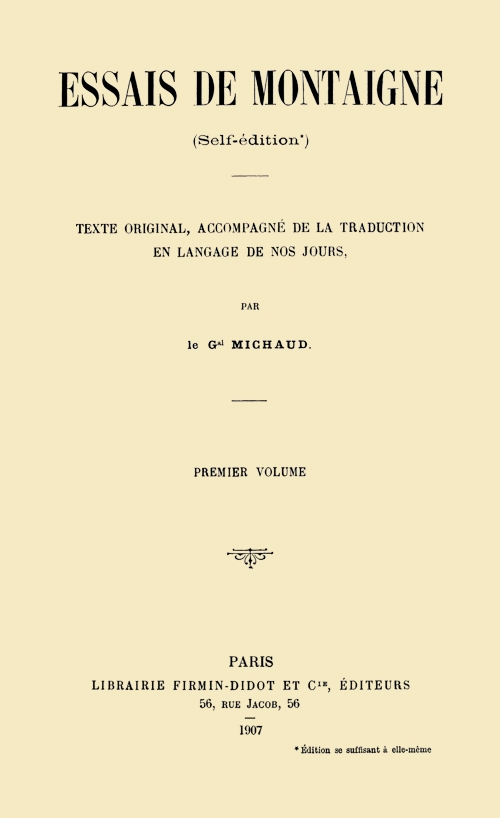
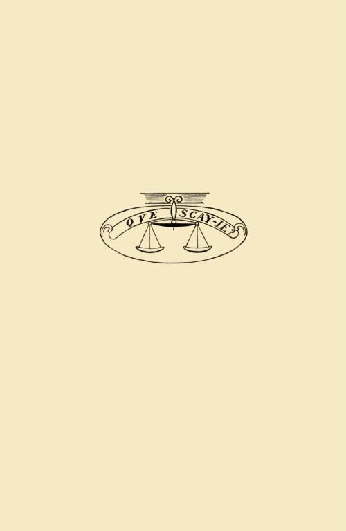
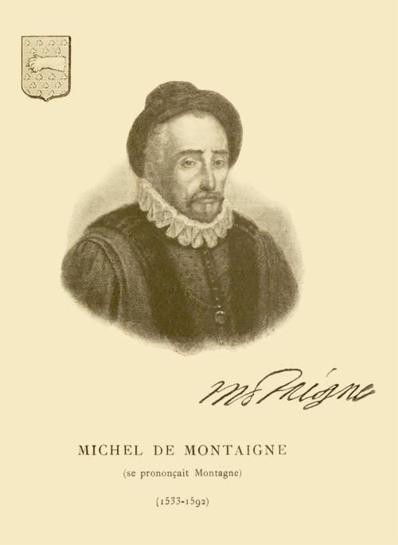

Title: Essais de Montaigne (self-édition) - Volume I
Author: Michel de Montaigne
Translator: Michaud
Release date: March 19, 2015 [eBook #48529]
Most recently updated: October 24, 2024
Language: French
Other information and formats: www.gutenberg.org/ebooks/48529
Credits: Produced by Claudine Corbasson and the Online Distributed



Planche I
Cet ouvrage se compose de quatre volumes, comprenant:
1er VOLUME.—Avertissement, table générale des chapitres, texte et traduction du commencement au chapitre 6 inclus du livre II.
2e VOLUME.—Texte et traduction du chapitre 7 inclus du livre II au chapitre 35 inclus de ce même livre.
3e VOLUME.—Texte et traduction du chapitre 36 du livre II jusqu'à la fin.
4e VOLUME *.—Notice sur Montaigne, etc.; sommaire des Essais, variantes, notes, lexique, etc.
ILLUSTRATIONS:
1er vol.—Portrait de l'auteur, armoiries et signature.
2e vol.—Plan du domaine et perspective du manoir de Montaigne.
3e vol.—Vue de la tour de Montaigne et plan des étages.
4e vol.—Fac-similé d'une page du manuscrit de Bordeaux.
Voir sur ces illustrations, la notice insérée à cet effet au quatrième volume, en tête des Notes.
* Ce volume, indépendant des autres, est susceptible par sa contexture d'être aisément utilisé avec n'importe quelle édition des Essais ancienne ou moderne, moyennant un simple tableau de concordance de pagination facile à établir soi-même.
La présente édition des Essais de Montaigne (self-édition) comprend: le texte original de cet ouvrage d'après l'édition de 1595 et sa traduction en langage de nos jours, avec sommaires intercalés; un ensemble de ces mêmes sommaires, les citations classées par ordre alphabétique, de très nombreuses notes hors texte inédites et autres; un glossaire; un lexique des noms propres, avec index analytique des principales matières, etc.; enfin, une notice sur l'auteur et sur son œuvre.
Montaigne se distingue entre tous par le sujet qu'il traite et la forme simple et humoristique qu'il y emploie: «Il a cela pour lui, dit Pascal, qu'un homme bête ne le comprendra jamais»; de son côté, Laboulaye le tient «comme le seul moraliste qu'on lise avec plaisir, quand on n'a plus quarante ans»; et il ajoute: «On peut ouvrir les Essais au hasard, toute page en est sérieuse et donne à réfléchir.»
Son sujet, c'est l'homme, qu'il étudie dans sa réalité, avec ses besoins, ses passions et les conditions en lesquelles il se trouve pour y satisfaire; et, pour plus de vérité, c'est lui-même qu'il analyse. Mais s'il parle de lui, c'est de manière à nous occuper de nous; et qui le lit, s'y reconnaît aujourd'hui comme il y a trois siècles, au temps où l'auteur écrivait, parce que ce qu'il a peint, ce n'est pas la société humaine qui, elle, change constamment, mais l'homme lui-même lequel, pour si «ondoyant et divers» qu'il soit, au fond demeure toujours le même.
Certainement Montaigne a vieilli; il émet bien des assertions qui, avec le progrès des mœurs, le développement des sciences, les idées nouvelles, les événements accomplis, ne sont plus exactes; sa lecture n'en demeure pas moins intéressante et profitable, parce que ces assertions, accompagnées d'observations sur la nature humaine, qui sont et seront toujours vraies, présentées d'une manière saisissante, éveillent en nous un retour inconscient sur nous-mêmes; l'humanité peut continuer à progresser, les Essais seront toujours d'actualité; et à qui, en ce siècle essentiellement utilitaire, demanderait à quoi aujourd'hui peut encore servir cette lecture, on peut, en toute assurance, répondre que nulle n'est plus propre à nous garder d'une présomption exagérée, à nous inspirer de l'indulgence pour autrui, nous maintenir en possession de nous-mêmes, amener en nous la résignation contre la souffrance ou la mauvaise fortune, et, quoi qu'il advienne, faire le calme en nos âmes.
Mais il n'en est pas de même de la langue que parle leur auteur; plus on s'éloigne de l'époque où il écrivait, moins elle demeure facilement intelligible, en raison des mots et des tournures de phrase hors d'usage qui s'y rencontrent parfois en grand nombre, surtout quand il disserte, II au lieu de raconter. Déjà, en 1790, un de ses éditeurs disait, sans cependant le réaliser, «qu'il fallait mettre les Essais à la portée de ceux auxquels manque le loisir de les déchiffrer». Ce qui était déjà vrai alors, l'est plus encore maintenant, où moins de gens qu'autrefois sont inoccupés, où les occupations de chacun se sont multipliées, et où le nombre de ceux qui s'adonnent aux études littéraires va diminuant constamment. C'est en raison de cet état de choses que la présente édition a été entreprise; son but est de faire que la lecture de cet ouvrage, si foncièrement profitable à quiconque vit ou a vécu tant soit peu de la vie agitée de ce monde, devienne aussi facile et intéressante aujourd'hui pour tous qu'elle l'était autrefois pour quelques-uns.
Les érudits y trouveront, conforme à l'édition de 1595, d'Abel Langelier, la meilleure qui ait été publiée, un texte auquel ils pourront s'en tenir. S'ils veulent pousser plus loin, les relevés des variantes de l'exemplaire manuscrit de Bordeaux et de l'édition de 1588 satisferont leur légitime désir, en même temps que la table des citations leur donnera possibilité de se reporter aisément à telle édition que ce soit. De plus, les sommaires placés en regard aideront leurs recherches et même leurs lectures, en précisant l'idée que le texte développe, aidant ainsi à sa compréhension, parfois difficile dans tout ouvrage philosophique, et même dans Montaigne, si peu semblable qu'il soit à cet égard à tous autres qui se sont occupés de ces questions.—Dans les passages les laissant indécis, ils auront encore la ressource de consulter la traduction en langage de nos jours qui accompagne le texte original; ils y trouveront une interprétation qu'ils seront toujours libres de ne pas accepter et même de critiquer.
Je crois cependant devoir faire observer à ceux chez lesquels cette prédisposition existe, que la différence est grande entre l'attention passagère permettant de relever les imperfections que, de-ci, de-là, peuvent présenter quelques membres de phrase et le travail de longue haleine qu'est l'expression, dans leur intégralité de la totalité des idées contenues dans un ouvrage aussi considérable; et que, de fait, une traduction de Montaigne présente de très réelles difficultés pour arriver à lui conserver, dans la mesure du possible, la concision et la délicatesse des nuances qui abondent en lui et rendre d'une façon compréhensible certains passages obscurs ou ambigus. Cette difficulté n'apparaît pas de prime abord: mais, pour s'en rendre compte, il suffit d'en lire à haute voix un fragment de quelque étendue, une page entière par exemple, la première venue; on verra de suite combien elle est aujourd'hui difficilement lisible et parfois même peu compréhensible; et si, ensuite, la plume à la main, on s'essaie à traduire cette même page, de manière que la lecture à haute voix en soit courante et nettement saisissable, on constatera combien malaisément on est arrivé à un résultat satisfaisant; c'est une épreuve à laquelle je convie nos critiques, avant qu'ils ne formulent leurs appréciations. Pourront-elles, du reste, être plus sévères que celles émises par anticipation par Naigeon, il y a cent ans passés: «Le projet de récrire les Essais dans notre langue, peut passer comme tant d'autres idées par la tête d'un ignorant et d'un sot, mais n'entrera jamais dans celle d'un lecteur judicieux, instruit et d'un goût délicat et sûr»; j'ai indiqué ci-dessus les raisons qui, nonobstant, nous ont fait passer outre. Du reste, envisageant cette traduction non plus au point de vue esthétique, mais sous le rapport utilitaire, G. Guizot n'a-t-il pas dit: «Pour bien saisir les idées de Montaigne et les juger à leur valeur, il faut se résigner à un travail III déplaisant; il faut les dépouiller de leur forme ancienne et originale et les traduire en langage d'aujourd'hui.»
Ceux auxquels le vieux français est moins familier, ne seront plus absolument privés d'entrer en connaissance de cette œuvre si pleine d'intérêt et d'originalité. La traduction, qui serre d'assez près le texte, leur procurera cette satisfaction, en même temps que les notes et le lexique leur donneront tous les renseignements qu'une curiosité, qui naîtra d'elle-même, leur fera désirer quand le temps ne les pressera pas trop.
Si exacte que puisse être une traduction de Montaigne, et le proverbe italien est ici, comme ailleurs, de toute vérité: «Traduttore traditore», elle ne saurait pourtant rendre «la précision, l'énergie, la hardiesse de son style, le naturel, qui en font un de ses principaux charmes et donnent à son ouvrage un caractère si particulier et si piquant; son parler en effet a une grâce qui ne se peut égaler en langage moderne». Pour suppléer à cette infériorité et ne pas faire tort à l'auteur, que notre intention est de vulgariser et non d'amoindrir, texte et traduction ont été juxtaposés: juxtaposition que nous tenons comme tellement juste et indispensable, que nous nous ferions un véritable scrupule de consentir, aujourd'hui et plus tard, à ce que cette traduction, dont du reste elle permet de juger de la fidélité, soit publiée séparément.
Dans les Essais, les en-tête des chapitres n'ont que rarement un rapport tel avec les sujets si divers qui y sont traités, qu'ils renseignent suffisamment; la table qui en a été faite et son annexe constituent un fil conducteur simple et utile, pour s'orienter dans ce fouillis inextricable par lui-même.—L'ensemble des sommaires ajoute à cette première facilité et la complète en faisant ressortir la liaison, toujours si difficile à saisir dans ce pêle-mêle de pensées ingénieuses, mais jetées le plus souvent sans ordre et au hasard; il rend possible à tous de se faire une idée précise de l'ouvrage et de s'y reconnaître à coup sûr; aussi sera-t-il fréquemment consulté, d'autant que des renvois, établis paragraphe par paragraphe, reportent, sans hésitation, au texte lui-même.
Il a semblé également intéressant de donner un relevé des passages des Essais les plus fréquemment cités, avec indication de l'endroit du texte où ils se trouvent; pouvant ainsi les replacer dans le cadre d'où ils ont été tirés, on sera à même, le cas échéant, de leur restituer leur véritable sens dont, assez souvent, ils sont détournés.
En outre des mots et locutions hors d'usage dont nous avons déjà parlé, des faits historiques peu connus, des allusions à des événements de l'époque, des indications à préciser, des erreurs même se rencontrent fréquemment dans Montaigne. Les notes qui accompagnent cette édition sont de toutes sortes; elles ont pour objet d'élucider ces divers points, et aussi de renseigner succinctement sur les principaux personnages mis en cause, signaler certains emprunts faits à notre auteur, ainsi que quelques-unes des appréciations émises par ses commentateurs, les sources où lui-même a puisé, enfin de consigner des rapprochements que la lecture de l'ouvrage fait naître spontanément.
C'est cet ensemble qui, donnant possibilité à chacun de lire les
Essais avec intérêt et de les méditer à sa convenance, suivant
l'instruction qu'il possède et le temps dont il dispose, fait que la
présente édition justifie d'être à la portée de tous.
De ces diverses parties, seule la traduction en langage de nos jours IV qui, à la vérité, en dehors du texte original, en constitue le gros œuvre, est uniquement de nous; et encore y avons-nous inséré, à peu près telles quelles, les traductions des citations latines, grecques, etc., auxquelles ont successivement collaboré tous les éditeurs de Montaigne, depuis Mademoiselle de Gournay à laquelle en est due la presque totalité.
Les sommaires ont été relevés dans Amaury Duval; généralement, on s'est borné à les transcrire sans y rien changer, parfois cependant ils ont été complétés: dans les derniers chapitres notamment, modifications et additions sont assez fréquentes.
Les notes, toujours trop nombreuses pour les érudits, jamais assez pour les autres, ont, en raison de leur multiplicité et pour conserver au texte sa physionomie, été groupées dans un volume séparé. Pour la plupart d'entre elles, tous ceux qui jusqu'ici se sont particulièrement occupés de Montaigne, les Coste, Naigeon, Jamet, Leclerc, G. Guizot, Payen, Margerie, Bonnefon et autres, ainsi que les auteurs dont il s'est principalement inspiré: Hérodote, Cicéron, Sénèque, Pline, Tite-Live, Plutarque, Diogène Laerce, etc..., ont été largement mis à contribution; du reste la part contributive de chacun est mentionnée partout où elle s'est exercée.
Le lexique comprend tous les noms propres qui se rencontrent dans le texte.
L'index analytique des principales matières a été établi en s'aidant des éditions antérieures comme, du reste, toutes en ont agi avec celles qui les ont précédées.
Notes et lexique ont reçu une très notable extension, en vue de faire que l'ouvrage se suffise à lui-même.
Pour donner satisfaction à certains, il a été joint un glossaire que
d'autres considèrent presque comme une superfétation, la traduction et
les notes permettant en effet, la plupart du temps, de s'en passer.
Ce faisant, nous croyons avoir, avec l'aide de nos devanciers, ajouté à leur œuvre, sans nous dissimuler que les Essais se prêtent à tant de dissertations et de commentaires, que beaucoup demeure qui pourrait être fait; touchant même ce qui est, peut-être devrions-nous, avant de le livrer à la publicité, maintes fois encore «sur le métier remettre notre ouvrage», mais l'âge nous gagne.
Gal M.
Montgeron, août 1906.
Nota.—Les en-tête des chapitres sont ceux du texte original; la traduction ne suit que si elle en diffère. Les indications entre parenthèses sont celles de l'idée principale qui est traitée dans le chapitre: elle n'est mentionnée que lorsque l'en-tête même ne la fait pas ressortir suffisamment; ces mêmes indications, classées par ordre alphabétique, sont reproduites après la présente table, dans une annexe.
Les chiffres romains indiquent le volume, à la table particulière duquel il y a lieu de se reporter pour avoir la page.
| Volume. | ||
| Av Lectevr.—L'auteur au lecteur | I | |
| LIVRE PREMIER | ||
| Ch. 1. | —Par diuers moyens l'on arriue à pareille fin.—(Moyens divers d'obtenir la commisération de ses ennemis). | I |
| Ch. 2. | —De la tristesse. | I |
| Ch. 3. | —Nos affections s'emportent au delà de nous.—Nous prolongeons nos affections et nos haines au delà de notre propre durée (Préoccupations continues que nous avons de ce qui peut advenir, après notre mort, des choses auxquelles nous nous intéressons pendant la vie; dans quelle mesure nous devons aux rois notre obéissance et notre estime; du soin de nos funérailles). | I |
| Ch. 4. | —Comme l'ame descharge les passions sur les obiects faux, quand les vrais luy deffaillent.—L'âme exerce ses passions sur des objets auxquels elle s'attaque sans raison, quand ceux, cause de son délire, échappent à son action. | I |
| Ch. 5. | —Si le chef d'vne place assiégée doit sortir pour parlementer.—Le commandant d'une place assiégée doit-il sortir de sa place pour parlementer? (Sur la bonne foi et la loyauté à la guerre; du danger que court le commandant d'une place assiégée, en sortant pour parlementer). | I |
| Ch. 6. | —L'heure des Parlements dangereuse.—Le temps durant lequel on parlemente, est un moment dangereux (Pendant qu'on traite des conditions d'une capitulation, il faut être sur ses gardes et redoubler de vigilance). | I |
| Ch. 7. | —Que l'intention iuge nos actions.—Nos actions sont à apprécier d'après nos intentions (Nos obligations s'étendent au delà de la mort). | I |
| Ch. 8. | —De l'oisiueté. | I |
| 2Ch. 9. | —Des menteurs.—(Sur la mémoire et le mensonge). | I |
| Ch. 10. | —Du parler prompt ou tardif.—De ceux prompts à parler de prime saut et de ceux auxquels un certain temps est nécessaire pour s'y préparer (Sur l'éloquence). | I |
| Ch. 11. | —Des prognostications.—Des pronostics (Sur l'astrologie et la prédiction de l'avenir). | I |
| Ch. 12. | —De la constance.—(Du courage et de ses limites). | I |
| Ch. 13. | —Cérémonie de l'entreueue des Rois.—Cérémonial dans les entrevues des rois (Sur la civilité, en particulier dans les visites des souverains). | I |
| Ch. 14. | —On est puny pour s'opiniastrer à vne place sans raison.—On est punissable, quand on s'opiniâtre à défendre une place au delà de ce qui est raisonnable. | I |
| Ch. 15. | —De la punition de la couardise.—Punition à infliger aux lâches. | I |
| Ch. 16. | —Vn traict de quelques Ambassadeurs.—Façon de faire de quelques ambassadeurs (De l'obéissance à ses supérieurs; utilité de se renfermer dans ses aptitudes). | I |
| Ch. 17. | —De la peur. | I |
| Ch. 18. | —Qu'il ne faut iuger de nostre heur qu'apres la mort.—Ce n'est qu'après la mort, qu'on peut apprécier si, durant la vie, on a été heureux ou malheureux (Sur l'inconstance de la fortune). | I |
| Ch. 19. | —Que philosopher c'est apprendre à mourir. | I |
| Ch. 20. | —De la force de l'imagination.—(Des esprits forts). | I |
| Ch. 21. | —Le profit de l'vn est dommage de l'autre.—Ce qui est profit pour l'un est dommage pour l'autre (Impossibilité de concilier les intérêts de tous). | I |
| Ch. 22. | —De la coustume et de ne changer aysément une loy receue.—Des coutumes et de la circonspection à apporter dans les modifications à faire subir aux lois en vigueur (De la force de l'habitude; inconvénients de l'instabilité des lois). | I |
| Ch. 23. | —Diuers euenemens de mesme conseil.—Une même ligne de conduite peut aboutir à des résultats dissemblables (Sur la clémence; part du hasard dans les événements humains). | I |
| Ch. 24. | —Du pedantisme (ou faux savoir). | I |
| Ch. 25. | —De l'institution des enfans.—De l'éducation des enfants. | I |
| Ch. 26. | —C'est folie de rapporter le vray et le faux à nostre suffisance.—C'est folie de juger du vrai et du faux avec notre seule raison (Degré de croyance qu'on peut accorder aux récits extraordinaires). | I |
| Ch. 27. | —De l'amitié.—(Éloge d'Étienne de la Boëtie). | I |
| Ch. 28. | —Vint neuf sonnets d'Estienne de la Boetie. | |
| Ch. 29. | —De la moderation.—(De la modération dans l'exercice même de la vertu et les jouissances des plaisirs licites). | I |
| Ch. 30. | —Des Cannibales.—(Sur l'état des hommes vivant en dehors de la civilisation). | I |
| Ch. 31. | —Qu'il faut sobrement se mesler de iuger des ordonnances diuines.—Il faut beaucoup de circonspection, quand on se mêle d'émettre un jugement sur les décrets de la Providence. | I |
| 3Ch. 32. | —De fuir les voluptez, au prix de la vie.—Les voluptés sont à fuir, même au prix de la vie. | I |
| Ch. 33. | —La fortune se rencontre souuent au train de la raison.—La fortune marche souvent de pair avec la raison (Part de la fortune dans les événements humains). | I |
| Ch. 34. | —D'vn defaut de nos polices.—Une lacune de notre administration. | I |
| Ch. 35. | —De l'vsage de se vestir.—(Sur l'usage des vêtements et la force de l'habitude). | I |
| Ch. 36. | —Du ieune Caton.—Sur Caton le jeune ou d'Utique (Intérêts de nature à porter à des actes de vertu). | I |
| Ch. 37. | —Comme nous pleurons et rions d'vne mesme chose.—(Sentiments opposés qui nous portent à pleurer et à rire d'une même chose). | I |
| Ch. 38. | —De la solitude. | I |
| Ch. 39. | —Considération sur Cicéron.—(Qualités qui conviennent à un homme du monde.) | I |
| Ch. 40. | —Que le goust des biens et des maux despend en bonne partie de l'opinion que nous en auons.—Le bien et le mal qui nous arrivent ne sont souvent tels que par l'idée que nous nous en faisons. | I |
| Ch. 41. | —De ne communiquer sa gloire.—L'homme n'est pas porté à abandonner à d'autres la gloire qu'il a acquise. | I |
| Ch. 42. | —De l'inegalité qui est entre nous.—(Inégalités résultant des conditions de l'ordre social, différences entre les qualités de chacun; des soucis de la royauté). | I |
| Ch. 43. | —Des loix somptuaires.—(Danger des innovations dans un état). | I |
| Ch. 44. | —Du dormir.—(Sur la tranquillité d'âme dans les circonstances graves). | I |
| Ch. 45. | —De la battaille de Dreux.—(Sur la conduite d'un général dans une bataille). | I |
| Ch. 46. | —Des noms.—(De leur influence dans la vie). | I |
| Ch. 47. | —De l'incertitude de nostre iugement.—(Sur l'art de la guerre; part de la fortune dans les événements). | I |
| Ch. 48. | —Des destriers.—Des chevaux d'armes (Sur l'équitation et l'art de la guerre). | I |
| Ch. 49. | —Des coustumes anciennes.—Des coutumes des anciens. | I |
| Ch. 50. | —De Democritus et Heraclitus.—(De l'usage à faire des diverses qualités de l'esprit). | I |
| Ch. 51. | —De la vanité des parolles. | I |
| Ch. 52. | —De la parsimonie des anciens. | I |
| Ch. 53. | —D'vn mot de Cæsar.—(Du souverain bien; des désirs insatiables de l'homme). | I |
| Ch. 54. | —Des vaines subtilitez.—Inanité de certaines subtilités. | I |
| Ch. 55. | —Des senteurs.—Des odeurs. | I |
| Ch. 56. | —Des prieres. | I |
| Ch. 57. | —De l'aage.—(De la jeunesse, de la vieillesse; sur l'époque de la maturité de l'esprit). | I |
| 4LIVRE DEUXIEME | ||
| Ch. 1. | —De l'inconstance de nos actions.—(Variations dans le caractère et la conduite chez un même homme). | I |
| Ch. 2. | —De l'iurongnerie.—(De l'ivrognerie et de l'enthousiasme). | I |
| Ch. 3. | —Coustume de l'Isle de Cea.—(Sur le suicide). | I |
| Ch. 4. | —A demain les affaires.—(Sur l'exactitude à apporter dans le maniement des affaires). | I |
| Ch. 5. | —De la conscience.—(De la bonne conscience; sur le remords, la torture). | I |
| Ch. 6. | —De l'exercitation.—De l'exercice (Sur le moyen de se familiariser avec la mort; sur la nécessité de se connaître). | I |
| Ch. 7. | —Des recompenses d'honneur.—Des récompenses honorifiques. | II |
| Ch. 8. | —De l'affection des peres aux enfants.—(Conduite à tenir à leur égard; situation de fortune à leur donner; affection que nous portons aux productions de notre esprit). | II |
| Ch. 9. | —Des armes des Parthes. | II |
| Ch. 10. | —Des liures.—(Jugement porté sur quelques auteurs de toutes époques). | II |
| Ch. 11. | —De la cruauté.—(La difficulté est inhérente à la pratique de la vertu). | II |
| Ch. 12. | —Apologie de Raimond de Sebonde.—(Sur les fondements de la foi chrétienne; l'instinct des animaux; les sectes philosophiques des anciens; la Divinité; l'âme humaine; l'incertitude des connaissances de l'homme, celle de ses sens; tout soumettre à l'examen de la raison conduit à bien des erreurs, notamment dans les questions de religion). | II |
| Ch. 13. | —De iuger de la mort d'autruy.—(Réserve à apporter, quand nous jugeons de la mort d'autrui; sur le suicide). | II |
| Ch. 14. | —Comme nostre esprit s'empesche soy-mesme.—(Par sa faiblesse, l'esprit humain se crée à lui-même bien des difficultés). | II |
| Ch. 15. | —Que nostre desir s'accroist par la malaisance.—(Nos désirs s'accroissent par la difficulté de les satisfaire). | II |
| Ch. 16. | —De la gloire. | II |
| Ch. 17. | —De la presumption.—(Opinion de Montaigne sur lui-même; quelques appréciations sur les autres). | II |
| Ch. 18. | —Du dementir.—Du fait de donner ou recevoir des démentis (Sur le mensonge, le point d'honneur). | II |
| Ch. 19. | —De la liberté de conscience.—(Du zèle pour la religion; apologie de l'empereur Julien). | II |
| Ch. 20. | —Nous ne goustons rien de pur.—(Mélange constant du bien et du mal). | II |
| Ch. 21. | —Contre la faineantise.—(Considérations sur le but de la vie; activité nécessaire à un souverain). | II |
| Ch. 22. | —Des postes. | II |
| Ch. 23. | —Des mauuais moyens employez à bonne fin. | II |
| Ch. 24. | —De la grandeur Romaine. | II |
| Ch. 25. | —De ne contrefaire le malade.—(De la force de l'imagination). | II |
| Ch. 26. | —Des poulces. | II |
| 5Ch. 27. | —Couardise mere de cruauté.—La poltronnerie est mère de la cruauté (Du duel; des sévices exercés sur les suppliciés après leur mort). | II |
| Ch. 28. | —Toutes choses ont leur saison.—Chaque chose en son temps (Sur la vieillesse). | II |
| Ch. 29. | —De la vertu. | II |
| Ch. 30. | —D'vn enfant monstrueux. | II |
| Ch. 31. | —De la colere. | II |
| Ch. 32. | —Deffence de Seneque et de Plutarque. | II |
| Ch. 33. | —L'Histoire de Spurina.—(Le rôle essentiel de l'âme est de maîtriser les passions; particularités afférentes à Jules César). | II |
| Ch. 34. | —Obseruations sur les moyens de faire la guerre de Iulius Cæsar. | II |
| Ch. 35. | —De trois bonnes femmes.—(Sur le mariage et l'affection conjugale). | II |
| Ch. 36. | —Des plus excellents hommes.—(Sur Homère, Alexandre et Epaminondas). | III |
| Ch. 37. | —De la ressemblance des enfants aux peres.—(Sur les maux de la vieillesse, sur la médecine). | III |
| LIVRE TROISIEME | ||
| Ch. 1. | —De l'vtile et de l'honneste. | III |
| Ch. 2. | —Du repentir. | III |
| Ch. 3. | —De trois commerces.—(De la société des hommes, des femmes et de celle des livres). | III |
| Ch. 4. | —De la diuersion. | III |
| Ch. 5. | —Sur des Vers de Virgile.—(De l'amour, de la jalousie; en ces matières, les reproches que s'adressent réciproquement les deux sexes se valent). | III |
| Ch. 6. | —Des coches.—(Meilleur emploi à faire, par un roi, de ses richesses; sur le peu d'étendue des connaissances humaines). | III |
| Ch. 7. | —De l'incommodité de la grandeur. | III |
| Ch. 8. | —Sur l'art de conferer.—(La conversation forme le caractère, apprend à supporter la contradiction; difficulté de juger à bon escient, de discerner chez un auteur ce qui lui appartient en propre). | III |
| Ch. 9. | —De la vanité.—(Danger des changements dans le gouvernement d'un état; des voyages; des soins du ménage). | III |
| Ch. 10. | —De mesnager sa volonté.—Il faut contenir sa volonté (Réserve à apporter dans les services qu'on est tenté de rendre à autrui). | III |
| Ch. 11. | —Des boyteux.—(Tendance de l'esprit humain pour le merveilleux). | III |
| Ch. 12. | —De la physionomie.—(Combien mieux que tous les enseignements de la philosophie, la nature nous porte à la résignation). | III |
| Ch. 13. | —De l'expérience.—(Sur l'obscurité et le peu d'équité des lois; l'incertitude de la médecine; le régime convenant le mieux à la santé; le meilleur usage de la vie, des plaisirs; sur la doctrine d'Épicure). | III |
Des deux nombres entre parenthèses, le premier en chiffres romains marque
le livre; le second en chiffres arabes, le chapitre; celui, en chiffres romains,
qui suit en dehors de la parenthèse, indique le volume:
ESSAIS
DE
MICHEL SEIGNEVR
DE MONTAIGNE
CIↃ IↃ XCV
TEXTE ET TRADUCTION
Nota.—Ce texte a été collationné sur l'exemplaire de l'édition de 1595 (éditée à Paris, à cette date, par Abel Langelier), appartenant à la Bibliothèque nationale, no 15 de la collection Payen.—En ce qui concerne spécialement l'avis au lecteur ci-dessus, se reporter aux Notes, I, 14, 1, Av Lectevr.
Ce livre, lecteur, est un livre de bonne foi.
Il t'avertit, dès le début, que je ne l'ai écrit que pour moi et quelques intimes, sans me préoccuper qu'il pût être pour toi de quelque intérêt, ou passer à la postérité; de si hautes visées sont au-dessus de ce dont je suis capable. Je le destine particulièrement à mes parents et à mes amis, afin que lorsque je ne serai plus, ce qui ne peut tarder, ils y retrouvent quelques traces de mon caractère et de mes idées et, par là, conservent encore plus entière et plus vive la connaissance qu'ils ont de moi. Si je m'étais proposé de rechercher la faveur du public, je me serais mieux attifé et me présenterais sous une forme étudiée pour produire meilleur effet; je tiens, au contraire, à ce qu'on m'y voie en toute simplicité, tel que je suis d'habitude, au naturel, sans que mon maintien soit composé ou que j'use d'artifice, car c'est moi que je dépeins. Mes défauts s'y montreront au vif et l'on m'y verra dans toute mon ingénuité, tant au physique qu'au moral, autant du moins que les convenances le permettent. Si j'étais né parmi ces populations qu'on dit vivre encore sous la douce liberté des lois primitives de la nature, je me serais très volontiers, je t'assure, peint tout entier et dans la plus complète nudité.
Ainsi, lecteur, c'est moi-même qui fais l'objet de mon livre; peut-être n'est-ce pas là une raison suffisante pour que tu emploies tes loisirs à un sujet aussi peu sérieux et de si minime importance.
Sur ce, à la grâce de Dieu.
A Montaigne, ce 1er mars 1580.
Nota.—Cette traduction a été faite d'après l'édition de 1595, en tenant compte toutefois de quelques variantes du manuscrit de Bordeaux, complétant ou accentuant la pensée de l'auteur.—Ces variantes, dont le relevé est donné dans le quatrième volume, sont pour la plupart de très minime importance: elles portent en très grand nombre sur l'orthographe; de-ci, de-là, constituent des additions ou des suppressions de mots ou encore des substitutions d'un mot à un autre, soit pour éviter des répétitions, soit pour préciser; et parfois, mais rarement, de légères modifications dans la construction de membres de phrase; dans la quantité, il n'en est pas une qui modifie sensiblement le sens. Celles dont il a été tenu compte sont signalées par un astérisque (*).
La soumission vous concilie d'ordinaire ceux que vous avez offensés; parfois une attitude résolue produit le même résultat.—La façon la plus ordinaire d'attendrir les cœurs de ceux que nous avons offensés, quand, leur vengeance en main, nous sommes à leur merci, c'est de les émouvoir par notre soumission, en leur inspirant commisération et pitié; toutefois la bravoure, la constance et la résolution, qui sont des moyens tout contraires, ont quelquefois produit le même résultat.
Edouard, prince de Galles, celui-là même qui, si longtemps, fut régent de notre province de Guyenne, personnage dont les actes et la fortune ont maintes fois témoigné de beaucoup de grandeur d'âme, s'étant emparé de vive force de Limoges, avait ordonné le massacre de ses habitants qui l'avaient gravement offensé. Il cheminait à travers la ville, et les cris de ceux, hommes, femmes et enfants, ainsi voués à la mort, qui, prosternés à ses pieds, imploraient merci, n'avaient pu attendrir son âme; quand s'offrirent à sa vue trois gentilshommes français, qui, avec une hardiesse incroyable, tenaient tête, à eux seuls, à son armée victorieuse. Un tel courage lui inspira une considération et un respect qui calmèrent subitement sa colère; sur-le-champ il leur fit grâce, et cette grâce, il l'étendit à tous les autres habitants de la ville.
Scanderberg, prince d'Epire, poursuivait avec l'intention de le tuer, un de ses soldats; celui-ci, après avoir essayé en vain de l'apaiser par des protestations de toutes sortes et les plus humbles supplications, se résolut, en désespoir de cause, à l'attendre l'épée à la main. Cet acte de résolution arrêta net l'exaspération de son maître qui, en le voyant prendre un si honorable parti, lui fit grâce. Ce fait est susceptible d'être interprété autrement que je ne le fais, mais par ceux-là seulement qui ignorent la force prodigieuse et le courage dont ce prince était doué.
L'empereur Conrad III, assiégeant Guelphe, duc de Bavière, n'avait consenti à ne laisser sortir de la ville que les femmes des gentilshommes qui s'y trouvaient enfermées avec son ennemi, s'engageant à respecter leur honneur, mais ne leur accordant de sortir qu'à pied, en n'emportant que ce qu'elles pourraient porter elles-mêmes; et il s'était refusé à adoucir ces conditions, quelques autres satisfactions qu'on lui offrît, si humiliantes qu'elles fussent. N'écoutant que leur grand cœur, ces femmes s'avisèrent alors de charger sur leurs épaules leurs maris, leurs enfants et le duc lui-même. L'empereur fut tellement saisi de cette touchante marque de courage, qu'il en pleura d'attendrissement; la haine mortelle qu'il avait vouée au duc, dont il voulait la perte, en devint moins ardente; et, à partir de ce moment, il le traita lui et les siens avec humanité.
Comment s'explique que ces deux sentiments contraires produisent le même effet.—L'un et l'autre de ces deux moyens réussiraient aisément auprès de moi, car j'ai une grande propension à la miséricorde et à la bienveillance; cependant j'estime que je céderais encore plus facilement à la compassion qu'à l'admiration, bien que la pitié soit considérée comme une passion condamnable par les stoïciens, qui concèdent bien qu'on secoure les affligés, mais non qu'on s'attendrisse et qu'on compatisse à leurs souffrances. Les exemples qui précèdent me semblent rentrer davantage dans la réalité des choses; ils nous montrent l'âme aux prises avec ces deux sentiments contraires: résister à l'un sans fléchir, et céder à l'autre. Cela peut s'expliquer en admettant que se laisser gagner par la pitié, est plus facile et le propre des cœurs débonnaires et peu énergiques; d'où il résulte que les êtres les plus faibles, comme les femmes, les enfants et les gens du commun y sont plus particulièrement portés; tandis que ne pas se laisser attendrir par les larmes et les prières, et finir par se rendre seulement devant les signes manifestes d'un courage incontestable, est le fait d'une âme forte et bien trempée, aimant et honorant les caractères énergiques et tenaces.
Et cependant, l'étonnement et l'admiration peuvent produire ces mêmes effets sur des natures moins généreuses; témoin le peuple thébain qui, appelé à prononcer dans une accusation capitale intentée contre les capitaines de son armée, pour s'être maintenus en charge au delà du temps durant lequel ils devaient l'exercer, acquitta à grand'peine Pélopidas qui, accablé de cette mise en jugement, ne sut, pour se défendre, que gémir et supplier; tandis qu'au contraire, à l'égard d'Epaminondas qui, après avoir exposé en termes magnifiques les actes de son commandement, la tête haute, la parole sarcastique, se mit à reprocher au peuple son ingratitude, l'assemblée, pénétrée d'admiration vis-à-vis de cet homme d'un si grand courage, se dispersa sans même oser aller au scrutin.
Cruauté obstinée de Denys l'ancien, tyran de Syracuse.—Denys21 l'ancien, s'étant emparé, après un siège très long et très difficile, de la ville de Reggium, et avec elle de Phyton, homme de grande vertu, qui y commandait et avait dirigé cette défense opiniâtre, voulut en tirer une vengeance éclatante qui servît d'exemple. Tout d'abord, il lui apprit que la veille, il avait fait noyer son fils et tous ses autres parents; à quoi Phyton se borna à répondre: «Qu'ils en étaient d'un jour plus heureux que lui.» Puis il le livra aux bourreaux qui le dépouillèrent de ses vêtements et le traînèrent à travers la ville, le fouettant ignominieusement à coups redoublés, l'accablant en outre des plus brutales et cruelles injures. Phyton, conservant toute sa présence d'esprit et son courage, ne faiblit pas; ne cessant de se targuer à haute voix de l'honorable et glorieuse défense qu'il avait faite et qui était cause de sa mort, n'ayant pas voulu livrer sa patrie aux mains d'un tyran, le menaçant lui-même d'une prochaine punition des dieux. Lisant dans les yeux de la plupart de ses soldats qu'au lieu d'être excités par ses bravades contre cet ennemi vaincu, qui les provoquait au mépris de leur chef et dépréciait son triomphe, étonnés d'un tel courage, ils s'en laissaient attendrir et commençaient à murmurer, parlant même d'arracher Phyton des mains de ses bourreaux, Denys mit fin à ce martyr et, à la dérobée, l'envoya noyer à la mer.
L'homme est ondoyant et divers; conduite opposée de Sylla et de Pompée dans des circonstances analogues.—En vérité, l'homme est de nature bien peu définie et étrangement ondoyant et divers; il est malaisé de porter sur lui un jugement ferme et uniforme. Ainsi, voilà Pompée qui pardonne à toute la ville des Mamertins, contre laquelle il était fort animé, en considération de la vertu et de la grandeur d'âme de Zénon l'un de leurs concitoyens qui, se donnant comme l'unique coupable de leur conduite envers lui, demandait en grâce d'en porter seul la peine; tandis qu'à Pérouse, en semblable circonstance, un citoyen de cette ville, également distingué par ses vertus, dont Sylla avait été l'hôte, par un dévouement pareil, n'en obtient rien ni pour lui-même, ni pour les autres.
Cruauté d'Alexandre le Grand envers des ennemis dont la valeur méritait mieux.—A l'encontre des premiers exemples que j'ai cités, nous voyons Alexandre, l'homme le plus hardi qui fut jamais, d'ordinaire si généreux à l'égard des vaincus, devenu maître, après de nombreuses et grandes difficultés, de la ville de Gaza, en agir tout autrement à l'égard de Bétis qui commandait cette place et qui, pendant le siège, avait donné les preuves d'une éclatante valeur. Le rencontrant seul, abandonné des siens, ses armes brisées, couvert de sang et de plaies et combattant encore au milieu d'un groupe de Macédoniens qui le harcelaient de toutes parts, Alexandre, vivement affecté d'une victoire si chèrement achetée (entre autres dommages, lui-même venait d'y recevoir deux blessures), lui dit: «Tu ne mourras pas comme tu le23 souhaites, Bétis; sois certain qu'avant, il te faudra souffrir les plus cruels tourments qui se puissent imaginer contre un captif.» A cette menace, Bétis ne répondant rien et, au plus grand calme, joignant une attitude hautaine et pleine de défi, Alexandre, devant * ce silence fier et obstiné, s'écria: «A-t-il seulement fléchi le genou! s'est-il laissé aller à quelques supplications! ah vraiment, je vaincrai ce mutisme; et si je ne puis lui arracher une parole, j'arriverai bien à lui arracher quelque gémissement.» Et, passant de la colère à la rage, il lui fit percer les talons et, encore plein de vie, attacher à l'arrière d'un char et traîner ainsi jusqu'à ce que, mis en pièces, les membres rompus, il rendît le dernier soupir. Quel peut avoir été le mobile de tant de cruauté chez Alexandre? Serait-ce qu'à lui-même, courageux au delà de toute expression, cette vertu semblait tellement naturelle, que non seulement elle ne le transportait pas d'admiration, mais encore qu'il en faisait peu de cas; ou bien que, la considérant comme son apanage exclusif, il ne pouvait la supporter à un aussi haut degré chez les autres, sans en être jaloux; ou enfin, est-ce qu'il était hors d'état de se modérer dans ses transports de colère?—Certainement, s'il eût été capable de se maîtriser, il est à croire que lors de la prise et du sac de Thèbes, il se fût contenu à la vue de tant de vaillants guerriers, dont la résistance était désorganisée et qui furent passés au fil de l'épée; car il en périt bien ainsi six mille, dont pas un ne fut vu cherchant à prendre la fuite ou demandant merci; bien au contraire, ils allaient de ci, de là, à travers les rues, affrontant les vainqueurs, les provoquant à leur donner la mort dans des conditions honorables. On n'en vit aucun, si criblé qu'il fût de blessures, qui, jusqu'à son dernier soupir, n'essayât encore de se venger; dans leur désespoir, ils faisaient arme de tout, se consolant de leur propre mort par celle de quelqu'un de leurs ennemis. Ce courage malheureux n'éveilla cependant chez Alexandre aucune pitié; tout un long jour de carnage ne suffit pas pour assouvir sa vengeance; le massacre ne prit fin que lorsque les victimes firent défaut; seules, les personnes hors d'état de porter les armes, vieillards, femmes et enfants, furent épargnés, et, au nombre de trente mille, réduits en esclavage.
La tristesse est une disposition d'esprit des plus déplaisantes.—La tristesse est une disposition d'esprit dont je suis à peu près exempt; je ne l'aime, ni ne l'estime; bien qu'assez généralement, comme de parti pris, on l'ait en certaine considération et qu'on en pare la sagesse, la vertu, la conscience, c'est un sot et vilain25 ornement. Les Italiens ont, avec plus d'à propos, appelé de ce nom la méchanceté, car elle est toujours nuisible, toujours insensée; toujours aussi, elle est le propre d'une âme poltronne et basse; les stoïciens l'interdisent au sage.
Effet des grandes douleurs en diverses circonstances; tout sentiment excessif ne se peut exprimer.—L'histoire rapporte que Psamménitus, roi d'Égypte, défait et pris par Cambyse, roi de Perse, voyant passer sa fille, captive comme lui, habillée en servante, qu'on envoyait puiser de l'eau, demeura sans mot dire, les yeux fixés à terre, tandis qu'autour de lui, tous ses amis pleuraient et se lamentaient. Voyant, peu après, son fils qu'on menait à la mort, il garda cette même contenance; tandis qu'à la vue d'un de ses familiers conduit au milieu d'autres prisonniers, il se frappa la tête, témoignant d'une douleur extrême.
On peut rapprocher ce trait de ce qui s'est vu récemment chez un de nos princes qui, étant à Trente, y reçut la nouvelle de la mort de son frère aîné, le soutien et l'honneur de sa maison; bientôt après, il apprenait la perte de son frère puîné sur lequel, depuis la mort du premier, reposaient toutes ses espérances. Ces deux malheurs, il les avait supportés avec un courage exemplaire; quand, quelques jours plus tard, un homme de sa suite vint à mourir. A ce dernier accident, il ne sut plus se contenir, sa résolution l'abandonna, il se répandit en larmes et en lamentations, au point que certains en vinrent à dire qu'il n'avait été réellement sensible qu'à cette dernière secousse. La vérité est que la mesure était comble, et qu'un rien suffit pour abattre son énergie et amener ce débordement de tristesse. On pourrait, je crois, expliquer de même l'attitude de Psamménitus, si l'histoire n'ajoutait que Cambyse, s'étant enquis auprès de lui du motif pour lequel, après s'être montré si peu touché du malheur de son fils et de sa fille, il était si affecté de celui * d'un de ses amis, n'en eût reçu cette réponse: «C'est que ce dernier chagrin, seul, peut s'exprimer par les larmes; tandis que la douleur ressentie pour les deux premiers, est de beaucoup au delà de toute expression.»
A ce propos, me revient à l'idée le fait de ce peintre ancien qui, dans le sacrifice d'Iphigénie, ayant à représenter la douleur de ses divers personnages, d'après le degré d'intérêt que chacun portait à la mort de cette belle et innocente jeune fille; ayant à cet effet, quand il en arriva au père de la vierge, déjà épuisé toutes les ressources de son art; devant l'impossibilité de lui donner une contenance en rapport avec l'intensité de sa douleur, il le peignit le visage couvert. C'est aussi pour cela qu'à l'égard de Niobé, cette malheureuse mère, qui, après avoir perdu d'abord ses sept fils, perdit ensuite ses sept filles; les poètes ont imaginé qu'écrasée par une telle succession de malheurs, elle finit elle-même par être métamorphosée en rocher, «pétrifiée par la douleur (Ovide)», marquant de la sorte ce morne, muet et sourd hébétement qui s'empare de nous, lorsque les accidents qui nous accablent, dépassent ce que27 nous en pouvons supporter. Et, en effet, un chagrin excessif, pour être tel, doit stupéfier l'âme au point de lui enlever toute sa liberté d'action, ainsi qu'il arrive, au premier moment, sous le coup d'une très mauvaise nouvelle: nous sommes saisis d'étonnement, pénétrés d'effroi ou d'affliction et comme perclus en tous nos mouvements, jusqu'à ce qu'à cette prostration, succède la détente; alors les larmes et les plaintes se font jour, l'âme semble se dégager de son étreinte, renaître et peu à peu être plus au large et rentrer en possession d'elle-même: «C'est avec peine qu'enfin il recouvre la voix et peut exprimer sa douleur (Virgile).»
Pendant la guerre, autour de Bude, du roi Ferdinand contre la veuve du roi Jean de Hongrie, un homme d'armes se fit particulièrement remarquer dans un des combats qui se livrèrent, par sa valeur absolument hors ligne. Nul ne l'avait reconnu, et chacun le louait à qui mieux mieux et le plaignait, car il avait succombé; mais personne plus qu'un certain de Raïsciac, seigneur allemand, réellement enthousiasmé d'un courage aussi rare. Son corps ayant été rapporté, de Raïsciac s'approcha comme tout le monde, pour voir qui il était; et lorsqu'on l'eut débarrassé de son armure, il reconnut son fils. L'émotion des assistants s'en accrut d'autant; de Raïsciac, seul, demeura impassible; sans mot dire, sans un cillement d'yeux, debout, contemplant fixement ce corps, jusqu'à ce que la violence de son chagrin atteignant le principe même de la vie, il tomba raide mort.
«Qui peut dire à quel point il brûle, ne brûle que d'un petit feu (Pétrarque)», disent les amoureux qui veulent exprimer une passion qu'ils ne peuvent plus contenir: «Misérable que je suis! l'amour trouble mes sens. A ta vue, ô Lesbie, je suis hors de moi; il est au-dessus de mes forces de parler; ma langue s'embarrasse, une flamme subtile court dans mes veines, mes oreilles résonnent de mille bruits confus et le voile de la nuit s'étend sur mes yeux (Catulle).» Aussi, n'est-ce pas au plus fort de nos transports, quand notre sang bouillonne dans nos veines, que nous sommes le plus à même de trouver des accents qui apitoyent et qui persuadent; dans ces moments, l'âme est trop absorbée dans ses pensées, le corps trop abattu et languissant d'amour; de là parfois, l'impuissance inattendue en laquelle tombent, si hors de propos, les amoureux que paralyse leur ardeur extrême, au siège même de la jouissance. Toute passion qui se raisonne, qui se peut goûter et savourer avec calme, mérite à peine ce nom: «Les soucis légers sont loquaces, les grandes passions sont silencieuses (Sénèque).»
Saisissement causé par la joie, la honte, etc.—La surprise d'un plaisir inespéré nous cause un saisissement semblable: «Dès qu'elle me voit venir, dès qu'elle aperçoit de tous côtés les armes troyennes, hors d'elle-même, frappée comme d'une vision effrayante, elle demeure immobile; son sang se glace, elle tombe et ce n'est que longtemps après, qu'elle peut enfin parler (Virgile).» Outre cette Romaine qui mourut de joie en voyant son fils échappé à la déroute29 de Cannes; Sophocle et Denys le tyran qui, également, trépassèrent d'aise en recevant une heureuse nouvelle; Thalna qui, de même, mourut en Corse à l'annonce des honneurs que le Sénat de Rome lui avait décernés; n'avons-nous pas vu, en ce siècle, le pape Léon X, apprenant la prise de Milan, qu'il avait ardemment désirée, en éprouver un tel excès de joie, que la fièvre le prit et qu'il en mourut. Un témoignage encore plus probant de la faiblesse humaine, relevé par les anciens: Diodore le dialecticien s'étant, en son école et en public, trouvé à court pour développer un argument qu'on lui avait posé, en ressentit une telle honte, qu'il en mourut du coup. Pour moi, je suis peu prédisposé à ces violentes passions; par nature, je ne m'émeus pas aisément; et je me raisonne tous les jours, pour m'affirmer davantage en cette disposition.
L'homme se préoccupe trop de l'avenir.—Ceux qui reprochent aux hommes de toujours aller se préoccupant des choses futures, et nous engagent à jouir des biens présents et à nous en contenter, observant que nous n'avons pas prise sur ce qui est à venir, que nous en avons même moins que sur ce qui est passé, s'attaquent à la plus répandue des erreurs humaines; si on peut appeler erreur, un penchant qui, bien que nous y soyons convié par la nature elle-même, en vue de la continuation de son œuvre, fausse, comme tant d'autres choses, notre imagination, chez laquelle l'action est un besoin, alors même que nous ne savons pas où cela nous mène. Nous ne sommes jamais en nous, nous sommes toujours au delà; la crainte, le désir, l'espérance nous relancent constamment vers l'avenir, nous dérobant le sentiment et l'examen de ce qui est, pour nous amuser de ce qui sera; bien qu'à ce moment nous ne serons plus: «Tout esprit inquiet de l'avenir, est malheureux (Sénèque).»
Son premier devoir est de chercher à se bien connaître.—«Fais ce pourquoi tu es fait et connais-toi toi-même», est un grand précepte souvent cité dans Platon. Chacun des deux membres de cette proposition, pris séparément, nous trace notre devoir dans son entier, l'un complète l'autre. Qui s'appliquerait à faire ce pourquoi il est fait, s'apercevrait qu'il lui faut tout d'abord acquérir cette connaissance de lui-même et de ce à quoi il est propre; et celui qui se connaît, ne fait pas erreur sur ce dont il est capable; il s'aime, et tendant avant tout à améliorer sa condition, il écarte les occupations superflues, les pensées et les projets inutiles. De31 même que la folie n'est jamais satisfaite lors même qu'on cède à ses désirs, la sagesse, toujours satisfaite du présent, n'est jamais mécontente d'elle-même; au point qu'Épicure estime que ni la prévoyance, ni le souci de l'avenir ne sont de nécessité pour le sage.
On doit obéissance aux rois, mais l'estime et l'affection ne sont dues qu'a leurs vertus.—Parmi les lois qui ont été établies, concernant l'homme après sa mort, celle qui soumettait les actions des princes à un jugement posthume, me semble des mieux fondées. Les princes sont, en effet, soumis aux lois et non au-dessus d'elles; et, par ce fait même que la justice, de leur vivant, a été impuissante contre eux, il est équitable que, lorsqu'ils ne sont plus, elle ait action sur leur réputation et sur les biens qu'ils laissent à leurs successeurs, choses que souvent nous préférons à la vie. C'est un usage qui procure de sérieux avantages aux nations qui le pratiquent; et les bons princes, qui ont sujet de se plaindre, quand on traite la mémoire des méchants comme la leur, doivent le désirer.—Nous devons soumission et obéissance à tous les rois, qu'ils soient bons ou mauvais, cela est indispensable pour leur permettre de remplir leur charge; mais notre estime et notre affection, nous ne les leur devons que s'ils les méritent. Admettons que les nécessités de la politique nous obligent à les supporter patiemment, si indignes qu'ils puissent être; à dissimuler leurs vices, à appuyer autant qu'il est en notre pouvoir, leurs actes quels qu'ils soient, quand cet appui est nécessaire à leur autorité; mais ce devoir rempli, ce n'est pas une raison pour que nous refusions à la justice et que nous n'ayons pas la liberté d'exprimer à leur endroit nos ressentiments, si nous en avons de fondés; et en particulier, que nous nous refusions à honorer ces bons serviteurs qui, bien que connaissant les imperfections du maître, l'ont servi avec respect et fidélité, exemple qu'il y a utilité à transmettre à la postérité.—Ceux qui, par les obligations personnelles qu'ils lui ont, défendent à tort la mémoire d'un prince qui en est indigne, font, en agissant ainsi, acte de justice privée, aux dépens de la justice publique. Tite Live dit vrai, quand il écrit que le langage des hommes inféodés à la royauté, est toujours plein de vaines ostentations et de faux témoignages; chacun faisant de son roi, quels que soient ses mérites, un souverain dont la valeur et la grandeur ne sauraient être dépassées. On peut désapprouver la magnanimité de ces deux soldats, répondant en pleine face à Néron, qui leur demandait: à l'un, pourquoi il lui voulait du mal: «Je t'aimais, quand tu en étais digne; mais depuis que tu es devenu parricide, incendiaire, histrion, cocher, je te hais, comme tu le mérites»; à l'autre, pourquoi il voulait le tuer: «Parce que je ne vois pas d'autre remède à tes continuels méfaits»; mais quel homme de bon sens peut trouver à redire aux témoignages publics et universels qui, après sa mort, ont été portés contre ce prince, pour ses tyranniques et odieux débordements, et qui l'ont stigmatisé à tout jamais, et, avec lui, tout méchant comme lui.
Je regrette que, dans les usages et coutumes si sages de Lacédémone, ait été introduite cette cérémonie si empreinte de fausseté: A la mort des rois, tous les confédérés et peuples voisins, ainsi que tous les Ilotes, hommes et femmes, allaient pêle-mêle, se tailladant le front en signe de deuil, disant dans leurs cris et lamentations que le défunt, quel qu'il eût été, était le meilleur de tous les rois qu'ils avaient eus; donnant ainsi à la situation les louanges qui auraient dû revenir au mérite et reléguant au dernier rang ce qui le constitue et lui assigne le premier.
Réflexions sur ce mot de Solon, que nul, avant sa mort, ne peut être dit heureux.—Aristote, qui traite tous les sujets, recherche à propos de ce mot de Solon: «Que nul, avant sa mort, ne peut être dit heureux», si celui-là même qui a vécu et a eu une mort telle qu'on peut la souhaiter, peut être qualifié d'heureux, s'il laisse une mauvaise renommée ou sa postérité dans le malheur. Tant que nous vivons, nous avons la faculté de faire que notre pensée se reporte où nous voulons; quand nous avons cessé d'exister, nous n'avons plus aucune communication avec le monde vivant, c'est pourquoi Solon eût été mieux fondé à dire que jamais l'homme n'est heureux, puisqu'il ne peut l'être qu'après sa mort: «On trouve à peine un sage qui s'arrache totalement à la vie et la rejette; ignorant de l'avenir, l'homme s'imagine qu'une partie de son être lui survit, et il ne peut s'affranchir de ce corps qui périt et tombe (Lucrèce).»
Honneurs rendus et influence prêtée à certains, après leur mort.—Bertrand du Guesclin mourut au siège du château de Randon, près du Puy, en Auvergne; les assiégés ayant capitulé après sa mort, furent contraints d'aller déposer les clefs de la place sur son cadavre.—Barthélemy d'Alviane, général de l'armée vénitienne, étant mort en guerroyant autour de Brescia, il fallait, pour ramener son corps à Venise, traverser le territoire ennemi de Vérone; la plupart des chefs vénitiens étaient d'avis qu'on demandât un sauf-conduit aux Véronais, pour le passage dans leur état; Théodore Trivulce s'y opposa, préférant passer de vive force, dut-on combattre: «N'étant pas convenable, dit-il, que celui qui, en sa vie, n'avait jamais eu peur de ses ennemis, semblât les redouter après sa mort.»—Les lois grecques nous présentent quelque chose d'analogue: celui qui demandait un corps à l'ennemi, pour lui rendre les honneurs de la sépulture, renonçait par cela même à la victoire, et il ne pouvait plus la consacrer par un trophée; celui auquel la demande était faite, était réputé vainqueur. Nicias perdit ainsi l'avantage, qu'il avait cependant nettement gagné sur les Corinthiens; et inversement, Agésilas assura de la sorte un succès des plus douteux remporté sur les Béotiens.
Ces faits pourraient paraître étranges si, de tous temps, à la préoccupation de lui-même au delà de cette vie, l'homme n'avait joint la croyance que bien souvent les faveurs célestes nous accompagnent au tombeau et s'étendent à nos restes; les exemples35 sur ce point abondent tellement, chez les anciens comme chez nous, qu'il ne m'est pas besoin d'insister.—Édouard premier, roi d'Angleterre, ayant constaté dans ses longues guerres contre Robert, roi d'Écosse, combien sa présence contribuait à ses succès, la victoire lui demeurant partout où il se trouvait en personne; sur le point de rendre le dernier soupir, obligea son fils, par un serment solennel, à faire, une fois mort, bouillir son corps; pour que, les chairs se séparant des os, il enterrât celles-là et transportât ceux-ci avec lui à l'armée, chaque fois qu'il marcherait contre les Écossais; comme si la destinée avait fatalement attaché la victoire à la présence de ses ossements.—Jean Ghiska, qui troubla la Bohême pour la défense des erreurs de Wiclef, voulut qu'après sa mort, on l'écorchât; et que, de sa peau, on fît un tambour, que l'on emporterait, lorsqu'on prendrait les armes contre ses ennemis; estimant aider ainsi à la continuation des avantages qu'il avait obtenus, dans les guerres qu'il avait dirigées contre eux.—Certaines tribus indiennes portaient de même au combat contre les Espagnols, les ossements d'un de leurs chefs, en raison des chances heureuses qu'il avait eues en son vivant; d'autres peuplades, sur ce même continent, traînent avec elles, lorsqu'elles vont en guerre, les corps de ceux de leurs guerriers qui se sont distingués par leur vaillance et ont péri dans les combats, comme susceptibles de leur porter bonheur et de servir d'encouragement.—Des exemples qui précèdent, les premiers montrent le souvenir de nos hauts faits, nous suivant au tombeau; les derniers attribuent, en outre, à ce souvenir, une action effective.
Fermeté de Bayard sur le point d'expirer.—Le cas de Bayard est plus admissible: ce capitaine, se sentant blessé à mort d'une arquebusade dans le corps, pressé de se retirer du combat, répondit que ce n'était pas au moment où il touchait à sa fin, qu'il commencerait à tourner le dos à l'ennemi; et il continua à combattre, tant que ses forces le lui permirent; jusqu'à ce que se sentant défaillir et ne pouvant plus tenir à cheval, il commanda à son écuyer de le coucher au pied d'un arbre, mais de telle façon qu'il mourût le visage tourné vers l'ennemi; et ainsi fut fait.
Particularités afférentes à l'empereur Maximilien et à Cyrus.—J'ajouterai cet autre exemple, comme aussi remarquable en son genre que les précédents: l'empereur Maximilien, bisaïeul du roi Philippe actuellement régnant, était un prince doué de nombreuses et éminentes qualités, et remarquable entre autres par sa beauté physique. Parmi ses singularités, il avait celle-ci qui ne ressemble guère à celle de ces princes qui, trônant sur leur chaise percée, y traitent les affaires les plus importantes, c'est que jamais il n'eut de valet de chambre avec lequel il fût familier, au point de se laisser voir par lui à la garde robe; il se cachait pour uriner, aussi pudibond qu'une pucelle, pour ne découvrir à qui que ce fût, pas même à son médecin, les parties du corps qu'on a coutume de tenir cachées. Moi, qui ai un langage si libre, je suis cependant, par37 tempérament, également enclin à semblable retenue; et, à moins que je n'y sois amené par nécessité ou par volupté, je n'expose guère, aux yeux de personne, les parties de mon corps ou les actes intimes que nos mœurs nous font une loi de dérober à la vue; et je m'en fais une obligation plus grande, qu'à mon sens il ne convient à un homme, surtout à un homme de ma profession. L'empereur Maximilien en était arrivé à une telle exagération, qu'il ordonna expressément dans son testament, qu'on lui mît un caleçon quand il serait mort; il eût dû ajouter aussi, par codicille, que celui qui le lui mettrait, le ferait les yeux bandés.—La volonté qu'exprima Cyrus à ses enfants, que ni eux, ni personne ne touchât à son corps après sa mort, vient, j'imagine, de quelque pratique de dévotion qui devait lui être propre; et, ce qui me porte à le croire, c'est que son historien et lui-même, entre autres grandes qualités, ont manifesté dans tout le cours de leur vie, un soin et un respect tout particuliers pour la religion.
Nos funérailles doivent être en rapport avec notre situation, et n'être ni d'une pompe exagérée ni mesquines.—Le fait suivant ne me plaît guère; il m'a été conté par un homme de haut rang et s'applique à une personne qui me touche de près, assez connue par les situations qu'elle a occupées pendant la paix comme durant la guerre. Cette personne, qui mourut à sa cour à un âge avancé, souffrant cruellement de la pierre, passa ses dernières heures, uniquement occupée à régler avec un soin exagéré la cérémonie de son enterrement, s'appliquant à ce qu'elle eût le plus de relief possible. Il demandait à toute la noblesse qui le visitait, d'engager sa parole d'assister à son convoi; au prince lui-même, de qui je tiens le fait et qui le vit à ses derniers moments, il demanda avec instance d'y faire assister sa maison, citant des exemples, donnant des raisons pour prouver que cela était dû à un homme de sa condition; et, en ayant obtenu la promesse et arrêté, selon ses idées, la distribution et l'ordre de cette parade, il sembla expirer satisfait. Je n'ai guère vu de vanité plus persistante.
S'ingénier à régler son service funèbre, soit d'une façon bizarre, soit avec une parcimonie peu ordinaire; le réduire par exemple à un serviteur se bornant à porter une lanterne est une singularité inverse de la précédente, quoique sa proche parente, et dont aussi je trouverais aisément des exemples dans ma famille. Il en est cependant qui l'approuvent; de même qu'ils approuvent la défense que fit Marcus Lepidus à ses héritiers, d'employer à son égard le cérémonial accoutumé en pareil cas. Si en agissant ainsi, on croit faire acte de tempérance et d'austérité, en évitant une dépense et une satisfaction dont nous ne serons plus à même d'être témoin ni de jouir, c'est là une réforme aisée et peu coûteuse. S'il me fallait décider sur ce point; je serais d'avis que dans cette circonstance, comme dans toutes les actions de la vie, chacun doit se régler sur sa situation dans la société; et que le philosophe Lycon fit acte de sagesse, quand il prescrivit à ses amis de l'enterrer là où ils trouveraient39 que ce serait pour le mieux et de lui faire des funérailles ni exagérées, ni mesquines. En ce qui me touche, qu'on se conforme simplement à ce qui sera dans les usages; je m'en remets à la discrétion de ceux à la charge desquels je me trouverai à ce moment: «C'est un soin qu'il faut mépriser pour soi-même et ne pas négliger pour les siens (Cicéron).» Saint Augustin parle un langage digne de lui, quand il dit: «Le soin des funérailles, le choix de la sépulture, la pompe des obsèques, sont moins nécessaires à la tranquillité des morts, qu'à la consolation des vivants.» C'est dans ce même esprit que Socrates répondait à Criton lui demandant, au moment de sa mort, comment il voulait être enterré: «Comme vous voudrez.» Si j'étais amené à m'en occuper complètement, il me plairait assez d'imiter ceux qui, de leur vivant et en pleine possession d'eux-mêmes, entreprennent de jouir par avance des honneurs funèbres qui leur seront rendus et se délectent à voir leur effigie reproduite sur le marbre de leur tombeau. Heureux ceux pour lesquels voir ce qu'ils seront, quand ils ne seront plus, est une jouissance et qui vivent de leur propre mort.
Cruelle et dangereuse superstition des Athéniens sur la sépulture à donner aux morts.—Bien que je tienne la souveraineté du peuple comme la plus naturelle et la plus rationnelle, peu s'en faut que je n'en devienne un adversaire irréconciliable tant j'éprouve d'aversion contre elle, lorsque je me remémore l'injustice et l'inhumanité du peuple d'Athènes, condamnant à mort, sans même vouloir les entendre dans leur défense, et ordonnant l'exécution immédiate de ces vaillants capitaines qui venaient de vaincre les Lacédémoniens, près des îles Argineuses, dans la bataille navale la plus disputée et la plus considérable que les Grecs aient jamais livrée sur mer, par l'importance des forces, entièrement composées de navires grecs, qui se trouvaient en présence. Et pourquoi cette condamnation? Parce que ces chefs, après la victoire, s'étaient appliqués, conformément aux principes de l'art de la guerre, à poursuivre les résultats qu'elle pouvait leur procurer, au lieu de s'attarder à recueillir leurs morts et à leur rendre les derniers devoirs. L'odieux de cette exécution est encore accru par l'attitude de Diomédon, l'un des condamnés, soldat et homme politique de haut mérite. Après le prononcé de la sentence, le calme s'étant rétabli dans l'assemblée, et se trouvant seulement alors, avoir possibilité de prendre la parole, Diomédon, au lieu d'en user pour le bien de sa cause, de faire ressortir l'évidente iniquité d'un si cruel verdict, n'a souci que de ses juges; il prie les dieux que ce jugement tourne à leur avantage, et leur fait connaître les vœux que ses compagnons et lui ont faits à la Divinité, en reconnaissance de l'éclatant succès qu'ils ont obtenu, afin que faute de les tenir, ils ne s'attirent la colère céleste; puis, sans rien ajouter autre, sans faire entendre aucune récrimination, il marche courageusement au supplice.
Quelques années après, la Fortune punit les Athéniens par là41 même où ils avaient péché: Chabrias, capitaine général de leur flotte, ayant battu, près de l'île de Naxos, Pollis amiral de Sparte, perdit, par la crainte d'un sort semblable, tout le fruit immédiat d'une victoire qui était pour eux d'une importance capitale. Pour ne pas laisser sans sépulture les corps de quelques-uns des siens qui surnageaient sur les flots, il laissa échapper un nombre considérable d'ennemis qui, mis à nouveau en ligne contre lui, lui firent, depuis, payer cher l'observation si inopportune de cette superstition.—«Tu voudrais savoir où tu seras après ta mort? Tu iras où sont les choses encore à naître (Sénèque).» Une autre école, au contraire, concède en principe le repos au corps que l'âme abandonne: «Qu'il n'ait pas de tombeau pour le recevoir et où, déchargé du poids de la vie, son corps puisse reposer en paix (Ennius).» Tout nous porte à croire que la mort n'est pas notre fin dernière; et la nature elle-même nous fournit des exemples de relations mystérieuses entre ce qui n'est plus et ce qui vit encore: le vin ne subit-il pas dans la cave des modifications correspondant à celles que les saisons impriment à la vigne; ne dit-on pas aussi que les viandes provenant des animaux tués à la chasse conservées dans les saloirs, se modifient et que leur goût change, comme il arrive de la chair ces mêmes animaux encore vivants.
Il faut à l'âme en proie à une passion, des objets sur lesquels, à tort ou à raison, elle l'exerce.—Un gentilhomme de notre société, sujet à de très forts accès de goutte, avait coutume de répondre en plaisantant, à ses médecins, quand ils le pressaient de renoncer à l'usage des viandes salées, que, lorsqu'il était aux prises avec son mal, et qu'il en souffrait, il voulait avoir à qui s'en prendre; et que c'était un soulagement à sa douleur, que de pouvoir en rejeter la cause, tantôt sur le cervelas, tantôt sur la langue de bœuf ou le jambon qu'il avait pu manger et de les vouer au diable.
De fait, de même que le bras levé pour frapper, nous fait mal si le coup vient à ne pas porter et à n'atteindre que le vide; de même que pour faire ressortir un paysage, il ne faut pas qu'il soit en quelque sorte perdu et isolé dans l'espace, mais qu'il apparaisse, à distance convenable, sur un fond approprié; «de même que le vent, si d'épaisses forêts ne viennent lui faire obstacle, perd ses forces et se dissipe dans l'immensité (Lucain)»; de même aussi, il semble43 que l'âme, troublée et agitée, s'égare quand un but lui fait défaut; dans ses transports, il lui faut toujours à qui s'en prendre et contre qui agir.
Plutarque dit, à propos de personnes qui affectionnent plus particulièrement les guenons et les petits chiens, que le besoin d'aimer qui est en nous, quand il n'a pas possibilité de s'exercer légitimement, plutôt que de demeurer inassouvi, se donne carrière sur des objets illicites ou qui n'en sont pas dignes. Nous voyons pareillement l'âme, aux prises avec la passion, plutôt que de ne pas s'y abandonner, se leurrer elle-même, et, tout en ayant conscience de son erreur, s'attaquer souvent de façon étrange à ce qui n'en peut mais. C'est ainsi que les animaux blessés s'en prennent avec rage à la pierre ou au fer qui a causé leur blessure, ou encore se déchirent eux-mêmes à belles dents, pour se venger de la douleur qu'ils ressentent: «Ainsi l'ourse de Pannonie devient plus féroce, quand elle a été atteinte du javelot que retient la mince courroie de Libye; furieuse, elle veut mordre le trait qui la déchire et poursuit le fer qui tourne avec elle (Lucain).»
Souvent en pareil cas, nous nous en prenons même a des objets inanimés.—Quelles causes n'imaginons-nous pas aux malheurs qui nous adviennent? A qui, à quoi, à tort ou à raison, ne nous en prenons-nous pas, pour avoir contre qui nous escrimer?—«Dans ta douleur, tu arraches tes tresses blondes, tu te déchires la poitrine, au point que le sang en macule la blancheur; sont-elles donc cause de la mort de ce frère bien-aimé, qu'une balle mortelle a si malheureusement frappé? Non, eh bien! prends-t'en donc à d'autres.»—A propos de l'armée romaine qui, en Espagne, venait de perdre ses deux chefs Publius et Cneius Scipion, deux frères, tous deux grands hommes de guerre, Tite Live dit: «Dans l'armée entière, chacun se mit aussitôt à verser des larmes et à se frapper la tête.» N'est-ce pas là une coutume généralement répandue?—Le philosophe Bion n'était-il pas dans le vrai, quand, en parlant de ce roi qui, dans les transports de sa douleur, s'arrachait la barbe et les cheveux, il disait plaisamment: «Pense-t-il donc que la pelade adoucisse le chagrin que nous cause la perte des nôtres?»—Qui n'a vu des joueurs déchirer et mâcher les cartes, avaler les dés, dans leur dépit d'avoir perdu leur argent.—Xercès fit fouetter la mer * de l'Hellespont, la fit charger de fers, et accabler d'insultes, et envoya un cartel de défi au mont Athos.—Cyrus se donna en spectacle à son armée, pendant plusieurs jours, par la vengeance qu'il prétendait tirer de la rivière du Gyndus, pour la peur qu'il avait eue en la franchissant.—Caligula ne détruisit-il pas un magnifique palais, pour le déplaisir qu'y avait éprouvé sa mère, qui y avait été enfermée.
Folie d'un roi voulant se venger de Dieu lui-même, d'Auguste contre Neptune, des Thraces contre le ciel en temps d'orage.—Dans ma jeunesse, il se contait dans le peuple qu'un roi de nos voisins, châtié par Dieu, jura de s'en venger.45 Pour ce faire, il ordonna que pendant dix ans, on ne le priât pas, on ne parlât pas de lui, ni même, autant qu'il pouvait l'obtenir, qu'on ne crût pas en lui. Et ce n'était pas tant la sottise de cet acte, que ce conte avait pour objet de faire ressortir, que la gloire de la nation, dont le souverain en agissait ainsi vis-à-vis de Dieu. L'outrecuidance et la bêtise vont toujours de pair; mais de tels faits tiennent plus encore du premier de ces défauts que du second.—L'empereur Auguste, ayant éprouvé sur mer une violente tempête, se mit à défier Neptune, et, pour se venger de lui, fit, dans les jeux solennels du cirque, ôter la statue de ce dieu d'avec celles des autres divinités, extravagance encore moins excusable que les précédentes. Il le fut davantage plus tard, quand, après la défaite en Allemagne de son lieutenant Quintilius Varus, de colère et de désespoir il allait, se heurtant la tête contre les murailles, en criant: «Varus, Varus, rends-moi mes légions.» De semblables insanités sont plus que de la folie, surtout quand l'impiété s'y joint et qu'elles s'attaquent à Dieu même, ou simplement à la Fortune, comme si elle pouvait nous voir et nous entendre. C'est agir à la façon des Thraces qui, pendant les orages, quand il tonne ou qu'il fait des éclairs, à l'instar des Titans, pensent amener les dieux à composition en les intimidant, et lancent des flèches contre le ciel.—Un ancien poète, rapporte Plutarque, dit «qu'il ne faut point nous emporter contre la marche des affaires qui, elles, n'ont pas souci de nos colères»; nous ne saurions en effet assez condamner cette sorte de déréglement de notre esprit.
Jadis on réprouvait la ruse contre un ennemi.—Lucius Marcius qui commandait les Romains, lors de leur guerre contre Persée, roi de Macédoine, voulant gagner le temps qui lui était encore nécessaire pour que son armée fût complètement sur pied, fit au roi des propositions de paix qui endormirent sa prudence et l'amenèrent à accorder une trêve de quelques jours, dont son ennemi profita pour compléter à loisir ses armements; ce qui fut cause de la défaite de ce prince et lui coûta le trône et la vie. A Rome, quelques vieux sénateurs, imbus des mœurs de leurs ancêtres, condamnèrent ce procédé, comme contraire à ce qui jadis était de règle. «Alors, disaient-ils, on faisait assaut de courage et non d'astuce; on n'avait recours ni aux surprises, ni aux attaques de nuit, non plus qu'aux fuites simulées suivies de retours inopinés; la47 guerre ne commençait qu'après avoir été déclarée, souvent même après qu'eussent été assignés le lieu et l'heure où les armées en viendraient aux mains. C'est à ce sentiment d'honnêteté que nos pères obéissaient, en livrant à Pyrrhus son médecin qui le trahissait, et aux Phalisques leur si pervers maître d'école. En cela, ils agissaient vraiment en Romains, et non comme d'astucieux Carthaginois, ou des Grecs, qui, dans leur subtilité d'esprit, attachent plus de gloire au succès acquis par des moyens frauduleux que par la force des armes. Tromper l'ennemi est un résultat du moment; mais un adversaire n'est réellement dompté que s'il a été vaincu non par ruse, ni par un coup du sort, mais dans une guerre * loyale et juste, où les deux armées étant en présence, la victoire est demeurée au plus vaillant.» Les sénateurs qui tenaient ce langage honnête, ne connaissaient évidemment pas encore cette belle maxime émise plus tard par Virgile: «Ruse ou valeur, qu'importe contre un ennemi!»
L'emploi à la guerre de toute ruse ou stratagème, dit Polybe, répugnait aux Achéens; une victoire n'était telle, suivant eux, qu'autant que toute confiance en ses forces était anéantie chez l'ennemi. «L'homme sage et vertueux, dit Florus, doit savoir que la seule véritable victoire est celle que peuvent avouer la bonne foi et l'honneur.» «Que notre valeur décide, lisons-nous dans Ennius, si c'est à vous ou à moi que la Fortune, maîtresse des événements, destine l'empire.»
Chez certains peuples, de ceux même que nous qualifions de barbares, les hostilités étaient toujours précédées d'une déclaration de guerre.—Au royaume de Ternate, l'une de ces peuplades que nous qualifions sans hésitation de barbares, on a coutume de ne commencer les hostilités qu'après avoir au préalable fait une déclaration de guerre, y ajoutant l'énumération précise des moyens qu'on se propose d'employer: le nombre d'hommes qui seront mis en ligne, la nature des armes (offensives et défensives) et des munitions dont il sera fait usage; mais, par contre, cela fait, si l'adversaire ne se décide pas à entrer en composition, ils se considèrent dès lors comme libres d'user sans scrupule, pour obtenir le succès, de tous les moyens qui peuvent y aider.
Jadis, à Florence, on était si peu porté à chercher à vaincre par surprise qu'on prévenait l'ennemi, un mois avant d'entrer en campagne, sonnant continuellement à cet effet un beffroi, appelé Martinella.
Aujourd'hui, nous admettons comme licite tout ce qui peut conduire au succès; aussi est-il de principe que le gouverneur d'une place assiégée n'en doit pas sortir pour parlementer.—Quant à nous, moins scrupuleux, nous tenons comme ayant les honneurs de la guerre, celui qui en a le profit, et, après Lysandre, estimons que «là où la peau du lion ne peut suffire, il faut y coudre un morceau de celle du renard». Or, comme49 c'est pendant qu'on parlemente et qu'on semble prêts à tomber d'accord, que les surprises se pratiquent le plus ordinairement; nous reconnaissons que c'est surtout dans ces moments, qu'un chef doit particulièrement avoir l'œil au guet; et c'est pour cela qu'il est de règle, chez tous les hommes de guerre de notre temps, «que le gouverneur d'une place assiégée n'en sorte jamais pour parlementer».
Nos pères ont fait reproche aux seigneurs de Montmord et de l'Assigny, défendant Pont-à-Mousson contre le comte de Nassau, d'avoir contrevenu à ce principe.—Par contre, celui-là serait excusable qui sortirait de sa place pour parlementer, mais seulement après avoir pris ses mesures pour, le cas échéant, n'avoir rien à redouter, et que tout incident pouvant se produire, tourne à son avantage.—Ainsi fit le comte Guy de Rangon, qui défendait la ville de Reggium: le seigneur de l'Ecut s'étant présenté pour parlementer, Guy de Rangon s'éloigna si peu de la place, qu'une échauffourée s'étant produite pendant les pourparlers, non seulement M. de l'Ecut et son escorte, dont était Alexandre Trivulce qui y fut tué, eurent le dessous, mais lui-même, pour sa propre sûreté, fut dans l'obligation d'entrer en ville avec le comte qui le prit sous sa sauvegarde. Ce fait est attribué par du Bellay au comte de Rangon; Guicciardin, qui le rapporte également, se l'attribue à lui-même.
Antigone assiégeant Eumènes dans Nora et le pressant d'en sortir pour venir, en personne, parlementer avec lui, alléguant que c'était à lui, Eumènes, à venir le trouver, parce que lui, Antigone, était plus puissant et de rang plus élevé, s'attira cette noble réponse: «Je ne reconnaîtrai personne au-dessus de moi, tant que j'aurai la faculté d'user de mon épée.» Et il ne consentit à aller à lui que lorsque Antigone lui eut donné en otage Ptolémée, son propre neveu.
Exemple d'un cas où le gouverneur d'une place s'est bien trouvé de se fier a son adversaire.—Et cependant, il y en a qui se sont très bien trouvés, en pareille occurrence, d'être sortis en se fiant à la parole de leur adversaire; témoin Henry de Vaux, chevalier de Champagne, qui était assiégé par les Anglais dans le château de Commercy. Barthélemy de Bonnes, qui les commandait, ayant, de l'extérieur, réussi à saper la majeure partie du château, et n'ayant plus qu'à y mettre le feu pour accabler les assiégés sous ses ruines, manda à Henry de Vaux, qui déjà lui avait envoyé trois parlementaires, de venir de sa personne, dans son propre intérêt. Celui-ci vint, et, ayant constaté par lui-même l'imminence de la catastrophe à laquelle il ne pouvait échapper, en sut profondément gré à son ennemi et se rendit à discrétion, lui et sa troupe; le feu ayant alors été mis à la mine, les bois qui étançonnaient les murailles cédèrent et le château croula, ruiné de fond en comble.
Pour moi, j'ai assez facilement foi en autrui; cependant je m'y51 fierais difficilement, si cela pouvait donner à supposer que c'est, de ma part, un acte de faiblesse ou de lâcheté, et non parce que je suis franc et crois à la loyauté de mon adversaire.
La parole des gens de guerre, même sans que cela dépende d'eux, est sujette à caution.—Dernièrement, non loin de chez moi, à Mussidan, un détachement ennemi qui occupait cette ville, contraint par les nôtres de se retirer, criait à la trahison, et avec lui tous autres de son parti, parce qu'on l'avait surpris et battu pendant des pourparlers et avant que rien ne fût conclu. Ces récriminations auraient pu se comprendre dans un autre siècle; mais comme je l'ai dit dans le chapitre précédent, nos procédés actuels sont tout autres, et on ne saurait trop se méfier tant que la signature définitive n'est pas donnée, sans compter qu'à ce moment même, tout n'est pas encore fini.
Il a été de tous temps bien hasardeux, et c'est toujours courir risque de ne pouvoir tenir la parole donnée et exposer aux excès d'une armée victorieuse une ville qui vient de se rendre et à laquelle ont été faites des conditions douces et avantageuses, que d'en permettre l'entrée aux soldats, aussitôt la reddition obtenue.—L. Emilius Reggius, préteur romain, retenu depuis longtemps devant la ville de Phocée, dont il ne parvenait pas à s'emparer, en raison de l'ardeur que les habitants mettaient à se défendre, convint avec eux de les admettre comme amis du peuple romain; et, les ayant complètement convaincus de ses intentions pacifiques, obtint d'entrer dans leur ville, comme il l'eût fait dans toute autre ville alliée. Mais, dès que lui et son armée, dont il s'était fait suivre pour donner plus de solennité à son entrée, s'y trouvèrent, il ne fut plus en son pouvoir, quoi qu'il fît, de contenir ses gens qui, sous ses yeux, pillèrent plusieurs quartiers, l'amour du butin, l'esprit de vengeance l'emportant sur le respect de son autorité et l'observation de la discipline militaire.
Cléomènes prétendait que le droit de la guerre, en ce qui concerne le mal qu'on peut faire à l'ennemi, est au-dessus des lois de la justice divine, comme de celles de la justice humaine, et ne relève pas d'elles. Ayant conclu une trêve de sept jours avec les Argiens, trois jours après, il les attaquait de nuit pendant leur sommeil et les taillait en pièces, prétendant justifier cette trahison en disant que, dans la convention passée, il n'avait pas été question des nuits; quelque temps après, les dieux le punirent de cette subtilité de mauvaise foi.
C'est souvent pendant les conférences en vue de la capitulation d'une place, que l'ennemi s'en rend maître.—Étant en pourparlers, et ses défenseurs s'étant départis de leur vigilance, la ville de Casilinum fut emportée par surprise; et cela, en des temps où Rome avait une armée parfaitement disciplinée et des chefs chez lesquels régnait le sentiment de la justice. C'est qu'aussi on ne peut blâmer que, dans certaines circonstances, nous profitions des fautes de l'ennemi, tout comme, le cas échéant, nous profitons de sa lâcheté. La guerre admet en effet comme licites, beaucoup de pratiques condamnables en dehors d'elle; et le principe que «personne ne doit chercher à faire son profit de la sottise d'autrui (Cicéron)», est ici en défaut. Néanmoins Xénophon, auteur si compétent en pareille matière, lui-même grand capitaine et philosophe, disciple des plus distingués de Socrates, dans les propos qu'il fait tenir et les exploits qu'il prête à son héros, dans le portrait qu'il trace de son parfait général d'armée, donne à ces prérogatives une extension pour ainsi dire sans limite, qui m'étonne de sa part et que je ne puis admettre en tout et partout.
M. d'Aubigny assiégeait Capoue où commandait le seigneur Fabrice Colonna. Celui-ci, après un combat sanglant livré sous les murs de la place, dans lequel il avait été battu, engagea, du haut d'un bastion, des pourparlers durant lesquels ses gens s'étant relâchés de leur surveillance, les nôtres pénétrèrent dans la ville et la mirent à feu et à sang.—Plus récemment, à Yvoy, le seigneur Julian Romméro, ayant commis ce pas de clerc, de sortir de la ville pour parlementer avec M. le Connétable, trouva à son retour la place au pouvoir de l'ennemi.—Mais nous-mêmes, n'avons pas été exempts de semblables déconvenues: le marquis de Pescaire assiégeant Gênes où commandait le duc Octavian Fregose, que nous soutenions, l'accord entre eux était considéré comme fait, la convention à intervenir était arrêtée, quand, au moment où elle allait être signée, les Espagnols qui avaient réussi à s'introduire dans la ville, en agirent comme s'ils l'avaient emportée d'assaut.—Depuis, à Ligny, en Barrois, où commandait le comte de Brienne et qu'assiégeait l'empereur Charles-Quint en personne, Bertheville lieutenant du comte étant sorti pour parlementer, la ville fut prise pendant qu'il négociait.
La victoire devrait toujours être loyalement disputée.—«Il est toujours glorieux de vaincre, que la victoire soit due au hasard ou à l'habileté (Arioste)», disent les Italiens. Le philosophe Chrysippe n'eût pas été de leur avis, et je partage sa façon de penser. Ceux qui, disait-il, prennent part à une course, doivent bien employer toutes leurs forces à gagner de vitesse leurs adversaires; mais il ne leur est pourtant pas permis de porter la main sur eux pour les arrêter, ni de leur donner des crocs en jambe pour les faire tomber.—Alexandre le Grand en agissait d'une façon encore plus chevaleresque, quand Polypercon, cherchant à le persuader des avantages d'une nuit obscure pour tomber sur Darius, il lui55 répondait: Non, il n'est pas de ma dignité de chercher à vaincre à la dérobée, «j'aime mieux avoir à me plaindre de la fortune, qu'à rougir de ma victoire (Quinte-Curce).» Comme dit Virgile: «Il (Mezence) dédaigne de frapper Orode dans sa fuite, de lui lancer un trait qui le blesserait par derrière; il court à lui, et c'est de front, d'homme à homme, qu'il l'attaque; il veut vaincre, non par surprise, mais par la seule force des armes.»
Il n'est pas toujours vrai que la mort nous libère de toutes nos obligations.—La mort, dit-on, nous libère de toutes nos obligations. J'en sais qui ont interprété cette maxime de singulière façon. Henri VII, roi d'Angleterre, s'était engagé vis-à-vis de Dom Philippe, fils de l'empereur Maximilien, ou, pour le désigner plus honorablement encore, père de l'empereur Charles-Quint, à ne pas attenter à la vie de son ennemi le duc de Suffolk, chef du parti de la Rose blanche, qui s'était enfui d'Angleterre, avait gagné les Pays-Bas, où Dom Philippe l'avait fait arrêter et livré au roi sous cette condition. Se sentant près de sa fin, le roi, dans son testament, ordonna à son fils de faire mettre le duc à mort, aussitôt que lui-même serait décédé.—Tout récemment, les événements tragiques qui, à Bruxelles, amenèrent le supplice des comtes de Horn et d'Egmont, ordonné par le duc d'Albe, donnèrent lieu à des particularités qui méritent d'être relevées, celle-ci entre autres: le comte d'Egmont, sur la foi et les assurances duquel le comte de Horn s'était livré au duc d'Albe, revendiqua avec instance qu'on le fît mourir le premier, afin que sa mort l'affranchît de l'obligation qu'il avait contractée vis-à-vis du comte de Horn.—Il semble que, dans ces deux cas, la mort ne dégageait pas le roi de sa parole, et que le comte d'Egmont, même vivant, ne manquait pas à la sienne. Nos obligations sont limitées par nos forces et les moyens dont nous disposons; l'exécution et les conséquences de nos actes ne dépendent pas de nous; seule, notre volonté en dépend réellement. De ce principe, fondé sur ce que nécessité fait loi, dérivent les règles qui fixent nos devoirs; c'est pourquoi le comte d'Egmont, qui se considérait comme engagé par sa promesse, bien qu'il ne fût pas en son pouvoir de la tenir, ne l'était pas, alors même qu'il eût survécu au comte de Horn; tandis que le roi d'Angleterre, manquant intentionnellement à la sienne, n'en était pas dégagé par le fait d'avoir retardé, jusqu'à sa mort, l'acte déloyal qu'il a ordonné.—C'est le même cas que celui du maçon d'Hérodote57 qui, ayant loyalement gardé, sa vie durant, le secret sur l'endroit où étaient déposés les trésors du roi d'Egypte, son maître, le révéla, à sa mort, à ses enfants.
Il est trop tard de ne réparer ses torts qu'à sa mort, et odieux de remettre à ce moment de se venger.—J'ai vu, de mon temps, nombre de gens, auxquels leur conscience reprochant de s'être approprié le bien d'autrui, insérer dans leur testament des dispositions pour que restitution en soit faite après leur mort. Ce n'est pas se conduire honorablement, que d'ajourner ainsi une restitution qui devrait être immédiate et de réparer ses torts dans des conditions où il vous en coûte si peu. Ils auraient dû y ajouter de ce qui leur appartenait en propre; la réparation de leur faute eût été d'autant plus conforme à la justice et d'autant plus méritoire, que les sacrifices qu'ils se seraient ainsi imposés, auraient été plus lourds et plus pénibles; faire pénitence, demande d'aller au delà de la stricte réparation du dommage causé.—Ceux qui attendent d'être passés de vie à trépas pour, dans leurs dernières volontés, manifester vis-à-vis du prochain les mauvais sentiments qu'ils lui portent et qu'ils n'ont osé lui déclarer de leur vivant, font encore pis. Ils montrent qu'ils ont peu de souci de leur honneur, ne regardant pas à soulever contre leur mémoire l'irritation de ceux qu'ils offensent; ils font encore moins preuve de conscience, ne respectant pas la mort elle-même, en laissant leur malignité leur survivre et se prolonger au delà d'eux-mêmes; tels des juges prévaricateurs qui remettent à juger, alors qu'ils n'auront plus la cause en main. Autant qu'il sera en mon pouvoir, j'espère me garder de rien dire après ma mort, que je n'aie déjà dit ouvertement pendant ma vie.
L'esprit est une terre qu'il faut sans cesse cultiver et ensemencer; l'oisiveté la rend ou stérile ou fantasque.—De même que nous voyons des terres non cultivées, si elles sont grasses et fertiles, produire à foison des milliers d'herbes sauvages et inutiles, et que, pour les remettre en état, il faut les travailler et les ensemencer suivant ce que nous en voulons tirer; de même que chez la femme se produisent d'eux-mêmes des flux périodiques de substances sans consistance, qui ne concourent à la génération dans des conditions favorables et naturelles qu'autant que, par l'intervention d'un germe étranger, la fécondation se produit; de même l'esprit, qui n'a pas d'occupations qui le contiennent et l'absorbent, va, de-ci, de-là, à l'aventure, se perdant dans le vague de l'imagination: «Ainsi, lorsque dans un vase d'airain une onde59 agitée réfléchit les rayons du soleil ou l'image adoucie de la lune, la lumière voltigeant incertaine de tous côtés, à droite, à gauche, monte, descend, frappant les lambris de ses reflets mobiles (Virgile)»; et, en cet état, il n'est ni rêve, ni folie qu'il ne soit capable de concevoir, «se forgeant de vaines illusions, semblables aux songes d'un malade (Horace)». L'âme sans but précis, s'égare; ne dit-on pas, en effet: «C'est n'être nulle part, ô Maxime, que d'être partout (Martial).»
En ces temps derniers, je me retirais dans mon domaine, résolu, autant que cela me serait possible, à ne me mêler de rien, à passer à l'écart et au repos les quelques jours qui me restent encore à vivre. Il me semblait que je ne pouvais me donner plus grande satisfaction, que de laisser mon esprit absolument inactif, vivant avec lui-même, en dehors de toute impression étrangère et se recueillant. J'espérais qu'il pourrait en être ainsi désormais, cette partie de moi-même ayant acquis, avec l'âge, plus de poids et de maturité; mais je m'aperçois que «dans l'oisiveté, l'esprit s'égare en mille pensées diverses (Lucain)»; et qu'au contraire de ce que je m'imaginais, vagabondant comme un cheval échappé, il se crée de lui-même cent fois plus de préoccupations, que lorsqu'il avait un but défini qui ne lui était pas personnel; et il m'enfante les unes sur les autres, sans ordre ni à propos, tant de chimères, tant d'idées bizarres, que pour me rendre compte plus aisément de leur ineptie et de leur étrangeté, je les ai consignées par écrit, espérant, avec le temps, lui en faire honte à lui-même.
Montaigne déclare qu'il manque de mémoire; inconvénients qu'il en éprouve.—Il n'est homme à qui il convienne, moins qu'à moi, de parler de mémoire. Cette faculté me fait pour ainsi dire complètement défaut; et je ne crois pas qu'il y ait au monde quelqu'un d'aussi mal partagé que moi à cet égard. Sous tous autres rapports, je n'offre rien de particulier et suis comme tout le monde; mais sur ce point, mon cas, singulier et très rare, mérite d'être signalé et remarqué.—Outre l'inconvénient qui en résulte naturellement dans la vie ordinaire (et certes, vu son importance, Platon a bien raison de la qualifier de grande et puissante déesse), comme dans mon pays on dit de quelqu'un qui manque de bon sens, qu'il n'a pas de mémoire, quand je me plains de la mienne, c'est comme si je me disais atteint de folie; on ne me croit pas, on conteste mon dire, ne faisant pas de distinction entre la mémoire et le jugement, ce qui aggrave singulièrement mon61 affaire. En cela on me fait tort; d'autant plus, et c'est là un fait d'observation, qu'on trouve très fréquemment, au contraire, une excellente mémoire jointe à peu de jugement. Cette confusion des gens sur ce point, m'est également préjudiciable, en ce qu'à l'égard de mes amis, que j'affectionne cependant par-dessus tout, ce qui est ma qualité maîtresse, mon défaut de mémoire devient à leurs yeux de l'ingratitude; on m'impute ses défaillances comme des manques d'affection, et, au lieu d'y voir un défaut purement physique, on incrimine ma conscience: «Il a oublié, dit-on, telle prière, telle promesse; il ne se souvient pas de ses amis; son affection pour moi n'a pu le déterminer à dire, à faire ou à taire telle ou telle chose». Certes, oui, je commets facilement des oublis, mais je n'ai garde de négliger, de propos délibéré, une démarche dont mon ami m'a chargé. C'est bien assez d'avoir une semblable infirmité, sans qu'encore on la transforme en une sorte de mauvaise volonté, constituant un manque de franchise, absolument opposé à mon caractère.
Avantages qu'il en retire.—Je m'en console du reste quelque peu. D'abord, parce que je dois à ce mal d'avoir été préservé d'avoir de l'ambition, mal plus grand encore, qui aurait eu facilement prise sur moi; une bonne mémoire est en effet indispensable à qui veut se mêler des affaires publiques. J'y gagne que mes autres facultés, ainsi qu'on en trouve des exemples dans la nature, se sont accrues dans la mesure où celle-ci s'est trouvée amoindrie; si j'eusse eu constamment présent à la mémoire tout ce que les autres ont dit ou fait, au lieu de juger par moi-même, je me serais facilement laissé aller, * comme cela a lieu d'ordinaire, à ce que mon esprit et mon jugement s'en rapportent paresseusement aux appréciations portées par autrui.—Une autre conséquence, c'est que je cause plus brièvement; parce que d'ordinaire la mémoire est plus abondamment fournie que l'imagination. Si j'avais été mieux doué sous ce rapport, j'eusse étourdi mes amis par mon verbiage, tout sujet de causerie, par la grande facilité avec laquelle je m'en saisis et le traite, provoquant, et excitant déjà trop ma verve. C'est, en effet, pitié de voir, ainsi que je l'ai constaté chez certains de mes amis particuliers, nombre de personnes, lorsqu'elles ont la parole, faire remonter leurs récits de plus en plus haut, au fur et à mesure que leur mémoire leur en fournit matière, les accompagnant d'une foule de détails qui n'ont pas raison de se produire, si bien que si la question était par elle-même intéressante, elle cesse de l'être, et que, si elle est sans intérêt, vous vous prenez à maudire la trop grande mémoire du narrateur ou son peu de jugement. Et c'est chose difficile que de clore convenablement un discours ou de l'interrompre à propos, une fois qu'il est en train; il en est de cela comme de la vigueur d'un cheval, qui apparaît surtout quand, dans un tournant, il peut s'arrêter net. Même parmi les gens le plus en possession de leur sujet, j'en connais qui voudraient et ne peuvent s'arrêter dans leur débit; ils cherchent comment s'y prendre et vont poursuivant leurs discours en des phrases oiseuses et insignifiantes,63 comme s'ils tombaient en pâmoison. Cela s'accentue particulièrement chez les vieillards, qui conservent le souvenir du passé et ne se souviennent pas de leurs redites; j'ai vu des récits fort agréables, devenir très ennuyeux dans la bouche d'un haut personnage de qui chacun, dans l'assistance, les avait déjà entendus cent fois.
En second lieu, la faiblesse de ma mémoire fait, ainsi que le disait un sage de l'antiquité, que je conserve moins souvenance des offenses qui me sont faites. Il me faudrait quelqu'un chargé de me les rappeler, comme en agissait Darius; qui, pour ne pas oublier l'offense qu'il avait reçue des Athéniens, avait commis un de ses pages pour lui répéter par trois fois, à l'oreille, chaque fois qu'il se mettait à table: «Seigneur, souvenez-vous des Athéniens!»—J'y trouve enfin cet avantage que tous les sites que je revois, tous les livres que je relis, me charment constamment par leur incessante nouveauté.
Un menteur doit avoir bonne mémoire.—Ce n'est pas sans raison que l'on dit que celui qui n'a pas de mémoire ne doit pas se permettre d'être menteur. On sait que les grammairiens établissent une différence entre dire un mensonge et mentir; dire un mensonge, d'après eux, c'est avancer une chose fausse, que l'on croit vraie; tandis que dans la langue latine, d'où la nôtre est dérivée, mentir est synonyme de parler contre sa conscience; ce que je dis ici, ne s'applique donc qu'à ceux qui parlent contrairement à ce qu'ils savent. Ces gens-là, ou inventent tout ce qu'ils disent, le fond et les détails, ou se bornent à déguiser et altérer un fond de vérité. Lorsqu'ils racontent souvent une même affaire en l'altérant, il leur est difficile de ne pas se contredire, parce que la chose s'étant tout d'abord logée dans leur mémoire, telle qu'on la leur a rapportée ou qu'ils l'ont vue eux-mêmes, il ne leur est guère possible, après l'avoir racontée à diverses reprises, et chaque fois avec plus ou moins d'inexactitude, de se remémorer, quand elle leur revient à l'idée, toutes les altérations qu'ils lui ont fait subir, tandis que l'impression première demeure et, sans cesse présente à leur esprit, efface de leur mémoire le souvenir de toutes les faussetés qu'ils ont greffées sur la vérité. Lorsqu'ils inventent leurs récits de toutes pièces, aucune impression première n'existant qui puisse troubler leurs dires, il semble qu'ils sont moins exposés à des mécomptes; et cependant, une chose qui n'existe pas, que rien ne fixe, à moins qu'on ne soit bien maître de soi, échappe facilement à la mémoire. J'en ai vu bien des exemples, parfois très plaisants et pas toujours à leur avantage, chez ces gens dont la profession est de toujours parler soit dans un sens, soit dans un autre, suivant l'intérêt qu'ils ont dans l'affaire, ou suivant ce qui plaît aux grands de ce monde auxquels ils parlent. Les circonstances où ils ont à aller ainsi contre la vérité et leur conscience sont si variables, il leur faut si souvent modifier chaque fois leur langage, qu'ils en arrivent à dire d'une même chose tantôt gris, tantôt jaune; à l'un, d'une façon; à l'autre, d'une autre; et, si par hasard leurs auditeurs viennent à se rapporter les uns aux autres ces dires, leurs contradictions apparaissent;65 que résulte-t-il alors de leur talent d'imagination! Outre ce que, par imprudence, ils peuvent laisser échapper et qui si souvent les trahit, quelle mémoire suffirait à ce qu'ils se rappellent les formes si diverses de leurs inventions, sous lesquelles ils ont présenté un même sujet. J'ai vu des personnes envier cette réputation d'homme adroit, toujours prêt à conformer son langage aux circonstances; elles ne voyaient pas qu'une fois cette réputation faite, le profit que cette adresse a pu procurer, cesse.
Mentir est un vice exécrable; l'altération de la vérité est, avec l'entêtement, a combattre dès le début, chez l'enfant.—En vérité, mentir est un vice odieux. N'est-ce pas la parole qui fait que nous sommes des hommes, au lieu d'être des animaux; et n'est-ce pas elle qui nous met en relations les uns avec les autres? Si nous nous faisions une juste idée de l'horreur que doit nous inspirer le mensonge et de l'importance qu'il peut avoir, nous réclamerions contre lui le supplice du feu, qu'on applique pour d'autres crimes qui le justifient moins.—M'est avis que d'ordinaire on s'occupe de châtier très mal à propos les enfants, pour des fautes dont ils ne se rendent pas compte, ou on leur adresse des reproches pour des actes inconsidérés, dont ils ne gardent aucune impression et sont sans conséquences; tandis que la menterie, cette altération de la vérité dans les choses les plus insignifiantes, et, ce qui est un peu moins grave, l'entêtement, sont, ce me semble, à combattre chez eux avec le plus grand soin, pour en arrêter les débuts et les progrès. Ces défauts croissent avec eux; et il est vraiment étonnant combien, quand ils sont passés à l'état d'habitude, il devient impossible de les leur faire perdre; c'est ce qui fait que nous voyons des hommes, honnêtes à tous autres égards, s'y abandonner et en être esclave. J'ai un tailleur qui est un bon garçon; jamais je ne lui ai entendu dire la vérité, pas même quand elle pouvait lui être utile. Si, comme la vérité, le mensonge n'avait qu'une face, je m'en accommoderais encore; nous en serions quittes pour tenir comme certain le contraire de ce que nous dirait un menteur; mais il y a cent mille manières d'exprimer le contraire de la vérité et le champ d'action du mensonge est sans limites. Les Pythagoriciens tenaient le bien comme chose certaine et nettement définie; le mal, comme infini et incertain. Mille chemins détournent du but, un seul y conduit. Toutefois, je ne garantis pas avoir sur moi assez d'empire, pour ne pas me laisser aller à faire un mensonge effronté et solennel, si c'était le seul moyen à ma disposition pour échapper à un péril extrême et dont j'aurais la certitude.—Un ancien Père de l'Église dit que la compagnie d'un chien qui nous est connu, est préférable à celle d'un homme dont nous ne connaissons pas le langage, «de sorte que deux hommes de nations différentes, ne sont point hommes, l'un à l'égard de l'autre (Pline)». Combien, pour vivre en société, la compagnie de qui garde le silence n'est-elle pas préférable à celle de qui la langue est menteuse!
Mésaventures de deux ambassadeurs.—Le roi François Ier se vantait d'avoir, à force de le presser, contraint dans ses derniers retranchements Francisque Taverna, ambassadeur de François Sforza, duc de Milan, homme qui passait pour parfaitement manier la parole et qui lui avait été envoyé pour justifier son maître, au sujet d'un fait d'une haute gravité. Le roi, pour se ménager constamment des intelligences en Italie d'où il venait d'être chassé, et précisément dans ce duché de Milan, avait imaginé de placer auprès du duc un de ses gentilshommes, en réalité son ambassadeur, mais en apparence simple particulier, ayant l'air de s'y trouver pour ses propres affaires. Le duc avait, du reste, lui-même grand intérêt à ne pas paraître être en relations avec nous, étant beaucoup plus sous la dépendance de l'empereur que sous la nôtre, surtout à ce moment, où il négociait son mariage avec la nièce de ce souverain, fille du roi de Danemark, laquelle est actuellement duchesse douairière de Lorraine. Pour cela, le roi fit choix d'un nommé Merveille, gentilhomme milanais, écuyer de ses écuries. Merveille partit avec des instructions et des lettres secrètes l'accréditant comme ambassadeur, auxquelles en furent jointes d'autres le recommandant au duc à propos de ses affaires personnelles, ces dernières lettres destinées à être produites en public et à dissimuler sa mission. Mais Merveille demeura si longtemps près du duc, que l'empereur eut des soupçons, ce qui, croyons-nous, fut cause de ce qui suivit. Sous prétexte de meurtre, le duc lui fit, une belle nuit, trancher la tête, après un procès expédié en deux jours. Le roi, pour avoir raison de cet acte, s'adressa à tous les princes de la chrétienté et au duc lui-même, et Messire Francisque, envoyé pour exposer l'affaire dûment dénaturée pour les besoins de la cause, fut admis à une des audiences du matin. Comme base de son plaidoyer, après avoir présenté le fait en mettant toutes les apparences de son côté, il dit que son maître avait toujours considéré Merveille comme un simple gentilhomme, son propre sujet, venu à Milan pour ses affaires et jamais autrement; niant même avoir su qu'il fît partie de la maison du roi, que le roi le connût, et par suite n'avoir jamais eu l'idée de le considérer comme son ambassadeur. Le roi, à son tour, le pressa de questions et d'objections, les multipliant sur tous les points; et, en arrivant enfin à l'exécution, il lui demanda pourquoi elle avait été faite de nuit et en quelque sorte à la dérobée? Sur quoi, le pauvre homme embarrassé, pensant faire acte de courtoisie, répondit que, par respect pour Sa Majesté, le duc eût été bien au regret qu'elle eût été faite de jour. On peut penser comme le roi le releva, après qu'il se fut à son nez si maladroitement coupé, au nez de François Ier!
Le pape Jules II avait envoyé un ambassadeur au roi d'Angleterre, pour le presser d'agir contre ce même roi de France. Cet ambassadeur ayant exposé sa mission, le roi d'Angleterre lui objecta les difficultés qu'il éprouvait à réunir les forces et faire les préparatifs nécessaires pour combattre un adversaire si puissant,69 lui en détaillant les raisons. A quoi l'ambassadeur répliqua, assez mal à propos, que ces raisons lui étaient également venues à l'esprit et qu'il les avait soumises au Pape. Cette parole, si peu en rapport avec la mission qu'il avait de pousser le roi d'Angleterre à entrer immédiatement en campagne, donna à penser à celui-ci, ce qui par la suite fut reconnu exact, que cet ambassadeur, en son for intérieur, penchait pour la France; il en avertit son maître; ses biens furent confisqués et peu s'en fallut qu'il ne perdît la vie.
Certaines gens ayant à parler en public, ont besoin de préparer ce qu'ils ont à dire; d'autres n'ont pas besoin de préparation.—Jamais il n'a été donné à personne de réunir tous les dons de la nature; aussi, parmi ceux qui ont reçu celui de l'éloquence, en voyons-nous avoir la parole facile et prompte, et, quoi qu'on leur dise, avoir la repartie si vive, qu'à tous moments ils sont prêts; et d'autres, moins prompts, ne parlant qu'après avoir longuement élaboré leur sujet arrêté à l'avance.
La première de ces qualités est le propre du prédicateur, la seconde convient à l'avocat.—On conseille aux dames de se livrer de préférence aux jeux et aux exercices du corps qui font le plus valoir leurs grâces; je ferais de même, si j'avais à émettre un avis sur les avantages de ces deux genres d'éloquence qui semblent, en notre siècle, la spécialité des prédicateurs et des avocats; ne pas se hâter convient mieux aux premiers, l'opposé aux seconds. Le prédicateur peut prendre, pour se préparer, autant de temps qu'il lui plaît; et quand il prêche, c'est tout d'un trait et sans qu'on l'interrompe. L'avocat, lui, doit, à tout moment, être prêt à entrer en lice; les réponses imprévues de la partie adverse le tiennent toujours en suspens, et l'obligent à modifier, à tout bout de champ, ses dispositions premières.
C'est cependant le contraire qui se produisit, lors de l'entrevue, à Marseille, du pape Clément et du roi François Ier. M. Poyet, qui avait passé sa vie dans le barreau et y était en grande réputation, fut chargé de haranguer sa Sainteté; il s'y était préparé de longue main, avait même, dit-on, apporté de Paris son discours complètement achevé. Le jour où il devait le prononcer, le Pape, craignant de voir aborder des sujets dont pourraient se froisser les ambassadeurs des autres princes qui l'accompagnaient, manda au roi le thème qui lui paraissait le mieux approprié au moment et au lieu,71 et qui se trouva malencontreusement être tout autre que celui sur lequel avait travaillé M. Poyet; si bien que la harangue qu'il avait composée ne pouvant être utilisée, il lui fallait en refaire promptement une autre; il s'en sentit incapable, et ce fut M. le cardinal du Bellay qui dut s'en charger.—La tâche de l'avocat est plus difficile que celle du prédicateur; et m'est avis que nous trouvons pourtant, du moins en France, plus de bons avocats que de bons prédicateurs. On dirait que la promptitude et la soudaineté sont le propre de l'esprit, tandis que le jugement va lentement et posément. Quant à celui qui demeure complètement muet, s'il n'a été à même de préparer ce qu'il a à dire, c'est un cas tout aussi particulier que celui de qui, pouvant y penser à loisir, n'arrive pas à mieux dire.
Parmi les avocats, il en est chez lesquels la contradiction stimule le talent oratoire; beaucoup de personnes parlent mieux qu'elles n'écrivent.—On rapporte que Sévérus Cassius parlait d'autant mieux qu'il n'y était pas préparé; qu'il était redevable de son talent plus à la nature qu'au travail. Les interruptions, quand il pérorait, le servaient si bien, que ses adversaires regardaient à l'exciter, de peur que la colère n'accrût son éloquence. Je connais, par expérience, ce genre particulier de talent oratoire, qui n'a que faire d'une étude préalable et approfondie, et qui, s'il ne peut aller bon train et en toute liberté, ne donne rien qui vaille. Il est des discours dont on dit qu'ils sentent l'huile et la lampe, quand ils affectent un certain caractère d'âpreté et de rudesse que leur imprime le travail, quand il y a eu une trop grande part. Mais en outre, la préoccupation de bien faire, une trop grande contention de l'esprit en gestation, * la harassent, l'entravent, souvent même arrêtent son essor; effet analogue à ce qui se produit pour l'eau qui, sous une trop forte pression, par la violence et l'abondance avec lesquelles elle arrive, ne peut s'écouler par un goulet étroit, alors même que l'orifice en est ouvert. Il arrive aussi que les talents oratoires de cette nature, ce ne sont pas les passions violentes qui les ébranlent et les excitent, comme le faisait la colère chez Cassius (la colère produit de trop vives excitations); la violence est sans action sur eux; ce qu'il leur faut pour qu'ils s'échauffent et s'éveillent, c'est d'y être sollicités par les incidents inattendus qui se produisent sur le moment même. Que rien ne les arrête, leur parole se traîne et languit; mais que le milieu où elle se fait entendre soit un peu agité, elle se ranime et acquiert toute sa grâce.
A cet égard, je ne suis pas absolument maître de moi; le hasard influe beaucoup sur les dispositions en lesquelles je puis être; l'occasion, la société, le feu même de ma parole ont beaucoup d'action sur mon esprit, qui donne alors beaucoup plus que lorsque, seul à seul avec lui, je le consulte et le fais travailler. Aussi mes paroles valent-elles mieux que mes écrits, si toutefois on peut faire un choix entre des choses qui n'ont pas de valeur. Il en résulte également que je ne me retrouve pas, quand je fais un retour sur73 moi-même; ou, si je me retrouve, c'est fortuitement, plutôt qu'en faisant appel à mon jugement. Si, en écrivant, je me suis laissé aller à quelque trait d'esprit (bien entendu insignifiant pour autrui et plein de subtilité pour moi; mais à quoi bon tant de façons, chacun, de fait, en agit suivant ses moyens), il m'arrive de le perdre si bien de vue, que je ne sais plus trop, en le relisant, ce que j'ai voulu dire et que d'autres en découvrent parfois le sens avant moi; et si je grattais tous les passages de mes écrits où il en est ainsi, tout y passerait. Une autre fois au contraire, il m'arrivera d'en saisir le sens, qui m'apparaît plus clair que le soleil en plein midi, et je m'étonne alors de mon hésitation.
Les anciens oracles avaient déjà perdu tout crédit, avant l'établissement de la religion chrétienne.—Pour ce qui est des oracles, il est certain que, depuis longtemps déjà avant la venue de Jésus-Christ, ils avaient commencé à perdre de leur crédit; car nous voyons Cicéron se mettre en peine de rechercher la cause de leur défaveur, et ces mots sont de lui: «D'où vient que de nos jours, et même depuis longtemps, Delphes ne rend plus de tels oracles? d'où vient que rien n'est si méprisé?» Quant aux autres pronostics qui se tiraient de l'anatomie des animaux offerts en sacrifice, dont l'organisation physique, d'après Platon, a été en partie déterminée par le Créateur en vue de ce genre d'observations; à ceux tirés du trépignement des poulets, du vol des oiseaux, «nous croyons qu'il est des oiseaux qui naissent exprès pour servir à l'art des augures (Cicéron)»; de la foudre, des remous de rivière, «les aruspices voient quantité de choses; les augures en prévoient beaucoup; nombre d'événements sont annoncés par les oracles, quantité par les devins, d'autres par les songes, d'autres encore par les prodiges (Cicéron)»; et autres qui, dans l'antiquité, intervenaient dans la plupart des entreprises publiques et privées, notre religion y a mis fin.
On croit encore, cependant, à certains pronostics; origine de l'art de la divination chez les Toscans, art vain et dangereux qui ne rencontre la vérité que par l'effet du hasard.—Cependant nous pratiquons encore quelques moyens de divination, notamment par les astres, les esprits, les lignes de notre corps, les songes, etc., témoignages irrécusables de la curiosité forcenée qui est en nous et fait que nous allons perdant notre temps à nous préoccuper des choses futures, comme si nous n'avions pas assez à faire avec les incidents de la vie de chaque jour: «Pourquoi,75 maître de l'Olympe, lorsque les pauvres mortels sont en butte à tant de maux présents, leur faire connaître encore, par de cruels présages, leurs malheurs futurs?... Si tes destins doivent s'accomplir, fais qu'ils restent cachés et nous frappent à l'improviste! qu'il nous soit permis au moins d'espérer en tremblant (Lucain)!»
«On ne gagne rien à connaître l'avenir et c'est malheureux de se tourmenter en vain (Cicéron)»; toujours est-il que la divination est de bien moins grande autorité de nos jours; voilà pourquoi l'exemple de François, marquis de Saluces, me paraît digne de remarque. Ce marquis commandait, au delà des Alpes, l'armée de François Ier; il était très bien en cour et même redevable au roi de son marquisat qui avait été confisqué à son frère. N'ayant aucune raison d'agir comme il le fit, agissant même contre ses propres affections, il se laissa néanmoins si fort impressionner, ainsi que cela a été reconnu, par les belles prophéties qu'on faisait courir de tous côtés, à l'avantage de l'empereur Charles-Quint et à notre détriment (en Italie, ces prophéties furent tellement prises au sérieux, qu'à Rome, l'agiotage s'en mêla et que, spéculant sur notre ruine, de très fortes sommes d'argent furent engagées), que le dit marquis, qui avait souvent témoigné à ses familiers son chagrin des malheurs qu'il voyait inévitablement devoir fondre sur la France et les amis qu'il y avait, nous abandonna et passa à l'ennemi; et ce, à son grand dommage, quelle qu'ait été la constellation sous l'influence de laquelle il agit. En prenant cette détermination, il se conduisit comme un homme en proie aux sentiments les plus opposés; car, disposant des villes et des forces que nous avions, l'armée ennemie sous les ordres d'Antoine de Lèves étant tout proche et personne ne le soupçonnant, il pouvait nous faire beaucoup plus de mal qu'il ne nous en fit, puisque, du fait de sa trahison, nous ne perdîmes pas un homme, pas une ville, sauf Fossano, et encore fut-elle longtemps disputée.
«Un dieu prudent nous a caché d'une nuit épaisse les événements de l'avenir, et se rit du mortel qui s'inquiète du destin plus qu'il ne doit.... Celui-là est maître de lui-même et passe heureusement la vie, qui peut dire chaque jour: «J'ai vécu». Qu'importe que demain, Jupiter obscurcisse l'air de sombres nuages ou nous donne un ciel serein; satisfaits du présent, gardons-nous de nous inquiéter de l'avenir (Horace).»
«Il en est qui raisonnent ainsi: s'il y a divination, il y a des dieux; et s'il y a des dieux, il y a divination (Cicéron)»; ceux-là ont tort qui se rangent à cet aphorisme, contraire à notre thèse. Pacuvius dit beaucoup plus sagement: «Quant à ceux qui entendent le langage des oiseaux et consultent le foie d'un animal plutôt que leur raison, je tiens qu'il vaut mieux les écouter que les croire.»
On prête l'origine suivante à cet art de la divination chez les Toscans qui y acquirent tant de célébrité: Un paysan labourait son champ; le fer de la charrue pénétrant profondément dans la terre, fit apparaître Tagès, ce demi-dieu des devins qui joint au visage d'un enfant, la prudence d'un vieillard. Chacun accourut; ses paroles et sa science, renfermant les principes et les pratiques de cet art,77 aussi merveilleux par ses progrès que par sa naissance, furent avidement recueillies et se transmirent de siècle en siècle. Quant à moi, pour le règlement de mes propres affaires, je préférerais m'en rapporter au sort des dés, plus qu'à l'interprétation des songes. De fait, dans tous les gouvernements, on a toujours laissé une bonne part d'autorité au hasard. Dans celui qu'il organise de toutes pièces et à son idée, Platon s'en remet à lui pour décider dans plusieurs actes importants; entre autres, il propose que les mariages entre gens de bien aient lieu par voie du sort; et il attache tant d'importance aux unions ainsi faites, qu'il veut que les enfants qui en naissent soient élevés dans le pays; ceux, au contraire, nés d'unions contractées par les mauvaises gens, seraient bannis. Toutefois si, par extraordinaire, quelqu'un de ces derniers semblait, en grandissant, devoir bien faire, on pourrait le rappeler; inversement, on aurait la possibilité d'exiler quiconque, tout d'abord conservé sur le sol natal, semblerait, en prenant de l'âge, ne pas devoir réaliser les espérances qu'on avait conçues de lui.
J'en vois qui étudient et commentent leurs almanachs, faisant ressortir l'exactitude de leurs prévisions appliquées à ce qui se passe actuellement. A force de dire, il faut bien que vérités et mensonges s'y rencontrent: «Quel est celui qui tirant à la cible toute la journée, n'atteindra pas quelquefois le but (Cicéron)?» De ce que parfois ils tombent juste, je n'en fais pas pour cela plus de cas; ils seraient de plus d'utilité, s'il était de règle que toujours ce qui arrive soit le contraire de ce qu'ils prédisent. Comme personne ne prend note de leurs erreurs, d'autant qu'elles sont en nombre infini et constituent le cas le plus ordinaire, on a beau jeu à faire valoir ceux de leurs pronostics, rares, incroyables, prodigieux, qui par hasard viennent à se réaliser. C'est le sens de la réponse que fit Diagoras, surnommé l'athée, à quelqu'un qui, dans l'île de Samothrace, lui montrant un temple où se trouvaient en quantité des ex-voto et des tableaux commémoratifs provenant de personnes échappées à des naufrages, lui disait: «Eh bien! vous qui croyez que les dieux se désintéressent des choses humaines, que dites-vous de ce grand nombre de gens sauvés par leur protection?»—«Oui, répondit-il; mais ceux qui ont péri, n'ont consacré aucun tableau, et ils sont en bien plus grand nombre.»
Cicéron dit que Xénophanes de Colophon, seul de tous les philosophes qui ont admis l'existence des dieux, s'est appliqué à combattre toutes espèces de divination; il est d'autant moins surprenant que ce soit une exception, que nous avons vu certains esprits d'élite donner parfois, à leur grand dommage, dans ces idées folles. Il est deux merveilles en ce genre, que j'aurais bien voulu voir: le livre de Joachim, abbé de la Calabre, qui prédisait tous les papes futurs, donnant leurs noms et leurs signalements; et celui de l'empereur Léon, qui prédisait tous les empereurs et tous les patriarches grecs. Mais ce que j'ai vu, vu de mes yeux, c'est dans les troubles publics, certaines personnes, étonnées de ce qui leur arrivait, se livrer à79 des pratiques tenant absolument de la superstition, et rechercher dans l'observation des astres, des signes précurseurs des malheurs qui leur étaient arrivés et leur en révélant les causes; et ils s'en trouvent si étrangement heureux, que je suis persuadé que c'est là un passe-temps amusant pour des esprits subtils et inoccupés, et que ceux qui ont acquis la dextérité d'esprit convenable pour découvrir et interpréter ces pronostics, seraient capables de trouver dans n'importe quel écrit tout ce qu'ils voudraient lui faire dire. Ce qui leur donne surtout beau jeu à cet égard, c'est le langage obscur, ambigu, fantastique du jargon prophétique; d'autant que ceux qui l'emploient, ont garde de s'y exprimer clairement, afin que la postérité puisse l'appliquer dans tel sens qu'il lui plaira.
Ce que pouvait bien être le démon familier de Socrates.—Le démon familier de Socrates était probablement certaines inspirations qui, en dehors de sa raison, se présentaient à lui. Dans une âme aussi pure que la sienne, tout entière à la sagesse et à la vertu, il est vraisemblable que ces inspirations, quoique hardies et peu précises, étaient toujours de grande conséquence et méritaient d'être écoutées. Chacun ressent parfois en lui-même semblable obsession d'idées, qui se produit subitement, avec force et sans cause appréciable; c'est affaire à nous de leur donner ou non de la consistance, en dépit de ce que commanderait la prudence que nous écoutons si peu; j'en ai eu de pareilles, ne pouvant raisonnablement se soutenir et cependant agissant si fort en moi, soit pour, soit contre (ce qui était un cas fréquent chez Socrates), que je me laissais entraîner quand même à les suivre; et je m'en suis si bien trouvé, que je pourrais presque les attribuer à quelque chose comme des inspirations divines.
En quoi consistent la résolution et la constance.—Avoir de la résolution et de la constance, ne comporte pas que nous ne nous gardions pas, autant que cela nous est possible, des maux et des inconvénients qui peuvent nous menacer, ni par conséquent d'appréhender qu'ils nous arrivent. Bien au contraire, tout moyen honnête de nous garantir d'un mal, non seulement est licite, mais louable. La constance consiste surtout à supporter avec résignation les incommodités auxquelles on ne peut apporter remède; c'est ce qui fait qu'il n'y a pas de mouvement d'agilité corporelle, ou que nous permette notre science en escrime, que nous trouvions mauvais, du moment qu'il sert à nous préserver des coups qu'on nous porte.
Il est parfois utile de céder devant l'ennemi, quand c'est pour le mieux combattre.—Chez plusieurs nations très belliqueuses la fuite était un des principaux procédés de combat, et l'ennemi, auquel elles tournaient le dos, avait alors plus à les redouter que lorsqu'elles lui faisaient face; c'est un peu ce que pratiquent encore les Turcs.—Socrates, d'après Platon, critiquait Lachès, qui définissait le courage: «Tenir ferme à sa place, quand on est aux prises avec l'ennemi.» «Quoi, disait Socrates, y a-t-il donc lâcheté à battre un ennemi, en lui cédant du terrain?» Et, à l'appui de son dire, il citait Homère qui loue dans Enée sa science à simuler une fuite. A Lachès qui, se contredisant, reconnaît que ce procédé est pratiqué par les Scythes, et en général par tous les peuples combattant à cheval, il cite encore les guerriers à pied de Lacédémone, dressés plus que tous autres à combattre de pied ferme; qui, dans la journée de Platée, ne pouvant entamer la phalange des Perses, eurent l'idée de céder et de se reporter en arrière, afin que les croyant en fuite et n'avoir plus qu'à les poursuivre, cette masse se rompît et se désagrégeât d'elle-même, stratagème qui leur procura la victoire.
Pour en revenir aux Scythes, lorsque Darius marcha contre eux avec le dessein de les subjuguer, il manda, dit-on, à leur roi force reproches, de ce qu'il se retirait toujours devant lui, refusant le combat. A quoi Indathyrsès, c'était son nom, répondit: «Que ce n'était pas parce qu'il avait peur de lui, pas plus que de tout autre homme vivant; mais que c'était la façon de combattre de sa nation, n'ayant ni terres cultivées, ni maisons, ni villes à défendre et dont ils pouvaient craindre que l'ennemi ne profitât; toutefois, s'il avait si grande hâte d'en venir aux mains, il n'avait qu'à s'approcher jusqu'au lieu de sépulture de leurs ancêtres; et que là, il trouverait à qui parler, autant qu'il voudrait.»
Chercher à se soustraire à l'effet du canon quand on est à découvert, est bien inutile par suite de la soudaineté du coup.—Devant le canon, quand il est pointé sur nous, ainsi que cela arrive dans diverses circonstances de guerre, il ne convient pas de s'émouvoir par la seule crainte du coup, d'autant que par sa soudaineté et sa vitesse, il est à peu près inévitable; aussi combien ont, pour le moins, prêté à rire à leurs compagnons, pour avoir, en pareille occurrence, levé la main ou baissé la tête pour parer ou éviter le projectile.—Et cependant, lors de l'invasion de la Provence par l'empereur Charles-Quint, le marquis du Guast, en reconnaissance devant la ville d'Arles, s'étant montré en dehors de l'abri que lui constituait un moulin à vent, à la faveur duquel il s'était approché, fut aperçu par le seigneur de Bonneval et le sénéchal d'Agénois, qui se promenaient sur le théâtre des arènes. Ils le signalèrent au sieur de Villiers, commandant de l'artillerie, qui pointa sur lui, avec tant de justesse, une couleuvrine, que si le marquis, y voyant mettre le feu, ne se fût jeté de côté, il était atteint en plein corps.—De même, quelques années auparavant,83 Laurent de Médicis, duc d'Urbin, père de la reine Catherine, mère de notre roi, assiégeant Mondolphe, place d'Italie située dans la région dite du Vicariat, voyant mettre le feu à une pièce dirigée contre lui, se baissa; et bien lui en prit, autrement le coup, qui lui effleura le sommet de la tête, l'atteignait sûrement à l'estomac. Pour dire vrai, je ne crois pas que ces mouvements aient été raisonnés, car comment apprécier, en chose si soudaine, si l'arme est pointée haut ou bas? Il est bien plus judicieux de croire que le hasard servit leur frayeur, et qu'en une autre circonstance ce serait au contraire aller au-devant du coup, que de chercher à l'éviter.—Je ne puis me défendre de tressaillir, quand le bruit éclatant d'une arquebusade retentit à l'improviste à mon oreille, dans un endroit où il ne me semblait pas devoir se produire; et cette même impression, je l'ai vue également éprouvée par d'autres valant mieux que moi.
Les stoïciens ne dénient pas au sage d'être, sur le premier moment, troublé par un choc inattendu; mais sa conduite ne doit pas en être influencée.—Les stoïciens ne prétendent pas que l'âme du sage tel qu'ils le conçoivent, ne puisse, de prime abord, demeurer insensible aux sensations et aux apparitions qui le surprennent. Ils admettent, comme étant un effet de notre nature, qu'elle soit impressionnée, par exemple, par un bruit considérable pouvant provenir soit du ciel, soit d'une construction qui s'écroulerait; qu'il peut en pâlir, ses traits se contracter, comme sous l'empire de toute autre émotion; mais qu'il doit conserver saine et entière sa lucidité d'esprit, et sa raison ne pas s'en ressentir, ne pas en être, en quoi que ce soit, altérée; de telle sorte qu'il ne cède de son plein consentement ni à l'effroi, ni à la douleur. Celui qui n'est point un sage, se comportera de même sur le premier point, mais bien différemment sur le second. L'impression de l'émotion ne sera pas chez lui seulement superficielle, elle pénétrera jusqu'au siège de la raison, l'infectera, la corrompra; et c'est avec cette faculté ainsi viciée, qu'il jugera ce qui lui arrive et qu'il se conduira. «Il pleure, mais son cœur demeure inébranlable (Virgile)»; tel est bien, dit nettement et en bons termes, l'état d'âme que les stoïciens veulent au sage.—A ce même sage, les Péripatéticiens ne demandent pas de demeurer insensible aux émotions qu'il éprouve, mais de les modérer.
Il n'est pas de sujet si futile, qui ne mérite de prendre place dans ces Essais, faits de pièces et de morceaux.
Attendre chez soi un grand personnage dont la visite est annoncée, est plus régulier que d'aller au-devant de lui, ce qui expose à le manquer.—Dans nos usages, ce serait un grave manque de courtoisie vis-à-vis d'un égal, et à plus forte raison vis-à-vis d'un grand, de ne pas nous trouver chez nous, quand il nous a prévenu qu'il doit y venir. Marguerite, reine de Navarre, ajoutait même à ce propos que pour un gentilhomme c'est une atteinte à la politesse, de quitter sa demeure, comme cela se fait le plus souvent, pour aller au-devant de la personne qui vient chez lui, quel que soit le rang de cette personne; qu'il est plus respectueux et plus poli de l'attendre chez soi pour la recevoir, ne fût-ce que par peur de la manquer en chemin et qu'il suffit de l'accompagner seulement quand elle vous quitte. M'affranchissant chez moi, le plus possible, de toute cérémonie, j'oublie souvent l'une et l'autre de ces futiles obligations; il en est qui s'en offensent, qu'y faire? Il vaut mieux que je l'offense, lui, une unique fois, que d'avoir à en souffrir moi-même tous les jours; ce deviendrait une contrainte continue. A quoi servirait d'avoir fui la servitude des cours, si elle vous suit jusque dans votre retraite?—Il est également dans les usages qu'à toute réunion, les personnes de moindre importance soient les premières rendues; comme faire attendre, est du meilleur genre pour les personnages en vue.
Dans les entrevues des souverains, on fait en sorte que celui qui a la prééminence se trouve le premier au lieu désigné.—Toutefois à l'entrevue qui eut lieu à Marseille entre le pape Clément VII et le roi François Ier, le roi, après avoir ordonné les préparatifs nécessaires, s'éloigna de la ville et laissa au pape, avant de le venir voir, deux ou trois jours pour faire son entrée et se reposer.—De même, à l'entrevue, à Bologne, de ce même pape et de l'empereur Charles-Quint, celui-ci fit en sorte que le pape y arrivât le premier, et lui-même n'y vint qu'après lui.—C'est, dit-on, le cérémonial spécial aux entrevues de tels princes, qui veut que le plus élevé en dignité, arrive le premier au lieu assigné comme rendez-vous, avant même celui dans les États duquel ce lieu se trouve situé; moyen détourné de faire que celui auquel appartient la préséance, paraisse recevoir ceux de rang moins élevé qui, de la sorte, ont l'air d'aller à lui, au lieu que ce soit lui qui vienne à eux.
Il est toujours utile de connaître les formes de la civilité, mais il faut se garder de s'en rendre esclave et de les exagérer.—Non seulement chaque pays, mais chaque ville et même chaque profession ont, sous le rapport de la civilité, leurs usages particuliers. J'y ai été assez soigneusement dressé en mon enfance, et ai assez vécu en bonne compagnie, pour ne pas ignorer ceux qui se pratiquent en France; je pourrais les enseigner aux autres. J'aime à les suivre, mais non pas avec une servilité telle que ma vie en soit entravée. Quelques-uns de ces usages sont gênants; et on ne cesse pas de faire montre de bonne éducation si, par discrétion et non par ignorance, on vient à les omettre. J'ai vu souvent des personnes manquer à la politesse, en l'exagérant au point d'en être importunes.
Au demeurant, c'est une très utile science, que celle de savoir se conduire dans le monde. Comme la grâce et la beauté, elle vous ouvre les portes de la société et de l'intimité; elle nous donne, par suite, occasion de nous instruire par ce que nous voyons faire à autrui; et ce que nous faisons nous-mêmes est mis à profit par les autres, quand cela est bon à retenir et qu'ils peuvent se l'assimiler.
La vaillance a ses limites; et qui s'obstine à défendre à outrance une place trop faible, est punissable.—La vaillance a ses limites, comme toute autre vertu; ces limites outrepassées, on peut être entraîné jusqu'au crime. Cela peut devenir de la témérité, de l'obstination, de la folie, chez qui en ignore les bornes, fort malaisées, en vérité, à définir quand on approche de la limite. C'est de cette considération qu'est née, à la guerre, la coutume de punir, même de mort, ceux qui s'opiniâtrent à défendre une place qui, d'après les règles de l'art militaire, ne peut plus être défendue. Autrement, comptant sur l'impunité, il n'y a pas de bicoque qui n'arrêterait une armée.
M. le connétable de Montmorency, au siège de Pavie, ayant reçu mission de passer le Tessin et de s'établir dans le faubourg Saint-Antoine, s'en trouva empêché par une tour, située à l'extrémité du pont, à la défense de laquelle la garnison s'opiniâtra au point qu'il fallut l'enlever d'assaut; le connétable fit pendre tous ceux qui y furent pris.—Plus tard, accompagnant M. le Dauphin en campagne par delà les monts, et s'étant emparé de vive force du château de Villane, tout ce qui était dedans fut tué par les soldats exaspérés,89 hormis le capitaine et l'enseigne, que pour punir de la résistance qu'ils lui avaient opposée, il fit étrangler et pendre tous deux.—Le capitaine Martin du Bellay en agit de même à l'égard du capitaine de St-Bony, gouverneur de Turin, dont tous les gens avaient été massacrés, au moment même de la prise de la place.
L'appréciation du degré de résistance et de faiblesse d'une place est difficile; et l'assiégeant qui s'en rend maître, est souvent disposé à trouver que la défense a été trop prolongée.—L'appréciation du degré de résistance ou de faiblesse d'une place résulte des forces de l'assaillant et de la comparaison de ses moyens d'action; tel en effet, qui s'opiniâtre avec juste raison à résister contre deux couleuvrines, serait insensé de prétendre lutter contre trente canons; il y a aussi à considérer la grandeur que donnent à un prince, que l'on a pour adversaire, les conquêtes qu'il a déjà faites, sa réputation, le respect qu'on lui doit. Mais il y a danger à tenir par trop compte de ces dernières considérations qui, en ces mêmes termes, peuvent être de valeur bien différente; car il en est qui ont une si grande opinion d'eux-mêmes et des moyens dont ils disposent, qu'ils n'admettent pas qu'on ait la folie de leur tenir tête; et, autant que la fortune leur est favorable, ils égorgent tout ce qui leur fait résistance. Cela apparaît notamment dans les expressions en lesquelles sont conçues les sommations et défis des anciens princes de l'Orient et même de leurs successeurs; dans leur langage fier et hautain, se répètent encore aujourd'hui les injonctions les plus barbares.—Dans la région par laquelle les Portugais entamèrent la conquête des Indes, ils trouvèrent des peuples chez lesquels c'est une loi générale, d'application constante, que tout ennemi vaincu par le roi en personne, ou par son lieutenant, n'est ni admis à payer rançon, ni reçu à merci; autrement dit, est toujours mis à mort.
Comme conclusion: qui en a la possibilité, doit surtout se garder de tomber entre les mains d'un ennemi en armes, qui est victorieux et a pouvoir de décider de votre sort.
La lâcheté ne devrait pas être punie de mort chez un soldat, à moins qu'elle ne soit le fait de mauvais desseins.—J'ai entendu dire autrefois à un prince, très grand capitaine, qui, à table, vint à nous faire le récit du procès du seigneur de Vervins, qui fut condamné à mort pour avoir rendu Boulogne, qu'un soldat ne devrait pas être puni de mort pour un acte de lâcheté, provenant91 de sa pusillanimité. Je conviens qu'il est juste qu'on fasse une grande différence entre une faute due à notre faiblesse de caractère et une provenant du fait de nos mauvais sentiments. Ici, nous agissons en pleine connaissance de cause, contre ce que nous dicte la raison que la nature a mise en nous pour diriger nos actions; là, il semble que nous pouvons invoquer en notre faveur cette même nature, de laquelle nous tenons cette imperfection, cause de notre faiblesse. C'est ce raisonnement qui conduit beaucoup de gens à penser qu'on ne peut nous rendre responsable que de ce que nous faisons à l'encontre de notre conscience; c'est même sur lui que se basent en partie les personnes qui prononcent la peine capitale contre les hérétiques et les infidèles; c'est aussi pour cela que juge et avocat ne peuvent être rendus responsables lorsque, par ignorance des faits de la cause, ils ont failli à leur devoir.
Les peuples anciens et modernes ont souvent varié dans leur manière de sévir contre la poltronnerie.—Pour ce qui est de la lâcheté, il est certain que la honte et l'ignominie sont les châtiments qui lui sont le plus ordinairement infligés; le législateur Charondas passe pour avoir été le premier qui les lui ait appliqués. Avant lui, les Grecs punissaient de mort ceux qui, au combat, avaient lâché pied. Charondas se borna à ordonner que, vêtus de robes de femme, ils demeurassent pendant trois jours, exposés au milieu de la place publique; il espérait de la sorte que, cette honte rappelant leur courage, ils pourraient reparaître dans les rangs de l'armée: «Songez plutôt à faire rougir le coupable, qu'à répandre son sang (Tertullien).»—Il semble que les lois romaines punissaient également de mort ceux qui avaient pris la fuite; car Ammien Marcellin cite l'empereur Julien comme ayant condamné dix de ses soldats, qui avaient tourné le dos dans une charge contre les Parthes, à être dégradés, puis mis à mort, conformément, dit-il, aux lois anciennes. Toutefois, en d'autres circonstances, pour semblable faute, il se borna à en condamner d'autres à marcher aux bagages avec les prisonniers.—Le rude châtiment infligé par le peuple romain aux soldats échappés au désastre de Cannes, et, dans cette même guerre, contre ceux qui accompagnaient Cneius Fulvius dans sa défaite, n'alla pas jusqu'à la mort. En pareil cas, il est à craindre que la honte n'engendre le désespoir et que ceux ainsi frappés, non seulement ne se rallient pas à nous de bon cœur, mais nous deviennent même hostiles.
Du temps de nos pères, le seigneur de Franget, alors lieutenant de la compagnie de M. le Maréchal de Châtillon, mis par M. le Maréchal de Chabannes comme gouverneur de Fontarabie, en remplacement de M. du Lude, rendit cette place aux Espagnols. Il fut condamné à être dégradé de sa noblesse, tant lui que sa postérité, et déclaré roturier, taillable (soumis à l'impôt personnel), et incapable de porter les armes; cette sentence rigoureuse reçut son exécution à Lyon.—Plus tard, cette même peine fut infligée à tous les gentilshommes qui se trouvaient dans la ville de Guise, lorsque93 le comte de Nassau s'en empara; et depuis, à d'autres encore. Cependant, quand la faute dénote une si grossière et évidente ignorance ou lâcheté qu'elle sort de l'ordinaire, il serait rationnel de la considérer comme un acte de perversité, provenant de mauvais sentiments, et de la punir comme telle.
Les hommes aiment à faire parade de toute science autre que celle objet de leur spécialité.—Pour toujours apprendre quelque chose dans mes relations avec autrui (ce qui est un des meilleurs moyens de s'instruire), j'ai attention, dans mes voyages, d'amener constamment les personnes avec lesquelles je m'entretiens, sur les sujets qu'elles connaissent le mieux: «Que le pilote se contente de parler des vents, le laboureur de ses taureaux, le guerrier de ses blessures et le berger de ses troupeaux (d'après Properce).» Le plus souvent, c'est le contraire qui a lieu; chacun préfère parler d'un métier autre que le sien, croyant accroître ainsi sa réputation; témoin le reproche adressé par Archidamus à Périandre, d'abandonner la gloire d'être un bon médecin, pour acquérir celle de mauvais poète.—Voyez combien César se dépense largement, pour nous faire admirer son talent à construire des ponts et autres engins de guerre; et combien relativement il s'étend peu, quand il parle de ses faits et gestes comme soldat, de sa vaillance, de la conduite de ses armées. Ses exploits témoignent hautement que c'est un grand capitaine; il veut se révéler comme excellent ingénieur, qualité qu'il possède à un bien moindre degré.—Denys l'Ancien était, à la guerre, un très bon général, ainsi qu'il convenait à sa situation; eh bien, il se tourmentait pour en arriver à ce que l'on prisât surtout en lui son talent pour la poésie, qui était fort médiocre.—Un personnage appartenant à l'ordre judiciaire, auquel ces jours-ci on faisait visiter une bibliothèque abondamment pourvue d'ouvrages, tant de droit, ce qui était sa profession, que sur toutes les autres branches des connaissances humaines, n'y trouva pas matière à conversation; mais il s'arrêta longuement à entrer dans des explications doctorales sur une barricade, * sujet auquel il ne connaissait rien, élevée près de l'entrée de cette bibliothèque, et que cent capitaines et soldats voyaient tous les jours, sans qu'elle donnât lieu à remarque ou à critique de leur part. «Le bœuf pesant voudrait porter la selle, et le cheval tirer la charrue (Horace).» En en agissant ainsi, vous ne faites jamais rien qui vaille; efforçons-nous donc de95 toujours ramener l'architecte, le peintre, le cordonnier et tous autres, à ce qui est le propre de leur métier.
Pour juger de la valeur d'un historien, il importe de connaître sa profession.—Et à ce propos, quand je lis des chroniques, genre que tant de gens abordent aujourd'hui, j'ai coutume de considérer tout d'abord ce qu'en sont les auteurs. Si ce sont des personnes qui ne s'occupent que de lettres, je m'attache principalement au style et au langage; si ce sont des médecins, je les crois surtout quand ils traitent de la température de l'air, de la santé, de la constitution physique des princes, des blessures et des maladies; des jurisconsultes, je porte particulièrement mon attention sur les discussions afférentes au droit, aux lois, à la confection des règlements et autres sujets analogues; des théologiens, sur les affaires de l'Église, les censures ecclésiastiques, les dispenses et les mariages; si ce sont des courtisans, sur les mœurs et les cérémonies qu'ils dépeignent; des gens de guerre, sur ce qui les touche, et principalement sur les déductions qu'ils tirent des actions auxquelles ils ont assisté; des ambassadeurs, sur les menées, les intelligences et les pratiques du ressort de la diplomatie et la manière de les conduire.
Les ambassadeurs d'un prince ne doivent rien lui cacher.—C'est ce qui m'a porté à remarquer et à lire avec intérêt le passage suivant des chroniques du seigneur de Langey, très entendu en ces sortes de choses et que j'eusse laissé passer sans m'y arrêter, s'il eût été de tout autre. Il conte les fameuses remontrances faites à Rome, par l'empereur Charles-Quint, en plein consistoire, auquel assistaient nos ambassadeurs, l'évêque de Mâcon et le seigneur de Velly. Après quelques paroles offensantes pour nous, qu'il y avait glissées entre autres que si ses capitaines, ses soldats * et ses sujets n'avaient pas plus de fidélité à leurs devoirs, ni plus de connaissances militaires que ceux du roi de France, sur l'heure, il irait, la corde au cou, lui demander miséricorde (et il y a lieu de croire que c'était bien un peu le fond de sa pensée, car depuis, deux ou trois fois dans sa vie, il a tenu le même langage); l'empereur dit aussi qu'il défiait le roi en combat singulier, en chemise, avec l'épée et le poignard, en pleine rivière, sur un bateau et de la sorte dans l'impossibilité de lâcher pied. Le seigneur de Langey termine en disant qu'en rendant compte au roi de cette séance, ses ambassadeurs lui en dissimulèrent la plus grande partie et omirent même les deux particularités qui précèdent. Or, je trouve bien étrange qu'un ambassadeur puisse se dispenser de rapporter de tels propos, dans les comptes rendus qu'il adresse à son souverain; surtout quand ils sont de telle importance, qu'ils émanent d'un personnage comme l'empereur et qu'ils ont été tenus en si grande assemblée. Il me semble que le devoir du serviteur est de reproduire fidèlement toutes choses, comme elles se sont présentées, afin que le maître ait toute liberté d'ordonner, apprécier et choisir. Lui altérer ou lui cacher la vérité, de peur qu'il ne la prenne autrement qu'il ne le97 doit, et que cela ne l'amène à prendre un mauvais parti, et, pour cette raison, lui laisser ignorer ce qui l'intéresse, c'est, à mon sens, intervertir les rôles; celui qui commande, le peut; celui qui obéit, ne le doit pas. Cela appartient au tuteur et au maître d'école et non à celui qui, dans sa situation *, non seulement est inférieur en autorité, mais doit aussi s'estimer tel, sous le rapport de l'expérience et de la prudence; quoi qu'il en soit, dans ma petite sphère, je ne voudrais pas être servi de cette façon.
Rien de la part des subordonnés n'est apprécié par un supérieur, comme leur obéissance pure et simple.—Nous nous soustrayons si volontiers au commandement, sous n'importe quel prétexte, usurpant les prérogatives de ceux qui ont le pouvoir; chacun aspire si naturellement à avoir les coudées franches et donner des ordres, que rien ne doit être plus utile au supérieur et plus précieux, que de trouver chez ceux qui le servent une obéissance pure et simple. Ne pas obéir entièrement à un ordre donné, le faire avec réticence, c'est manquer au commandement.—Publius Crassus, qualifié cinq fois heureux par les Romains, avait mandé à un ingénieur grec, alors que consul, lui-même était en Asie, de lui faire amener le plus grand de deux mâts de navire qu'il avait remarqués à Athènes et qu'il voulait employer à la construction d'une machine de guerre. Cet ingénieur, de par ses connaissances spéciales, prit sur lui de modifier les instructions qu'il avait reçues et amena le plus petit de ces mâts qui, dit-il, au point de vue technique, convenait mieux. Crassus écouta ses explications sans l'interrompre, puis lui fit donner quand même le fouet, estimant que l'intérêt de la discipline importait plus que le travail exécuté dans des conditions plus ou moins bonnes.
Une certaine latitude doit cependant être laissée à des ambassadeurs.—Il y a lieu toutefois d'observer qu'une semblable obéissance passive n'est à apporter qu'à l'exécution d'ordres précis, portant sur des objets nettement déterminés. Les ambassadeurs ont plus de latitude, et, sur certains points, peuvent en agir entièrement comme bon leur semble; parce que leur mission n'est pas simplement d'exécuter, mais encore d'éclairer et de fixer par leurs conseils la volonté du maître. J'ai vu, en mon temps, des personnes investies du commandement, auxquelles il a été fait reproche d'avoir obéi à la lettre même d'instructions émanant du roi, au lieu de s'inspirer de l'état de choses qu'ils pouvaient constater par eux-mêmes. C'est ainsi que * les hommes de jugement condamnent les errements des rois de Perse, tenant de si court leurs agents et leurs lieutenants, que, pour les moindres choses, il leur fallait recourir à l'autorité royale; ce qui, étant donnée l'immense étendue de leur empire, occasionnait des pertes de temps qui furent souvent, pour les affaires, cause de préjudice sérieux. Quant à Crassus, écrivant à un homme du métier et lui donnant avis de l'usage auquel il destinait le mât qu'il lui demandait, ne l'incitait-il pas à examiner l'affaire avec lui et ne le conviait-il pas à agir suivant ce qu'il croirait convenir?
La peur est la plus étrange de toutes les passions.—«Je demeurai frappé de stupeur, les cheveux hérissés et sans voix (Virgile).»—Je ne suis pas très versé dans l'étude de la nature humaine, suivant l'expression consacrée, et ne sais guère par quels moyens la peur agit en nous; ce qu'il y a de certain, c'est que c'est une étrange passion; aucune, disent les médecins, ne nous jette aussi précipitamment en dehors du bon sens. De fait, j'ai vu beaucoup de gens rendus insensés par la peur; même chez les plus pondérés, il est certain que lorsqu'ils y sont en proie, elle occasionne de terribles troubles d'esprit.
Les soldats eux-mêmes en sont atteints.—Je mets de côté les gens du commun, auxquels elle fait voir tantôt des aïeux sortis du tombeau, enveloppés de leurs suaires; tantôt des loups-garous, des lutins, des chimères; mais même chez les soldats, où elle devrait avoir moins de prise, combien de fois n'a-t-elle pas transformé à leurs yeux un troupeau de moutons en un escadron de piquiers portant cuirasse; des roseaux, des bâtons, en gendarmes, en lanciers; n'a-t-elle pas fait prendre nos ennemis pour des amis, et croix rouge pour croix blanche?—Lorsque M. de Bourbon prit Rome, le porte-enseigne de la troupe préposée à la garde du faubourg Saint-Pierre, fut saisi d'un tel effroi, à la première alarme, que passant au travers d'un trou, dans un mur en ruine, il sortit de la ville portant son enseigne et marcha droit à l'ennemi, croyant se diriger vers l'intérieur de la place. Apercevant les troupes de M. de Bourbon se ranger en bataille pour résister, croyant que c'étaient les défenseurs qui opéraient une sortie, il revient à lui, et, faisant face en arrière, rentre en ville par le même trou par lequel il était sorti et s'était avancé de plus de trois cents pas dans la campagne.—L'enseigne du capitaine * Juille ne s'en tira pas si heureusement, lorsque le comte de Bures et M. du Reu nous enlevèrent saint Paul; il fut si éperdu de frayeur, que s'élançant hors ville par l'embrasure d'un canon, son enseigne à la main, il alla donner tête baissée contre les assaillants qui le mirent en pièces. A ce même siège, se produisit un cas extraordinaire: se trouvant sur la brèche, un gentilhomme fut saisi d'une telle peur, qui l'étreignit si fort, paralysant les mouvements du cœur, qu'il en tomba raide mort, sans avoir la moindre blessure.—Pareille inconscience furibonde s'empare parfois des multitudes: dans une rencontre de Germanicus contre les Allemands, deux grosses fractions de ses101 troupes, postées en des points différents, prises d'effroi, s'enfuirent dans la direction l'une de l'autre et vinrent se heurter l'une contre l'autre.
Elle a souvent des résultats tout contraires, elle nous rend immobile ou nous donne des ailes.—La peur nous donne tantôt des ailes aux talons, comme à ces deux enseignes; tantôt elle nous cloue au sol et nous immobilise, ainsi qu'il arriva à l'empereur Théophile. Battu dans une bataille qu'il livrait aux Agarènes, il demeurait si stupéfait, si transi, qu'il ne pouvait se décider à fuir, «tant la peur s'effraie, même de ce qui pourrait lui venir en aide (Quinte Curce)»; jusqu'à ce que Manuel, un des principaux chefs de son armée, l'ayant tiraillé et secoué comme pour l'éveiller d'un profond sommeil, lui dit: «Si vous ne me suivez pas, je vous tue; car mieux vaut que vous perdiez la vie, que d'être fait prisonnier et courir risque de perdre l'empire.»
Quelquefois elle a déterminé des actions d'éclat.—C'est surtout quand, sous son influence, nous recouvrons la vaillance qu'elle nous a enlevée, contre ce que le devoir et l'honneur nous commandaient, que la peur manifeste son action la plus intensive. A la première bataille sérieuse que les Romains, sous le consul Sempronius, perdirent contre Annibal, une troupe de bien dix mille fantassins, saisie d'épouvante, se débandant, et dans sa lâcheté ne trouvant pas où passer ailleurs, se jeta au travers du gros des ennemis; elle fit si bien, tuant un si grand nombre de Carthaginois, qu'elle perça leur ligne, achetant une fuite honteuse au prix des mêmes efforts qu'il lui eût fallu faire pour remporter une victoire glorieuse.
Elle domine toutes les autres passions et, plus qu'aucune autre, nous démoralise.—La peur est la chose du monde dont j'ai le plus peur; elle dépasse par les incidents aigus qu'elle nous cause, tout autre genre d'accident. Quelle affliction peut être plus pénible et plus justifiée que celle des amis de Pompée, témoins sur son propre navire de l'horrible guet-apens dans lequel il fut assassiné? Et cependant la peur que leur causa l'approche des voiles égyptiennes étouffa en eux ce sentiment; au point qu'on a remarqué qu'ils ne songèrent qu'à presser les matelots, pour qu'ils fissent diligence et force de rames pour hâter leur fuite, jusqu'à ce qu'arrivés à Tyr, délivrés de toute crainte, ils eurent le loisir de penser à la perte qu'ils venaient de faire et donner libre cours à leurs lamentations et à leurs larmes, que la peur, plus forte que leur douleur, avait paralysées: «L'effroi, de mon cœur, chasse alors toute sagesse (Ennius).» Ceux qui ont été fortement éprouvés dans une action de guerre, qui y ont été blessés et dont les blessures sont encore saignantes, on peut encore dès le lendemain les ramener au combat; mais ceux qui ont eu une forte peur de l'ennemi, vous ne le leur feriez pas seulement regarder en face. Ceux qui ont sérieusement sujet de craindre de perdre leurs biens, d'être exilés, subjugués, vivent dans une angoisse continue; ils en perdent le boire,103 le manger et aussi le repos; tandis que dans les mêmes circonstances, les pauvres, les bannis, les serfs mènent, pour la plupart, aussi joyeuse vie qu'en d'autres temps. Combien de gens, harcelés par les transes poignantes de la peur, se sont pendus, noyés, jetés dans des précipices, nous montrant bien qu'elle est encore plus importune et insupportable que la mort.
Terreurs paniques.—Les Grecs reconnaissent une autre sorte de peur, qui ne provient pas d'erreur de notre jugement et survient, disent-ils, sans cause apparente et uniquement par la volonté des dieux; des peuples entiers s'en voient souvent frappés, des armées entières l'éprouvent. Telle fut celle qui produisit à Carthage une si prodigieuse désolation. On n'entendait que des cris d'effroi; les habitants se précipitaient hors de leurs maisons, comme si l'alarme avait été donnée: se chargeant, se blessant, s'entretuant les uns les autres, comme s'ils eussent été l'ennemi pénétrant dans la ville. Le désordre et * le tumulte étaient partout; et, cela ne prit fin que lorsque, par des prières et des sacrifices, ils eurent apaisé la colère des dieux. C'est ce que les Grecs nomment les «terreurs paniques».
Ce n'est qu'après notre mort, qu'on peut dire si nous avons été heureux ou non; incertitude et instabilité des choses humaines.—«Il ne faut jamais perdre de vue le dernier jour de l'homme, et ne déclarer personne heureux, qu'il ne soit mort et réduit en cendres (Ovide).»—Les enfants connaissent sur ce sujet l'histoire du roi Crésus: Crésus, fait prisonnier par Cyrus, était condamné à mort; aux approches du supplice, il s'écria: «O Solon! Solon!» Cette exclamation rapportée à Cyrus, celui-ci s'enquit de sa signification, et Crésus lui apprit qu'à son grand détriment, il confirmait la vérité d'une maxime qu'autrefois Solon lui avait exprimée: «Que les hommes, quelles que soient les faveurs dont la Fortune les comble, ne peuvent être réputés heureux, tant qu'on n'a pas vu s'achever le dernier jour de leur vie»; et cela, en raison de l'incertitude et de l'instabilité des choses humaines, qu'un rien suffit à changer du tout au tout.—Dans ce même ordre d'idées, Agésilas répondait à quelqu'un qui trouvait un roi de Perse heureux d'être, fort jeune, maître d'un si puissant État: «Oui, mais Priam, à son âge, n'avait pas encore été atteint par le malheur.»—N'a-t-on pas vu des rois de Macédoine, successeurs d'Alexandre le Grand, aller finir à Rome, comme menuisiers et comme105 greffiers; des tyrans de Sicile devenir maîtres d'école à Corinthe; un conquérant de la moitié du monde, chef suprême de tant d'armées, en être réduit à ce degré d'humiliation, de devoir supplier des hommes de rien, officiers du roi d'Égypte! c'est pourtant ce que coûtèrent au grand Pompée les cinq ou six derniers mois de sa vie.—Du temps de nos pères, on a vu Ludovic Sforza, dixième duc de Milan, qui avait si longtemps agité toute l'Italie, mourir captif à Loches; et ce qui a été le pire de son malheur, après y avoir été détenu pendant dix ans.—La plus belle des reines, veuve du plus grand roi de la Chrétienté, ne vient-elle pas, indigne et barbare cruauté! de mourir par la main du bourreau?—Ces exemples existent par milliers; car, de même que les orages et les tempêtes s'acharnent jalousement contre ceux de nos plus beaux édifices, se distinguant par leur élévation, il semble qu'il y ait aussi là haut des esprits envieux des grandeurs d'ici-bas: «Tant il est vrai qu'une force secrète renverse les choses humaines et se fait un jeu de fouler aux pieds l'orgueil des faisceaux et briser les haches consulaires (Lucrèce)!» On dirait que quelquefois la Fortune guette, à point nommé, le dernier jour de notre vie, pour nous faire sentir le pouvoir qu'elle a de renverser en un moment ce qu'elle a mis de longues années à édifier, et nous amener à crier avec Laberius: «Ah! ce jour! c'est un jour en trop de ce que j'aurais du vivre (Macrobe)!»
En quoi consiste le bonheur en ce monde.—Aussi peut-on admettre avec raison la maxime si juste de Solon; mais, comme c'est un philosophe pour lequel les faveurs et les disgrâces de la Fortune ne comptent ni comme chose heureuse, ni comme chose malheureuse, qu'il tient la grandeur et la puissance comme des accidents à peu près sans importance dans notre vie, il est vraisemblable qu'il voyait plus loin encore, et qu'il a voulu dire par là que ce bonheur de notre existence, qui dépend de la tranquillité et du contentement d'un esprit juste, de la résolution et de la fermeté d'une âme maîtresse d'elle-même, ne doit jamais être considéré comme acquis à l'homme, qu'on ne lui ait vu jouer le dernier acte, indubitablement le plus difficile, de la comédie qu'est notre existence en ce monde.
Le jour de notre mort est le seul qui permette d'émettre un jugement sur tous les autres jours de notre vie.—Pour tout le reste, nous pouvons dissimuler; tenir, en philosophes, de beaux discours de pure forme; avoir la possibilité de conserver la sérénité de nos traits en présence d'accidents qui nous atteignent, sans nous frapper au cœur; mais à cette dernière scène entre la mort et nous, il n'y a plus à feindre, il faut s'expliquer nettement en bon français, et montrer ce qu'il y a de réel et de bon au fond de nous-mêmes. «Alors la nécessité nous arrache des paroles sincères, alors le masque tombe, et l'homme reste (Lucrèce).» Voilà pourquoi, à ce dernier moment, se rapportent tous les autres actes de notre vie, dont il est la pierre de touche; c'est le maître jour, celui duquel relèvent tous les autres; en ce jour, dit un ancien, se107 jugera tout mon passé. Je remets à la mort de prononcer sur ce qu'ont été mes actions; par elle, on verra si mes discours partent de la bouche ou du cœur.
Il en est qui terminent par une mort honorable des existences passées dans le mal.—Combien ont dû à la mort, la réputation d'avoir bien ou mal vécu!—Scipion, beau-père de Pompée, releva par une belle mort la mauvaise opinion qu'il avait donnée de lui, sa vie durant.—Epaminondas, auquel on demandait qui des trois il estimait le plus, de Chabrias, d'Iphicrates ou de lui-même, répondit: «Pour se prononcer, il faut d'abord voir ce que sera notre mort»; et, quant à lui, ce serait lui faire grand tort, que de le juger sans tenir compte de sa mort si honorable et si pleine de grandeur.—Dieu en agit comme il lui plaît; mais de mon temps, trois personnes des plus exécrables que j'ai connues, dont la vie n'avait été qu'une suite d'abominations et d'infamies, ont eu des morts convenables; telles sous tous rapports, qu'en aucune circonstance on ne peut désirer mieux. Il est des fins glorieuses, on peut même dire heureuses: j'ai vu la mort interrompre, à la fleur de l'âge, une existence appelée aux plus brillantes destinées et qui y marchait à grands pas; cette existence a pris fin dans des conditions telles, qu'à mon avis, la réalisation même des desseins que son ambition et son courage pouvaient légitimement lui faire concevoir, ne pouvait la porter aussi haut qu'elle l'a été du fait même de sa mort. Elle l'éleva, sans qu'il le réalisât, au but qu'il avait convoité, et cela plus glorieusement qu'il ne pouvait le désirer et l'espérer; il dépassa en mourant le haut rang et l'illustration qui avaient été l'objet de toutes ses aspirations.—Quand il s'agit de porter un jugement sur la vie d'autrui, je regarde toujours comment elle s'est terminée; quant à la mienne, je me suis surtout appliqué à ce qu'elle s'achève bien, c'est-à-dire tranquillement et sans éclat.
Qu'est-ce que philosopher?—Cicéron dit que philosopher, n'est autre chose que se préparer à la mort. Peut-être est-ce parce que l'étude et le recueillement reportent en quelque sorte notre âme en dehors de nous, et la dégagent du corps; ce qui est un peu ce qui advient quand la mort nous atteint, et en est comme l'apprentissage; ou encore, parce que toute la sagesse et la raison humaines aboutissent finalement à ce résultat, de nous apprendre à ne pas appréhender de mourir. A dire vrai, ou notre raison est en défaut, ou son but unique doit être notre propre satisfaction, et tout109 son travail tendre à nous faire vivre bien et à notre aise, ainsi qu'il est dit dans les saintes Écritures.—Toutes les opinions émises, quel que soit celui qui les émet, concluent à ce que le plaisir est le but de la vie; mais elles diffèrent sur les moyens d'y atteindre. S'il n'en était pas ainsi, elles seraient écartées aussitôt que produites; car qui écouterait quelqu'un se proposant de nous démontrer que nous ne sommes en ce monde que pour peiner et souffrir? Les discussions, sur ce point, des sectes philosophiques sont toutes en paroles: «Laissons là ces subtilités (Sénèque)»; il y entre plus d'obstination et de dispositions à ergoter, qu'il ne convient à une science aussi respectable que la philosophie; mais quelque personnage que l'homme entreprenne de jouer, il y mêle toujours un peu de lui-même.
Le plaisir est le seul but de la vie; c'est surtout par la vertu qu'on se le procure.—Quoi qu'en disent les philosophes, même dans la pratique de la vertu, le but de nos aspirations est la volupté.—La volupté, il me plaît de répéter sans cesse à leurs oreilles ce mot qu'ils ne prononcent qu'à contre-cœur; il sert à exprimer le plaisir suprême portant au paroxysme le contentement que nous pouvons ressentir; il conviendrait mieux aux satisfactions que nous peut procurer la vertu, qu'à celles provenant de toute autre cause. La volupté qui découle de la vertu, pour être plus gaillarde, nerveuse, robuste, virile, n'en est que plus sérieusement voluptueuse; nous la qualifions de force d'âme, nous devrions plutôt l'appeler un plaisir; cette appellation serait plus heureuse, plus juste et éveillerait des idées moins sévères.—Quant à la volupté d'ordre moins relevé (celle qui nous vient par les sens), si on croit qu'elle mérite ce beau nom, qu'on le lui maintienne, mais qu'il ne lui soit pas spécial. Plus que la vertu, elle a ses inconvénients et ses moments difficiles; outre que les sensations qu'elle nous fait éprouver sont plus éphémères, qu'il n'en demeure rien, qu'elles s'éteignent rapidement, elle a ses moments de veille, d'abstinence, de labeur; la fatigue et la santé ont action sur elle, et plus encore, les passions de toutes sortes dont elle est obsédée; de plus, elle aboutit à une satiété si pénible, qu'elle équivaut à une pénitence qui nous serait imposée. Aussi est-ce bien à tort que, diversifiant l'application de cette loi de nature qui fait que toute chose s'accroît par les résistances qui lui font obstacle, on vient dire que ces inconvénients, quand il s'agit de la volupté sensuelle, sont des stimulants qui ajoutent au plaisir que nous pouvons éprouver, et, lorsqu'il est question de la vertu, que les difficultés qu'elle présente la rendent austère et inaccessible.
Les difficultés ajoutent aux satisfactions que nous cause la vertu.—A l'encontre de ce qui se produit pour la volupté, ces difficultés, qui accompagnent la pratique de la vertu, anoblissent, affinent et rehaussent le plaisir divin et parfait qu'elle nous procure. Celui-là est certes bien indigne de la ressentir, qui met en balance ce qu'elle coûte et ce qu'elle rapporte; il ne sait en111 user et est hors d'état d'en apprécier les beautés. Ceux qui vont nous enseignant que si sa possession est agréable, sa recherche est pénible et laborieuse, que veulent-ils dire par là, si ce n'est que la vertu est toujours une chose désagréable? car quel est l'homme qui y ait jamais atteint? les plus parfaits ont dû se contenter d'y aspirer, d'en approcher, sans jamais arriver à la posséder. Mais ils se trompent, ceux qui parlent ainsi; attendu qu'il n'est pas un plaisir, parmi ceux que nous connaissons, dont la recherche ne soit déjà par elle-même une satisfaction; elle se ressent du but poursuivi et entre pour beaucoup dans l'effet qu'il nous produit et dont elle participe essentiellement. Là où règne la vertu, le bonheur et la béatitude dont elle resplendit, emplissent le corps de logis et les avenues, depuis la première porte qui y donne accès, jusqu'à la barrière qui limite l'étendue du domaine.
Le mépris de la mort est l'un des plus grands bienfaits que nous devons à la vertu.—Un des principaux bienfaits de la vertu est de nous inspirer le mépris de la mort, ce qui nous permet de vivre dans une douce quiétude, et fait que notre existence s'écoule agréablement et dégagée de toute préoccupation; sans ce sentiment, toute volupté est sans charme. Voilà pourquoi tous les systèmes de philosophie convergent et sont d'accord sur ce point. Bien que tous s'entendent également pour nous amener à mépriser la douleur, la pauvreté et autres accidents auxquels la vie humaine est sujette, tous n'y apportent pas le même soin, soit parce que ces accidents ne nous atteignent pas fatalement (la plupart des hommes passent leur vie, sans avoir à souffrir de la pauvreté, et il en est, comme Xénophilus le musicien qui vécut cent six ans en parfaite santé, qui ne connaissent ni la douleur, ni la maladie), soit parce qu'au pis aller, la mort peut, quand il nous plaît, mettre fin et couper court à tous nos maux. Mais elle-même est inévitable: «Nous marchons tous à la mort, notre sort s'agite dans l'urne; un peu plus tôt, un peu plus tard, le nom de chacun doit en sortir, et la barque fatale nous emporter tous dans un éternel exil (Horace).» Par conséquent, si elle nous fait peur, elle nous est un sujet continu de tourments, auxquels rien ne peut apporter de soulagement. Il n'est pas de lieu où nous en soyons à l'abri; partant, nous pouvons, comme en pays suspect, jeter nos regards de côté et d'autre, «elle est toujours menaçante, comme le rocher de Tantale (Cicéron)».—Nos parlements ordonnent souvent l'exécution des criminels sur le lieu même où le crime a été commis; pendant qu'on les mène au supplice, faites-les passer par un chemin où s'élèvent de beaux édifices, faites-leur faire aussi bonne chère qu'il vous plaira, «les mets les plus exquis ne pourront chatouiller leur palais; ni le chant des oiseaux, ni les accords de la lyre ne leur rendront le sommeil (Horace)»; pensez-vous qu'ils y seront sensibles et que le but final de leur voyage, constamment devant leurs yeux, ne gâtera pas et ne leur fera pas prendre en dégoût toutes ces délicates attentions? «Il s'inquiète du chemin, il compte les jours, il mesure sa vie sur la longueur de la113 route, tourmenté sans cesse par l'idée du supplice qui l'attend (Claudien).»
La mort est le but essentiel de la vie.—Le but de notre existence, c'est la mort; c'est l'objectif fatal auquel nous tendons; si elle nous effraie, comment pouvons-nous faire un pas en avant sans en avoir la fièvre? Le vulgaire échappe à cette obsession, en n'y pensant pas; faut-il que sa sottise soit grande pour être, à un tel degré, frappé d'aveuglement! Il faut lui faire brider son âne par la queue, «puisqu'il s'est mis dans la tête d'avancer à reculons (Lucrèce).» Ce n'est pas étonnant s'il est souvent pris au dépourvu. Les gens ont peur, rien qu'en entendant prononcer son nom; la mort! à ce seul mot, la plupart font le signe de la croix, comme s'ils entendaient évoquer le diable. Et parce qu'il en est question dans les testaments, ils ne se décident à faire le leur que lorsque le médecin les a condamnés; et Dieu sait alors en quel état d'esprit ils le font, sous l'étreinte de la douleur et de la frayeur.
Le mot en était désagréable aux Romains.—Parce que ce mot résonnait trop durement à leurs oreilles et leur semblait de mauvais augure, les Romains en étaient arrivés à l'adoucir et à user de périphrases. Au lieu de dire: «Il est mort», ils disaient: «Il a cessé de vivre, il a vécu»; pourvu qu'il y fût question de vie, fût-elle passée, cela leur suffisait. Nous leur avons emprunté ces euphémismes, et nous disons: «Feu maître Jean.»—Si d'aventure le dicton «terme vaut argent» était ici applicable, comme je suis né entre onze heures et midi, le dernier jour de février de l'an mil cinq cent trente-trois, comme on compte maintenant, l'année commençant en janvier, il y a exactement quinze jours que j'ai accompli ma trente-neuvième année; j'aurais donc le droit d'espérer vivre encore au moins une fois autant, et me tourmenter en songeant à une éventualité si éloignée serait folie; mais voilà, jeunes et vieux ne quittent-ils pas la vie dans les mêmes conditions? Nul n'en sort autrement que s'il ne faisait que d'y entrer; sans compter qu'il n'est homme si décrépit, si vieux, si cassé qui n'ait en tête la longévité de Mathusalem et ne pense avoir encore vingt ans de vie devant lui! Je dirai plus: qui donc, pauvre fou que tu es, a fixé la durée de ton existence? Tu t'en rapportes à ce que content les médecins, au lieu de regarder ce qui se passe et de juger par expérience. Au train dont vont d'ordinaire les choses, depuis longtemps tu ne vis que par faveur exceptionnelle; tu as déjà franchi la durée habituelle de la vie. Tu peux t'en assurer en comptant combien plus, parmi les personnes de ta connaissance, sont mortes avant cet âge, qu'il n'y en a qui l'ont atteint. Relève les noms de ceux qui, par l'éclat de leur vie, ont acquis une certaine renommée; je parie en trouver parmi eux davantage qui sont morts avant trente-cinq ans, qu'après. C'est faire acte de raison et de piété que de prendre exemple sur l'humanité de Jésus-Christ; or, sa vie sur la terre a pris fin à trente-trois ans. Le plus grand homme du monde, homme et non Dieu, Alexandre, est aussi mort à cet âge.
La mort nous surprend inopinément de bien des façons.—Que de façons diverses la mort a de nous surprendre: «L'homme ne peut jamais arriver à prévoir tous les dangers qui le menacent à chaque heure (Horace).» Je laisse de côté les maladies, les fièvres, les pleurésies: Qui eût jamais pensé qu'un duc de Bretagne périrait étouffé dans une foule, comme il arriva à l'un d'eux, lors de l'entrée à Lyon du pape Clément, mon compatriote! N'avons-nous pas vu un de nos rois, tué en se jouant? un autre, de ses ancêtres, ne l'a-t-il pas été du choc d'un pourceau? Eschyle, averti par l'oracle qu'il périrait écrasé par la chute d'une maison, a beau coucher sur une aire à dépiquer le blé, il est assommé par la chute d'une tortue échappée, dans les airs, des serres d'un aigle. Tel autre est mort d'avoir avalé un grain de raisin; un empereur, d'une écorchure qu'il s'est faite avec son peigne, en procédant à sa toilette; Emilius Lepidus, d'avoir heurté du pied le seuil de sa porte; Aufidius, de s'être choqué la tête contre la porte, en entrant dans la chambre du conseil. Et combien entre les cuisses des femmes: le préteur Cornélius Gallus; Tigellinus, capitaine du guet à Rome; Ludovic, fils de Guy de Gonzague, marquis de Mantoue; et, ce qui est d'un plus mauvais exemple, Speusippus, un philosophe platonicien; et même un pape de notre époque. Le pauvre Bebius, qui était juge, tandis qu'il ajourne une cause à huitaine, meurt subitement; son heure à lui était venue. Le médecin Caïus Julius soignant les yeux d'un malade, la mort clôt à jamais les siens. Et s'il faut me mêler à cette énumération: un de mes frères, le capitaine Saint-Martin, âgé de vingt-trois ans, qui déjà avait donné assez de preuves de sa valeur, atteint, en jouant à la paume, au-dessous de l'oreille droite par une balle, qui ne laisse trace ni de contusion, ni de blessure, ne s'assied pas, n'interrompt même pas son jeu; et cependant cinq ou six heures après, il est frappé d'apoplexie, causée par le coup qu'il a reçu.
Ces exemples sont si fréquents, se répètent si souvent sous nos yeux, qu'il ne semble pas possible d'éviter que notre pensée ne se reporte vers la mort, ni de nier qu'à chaque instant elle nous menace. Qu'importe, direz-vous, ce qui peut arriver, si nous ne nous en mettons point en peine? C'est aussi mon avis, et s'il est un moyen de se mettre à l'abri de ses coups, fût-ce sous la peau d'un veau, je ne suis pas homme à n'en pas user; car il me suffit de vivre commodément, et ce qui peut le mieux faire qu'il en soit ainsi, je le pratique, si peu glorieux ou exemplaire que ce puisse être: «Je préfère passer pour un fou, un impertinent, si mon erreur me plaît ou que je ne m'en aperçoive pas, plutôt que d'être sage et d'en souffrir (Horace).»
Il faut toujours être prêt à mourir.—Mais c'est folie que d'espérer se dérober de la sorte à cette idée. On va, on vient, on trotte, on danse; de la mort, pas de nouvelles, que tout cela est beau. Mais aussi quand elle s'abat sur nous, sur nos femmes, nos enfants ou sur nos amis, que le coup soit soudain ou attendu, quels tourments, quels cris, quelle rage, quel désespoir! Vîtes-vous jamais117 personne si humilié, si changé, si confus? Il faut s'en préoccuper plus à l'avance; sans quoi une telle nonchalance qui nous rapproche de la bête, alors même qu'elle pourrait se concilier en nous avec le bon sens, ce que je considère comme absolument impossible, nous fait payer trop cher les illusions dont elle nous berce. Si la mort était un ennemi qu'on puisse éviter, je conseillerais d'en agir vis-à-vis d'elle, comme un lâche devant le danger; mais, puisque cela ne se peut, qu'elle atteint immanquablement les fuyards, qu'ils soient poltrons ou honnêtes gens: «Elle poursuit l'homme dans sa fuite et n'épargne pas davantage la timide jeunesse qui cherche à lui échapper (Horace)», que nulle cuirasse, si bien trempée soit-elle, ne peut nous protéger: «Couvrez-vous de fer et d'airain, la mort vous frappera encore sous votre armure (Properce)», apprenons à l'attendre de pied ferme et à lutter contre elle.
Que l'idée de la mort soit souvent présente à notre esprit.—Pour commencer, ne lui laissons pas le plus grand avantage qu'elle ait sur nous; et pour cela, agissons absolument à l'inverse de ce qui se fait d'ordinaire; enlevons-lui son caractère étrange; n'en fuyons pas l'idée, accoutumons-nous-y, ne pensons à rien plus souvent qu'à la mort; ayons-la, à tout instant, présente à notre pensée et sous toutes les formes. Quand un cheval bronche, qu'une tuile tombe, à la moindre piqûre d'épingle, redisons-nous: «Eh! si c'était la mort,» et faisons effort pour réagir contre l'appréhension que cette réflexion peut amener. Au milieu des fêtes et des réjouissances, souvenons-nous sans cesse que nous sommes mortels et ne nous laissons si fort entraîner au plaisir que, de temps à autre, il ne nous revienne à la mémoire que de mille façons notre allégresse peut aboutir à la mort, et en combien de circonstances elle peut inopinément survenir. C'est ce que faisaient les Égyptiens, lorsque au milieu de leurs festins, alors qu'ils étaient tout aux plaisirs de la table, on apportait un squelette humain, pour rappeler aux convives la fragilité de leur vie: «Imagine-toi que chaque jour est ton jour suprême, et tu accepteras avec reconnaissance celui que tu n'espérais plus (Horace).»
Nous ne savons où la mort nous attend, attendons-la partout. Méditer sur la mort, c'est méditer sur la liberté; qui a appris à mourir, a désappris la servitude; aucun mal ne peut, dans le cours de la vie, atteindre celui qui comprend bien que la privation de la vie n'est pas un mal; savoir mourir, nous affranchit de toute sujétion et de toute contrainte. Paul Emile, allant recevoir les honneurs du triomphe, répondait au messager que lui envoyait ce malheureux roi de Macédoine, son prisonnier, pour supplier de ne pas l'y traîner à sa suite: «Qu'il s'adresse sa requête à lui-même.»
A la vérité, en toutes choses, il est difficile que l'art et l'industrie progressent dans les œuvres qu'ils produisent, si la nature ne s'y prête. Je ne suis pas mélancolique, je suis rêveur; il n'est rien sur quoi mon imagination se soit plus souvent reportée que sur cette idée de la mort, et cela depuis toujours, même à l'époque de ma vie119 où j'étais le plus enclin aux plaisirs, «alors que j'étais à la fleur de l'âge (Catulle)». En compagnie des dames, en pleine fête, en me voyant pensif, on s'imaginait que j'étais préoccupé de quelque sujet de jalousie, ou par l'attente de quelque bonne fortune; tandis que ma pensée se reportait vers je ne sais plus qui, lequel, quelques jours avant, au sortir d'une fête semblable où, tout comme moi, il était tout entier à l'oisiveté, à l'amour et au bon temps, avait été pris d'un accès de fièvre chaude et en était mort; et je songeais qu'autant m'en pendait à l'oreille: «Bientôt le temps présent ne sera plus, et nous ne pourrons le rappeler (Lucrèce)»; mais pas plus qu'autre pensée d'ordre quelconque, celle-ci ne se décelait sur mon visage.
Il est impossible qu'au début, cette idée ne nous cause pas une impression pénible; mais en y revenant, en l'envisageant en tous sens, à la longue, on finit sans doute par s'y accoutumer; autrement j'en eusse été continuellement agité et effrayé, car jamais personne plus que moi n'a été autant en défiance du fond que nous pouvons faire sur la vie et ne compte moins sur sa durée. Ma santé, qui jusqu'à présent a été excellente, à peine troublée par quelques indispositions, ne me donne pas plus l'espérance d'une grande longévité, que les maladies ne me font craindre d'en voir interrompre le cours; à chaque minute il me semble que je touche à ma dernière heure, et je me répète sans cesse: «Ce qui arrivera fatalement un jour, peut arriver aujourd'hui.» En fait, les hasards comme les dangers auxquels nous sommes exposés, ne nous rapprochent guère, ne nous rapprochent pour ainsi dire pas de notre fin; car pour un qui est imminent, combien de millions d'autres sont suspendus sur nos têtes. Songeons-y, et nous reconnaîtrons que, bien portants ou malades, en mer comme dans nos propres demeures, dans les combats comme dans le repos le plus absolu, la mort est toujours près de nous: «Aucun homme n'est plus fragile qu'un autre, aucun plus assuré du lendemain (Sénèque).»
Pour ce que je puis avoir à faire avant de mourir, je crains toujours que le temps ne vienne à me manquer, cela ne demanderait-il qu'une heure. Quelqu'un, l'autre jour, feuilletant mes tablettes, y trouva mention de quelque chose que je voulais qui soit fait après ma mort. Je dis à cette personne, ce qui était vrai, que lorsque j'inscrivais cette note, je n'étais qu'à une lieue de ma demeure; et que, quoique bien portant et alerte, je m'étais hâté de l'écrire, parce que je n'étais pas certain de ne pas mourir avant de rentrer chez moi. La venue de la mort ne sera pas chose qui me surprendra; j'y suis, à toute heure, préparé autant que je puis l'être; elle est continuellement mêlée à mes pensées et s'y grave. Autant qu'il est en nous, il faut toujours être botté et prêt à nous mettre en route; et surtout, n'avoir plus, pour ce moment, d'affaires à régler qu'avec soi-même: «Pourquoi, dans une vie si courte, former tant de projets? (Horace).» Ce règlement avec nous-mêmes, au moment du départ, nous donnera assez de soucis, sans que nous nous en embarrassions d'autres.
Obligés de quitter ce monde, l'un se plaint, plus que de la mort elle-même, de ce qu'elle l'interrompt dans le cours d'une belle victoire; l'autre, qu'avant, il n'a pu marier sa fille ou établir ses enfants; l'un regrette de laisser sa femme, l'autre son fils, ce qui était ce à quoi ils tenaient le plus au monde. Je suis à cette heure, Dieu merci, en tel état que je puis disparaître quand il lui plaira, sans que je regrette quoi que ce soit *, si ce n'est la vie elle-même, si sa perte doit m'être pénible; je suis en règle en toutes choses, mes adieux à chacun seront bientôt faits, je n'aurai plus à prendre congé que de moi-même. Jamais homme n'a été mieux préparé à quitter la vie à point nommé et sans moins d'arrière-pensée; nul n'en a été plus complètement détaché, que je m'attends à l'être. Plus on se désintéresse de ce qui se passera après nous, mieux cela vaut: «Malheur, malheur! disent les uns, un seul jour néfaste suffit pour empoisonner tous les bonheurs de la vie (Lucrèce).»—«Je n'achèverai donc pas mon œuvre, dit l'architecte, je laisserai donc imparfaits ces superbes remparts (Virgile).» Il ne faut rien entreprendre de si longue haleine, ou tout au moins n'y pas apporter un trop ardent désir de le mener à terme.
Nous sommes nés pour agir: «Je veux que la mort me surprenne au milieu de mon travail (Ovide).» Agissons donc, et autant que nous le pouvons; prolongeons nos travaux tant que dure notre vie. Je veux, quant à moi, que la mort me trouve plantant mes choux, indifférent à sa venue, et plus encore à l'obligation dans laquelle elle me mettra de laisser mon jardinage inachevé.—J'ai vu mourir quelqu'un qui, étant à la dernière extrémité, ne cessait de se plaindre de ce que sa mort interrompait, alors qu'il n'en était qu'au quinzième ou au seizième de nos rois, une histoire qu'il était occupé à écrire: «Ils ne songent pas que la mort nous enlève le regret des choses les plus chères (Lucrèce).»
Il ne faut pas s'embarrasser de ces préoccupations vulgaires et importunes. Si on a planté nos cimetières près des temples et des lieux les plus fréquentés de la ville, c'est, disait Lycurgue, pour habituer le bas peuple, les femmes, les enfants, à ne pas s'affaroucher de la vue d'un homme mort; et que ce continuel spectacle d'ossements, de tombeaux, de convois funèbres, nous avertisse de ce qui nous attend: «C'était jadis la coutume d'égayer les festins par le meurtre et d'y donner en spectacle des combats de gladiateurs; ceux-ci tombaient souvent parmi les coupes et inondaient de sang les tables du banquet (Silius Italicus).»
Les Égyptiens, pendant leurs festins, faisaient apparaître aux yeux des convives une image de la mort de grande dimension, tandis qu'une voix leur criait: «Bois, réjouis-toi, car tu seras ainsi quand tu seras mort!» Chez moi aussi, il est passé à l'état d'habitude non seulement d'avoir constamment présente à la pensée cette idée de la mort, mais encore d'en parler continuellement. Il n'est rien dont je m'informe davantage que de la mort des gens: «Quelles paroles ont-ils prononcées; quelle figure, quelle attitude avaient-ils?»123 Dans les histoires que je lis, les passages y relatifs sont ceux qui captivent le plus mon attention; le goût particulier que j'en ai se manifeste, dans cet ouvrage, par la nature des sujets dont je fais choix. Si j'étais auteur, je ferais un relevé des morts qui m'ont frappé, avec un commentaire des circonstances dans lesquelles elles se sont produites; qui apprendrait aux hommes à mourir, leur apprendrait à vivre. Dicearchus donne ce titre à un livre qu'il a écrit, mais dans lequel il poursuit un but tout autre et moins utile que le mien.
Intérêt que nous avons à y reporter fréquemment notre pensée.—On me dira que dans sa réalité, la mort est bien autre chose que tout ce qu'on en peut concevoir; qu'on a beau s'y préparer, ce ne sert de rien quand on en vient là. Laissons dire, il est hors de doute que cette préparation a de grands avantages; et puis, n'est-ce rien que d'aller jusque-là sans appréhension, ni fièvre? Il y a plus, la nature elle-même nous vient en aide en cette occurrence et nous donne le courage qui pourrait nous manquer. Si notre mort est subite et violente, nous n'avons pas le temps de l'appréhender; si elle est autre, au fur et à mesure que la maladie empire, nous en venons tout naturellement à tenir de moins en moins à la vie. J'ai beaucoup plus de peine à me faire à l'idée de mourir, quand je suis en bonne santé, que lorsque j'ai la fièvre. Quand je ne suis pas bien portant, les agréments de la vie, dont je ne suis plus autant à même d'user ni de jouir, ont moins de prix, et la mort m'apparaît moins effrayante; j'en conclus que plus je me détacherai de la vie, plus j'approcherai de la mort et plus facilement je me ferai au passage de l'une à l'autre.
Ainsi que le dit César, et comme je l'ai constaté en plusieurs autres circonstances, les choses nous font plus d'effet de loin que de près; c'est ainsi que je redoute beaucoup plus les maladies lorsque je suis en parfaite santé que lorsque je suis aux prises avec elles. Bien portant, le bien-être que j'éprouve, le plaisir, la force établissent une telle disproportion avec l'état dans lequel je tombe quand je suis malade, que mon imagination accroît de moitié les incommodités que j'en conçois et me les montre plus lourdes que lorsque j'ai réellement à en souffrir. J'espère qu'il en sera de même de la mort.
Les fluctuations auxquelles notre santé est sujette, l'affaiblissement graduel que nous subissons, sont des moyens que la nature emploie pour nous dissimuler à nous-mêmes l'approche de notre fin et notre dépérissement. Que reste-t-il à un vieillard de la vigueur de sa jeunesse et de sa vie passée? «Ha! qu'il reste peu de chose de la vie aux vieillards (Pseudo-Gallus)!»—César, auquel un soldat de sa garde, vieux et cassé, venait, en pleine rue, demander l'autorisation de se tuer, considérant sa mine si décrépite, lui répondit en plaisantant: «Tu penses donc être encore en vie.»
Nous ne serions pas capables, je crois, de supporter un tel changement, si nous venions à tomber tout d'un coup en pareil état. Mais la nature, nous conduisant comme par la main, nous y amène125 par une pente douce, presque insensible, peu à peu et par degré, nous familiarise avec lui; si bien que, sans secousse, notre jeunesse s'éteint sans que nous nous apercevions de cette fin, en vérité plus pénible que celle de notre être tout entier, quand il lui faut quitter une vie devenue languissante, ainsi qu'il arrive quand nous mourons de vieillesse. Le saut qu'il nous faut faire pour passer d'une existence misérable à la fin de cette existence n'est pas si sensible que celui qui sépare une vie douce et épanouie, d'une vie pénible et douloureuse. Le corps à demi ployé a moins de force pour porter un fardeau; il en est de même de l'âme qu'il est nécessaire de dresser et de mettre en état de résister à l'accablement que lui cause l'appréhension de la mort. Comme il est impossible qu'elle trouve le calme quand elle est sous le coup de cette crainte, si elle parvenait à la surmonter complètement, ce qui est au-dessus des forces humaines, elle serait assurée que l'inquiétude, l'anxiété, la peur, tout ce qui peut le plus nous affecter, n'auraient aucune prise sur elle: «Ni le visage cruel d'un tyran, ni la tempête déchaînée qui bouleverse l'Adriatique, rien ne peut ébranler sa fermeté; rien, pas même Jupiter lançant ses foudres (Horace).» L'âme deviendrait alors maîtresse de ses passions, comme de ses désirs les plus ardents; ni l'indigence, ni la honte, ni la pauvreté, aucune adversité ne sauraient l'atteindre; efforçons-nous donc, dans la mesure du possible, d'en arriver là. C'est en cela que consiste la véritable et souveraine liberté qui nous met à même de défier la violence et l'injustice, de braver la prison et les fers: «Je te chargerai de chaînes aux pieds et aux mains, je te livrerai à un geôlier cruel.—Un dieu me délivrera, dès que je le voudrai.—Ce dieu, je pense, c'est la mort, la mort est le dernier terme de toutes choses (Horace).»
Le mépris de la vie est le fondement le plus assuré de la religion.—Notre religion n'a pas, chez l'homme, de base plus assurée que le mépris de la vie; non seulement la raison nous y amène, car pourquoi appréhenderions-nous de perdre une chose qu'une fois perdue, nous ne sommes plus en état de pouvoir regretter? Et, puisque la mort nous menace sans cesse sous tant de formes, n'est-il pas plus désagréable d'être toujours à les redouter toutes que d'être, par avance, résigné quand une bonne fois elle se présente? Pourquoi avoir souci de sa venue, puisqu'elle est inévitable?—A quelqu'un disant à Socrate: «Les trente tyrans t'ont condamné à mort», le philosophe répondit: «Eux, le sont par la nature.»—Quelle sottise de nous affliger au moment même où nous allons être délivrés de tous maux.—Notre venue en ce monde a été pour nous la venue de toutes choses; notre mort sera de même pour nous la mort de tout. Regretter de n'être plus dans cent ans, est aussi fou que si nous regrettions de n'être pas né cent ans plus tôt. Mourir, c'est renaître à une autre vie; nous sommes nés dans les larmes, il nous en a coûté d'entrer dans la vie actuelle; en passant à une vie nouvelle, nous nous dépouillons de ce que nous avons été dans celle qui l'a précédée.—Une chose qui ne peut arriver127 qu'une fois ne peut être d'une gravité excessive; est-il raisonnable d'appréhender si longtemps à l'avance un accident de si courte durée?—Par le fait de la mort vivre longtemps ou peu, c'est tout un, parce que ce qui n'est plus n'est ni long, ni court.—Aristote dit qu'il y a sur la rivière Hypanis des insectes qui ne vivent qu'un jour: ceux qui meurent à huit heures du matin, meurent jeunes; ceux qui meurent à cinq heures du soir, meurent de vieillesse. Qui de nous ne trouverait plaisant qu'une si minime différence dans la durée de ces existences si éphémères, puisse les faire taxer d'heureuses? Pareille appréciation sur la durée de l'existence humaine est aussi ridicule, si nous la comparons à l'éternité, ou encore à celle des montagnes, des rivières, des étoiles, des arbres et même à celle de certains animaux.
La mort fait partie de l'ordre universel des choses.—Quoi qu'il en soit, il en est ainsi du fait même de la Nature: «Sortez de ce monde, nous dit-elle, comme vous y êtes entrés. Vous êtes passés de la mort à la vie, sans que ce soit un effet de votre volonté et sans en être effrayés; faites de même pour passer de la vie à la mort; votre mort rentre dans l'organisation même de l'univers, c'est un fait qui a sa place marquée dans le cours des siècles: «Les mortels se prêtent mutuellement la vie...; c'est le flambeau qu'on se passe de main en main comme aux courses sacrées (Lucrèce).» Croyez-vous que, pour vous, je vais changer cet admirable agencement? Mourir est la condition même de votre création; la mort est partie intégrante de vous-même, sans cesse vous allez vous dérobant à vous-même. L'existence dont vous jouissez, tient à la fois de la vie et de la mort; du jour de votre naissance, vous vous acheminez tout à la fois et dans la vie et vers la mort. «La première heure de votre vie, est une heure de moins que vous avez à vivre (Sénèque).»—«Naître, c'est commencer de mourir; le dernier moment de notre vie, est la conséquence du premier (Manilius).» Tout le temps que vous vivez, vous le dérobez à la vie et la diminuez d'autant. Votre vie a pour effet continu de vous conduire à la mort. Alors que vous êtes en vie, vous êtes constamment sous le coup de la mort, puisqu'une fois mort, vous n'êtes plus en vie; ou, si vous le préférez, la mort succède à la vie, donc votre vie durant, vous êtes moribond; et la mort, quand elle prépare son œuvre, a une action autrement dure, énergique, considérable, que lorsqu'elle l'a accompli.
La vie n'est en soi ni un bien, ni un mal.—«Si vous avez su user de la vie, en ayant joui autant qu'il se pouvait, allez-vous-en et déclarez-vous satisfait: «Pourquoi ne pas sortir du banquet de la vie, comme un convive rassasié (Lucrèce)?» Si vous n'avez pas su en user, si elle vous a été inutile, que vous importe de la perdre; si elle se continuait, à quoi l'emploieriez-vous bien? «A quoi bon prolonger des jours, dont on ne saurait faire meilleur usage que par le passé (Lucrèce)!» La vie, par elle-même, n'est ni un bien, ni un mal; elle devient un bien ou un mal, suivant ce que vous en129 agissez.—Si vous avez vécu un seul jour, vous avez tout vu, chaque jour étant la répétition de tous les autres. La lumière est une, la nuit est une; ce soleil, cette lune, ces étoiles, cet ensemble dont vous avez joui, sont les mêmes que du temps de vos aïeux; ce sont les mêmes que connaîtront vos arrière-neveux: «Vos neveux ne verront rien de plus que ce qu'ont vu leurs pères (Manilius).»—Tout au plus peut-on dire que la totalité des actes divers que comporte la comédie à laquelle je vous ai convié, s'accomplit dans le cours d'une année, dont les quatre saisons, si vous y avez prêté attention, embrassent l'enfance, l'adolescence, la virilité et la vieillesse de tout ce qui existe. Cette marche est constante, le jeu n'en varie jamais; sans autre malice, sans cesse il se renouvelle; et il en sera toujours ainsi: «Nous tournons toujours dans le même cercle (Lucrèce)»; «et l'année recommence sans cesse la route qu'elle a parcourue (Virgile).» Il n'entre pas dans mes projets d'innover pour vous un autre ordre de choses: «Je ne puis rien imaginer, rien inventer de nouveau pour vous plaire; c'est, ce sera toujours la répétition des mêmes tableaux (Lucrèce).»—Faites place à d'autres, comme d'autres vous l'ont faite. L'égalité est la première condition de l'équité. Qui peut se plaindre d'une mesure qui s'étend à tous? Vous avez beau prolonger votre vie; quoi que vous fassiez, vous ne réduirez en rien le temps durant lequel vous serez mort; si longue qu'elle soit, votre vie n'est rien, et cet état qui lui succédera, que vous semblez si fort redouter, aura la même durée que si vous étiez mort en nourrice: «Vivez autant de siècles que vous voudrez, la mort n'en sera pas moins éternelle (Lucrèce).»
«En cet état où je vous mettrai, vous n'aurez pas sujet d'être mécontent: «Ignorez-vous qu'il ne vous survivra pas un autre vous-même qui, vivant, puisse vous pleurer mort et gémir sur votre cadavre (Lucrèce)?» et cette vie que vous regrettez tant, vous ne la désirerez plus: «Nous n'aurons plus alors à nous inquiéter ni de nous-mêmes, ni de la vie..., et nous n'aurons aucun regret de l'existence (Lucrèce).»
«La mort est moins que rien, si tant est que cela puisse être: La mort est moins à craindre que rien, s'il existe quelque chose qui soit moins que rien (Lucrèce).» Mort ou vivant vous lui échappez: vivant, parce que vous êtes; mort, parce que vous n'êtes plus. Bien plus, nul ne meurt avant son heure. Le temps que vous ne vivez plus, ne vous appartient pas plus que celui qui a précédé votre naissance; vous êtes étranger à l'un comme à l'autre: «Considérez en effet que les siècles sans nombre, déjà écoulés, sont pour nous comme s'ils n'avaient jamais été (Lucrèce).»
«Quelle que soit la durée de votre vie, elle forme un tout complet. Elle est utile, non par sa durée, mais par l'usage qui en est fait. Tel a vécu longtemps, qui a peu vécu. Songez-y pendant que vous le pouvez, il dépend de vous et non du nombre de vos années que vous ayez assez vécu. Pensiez-vous donc ne jamais arriver au131 point vers lequel vous n'avez jamais cessé de marcher. Existe-t-il un chemin qui ne prenne fin? Si avoir des compagnons peut être pour vous de quelque soulagement, le monde tout entier ne va-t-il pas du même train que vous? «Les races futures vous suivront à leur tour (Lucrèce).»
«Tout obéit à la même impulsion que celle à laquelle vous obéissez. Y a-t-il quelque chose qui ne vieillisse pas, comme vous-même vieillissez? Des milliers d'hommes, des milliers d'animaux, des milliers de créatures autres, meurent au même instant où vous mourez vous-mêmes: «Il n'est pas une seule nuit, pas un jour, où l'on n'entende, mêlés aux vagissements du nouveau-né, les cris de douleur poussés autour d'un cercueil (Lucrèce).»
«Pourquoi essayer de reculer, puisque vous ne pouvez revenir en arrière? Vous en avez vu qui se sont bien trouvés de mourir, échappant par là à de grandes misères; avez-vous vu quelqu'un qui s'en soit mal trouvé? et n'est-ce pas une bien grande niaiserie que de condamner une chose que vous ne connaissez ni par vous-mêmes, ni par d'autres?—Pourquoi te plaindre de moi et de la destinée? Te faisons-nous tort? Est-ce à toi de nous gouverner, ou est-ce toi qui relèves de nous? Si peu avancé en âge que tu sois, ta vie est arrivée à son terme; un homme de petite taille est aussi complet qu'un homme de haute taille; ni la taille de l'homme, ni sa vie, n'ont de mesure déterminée.
L'immortalité n'est pas désirable.—«Chiron refusa l'immortalité, lorsque Saturne son père, le dieu même du temps et de la durée, lui en eut révélé les conditions. Imaginez-vous combien, en vérité, une vie sans fin serait moins tolérable et beaucoup plus pénible pour l'homme que celle que je lui ai donnée. Si vous n'aviez la mort, vous me maudiriez sans cesse de vous en avoir privés.
Pourquoi la mort est mêlée d'amertume.—«C'est à dessein que j'y ai mêlé quelque peu d'amertume, pour empêcher qu'en raison de la commodité de son usage, vous ne la recherchiez avec trop d'avidité et en dépassant la mesure. Pour vous amener à cette modération que je réclame de vous, de ne pas abréger la vie et de ne pas chercher à esquiver la mort, j'ai tempéré l'une et l'autre par les sensations plus ou moins douces, plus ou moins pénibles, qu'elles sont à même de vous procurer.
«J'ai appris à Thalès, le premier de vos sages, que vivre et mourir sont choses également indifférentes; ce qui l'amena à répondre très sagement à quelqu'un qui lui demandait pourquoi alors il ne se donnait pas la mort: «Parce que cela m'est indifférent.»—L'eau, la terre, l'air, le feu et tout ce qui constitue mon domaine et contribue à ta vie, n'y contribuent pas plus qu'ils ne contribuent à ta mort. Pourquoi redoutes-tu ton dernier jour? Il ne te livre pas plus à la mort que ne l'a fait chacun de ceux qui l'ont précédé. Le dernier pas que nous faisons n'est pas celui qui cause notre fatigue, il ne fait que la déterminer. Tous les jours133 mènent à la mort, le dernier seul y arrive.» Voilà les sages avertissements que nous donne la Nature, notre mère.
Pourquoi la mort nous paraît autre à la guerre que dans nos foyers; pourquoi elle est accueillie avec plus de calme par les gens du commun que par les personnes des classes plus élevées.—Je me suis souvent demandé d'où vient qu'à la guerre, la perspective, la vue de la mort, qu'il s'agisse de nous ou des autres, nous impressionnent, sans comparaison, beaucoup moins que dans nos demeures; s'il en était autrement, une armée ne se composerait que de médecins et de gens continuellement en pleurs. Je m'étonne également que la mort étant la même pour tous, elle soit cependant accueillie avec plus de calme par les gens de la campagne et de basse extraction que par les autres. Je crois en vérité que ces figures de circonstance et cet appareil lugubre dont nous l'entourons, nous impressionnent plus qu'elle-même. Quand elle approche, c'est une transformation complète de notre vie journalière: mères, femmes, enfants, crient à qui mieux mieux; quantité de personnes font visite, consternées et transies; les gens de la maison sont là, pâles et éplorés; l'obscurité règne dans la chambre; des cierges sont allumés; à notre chevet, se tiennent prêtres et médecins; en somme tout, autour de nous, est disposé pour inspirer l'horreur et l'effroi; nous n'avons pas encore rendu le dernier soupir, que déjà nous sommes ensevelis et enterrés. Les enfants ont peur, même des personnes qu'ils affectionnent, quand elles leur apparaissent masquées, c'est ce qui nous arrive à cette heure; enlevons les masques aux choses comme aux personnes, et dessous nous y verrons tout simplement la mort; la même, au sein de laquelle s'en sont allés hier, sans plus en avoir peur, tel valet ou telle petite femme de chambre. C'est une mort heureuse, que celle qui nous surprend sans donner le temps à de pareils apprêts.
Des effets de l'imagination.—«Une imagination fortement préoccupée d'un événement, peut l'amener (Sénèque)», disent les gens d'expérience.
Je suis de ceux sur lesquels l'imagination a beaucoup d'empire; chacun l'éprouve plus ou moins, mais il en est chez lesquels son action est prépondérante; je suis de ceux-là, elle s'impose à moi; aussi je m'efforce de lui échapper, faute de pouvoir lui résister. Je passerais volontiers ma vie en compagnie de personnes bien portantes et d'humeur gaie; la vue des angoisses des autres agit matériellement sur moi d'une façon pénible, et souvent j'ai souffert de sentir135 qu'un autre souffrait. Quelqu'un qui tousse continuellement, amène cette même irritation dans mes poumons et dans mes bronches. Je suis moins porté à visiter les malades auxquels, par devoir, je porte intérêt, que ceux près desquels je suis appelé sans m'y attendre et pour lesquels je n'ai pas grande considération. Je me pénètre d'une maladie sur laquelle je porte particulièrement mon attention, et en prends le germe. Je ne trouve pas étonnant qu'à ceux qui laissent faire leur imagination, elle puisse, s'ils n'y prennent garde, communiquer la fièvre et même amener la mort.—Simon Thomas était un grand médecin en son temps. Il me souvient que me rencontrant un jour avec lui, à Toulouse, chez un vieillard qui avait de la fortune et était malade de la poitrine, Simon Thomas, dans sa consultation, lui dit qu'entre autres moyens de guérison, il lui conseillait de chercher à faire que je me plaise en sa compagnie, et qu'en s'appliquant à contempler la fraîcheur de mon visage, en concentrant sa pensée sur l'allégresse et la vigueur qui rayonnaient de tout mon être alors en pleine adolescence, qu'en imprégnant tous ses sens de cette exubérance de santé qui était en moi, il pourrait en améliorer son état habituel; il omettait de dire que, par contre, le mien pourrait bien aussi s'en fâcheusement ressentir.—Gallus Vibius s'appliqua si fort à étudier les causes et les effets de la folie, qu'il en perdit la raison et ne put la recouvrer; en voici un qui pouvait se vanter d'être devenu fou par excès de sagesse.—Chez quelques condamnés, la frayeur devance l'action du bourreau, témoin celui auquel, sur l'échafaud, on débanda les yeux pour lui donner lecture de sa grâce et qui était déjà mort foudroyé, par le seul effet de son imagination. Son action suffit pour nous mettre en nage, nous donner le frisson, nous faire pâlir, rougir; sur notre lit de plume, notre corps s'agite sous ses excitations, au point de parfois nous faire rendre l'âme; et la bouillante jeunesse s'en échauffe à tel point qu'il lui arrive, pendant le sommeil, d'aller, sous l'influence d'un rêve, jusqu'à assouvir ses amoureux désirs.
Des émotions violentes peuvent occasionner des modifications radicales dans notre organisme.—Bien qu'il ne soit pas rare de voir, pendant la nuit, les cornes pousser à tel qui n'en avait pas en se couchant, le cas de Cippus, roi d'Italie, est particulièrement remarquable. Il avait assisté dans la journée à un combat de taureaux et s'y était si vivement intéressé que, toute la nuit, il avait rêvé qu'il lui venait des cornes sur la tête, ce qui, par la force de l'imagination, se produisit effectivement.—L'amour filial donna au fils de Crésus la voix que la nature lui avait refusée.—Antiochus contracta la fièvre, par suite de l'impression excessive que lui avait fait éprouver la beauté de Stratonice.—Pline dit avoir vu Lucius Cossitius de femme changé en homme, le jour de ses noces.—Pontanus et d'autres rapportent de pareilles métamorphoses advenues en Italie, dans les siècles passés; et, par suite d'un violent désir, conçu par lui et par sa mère, «Iphis paya garçon, les vœux qu'il avait faits étant fille (Ovide)».
Étant de passage à Vitry le Français, il me fut donné de voir un homme qui, en raison du fait, avait reçu de l'évêque de Soissons le nom de Germain, et que tous les gens de la localité avaient connu et vu fille, jusqu'à l'âge de vingt-deux ans, sous le nom de Marie. A l'époque où je le vis, il était déjà âgé, portait une forte barbe et n'était pas marié; il expliquait son cas, par un effort qu'il s'était donné en sautant, qui avait déterminé dans ses organes génitaux une transformation qui avait changé son sexe. On chante encore dans ce pays une chanson où les filles s'avertissent de ne pas faire de trop grandes enjambées, de peur de devenir garçon, comme Marie Germain.—Ce n'est pas là du reste un fait extraordinaire; ce genre d'accident se rencontre assez fréquemment. On peut pourtant observer que si, en pareil cas, l'imagination y est pour quelque chose, c'est un point sur lequel elle est surexcitée avec une telle continuité et une telle violence, que pour ne pas avoir à retomber si souvent dans cette pensée obsédante, dans ce désir effréné, la nature aurait meilleur compte de doter, une fois pour toutes, les filles d'un organe masculin.
L'imagination peut produire des extases, des visions, des défaillances considérées jadis comme le fait d'enchantements.—Il en est qui attribuent à un effet de l'imagination les stigmates du roi Dagobert et de saint François.—On dit que sous cette même influence, le corps humain peut se soulever de la place qu'il occupe.—Celsus raconte qu'un prêtre parvenait à produire en lui-même une telle extase que, durant un assez long temps, le cours de sa respiration en était arrêté et son corps insensible.—Saint Augustin en cite un autre, auquel il suffisait de faire entendre des cris lamentables et plaintifs, pour le voir tout à coup tomber en faiblesse et perdre le sentiment, au point qu'on avait beau le secouer, hurler, le pincer, le brûler, il ne ressentait rien, tant qu'il n'avait pas repris connaissance. Revenu à lui, il disait avoir entendu des voix semblant venir de loin, et s'apercevait alors seulement de ses brûlures et de ses meurtrissures; comme pendant tout ce temps il était demeuré sans pouls ni haleine, cela indiquait bien que cette insensibilité n'était pas, de sa part, le fait d'une volonté arrêtée.—Il est vraisemblable que c'est surtout par un effet de l'imagination, agissant principalement sur les âmes des gens du peuple plus enclins à la crédulité, que les visions, * les miracles, les enchantements et tous les faits surnaturels de même ordre, trouvent créance; on les a si bien endoctrinés, qu'ils en arrivent à croire qu'ils voient des choses qu'ils ne voient réellement pas.
Je * crois aussi que ces défaillances singulières dans la consommation du mariage, qui réduisent tant de personnes à une impuissance momentanée, qu'on ne s'entretient que de cela, sont tout simplement un effet de l'appréhension et de la crainte. Je sais de source certaine qu'une personne dont je puis répondre comme de moi-même, qu'on ne peut soupçonner ni de faiblesse, ni de croyance aux enchantements, ayant entendu un de ses compagnons raconter la défaillance extraordinaire qui lui était survenue au moment même où139 elle était le plus hors de saison, ce récit lui revenant à la mémoire, il en éprouva, en pareille circonstance, une telle appréhension et son imagination en fut tellement frappée que même infortune lui arriva cette fois et d'autres encore, ce désagréable souvenir de sa mésaventure le poursuivant et l'obsédant sans cesse. Pour remédier à cette singulière situation, il imagina un moyen non moins singulier. Prenant les devants, avant toute chose, il avouait de lui-même ce à quoi il était sujet; il trouvait un soulagement à la contention d'esprit à laquelle il était en proie, par l'annonce de ce qui pouvait arriver; il lui semblait être tenu à moins et en était moins préoccupé. Quand alors sa compagne, dûment avertie, en vint à se livrer complaisamment à lui, lui concédant toute latitude d'essayer, de s'y reprendre en usant d'elle à son gré, son esprit se trouvant de la sorte dégagé de l'obsession qui l'étreignait, il fut radicalement guéri. Du reste avec qui on a fait une fois acte de virilité, l'impuissance n'est plus à redouter, sauf dans les cas où elle s'explique par notre épuisement. Pareil accident n'est d'ordinaire à craindre que dans les circonstances où on est surexcité par un désir immodéré contenu par le respect, particulièrement lorsque les rencontres sont imprévues et que l'on est pressé par le temps; notre trouble alors nous empêche de nous ressaisir. Je connais une personne, à demi blasée il est vrai sur les plaisirs de ce genre, à laquelle le contact de la femme suffit pour calmer l'ardeur qui le possède, et qui doit à cette impuissance d'avoir, malgré son âge, conservé ses facultés à cet égard; j'en sais une autre, à laquelle il a suffi qu'un ami l'ait assuré posséder un préservatif certain contre ces enchantements, pour le garantir de ces faiblesses; la chose vaut la peine d'être contée.
Un comte, de très bonne famille, avec lequel j'étais fort lié, se mariant avec une très belle personne, qui avait été l'objet des assiduités de quelqu'un qui assistait au mariage, inquiétait fort ses amis, et en particulier une vieille dame sa parente, qui présidait à ses noces qui avaient lieu chez elle; elle croyait à ces sorcelleries et me fit part qu'on redoutait fort que le quidam n'en usât contre lui. Je lui répondis que j'étais à même de prévenir ces maléfices et la priai de s'en reposer sur moi. J'avais par hasard, dans un coffre, une petite pièce d'or de peu d'épaisseur, dont m'avait fait présent Jacques Pelletier, lorsqu'il demeurait chez moi; sur cette pièce étaient gravés quelques signes du zodiaque, dans le but de constituer un préservatif contre les coups de soleil et guérir les maux de tête. On la plaçait, à cet effet, exactement sur la suture du crâne, l'y maintenant à l'aide d'un ruban auquel elle était fixée et qui s'attachait sous le menton, bizarrerie cousine germaine de celle dont nous parlons. L'idée me vint d'en tirer parti, et je dis au comte que, bien que menacé de la même infortune que les autres, ayant des ennemis qui s'employaient à la lui faire arriver, il pouvait néanmoins s'aller coucher sans crainte, que j'étais à même de lui rendre un vrai service d'ami et, au besoin, de faire un miracle en sa faveur, pourvu que, sur son honneur, il s'engageât à en garder très fidèlement141 le secret. Il devait simplement, pendant la nuit, lorsqu'on irait lui porter le réveillon, si les choses allaient mal pour lui, me faire à ce moment un signe dont nous convînmes. Il avait eu l'esprit et les oreilles si rabattus de tout ce qui s'était dit à ce propos que, son imagination aidant, ce qu'il redoutait arriva; et, à l'heure dite, il me fit le signe convenu. Je lui glissai alors à l'oreille de se lever comme pour nous mettre dehors, de s'emparer en manière de plaisanterie de la robe de nuit que je portais, de la mettre (nous étions à peu près de la même taille), et de la conserver jusqu'à ce qu'il eût exécuté le reste de mon ordonnance, qui fut que, lorsque nous serions sortis, il se retirât comme pour tomber de l'eau, prononçât trois fois telles paroles et fît tels mouvements que je lui indiquai. A chaque fois, il devait ceindre le ruban que je lui remis, en appliquant soigneusement sur les reins la médaille qui y était attachée, ayant bien soin finalement de l'assujettir, de telle sorte qu'il ne puisse ni se dénouer, ni se déranger; et retourner alors en toute assurance à sa besogne, sans omettre d'étendre ma robe sur le lit, de façon qu'elle les couvrît tous deux, elle et lui. Ces singeries constituaient la chose capitale de l'affaire; de si étranges moyens nous semblent en effet ne pouvoir procéder que d'une science difficile à pénétrer, et par leur insanité même, ils acquièrent importance et considération. En somme il est certain qu'en la circonstance, mon talisman agit plus en secondant l'œuvre de Vénus qu'en combattant celle du soleil, poussant plus à l'action que remplissant un rôle de protection. En cette occasion, je cédai à un mouvement de jovialité et de curiosité qui n'est pas dans ma nature; je suis au contraire ennemi de ces simagrées qui n'ont pas le sens commun; c'est un genre que je n'aime pas, bien que cette fois j'en aie usé d'une façon récréative et profitable; mais si le fait n'est pas par lui-même à réprouver, il rentre dans un ordre d'idées qu'on ne peut approuver.
Amasis, roi d'Égypte, avait épousé Laodice, une très belle fille grecque; et lui qui, en pareil cas, était toujours un aimable compagnon, se trouva à court quand il voulut jouir d'elle. Attribuant le fait à ce qu'elle lui avait jeté un sort, il menaça de la tuer. Comme il arrive à propos de tout ce qui est du ressort de l'imagination, elle le pressa, pour faire cesser cet état de choses, de recourir à la dévotion. Il fit à Vénus force vœux et promesses; et, dès la première nuit qui suivit ses offrandes et ses sacrifices, il recouvrit, comme par l'intervention de la divinité, la plénitude de ses moyens; cela montre combien les femmes ont tort, lorsqu'elles nous accueillent en prenant vis-à-vis de nous des attitudes compassées, querelleuses, faisant mine de nous repousser; en en agissant ainsi, elles éteignent nos ardeurs, tout en les excitant. La bru de Pythagore disait que la femme qui couche avec un homme, doit, en même temps qu'elle ôte sa jupe, se départir de toute pudeur, et n'y revenir qu'en la revêtant.—L'homme qui, dans ses rapports avec les femmes, a eu à souffrir plusieurs mésaventures semblables, perd aisément confiance. Celui qui, victime une première fois de son imagination, subit cette143 honte (et elle ne se produit * guère qu'aux débuts d'une liaison, alors que les désirs sont le plus vifs et le plus ardents et qu'en cette première rencontre, tenant à donner bonne opinion de soi, on redoute d'autant plus de faillir), ayant mal commencé, éprouve de cet accident un dépit qui le met dans un état d'agitation tel, qu'il court grand risque de ne pas mieux se montrer dans les rencontres qui suivent.
Comment les mariés doivent se comporter dans la couche nuptiale.—Les gens mariés se trouvant avoir tout leur temps, ne doivent ni se presser, ni même tenter d'entrer en rapport, s'ils ne sont entièrement prêts; il est préférable, dans l'état d'agitation et de fièvre où l'on est en pareil moment, de différer d'étrenner la couche nuptiale, si déplaisant que ce soit, et d'attendre patiemment un moment où l'on soit plus dispos et plus calme, que de s'exposer à de continuels mécomptes, pour s'être laissé surprendre et se désespérer d'un premier échec. Avant d'entrer en possession l'un de l'autre, celui qui a sujet de douter de lui-même, doit inopinément, à des moments divers, essayer en se jouant, provoquant sa belle sans s'opiniâtrer, de manière à arriver à connaître si, oui ou non, il peut ou ne peut pas. Que ceux, au contraire, qui savent qu'en eux les moyens sont toujours à hauteur de leurs désirs, se gardent pourtant d'en arriver à l'impuissance, en cédant par trop à leur fantaisie.
Nos organes sont sujets à aller à l'encontre de notre volonté, qui elle-même échappe parfois à toute direction.—C'est avec raison qu'on remarque combien cet organe est indépendant de nous-mêmes; nous sollicitant souvent fort importunément quand nous n'en avons que faire; nous faisant défaut parfois tout aussi mal à propos, alors qu'il nous serait de toute nécessité; se mettant en opposition directe avec notre volonté, se refusant nettement et obstinément à toutes les sollicitations, soit de notre imagination, soit par attouchements. Si cependant on arguait de cette indépendance de sa part, pour demander sa condamnation, et que j'ai charge de défendre sa cause, je hasarderais que cette querelle doit venir du fait de nos autres organes, ses compagnons, qui, jaloux de son importance et de la douceur de son usage, ont dû comploter et soulever le monde contre lui, imputant méchamment à lui seul une faute qu'eux-mêmes commettent tout comme lui. Car enfin, réfléchissez: est-il une seule partie de notre corps qui ne se refuse souvent à ce qui lui incombe et qui, souvent aussi, n'agisse contre notre volonté? Chacune d'elles obéit à des impulsions qui lui sont propres, qui l'éveillent et l'endorment en dehors de notre consentement. Que de fois les mouvements involontaires de notre visage révèlent des pensées que nous voudrions tenir secrètes et les livrent à ceux qui nous approchent. La cause qui fait que cet organe a des mouvements indépendants de nous, exerce une action semblable sur le cœur, les poumons et le pouls; l'émotion fiévreuse que produit en nous la vue d'un objet agréable, nous pénètre tout entier de ses feux, sans même que nous nous en apercevions. N'y a-t-il que ces145 muscles et ces veines qui se tendent et se distendent, non seulement sans que nous le voulions, mais même sans que ce soit un effet de notre pensée. Nous ne commandons pas à nos cheveux de se hérisser, à notre peau de tressaillir de désir ou de crainte; la main fait souvent des mouvements inconscients; la langue se paralyse, la voix se fige à certains moments. Alors même que nous n'avons rien à manger et à boire, et que par suite nous nous passerions bien d'y être incités, l'appétit ne sollicite-t-il pas en nous l'envie de boire et de manger et les organes qui s'y emploient, ni plus ni moins que fait cet autre appétit qui sollicite cette partie de nous-mêmes qui se trouve incriminée et qui, comme le premier, s'éteint aussi sans raison, quand bon lui semble?
Les organes par lesquels se décharge le ventre, n'ont-ils pas des mouvements de rétraction et de dilatation qui se produisent spontanément et malgré nous, tout comme ceux qui concourent au fonctionnement des organes génitaux? Pour démontrer la puissance de notre volonté, saint Augustin cite avoir vu quelqu'un qui avait possibilité de produire, quand il le voulait, une évacuation sonore de gaz intestinaux; Vivès, glossateur de saint Augustin, renchérit sur cette citation par l'exemple d'un individu de son temps qui, à cette possibilité, joignait celle de donner à ces bruits une sonorité proportionnée au ton de voix plus ou moins élevé sur lequel on le lui demandait; ce ne sont pas là cependant des preuves irréfutables d'une obéissance absolue de cette partie de notre corps qui, d'ordinaire, est plus indiscrète et moins ordonnée dans ses manifestations parfois indisciplinées. Je connais une personne chez qui cette partie d'elle-même est si turbulente et si peu traitable que, depuis quarante ans, elle est tourmentée par cette infirmité de ne pouvoir se contenir; cette évacuation est chez elle, pour ainsi dire, continue, sans accalmie, et paraît devoir demeurer telle jusqu'à sa mort. Combien de fois l'impossibilité de se soulager de la sorte, n'a-t-elle pas été cause de souffrances qui nous torturent comme les approches d'une mort des plus douloureuses; en ce qui me touche, que n'a-t-il plu à Dieu que je ne le sache que par ouï dire; et pourquoi l'empereur Claude, en octroyant à chacun la liberté de donner, sur ce point, libre cours à la nature, en quelque endroit que nous nous trouvions, n'a-t-il pu aussi nous en donner la possibilité!
Mais notre volonté elle-même, dont nous revendiquons ici l'autorité méconnue, combien n'avons-nous pas, à bon droit, encore plus sujet de lui reprocher de son esprit d'opposition et de rébellion, en raison de ses déréglements et de ses désobéissances! Veut-elle toujours ce que nous voudrions qu'elle voulût? Ne veut-elle pas souvent, alors qu'il est évident que nous en serons lésés, ce que nous lui défendons de vouloir? Se laisse-t-elle toujours conduire par les conseils judicieux de notre raison?
Enfin, pour la défense de cet organe dont je suis l'avocat, je demande que l'on considère qu'en ce qui touche ce qui lui est reproché, sa cause est inséparablement liée à celle d'un autre, son associé; les147 deux causes se confondent et pourtant mon client est le seul qu'on incrimine, parce qu'il est contre lui des arguments et des méfaits dont on ne saurait faire reproche à son complice, auquel on peut bien imputer ses provocations parfois inopportunes, mais jamais de se refuser; encore ses provocations sont-elles discrètes et d'allure tranquille. On peut juger par là de l'animosité et du mal-fondé manifestes de l'accusation.—Quoi qu'il en soit, avocats et juges auront beau discuter et rendre des sentences, la nature n'en continuera pas moins son train; si elle a doté cet organe de quelque privilège particulier, c'est avec juste raison, attendu que seul il perpétue l'immortalité chez les mortels, œuvre divine au dire de Socrates, et que lui-même est amour, désir d'immortalité, démon immortel.
Du seul fait de l'imagination, les maladies peuvent se guérir ou s'aggraver.—De deux compagnons affligés d'écrouelles, venus ensemble d'Espagne pour en obtenir la guérison, l'un croit aux pratiques qui doivent la produire et laisse son mal en France, l'autre le remporte avec lui; l'imagination, en pareille matière, joue un tel rôle, que c'est pour cela qu'on n'opère que sur des sujets qui témoignent de dispositions à cet effet. Pourquoi les médecins, avant d'agir, s'appliquent-ils à mettre leurs malades en confiance, en leur donnant des assurances auxquelles eux-mêmes ne croient pas, si ce n'est pour que leur imagination supplée à l'inefficacité prévue de leurs remèdes? ils n'ont garde d'oublier ce qu'a écrit un des maîtres dans leur art, que certains malades se sont trouvés délivrés de leur mal, par la seule vue des apprêts de l'opération.—Je trouve confirmation de cet effet de l'imagination, dans ce fait que m'a conté un garçon apothicaire qu'employait feu mon père. Ce garçon, à l'esprit simple, était de nationalité suisse, nation où les gens sont sérieux et peu enclins au mensonge. Il avait, pendant de longues années, eu affaire avec un marchand de Toulouse qui était maladif, atteint de la pierre et avait fréquemment besoin de lavements, pour lesquels il se faisait délivrer par les médecins des ordonnances appropriées à son mal du moment. On les lui apportait avec le cérémonial d'habitude; souvent il s'assurait au préalable qu'ils n'étaient pas trop chauds, puis il se couchait, se mettait sur le côté et on opérait comme il est de règle, sauf que l'injection du liquide n'était pas faite. L'apothicaire se retirait alors et le patient, accommodé comme si le lavement avait été effectivement administré, en ressentait le même effet qu'on éprouve en pareil cas; si le médecin ne trouvait pas cet effet suffisant, on en administrait deux ou trois autres, toujours de la même façon. Mon témoin m'affirmait sur serment que, pour réduire la dépense, car le malade payait ces clystères comme s'il les avait reçus, la femme de ce client avait quelquefois essayé d'y faire mettre simplement de l'eau tiède; mais chaque fois le résultat avait révélé la supercherie, l'effet n'avait pas été tel qu'il était attendu et il avait fallu en revenir à la première manière.
Une femme, croyant, en mangeant du pain, avoir avalé une épingle,149 criait et se démenait, disant éprouver une douleur insupportable dans le gosier où elle s'imaginait sentir l'épingle arrêtée. Comme il n'y avait ni enflure, ni quoi que ce soit de manifeste au dehors, une personne avisée jugea que c'était un effet d'imagination provenant de ce qu'elle avait dû avoir la gorge éraflée au passage par un morceau de son pain. Elle la fit vomir, et dans ce qu'elle rendit, jeta à la dérobée une épingle tordue. La femme se figurant que c'était son épingle qu'elle avait rendue, la douleur qu'elle ressentait disparut subitement.—Je sais un gentilhomme qui, trois ou quatre jours après avoir traité chez lui bonne compagnie, se vanta, en manière de plaisanterie, de lui avoir fait manger un chat en pâté, ce qui n'était pas. Une demoiselle, qui était du nombre des convives, en conçut une telle horreur, qu'elle en eut la fièvre et un si grand dérangement d'estomac, qu'on ne put la sauver.
Les bêtes elles-mêmes peuvent en ressentir les effets.—Les bêtes elles-mêmes sont, comme nous, sujettes aux effets de l'imagination, témoin les chiens qui se laissent mourir de chagrin, lorsqu'ils perdent leur maître. C'est un effet analogue qui les fait japper et se trémousser sous l'influence d'un songe, pendant leur sommeil; et aussi que, tout en dormant, les chevaux hennissent et se débattent.
Notre imagination est susceptible d'agir même sur d'autres que sur nous.—Tout ce qui précède, peut être attribué à la liaison intime qui règne entre le corps et l'âme et amène entre eux un échange d'impressions. Il n'en est plus ainsi quand notre imagination agit, non plus seulement sur nous-mêmes, mais sur autrui. De même que la maladie d'un corps se transmet à un autre corps, ainsi qu'il arrive dans le cas de la peste, de la vérole, de maux d'yeux où le mal va de l'un à l'autre: «En regardant des yeux malades, les yeux le deviennent eux-mêmes; beaucoup de maux se communiquent ainsi, souvent d'un corps à un autre (Ovide)»; de même l'imagination, vivement excitée, peut produire des émanations ayant action sur un autre être.—L'antiquité nous a transmis le souvenir de femmes de la Scythie qui, animées et courroucées contre quelqu'un, le tuaient par la seule force de leur regard.—Les tortues et les autruches couvent leurs œufs simplement en les regardant, ce qui suppose que leurs yeux possèdent à un certain degré la faculté d'émettre et de propulser un fluide quelconque.—Les sorciers passent pour avoir le mauvais œil: «Je ne sais quel œil fascine mes tendres agneaux (Virgile)»; pour moi, je n'ai aucune croyance dans le pouvoir de ceux qui se disent magiciens.—Quoi qu'il en soit, nous voyons ce fait de femmes enceintes imprimant aux enfants qu'elles portent dans leur sein des marques des écarts de leur imagination ou des fantaisies qu'elles peuvent avoir; témoin celle qui engendra Ludovic le More. Il a été présenté au roi Charles, roi de Bohême et empereur, une fille des environs de Pise, toute velue, aux poils hérissés, ce que sa mère attribuait à ce qu'elle l'avait conçue, ayant sous les151 yeux, appendue près de son lit, une image de saint Jean-Baptiste.
Il en est de même des animaux, comme nous le voyons par les brebis de Jacob, par les perdrix et les lièvres que, dans les montagnes, la neige fait tourner à la couleur blanche.—On a vu dernièrement chez moi, un chat guettant un oiseau perché au haut d'un arbre; ils se regardèrent fixement avec intensité pendant quelques moments, puis l'oiseau se laissa tomber comme mort, entre les pattes du chat, soit qu'il ait été fasciné par un effet de son imagination, soit qu'il ait cédé à quelque force attractive émanant du chat.
Montaigne cite les faits qui arrivent à sa connaissance, sans se préoccuper de leur exactitude; il se borne à en prendre texte pour ses réflexions.—Ceux qui s'occupent de chasse au faucon, connaissent ce conte d'un fauconnier qui pariait qu'en fixant avec persistance les yeux sur un milan planant dans l'air, il l'amènerait, par la seule puissance de son regard, à abaisser son vol au ras de terre et qui y parvenait, dit-on; car je ne le garantis pas, laissant à ceux auxquels je les emprunte, la responsabilité des histoires que je rapporte. Les réflexions que j'émets sont de moi; elles s'appuient sur la raison, non sur les faits; chacun peut y joindre les exemples qu'il juge à propos; quant à celui qui n'en a pas à ajouter, qu'il se garde de croire que ceux-ci soient les seuls, tant ce qui arrive est en toutes choses nombreux et varié; du reste si je n'appareille pas suffisamment mes exemples, qu'un autre leur en substitue d'autres qui conviennent mieux; quant à moi, * j'estime qu'en procédant comme je le fais, je réponds bien au but que je me propose. C'est ce qui fait que dans l'étude à laquelle je me livre, de nos mœurs et de nos passions, les témoignages les plus extraordinaires, pourvu qu'ils soient possibles, me servent comme s'ils étaient vrais; que ce soit arrivé à Rome ou à Paris, à Jean ou à Pierre, ils nous montrent toujours une façon de ce que peut la nature humaine et cela suffit pour attirer utilement mon attention. J'en ai connaissance, et en fais mon profit, que ce soit fiction ou réalité; et, parmi les divers enseignements que souvent l'on peut tirer d'une même histoire, je retiens, pour m'en servir, celui qui se présente comme le plus rare et le plus remarquable. Il y a des auteurs qui s'appliquent surtout à faire connaître les événements; pour moi, si je pouvais, je viserais plutôt à chercher à en déduire les conséquences qui peuvent en advenir. Il est, avec juste raison, permis dans les écoles; d'admettre la similitude des faits là même où il n'y en a pas; ce n'est pourtant pas ainsi que j'en agis, et plus scrupuleux encore à cet égard que je ne le serais si c'était de l'histoire que j'écrivais, je me suis interdit d'altérer dans les exemples que je donne ici, tirés de ce que j'ai lu, entendu, fait ou dit, jusqu'aux plus petites et plus insignifiantes circonstances; je me suis fait un cas de conscience de ne pas y changer un iota; cela peut arriver du fait de mon ignorance, c'est alors à mon insu.
Le rôle de chroniqueur ne convient guère à un philosophe153 ni à un théologien; pourquoi lui-même s'est refusé à écrire la chronique de son temps.—A cet égard, je me prends parfois à penser comment un théologien, un philosophe et autres, joignant une conscience scrupuleuse à une grande prudence, peuvent se résoudre au rôle de chroniqueur. Comment peuvent-ils certifier des faits qui ne reposent que sur des rumeurs publiques, répondre des pensées de personnages qui leur sont inconnus et donner leurs conjectures pour argent comptant, alors qu'ils hésiteraient à affirmer sur la foi du serment, devant la justice, des actes auxquels seraient mêlés divers individus, lors même que ces actes se seraient passés en leur présence, et qu'il n'est personne avec qui ils seraient intimement liés, dont ils accepteraient de se porter garants d'une façon absolue. Je considère du reste comme moins hasardeux d'écrire sur le passé que sur le présent, parce que dans le premier cas l'écrivain ne fait que relater des événements de l'authenticité desquels d'autres sont responsables.
Quelques personnes me pressent d'écrire sur les affaires de mon temps, estimant que plus qu'un autre je puis le faire sans passion et que je les connais pour les avoir vues de plus près, ayant approché les chefs des divers partis. Mais elles ignorent que je ne saurais m'en donner la peine, alors que je devrais en retirer autant de gloire que Salluste, étant ennemi juré de tout ce qui est obligation et demande assiduité et constance. Rien n'est si contraire à mon style, qu'une narration suivie et étendue; j'ai l'haleine courte et, pour tout ce que je fais, il faut m'y reprendre à plusieurs fois. Je ne sais ni dresser le plan d'un ouvrage, ni le développer; je suis plus ignorant qu'un enfant des locutions et des expressions afférentes aux choses les plus ordinaires; et cependant je me suis mis à écrire ce que je suis en mesure de dire, mais je le fais à ma manière; si je prenais modèle sur un auteur quelconque, il pourrait arriver que je ne sois pas de taille à l'imiter; et puis, libre comme je le suis par nature, j'eusse certainement porté sur les choses et les personnes des jugements que, moi-même et selon toute raison, j'aurais estimé dépasser les bornes et être punissables.
Plutarque pourrait dire que si les faits qu'il rapporte dans ses ouvrages sont tous et en tous points conformes à la vérité, le mérite en revient à ceux qui les lui ont fournis; mais que s'ils sont utiles à la postérité et présentés de manière à mettre la vertu en relief, c'est à lui-même qu'il le doit. Peu importe qu'un fait remontant à une époque éloignée, soit raconté d'une façon ou d'une autre; c'est moins dangereux qu'une erreur dans une ordonnance médicale.
Dans toute profession, on ne fait bien ses affaires qu'aux dépens d'autrui.—Demades, d'Athènes, prononça une condamnation contre un homme de cette ville qui faisait commerce des choses nécessaires aux enterrements, lui reprochant d'en tirer un trop grand profit, qui ne pouvait se produire sans la mort de beaucoup de gens. Ce jugement ne me semble pas équitable, parce qu'il n'y a profit pour personne, sans que ce ne soit aux dépens d'autrui, et qu'à ce compte, tout gain de toute nature serait condamnable.
Le marchand ne fait bien ses affaires que parce que la jeunesse aime le plaisir; le laboureur, que lorsque le blé est cher; l'architecte, quand les maisons tombent en ruine; tout ce qui tient à la magistrature, vit de nos procès et de nos querelles; les ministres de la religion eux-mêmes tirent honneur et profit de notre mort et de nos faiblesses qu'il nous faut racheter; aucun médecin, ainsi que le dit le comique grec de l'antiquité, ne voit avec satisfaction ses amis eux-mêmes se bien porter; non plus que le soldat, son pays en paix avec les peuples voisins; et ainsi du reste. Et, qui pis est, chacun qui regarde en lui-même, y voit que la plupart des souhaits qu'il fait au plus profond de son cœur, ne se réalisent qu'aux dépens d'autrui qu'ils ont pour point de départ. En y réfléchissant, il me paraît qu'en cela la nature ne se départit pas de son principe essentiel, car les physiciens admettent que toute chose ne naît, ne se développe et croît que par l'altération et la transformation d'une autre: «Dès qu'une chose quelconque change de manière d'être, il en résulte aussitôt la mort de ce qu'elle était auparavant (Lucrèce).»
De la force de l'habitude.—Celui-là me paraît avoir très bien apprécié la force de l'habitude auquel est due l'invention de ce conte d'une femme de la campagne qui, ayant coutume de caresser et de porter dans ses bras un veau depuis sa naissance et le faisant157 chaque jour, en arriva, par habitude, à le porter encore, alors qu'il fut devenu un bœuf de grande taille; car la coutume, en vérité, est une impérieuse et perfide maîtresse d'école. Peu à peu, à la dérobée, elle prend autorité sur nous; ses commencements sont doux et humbles; avec le temps, elle s'implante et s'affermit, et en arrive à nous montrer un visage absolu et tyrannique, vers lequel nous n'osons même plus lever les yeux. Nous la voyons violenter la nature, dans ses accidents comme dans ses règles: «L'usage est le plus sûr guide en toutes choses (Pline).» Je me range à cet égard à l'idée qu'exprime l'antre qu'a imaginé Platon dans sa République et conçois que, bien souvent, les médecins soient amenés à lui subordonner les traitements que leur art leur indique d'ordonner; c'est par elle que le roi Mithridate parvint à faire supporter le poison à son estomac; que la fille citée par Albert en était arrivée à vivre d'araignées; que dans les nouvelles Indes des peuples, d'assez d'importance, ont été trouvés, sous des climats divers, qui les mangent, en font provision, s'en nourrissent, et font de même des sauterelles, fourmis, lézards, chauves-souris, qu'ils font cuire et apprêtent à des sauces variées; un crapaud, en temps de disette, s'y est vendu six écus. Pour d'autres peuplades, nos aliments et nos viandes seraient mortels et vénéneux: «Grande est la force de l'habitude; par elle, le chasseur passe la nuit dans la neige ou se brûle au soleil de la montagne; l'athlète, meurtri du ceste, ne pousse pas même un gémissement (Cicéron).»
Ces exemples que nous trouvons à l'étranger, ne sont pas si étranges qu'ils paraissent, si nous considérons ce que nous sommes à même de constater journellement, combien l'habitude atrophie nos sens. Pas n'est besoin pour cela de citer ce que l'on dit des gens qui habitent près des cataractes du Nil; non plus que la théorie émise par les philosophes sur la musique céleste que produisent, en s'effleurant dans le cours de leurs révolutions, les astres, corps solides et polis, dont le léger frottement des uns contre les autres doit certainement occasionner une merveilleuse harmonie, aux accents et au rythme de laquelle leurs contours et leurs orbites se modifient. De cette musique, si intense qu'elle soit, personne ne s'aperçoit ici-bas, en raison de sa continuité qui fait que notre ouïe y est habituée et ne la perçoit plus, tout comme les Égyptiens qui n'entendent pas le bruit des cataractes, si considérable qu'il soit. Il suffit d'observer les maréchaux ferrants, les meuniers, les armuriers, qui ne résisteraient pas au vacarme qu'ils font continuellement, s'ils le percevaient, comme nous le percevons nous-mêmes.—Mon collet de fleurs flatte mon odorat quand je commence à le porter; mais, au bout de trois jours, ceux qui m'approchent sont seuls à s'apercevoir de la bonne odeur qu'il répand.—Ce qui est plus étonnant encore, c'est que malgré des intervalles et des interruptions de longue durée, l'habitude puisse continuer l'effet des impressions qu'elle a produit sur nos sens, ainsi qu'il arrive à ceux qui habitent près des clochers. Chez moi, je loge dans une tour où, matin et soir,159 une fort grosse cloche sonne l'Ave Maria. Ce tintamarre va jusqu'à ébranler la tour; dans les premiers jours il m'est insupportable; mais en peu de temps je m'y fais, au point que je l'entends sans qu'il me gêne et que souvent il ne m'éveille même plus.
Les vices prennent pied chez l'enfant dès le bas âge et devraient être combattus dès ce moment.—Platon grondait un enfant qui jouait aux noix; l'enfant lui répondit: «Tu me grondes pour bien peu de chose.» «L'habitude, répliqua Platon, n'est pas une chose de peu.»—J'estime que nos plus grands vices s'implantent en nous dès notre plus jeune enfance, et que la partie principale de notre éducation est entre les mains de nos nourrices. Il est des mères pour lesquelles c'est un passe-temps que de voir leur enfant tordre le cou à un poulet, s'amuser à martyriser un chien ou un chat; et des pères assez sots pour, lorsque leur fils frappe ou injurie un paysan ou un laquais qui ne se défend pas, y voir le signe précurseur d'une âme martiale; ou des dispositions à la gentillesse, en le voyant jouer adroitement, à un camarade, un méchant tour ou quelque malicieuse perfidie. Ce sont pourtant là le point de départ et des indices certains de la cruauté, de la tyrannie et de la trahison; ces vices y sont en germe, se développent graduellement et d'autant plus qu'ils passent dans les habitudes. Il est très dangereux d'excuser ces vilains penchants, en arguant de la jeunesse de l'enfant et du peu d'importance de l'acte; premièrement, parce que c'est la nature qui parle en lui, et elle s'y montre d'autant plus sous son vrai jour, qu'il est plus jeune et que ce sont ses débuts; secondement, parce que la laideur d'une mauvaise action ne dépend pas du dommage causé, de la différence des écus aux épingles, elle est en elle-même. Je ne trouve pas judicieux de dire: «Ce n'est qu'une épingle qu'il a volée; il ne l'eût pas fait, s'il se fût agi d'écus»; ce qu'il faut dire, c'est: «Il a volé une épingle, il est capable de voler des écus.» Apprenons soigneusement aux enfants à haïr les vices auxquels ils sont enclins; faisons-en ressortir à leurs yeux la laideur naturelle et amenons-les, non seulement à éviter de s'y abandonner, mais surtout à les détester du fond du cœur; que l'idée même qui peut leur en venir leur fasse horreur, sous quelque masque qu'ils se présentent.
Je sais bien que pour avoir été, dans mon enfance, élevé à aller toujours droit devant moi, sans me détourner des grands chemins battus et n'avoir jamais été porté à mêler à mes jeux d'enfant de petites intrigues ou de la tromperie (les jeux d'enfant sont-ils des jeux et ne faut-il pas y voir ce qui, chez eux, constitue leurs actes les plus sérieux?), il n'est passe-temps si futile où je n'apporte de moi-même, par le seul effet de ma nature et sans effort, une extrême répugnance à tromper. Quand je manie les cartes, que l'enjeu soit monnaie de cuivre ou monnaie d'or, que je gagne ou que je perde, que je joue contre ma femme et ma fille, peu m'importe, ma manière de jouer est la même que si c'était pour de bon. En tout et partout, mes propres yeux suffisent à me tenir en garde contre161 moi-même; il n'y en a pas qui me surveillent de si près, ni que je redoute davantage de scandaliser.
Habileté à laquelle on peut atteindre par l'habitude.—Je viens de voir chez moi un homme de petite taille, né à Nantes, venu au monde sans bras, qui a si bien exercé ses pieds à faire ce que d'autres font avec les mains, qu'ils en ont presque oublié leur office naturel. Au demeurant, il les appelle ses mains et en use pour tailler, charger un pistolet et le faire partir, enfiler une aiguille, coudre, écrire, ôter son bonnet, se peigner, jouer aux cartes et aux dés qu'il mêle et agite avec autant de dextérité que pas un. L'argent que je lui ai donné * (car il gagne sa vie à se faire voir), il l'a pris avec son pied, comme nous avec la main.—J'en ai vu un autre, encore enfant, qui, n'ayant pas de mains, maniait avec un repli de son cou une épée à deux mains, une hallebarde, les jetant en l'air, les rattrapant; lançait une dague et faisait claquer un fouet, aussi bien que n'importe quel charretier de France.
Puissance de la coutume sur les opinions, elle est cause de la diversité des institutions humaines.—Mais où l'on juge bien mieux des effets de l'habitude, c'est par les étranges impressions qu'elle produit sur nos âmes, où elle trouve moins de résistance. Quelle action n'est-elle pas susceptible d'exercer sur nos jugements et nos croyances. Laissons de côté la question religieuse à laquelle se trouvent mêlées tant d'impostures dont tant de grandes nations et tant d'hommes capables ont été imbus, question tellement en dehors de notre pauvre raison humaine, qu'on est bien excusable de s'y perdre, si, par faveur divine, on n'a pas été tout particulièrement éclairé; sur toute autre question, y a-t-il une opinion, si bizarre soit-elle, que l'habitude n'ait introduite et fait sanctionner par les lois, partout où elle l'a jugé à propos; et combien est juste cette exclamation, que nous trouvons dans un auteur latin: «Quelle honte pour un physicien, qui doit poursuivre sans relâche les secrets de la nature, d'alléguer la coutume, pour preuve de la vérité (Cicéron).»
Coutumes bizarres de certains peuples.—Il ne vient à l'imagination humaine aucune fantaisie si dépourvue de sens, dont on ne trouve des exemples dans quelque usage passé dans les mœurs d'un pays ou d'un autre et que par suite notre raison n'admette et n'explique.—Il est des peuples où on tourne le dos à qui l'on salue et où on ne regarde jamais qui l'on veut honorer.—Il en est où quand le roi crache, la dame de la cour la plus en faveur tend la main; chez un autre, ce sont en pareil cas les plus haut placés de son entourage qui se baissent et, avec un linge, ramassent sur le sol ce qui l'a souillé.—A ce propos, une anecdote:
Un gentilhomme français, réputé pour ses reparties, se mouchait toujours avec les doigts, chose fort contraire à nos usages. Défendant sa manière de faire, il me demanda pour quel motif ce sale produit de nos humeurs était à ce point privilégié, que nous préparons un beau linge bien fin pour le recevoir; et pourquoi, ce qui163 est pis, nous l'empaquetons ensuite et le serrons si précieusement sur nous; qu'il y avait là de quoi donner mal au cœur, beaucoup plus que de voir s'en débarrasser n'importe où, comme nous agissons de toute chose malpropre. Je trouvai que son observation n'était pas complétement déraisonnable; l'habitude m'avait empêché jusqu'alors de m'apercevoir de cette étrangeté, qui nous répugnerait profondément, si elle nous était présentée comme pratiquée dans un pays autre que le nôtre.—Les miracles résultent de notre ignorance des lois de la nature et ne vont pas à l'encontre; mais l'habitude enlève à notre jugement la saine appréciation des choses. Les Barbares ne sont pas pour nous un sujet d'étonnement plus grand que nous ne le sommes pour eux, ni en moins d'occasions; chacun en conviendrait si, après avoir réfléchi à tous ces exemples que nous présentent les temps passés et les pays lointains, il savait méditer sur ceux qu'il trouve dans son propre milieu et en raisonner judicieusement. La raison humaine est un mélange confus, où toutes les opinions, toutes les coutumes, de quelque nature qu'elles soient, trouvent également place; elle embrasse une infinité de matières, sous un nombre infini de formes diverses.—Je reviens maintenant à mon sujet.
Il est des peuples où, sauf sa femme et ses enfants, personne ne parle au roi que par intermédiaires.—Chez une nation, les vierges montrent à découvert les parties du corps que la pudeur commande de dérober à la vue; tandis que là même, les femmes mariées les couvrent et les cachent avec soin.—Ailleurs, on a la coutume, qui n'est pas sans rapport avec la précédente, de ne considérer la chasteté comme obligatoire que dans le mariage. Les filles peuvent se donner à leur gré; se faire avorter au moyen de drogues spéciales, si elles deviennent enceintes, et cela au vu et au su de tout le monde.—Ailleurs, lorsqu'un marchand se marie, tous les marchands invités à la noce, couchent avec la mariée, avant le mari; et, plus il y en a, plus il en résulte pour elle d'honneur et de considération pour son courage et son endurance. Il en est de même, si c'est un officier qui se marie, si c'est un noble, et ainsi des autres; toutefois, si c'est un laboureur ou quelqu'un du bas peuple, c'est au seigneur qu'il appartient de coucher avec elle; et ce faisant, chacun l'exhorte, à qui mieux mieux, à garder fidélité à son mari.—Dans certains pays, on trouve des maisons publiques de débauche où les hommes remplacent les femmes et où se pratiquent des mariages.—On en voit où les femmes vont à la guerre en même temps que leurs maris, et non seulement prennent part au combat, mais encore à l'exercice du commandement;—où on ne porte pas seulement des bagues au nez, aux lèvres, aux joues, aux orteils des pieds, mais aussi des tiges d'or, parfois assez lourdes, qui se portent transperçant les extrémités des seins et les fesses;—où, en mangeant, on s'essuie les doigts aux cuisses, aux bourses des organes génitaux, à la plante des pieds.—Il en existe où les enfants n'héritent pas, ce sont les frères et les neveux; ailleurs, ce sont les165 neveux seulement, sauf lorsqu'il s'agit de la succession du prince.—Nous voyons, dans d'autres pays, les biens être en commun; et des magistrats, dont les actes sont sans appel, être préposés à la culture des terres, sur toute l'étendue du territoire, et à la répartition des produits, suivant les besoins de chacun;—les enfants qui meurent, être pleurés, et la mort des vieillards être fêtée par des réjouissances;—les hommes et les femmes coucher pêle-mêle, par dix ou douze, dans un même lit;—les femmes qui ont perdu leur mari de mort violente, pouvoir se remarier; les autres ne le pouvoir pas;—être fait si peu de cas de la femme, qu'on tue à leur naissance les enfants du sexe féminin, sauf à aller acheter des femmes dans les pays voisins, quand besoin en est;—les maris avoir possibilité de répudier leurs femmes, sans qu'ils aient à donner de raison; et cette possibilité refusée aux femmes, quels que soient les motifs qu'elles pourraient avoir à alléguer;—les maris être en droit de les vendre, si elles sont stériles.—Il en est où, quand une personne meurt, on fait cuire son corps, puis on le pile jusqu'à ce qu'il soit réduit en bouillie; et cette bouillie, on la mêle au vin et on la boit.—La sépulture la plus enviée est, chez certains, d'être mangé par des chiens; chez d'autres, par des oiseaux.—On croit ailleurs que les âmes qui, après la mort, ont mérité d'être heureuses, demeurent en pleine liberté, dans des lieux pleins de délices, où elles jouissent de tout ce qui peut être agréable; et que, lorsque résonne un écho, ce sont elles que nous entendons.—Il y a des peuples qui combattent dans l'eau, et qui, tout en nageant, se servent avec adresse de leur arc.—Chez certains, hausser les épaules et baisser la tête sont le signe de la sujétion; et en entrant dans la demeure du roi, on ôte sa chaussure.—Il en est où des eunuques sont chargés de la garde des femmes vouées à la vie religieuse; et pour empêcher qu'elles ne conçoivent de l'amour pour eux, on mutile à leurs gardiens le nez et les lèvres; chez les mêmes les prêtres se crèvent les yeux, pour avoir plus de facilité d'approcher les démons et recueillir leurs oracles;—où chacun fait un dieu de ce qui lui plaît: le chasseur, d'un lion ou d'un renard; le pêcheur, de certains poissons; où des idoles sont élevées à toute action ou passion humaine, et où le soleil, la lune, la terre sont les divinités principales; le serment y consiste à toucher la terre, en regardant le soleil; la viande et le poisson s'y mangent crus;—où les serments les plus solennels se prêtent en jurant par le nom de quelque personne trépassée, dont la mémoire est en vénération, et posant la main sur sa tombe;—où * chaque année, comme cadeau de nouvel an, le roi envoie du feu aux princes, ses vassaux; quand ce feu est apporté, tout autre qui se trouve être allumé * dans la maison est éteint; et, sous peine de se rendre coupable de lèse-majesté, les serfs de chacun de ces princes, doivent venir s'en procurer à nouveau chez lui;—où quand le roi, pour se consacrer aux pratiques religieuses, abdique, ce qui arrive souvent, son héritier immédiat est également obligé d'abdiquer et le pouvoir passe167 à celui qui venait en troisième ligne;—où on change de forme de gouvernement aussi fréquemment que les affaires * le comportent; on y dépose le roi quand cela semble à propos; et en son lieu et place, on confie le pouvoir à quelques anciens ou on le laisse au peuple;—où hommes et femmes sont circoncis, et les uns et les autres baptisés;—où le soldat qui, en un ou plusieurs combats, est arrivé à présenter au roi sept têtes d'ennemis tués par lui, est fait noble;—où, chose rare et peu conforme aux principes sociaux, on n'admet pas l'immortalité de l'âme;—où les femmes accouchent sans appréhension et sans se plaindre;—où elles font usage de jambières de cuivre qu'elles portent à chaque jambe; dans ces mêmes contrées, mordues par un pou, il est bienséant qu'elles le détruisent avec les dents; et, elles n'oseraient se marier, sans avoir au préalable offert au roi leur pucelage;—où on salue en touchant la terre du doigt, l'élevant ensuite vers le ciel;—où les hommes, transportant des fardeaux, les portent sur la tête; les femmes sur les épaules; là encore les femmes pissent debout et les hommes accroupis;—où en signe d'amitié, on envoie de son sang aux personnes que l'on affectionne; et les hommes que l'on veut honorer, y sont encensés, comme cela se pratique vis-à-vis des dieux;—où les mariages ne peuvent se contracter, non seulement entre parents au quatrième degré, mais ne sont pas admis, quel que soit le degré de parenté, si éloigné qu'il soit;—où les enfants sont laissés en nourrice jusqu'à quatre ans, et même jusqu'à douze; et chez les mêmes, on considère comme pouvant entraîner la mort de l'enfant qui vient de naître, de lui donner à téter avant un jour révolu;—où les pères ont charge de châtier les individus du sexe masculin, et les mères, en dehors de tout regard indiscret, les personnes de leur sexe, et où existe ce châtiment de pendre le patient par les pieds et l'enfumer;—où on circoncit les femmes;—où toute herbe est utilisée pour la consommation, sauf celles exhalant une mauvaise odeur;—où rien n'est clos; les habitations si belles et si riches qu'elles soient, n'y ont ni porte, ni fenêtre; il n'y a pas de coffres qui ferment et les voleurs y sont punis beaucoup plus sévèrement qu'ailleurs;—où on tue les poux avec les dents, comme font les singes, et trouve dégoûtant de les écraser avec les ongles;—où dans tout le cours de la vie, on ne se coupe jamais ni les cheveux, ni la barbe, ni les ongles.—Il en est où on ne coupe que les ongles de la main droite, conservant intacts par coquetterie ceux de la main gauche;—où on laisse croître les cheveux et la barbe du côté droit, quelle que soit la longueur qu'ils peuvent atteindre, et rase ceux de l'autre côté.—Dans des pays voisins les uns des autres: ici, c'est par devant qu'on laisse croître les cheveux tandis qu'on rase ceux de derrière; là, c'est l'inverse.—Il s'en trouve où les pères prêtent pour en jouir, moyennant paiement, leurs enfants à leurs hôtes; les maris leur prêtent leurs femmes;—où il n'est pas deshonnête de faire des enfants à sa mère; pas plus que les pères s'unir à leurs filles et caresser leurs fils;—où169 dans les réunions qui accompagnent les festins, on use des enfants, et, sans distinction de parenté, on se les repasse les uns aux autres.—Il est des pays où on mange de la chair humaine.—Ici, c'est un devoir de piété de tuer son père arrivé à un certain âge; ailleurs le père décide du sort des enfants encore dans le sein de leur mère, désignant ceux qu'il veut conserver et élever, et ceux qu'il voue à l'abandon et à la mort.—Dans des contrées, les maris qui sont vieux, prêtent, pour en user, leurs femmes à de plus jeunes; dans d'autres, les femmes sont en commun, et cela sans que la moindre réprobation y soit attachée; il en est même, où les femmes se font honneur d'orner le bord de leurs robes de belles touffes de laine ou de soie, dont le nombre marque celui des hommes qui les ont possédées.—N'est-ce pas par un effet de l'habitude que s'est constitué un état uniquement composé de femmes qui s'exercent au maniement des armes, s'organisent en armées et livrent bataille?—N'est-ce pas elle qui, par le fait même des choses, apprend aux gens des dernières classes de la société ce dont les plus sages, avec toute leur philosophie, n'arrivent pas à se persuader? nous savons en effet que des peuples ont existé, où non seulement tous avaient le dédain de la mort, mais qui fêtaient sa venue; où les enfants, dès l'âge de sept ans, supportaient d'être fouettés jusqu'à en mourir, sans que leur visage reflétât la douleur qu'ils pouvaient ressentir; où la richesse était à tel point méprisée, que le plus misérable habitant de la ville n'eût pas daigné se baisser pour ramasser une bourse pleine d'écus.—Nous connaissons des pays très fertiles, offrant toutes ressources pour faire bonne chère, où le pain, le cresson et l'eau étaient les mets les plus délicats dont il était fait ordinairement usage.—N'est-ce pas encore un fait d'habitude que ce miracle que, dans l'île de Chio, en sept cents ans, on ne cite pas une femme ou fille dont l'honneur ait été entaché?
En somme, j'estime qu'il n'est rien que la coutume ne fasse ou qu'elle ne puisse faire; et c'est avec raison que Pindare, m'a-t-on dit, l'appelle «la reine et l'impératrice du monde».—Un quidam, rencontré battant son père, répondait que c'était la coutume de sa maison; que son père avait de même battu son aïeul; son aïeul son bisaïeul; et, montrant son fils, il ajoutait: «Celui-ci me battra à mon tour, quand il sera arrivé à mon âge.»—Ce père, que son fils tiraillait et houspillait tout le long du chemin, arrivé à une certaine porte, lui intima de cesser, car, disait-il, lui-même n'avait traîné son père que jusque-là; c'était la limite où prenaient fin les mauvais traitements dont, par tradition, les fils, dans la famille, usaient à l'égard des pères.—C'est aussi souvent par habitude, dit Aristote, que du fait qu'elles sont malades, des femmes s'arrachent les cheveux, rongent leurs ongles, mangent du charbon et de la terre; et plus par coutume que par penchant naturel, que les mâles se mêlent aux mâles.
Les lois de la conscience dérivent plus des coutumes que de la nature; notre attachement au gouvernement, au pays,171 est notamment un fait d'habitude.—Les lois de la conscience que nous disons relever de la nature, ont leur origine dans les coutumes. Chacun respecte en son for intérieur les opinions et les mœurs pratiquées et admises autour de lui; il ne peut s'en affranchir sans remords; leur application lui vaut l'approbation générale; quand, aux temps passés, les Crétois voulaient du mal à quelqu'un, ils priaient les dieux de lui faire contracter quelque mauvaise habitude. Son principal effet, qui constitue sa force, c'est de nous circonvenir et de s'emparer de nous, au point que nous pouvons à peine nous ressaisir et rentrer en nous-mêmes pour réfléchir et raisonner les actes auxquels elle nous entraîne. En vérité, parce que, dès notre naissance, nous humons avec notre premier lait ce qui est habitudes et coutumes et que le monde nous apparaît d'une certaine façon quand nous le voyons pour la première fois, il semble que nous ne sommes nés que sous condition de nous y soumettre à notre tour et que les idées, en cours autour de nous, que nos pères nous ont infusées en nous donnant la vie, soient absolues et édictées par la nature. Il en résulte qu'on s'imagine que ce qui est en dehors des coutumes, est en dehors de la raison, et Dieu sait combien, à cet égard, nous sommes le plus souvent dans l'erreur.
Si comme nous, qui nous étudions, avons appris à le faire, chacun qui entend émettre une judicieuse sentence, s'en faisait aussitôt application en ce qui peut le toucher, il verrait que ce n'est pas tant un bon mot, qu'un coup de fouet cinglant violemment la bêtise ordinaire de son jugement. Mais les avertissements et les préceptes émanant de la vérité, nous les considérons toujours comme s'adressant aux autres et jamais à nous; et, au lieu de les mettre à profit pour améliorer nos mœurs, nous nous bornons à les classer très sottement et très inutilement dans notre mémoire.—Continuons maintenant à nous occuper de l'empire que la coutume exerce sur nous.
Les peuples, faits à la liberté, habitués à se gouverner eux-mêmes, tiennent toute autre forme de gouvernement pour monstrueuse et contraire à la nature; ceux qui sont accoutumés à la monarchie, pensent de même. Ces derniers, quelle que soit la possibilité d'en changer que leur offre la fortune, alors même qu'ils ont eu de grandes difficultés à se débarrasser d'un maître qui ne leur convenait pas, ne pouvant se résoudre à prendre en haine d'en avoir un, se hâtent de s'en donner un nouveau, avec lequel ils éprouvent les mêmes difficultés.—C'est par un effet de l'habitude, que chacun est satisfait du lieu où la nature l'a placé; les populations sauvages de l'Écosse n'ont que faire de la Touraine, pas plus que les Scythes de la Thessalie.—Darius demandait à des Grecs s'ils se sentaient portés à faire comme dans l'Inde, où il est dans les coutumes de manger les parents qui viennent à mourir, dans l'idée qui y règne qu'on ne saurait leur donner plus honorable sépulture que son propre corps; à quoi les Grecs répondirent que173 pour rien au monde, ils ne se plieraient à cet usage. S'étant aussi de même adressé aux Indiens, pour tenter de leur persuader l'abandon de cette coutume et l'adoption de celle des Grecs qui brûlaient les corps de leurs pères, ce prince vit sa proposition soulever une plus grande horreur encore. Chacun en agit ainsi, d'autant que l'habitude fait que nous ne voyons pas les choses sous leur vrai jour: «Il n'est rien de si grand, de si admirable au premier abord que, peu à peu, on ne regarde avec moins d'admiration (Lucrèce).»
L'habitude est aussi la source de grands abus, entre autres la vénalité et l'administration de la justice et en fait de choses de moindre importance, le grotesque des vêtements de notre époque; difficulté d'aller à l'encontre.—Autrefois, ayant eu à justifier un des usages que nous pratiquons, admis avec une autorité incontestée chez nous et assez au loin, et ne voulant pas, comme il se fait souvent, me borner à l'appuyer de ce qu'il est écrit dans nos lois et à en citer des exemples, j'essayai de remonter à son origine. La cause première à laquelle je fus ainsi amené, prêtait tellement à la controverse, qu'à peine je pouvais l'admettre, moi qui avais charge d'en convaincre les autres.—Reste le moyen auquel Platon avait recours et qu'il tenait comme souverain et de premier ordre, pour faire cesser les amours hors nature et à contre-sens qui se pratiquaient de son temps. Il s'appliquait à les faire condamner par l'opinion publique, et incitait les poètes et chacun à les combattre par des récits les flétrissant. C'est par là qu'il espérait en arriver à ce que, si belle qu'elle fût, une fille n'éveillât plus l'amour chez son père; et que les sœurs ne recherchassent pas les caresses de leurs frères, plus faits encore, par leur beauté, pour les séduire; agissant ainsi à l'instar des fables de Thyeste, d'Œdipe, de Macaréus qui, chantées aux jeunes enfants, en même temps qu'elles les amusaient, gravaient dans leur esprit d'utiles leçons de morale.—Certes la pudeur est une belle vertu et son utilité n'est pas contestée; cependant il est aussi malaisé de la régenter et de chercher dans la nature des raisons en sa faveur, qu'il est facile de faire valoir à l'appui l'usage, les lois et les préceptes.—Les causes premières qui ont fait adopter par tous telle manière de faire, sont difficiles à découvrir, si minutieuses que soient les recherches et ceux qui s'y livrent, passent sans s'y arrêter, n'osant même pas essayer de les élucider; ils se rejettent tout d'abord sur ce que telle est la coutume; ils s'étendent à perte de vue sur ce thème et, de la sorte, triomphent à bon compte. Ceux qui ne veulent pas se soustraire à cette recherche des causes premières, errent encore davantage et en arrivent à des conclusions extravagantes; témoin Chrysippe qui, en maints endroits dans ses écrits, laisse entendre le peu d'importance qu'il attache aux unions incestueuses, quelles qu'elles soient.
Qui voudra détruire le préjudice excessif qui résulte de certaines coutumes, en trouvera qui, indubitablement, sont susceptibles d'être abandonnées et ne reposent que sur l'antiquité atteinte de décrépitude175 à laquelle elles remontent. Cela mis à part, les examinant au seul point de vue de la vérité et de la raison, ce qu'il découvrira l'étonnera, au point qu'il se demandera s'il est bien dans son bon sens, alors que jamais il ne lui aura moins fait défaut.—Que peut-il, par exemple, y avoir de plus extraordinaire qu'un peuple soumis à des lois dont il n'a jamais entendu parler; astreint dans les questions relatives à ses affaires privées, mariages, donations, testaments, ventes et achats, à des règles qu'il ne peut connaître, parce qu'elles ne sont ni écrites, ni publiées en sa langue, et dont il ne peut se procurer qu'à prix d'argent la traduction et des renseignements sur leur mode d'application; non dans les conditions où le proposait si ingénieusement Isocrates, qui conseillait à son roi de rendre libres et dégrevés de tous droits, tous trafics et négoces auxquels se livraient ses sujets, de manière à ce qu'ils soient suffisamment rémunérateurs, et de leur rendre au contraire très onéreux les querelles et les procès, en les grevant de frais énormes; mais dans les conditions incroyables qui nous régissent; où tout se vend, même les conseils, et où le recours aux lois se paie à l'égal d'une marchandise. Je rends grâce à la fortune de ce qu'au dire de nos historiens, ce fut un gentilhomme gascon, de mon pays, qui, le premier, protesta, quand Charlemagne voulut étendre à la Gaule les lois qui régissaient l'empire romain.
Qu'y a-t-il de plus contraire aux conditions naturelles de la société que de voir, une nation où il est dans les coutumes et sanctionné par la loi que l'office de juge soit vénal, que les jugements rendus soient payés en beaux derniers comptants; où il est légal que celui qui ne peut la payer, ne puisse s'adresser à la justice et que cette marchandise soit en si grand crédit, que les gens chargés d'instruire et de régler les procès, constituent dans l'État un quatrième ordre s'ajoutant aux trois autres déjà existants, le clergé, la noblesse et le peuple? Ce quatrième ordre ayant charge des lois et autorité souveraine sur nos biens et nos vies, et formant une classe distincte de la noblesse, il en résulte une législation double comprenant: l'une, les lois qui régissent les questions d'honneur; l'autre, celles relatives à l'administration de la justice, dans certains cas en opposition les unes avec les autres. Les premières condamnent aussi sévèrement celui qui souffre un démenti, que les secondes punissent celui qui en châtie l'auteur; le devoir militaire veut que celui qui ne demande pas réparation d'une injure reçue, soit dégradé et déchu de ses titres de noblesse; le devoir civil le menace de la peine capitale, s'il s'en venge; qui s'adresse aux lois pour obtenir raison d'une offense faite à son honneur, se déshonore; qui se fait justice lui-même, est atteint et frappé par la loi.—Que penser de ces deux parties d'un même tout et pourtant si différentes: ceux-là ont charge de la paix, ceux-ci de la guerre; ceux-là ont le gain en partage, ceux-ci l'honneur; ceux-là la science, ceux-ci la vertu; ceux-là la parole, ceux-ci l'action; ceux-là la justice, ceux-ci la vaillance; ceux-là la raison, ceux-ci la force;177 ceux-là portent la robe longue, ceux-ci sont gens de robe courte.
Quant aux choses de moindre importance, les vêtements par exemple, à qui voudra les ramener à leur objet essentiel, qui est d'être utiles et commodes et de s'adapter aux formes du corps, ce qui seul leur donne de la grâce et satisfait aux convenances qui ont été leur raison d'être, je signalerai entre autres, comme atteignant, selon moi, la limite du grotesque, nos bonnets carrés; cette longue queue de velours plissé avec ajustements de toutes formes et de toutes couleurs qui, chez les femmes, se porte de la tête aux pieds; et aussi nos culottes qui si sottement et si inutilement moulent un membre que nous ne pouvons seulement pas honnêtement nommer, et que de la sorte nous montrons en faisant parade en public.
Il n'en faut pas moins se conformer aux usages et, sauf le cas d'absolue nécessité, se garder de toute innovation dans toutes les institutions publiques; ébranlement causé en France par l'introduction de la Réforme.—Ces considérations ne doivent cependant pas détourner un homme de jugement d'en agir comme tout le monde; bien au contraire, avoir des façons à soi et s'écartant de l'ordinaire, témoigneraient à mon sens de la folie ou de l'affectation de se faire remarquer, plutôt que du bon sens; le sage qui doit se recueillir en lui-même et laisser à son esprit toute liberté et faculté de porter tels jugements que ce qu'il voit peut lui suggérer, n'en doit au dehors rien laisser paraître, et ses faits et gestes être, en tous points, conformes à ce qui est généralement admis.—La société n'a que faire de ce que nous pouvons penser; ce qui importe, c'est que nous lui apportions le concours de nos actions, de notre travail, de notre fortune, de notre vie * même, et qu'elle puisse en user, suivant les idées prédominantes en elle.—C'est pour obéir à ce principe que Socrate, si bon et si grand, refusa de sauver sa vie par la fuite; c'eût été désobéir aux magistrats qui l'avaient condamné; il ne le voulut pas, bien que la sentence fût souverainement injuste et inique. Observer les lois du pays où l'on est, est la première de toutes les règles, c'est une loi qui prime toutes les autres: «Il est beau d'obéir aux lois de son pays (maxime tirée des tragiques grecs, d'après Grotius).»
Envisageons la question à un autre point de vue. Il est bien douteux que l'avantage qu'il peut y avoir à modifier une loi quelle qu'elle soit, qui est passée dans les mœurs, l'emporte incontestablement sur le mal qui résulterait de ce changement; d'autant que les us et coutumes d'un peuple sont comme un bâtiment formé de pièces diverses, assemblées de telle sorte qu'il est impossible d'en ébranler une, sans que l'ébranlement ne se communique à l'ensemble.—Le législateur des Thuriens avait ordonné que quiconque voudrait proposer l'abolition d'une loi existante ou l'établissement d'une loi nouvelle, se présentât devant le peuple, la corde au cou, afin que si son innovation n'était pas approuvée de tous, il fût étranglé séance tenante.—Celui de Lacédemone sacrifia sa vie pour obtenir de ses concitoyens la promesse de ne modifier aucune de ses ordonnances.—L'éphore179 qui coupa si brutalement les deux cordes que Phrynis avait ajoutées à la cythare, ne se mit pas en peine de savoir si l'instrument en valait mieux ou non, si les accords qu'il rendait en étaient plus ou moins parfaits; il lui suffit, pour les condamner, que cela constituât une modification à ce qui était depuis longtemps déjà. C'est la même signification qu'avait l'épée, rongée par la rouille, qui, à Marseille, figurait dans les attributs de la justice.
La nouveauté, sous quelque forme qu'elle se présente, me dégoûte profondément, parce que j'en ai vu des effets éminemment désastreux. Celle qui, en France, nous agite depuis tant d'années, la Réforme, n'a pas encore produit toutes ses conséquences; et cependant on peut dire, suivant toute apparence, que directement ou indirectement elle a touché à tout et est la cause première de bien des malheurs; les maux et les ruines qui s'accumulent depuis son apparition, qu'elle y semble étrangère et même qu'elle en pâtisse, sont son œuvre; c'est à elle, à elle seule qu'elle doit s'en prendre: «Ah! c'est de moi que vient tout le mal que j'endure (Ovide).» Ceux qui mettent le trouble dans un état, en sont d'ordinaire les premières victimes: rarement celui qui a levé l'étendard en profite; il agite et trouble l'eau, d'autres pêcheurs prennent le poisson.—La Réforme a ébranlé et disjoint les vieilles institutions de notre monarchie et par elle ce grand bâtiment a perdu son aplomb et s'entr'ouvre, sur ses vieux ans, donnant accès, par les fissures qui se produisent, à toutes les calamités qui l'assaillent; la majesté royale offre au début, * dit un ancien, plus de résistance que lorsque déjà elle est ébranlée et sa chute alors va s'accélérant.—Si le dommage est surtout imputable aux Huguenots, qui ont eu l'initiative du mouvement, les partisans de la Ligue qui les imitent sont plus criminels encore, se livrant aux mêmes actes dont ils ont pu apprécier l'horreur et le mal et à la répression desquels ils ont même prêté leur concours. Si, comme l'honneur, le mal a ses degrés, les premiers ont sur les autres le mérite de l'invention et d'avoir eu tout d'abord le courage d'entrer en lice. Les fauteurs de troubles, qui veulent porter le désordre dans l'état, peuvent facilement choisir un modèle chez les uns comme chez les autres; ils leur en offrent de toutes sortes; nos lois elles-mêmes, faites en vue de remédier au mal initial, leur fournissent moyens et excuses pour se livrer à leurs mauvais desseins quels qu'ils soient. Il nous advient aujourd'hui ce que Thucydide dit des guerres civiles de son temps; on se sert d'euphémismes pour qualifier les pires passions politiques, pour les présenter sous un jour favorable, faire excuser leurs agissements, dénaturer et atténuer les idées qu'elles eussent éveillées, si on se fût servi du nom qui leur est propre; et tout cela, soi-disant pour réformer nos consciences et nos croyances, «le prétexte est honnête (Térence)».
Mais, si excellent qu'il puisse être, tout prétexte invoqué pour introduire une nouveauté est essentiellement dangereux, «à ce point,181 que nous ne devrions jamais rien changer aux institutions de nos pères (Tite Live)»; et à dire franchement, il me semble que c'est avoir un extrême amour-propre et beaucoup de présomption que d'estimer ses opinions, au point d'aller, pour les faire triompher, jusqu'à, dans son propre pays, renverser la paix publique, donner accès à tant de maux inévitables, à la corruption des mœurs si profonde qu'entraînent les guerres civiles, sans préjudice des bouleversements d'importance capitale que cela peut amener dans les pouvoirs publics. N'est-ce pas mal calculer, que de s'exposer à tant de malheurs certains et connus, pour combattre des erreurs contestées et discutables; et de tous les attentats dont nous pouvons être victimes, en est-il de pire que ceux qui vont à l'encontre de nos consciences et d'un ordre de choses établi et reconnu?—Le sénat romain, en discussion avec le peuple, sur le point de savoir à qui appartiendrait l'exercice du culte, n'hésita pas à tourner la difficulté, en répondant «que cela intéressait les dieux plus qu'eux-mêmes, et qu'ils sauraient bien en empêcher toute profanation (Tite Live)»: réponse analogue à celle que l'oracle de Delphes, à l'époque des guerres médiques, lorsqu'on craignait l'invasion des Perses, fit à ceux qui demandaient au dieu ce qu'il fallait faire du trésor sacré de son temple, le cacher ou l'emporter, et auxquels il répondit de laisser les choses en l'état, de ne songer qu'à eux-mêmes, qu'il était suffisamment capable de pourvoir lui-même à ses propres affaires.
L'obéissance aux lois est un principe de la religion chrétienne; quant aux dogmes mêmes de celle-ci, ils sont hors de toute discussion.—La religion chrétienne est conçue dans un esprit éminemment juste et utilitaire; elle ne recommande rien d'une manière plus expresse qu'une entière obéissance aux magistrats et de veiller à la conservation des pouvoirs publics. Quel merveilleux exemple nous donne là la sagesse divine qui, pour assurer le salut du genre humain et parfaire sa victoire si glorieuse et qui est si bien sienne, sur la mort et le péché, a voulu qu'elle ne s'accomplît que par l'intermédiaire de l'ordre politique qui nous régit, et n'a pas voulu soustraire ses progrès et la réalisation du but si élevé, si salutaire qu'elle poursuit, aux effets de l'aveuglement et de l'injustice de nos institutions et de nos usages, bien qu'il dût en résulter de voir répandre à flots le sang des meilleurs de ses élus et de longues années de retard pour le triomphe de son inestimable doctrine!—Il y a beaucoup à dire, si on veut comparer celui qui respecte les lois et la forme de gouvernement de son pays et celui qui entreprend de les assujettir à ses vues et de les modifier. Le premier a pour lui, que sa ligne de conduite est simple; il n'a qu'à obéir et à faire ce que tout le monde fait; quoi qu'il fasse, il n'agira pas méchamment; le pire qu'il puisse en éprouver, c'est qu'à lui personnellement il arrive malheur: «Qui pourrait en effet ne pas respecter une antiquité qui nous a été conservée et transmise par les plus éclatants témoignages (Cicéron)?» Quant au second, il est en situation183 bien plus difficile; outre que, comme dit Isocrate, ceux qui ne donnent pas dans les excès, sont plus modérés que ceux qui s'y adonnent, celui qui se mêle de changer ce qui est et d'y substituer ses préférences, usurpe une autorité qu'il n'a pas et se doit de faire ressortir ce que présente de défectueux ce qu'il élimine, et en quoi est préférable ce qu'il introduit.
Cette considération si simple m'a retenu, même en ma jeunesse, âge où l'on est cependant plus téméraire, et m'a affermi dans ma résolution de ne pas me charger d'un fardeau aussi lourd que de me faire le défenseur d'une science d'une telle importance, et d'oser à son égard ce que raisonnablement je ne pourrais même pas faire pour la plus facile de celles qui m'ont été enseignées et sur lesquelles on peut se prononcer sans qu'il en résulte de graves conséquences.—J'estime en effet souverainement inique de vouloir subordonner les constitutions et les coutumes publiques, lesquelles sont fixes, aux conceptions variables de chacun de nous (la raison d'un seul ne saurait avoir qu'une action limitée), et d'entreprendre contre les lois divines ce que nul gouvernement ne tolérerait contre ses lois civiles. Bien que la raison humaine ait sur ces dernières beaucoup plus d'action, celles-ci n'en régissent pas moins ceux-là mêmes qui prétendent les juger; et notre intelligence, si grande qu'elle puisse être, ne saurait servir qu'à les expliquer, à en étendre l'usage déjà existant, et non à les dénaturer et à innover. Si parfois la Providence passe outre aux règles auxquelles elle nous a astreints, sans que nous puissions nous y soustraire, ce n'est pas pour nous en affranchir; ce sont des effets de la volonté divine, que nous devons admirer, sans chercher à les imiter; et les exemples extraordinaires, empreints de marques particulières et manifestes qui les font tenir du miracle, qu'elle nous donne en témoignage de sa toute-puissance, sont si fort au-dessus de tout ce que nous pouvons faire et ordonner, qu'il y a folie et impiété à essayer de les reproduire; nous ne devons pas le tenter et seulement nous borner à les contempler avec l'étonnement qu'ils provoquent en nous; ce sont des actes de son ressort et non du nôtre, et Cotta parle avec une grande sagesse, quand il dit: «En matière de religion, j'écoute T. Coruncanus, P. Scipion, P. Scevola qui sont souverains pontifes, et non Zénon, Cleanthe ou Chrysippe (Cicéron).»
En ce qui fait le sujet de la grande querelle qui nous divise actuellement, cent articles y figurent dont on poursuit la disparition ou que l'on veut introduire et tous sur des points de première importance; et cependant, Dieu sait combien, parmi ceux qui se mêlent de la question, s'en trouvent qui peuvent se vanter d'avoir étudié les raisons essentielles que chaque parti fait valoir pour et contre; le nombre de ces gens scrupuleux est limité, si seulement il y en a, et n'est pas fait pour nous troubler. Mais en dehors d'eux, toute cette foule où va-t-elle et de quel côté se range-t-elle? La Réforme produit l'effet de toute médecine de peu d'efficacité et mal appliquée; les humeurs dont elle veut nous débarrasser, n'ont185 été que mises en mouvement, surchauffées, aigries par les discussions, et demeurent en nous; impuissante, elle n'a pu produire l'effet attendu, mais elle nous a affaiblis; nous ne pouvons davantage nous en débarrasser et nous ne retirons de son action que d'éprouver des douleurs internes sans fin.
Quoi qu'il en soit, la fortune pouvant toujours déjouer notre jugement, nous met parfois en présence de nécessités si absolues qu'il faut que les lois en tiennent compte; et résister à admettre une innovation qui parvient à s'imposer par la violence, est une obligation dangereuse pour celui qui veut en tout et pour tout s'en tenir à son devoir et demeurer dans la règle; elle le place dans une situation désavantageuse vis-à-vis de qui se donne toute liberté d'action, considère comme permis tout ce qui peut servir ses desseins, ne connaît pas de frein et n'a de loi que de faire ce qu'il croit avantageux. «Se fier à un perfide, c'est lui donner les moyens de nuire (Sénèque)», d'autant que les lois ordinaires d'un gouvernement à l'état normal, ne prévoient pas ces accidents extraordinaires; faites pour un corps dont chacun des membres principaux satisfait à ses devoirs, elles supposent que tous, d'un commun accord, sont disposés à les respecter et à leur obéir; leur fonctionnement naturel s'applique à un ordre de choses calme, grave, où chacun s'observe; il est impuissant là où une licence et une violence effrénées se donnent carrière.
Cas où l'absolue nécessité semble imposer des modifications a l'ordre de choses existant.—On reproche encore maintenant à ces deux grands personnages de Rome, Octavius et Caton, d'avoir, lors des guerres civiles suscitées, l'une par Sylla, l'autre par César, exposé leur patrie à en arriver aux dernières extrémités, plutôt que de la secourir aux dépens de ses lois et de n'avoir rien changé à leur cours ordinaire. Dans ces cas d'absolue nécessité, où on ne peut que se maintenir, il serait en effet souvent plus sage de courber la tête et de céder un peu aux circonstances, plutôt que de s'obstiner à ne faire aucune concession; en les déclarant toutes impossibles, on donne occasion à la violence de tout fouler aux pieds; quand les lois ne peuvent ce qu'elles sont en droit d'exiger, mieux vaut qu'elles n'exigent que ce qu'elles sont en mesure d'obtenir.—C'est ce qu'ont fait celui qui ordonna qu'elles dormissent vingt-quatre heures; cet autre qui prescrivit que pour cette fois, tel jour du calendrier serait considéré comme non avenu; et aussi celui qui, du mois de juin, fit un second mois de mai.—Les Lacédémoniens eux-mêmes, pourtant si fidèles observateurs des lois de leur pays, gênés de ce qu'elles leur défendaient d'élire par deux fois, pour amiral, un même personnage, et la situation nécessitant que Lysandre fût maintenu dans cette charge, élurent amiral un certain Aracus, mais firent Lysandre surintendant, de la marine.—Usant d'une subtilité semblable, un de leurs ambassadeurs, envoyé à Athènes, pour obtenir qu'une ordonnance fût modifiée et auquel Periclès objectait qu'il était interdit d'ôter, après inscription187 faite, le tableau promulguant une loi, lui conseilla alors de simplement le retourner, observant que cela n'était pas défendu.—C'est une chose dont Plutarque loue Philopœmen; né pour commander, il savait non seulement commander selon les lois, mais aux lois elles-mêmes, quand le salut public en faisait une nécessité.
Magnanimité du duc de Guise à l'égard de qui méditait de l'assassiner.—Jacques Amyot, grand aumônier de France, me contait un jour le fait suivant, tout à l'honneur d'un de nos princes d'entre les plus hauts en dignité, bien que d'origine étrangère. Au commencement de nos troubles, au siège de Rouen, il fut averti par la reine, mère du roi, d'un complot formé contre sa vie. Les lettres de la reine mentionnaient spécialement celui qui en était le chef, un gentilhomme angevin ou manceau qui, en ce moment et pour en arriver à ses fins, fréquentait d'une façon assez suivie la maison du Prince. Celui-ci ne communiqua à personne cet avis; le lendemain, se promenant au mont Sainte-Catherine, où étaient établis les canons qui battaient la ville qu'alors nous assiégions, ayant près de lui le grand aumônier de qui je tiens le fait et un autre évêque, il aperçut le gentilhomme qui lui avait été signalé et le fit appeler. Quand celui-ci fut en sa présence, le voyant pâlir et trembler parce qu'il n'avait pas la conscience tranquille, il lui dit: «Monsieur un tel, vous vous doutez bien de ce que je vous veux, votre visage l'indique. N'essayez pas de me rien cacher; je suis complètement au courant de vos intentions; vous ne feriez qu'empirer votre cas, en cherchant à le pallier. Vous connaissez ceci, cela (c'était la teneur même des pièces les plus secrètes ayant trait au complot); sur votre vie, confessez-moi donc tout, sans réticence aucune.» Quand le pauvre homme se vit pris et convaincu (car tout avait été révélé à la reine par un de ses complices), il n'eut plus qu'à joindre les mains et à demander grâce et miséricorde au prince, aux pieds duquel il voulut se jeter. Le prince l'en empêcha et continuant: «Voyons, vous ai-je autrefois, en quelque occasion, causé quelque déplaisir? ai-je offensé quelqu'un des vôtres par haine personnelle? Il n'y a pas trois semaines que je vous connais, quelle raison vous a déterminé à vouloir m'assassiner?» Le gentilhomme répondit d'une voix tremblante que ce n'était pas par animosité particulière contre lui, mais pour servir189 l'intérêt général de son parti; qu'on lui avait persuadé que ce serait œuvre pie que de se débarrasser, de quelque manière que ce fût, d'un aussi puissant ennemi de la religion réformée. «Hé bien, poursuivit le prince, je veux vous montrer combien ma religion est plus tolérante que celle que vous pratiquez; la vôtre vous a poussé à me tuer, sans m'entendre, alors que je ne vous ai point offensé; la mienne me commande de vous pardonner, alors que vous êtes convaincu d'avoir voulu, sans raison, attenter à ma vie. Allez-vous en, retirez-vous, que je ne vous voie plus ici; ce sera sage à vous de ne prendre dorénavant pour conseil, en vos entreprises, que des gens qui soient plus hommes de bien que ceux auxquels vous vous êtes adressé en cette circonstance.
Clémence d'Auguste envers Cinna en semblable circonstance.—L'empereur Auguste, étant en Gaule, averti d'une conjuration que tramait contre lui L. Cinna, résolut de sévir et convoqua à cet effet ses amis en conseil pour le lendemain. Dans la nuit, en proie à une grande agitation, songeant qu'il lui fallait punir de mort un jeune homme de bonne famille, neveu du grand Pompée, les perplexités qu'il en ressentait, se reflétaient dans l'expression des pensées de toutes sortes qui l'occupaient: «Hé quoi, faisait-il, sera-t-il dit que je vivrai constamment dans la crainte et dans de continuelles alarmes, tandis que mon meurtrier sera libre d'aller et de venir à son gré? Le laisserai-je indemne, lui qui a attenté à mes jours qui si souvent ont échappé aux périls de tant de guerres civiles, de tant de batailles livrées et sur terre et sur mer, alors que je suis parvenu à doter le monde de la paix universelle? Puis-je l'absoudre, quand il a voulu non seulement m'assassiner, mais me sacrifier (les conjurés avaient projeté de le tuer pendant un sacrifice qu'il devait accomplir)?» Puis s'étant tu quelques instants, il reprit à haute voix, s'en prenant cette fois à lui-même: «Pourquoi vis-tu, se disait-il, puisque tant de gens ont intérêt à ta mort? Tes vengeances et tes cruautés n'auront-elles donc pas de fin? Ta vie vaut-elle tant de rigueurs pour la défendre?» Livie, sa femme, voyant ses angoisses, lui dit: «Accepteras-tu les conseils d'une femme? Que ne fais-tu comme les médecins; quand les remèdes dont ils usent d'habitude sont sans effet, ils essaient ceux qui produisent des effets contraires. Jusqu'ici la sévérité n'a donné aucun résultat; les conjurations ont succédé les unes aux autres: Lépidus a suivi Savidianus; Muréna; Lépidus; Cæpio, Muréna; Egnatius, Cæpio; essaie ce que produiront la douceur et la clémence. La culpabilité de Cinna est prouvée, pardonne-lui, il sera mis de la sorte dans l'impossibilité de te nuire et cela ajoutera à ta gloire.» Auguste, satisfait d'avoir trouvé en sa femme un écho des sentiments que lui-même éprouvait, la remercia, contremanda le conseil auquel il avait convoqué ses amis et ordonna qu'on fît venir Cinna et qu'il vînt seul. Quand celui-ci se présenta, Auguste fit sortir tout le monde de sa chambre, lui fit prendre un siège et lui parla en ces termes: «Tout d'abord, Cinna, je te demande191 de demeurer tranquille; écoute-moi sans m'interrompre, je te donnerai ensuite tout le temps et le loisir de me répondre. Tu le sais, Cinna, tu as été pris dans le camp de mes ennemis et je t'ai épargné alors que non seulement tu avais embrassé leur cause, mais encore quand, par le fait de ta naissance, tu étais des leurs; je te remis en possession de tous tes biens et t'ai en somme si bien traité, si haut placé, que les vainqueurs envient le sort du vaincu. La charge du sacerdoce que tu m'as demandée, je te l'ai accordée, alors que je l'avais refusée à d'autres dont les pères ont toujours combattu pour moi; et, m'ayant de telles obligations, tu as formé le projet de m'assassiner.» Sur quoi Cinna s'étant récrié qu'il était bien éloigné d'avoir de si méchantes pensées, Auguste poursuivit: «Tu ne me tiens pas, Cinna, la promesse que tu m'as faite; tu t'étais engagé à ne pas m'interrompre. Oui, tu as entrepris de me tuer en tel lieu, tel jour, en telle compagnie et de telle façon.» Et, le voyant atterré par ces renseignements donnés d'une façon si précise, gardant le silence, non plus parce qu'il l'avait promis, mais sous l'effet des reproches de sa conscience: «A quel mobile obéis-tu donc? continua Auguste. Est-ce pour être empereur? Ce serait vraiment par trop malheureux pour les affaires publiques, qu'il n'y eût que moi pour être un empêchement à ton accession à l'empire; tu ne parviens pas seulement à défendre ta propre maison, et dernièrement encore tu as perdu un procès engagé contre un simple affranchi! Devenir César, est-ce donc là tout ce que tu sais faire, tout ce dont tu es capable? s'il n'y a que moi qui fasse obstacle à la réalisation de tes espérances, je suis prêt à abdiquer. Mais penses-tu que Paulus, que Fabius, que les Cosséens et les Serviliens t'acceptent, eux et tous ces nobles en si grand nombre, nobles par leurs noms et aussi par leurs vertus qui rehaussent leur noblesse?» Après plusieurs autres propos se rapportant à la situation (car il l'entretint pendant plus de deux heures): «Va, Cinna, lui dit-il, je te donne à nouveau la vie que, comme traître et parricide, tu mérites de perdre; je te la donne comme autrefois je te la donnai, alors qu'étant mon ennemi, elle était entre mes mains. A dater de ce jour, soyons amis et voyons qui de nous deux sera de meilleure foi, de moi qui te fais grâce, ou de toi qui la reçois.» Sur ces mots, il le congédia. Quelque temps après, il lui donna le consulat, lui reprochant de n'avoir pas osé le lui demander. Auguste reçut la juste récompense de sa clémence en cette occasion; Cinna lui demeura depuis profondément attaché, et, à sa mort, le fit le seul héritier de tous ses biens; à partir de cet événement qui arriva dans sa quarantième année, aucune conjuration, aucun complot ne se formèrent plus contre lui.—Il n'en fut pas de même de celui de nos princes dont il a été question plus haut; sa magnanimité ne l'a pas empêché de succomber depuis, à un attentat pareil à celui auquel il avait échappé une première fois, tant la prudence humaine est chose vaine et sur laquelle il est difficile de faire fond! Quels que soient nos projets, les conseils auxquels nous recourons, les précautions193 que nous prenons, la fortune est toujours là qui tient en ses mains les événements.
La médecine n'est pas le seul art où la fortune ait une large part dans le succès; les beaux-arts, les lettres, les entreprises militaires sont dans le même cas.—Nous disons des médecins qu'ils sont heureux, quand ils obtiennent un bon résultat, comme s'il n'y avait que leur art qui ne puisse se suffire à lui-même, qu'il soit le seul dont les bases sur lesquelles il repose soient si faibles qu'elles ne puissent le soutenir; comme si enfin il n'y avait que lui qui ne puisse atteindre au succès sans l'assistance de la fortune. Sur la médecine, je crois à tout le bien et à tout le mal qu'on en peut dire, car, Dieu merci, je n'en use pas. J'en agis avec elle au rebours des autres; en tous temps je n'en fais aucun cas; mais quand je suis malade, au lieu de compter sur elle, je la prends en grippe et la redoute; à ceux qui me pressent d'avoir recours à ses drogues, je réponds d'attendre au moins que mes forces soient revenues et que je sois rétabli, afin d'être plus à même d'en supporter l'effet et les chances que j'en vais courir. Je préfère laisser agir la nature, pensant bien qu'elle a bec et ongles pour se défendre contre les assauts auxquels elle est en butte, et protéger notre organisme des atteintes dont elle a charge de nous garantir. Je crains qu'en voulant lui porter secours, alors qu'elle est aux prises immédiates avec la maladie, qu'elle fait corps avec elle, je ne vienne en aide à celle-ci, au lieu de lui venir en aide à elle-même, et de lui mettre ainsi de nouvelles affaires sur les bras.
Or, je prétends que la part de la fortune est grande, non seulement dans le cas de la médecine, mais dans celui de nombre de branches des connaissances humaines qui semblent en être plus indépendantes. Les inspirations poétiques par exemple, qui s'emparent d'un auteur, le ravissent hors de lui; pourquoi ne pas les attribuer à sa bonne chance? Lui-même confesse qu'elles dépassent ce dont il est capable, qu'elles ne viennent pas de lui, qu'il ne saurait atteindre à pareille hauteur; ainsi du reste que les orateurs, lorsqu'ils ont de ces mouvements, de ces envolées extraordinaires qui les emportent au delà de tout ce qu'ils avaient conçu. De même dans la peinture, le peintre n'arrive-t-il pas parfois à des effets bien supérieurs à ce que son imagination et son talent lui faisaient concevoir, qui le transportent d'imagination et l'étonnent lui-même. Mais la part qu'a la fortune en toutes choses, qui se manifeste déjà par la grâce et la beauté que présentent certaines œuvres sans que l'auteur ait visé semblable effet, apparaît d'une façon bien plus évidente encore quand ces mêmes qualités se rencontrent à son insu. Certains lecteurs, particulièrement doués, ne découvrent-ils pas souvent dans un ouvrage, des beautés qui leur semblent atteindre la perfection, que l'auteur n'a pas conscience d'y avoir mises, qu'il n'y a pas aperçues? ces lecteurs, du fait de leur imagination, ajoutent à la forme et au sens, qui leur apparaissent ainsi beaucoup plus riches.
Quant aux entreprises militaires, chacun sait combien la fortune y a large part; même en dehors de l'exécution, dans les conseils que nous tenons et les résolutions que nous prenons, la chance et la malchance y ont place, et ce que peut notre habileté est peu de chose; plus elle est perspicace et vive, plus elle est faible et a sujet de se défier d'elle-même. Je suis de l'avis de Sylla; quand j'examine attentivement les faits de guerre les plus glorieux, il m'apparaît, ce me semble, que ceux qui les ont accomplis, n'ont pris conseil et délibéré sur la conduite à tenir que par acquit de conscience, et qu'en engageant l'affaire, ils se sont surtout abandonnés à leur bonne fortune; confiants qu'elle leur viendrait en aide, ils se sont, en maintes circonstances, laissé entraîner au delà des bornes de la raison. Leur résolution présente parfois l'empreinte d'une confiance excessive ou d'un désespoir inexplicable qui les poussent le plus souvent à prendre le parti le moins rationnel en apparence et grandit leur courage à un degré surnaturel. C'est ce qui a conduit plusieurs grands capitaines de l'antiquité, pour faire accepter par leurs soldats leurs résolutions téméraires, à répandre la croyance qu'elles leur étaient inspirées par un génie familier, et le succès prédit par des signes précurseurs.
Parti à prendre lorsque ce qui peut s'ensuivre donne lieu à incertitude.—Voilà pourquoi dans l'incertitude et la perplexité où nous met l'impuissance dans laquelle nous sommes de discerner et de choisir ce qui convient le mieux, en raison des difficultés et accidents inhérents à chaque chose, le plus sûr, quand d'autres considérations ne nous y amèneraient pas, est, à mon avis, de se rejeter sur le parti qui se présente comme le plus honnête et le plus juste; et, puisqu'on est en doute sur le plus court chemin, de toujours suivre la voie droite. C'est ainsi que dans les deux exemples que j'ai donnés plus haut, il n'y a pas de doute que pardonner l'offense reçue, était plus beau et plus généreux que d'en agir différemment. Si cela n'a pas réussi au premier, il ne faut pas en accuser la noble conduite qu'il a tenue; peut-on savoir, s'il s'était arrêté au parti contraire, s'il eût échappé à la mort que le destin lui réservait? en tout cas, il eut perdu la gloire que lui a value son acte * de bonté si remarquable.
Il n'est pas avantageux de s'attacher à prévenir les conjurations par la rigueur.—L'histoire mentionne force gens en proie à la crainte d'attentats ourdis contre eux, et la plupart se sont appliqués à les déjouer en les prévenant et recourant aux supplices; j'en vois fort peu auxquels ce système ait réussi, témoin tant d'empereurs romains. Celui que menace un semblable danger, ne doit compter beaucoup ni sur sa puissance, ni sur sa vigilance, car il est bien malaisé de se garantir d'un ennemi qui se dissimule, en feignant d'être de nos meilleurs amis et de connaître les desseins et pensées intimes de ceux qui nous approchent. Il aura beau se constituer une garde recrutée à l'étranger et s'entourer constamment d'hommes armés, quiconque ne tient pas à la vie, sera197 toujours maître de celle d'autrui; et puis, cette suspicion continuelle qui le met en doute contre tout le monde, doit être un tourment excessif.—Dion, averti que Calipsus guettait une occasion de le frapper, n'eut pas le courage d'éclaircir le fait, préférant mourir, dit-il, que d'être dans la triste obligation d'avoir à se garder non seulement de ses ennemis, mais aussi de ses amis.—Cette même idée, Alexandre le Grand la traduisit en fait, d'une façon bien plus nette et plus énergique: avisé par une lettre de Parménion que Philippe, son médecin préféré, avait été corrompu à prix d'argent par Darius pour l'empoisonner, en même temps qu'il donnait la lettre à lire à Philippe, il avalait le breuvage que celui-ci venait de lui présenter. Voulut-il par là montrer que si ses amis voulaient attenter à ses jours, il renonçait à sa défendre contre eux? Personne ne s'est plus confié à la fortune que ce prince, mais je ne sais rien de sa vie qui témoigne plus de fermeté que cet acte, ni qui soit si beau, sous quelque aspect qu'on l'envisage.
Triste état d'un prince en proie à la défiance.—Ceux qui prêchent aux princes d'être constamment en défiance, sous prétexte d'assurer leur sûreté, les poussent à leur perte et à leur honte; car rien de noble ne se fait sans risques à courir. J'en connais un, très brave et entreprenant par nature, auquel on a fait perdre toutes les belles occasions de s'illustrer, en lui répétant sans cesse: «Qu'il demeure à l'abri au milieu des siens; ne se prête à aucune réconciliation avec ses anciens ennemis; se tienne à part, sans se confier à plus puissant que lui, quelques promesses qui lui soient faites, quelques avantages que cela semble présenter.» J'en sais au contraire un autre qui, en suivant le conseil opposé, a avancé sa fortune d'une manière inespérée.
La hardiesse permet seule de réaliser de grandes choses.—De la hardiesse qui procure la gloire dont les princes sont si avides, on peut aussi magnifiquement faire preuve, qu'on soit en pourpoint ou armé de pied en cap, dans un cabinet que dans les camps, que l'on reste calme ou que l'on soit menaçant; la prudence, si pleine d'attention, si circonspecte, est l'ennemie mortelle des grandes choses. Scipion, pour gagner la bonne volonté de Syphax, n'hésita pas à quitter son armée, abandonnant l'Espagne nouvellement conquise et dont la soumission pouvait encore être douteuse, pour passer en Afrique, avec simplement deux navires, se remettant, en pays ennemi, au pouvoir d'un roi barbare, sur la bonne foi duquel il n'était pas fixé, sans garantie, sans otages, se confiant seulement à son grand courage, à sa bonne fortune et dans la pensée de voir se réaliser les hautes espérances qu'il avait conçues: «La confiance que nous accordons à un autre, nous gagne souvent la sienne (Tite Live).»—Qui a de l'ambition et vise à la célébrité doit, au contraire, se garder d'une prudence exagérée, ne pas prêter aux soupçons, non plus que s'y laisser trop entraîner soi-même; la crainte et la défiance font naître l'offense et la provoquent. Le plus défiant de nos rois rétablit ses affaires, surtout199 en se confiant de son propre mouvement à ses ennemis, au risque de sa vie et de sa liberté, montrant par là la pleine confiance qu'il avait en eux, afin de les amener à en avoir en lui.—A ses légions mutinées, César opposa uniquement l'attitude qui convient à qui exerce l'autorité et un langage élevé; il avait une telle confiance en lui-même et en sa fortune, qu'il ne craignit pas de s'abandonner et de s'exposer à une armée séditieuse et rebelle: «Il parut sur un tertre de gazon, debout, le visage impassible; sans crainte pour lui-même, il sut l'inspirer aux autres (Lucain).»
Conduite à tenir en cas d'émeute; la confiance qu'on montre doit, pour porter fruit, être ou paraître exempte de crainte.—Mais il est certain qu'une semblable assurance qui procure un si grand ascendant, n'est naturelle et ne peut avoir tout son effet que chez ceux auxquels la perspective de la mort et de ce qui peut arriver de pire sous tous rapports, ne cause pas d'effroi; une attitude quelque peu tremblante, qui semble douter et être incertaine du résultat, chez celui qui poursuit l'apaisement, ne peut aboutir à rien qui vaille, pour peu que la situation soit grave. C'est un excellent moyen de gagner les cœurs et la bonne volonté des gens, que de se présenter à eux fier et confiant, sous condition que ce soit de son propre mouvement, sans y être contraint par la nécessité et que le sentiment qui nous anime soit sincère et franc, ou tout au moins qu'on ne semble pas avoir d'inquiétude.—J'ai vu dans mon enfance un gentilhomme, commandant d'une ville importante, aux prises avec un violent mouvement d'effervescence populaire. Pour apaiser ces troubles à leur début, il prit le parti de sortir du lieu où il se trouvait et était en parfaite sûreté et d'aller aux mutins; mal lui en prit, ils le massacrèrent. Sa faute en cette circonstance ne fut pas tant, à mon avis, de sortir, comme on en fait d'ordinaire reproche à sa mémoire, que d'être entré dans la voie des concessions et d'avoir manqué d'énergie; d'avoir cherché à calmer ces forcenés, plutôt en se mettant à leur remorque qu'en les éclairant sur leur faute; de les avoir priés, au lieu de les réprimander; j'estime qu'une sévérité mitigée, unie à un commandement sûr de lui-même appuyé des troupes sous ses ordres, convenait davantage à son rang et aux devoirs de sa charge, lui eût mieux réussi, ou tout au moins lui eût fait plus d'honneur et eût été plus digne. Contre les fureurs populaires, il n'y a rien à espérer de l'emploi de l'humanité et de la douceur; ce qui inspire le respect et la crainte a plus de chances de réussite. Je ferai également reproche à ce gentilhomme, qu'ayant pris une résolution que j'estime brave plutôt que téméraire en allant, sans armure et sans escorte suffisante, se jeter au milieu de cette mer, démontée par la tempête, d'hommes atteints de folie, il ne l'ait pas suivie jusqu'au bout. Au lieu de cela, s'apercevant du danger, il faiblit; et sa contenance, de pacifique et conciliatrice qu'elle était déjà, se ressentit de la frayeur qui s'empara de lui; sa voix s'altéra, en son regard se peignirent l'effroi et le regret de s'être aussi201 inconsidérément avancé; il chercha à s'esquiver et à disparaître; ce spectacle n'en surexcita que davantage la foule en delire, qui en vint aux pires excès avec lui.
J'assistais à une délibération relative à une grande parade de troupes de toute nature, que l'on projetait (occasion souvent choisie par ceux qui méditent de mauvais coups, parce que c'est là qu'ils peuvent s'exécuter avec le moins de danger). Il y avait de fortes apparences, d'après les bruits publics, pour ceux auxquels leurs fonctions imposaient le maintien de l'ordre, que des tentatives de cette nature pourraient bien s'y produire. Divers conseils furent émis à ce sujet, comme il arrive dans les cas difficiles, et, dans le nombre, quelques-uns très sensés et méritant d'être pris en considération. J'opinai, quant à moi, pour qu'on évitât tout ce qui pourrait témoigner de la crainte où l'on était; pour qu'on s'y rendit, qu'on se mêlât à la troupe la tête haute, le visage ne reflétant aucune appréhension; et, qu'au lieu de la restreindre (comme les autres le proposaient), on donnât, au contraire, à cette prise d'armes, tout le développement dont elle était susceptible, recommandant aux capitaines d'avertir leurs soldats de faire, bien nourries et avec ensemble, les salves de mousqueterie tirées à titre d'honneurs rendus au personnage qui les passait en revue et de ne pas épargner la poudre. Ainsi fut fait; ces troupes, dont la fidélité était suspecte, en reçurent un encouragement qui amena, pour l'avenir, une mutuelle et utile confiance.
Confiance de César en sa fortune.—La conduite de Jules César, dans les circonstances de cette nature, me paraît belle, au point de ne pouvoir être surpassée. Par sa clémence * et sa douceur, il chercha tout d'abord à gagner l'affection de ses ennemis eux-mêmes, se contentant, quand des conjurations lui étaient dénoncées, de déclarer simplement qu'il en était averti; puis, par un sentiment plein de noblesse, il attendait sans effroi et sans s'en préoccuper davantage, ce qui pourrait advenir, s'abandonnant et s'en remettant à la garde des dieux et à sa fortune; il était certainement dans cet état d'âme, lorsqu'il fut tué.
Conseil donné à un tyran, pour se mettre à couvert des complots qu'on pouvait former contre lui.—Un étranger ayant dit et répandu partout qu'il était à même, moyennant une forte somme d'argent, d'indiquer à Denys, tyran de Syracuse, un moyen infaillible de pressentir et de découvrir à coup sûr les complots que ses sujets pouvaient organiser contre lui, Denys, auquel le propos fut rapporté, le fit appeler pour se renseigner sur ce procédé qui pouvait être si utile à sa sûreté. L'étranger lui dit qu'il n'était autre que de lui faire donner un talent, et de se vanter d'avoir appris de lui ce singulier secret. Denys trouva l'idée bonne et lui fit compter six cents écus. Aux yeux de tous, il n'était pas vraisemblable que le tyran eût gratifié un inconnu d'une aussi forte somme, si ce n'était en récompense d'un important service rendu; et cette croyance contribua à rendre ses ennemis circonspects. C'est qu'en effet, les princes qui ébruitent les avis qu'ils reçoivent des attentats203 médités contre eux, agissent sagement; ils font croire que leur police est bien faite et que rien ne peut être entrepris contre eux, dont ils n'aient vent.—Le duc d'Athènes commit plusieurs maladresses au début de sa récente domination sur Florence; la plus grande fut que, prévenu de conciliabules tenus contre lui par les mécontents, il fit mourir Matteo di Morozo, qui était l'un des leurs et le premier les lui avait dénoncés, dans la pensée que personne ne connaîtrait ces réunions et ne serait ainsi porté à croire que sa domination fût impatiemment supportée par quelques-uns.
Mourir vaut mieux parfois que d'être sous la menace continue d'une fin tragique.—Je me souviens avoir lu autrefois l'histoire d'un haut personnage Romain qui, proscrit par les triumvirs, avait été assez habile pour échapper nombre de fois à ceux lancés à sa poursuite. Un jour, une troupe de cavaliers envoyés pour s'emparer de lui, passa, sans le découvrir, près d'un épais buisson où il était caché. Mais lui, en ce moment, songeant à la peine et aux difficultés qu'il avait, depuis si longtemps, pour se dérober aux recherches continues et minutieuses dont il était partout l'objet, au peu de plaisir qu'il pouvait espérer d'une pareille vie, se prit à penser qu'il était préférable d'en finir une bonne fois, que de demeurer toujours dans ces transes; et sortant de sa cachette, lui-même rappela les cavaliers qui le cherchaient et se livra volontairement à leur merci, pour se débarrasser, eux et lui, de plus longs tracas. Se livrer soi-même à ses ennemis, est un parti un peu excessif; je crois cependant qu'il vaut encore mieux en agir ainsi, que de demeurer constamment sous l'appréhension fiévreuse d'un accident inévitable. Toutefois, l'inquiétude et l'incertitude étant au fond de toutes les précautions que l'on peut prendre, le mieux encore est de se préparer courageusement à tout ce qui peut arriver et de tirer quelque consolation de ce que l'on n'est pas certain que cela arrivera.
Les pédants sont et ont été de tous temps méprisés et ridiculisés malgré leur savoir.—J'ai souvent souffert, en mon enfance, de toujours voir le pédant qui instruit la jeunesse, jouer dans les comédies italiennes un rôle grotesque, et le surnom de Magister ne pas avoir une signification beaucoup plus honorable chez nous; du moment que nous leur sommes confiés, je ne pouvais moins faire que d'être affligé d'une telle réputation. Je cherchais bien à me l'expliquer par l'inégalité naturelle qui existe entre le205 vulgaire et les personnes, en petit nombre, se distinguant par le jugement et le savoir, d'autant que le genre de vie des uns et des autres est tout à fait différent; mais ce qui me déconcertait, c'est que les hommes les plus éclairés sont précisément ceux qui les ont le moins en estime; témoin notre bon du Bellay: «Mais, par-dessus tout, dit-il, je hais un savoir pédantesque.» Et cela remonte fort loin, car Plutarque indique que chez les Romains, grec et écolier étaient des termes de mépris, dont on usait pour faire reproche. Depuis, en avançant en âge, j'ai trouvé que ce sentiment public est on ne peut plus justifié, et que «les plus grands clercs ne sont pas les plus fins (Rabelais)».—Mais comment peut-il se faire qu'une âme, riche de tant de connaissances, n'en devienne pas plus vive et plus éveillée; et qu'un esprit grossier et vulgaire puisse retenir, sans s'en améliorer, les œuvres et les jugements émanant des meilleurs esprits que le monde ait produits; c'est ce dont je m'étonne encore.—Pour recevoir les conceptions si grandes et si fortes de tant de cerveaux étrangers, il est nécessaire, me disait en parlant de quelqu'un une demoiselle qui occupait le premier rang parmi nos princesses, que le sien se foule, se resserre, se comprime pour faire place à ce qu'il reçoit des autres; je penserais volontiers, ajoutait-elle, que ce qui arrive pour les plantes qui s'étouffent parce qu'elles ont trop de sève, ou les lampes qui s'éteignent quand on y met trop d'huile, se produit également pour l'esprit bourré de trop d'étude et de science; occupé et embarrassé de trop de choses diverses, il devient hors d'état de les démêler, et sous ce faix ploie et croupit.—M'est avis que la raison est autre, car plus notre âme s'emplit, plus elle se distend; et les temps anciens nous montrent des exemples où, tout au contraire, on voit des hommes aptes à la conduite des affaires publiques, de grands capitaines et de grands hommes d'État, avoir été aussi de très grands savants.
Les philosophes de l'antiquité étaient au contraire estimés, parce que sous leur originalité existait une science profonde, ce qui constitue une grande différence avec les pédants de nos jours.—Les philosophes qui se désintéressaient de toutes fonctions publiques, ont été aussi autrefois, à la vérité, très ridiculisés par les auteurs comiques de leur temps qui avaient toute liberté; leurs opinions et leurs façons s'y prêtaient souvent. «Voulez-vous les faire juges soit du bon droit dans un procès, soit des actes de quelqu'un? comptez donc sur eux! Ils sont encore occupés à chercher si la vie, le mouvement existent réellement; si l'homme et le bœuf ne sont pas même chose; ce que c'est qu'agir; ce que c'est que souffrir; quelles sortes de bêtes sont les lois et la justice. Parlent-ils d'un magistrat ou s'entretiennent-ils avec lui? c'est avec une liberté de langage irrévérencieuse et incivile. Entendent-ils louer * leur prince ou un roi? pour eux, ce n'est qu'un pâtre, oisif comme sont les pâtres, son occupation est comme la leur de pressurer et de tondre, leur troupeau, mais avec207 des ménagements bien moindres que n'en prennent les pâtres. Vous faites cas d'un tel, parce qu'il possède deux mille arpents de terre? ils s'en moquent, eux qui sont habitués à considérer le monde entier comme leur appartenant. Vous vous enorgueillissez de votre noblesse, de ce que vous avez sept de vos aïeux qui se sont distingués; c'est à leurs yeux vous prévaloir de peu, parce qu'eux, ne s'occupant de ce qui existe que pris dans son ensemble, supputent par combien de riches et de pauvres, de rois et de valets, de Grecs et de Barbares, tous tant que nous sommes avons été précédés ici-bas; seriez-vous le cinquantième descendant d'Hercule, ils trouveraient que c'est de votre part acte de vanité que de faire valoir cette faveur de la fortune.» Aussi le vulgaire les dédaignait-il, comme ignorant les choses essentielles de la vie que tout le monde connaît et les taxait-il de présomption et d'insolence.
Cette peinture, tirée de Platon, est bien loin d'être applicable aux pédants. Les philosophes, on les enviait parce qu'ils étaient au-dessus du commun des mortels, en raison du dédain en lequel ils avaient les affaires publiques, de la vie spéciale qu'ils s'étaient imposée qui n'était pas à la portée de tout le monde et avait pour règle des principes supérieurs qui ne sont pas habituellement ceux que l'on applique; tandis que les pédants, on les considère comme au-dessous du commun, incapables des charges publiques, menant une vie misérable, de mœurs basses et viles qui les relèguent au dernier rang: «Je hais ces hommes incapables d'agir, dont la philosophie est toute en paroles (Pacuvius).»
Les philosophes, eux, grands par leur savoir, étaient plus grands encore quand ils en venaient à l'action; c'est ainsi qu'on cite ce géomètre de Syracuse qui, distrait de la vie contemplative pour employer son génie inventif à la défense de son pays, imagina immédiatement des engins formidables qui produisaient des effets dépassant tout ce que pouvait concevoir l'esprit humain; inventions qui, grâce à sa science, n'étaient pour lui qu'un jeu tout au plus digne d'un débutant, et dont personnellement il faisait peu de cas, regrettant d'avoir, pour elles, dérogé à ce que ses études ont de noble tant qu'elles restent dans le domaine spéculatif. Aussi chaque fois qu'ils ont été mis en demeure de passer de la théorie à la pratique, ils se sont élevés si haut, qu'il était évident que leur cœur et leur âme s'étaient prodigieusement développés et enrichis par l'étude de toutes choses. Il en est qui, voyant la direction de leur pays en des mains incapables, s'en sont mis à l'écart, témoin cette réponse que fit Cratès à quelqu'un qui lui demandait jusqu'à quel moment il fallait s'adonner à la philosophie: «Jusqu'à ce que ce ne soit plus des âniers qui soient à la tête de nos armées.»—Héraclite abdiqua la royauté en faveur de son frère; et aux Ephésiens qui lui reprochaient de passer son temps à jouer avec les enfants, devant le temple, il répondait: «Ne vaut-il pas mieux en agir ainsi, que de gérer les affaires publiques en votre compagnie?»—D'autres, comme Empédocle qui refusa la royauté que les Agrigentins209 lui offraient, planant en imagination au-dessus de la fortune et du monde, trouvaient les sièges des magistrats, les trônes mêmes des rois, bien bas et bien vils.—Thalès blâmant parfois ses concitoyens de trop se préoccuper de leurs intérêts personnels et de trop chercher à s'enrichir, ils lui répondirent, en lui reprochant d'agir comme le renard de la fable et de ne parler de la sorte que parce que lui-même était incapable d'en faire autant; là-dessus, il eut l'idée, en manière de passe-temps, de tenter l'aventure. Pour ce faire, humiliant son savoir en le mettant au service d'intérêts matériels qui devaient lui procurer gains et profits, il prit un métier qui, dans une seule année, lui rapporta tant, qu'à peine en toute leur vie les plus experts en la partie pouvaient-ils gagner autant.—Aristote conte que certains disaient de ce Thalès, d'Anaxagoras et de leurs semblables, qu'ils étaient sages mais n'étaient pas prudents, parce qu'ils ne se préoccupaient pas suffisamment des choses utiles; outre que je ne saisis pas bien la différence entre ces deux mots, ceux qui parlaient ainsi n'étaient pas dans le vrai; et à voir la fortune si péniblement acquise et si modique dont ces critiques se contentaient, nous serions plutôt fondés à dire, en employant les mêmes expressions que celles dont ils se servaient eux-mêmes, qu'ils n'étaient, eux, ni sages ni prudents.
Ceux-ci ne s'occupent que de meubler leur mémoire et d'en faire parade, sans faire bénéficier de ce qu'ils apprennent ni leur jugement, ni leur conscience.—Laissons donc là cette raison du peu de considération qu'on accorde aux pédants; je crois qu'il est plus juste de l'attribuer à la façon défectueuse dont ils en agissent vis-à-vis de la science. Avec la manière dont nous est donnée l'instruction, il n'est pas étonnant que maîtres et écoliers n'en acquièrent pas plus de valeur, quoique acquérant plus de connaissances. Nos pères ne s'appliquent en vérité qu'à nous mettre science en tête; de cela, ils se mettent en frais; mais de jugement, de vertu, il n'en est pas question. Indiquez un passant aux gens du peuple, en criant: «Oh! ce savant!» indiquez-leur-en un autre, en vous écriant: «Oh! cet homme de bien!» tous ces gens ne manqueront pas de porter leurs regards sur le premier et de lui témoigner du respect. Ne mériteraient-ils pas que, les montrant du doigt à leur tour, quelqu'un criât: «Oh! ces lourdauds!» Nous nous enquérons volontiers de quelqu'un «s'il sait le grec et le latin; s'il écrit en vers ou en prose»; mais de savoir s'il est devenu meilleur ou si son esprit s'est développé, ce qui est le principal, c'est la dernière chose dont on s'inquiète. Il faut s'enquérir de qui fait le meilleur usage de la science, et non de celui qui en a le plus.
Nous ne nous appliquons qu'à garnir la mémoire, et laissons dégarnis le jugement et la conscience. Les oiseaux se mettent parfois en quête de graines qu'ils emportent dans leur bec, sans plus y goûter autrement, pour les donner en becquée à leurs petits; ainsi font nos pédants; ils vont pillant çà et là la science dans les livres et la conservent uniquement sur le bord de leurs lèvres, pour simplement211 la restituer en la jetant à tous vents. C'est merveilleux combien sot est l'exemple que je choisis; car n'est-ce pas là précisément ce que je fais moi-même, en majeure partie, pour la composition du présent ouvrage? Je m'en vais grappillant de ci de là dans les livres les idées qui me plaisent; non pour les garder, mon esprit n'en est pas capable, mais pour les transporter des livres des autres dans le mien, où, à vrai dire, elles ne sont pas plus de mon cru qu'à la place où je les ai prises.—Notre science, je crois, se réduit à celle du moment; celle du passé nous est aussi étrangère que l'est celle de l'avenir; mais ce qu'il y a de pire, c'est que les écoliers et aussi ceux auxquels ils enseigneront à leur tour, reçoivent de ces maîtres, sans se l'assimiler davantage, la science qui passe ainsi de main en main, à seule fin d'en faire parade, d'en entretenir les autres et d'en user tout comme on fait d'une monnaie qui n'a plus cours et qui n'est bonne qu'à servir de jetons pour calculer: «Ils ont appris à parler aux autres, mais non à eux-mêmes (Cicéron).» «Il ne s'agit pas de pérorer, mais de diriger le navire (Sénèque).»—La nature, pour montrer qu'il n'y a rien de barbare dans son œuvre, permet souvent que surgissent chez les nations où les arts sont le moins avancés, des productions de l'esprit qui défient les plus remarquables en leur genre. Le proverbe gascon, qui se dit des joueurs de cornemuse, et se trouve dans une de ces chansons qu'ils répètent en s'accompagnant de leur instrument: «Souffle peu ou beaucoup, qu'importe; pourvu que tu remues les doigts, tout est là!» s'applique parfaitement à ma thèse. Nous savons dire: «Cicéron parle ainsi»: «Platon avait coutume»: «Ce sont les propres termes qu'emploie Aristote»; mais nous, que disons-nous nous-mêmes? que pensons-nous? que faisons-nous? Un perroquet suffirait très bien à tenir notre place.
Exemple de ce Romain qui se croyait savant, parce qu'il avait des savants à ses gages.—Cette façon de faire me rappelle ce Romain, possesseur d'une grande fortune, qui s'était appliqué à recruter, et cela lui avait coûté fort cher, des personnes expertes en toutes les branches de la science; il les avait continuellement près de lui; et lorsque, se trouvant avec ses amis, il avait occasion de parler d'une chose ou d'une autre, ils suppléaient à ce qui lui faisait défaut, et étaient constamment prêts à lui fournir, l'un, une réplique, un autre, un vers d'Horace, chacun suivant sa spécialité. Il en était venu à croire que leur savoir était le sien, parce qu'il le tirait de gens à lui, comme font aussi ceux dont tout ce qu'ils savent est dans les bibliothèques somptueuses qu'ils possèdent.—Je connais quelqu'un qui, lorsque je lui demande quelque chose qu'il est réputé savoir, va immédiatement quérir un livre, pour me l'y montrer, et qui n'oserait me dire qu'il a le derrière galeux, si, sur-le-champ, il n'allait chercher au préalable, dans son dictionnaire, ce que c'est que galeux, et ce que c'est que derrière.
La science n'est utile qu'autant qu'elle nous devient propre.—Nous prenons en garde les opinions et le savoir d'autrui, mais c'est tout; il faudrait en plus les faire nôtres. En cela, nous ressemblons exactement à qui, ayant besoin de feu, en irait chercher chez son voisin et qui, y trouvant un beau et grand brasier, demeurerait là à se chauffer, sans se souvenir d'en rapporter chez lui. Que nous sert-il d'avoir l'estomac plein d'aliments, s'il ne les digère pas et ne les transforme, pour que notre corps se développe et se fortifie? Pense-t-on que Lucullus, qui dut aux lettres de s'être formé et d'être devenu un si grand capitaine avant d'avoir exercé un commandement effectif, avait étudié à notre façon? Nous nous abandonnons tellement au bras d'autrui, que nous y perdons toutes nos forces. Ai-je le désir de me fortifier contre la crainte de la mort, j'ai recours à Sénèque! Ai-je l'intention de rechercher des consolations pour moi, ou pour un autre, je m'adresse à Cicéron! J'aurais tiré tout cela de moi-même, si on m'y eût exercé. Je n'aime pas cette instruction toute relative et que nous allons mendier; quand bien même nous pourrions être savants par le savoir d'autrui, nous ne pouvons être sages que du fait de notre sagesse: «Je hais le sage qui n'est pas sage par lui-même (Euripide).» Ennius a dit dans le même sens: «La sagesse est vaine, si elle n'est utile au sage»; «s'il est avare, vantard, efféminé comme l'agneau qui vient de naître (Juvénal)». «Il ne suffit pas d'acquérir la sagesse, il faut en user (Cicéron)».
Diogène se moquait des grammairiens qui ont souci de connaître les maux d'Ulysse et ignorent les leurs, des musiciens qui accordent leurs instruments et n'accordent pas leurs mœurs avec la morale, des orateurs qui étudient pour discuter de la justice et ne la pratiquent pas. Si son âme n'en devient pas meilleure et son jugement plus sain, j'aimerais autant que l'écolier eût passé son temps à jouer à la paume; son corps au moins en serait devenu plus souple. Voyez-le de retour de chez son maître où il est demeuré quinze à seize ans, on ne peut être moins bon à quoi que ce soit; mais il saute aux yeux que son latin et son grec l'ont rendu plus sot et plus fat qu'il n'était au départ de la maison paternelle; il devait y revenir l'âme pleine, elle n'est que bouffie; elle est gonflée, mais vide.
Caractères distinctifs des vrais et des faux savants.—Ces maîtres qui enseignent la jeunesse sont, comme le dit Platon des sophistes leurs proches parents, ceux qui, de tous les hommes, semblent devoir être les plus utiles à l'humanité; et seuls, entre tous, non seulement ils n'améliorent pas la matière première qui leur est confiée comme font le charpentier et le maçon, mais ils la rendent pire qu'elle n'était et se font payer pour l'avoir gâtée. Si, selon la convention que proposait Protagoras à ses disciples: «de le payer ce qu'il leur demandait ou de se rendre au temple où ils jureraient à combien ils estiment le profit qu'ils ont retiré de ses leçons et de le payer en conséquence de sa peine», mes215 pédagogues s'en remettaient à ce même serment, combien se trouveraient déçus, si je jurais d'après l'expérience que j'en ai actuellement.—Dans notre patois périgourdin, on appelle en plaisantant ces savants de pacotille du nom de Lettres-férits, c'est comme qui dirait qu'ils sont «Lettres-férus»; c'est-à-dire gens auxquels les lettres ont donné un coup de marteau, dont elles ont dérangé le cerveau, suivant une expression usitée. Et de fait, le plus souvent ils semblent être descendus si bas, qu'ils n'ont même plus le sens commun; le paysan, le cordonnier vont tout simplement, tout naïvement leur train, ne parlant que de ce qu'ils savent; eux, constamment préoccupés de se grandir, de se targuer de leur savoir qui, tout superficiel, n'a pas pénétré dans leur cervelle, vont s'embarrassant et s'empêtrant sans cesse. Il leur échappe de belles paroles, mais il faut que ce soit un autre qui en fasse une judicieuse application; ils connaissent bien Galien, mais pas du tout le malade; ils vous ont déjà abasourdi, en vous citant force textes de loi, alors qu'ils n'ont pas encore saisi ce qui est en cause; ils savent toutes choses en théorie, trouvez-en un en état de les mettre en pratique.
Chez moi, j'ai vu un de mes amis, ayant affaire à un individu de cette espèce, lui débiter, par manière de passe-temps, en un jargon plein de galimatias, un tas de propos faits de citations rapportées, sans suite aucune, sauf qu'ils étaient entremêlés de mots ayant rapport à la question; et s'amuser à tenir de la sorte, toute une journée, ce sot qui avait pris la chose au sérieux et se battait les flancs pour trouver quoi répondre aux objections qui lui étaient faites; et cependant, cet individu était un homme de lettres, jouissant d'une certaine réputation et portant une belle robe: «Nobles patriciens, qui n'avez pas le don de voir ce qui se passe derrière vous, prenez garde que ceux auxquels vous tournez le dos, ne rient à vos dépens (Perse).»—Qui regardera de très près cette sorte de gens qui se trouve un peu partout, trouvera, comme moi, que le plus souvent eux-mêmes ne se comprennent pas, pas plus qu'ils ne comprennent les autres; ils ont le souvenir assez bien garni, mais le jugement absolument creux, sauf quand, par les qualités qu'ils ont reçues de la nature, ils font exception.—Au nombre de ces derniers, je mettrai Adrien Turnebus, que j'ai connu; il n'avait jamais exercé d'autre profession que celle d'homme de lettres, parmi lesquels, depuis mille ans, aucun, à mon sens, n'a mieux mérité que lui le premier rang; et cependant il n'avait rien de pédantesque, en dehors de la manière dont il portait sa robe et de certaines façons d'être en société qui n'avaient pas le raffinement de celles qu'on pratique à la cour, chose sans importance, détestant, pour ma part, de voir qu'une robe portée de travers produise plus mauvais effet qu'un esprit mal équilibré, aux yeux de la foule qui juge un homme à sa manière de saluer, à son attitude, à la coupe de ses vêtements. Adrien Turnebus avait en lui l'âme la plus honnête qui se puisse voir; je l'ai souvent, avec intention, mis sur217 des sujets absolument étrangers à ceux qu'il traitait d'habitude; il y voyait si clair, les saisissait si vite, les appréciait si judicieusement, qu'on eût cru qu'il ne s'était jamais occupé que de guerre et d'affaires d'état. Ce sont de belles et fortes natures «que, par grâce particulière, Prométhée a formées d'un meilleur limon et douées d'un plus heureux génie (Juvénal)», que celles qui se maintiennent quand même, au milieu d'institutions défectueuses. Or, il ne suffit pas que nos institutions ne rendent pas plus mauvais, il faut qu'elles nous rendent meilleurs.
La science, sans le jugement, ne saurait porter fruit; peut-être est-ce là le motif pour lequel nous la tenons comme une superfétation chez la femme.—Quelques-uns de nos parlements, quand ils ont à pourvoir aux offices de leur ressort, n'examinent ceux qui s'y présentent, que sous le rapport de la science qu'ils possèdent. Les autres les examinent en outre sur le bon sens dont ils peuvent être doués, en leur donnant des affaires à apprécier. Ces derniers me paraissent en agir beaucoup mieux; le savoir et le jugement sont deux qualités nécessaires, et il faut que celui qui sollicite une charge au parlement, les possède toutes deux; mais le savoir est certainement de moindre prix que le jugement, lequel suffit à défaut de savoir, tandis que l'inverse n'est pas ainsi que l'exprime ce vers grec: «A quoi sert la science, si le jugement fait défaut (d'après Stobée)?»—Plût à Dieu, pour le bien de la justice, que nos parlements soient aussi riches sous le rapport du bon sens et de la conscience, qu'ils le sont sous celui de la science; malheureusement: «Nous n'apprenons pas à vivre, mais à discuter (Sénèque)». Le savoir ne doit pas se juxtaposer à l'âme, il faut l'y incorporer; il ne faut pas l'en arroser, il faut l'en imprégner; s'il n'en modifie, n'en améliore pas l'état imparfait, il est certainement préférable de ne pas l'acquérir. C'est une arme dangereuse qui gêne et peut blesser celui qui la manie si elle est en main faible qui n'en connaisse pas l'usage, «si bien que mieux vaudrait n'avoir rien appris (Cicéron)».
Peut-être est-ce là le motif pour lequel, nous, et avec nous la théologie, ne demandons pas aux femmes d'avoir une grande science; et que François, duc de Bretagne, fils de Jean V, quand il fut question de son mariage avec Isabeau, fille de la maison royale d'Écosse, répondait à qui lui disait qu'elle avait été élevée simplement et n'avait aucune notion des belles-lettres: qu'il préférait qu'il en fût ainsi, une femme en sachant toujours assez, quand elle sait faire la différence entre la chemise et le pourpoint de son mari.
Nos pères n'en faisaient pas grand cas; et chez ceux auxquels les dispositions naturelles pour en bénéficier font défaut, elle est plus dangereuse qu'utile; la plupart des pédants de notre époque sont dans ce cas, ne s'étant adonnés à la science que pour en tirer des moyens d'existence.—Aussi, n'est-il pas si extraordinaire qu'on va le répétant sans cesse, que nos ancêtres n'aient pas fait grand cas des219 lettres, et qu'aujourd'hui encore on ne les trouve qu'exceptionnellement cultivées même par ceux qui siègent aux principaux conseils de nos rois. Si elles n'étaient en faveur par la jurisprudence, la médecine, la pédagogie et même la théologie qui nous mettent à même de nous enrichir, ce qui, en ces temps-ci, est la seule fin que nous nous proposions, nous les verrions indubitablement aussi délaissées que jadis. Quel dommage y aurait-il à ce qu'il en soit ainsi, si elles ne nous apprennent ni à bien penser, ni à bien agir? «Depuis que l'on voit tant de savants, il n'y a plus de gens de bien (Sénèque).» A qui n'a pas la science de la bonté, toute autre science est préjudiciable.
Cette raison que je cherchais plus haut, ne proviendrait-elle pas également de ce qu'en France, l'étude telle que nous la pratiquons, n'ayant guère d'autre but que le profit que nous comptons en retirer, si nous défalquons ceux qui, par tempérament, préférant les charges honorifiques aux charges lucratives, s'adonnent aux lettres, et ceux qui les abandonnent au bout de peu de temps, y renonçant avant d'y avoir pris goût, pour exercer une profession qui n'a rien de commun avec les livres, il ne reste pour ainsi dire plus alors, pour se livrer uniquement à ces études, que les gens sans fortune, qui y cherchent des moyens d'existence? Ces gens, tant par leur nature que par leur éducation première et les exemples qu'ils ont eus, ont l'âme du plus bas aloi et font mauvais usage de la science, laquelle ne peut ni éclairer une âme qui n'en est pas susceptible ni rendre la vue à celle qui n'y voit pas. Son objet n'est pas de se substituer à elle, mais de la dresser, de régler ses allures, et cela ne peut se faire que si elle est d'aplomb sur ses pieds et sur ses jambes et qu'ils soient capables de la porter.—La science est une drogue qui est bonne; mais il n'est pas de drogue à même de résister à l'altération et à la corruption, si le vase qui la renferme est contaminé. Celui qui moralement a la vue claire, mais qui louche, voit le bien, mais passe à côté; il voit la science et n'en use pas.—L'ordonnance la plus importante de Platon, dans sa République, est de «répartir les charges entre les citoyens, à chacun suivant sa nature». La nature peut tout et ce qu'elle fait est de tous genres. Les boiteux sont impropres aux exercices du corps; les âmes boiteuses, à ceux de l'esprit; la philosophie est inaccessible aux âmes bâtardes et vulgaires. Quand nous voyons un homme mal chaussé, si c'est un cordonnier, nous disons que ce n'est pas étonnant; il semble que de même nous voyons fréquemment des médecins qui, malades, suivent des traitements qui ne conviennent pas; des théologiens n'être pas de mœurs irréprochables; et, ce qui est à l'état d'habitude, des savants plus ignorants que le commun des mortels.—Ariston de Chio avait raison quand, anciennement, il disait que les philosophes sont nuisibles à ceux qui les écoutent, parce que la plupart des âmes ne sont pas susceptibles de tirer profit de semblables leçons qui, si elles ne font pas de bien, font du mal: «de l'école d'Aristippe, disait-il,221 il sort des débauchés; de celle de Zénon, des sauvages (Cicéron)».
Les Perses s'appliquaient à apprendre la vertu à leurs enfants; les Lacédémoniens, à les mettre en présence de la réalité, les instruisant par l'exemple de ce qu'ils auraient à faire quand ils seraient devenus des hommes.—Dans le mode d'éducation si remarquable que Xénophon prête aux Perses, nous trouvons qu'ils apprenaient la vertu à leurs enfants, comme chez les autres nations on leur apprend les lettres. Platon dit que le fils aîné du roi, héritier du pouvoir, y était élevé de la manière suivante: Dès sa naissance, on le remettait, non entre les mains des femmes, mais à des eunuques occupant, à la cour, les premières situations en raison de leur vertu; ils avaient charge de développer en lui les qualités physiques propres à le rendre beau et de vigoureuse constitution. A sept ans révolus, ils lui apprenaient à monter à cheval et à chasser. A quatorze ans, on le confiait à quatre personnages choisis: le plus sage, le plus juste, le plus tempérant et le plus vaillant de la nation; le premier lui enseignait la religion; le second, à être toujours sincère; le troisième, à dominer ses passions; le quatrième, à ne rien craindre.
Il est très remarquable que dans le gouvernement si excellent, fondé par Lycurgue, si étonnant par sa perfection, particulièrement attentif à l'éducation des enfants qu'il considère comme devant primer tout, dans la patrie même des Muses, on s'occupe si peu de l'érudition. On dirait qu'à cette jeunesse, aux sentiments généreux, qui dédaignait tout autre joug que celui de la vertu, on a dû ne donner, au lieu de maîtres lui enseignant la science comme cela a lieu chez nous, que des maîtres lui enseignant la vaillance, la prudence et la justice; exemple que Platon a suivi en ses Lois. Leur enseignement consistait comme chez les Perses à demander aux enfants d'émettre des appréciations sur les hommes et sur leurs actions; et qu'ils blâmassent ou qu'ils louassent tel personnage, ou tel acte, il leur fallait justifier leur manière de voir; de la sorte ils exerçaient leur jugement, et en même temps apprenaient le droit.
Astyages, dans Xénophon, demande à Cyrus de lui rendre compte de sa dernière leçon: «Elle a consisté, dit Cyrus, en ce qu'à l'école, un grand garçon, qui avait un manteau trop court, l'a donné à un de ses camarades plus petit que lui et a pris le sien qui était plus long. Le maître m'a fait juge du différend. J'ai apprécié qu'il y avait lieu de laisser les choses en l'état, chacun semblant se trouver mieux d'avoir un manteau à sa taille. Mon maître m'a alors montré qu'en prononçant ainsi, j'avais mal jugé parce que je m'étais arrêté à ne consulter que la convenance et qu'il eût fallu tenir compte en premier lieu de la question de justice, qui veut que nul ne soit violenté dans la possession de ce qui lui appartient»; et Cyrus ajoute que pour cette faute de jugement, il fut fouetté, tout comme en France, dans nos villages, il nous223 arrive à nous-mêmes, quand nous nous trompons sur un des temps d'un verbe grec. Mon régent me ferait un bien beau discours du genre démonstratif, avant de pouvoir me persuader que son école vaut celle-là.
Les Lacédémoniens ont voulu aller au plus court; et puisque les sciences, lors même qu'on les étudie sérieusement, ne peuvent que nous donner des théories sur la prudence, la sagesse dans la conduite et l'esprit de décision, sans nous les faire pratiquer, ils ont voulu mettre d'emblée leurs enfants en présence de la réalité et les instruire, non par ce qu'ils entendent dire, mais par les faits eux-mêmes; les formant et les imprégnant fortement, non seulement de préceptes et de paroles, mais surtout d'exemples et d'actions, afin que ce ne soit pas une science qui prenne simplement place en leur âme, mais que cette science s'y incorpore d'une façon intime et devienne chez eux une habitude, qu'elle ne soit pas une acquisition faite après coup, mais que dès le début ils en aient la pleine possession comme s'ils la tenaient de la nature.—On demandait à Agésilas ce qu'il était d'avis que les enfants apprissent: «Ce qu'ils devront faire quand ce seront des hommes, répondit-il.» Il n'est pas étonnant qu'une pareille éducation ait produit de si admirables effets.
Différence entre l'instruction que recevaient les Spartiates et celle que recevaient les Athéniens.—On allait, dit-on, dans les autres villes de la Grèce, quand on voulait se procurer des rhétoriciens, des peintres et des musiciens; mais on allait à Lacédémone, quand on voulait avoir des législateurs, des magistrats, des généraux d'armée. A Athènes on apprenait à bien dire, ici à bien faire; là à discuter dans des controverses de sophistes et à pénétrer le véritable sens de phrases artificieusement construites, ici à se défendre des tentations de la volupté et à envisager avec courage les revers de fortune ou la mort qui nous menacent; discourir était la principale occupation de ceux-là, ceux-ci se préoccupaient d'agir; là c'était un exercice continu de la langue, ici c'était l'âme qu'on exerçait sans relâche. Aussi, n'est-ce pas étrange d'entendre les Lacédémoniens, auxquels Antipater demandait cinquante enfants en otage, lui répondre, au rebours de ce que nous ferions nous-mêmes, qu'ils préféraient lui donner des hommes faits en nombre double, tant ils attachaient de prix à l'éducation telle qu'ils la donnaient chez eux.—Quand Agésilas convie Xénophon à envoyer ses enfants à Sparte pour y être élevés, ce n'est pas pour y apprendre la rhétorique ou la dialectique, mais «pour qu'ils y apprennent, dit-il, la plus belle de toutes les sciences, celle de savoir obéir et savoir commander».
Comment Socrate se joue d'un sophiste se plaignant de n'avoir rien gagné à Sparte.—Il est très plaisant de voir Socrate se moquer, à sa manière, d'Hippias qui lui raconte comment, en enseignant, il a gagné, particulièrement dans certaines petites bourgades de la Sicile, une bonne somme d'argent, tandis225 qu'à Sparte il n'a pas récolté un sou. «Ces Spartiates, dit Hippias, sont des idiots qui ne savent ni faire des vers, ni compter; ils ne sont à même d'apprécier à leur valeur, ni la grammaire, ni le rythme, ne s'intéressant qu'à l'ordre de succession des rois, au développement et à la décadence des États et à un tas de sornettes pareilles.» Quand il eut achevé, Socrate l'amena peu à peu à convenir de l'excellence de la forme de leur gouvernement, de leurs vertus domestiques et du bonheur de leur vie privée; lui laissant deviner, comme conclusion, l'inutilité des arts qu'il enseignait.
Les sciences amollissent et efféminent les courages.—De nombreux exemples nous apprennent, par ce qui se produisit dans ce gouvernement si bien organisé pour la guerre, comme dans tous autres établis sur le même principe, que l'étude des sciences amollit et effémine les courages, plutôt qu'elle ne les affermit et les aguerrit.—L'État le plus puissant du monde en ce moment, semble être celui des Turcs qui, eux aussi, sont dressés à priser fort la carrière des armes et à mépriser les lettres. Rome était plus vaillante avant d'être devenue savante. Les nations les plus belliqueuses de nos jours, sont les plus grossières et les plus ignorantes; comme preuve, je citerai les Scythes, les Parthes, Tamerlan.—Quand les Goths ravagèrent la Grèce, ce qui sauva les bibliothèques d'être livrées au feu, ce fut que l'un des leurs émit l'avis de les laisser intactes à leurs ennemis, qui pour se distraire y trouveraient des occupations sédentaires et oisives qui les détourneraient des exercices militaires.—Quand notre roi Charles VIII se fut emparé, sans presque avoir à tirer l'épée du fourreau, du royaume de Naples et d'une bonne partie de la Toscane, les seigneurs de sa suite attribuèrent cette conquête, faite avec une facilité inespérée, à ce que les princes et la noblesse d'Italie passaient leur temps dans les travaux de l'esprit et l'étude de la science, plutôt qu'ils ne s'appliquaient à devenir vigoureux et guerriers.
Montaigne déclare n'avoir que des données assez vagues sur les sciences; néanmoins, tout en traitant des sujets sur lesquels il n'a que des connaissances superficielles, il se gardera d'imiter ces trop nombreux écrivains qui empruntent dans une large mesure aux auteurs anciens, croyant en imposer ainsi à leurs lecteurs.—Je n'ai jamais vu un père, pour si bossu ou teigneux que soit son fils, qui se laissât aller à en convenir; non que, sauf le cas où son affection l'aveugle complètement, il ne s'en aperçoive pas, mais parce que son fils provient de lui. Je suis de même; je vois mieux que tout autre que les idées que j'émets dans mon ouvrage, ne sont que les rêveries d'un homme qui, dans son enfance, n'a goûté qu'à la première enveloppe des sciences, et n'en a retenu qu'une conception générale et non encore formée, un peu de chaque chose, ou même rien du tout, comme cela se passe en France. En somme, je sais que la médecine, la jurisprudence existent, que les mathématiques se divisent en quatre branches, et sais assez superficiellement ce dont elles traitent. Par hasard, je sais encore que, d'une façon générale, les sciences prétendent améliorer les conditions de notre existence; mais je n'ai jamais été plus avant et ne me suis jamais mis martel en tête pour approfondir Aristote, ce roi de la doctrine moderne; je n'ai pâli sur l'étude d'aucune science, et n'ai aucune idée qui me permette d'en exposer seulement les notions les plus élémentaires. Il n'est pas un enfant des classes moyennes qui ne puisse se dire plus savant que moi, qui ne suis seulement pas à même de le questionner, serait-ce sur la première leçon * du moins de cette nature. S'il est absolument nécessaire que je l'interroge, je suis dans l'obligation, assez honteuse pour moi, de m'en tenir à quelques questions d'ordre général, qui me permettent d'apprécier son bon sens naturel; et ce que je lui demande, il l'ignore au même degré que ce qu'il sait m'est étranger à moi-même.
Aucun ouvrage sérieux ne m'est familier, sauf Plutarque et Sénèque, où, à l'instar des Danaïdes, je puise sans cesse, déversant immédiatement ce que j'en retire; mon ouvrage en retient quelques bribes, et moi si peu que rien. En fait de livres, l'histoire a * davantage mes préférences; j'ai aussi un goût particulier pour la poésie. Cléanthe disait que la voix, resserrée dans l'étroit tuyau229 d'une trompette, en sort plus aiguë et avec plus de portée; il semble que de même la pensée, soumise dans son expression aux exigences de la poésie, en sorte plus nette et frappe plus vivement.
Mes facultés naturelles qu'en écrivant je mets ici à l'épreuve, me semblent fléchir sous la charge que je leur impose; aussi ne vais-je qu'à tâtons dans les idées que je conçois et les jugements que je porte. Ma marche est chancelante; à chaque instant je me heurte ou fais un faux pas; et quand de la sorte je suis parvenu aussi loin que je le puis, je n'en suis pas plus satisfait, parce qu'au delà m'apparaissent encore, à travers la brume, des horizons que le trouble de ma vue ne me permet pas de démêler.—En entreprenant de parler indifféremment de tout ce dont il me prend fantaisie, en n'y employant que les moyens qui me sont propres et tels que je les reçus de la nature, si ma bonne fortune veut, comme cela arrive souvent, que je rencontre déjà traités par de bons auteurs ces mêmes sujets que j'entreprends de traiter moi aussi, je me trouve, ainsi que cela s'est produit tout récemment, en lisant dans Plutarque un passage de son ouvrage relatif à la puissance de l'imagination, si faible et si chétif, si lourd et si endormi vis-à-vis de ces maîtres, que je me fais pitié à moi-même et me prends à dédain. Pourtant, je suis assez heureux pour constater que souvent ma manière de voir a le mérite de se rencontrer avec la leur, et que, bien que demeurant fort en arrière, je marche cependant sur leurs traces. Je me concède aussi cet avantage que tout le monde n'a pas, de connaître l'extrême différence qu'il y a entre eux et moi; et nonobstant, je laisse subsister les productions de mon imagination, telles qu'elles sont sorties de ma tête, si faibles, si inférieures soient-elles, sans en masquer ni en corriger les défauts que ce rapprochement avec les mêmes sujets, traités par ces auteurs, a pu me révéler.
Il faut être bien sûr de soi, pour marcher de pair avec ces gens-là. Les écrivains de nos jours qui, sans scrupule, insèrent dans leurs ouvrages sans valeur, des passages entiers de ces auteurs anciens pour se faire honneur, arrivent à un résultat tout opposé; l'éclat de leurs emprunts établit une telle différence avec ce qui leur est propre qui en devient si pâle, si terne et si laid, qu'ils y perdent beaucoup plus qu'ils n'y gagnent. Chez les anciens, ces deux manières de faire, si opposées l'une à l'autre, tout tirer de son propre fond ou exploiter celui d'autrui, se pratiquaient déjà: Chrysippe le philosophe intercalait dans ses livres non seulement des fragments, mais des ouvrages entiers d'autres auteurs; dans l'un entre autres, se trouve reproduite in extenso la Médée d'Euripide; si bien qu'Apollodore disait de lui que si on retranchait de ses œuvres ce qui ne lui appartenait pas, il ne resterait que du papier blanc. Épicure, au contraire, dans les trois cents volumes qu'il a laissés, n'a pas inséré une seule citation.
L'autre jour, je suis tombé sur un passage d'un de nos écrivains, ainsi emprunté à l'un des meilleurs auteurs de l'antiquité; j'avais231 eu de la peine à aller jusqu'au bout d'une prose écrite en un style si dépourvu de vigueur, si sec, si vide d'esprit et de sens qu'il témoignait sans conteste de sa facture française, lorsque après cette lecture longue et ennuyeuse j'arrivai à un passage tout autre, de style élevé, atteignant aux nues par la profondeur du sujet et la richesse d'expressions. Si je fusse passé de l'un à l'autre graduellement et à un certain intervalle de temps, la transition eût pu demeurer inaperçue; mais elle était si brusque, semblable à une falaise abrupte se dressant à pic, que, dès les premiers mots, je fus comme ravi dans l'autre monde; et que de là, mesurant la profondeur de la fondrière si fangeuse d'où je sortais, je n'eus plus le courage de redescendre m'y ravaler. Si je rehaussais pareillement ce que j'écris des dépouilles d'autrui, leur richesse ferait par trop ressortir la pauvreté de ce qui n'est que de moi; toutefois relever chez les autres les fautes que je commets moi-même, ne me semble pas plus inconséquent que de signaler, comme je le fais souvent, les erreurs commises par autrui qui se retrouvent en moi; tout ce qui prête à la critique, n'importe où cela soit, doit être dénoncé et ne trouver asile nulle part.—Bien que je me rende compte combien il est audacieux de mettre constamment ce qui provient de mon cru en parallèle avec ce que je dérobe aux autres, et prétendre que l'un et l'autre s'équivalent, avec la téméraire espérance que je pourrais tromper des juges aptes à faire la distinction, j'en agis cependant ainsi, autant pour le profit que je retire de semblables confrontations, que par ce qui peut en résulter d'avantageux pour les idées que je prône et la force que cela me donne pour arriver à les mettre en relief. Et puis, je ne cherche pas à l'emporter de haute lutte avec d'aussi sérieux champions; je ne m'attaque pas à eux corps à corps, je m'y prends à diverses reprises, m'engageant chaque fois à peine; je ne les heurte pas, je ne fais que les effleurer et ne vais jamais aussi loin que je me l'étais proposé. Si je pouvais marcher de pair avec eux, je demeurerais honnête, car jamais je ne les entreprends que du côté où ils sont le moins accessibles. Mais je ne ferais jamais ce que j'ai constaté chez certains, qui se couvrent de l'armure d'autrui, au point de ne rien laisser apercevoir d'eux-mêmes; dont l'œuvre n'est que la reproduction d'anciens travaux qu'ils ont cherché à rendre méconnaissables en les transformant plus ou moins, ce qui, étant donnée la multiplicité des documents existants sur un même sujet, est chose aisée pour des savants. Ceux qui veulent dissimuler ces rapts et les faire passer comme émanant d'eux, commettent une injustice et une lâcheté, puisque, incapables de rien produire de leur cru, ils cherchent à se faire valoir en se parant de ce qui ne leur appartient pas. Ils font en second lieu une grande sottise; car s'ils parviennent, par leur fourberie, à capter l'approbation de la foule des ignorants, ils se décrient auprès de ceux qui savent, les seuls dont l'éloge ait du prix, et qui haussent les épaules en voyant leur travail, véritable mosaïque de pièces et de morceaux empruntés.233 Loin de moi l'intention d'en agir de même; je ne cite les autres que pour donner plus de force à ce que je dis.—Ces observations, bien entendu, ne s'appliquent pas aux centons qui se publient comme tels; outre ceux d'époque ancienne, j'en ai vu de très ingénieux datant de mon temps, un entre autres paru sous le nom de Capilupus; ce sont des productions d'auteurs dont l'esprit se montre non seulement là, mais encore ailleurs, comme il en est de Lipsius, auquel nous devons ce gros et savant recueil qui constitue ses Politiques.
Quoi qu'il en soit, et si énormes que puissent être les inepties qui me passent par la tête, je les dirai; n'ayant pas plus dessein de les cacher, que je ne cacherais mon portrait qui, au lieu de me peindre jeune et beau, me représenterait chauve et grisonnant, tel que je suis réellement. J'expose ici mes sentiments et mes opinions, je les donne tels que je les conçois et non tels que d'autres peuvent en juger; mon seul but est de m'analyser moi-même, et le résultat de cette analyse peut, demain, être tout autre qu'aujourd'hui, si mon caractère vient à se modifier. Je n'ai pas une autorité suffisante pour imposer ma manière de voir, je ne le désire même pas, me reconnaissant trop mal instruit pour prétendre instruire les autres.
L'éducation de l'enfant doit commencer dès le bas âge; il est difficile de préjuger par ses premières inclinations de ce qu'il sera un jour; aussi faut-il ne pas y attacher trop d'importance.—Je commence donc. Quelqu'un, ayant vu mon précédent chapitre sur le pédantisme, me disait chez moi, l'autre jour, que je devais avoir des idées faites sur l'éducation des enfants. Si, Madame, j'avais quelque qualité pour traiter un pareil sujet, je ne pourrais mieux en user que d'en faire présent à ce cher petit homme qui va prochainement naître heureusement de vous (car c'est un fils que vous aurez tout d'abord, vous êtes trop généreuse pour commencer autrement). J'ai pris tant de part aux négociations qui ont amené votre mariage, que j'ai quelque droit à m'intéresser à la grandeur et à la prospérité de tout ce qui peut en advenir; sans compter que mon attachement pour vous, qui date de si loin, me fait vous souhaiter honneur, bien et prospérité, à vous et à tout ce qui vous touche. Mais, à vrai dire, je suis peu expert en pareille matière; je n'ai guère d'autre idée sur ce point que celle-ci: c'est que l'élevage et l'éducation de l'enfant constituent tout à la fois la plus difficile et la plus importante des sciences humaines.—En agriculture, la préparation du terrain sur lequel on veut planter et la plantation elle-même sont choses aisées et sur lesquelles on est absolument fixé; mais, une fois la plantation effectuée, quand le sujet commence à prendre racine et à se développer, les procédés à employer sont variés et les difficultés nombreuses. Il en est de même de l'homme, sa plantation ne demande pas grand art; mais, après sa naissance, le soin de l'élever et de l'éduquer nous crée une tâche laborieuse et pleine de soucis de toutes sortes. Dans le235 bas âge, il manifeste si faiblement les dispositions qu'il peut avoir, il est si difficile de s'en rendre compte, ce qu'il semble promettre est si incertain et trompeur, qu'il est malaisé d'en porter un jugement ferme. Voyez Cimon, voyez Thémistocles et mille autres; combien n'ont-ils pas été différents de ce qu'ils semblaient devoir être. Les petits de l'ours, ceux du chien suivent leurs penchants naturels; mais la nature de l'homme se modifie si aisément par les habitudes, les courants d'opinion, les lois dont il a dès le premier moment à subir l'influence, qu'il est bien difficile de discerner et de redresser en lui ses propensions naturelles. Il en résulte que faute de l'avoir engagé sur la route qui lui convient, on a souvent travaillé pour rien et que beaucoup de temps peut avoir été employé à lui apprendre des choses auxquelles il ne peut atteindre.—Malgré de telles difficultés, je suis d'avis qu'il faut toujours diriger l'enfant vers ce qui est le meilleur et le plus utile, et qu'il n'y a pas à tenir grand compte de ces légères indications, de ces pressentiments que semblent nous révéler les préférences que, dans son enfance, il peut manifester et auxquelles Platon, en sa République, me paraît attacher trop d'importance.
La science convient surtout aux personnes de haut rang; non celle qui apprend à argumenter, mais celle qui rend habile au commandement des armées, au gouvernement des peuples, etc.—La science, Madame, est un bel ornement et un outil d'une merveilleuse utilité, notamment pour les personnes qui, comme vous, sont d'un rang élevé. Ce n'est pas entre les mains de gens de condition servile et de classe inférieure qu'elle peut avoir sa réelle utilité; plus fière, elle sert surtout à ceux qui peuvent être appelés au commandement des armées, au gouvernement d'un peuple, à siéger dans les conseils des princes, à ménager nos bons rapports avec une nation étrangère, beaucoup plus qu'à ceux qui n'ont qu'à discourir, plaider une cause ou doser des pilules. C'est pourquoi, Madame, je me permets de vous exposer les idées, contraires à celles généralement en cours, que j'ai sur ce point; là se borne ce qu'à cet égard, je puis faire pour vous; et je le fais, parce que je suis convaincu que vous n'exclurez pas la science dans l'éducation de vos enfants, vous qui en avez savouré les douceurs et qui êtes d'une race de lettrés, car déjà nous avons les écrits des anciens comtes de Foix d'où vous descendez, vous et M. le comte votre mari; et M. François de Candale, votre oncle, en produit tous les jours qui, pendant des siècles, assureront à votre famille une large place dans le monde savant.
Le succès d'une éducation dépend essentiellement du gouverneur qui y préside. Ce gouverneur doit avoir du jugement, des mœurs plutôt que de la science, s'appliquer à aider son élève à trouver de lui-même sa voie et l'amener à exposer ses idées, au lieu de commencer par lui suggérer les siennes.—A votre fils vous donnerez un gouverneur dont le choix aura une importance capitale sur son éducation.237 Cette charge comporte plusieurs points de grande importance; je ne m'occuperai que d'un seul, parce que des autres je ne saurais dire rien qui vaille; et même sur ce point que je retiens, ce gouverneur sera libre de m'en croire ou non, suivant ce qui lui semblera rationnel.—Pour un enfant de bonne maison qui s'adonne aux lettres, elles n'ont pour but ni le gain (une fin aussi peu relevée est indigne des Muses et ne mérite pas qu'elles nous concèdent leur faveur, sans compter que le résultat ne dépend pas de nous), ni les succès dans le monde qu'elles peuvent nous procurer. Elles tendent surtout à notre satisfaction intime, en faisant de nous des hommes à l'esprit cultivé, convenant à toutes situations, plutôt que des savants. C'est pourquoi je voudrais, pour la diriger, qu'on s'appliquât à trouver quelqu'un qui ait bonne tête, plutôt que tête bien garnie; il faut des deux, mais la morale et l'entendement importent plus encore que la science; je voudrais en second lieu que celui qui aura été choisi, en agisse dans sa charge autrement qu'on ne le fait d'ordinaire.
Pour nous instruire, on ne cesse de nous criailler aux oreilles comme si, avec un entonnoir, on nous versait ce qu'on veut nous apprendre; et ce qu'on nous demande ensuite, se borne à répéter ce qu'on nous a dit. Je voudrais voir modifier ce procédé, et que, dès le début, suivant l'intelligence de l'enfant, on la fît travailler, lui faisant apprécier les choses, puis la laissant choisir et faire d'elle-même la différence, la mettant quelquefois sur la voie, quelquefois la lui laissant trouver; je ne veux pas que le maître enseigne et parle seul, je veux qu'il écoute l'élève parler à son tour. Socrate, et après lui Arcesilaus, faisaient d'abord parler leurs disciples, ils parlaient ensuite: «L'autorité de ceux qui enseignent, nuit souvent à ceux qui veulent apprendre (Cicéron).» Il est bon de faire trotter cette intelligence devant soi, pour juger du train dont elle va et à quel point il faut modérer sa propre allure pour se mettre à la sienne; faute de régler notre marche de la sorte, nous gâtons tout. C'est un des points les plus délicats qui soit, que de savoir se mettre à la portée de l'enfant et de garder une juste mesure; un esprit élevé et bien maître de lui, peut seul condescendre à faire siennes, pour les guider, les pensées enfantines qui germent dans cette âme qui lui est confiée. La marche s'effectue d'un pas plus sûr et plus ferme en montant qu'en descendant.
Chaque enfant est à instruire suivant le tempérament qui lui est propre; appliquer à tous même méthode ne peut donner pour le plus grand nombre que de mauvais résultats.—Il en est, et c'est l'usage chez nous, qui, chargés d'instruire plusieurs enfants, naturellement très différents les uns des autres par leur intelligence et leur caractère, leur donnent à tous la même leçon et ont vis-à-vis d'eux même manière de faire. Avec un pareil système, il n'est pas étonnant si, dans l'ensemble même de tous nos enfants, on en rencontre à peine deux ou trois dont239 l'instruction soit à peu près en rapport avec le temps passé à l'école. A celui dont nous nous occupons spécialement ici, son maître ne demandera pas seulement compte des mots de sa leçon, mais encore de leur signification, ainsi que de la morale à tirer du sujet étudié; il jugera du profit qu'il en retire, non par les preuves qu'il donnera de sa mémoire, mais par sa façon d'être dans le courant de la vie. Ce qu'il vient de lui apprendre, il le lui fera envisager sous cent aspects divers et en faire l'application à autant de cas différents, pour voir s'il a bien compris et se l'est bien assimilé, employant, pour s'en rendre compte, des interrogations telles que, d'après Platon, Socrate en usait dans ses procédés pédagogiques. C'est un indice d'aigreur et d'indigestion que de rendre la viande telle qu'on l'a avalée; et l'estomac n'a pas satisfait à ses fonctions, s'il n'a pas transformé et changé la nature de ce qu'on lui a donné à triturer.—Notre intelligence, dans le système que je condamne, n'entre en action que sur la foi d'autrui; elle est comme liée et contrainte d'accepter ce qu'il plaît à d'autres de lui enseigner; les leçons qu'elle en reçoit ont sur elle une autorité à laquelle elle ne peut se soustraire, et nous avons été tellement tenus en lisière, que nos allures ont cessé d'être franches, que notre vigueur et notre liberté sont éteintes: «Ils sont toujours en tutelle (Sénèque).»
J'ai connu particulièrement, à Pise, un homme de bien partisan d'Aristote au point qu'il érigeait à hauteur d'un dogme: «Que la pierre de touche, la règle de conduite de tout jugement sain et de toute vérité, sont qu'il soit conforme à sa doctrine; que hors de là, tout n'est que néant et chimères; que ce maître a tout vu, et tout dit». Cette proposition, interprétée un peu trop largement et méchamment, a compromis autrefois, pendant longtemps et très sérieusement, son auteur auprès de l'inquisition de Rome.
L'élève ne doit pas adopter servilement les opinions des autres et n'en charger que sa mémoire; il faut qu'il se les approprie, et les rende siennes.—On soumettra tout à l'examen de l'enfant, on ne lui mettra rien en tête, d'autorité ou en lui demandant de croire sur parole. L'enfant ne tiendra de prime abord aucuns principes comme tels, pas plus ceux d'Aristote que ceux des Stoïciens ou des Épicuriens; on les lui expliquera tous, il les jugera et choisira s'il le peut; s'il ne peut choisir, il demeurera dans l'indécision, * car il n'y a que les fous qui soient sûrs d'eux-mêmes et ne soient jamais hésitants: «Aussi bien que savoir, douter a son mérite (Dante)»; et alors, si par un effet de sa raison il vient à embrasser les opinions de Xénophon et de Platon, elles cesseront d'être les leurs et deviendront siennes. Qui s'en rapporte à un autre, ne s'attache à rien, ne trouve rien, ne cherche même pas. «Nous n'avons pas de roi, que chacun se conduise par lui-même (Sénèque)»; ayons au moins conscience que nous savons. Il ne s'agit pas pour l'enfant d'apprendre leurs préceptes, mais de se pénétrer de leurs opinions; il peut sans inconvénient oublier d'où il les tient, pourvu qu'il ait su se les approprier. La vérité et la raison241 sont du domaine de tous; elles ne sont pas plus le propre de celui qui le premier les a dites, que de ceux qui les ont répétées après lui; ce n'est pas plus d'après Platon que d'après moi, que telle chose est énoncée, du moment que lui et moi la comprenons et la voyons de la même façon. Les abeilles vont butinant les fleurs de côté et d'autre, puis elles confectionnent leur miel, et ce miel n'est plus ni thym, ni marjolaine; c'est du miel qui vient exclusivement d'elles. Il en sera de même des emprunts faits à autrui; l'enfant les pétrira, les transformera, pour en faire une œuvre bien à lui, c'est-à-dire pour en former son jugement, dont la formation est le but unique de son éducation, de son travail et de ses études. Tout ce qui a concouru à cette formation doit disparaître, on ne doit voir que le résultat qu'il en a obtenu. Ceux qui pillent le prochain, qui empruntent, étalent les constructions qu'ils ont élevées ou achetées et non ce qu'ils ont tiré d'autrui; vous ne voyez pas les honoraires reçus par ceux qui rendent la justice, mais seulement les alliances qu'ils contractent, les belles positions qu'ils donnent à leurs enfants; nul ne livre à la connaissance du public le détail de ses revenus; tout le monde montre au grand jour les acquisitions qu'il fait.
Le bénéfice de l'étude est de rendre meilleur; ce qu'il faut, c'est développer l'intelligence; savoir par cœur, n'est pas savoir; tout ce qui se présente aux yeux doit être sujet d'observations.—Le bénéfice que nous retirons de l'étude, c'est de devenir meilleur et plus raisonnable. C'est, disait Epicharme, l'entendement qui voit et qui entend; c'est par l'entendement que nous mettons tout à profit, c'est lui qui organise, qui agit, qui domine et qui règne; toutes nos autres facultés sont aveugles, sourdes et sans âme. Nous le rendons servile et craintif, en ne lui laissant pas la liberté de faire quoi que ce soit de lui-même. Quel maître a jamais demandé à son disciple ce qu'il pense de la rhétorique et de la grammaire, ou de telle ou telle maxime de Cicéron? On nous les plaque, toutes parées, dans la mémoire; on nous les donne comme des oracles, auxquels on ne saurait changer ni une lettre, ni une syllabe. Savoir par cœur, n'est pas savoir; c'est retenir ce qui a été donné en garde à la mémoire. Ce qu'on sait effectivement, on en dispose, sans consulter le maître du regard, sans avoir besoin de jeter les yeux sur son livre. Triste science que celle qui est tout entière tirée des livres; elle peut servir à nous faire briller, mais n'est d'aucune solidité; Platon nous le dit: «La fermeté, la foi, la sincérité constituent la vraie philosophie; toute science autre, qui a d'autres visées, n'est que fard tout au plus propre à donner un éclat trompeur.» Je voudrais voir ce qu'obtiendraient Le Paluel et Pompée, ces beaux danseurs de notre époque, s'ils nous enseignaient à faire des cabrioles, rien qu'en en exécutant devant nous qui ne bougerions pas de nos places; ceux qui veulent développer notre intelligence sans la mettre en mouvement, en agissent de même; peut-on nous enseigner à243 manier un cheval, une pique, un luth, et même la voix, sans nous y exercer à l'instar de ceux-ci qui prétendent nous apprendre à bien juger et à bien parler, sans nous faire ni juger ni parler! Pour exercer l'intelligence, tout ce qui s'offre à nos yeux, suffit à nous servir de livre: la malice d'un page, la sottise d'un valet, un propos de table sont autant de sujets d'enseignement se renouvelant sans cesse.
Les voyages bien dirigés sont particulièrement utiles; il faut les commencer de bonne heure.—A cela, la fréquentation des hommes, les voyages en pays étrangers conviennent merveilleusement; non pour en rapporter, comme le font nos gentilshommes français, des notes sur les dimensions de Santa Rotonda ou la richesse des dessous de jupes de la signora Livia; ou comme d'autres, qui relèvent de combien le profil de Néron, d'après quelque vieille ruine de là-bas, est plus long et plus large que sur certaines médailles le représentant; mais pour observer principalement les mœurs et les coutumes de ces nations, et pour affiner notre cerveau par le frottement avec d'autres. Je voudrais qu'on fît voyager l'enfant dès ses premiers ans, pour cela et aussi pour lui apprendre les langues étrangères, faisant ainsi d'une pierre deux coups, et commençant par les nations voisines dont la langue diffère le plus de la nôtre, parce que, si on ne s'y met pas de bonne heure, notre organe n'a plus la souplesse nécessaire.
L'enfant gagne à être élevé loin des siens; il faut l'habituer aux fatigues et endurcir son corps, en même temps que fortifier son âme.—Il n'est pas raisonnable d'élever l'enfant dans la famille, c'est là un point généralement admis. Les parents, même les plus sages, se laissent trop attendrir par leur affection et leur fermeté s'en ressent; ils ne sont plus capables de le punir de ses fautes; ils ne peuvent admettre qu'il soit élevé durement comme il convient, et préparé à tous les hasards de la vie; ils ne pourraient souffrir le voir revenir d'un exercice, en sueur et couvert de poussière; boire chaud, boire froid; monter un cheval difficile; faire de l'escrime avec un tireur un peu rude, ou manier pour la première fois une arquebuse. Et cependant, on ne saurait faire autrement; pour en faire un homme de valeur, il faut ne pas le ménager dans sa jeunesse et souvent enfreindre les règles que nous tracent les médecins: «Qu'il vive en plein air et au milieu des périls (Horace).» Il ne suffit pas de fortifier l'âme, il faut aussi développer les muscles; l'âme a une tâche trop lourde, si elle n'est secondée; elle a trop à faire si, à elle seule, elle doit fournir double service. Je sais combien peine la mienne en la compagnie d'un corps débile et trop délicat qui s'en remet par trop sur elle; et je m'aperçois souvent, dans mes lectures, que nos maîtres, dans leurs écrits, citent comme exemples de magnanimité et de grand courage, des faits qui dénotent plutôt une grande force physique, de bons muscles et des os solides.
J'ai vu des hommes, des femmes, des enfants ainsi faits, qu'une245 bastonnade leur fait moins qu'à moi une chiquenaude, qui ne se plaignent ni ne tressaillent sous les coups qu'on leur donne. Les athlètes, qui semblent rivaliser de patience avec les philosophes, la doivent plutôt à la résistance de leurs nerfs qu'à celle de leur âme. L'habitude du travail corporel accoutume à supporter la douleur: «le travail endurcit à la douleur (Cicéron)». Il faut rompre l'enfant à la peine et à la rudesse des exercices, pour le dresser aux fatigues et à ce qu'ont de pénible les douleurs physiques, les entorses, la colique, les cautères, voire même la prison et la torture, auxquelles il peut être aussi exposé, car, suivant les temps, les bons comme les méchants en courent risque, nous en faisons actuellement l'épreuve; * plus on est homme de bien, plus on est menacé du fouet et de la corde par quiconque combat les lois.—En outre, la présence des parents nuit à l'autorité, qui doit être souveraine, du gouverneur sur l'enfant, l'interrompt et la paralyse; le respect que lui témoignent les gens de sa maison, la connaissance qu'il a du rang et de l'influence de sa famille sont, de plus, à mon avis, de sérieux inconvénients à cet âge.
En société, l'enfant s'appliquera plus à connaître les autres qu'à vouloir paraître; et, dans tous ses propos, il se montrera réservé et modeste.—Dans cette école qu'est la fréquentation des hommes j'ai souvent remarqué un mal, c'est qu'au lieu de chercher à nous pénétrer de la connaissance d'autrui, nous travaillons à nous faire connaître à lui, et que nous nous mettons plus en peine de faire étalage de notre marchandise que d'en acquérir d'autre; le silence et la modestie sont des qualités très avantageuses dans la conversation. On dressera l'enfant à être parcimonieux et économe de son savoir quand il en aura acquis; à ne se formaliser ni des sottises, ni des fables qui se diront devant lui, car c'est une impolitesse, autant qu'une maladresse, de se froisser de tout ce qui n'est pas de notre goût. Qu'il se contente de se corriger lui-même et n'ait pas l'air de reprocher aux autres de faire ce que lui-même ne croirait pas devoir faire, qu'il ne paraisse pas davantage censurer les mœurs publiques: «On peut être sage sans ostentation, sans orgueil (Sénèque).» Qu'il évite ces allures blessantes de gens qui semblent vouloir imposer leur manière de voir, cette puérile prétention de vouloir paraître plus fin qu'il n'est, et qu'il ne cherche pas, ce qui offre si peu de difficulté, par ses critiques et ses bizarreries à se faire la réputation de quelqu'un de valeur. Les licences poétiques ne sont permises qu'aux grands poètes; de même les âmes supérieures et illustres ont seules le privilège de se mettre au-dessus des coutumes admises: «Si Socrate et Aristippe n'ont pas toujours respecté les mœurs et les coutumes de leur pays, c'est une erreur de croire qu'on peut les imiter; leur mérite transcendant et presque divin autorisait chez eux cette licence (Cicéron).»—On lui apprendra à ne discourir et à ne discuter que lorsqu'il se trouvera en face de quelqu'un de force à lui répondre; et, même dans ce cas, il ne mettra pas en jeu tous les moyens dont247 il dispose, mais seulement ceux les plus appropriés à son sujet. Qu'on le rende délicat sur le choix et le triage des arguments qu'il emploie; qu'il recherche ce qui s'applique exactement au sujet qu'il traite, par conséquent qu'il soit bref.—Qu'on l'instruise surtout à céder et à cesser la discussion dès que la vérité lui apparaît, soit qu'elle résulte des arguments de son adversaire, soit qu'elle se forme par un retour sur sa propre argumentation, car il n'est pas un prédicateur monté en chaire pour défendre une thèse qui lui est imposée; s'il défend une cause, c'est qu'il l'approuve; il ne fait pas le métier de ceux qui, vendant leur liberté à beaux deniers comptants, ont perdu le droit de reconnaître qu'ils font erreur et d'en convenir: «Aucune nécessité ne l'oblige à défendre ce qu'on voudrait impérieusement lui prescrire (Cicéron).»
Il sera affectionné à son prince, prêt à le servir avec le plus entier dévouement, pour le bien public, mais ne recherchera pas d'emploi à la cour.—Si son gouverneur a de mon caractère, il lui inspirera la volonté de servir son prince avec la loyauté la plus absolue, de lui porter la plus vive affection et d'être prêt à affronter tous les périls pour son service; mais il le détournera de s'attacher à lui autrement que par devoir public. Contracter vis-à-vis de lui des obligations particulières présente, entre divers autres inconvénients qui portent atteinte à notre liberté, celui de faire que le langage d'un homme au service d'un autre, subventionné par lui, est ou moins entier et moins libre, ou entaché d'imprudence ou d'ingratitude. Un vrai courtisan n'a ni le droit, ni la volonté de dire et de penser autrement qu'en bien d'un maître qui, parmi tant de milliers d'autres de ses sujets, l'a choisi, pourvoit à son entretien et l'élève de ses propres mains. Par la force même des choses, cette faveur, les avantages qu'il en retire, l'éblouissent et corrompent sa franchise; aussi, dans un état, voit-on communément le langage de ces gens sur ce qui concerne la cour et le prince, différer de celui de tous autres et en général être peu digne de foi.
On lui inspirera la sincérité dans les discussions; il prêtera attention à tout, s'enquerra de tout.—Que sa conscience et sa vertu soient manifestes dans ses paroles et qu'il n'ait jamais que la raison pour * guide. On lui fera entendre que confesser une erreur qu'il peut avoir commise dans ses propos, alors même qu'il ait été le seul à s'en apercevoir, est une preuve de jugement et de sincérité, principales qualités qu'il doit rechercher. S'opiniâtrer et contester quand même, sont des défauts fréquents qui sont surtout le propre d'âmes peu élevées; se raviser et se corriger, abandonner au cours même de la discussion une manière de voir qui vous semble mauvaise, sont des qualités qui se rencontrent rarement, indices d'une âme forte, véritablement empreinte de philosophie.
On l'avertira de prêter attention à tout, quand il est en société; car je constate que, très communément, les premières places sont249 souvent occupées par les moins capables et que les faveurs de la fortune ne vont que rarement à qui les mérite; je vois fréquemment que, tandis qu'au haut bout de la table on passe son temps à s'entretenir de la beauté d'une tapisserie ou du goût que peut avoir le malvoisie, à l'autre bout se produisent de nombreux traits d'esprit qui se trouvent perdus. Il sondera la portée de chacun; quiconque, bouvier, maçon, passant, est à faire causer; tous, suivant ce qu'ils font d'habitude, peuvent nous révéler des choses intéressantes, car tout sert dans un ménage. Même les sottises et les faiblesses d'autrui concourent à notre instruction; à observer les grâces et les façons de chacun, il sera conduit à imiter les bonnes et mépriser les mauvaises.
Qu'on lui suggère le goût de s'enquérir de toutes choses, curiosité qui n'a rien que de louable; qu'il regarde tout ce qui, autour de lui, peut présenter quelque particularité: un édifice, une fontaine, un homme, une localité où s'est jadis livrée une bataille, où ont passé César ou Charlemagne; «quelle terre est engourdie par le froid, quelle autre est brûlée par le soleil; quel vent favorable pousse les vaisseaux en Italie (Properce)». Qu'il s'enquière des mœurs, des ressources, des alliances de tel ou tel prince, ce sont là autant de sujets très intéressants à apprendre, très utiles à savoir.
L'étude de l'histoire faite avec discernement est de première importance; supériorité de Plutarque comme historien.—Dans cette pratique des hommes, je comprends aussi, c'est même celle qui offre le plus d'importance, la fréquentation de ceux qui ne vivent plus que par les souvenirs que les livres nous en ont conservés. Par l'histoire, il entrera en communication avec ces grands hommes des meilleurs siècles. C'est là une étude vaine pour qui la tient pour telle, mais c'est aussi, pour qui le veut, une étude dont nous pouvons retirer un fruit * inestimable; c'est la seule étude, dit Platon, que les Lacédémoniens admettaient. Quel profit ne lui procurera-t-elle pas, par la lecture des vies des hommes illustres de Plutarque, maintenant que cet auteur a été mis à notre portée? Mais, pour cela, que le guide que j'ai donné à cet enfant, se souvienne du but qu'il doit poursuivre, et qu'il ne fixe pas tant l'attention de son disciple sur la date de la ruine de Carthage que sur les manières de faire d'Annibal et de Scipion; l'endroit où est mort Marcellus importe moins que ce fait que, s'il n'eût manqué à son devoir, il ne serait pas venu mourir là. Qu'il ne lui apprenne pas tant les faits qu'à les apprécier. C'est à mon sens, de toutes les branches auxquelles s'appliquent nos esprits, celle où nous en agissons dans la mesure la plus diverse. J'ai lu dans Tite-Live cent choses que d'autres n'y ont pas lues, et Plutarque y en a lu cent autres que je n'ai pas vues moi-même et peut-être d'autres que celles que l'auteur y a mises; les uns l'étudient comme ils feraient d'un grammairien; pour d'autres, c'est un philosophe qui analyse et met à jour les parties de notre nature les plus difficiles à pénétrer.—Il y a, dans Plutarque, beaucoup de passages assez251 étendus méritant d'être sus; sous ce rapport, je le considère comme un maître en son genre. Mais, en dehors de ces sujets qu'il a traités avec plus ou moins de détails, il y en a mille autres qu'il n'a fait qu'effleurer; il nous indique simplement du doigt où nous pouvons aller, si cela nous plaît; quelquefois il se contente d'une allusion qu'on trouve incidemment au cours de la narration palpitante d'un fait autre. Il faut les en extraire et les mettre en lumière; tel ce mot qui est de lui: «Les peuples de l'Asie eurent toujours un maître, parce qu'il est une syllabe qu'ils ne surent jamais prononcer, la syllabe «non»; mot qui, peut-être, a inspiré à La Boétie et lui a fourni l'occasion d'écrire son ouvrage sur la Servitude volontaire. Même quand il cite une parole, un acte de peu d'importance de la vie d'un homme, cela nous vaut parfois des réflexions que le sujet ne semblait pas devoir amener. Il est dommage que les gens qui possèdent une si puissante intelligence aiment tant la brièveté; sans doute, leur réputation y gagne, mais nous-mêmes y perdons. Plutarque préfère que nous louions en lui son jugement plutôt que son savoir; que nous regrettions qu'il ne se soit pas étendu davantage, plutôt que de nous fatiguer par trop de prolixité; il savait que même lorsqu'on traite des sujets bons par eux-mêmes, il peut arriver d'en trop dire. C'est justement là le reproche qu'adressait Alexandridas à quelqu'un qui disait aux Éphores d'excellentes choses, mais les disait trop longuement: «O étranger, tu dis bien ce qu'il faut, mais tu le dis autrement qu'il le faudrait.» Ceux qui ont le corps grêle, le grossissent en rembourrant les vêtements qui les couvrent; ceux traitant un sujet simple par lui-même, l'enflent souvent démesurément par leurs paroles.
La fréquentation du monde contribue beaucoup à nous former le jugement.—La fréquentation du monde est d'un effet merveilleux pour éclairer notre jugement; car nous vivons tous étreints et renfermés en nous-mêmes, notre vue ne s'étend pas au delà de la longueur de notre nez. On demandait à Socrate d'où il était; il ne dit pas d'Athènes, mais répondit: du monde. Pour lui, dont l'intelligence vaste et remplie plus qu'aucune autre, embrassait l'univers comme d'autres font de leur cité, sa société, l'objet de ses affections, c'était le genre humain; c'est à lui qu'il reportait tout ce qu'il savait; sa pensée rayonnait au loin, tandis que nous, nous ne regardons jamais qu'à nos pieds. Quand la vigne gèle dans mon village, le prêtre en conclut que la colère divine menace l'humanité entière, et il croit déjà que les Cannibales en ont la pépie; pour lui, ce petit accident atteint tout l'univers. A voir nos guerres civiles, qui ne va criant que le monde se détraque et que le jour du jugement dernier est proche? On ne réfléchit pas que plusieurs fois il s'est déjà vu pire, et que, pendant que nous nous désolons, les dix mille autres parties de l'univers ont quand même du bon temps et en jouissent; pour moi, à voir jusqu'où vont, en ce moment chez nous, la licence et l'impunité, j'admire combien ces guerres sont bénignes et peu actives. Lorsqu'il grêle sur nos têtes,253 tout notre hémisphère nous semble en proie à l'orage et à la tempête. Ce Savoyard ne disait-il pas: «Si ce sot de roi de France avait bien su conduire sa barque, il était homme à devenir maître d'hôtel de notre duc!» En son imagination, notre homme ne concevait rien au-dessus de son maître; à notre insu, nous sommes tous dans la même erreur, et cette erreur a de grandes et fâcheuses conséquences. Celui qui, comme dans un tableau, se représente la grande image de la nature notre mère dans la plénitude de sa majesté; qui lit sur son visage ses formes infinies, variant sans cesse; qui y voit non son infime personne, mais un royaume entier, y tenir à peine la place d'un trait tracé avec une pointe d'aiguille effilée, celui-là seul estime les choses à leur vraie grandeur.
Le monde doit être notre livre d'étude de prédilection.—Ce monde si grand, que certains étendent encore, en distinguant des espèces dans chaque genre, est le miroir où il faut nous regarder pour nous bien connaître; j'en fais, en somme, le livre de mon écolier. L'infinie diversité des mœurs, des sectes, des jugements, des opinions, des lois, des coutumes nous apprend à apprécier sainement les nôtres, nous montre les imperfections et la faiblesse naturelle de notre jugement et constitue un sérieux apprentissage. Tant d'agitations dans les états, tant de changements dans les fortunes publiques, nous conduisent à ne pas considérer comme si extraordinaires ceux dont notre pays est le théâtre; tant de noms, tant de victoires et de conquêtes ensevelis dans l'oubli, rendent ridicule l'espérance de passer à la postérité pour la prise de dix mauvais soldats et d'un poulailler connu seulement de ceux témoins de sa chute.—Le faste orgueilleux qui se déploie à l'étranger dans les cérémonies, la majesté si exagérée de tant de cours et de grands, nous rendront plus sceptiques et permettront à notre vue de soutenir l'éclat de ce qui se passe chez nous sans en être ébloui.—Tant de milliards d'hommes nous ont précédés dans la tombe, que ce nous est un grand encouragement à ne pas craindre d'aller rejoindre si bonne compagnie dans l'autre monde, et ainsi du reste.—C'est ce qui faisait dire à Pythagore que notre vie ressemble à la grande et populeuse assemblée des jeux olympiques: les uns s'exercent pour y figurer avec honneur, les autres y apportent des marchandises en vue d'une vente fructueuse; tandis qu'il en est, et ce ne sont pas ceux qui prennent le plus mauvais parti, qui ne se proposent rien * autre, que d'observer le pourquoi et le comment de chaque chose, ils se font spectateurs de la vie des autres pour en juger et régler la leur en conséquence.
C'est la philosophie qui sert à diriger notre vie, qui doit tout d'abord être enseignée à l'homme quand il est jeune.—Aux exemples pourront toujours s'adapter d'une façon rationnelle les raisonnements les plus péremptoires de la philosophie, dont toutes les actions humaines doivent toujours s'inspirer comme de leur règle. On dira à l'enfant: «ce qu'il est permis de désirer;255 ce à quoi sert l'argent; dans quelle large mesure on doit se dévouer à la patrie et à la famille; ce que Dieu a voulu que l'homme fût sur la terre et quel rang il lui a assigné dans la société; ce que nous sommes et dans quel dessein nous existons (Perse)»; ce que c'est que savoir et ignorer, qui doit être le but de nos études; ce que c'est que la vaillance, la tempérance, la justice; ce qu'il y a à dire sur l'ambition et l'avarice, la servitude et la sujétion, la licence et la liberté; à quels signes se reconnaît un contentement de soi-même vrai et durable; jusqu'à quel point il faut craindre la mort, la douleur et la honte: «comment nous devons éviter et supporter les peines (Virgile)»; quels mobiles nous font agir et comment satisfaire à tant d'impulsions diverses; car il me semble que les premiers raisonnements dont on doive pénétrer son esprit, sont ceux qui doivent servir de règles à ses mœurs, à son bon sens, qui lui apprendront à se connaître, à savoir bien vivre et bien mourir.
Parmi les arts libéraux, commençons par celui-ci qui nous fait libres; tous concourent, à la vérité, d'une manière quelconque à notre instruction et à la satisfaction de nos besoins, comme, du reste, toutes choses dans une certaine mesure; entre tous, il doit passer en première ligne, ayant sur notre vie l'influence la plus directe et servant à la diriger. Si nous savions restreindre les besoins de notre existence dans de justes limites, telles que la nature nous les trace, nous constaterions que la majeure partie dans chaque science en cours est sans application pour nous, et que même dans ce qui, en elles, nous importe, se trouvent des parties superflues et des points obscurs dont nous ferions mieux de ne pas nous occuper, bornant nos études, suivant ce que nous enseigne Socrate, à ce qu'elles ont d'utile: «Ose être sage et sois-le; celui qui diffère pour régler sa conduite, ressemble à ce voyageur naïf qui attend, pour passer le fleuve, que l'eau soit écoulée; pendant ce temps, le fleuve coule toujours et coulera éternellement (Horace).»
Avant d'observer le cours des astres, il doit observer ses propres penchants et s'attacher à les régler.—C'est une grande simplicité que d'apprendre à nos enfants: «quelle est l'influence attachée aux Poissons, au signe enflammé du Lion ou à celui du Capricorne qui se baigne dans la mer d'Hespérie (Properce)», la science des astres, le mouvement de la sphère céleste, avant de leur enseigner leurs propres penchants et les moyens de les régler. «Que m'importe à moi les Pleiades! Que m'importe la constellation du Bouvier (Anacréon)!»—Anaximène de Milet écrivait à Pythagore, alors que les rois de Perse faisaient des préparatifs de guerre contre son pays: «Quel goût puis-je avoir à m'amuser à étudier les secrets des étoiles, quand j'ai toujours présente devant les yeux la mort ou la servitude?» Chacun doit se dire de même: «Constamment en butte à l'ambition, à l'avarice, à la témérité, à la superstition, ayant encore en moi bien d'autres ennemis de moi-même, qu'ai-je à me préoccuper des lois qui président au mouvement des mondes?»
Il pourra ensuite se livrer aux autres sciences, les scrutant à fond, au lieu de se borner à n'en apprendre que quelques définitions vides de sens.—Après qu'on lui aura appris ce qui sert à le rendre plus raisonnable et meilleur, on l'entretiendra de ce que sont la logique, la physique, la géométrie, la rhétorique; et son jugement étant déjà formé, il viendra promptement à bout de celle de ces sciences sur laquelle aura porté son choix. Les leçons se donneront tantôt dans des entretiens, tantôt en étudiant dans des livres; tantôt son gouverneur lui mettra entre les mains les ouvrages les plus appropriés à l'étude qu'il poursuit, tantôt il lui en fera l'analyse et lui en expliquera les parties essentielles dans leurs moindres détails. Si, par lui-même, ce gouverneur n'était pas assez familiarisé avec ces livres pour, en vue du plan qu'il a conçu, y puiser tous les précieux enseignements qui s'y trouvent, on pourra lui adjoindre quelques hommes de lettres qui, chaque fois que besoin en sera, lui fourniraient les matières à distribuer et faire absorber à son nourrisson. Cet enseignement ainsi donné sera plus aisé et plus naturel que la méthode préconisée par Gaza, personne ne le contestera. Ce dernier émet trop de préceptes hérissés de difficultés et peu compréhensibles; il emploie des mots sonores et vides de sens, qu'on ne peut saisir et qui n'éveillent aucune idée dans l'esprit; dans notre mode, l'âme trouve où s'attacher * et se nourrir; le fruit que l'enfant en retirera sera, sans comparaison, beaucoup plus grand et arrivera plus tôt à maturité.
La philosophie, dégagée de l'esprit de discussion et des minuties qui la discréditent trop souvent, loin d'être sévère et triste, est d'une étude agréable.—Il est bien singulier qu'en notre siècle, nous en soyons arrivés à ce que la philosophie soit, même pour les gens intelligents, une chose vaine et fantastique, sans usage comme sans valeur, aussi bien dans l'opinion publique que de fait. Je crois que cela tient aux raisonnements captieux et embrouillés dont foisonnent ses préludes. On a grand tort de la peindre aux enfants comme inaccessible, sous un aspect renfrogné, sévère, terrible. Qui donc l'a ainsi affublée de ce masque qui, contrairement à ce qui est, lui donne cette mine pâle et hideuse? Il n'est rien de plus gai, de plus gaillard, de plus enjoué, et peu s'en faut que je ne dise de plus folâtre; elle ne prêche que fête et bon temps; une mine triste et transie est un signe manifeste que ce n'est pas là qu'elle réside.—Démétrius le grammairien, rencontrant dans le temple de Delphes plusieurs philosophes assis ensemble, leur dit: «Ou je me trompe, ou à voir vos attitudes si paisibles et si gaies, vous ne devez guère être en sérieuse conversation les uns avec les autres.» L'un d'eux, Héracléon de Mégare, lui répondit: «C'est à ceux qui cherchent si tel mot prend deux l, ou d'où dérivent tels comparatifs et tels superlatifs, que surviennent prématurément des rides, en s'entretenant de leur science favorite. Pour ce qui est des études philosophiques, loin de renfrogner259 et de contrister ceux qui s'y adonnent, elles ont pour effet de les égayer et de les réjouir». «Tu peux reconnaître au visage qui les reflète également, et les tourments de l'âme et ses joies intimes (Juvénal).»—L'âme en laquelle loge la philosophie, fait participer le corps à la santé dont elle jouit; son repos et son bien-être sont manifestes en dehors d'elle; elle sert de moule à son enveloppe corporelle qui, par ce fait, parée d'une gracieuse fierté, présente un maintien révélant l'activité et la gaîté, une contenance satisfaite respirant la bonté. Le signe le plus caractéristique de la sagesse, c'est une félicité continue; le sage est constamment dans la plus parfaite sérénité; on pourrait presque dire qu'il plane au-dessus des nuages; ce sont ces discussions interminables des scolastiques sur le Baroco et le Baralipton, qui rendent leurs adeptes si revêches et si ridicules; ce n'est pas la philosophie, ces gens-là ne la connaissent que par ouï dire. Comment en serait-il autrement? puisqu'elle a pour objet d'apaiser les tempêtes de l'âme, d'apprendre à nous rire de la faim et de la fièvre, non par des hypothèses n'existant que dans notre imagination, mais par des raisons naturelles et palpables. La sagesse a pour but la vertu, laquelle n'habite pas, comme on l'enseigne dans les écoles, au haut d'un mont escarpé, aux pentes abruptes et inaccessibles; ceux qui l'ont approchée l'estiment, au contraire, résidant en un vallon fertile et fleuri, d'où elle voit nettement toutes choses au-dessous d'elle; celui qui sait où la trouver, peut y arriver agréablement par des routes ombragées, gazonnées, exhalant des odeurs agréables, ne présentant que des pentes douces et faciles, telles que peut être celle qui conduit aux cieux. Faute de n'avoir pas frayé avec cette vertu suprême, belle, triomphante, amoureuse, délicieuse autant que courageuse, ennemie déclarée et irréconciliable de la mauvaise humeur, du déplaisir, de la crainte et de la contrainte, qui a pour guide la nature et pour compagnons le bonheur et la volupté, ceux qui ne la connaissent pas, ont été conduits, dans leur ignorance, à la supposer triste, querelleuse, chagrine, rancunière et de mauvaise mine, et, ainsi sottement travestie, à la placer, environnée de ronces, sur un roc à l'écart, à en faire un fantôme à effrayer les gens.
Mon gouverneur, qui sait qu'il a pour devoir d'inspirer à son disciple autant et même plus d'affection que de respect envers la vertu, saura lui dire que les poètes partagent à cet égard les idées communes; il lui fera toucher du doigt que les dieux ont rendu plus pénibles les approches des demeures de Venus que celles de Pallas. Et quand, atteignant l'âge de puberté, notre adolescent commencera à se sentir, le mettant en présence de Bradamante ou d'Angélique s'offrant à lui pour maîtresses: celle-là d'une beauté n'ayant rien qui ne soit naturel, active, généreuse, vigoureuse sans être hommasse; celle-ci belle aussi, mais molle, affectée, délicate, usant d'artifice pour rehausser ses charmes; la première travestie en garçon, coiffée d'un casque brillant; l'autre vêtue comme une261 jeune fille, avec une coiffure haute parée de perles, il jugera que son amour même témoigne de sa mâle éducation si son choix est tout l'opposé de celui de cet efféminé berger de Phrygie.
La vertu est la source de tous les plaisirs de l'homme, parce qu'elle les légitime et les modère.—Il lui fera cette leçon d'un nouveau genre: Que la récompense et la grandeur de la véritable vertu, sont dans la facilité, l'utilité et le plaisir que sa pratique nous offre; qu'elle présente si peu de difficulté que les enfants comme les hommes, les gens simples comme ceux à l'esprit subtil peuvent s'y adonner. Elle agit par la modération et non par la force. Socrate, son adepte favori, de parti pris ne cherche pas à l'imposer; il ne compte pour la faire pénétrer que sur sa simplicité naturelle et la satisfaction qu'elle procure. Elle est la source de tous les plaisirs humains; en les rendant légitimes, elle nous préserve de toute déception et les purifie; en les modérant, elle leur conserve leur attrait et nous tient en appétit; par la privation de ceux qu'elle nous interdit, elle nous fait désirer plus vivement ceux qu'elle nous conserve; elle autorise largement tous ceux qui importent à la nature et, en bonne mère, elle les admet jusqu'à la satiété, mais non jusqu'à la lassitude, car jamais la modération qui arrête le buveur avant qu'il ne soit ivre, le mangeur avant qu'il n'éprouve une indigestion, le débauché avant qu'il ne soit épuisé, n'a passé pour l'ennemie de nos plaisirs. Si la fortune, telle qu'on la comprend d'ordinaire, fait défaut à la vertu ou lui échappe, elle s'en passe et s'en crée une autre qui n'appartient qu'à elle, qui est stable et non plus ni flottante ni roulante. La vertu sait être riche, puissante, savante; elle couche aussi à l'occasion sur des lits imprégnés de parfums; elle aime la vie, la beauté, la gloire, la santé; mais sa fonction propre et qui lui est spéciale, c'est de savoir user de tous ces biens modérément; et le cas échéant, de les savoir perdre et d'y être toujours préparée; fonction bien plus noble que pénible, sans laquelle toute existence s'écoule en dehors des règles de la nature, dans l'agitation et exposée à tout ce qu'il y a de plus déraisonnable; c'est même à cela qu'on peut à bon droit rattacher les écueils, les broussailles et les pires accidents que heurte sur sa route celui auquel elle fait défaut.
L'éducation à donner à l'enfant ne doit pas se régler d'après le rang de ses parents dans la société, mais d'après ses propres facultés.—Si notre disciple se trouve être de nature si particulière, qu'à la narration d'un beau voyage, ou à un sage entretien, il préfère, après les avoir entendus, qu'on lui eût raconté quelque fable; qu'au lieu d'être entraîné par l'appel d'une fanfare guerrière qui surexcite l'ardeur juvénile de ses compagnons, il se détourne et se dirige vers telle autre qui le convie aux jeux des bateleurs; si la perspective d'aller au bal, ou au jeu de paume et d'y remporter un prix, lui est plus agréable et plus douce que de revenir du champ de bataille couvert d'une noble poussière et le front ceint des lauriers de la victoire; je ne263 vois d'autre remède, fût-il fils de duc, que d'en faire un pâtissier dans une de nos bonnes villes, suivant à son égard le précepte de Platon: «Qu'il faut établir les enfants, non selon les facultés de leur père, mais selon celles de leur âme.»
La philosophie est de tous les âges.—Puisque la philosophie est la science qui nous apprend à vivre, et que, comme les autres âges, l'enfance y a sa leçon, pourquoi ne la lui communiquerait-on pas? «L'argile est molle et humide, vite, hâtons-nous; et, sans perdre un instant, façonnons-la sur la roue (Perse).» On nous apprend à vivre, quand notre vie s'achève. Cent écoliers sont atteints du mal vénérien, qu'ils n'en sont pas encore arrivés à la leçon d'Aristote sur la tempérance. Cicéron disait qu'alors qu'il vivrait deux vies humaines, il ne perdrait pas son temps à étudier les poètes lyriques; les ergoteurs de nos jours, beaucoup plus ennuyeux, sont tout aussi inutiles. Notre enfant est plus pressé encore; il ne doit demeurer aux mains des pédagogues que jusqu'à sa quinzième ou seizième année; passé cet âge, il se doit à l'action. Employez donc ce temps qui est si court, à lui apprendre ce qui est nécessaire; laissez de côté ces subtilités ardues de la dialectique, qui sont sans effet favorable sur notre vie et sont abusives; bornez-vous aux préceptes les plus simples de la philosophie, sachez les choisir et les traiter comme il convient en vue du but que vous vous proposez; ils sont plus faciles à comprendre qu'un conte de Boccace; un enfant, au sortir du sein de sa nourrice, est capable d'en saisir le sens, bien mieux que d'apprendre à lire et à écrire; la philosophie a des règles pour l'homme en bas âge, comme sur son déclin.
Je pense comme Plutarque quand il dit qu'Aristote n'employa pas tant le temps de son illustre élève à lui faire composer des syllogismes ou résoudre des problèmes de géométrie, qu'à lui donner de sages principes sur la vaillance, la prouesse, la magnanimité, la tempérance et à le mettre au-dessus de toute crainte; et, ainsi nanti, il l'envoya, encore enfant, à la conquête de l'empire du monde, n'ayant pour tout moyen d'action que 30.000 fantassins, 4.000 chevaux et 42.000 écus. Les autres arts et sciences, ajoute Plutarque, Alexandre les honorait et reconnaissait ce qu'ils avaient de bon et d'agréable; mais le peu de plaisir qu'il y prenait ne permet guère de conclure qu'il fût porté à s'y adonner.
«Jeunes gens et vieillards, tirez de là des conclusions pour votre conduite; faites-vous des provisions pour les rigueurs de l'hiver (Perse).» C'est cela même que dit Epicures, au début de sa lettre à Meniceus: «Si jeune qu'il soit, que nul ne se refuse à pratiquer la philosophie, et que les plus vieux ne s'en lassent pas.» Qui en agit autrement semble dire que le temps n'est pas encore venu pour lui de vivre heureux, ou que ce temps est passé.—Pour lui donner cet enseignement, je ne veux pas qu'on emprisonne ce garçon; je ne veux pas qu'on l'abandonne aux colères et aux mélancolies d'un maître d'école furibond; je ne veux pas corrompre son esprit, en265 le tenant, comme on fait des autres, dans une sorte d'enfer, en l'astreignant au travail, comme un portefaix, pendant quatorze ou quinze heures par jour; je ne trouverais pas bon non plus si, porté par tempérament à la solitude et à la mélancolie, et manifestant un penchant exagéré à se livrer à l'étude des livres, on l'y encourageait; cela rend les jeunes gens impropres à prendre part aux conversations du monde et les détourne de meilleures occupations. Combien ai-je vu d'hommes de mon temps abêtis, en cherchant à acquérir plus de science qu'ils n'en étaient capables; Carnéades en devint fou, au point qu'il ne trouvait plus le temps de soigner sa barbe et sa chevelure, ni de se faire les ongles. Je ne veux pas gâter ses généreuses dispositions par le fait du manque d'éducation et des procédés barbares d'un autre. Jadis il était proverbial que la sagesse française naissait de bonne heure, mais durait peu; il faut reconnaître qu'encore maintenant rien n'est gentil comme, en France, nos petits enfants; mais d'ordinaire, ils ne réalisent pas l'espérance qu'on en a conçue; devenus hommes faits, on ne voit rien en eux de particulièrement bon; j'ai entendu dire à des gens de jugement, que c'est de les envoyer aux collèges, dont nous avons un si grand nombre, qui les abêtit de la sorte.
Toutes les circonstances, même les jeux, prêtent à l'étude de la philosophie; le dressage du corps chez l'enfant doit être mené de front avec celui de l'âme.—Pour notre jeune homme, un cabinet ou un jardin, la table comme le lit, la solitude comme la société, le matin et le soir seront tout un; pour lui, toutes les heures se ressembleront; en tous lieux, il étudiera, car la philosophie, qui sera son principal sujet d'étude, par cela même qu'elle forme le jugement et les mœurs, a ce privilège qu'elle se mêle à tout. Isocrate l'orateur étant, dans un festin, prié de parler sur son art, tout le monde trouva qu'il avait eu raison de répondre: «Ce n'est pas le moment de faire ce que je sais, et je ne sais pas faire ce qui conviendrait en ce moment»; discourir ou encore discuter sur des sujets de rhétorique, devant une compagnie assemblée pour rire et faire bonne chère, sont, en effet, deux choses qui ne vont point ensemble; et on peut en dire autant de toute autre science. Seule, la philosophie, dans la partie qui traite de l'homme, de ses devoirs et de sa fonction, peut, en raison de ce que ce sujet de conversation a d'agréable et de facile, être admise dans les festins et dans les jeux, et cela de l'avis unanime de tous les sages. Platon l'a conviée à son Banquet; nous voyons de quelle façon douce et appropriée au temps et au lieu, elle y entretient l'assistance, bien que les thèses qui s'y traitent soient d'entre celles de la plus haute portée et des plus salutaires de ce philosophe. «Elle est utile aux pauvres, elle l'est également aux riches; les jeunes gens, comme les vieillards, ne la négligent pas impunément (Horace).»
Il est probable que dans ces conditions, mon élève sera moins désœuvré que tous autres de son âge. Quand nous nous promenons267 dans une galerie, nous fatiguons moins que si nous cheminions suivant un itinéraire trois fois plus long; un effet analogue se produit pour nos leçons qui, données comme cela se rencontre, sans que ce soit en un lieu et à un moment qui nous soient d'obligation, se trouvent mêlées à tous nos faits et gestes et se reçoivent sans même que nous nous en apercevions; les exercices, les jeux mêmes, la course, la lutte, la musique, la danse, la chasse, l'équitation, l'escrime, y concourent pour une large part.—Je veux que les idées de bienséance, la façon de se conduire dans le monde, la distinction dans la tenue et les manières se prennent en même temps que l'âme se forme; ce n'est pas d'une âme, ce n'est pas d'un corps que l'on effectue le dressage, c'est d'un homme, il ne faut pas les traiter séparément; Platon le dit: il ne faut pas dresser l'âme sans le corps, mais bien les mener de front, comme une paire de chevaux attelés à un même char; et à l'entendre, il semble disposé à consacrer plus de temps et de soins aux exercices corporels, estimant que l'esprit s'en exerce d'autant et que l'inverse n'a pas lieu.
L'étude doit lui être rendue attrayante, et tout procédé violent pour l'y astreindre doit être banni.—Au demeurant, cette éducation doit se faire avec douceur et fermeté, et non comme on en agit d'ordinaire, où au lieu de faire aimer aux enfants l'étude des lettres, on leur en fait un objet de dégoût et de souffrance. Laissez de côté la violence et la force; il n'est rien, à mon avis, qui abâtardisse et étourdisse davantage une nature imbue de sentiments élevés. Si vous voulez que l'enfant redoute la honte et le châtiment, ne l'y endurcissez pas. Ce à quoi il faut l'endurcir, c'est à la fatigue, au froid, au vent, au soleil et à toutes les incommodités qui peuvent survenir et qu'il doit mépriser; amenez-le à être insensible à la mollesse, à toute délicatesse dans ses vêtements, son coucher, ses aliments, sa boisson; accoutumez-le à tout; faites-en, non un joli garçon efféminé, mais un garçon sain et vigoureux. Alors que j'étais enfant, plus tard homme fait, aujourd'hui que je suis vieux, j'ai constamment pensé et agi ainsi sur ce point: la discipline rigoureuse de la plupart de nos collèges, entre autres, m'a surtout toujours déplu; en inclinant davantage vers l'indulgence, l'erreur eût été bien moins préjudiciable. C'est dans de vraies prisons que l'on détient la jeunesse; elles la portent à la débauche, en l'en punissant, avant qu'elle en soit arrivée là. Allez-y au moment où l'école est ouverte, vous n'entendez que cris, vous ne voyez qu'enfants martyrisés et maîtres ne se contenant pas de colère. Quelle manière de rendre ces leçons attrayantes à ces âmes tendres et craintives que de les leur donner avec une mine rébarbative et le fouet en main! Quel injuste et mauvais procédé! sans compter, comme le fait très bien remarquer Quintilien, qu'une autorité qui s'exerce d'une façon aussi tyrannique, a les plus fâcheuses conséquences, en particulier par les châtiments qu'elle emploie. Combien ne conviendrait-il pas mieux que les classes fussent jonchées de fleurs et de verdure, plutôt que des débris de verge269 ensanglantés! je voudrais qu'elles soient tapissées d'images représentant la Joie, l'Allégresse, Flore et les Grâces, comme fit en son école le philosophe Speusippe. Là où ils travaillent, il faut aussi que les enfants prennent leurs ébats; il faut emmieller la nourriture salutaire qu'on veut leur donner et arroser de fiel ce qui leur est contraire.—Il est merveilleux de voir combien Platon se montre attentif, dans ses lois, à ménager la gaîté et les passe-temps de la jeunesse de sa Cité; combien il insiste sur ses courses, ses jeux, ses chansons, ses sauts, ses danses que, dit-il, les anciens avaient placés sous le patronage et la direction des dieux eux-mêmes: Apollon, les Muses, Minerve; c'est par milliers qu'il fait des recommandations pour ses Gymnases. Pour ce qui est des sciences ayant les lettres pour objet, il s'y attache beaucoup moins; et il ne semble recommander d'une façon particulière la poésie, qu'en raison de ses rapports avec la musique.
L'homme ne doit se singulariser en rien.—Il faut éviter, comme contraire * au bon ton et à la vie en commun, tout ce qui constitue une singularité ou est en contradiction avec nos mœurs et notre condition sociale. Qui ne s'étonnerait de la complexion de Démophon, maître d'hôtel d'Alexandre, qui transpirait à l'ombre et grelottait au soleil? J'ai vu des personnes qui fuyaient l'odeur de la pomme plus que les coups de fusil; j'en ai vu d'autres s'effrayer d'une souris, d'autres chez lesquels la vue d'une crème déterminait des vomissements, d'autres auxquels voir brasser un lit de plumes produisait le même effet; Germanicus ne pouvait supporter ni la vue, ni le chant d'un coq. Ces effets peuvent tenir parfois à quelque disposition naturelle qui nous échappe; mais, à mon avis, on en triompherait, en s'y prenant de bonne heure. En m'y appliquant, moi-même suis arrivé (non sans peine à la vérité) à ce qu'à l'exception de la bière, mon estomac s'accommode indifféremment de tout ce qui se mange et se boit.
Il doit être capable de se conformer aux usages de son milieu quels qu'ils soient, mais n'aimer à faire que ce qui est bien.—Alors que le corps est encore souple, il faut en profiter pour le plier à tout ce qui se fait, à tout ce qui est dans les habitudes. Pourvu qu'il reste toujours maître de ses désirs et de sa volonté, qu'on n'hésite pas à rendre notre jeune homme de force à tenir sa place dans n'importe quelle compagnie à l'étranger comme dans son propre pays; il faut même, si besoin en est, qu'il puisse supporter les déréglements et les excès. Qu'il soit formé suivant les usages de son époque, qu'il soit en état de faire toutes choses, mais qu'il n'aime à faire que les bonnes. Les philosophes eux-mêmes n'approuvent pas Callisthène d'avoir perdu les bonnes grâces d'Alexandre le Grand son maître, pour n'avoir pas voulu lui faire raison, le verre en main. Il rira, il folâtrera, il se débauchera avec son prince; je veux que dans la débauche il se montre plus fort et plus résistant que ses compagnons, et que s'il ne fait pas le mal, ce ne soit pas parce qu'il ne le peut ni le connaît, mais271 parce qu'il ne le veut pas: «La différence est grande entre ne vouloir pas et ne savoir pas faire le mal (Sénèque).»—Pour faire honneur à un seigneur avec lequel je me trouvais en bonne compagnie, et qui était aussi éloigné que qui que ce soit en France de débordements de ce genre, je lui demandai combien de fois en sa vie il s'était enivré par nécessité, pour les intérêts du roi, alors qu'il était en Allemagne. Il prit ma question comme je la lui adressais et me répondit qu'il s'y était trouvé obligé par trois fois différentes qu'il me raconta. J'en connais qui, ayant pareillement affaire avec cette nation, faute de posséder cette faculté, se sont trouvés parfois fort embarrassés.—J'ai souvent remarqué, et toujours avec admiration, la merveilleuse nature d'Alcibiade, qui lui permettait de se plier si facilement à des façons de faire si différentes, sans que sa santé en souffrît, tantôt surpassant les Perses par son luxe et le faste qu'il déployait, tantôt les Lacédémoniens par son austérité et sa frugalité, aussi rigoriste à Sparte que voluptueux en Ionie.—«Aristippe sut s'accommoder de toute condition et de toute fortune (Horace)»; c'est à cela que je voudrais en arriver avec mon disciple: «J'admirerais celui qui ne rougit pas de ses haillons ni ne s'étonne de la bonne fortune, et joue les deux rôles avec grâce (Horace).»
C'est par ses actes qu'on jugera du profit qu'un jeune homme a retiré de l'éducation qu'il a reçue.—Telles sont mes leçons. Celui qui en tire le meilleur parti, est celui qui les met en pratique, plus que celui qui se borne à les savoir; celui-là, le voir c'est l'entendre, l'entendre c'est le voir.—Platon fait dire à quelqu'un: «Grâce à Dieu, philosopher n'est ni beaucoup apprendre ni s'adonner aux arts». «C'est bien plus par leurs mœurs que par leurs écrits, que les philosophes se sont appliqués au plus grand des arts, à celui de bien vivre (Cicéron).»—Léon, prince des Phliasiens, demandait à Héraclide Ponticus à quelle science, à quel art il se livrait: «Je ne connais, répondit celui-ci, ni art, ni science; je suis philosophe.»—On reprochait à Diogène qu'ignorant comme il l'était, il se mêlât de philosophie: «C'est précisément là, répliqua-t-il, ce qui fait que je suis plus propre à m'en mêler.» Hégésias le priait de lui lire un livre: «Vous êtes plaisant, lui répondit-il; quand vous avez des figues à choisir, vous les prenez vraies et naturelles et non peintes; que ne choisissez-vous pareillement, pour discuter, des sujets bien réels tels que vous les fournit le nature, au lieu de sujets écrits?»
Ces leçons, il ne les redira pas tant qu'il ne les traduira en actions, en faisant application dans les actes de la vie; c'est ainsi qu'on verra s'il apporte de la prudence dans ce qu'il entreprend; de la bonté, de la justice, dans sa manière de vivre; s'il parle avec grâce et témoigne du jugement; s'il supporte courageusement la maladie; est modeste dans ses jeux, tempérant dans ses plaisirs; s'il a de l'ordre dans ses dépenses; s'il a des goûts faciles en ce qui touche les mets, viande ou poisson; les boissons, vin ou eau: «Si273 sa science lui sert, non à montrer ce qu'il sait, mais à régler ses mœurs; s'il se commande à lui-même et s'obéit (Cicéron).»—Le véritable miroir de nos pensées est le cours de notre vie. Zeuxidamus, auquel on demandait pourquoi les Lacédémoniens n'avaient pas mis par écrit leurs principes sur la vaillance et ne les donnaient pas à lire à leurs jeunes gens, répondit: «Que c'était parce qu'ils voulaient les habituer à juger par les faits et non sur les paroles.»—Comparez au bout de quinze à seize ans, ce jeune homme, élevé de la sorte, avec un de ces bredouilleurs de latin de collège qui aura mis ce même nombre d'années à tout simplement apprendre à parler. Le monde n'est que bavardage; je n'ai jamais vu quelqu'un qui ne dise plutôt plus que moins qu'il ne devrait. Et cependant, c'est à cela que se passe la moitié de notre vie; on nous tient quatre ou cinq ans à apprendre des mots et à les assembler en phrases; autant encore à apprendre à en composer un discours de longue haleine, en quatre à cinq parties; et cinq autres au moins, pour arriver à savoir les combiner d'une façon concise et plus ou moins subtile; laissons cela à ceux qui en font métier.
Me rendant un jour à Orléans, je trouvai, dans la plaine en deçà de Clery, deux professeurs de collège qui allaient à Bordeaux et marchaient à environ cinquante pas l'un de l'autre; plus en arrière, j'apercevais une troupe, et en tête, un personnage qui était feu M. le comte de la Rochefoucault. Un de mes gens s'enquit auprès du premier de ces professeurs, quel était le gentilhomme qui venait après lui. Celui-ci, qui n'avait pas vu le groupe qui le suivait, pensant que je voulais parler de son compagnon, nous fit cette plaisante réponse: «Ce n'est pas un gentilhomme, c'est un grammairien; quant à moi, je suis logicien.» Nous qui, au contraire, ne nous proposons ici de former ni un grammairien ni un logicien, mais un gentilhomme, laissons l'un et l'autre jouir pleinement de leurs loisirs; nous avons affaire ailleurs.
Ce qu'il saura bien, il arrivera toujours à l'exprimer suffisamment, la connaissance des choses importe plus que les mots pour les rendre.—Que notre disciple soit bien pourvu de connaissances, les paroles ne suivront que trop; si elles ne veulent pas suivre, il les traînera. J'en entends qui s'excusent de ne pouvoir exprimer les belles choses qu'ils prétendent avoir en tête et regrettent que leur peu d'éloquence les empêche de les mettre à jour; c'est se moquer. Savez-vous ce qu'il en est à mon avis? ils entrevoient quelques vagues conceptions qui n'ont pas pris corps, qu'ils n'arrivent pas à démêler, dont ils n'ont pas une idée nette et que, par suite, ils sont bien embarrassés d'exprimer, étant hors d'état de se comprendre eux-mêmes; voyez-les bégayant avec peine, pour arriver à accoucher; vous jugez vite que, malgré leurs efforts, l'enfantement ne se produit pas; tout au plus en sont-ils encore à la conception et ne font que lécher cet embryon encore informe. Pour moi, je tiens, et Socrate le dit formellement, que celui qui a dans l'esprit une idée claire et précise, arrivera toujours275 à l'exprimer, soit en un idiome quelconque, soit par gestes s'il est muet: «Ce que l'on comprend bien s'énonce clairement, et les mots, pour le dire, arrivent aisément (Horace)»; ou, comme dit un autre, d'une façon aussi poétique, quoique en prose: «Lorsque vous possédez votre sujet, les mots suivent (Sénèque)»; ou encore cet autre: «Les choses entraînent les paroles (Cicéron)».—Celui qui est maître de son idée, peut ne connaître ni ablatif, ni conjonctif, ni substantif, ni quoi que ce soit de la grammaire, être à cet égard tout aussi ignorant que son valet ou une harangère du Petit pont, n'empêche que, si vous en manifestez le désir, lui comme eux, vous en entretiendront aussi longtemps, plus même que vous ne pourrez le supporter; et les règles de langage qu'ils ignorent complètement, les déconcerteront aussi peu que le plus docte académicien de France. Il ne connaît pas la rhétorique, ne sait comment, avant d'entrer en matière, on dispose favorablement un lecteur ingénu et ne se soucie guère de le savoir. De fait, toutes ces formes oratoires perdent aisément leur effet, quand il est question d'une vérité simple et naïve; ces jolis préambules ne servent qu'à amuser le vulgaire incapable d'une nourriture plus substantielle et plus réconfortante, ainsi qu'Afer l'indique très clairement dans Tacite.—Les ambassadeurs de Samos s'étaient présentés à Cléomène, roi de Sparte, avec une longue et belle supplique, préparée à l'avance, dans le but de le solliciter de faire la guerre contre le tyran Polycrate. Après les avoir bien laissés dire, le roi leur répondit: «Pour ce qui est de l'exorde par lequel a commencé votre discours, je ne m'en souviens plus, non plus que du milieu; et pour ce qui est de la conclusion, je n'en veux rien faire.» Voilà, ce me semble, une belle réponse et des harangueurs bien penauds.—Et cet autre: Les Athéniens avaient à faire choix entre deux architectes, pour la construction d'un grand édifice: le premier, très affété dans son attitude, se présente avec un beau discours soigneusement préparé sur le travail à exécuter, et déjà le peuple se déterminait en sa faveur, quand le second prononça ces seuls mots: «Seigneurs athéniens, ce que celui-ci vient de dire, moi, je le ferai.»—Alors que l'éloquence de Cicéron était dans toute sa force, beaucoup l'admiraient; Caton, lui, ne faisait qu'en rire: «Nous avons, disait-il, un plaisant consul.»—Qu'on commence ou qu'on finisse par là, une sentence utile, un beau trait, sont toujours bien venus; s'ils ne cadrent pas bien avec ce qui précède, ni avec ce qui suit, ils intéressent par eux-mêmes.
Dans un poème, l'idée et le vers sont deux choses essentiellement distinctes.—Je ne suis pas de ceux qui pensent qu'un bon rythme suffit pour faire un bon poème; qu'on fasse longue une syllabe brève si cela plaît, je ne m'y oppose pas; si les idées émises sont riantes, s'il y a de l'esprit et du jugement, je dirai: voilà un bon poète, sauf à ajouter: mais un mauvais versificateur; «ses vers sont négligés, mais il a de la verve (Horace).» Que, dans un tel ouvrage, dit Horace, on enlève ce qui relie les sujets277 les uns aux autres, qu'on modifie leur distribution: «Changez le rythme et la mesure, intervertissez l'ordre des mots, vous retrouvez le poète dans ses membres dispersés (Horace)», il n'en aura pas moins sa valeur réelle, la beauté des morceaux détachés qui s'en trouveront formés n'en sera pas altérée. C'est dans ce sens que répondit Ménandre que l'on tançait, parce qu'ayant promis une comédie pour un jour donné et ce jour approchant, il n'y avait pas encore mis la main: «Elle est composée et prête, il n'y a plus qu'à y ajouter les vers»; comme il avait dans l'esprit son plan et tous ses matériaux à pied d'œuvre, il n'était pas en peine du reste.—Depuis que Ronsard et du Bellay ont donné du relief à notre poésie française, il n'est si petit apprenti qui n'enguirlande ses mots et ne scande ses phrases à peu près comme eux: «Dans tout cela, plus de son que de sens (Sénèque).» Pour le vulgaire, il n'y a jamais eu tant de poètes; mais s'il leur a été facile de conformer le rythme de leurs phrases à celui de ces modèles, ils n'en sont pas moins demeurés tout aussi incapables d'imiter les riches descriptions de l'un et les délicates inventions de l'autre.
Les subtilités sophistiques qui s'enseignent dans les écoles sont à mépriser, un langage simple est à rechercher.—Et maintenant, que fera notre jeune homme si on lui soumet, en insistant, quelques syllogismes subtils et captieux tels que celui-ci: «Le jambon fait boire, boire désaltère, donc le jambon désaltère»? Il s'en moquera; il y a plus d'esprit à s'en moquer qu'à y répondre. Il peut encore emprunter à Aristippe le tour spirituel qu'en pareille occurrence il donna à sa réponse: «Pourquoi le résoudrai-je, alors que non résolu, déjà il m'embarrasse?» A quelqu'un qui proposait à Cléanthe de ces finesses de la dialectique, Chrysippe dit: «Amuse-toi à ces badinages avec les enfants; et, pour de semblables niaiseries, ne détourne pas de ses pensées un homme sérieux.» Si ces sottes arguties, «sophismes entortillés et épineux (Cicéron)», ont pour but de donner créance à un mensonge, c'est dangereux; mais s'ils sont sans conséquence, si ce sont de simples plaisanteries, je ne vois pas pourquoi il s'en préoccuperait.—Il y a des gens si sots, qu'ils se détourneraient d'un quart de lieue de leur chemin, pour courir après un beau mot: «Les uns n'appliquent pas les mots aux choses auxquelles ils appartiennent et vont chercher, hors du sujet, des choses auxquelles les mots puissent s'appliquer (Quintilien)»; il en est d'autres «qui, pour placer un mot qui leur plaît, s'engagent dans un sujet qu'ils n'avaient pas l'intention de traiter (Sénèque)». J'altère bien plus volontiers les termes d'une belle sentence pour l'encastrer dans ma prose, que je ne modifie l'idée que je veux rendre pour me donner possibilité de l'y introduire. C'est, au contraire, aux phrases à servir et à s'adapter à ce que l'on veut rendre, et si le français ne s'y plie pas, qu'on y emploie le gascon. Je veux que la pensée qu'on veut exprimer prédomine et qu'elle pénètre l'imagination de celui qui écoute, au point qu'il n'ait jamais souvenir279 des mots par lesquels on l'a traduite.—J'aime un langage simple et naïf, écrit tel qu'on parle, qui soit substantiel, nerveux, bref, précis; je le préfère véhément et brusque, plutôt que délicat et bien peigné: «Que l'expression frappe, elle plaira (Épitaphe de Lucain)»; difficile plutôt qu'ennuyeux; sans affectation, hardi, déréglé, décousu, chaque morceau faisant corps, plutôt que de sentir le pédant, le moine, l'orateur; que ce soit le langage d'un soldat, pour me servir de l'expression par laquelle Suétone qualifie le style de Jules César, bien que je ne saisisse pas bien pourquoi il lui donne cette qualification.
J'ai volontiers imité les modes excentriques de nos jeunes gens dans le port de leurs vêtements: le manteau en écharpe, la cape sur une épaule, des bas mal étirés, par lesquels ils se donnent des airs de nonchalance artistique et de dédaigneuse fierté pour ces élégances si fort prisées à l'étranger; semblable laisser aller dans la manière de parler, me plaît plus encore. Toute affectation, surtout dans la gaîté et la liberté de paroles telle qu'elle existe en France, messied à un courtisan, rôle auquel, dans une monarchie, tout gentilhomme doit être dressé; par conséquent il est sage de ne trop faire le naïf et le méprisant.—Je n'aime pas les tissus dont la trame et les coutures sont visibles, de même qu'en un beau corps il ne faut pas qu'on puisse compter les os et les veines. «La vérité doit parler un langage simple et sans art; quiconque parle avec affectation est sûr de causer du dégoût et de l'ennui (Sénèque).» L'éloquence qui attire par trop sur elle-même l'attention, porte préjudice aux sujets qu'elle traite. De même qu'en fait de toilette, c'est une faiblesse de vouloir se faire remarquer d'une façon particulière et inusitée, de même un langage dans lequel on affecte d'employer des tournures de phrases nouvelles et des mots d'un usage peu fréquent, témoigne de prétentions puériles * telles qu'on en voit chez les pédants. Que ne puis-je faire exclusivement emploi des expressions dont on use aux halles de Paris!—Le grammairien Aristophane n'y entendait rien, quand il reprochait à Épicure la simplicité de son style, et à son discours sur l'art oratoire de se borner à prôner une clarté parfaite du langage.—Imiter quelqu'un dans sa manière de parler est chose facile, aussi les foules le peuvent-elles assez promptement; l'imiter dans son jugement, dans sa fertilité d'imagination, ne va pas si vite. La plupart des lecteurs qui ont trouvé semblable robe, pensent très à tort qu'il leur suffit de la vêtir pour s'identifier avec celui auquel elle appartient; la force et les nerfs ne s'empruntent pas; on ne peut emprunter que la parure et le manteau; la majeure partie des personnes qui me fréquentent, parlent comme je le fais dans ces Essais, mais je ne sais s'ils pensent de même.—Les Athéniens, dit Platon, parlent abondamment et avec élégance; les Lacédémoniens sont brefs; les Crétois ont l'imagination féconde plus que le langage, ce sont eux qui sont le mieux lotis.—Zénon disait que ses disciples étaient de deux sortes: les uns, qu'il nomme «philologues», désireux de281 s'instruire des choses elles-mêmes, c'étaient ses préférés; les autres, qu'il appelle «logophiles», uniquement occupés à parfaire leur langage.—Ce n'est pas que bien dire ne soit une belle et bonne chose, mais non au degré où on le prône, et je suis au regret de voir notre vie y être tout entière employée. Je voudrais, en premier lieu, bien savoir ma langue maternelle, puis celle de ceux de nos voisins avec lesquels nous sommes le plus en relations.
Comment Montaigne apprit le latin et le grec; causes qui empêchèrent ce mode d'instruction de porter tous ses fruits.—C'est indubitablement un bel et grand ornement que le grec et le latin, mais on l'achète trop cher. Je vais indiquer une manière de l'acquérir à meilleur marché qu'on ne le fait d'habitude; cette manière a été expérimentée sur moi-même; s'en servira qui voudra. Feu mon père, ayant cherché autant qu'il est possible le meilleur mode d'enseignement et consulté à cet égard des hommes de science et de jugement, reconnut les inconvénients de celui en usage. L'unique cause qui nous empêche de nous élever, par la connaissance approfondie de leur caractère, à la grandeur d'âme des anciens Grecs et Romains est, lui disait-on, le long temps que nous mettons à apprendre ces langues, qu'eux-mêmes acquéraient sans qu'il leur en coûtât rien. Je ne crois pas que ce soit là l'unique cause de cette différence d'eux à nous; quoi qu'il en soit, mon père s'avisa de l'expédient suivant: Alors que j'étais encore en nourrice, que je n'articulais encore aucun mot, il me confia à un Allemand qui, depuis, est devenu un médecin de renom et est mort en France; il ignorait complètement le français et possédait parfaitement la langue latine. Cet Allemand, que mon père avait fait venir exprès et auquel il donnait des gages très élevés, m'avait continuellement dans les bras; deux autres, moins savants que lui, lui étaient adjoints pour me suivre et le soulager d'autant; tous trois me parlaient uniquement latin. Pour le reste de notre maison, il fut de règle stricte que ni mon père, ni ma mère, ni valet, ni femme de chambre ne parlaient quand j'étais là, qu'en employant les quelques mots latins que chacun avait appris pour jargonner avec moi. Le résultat qui s'ensuivit fut merveilleux; mon père et ma mère acquirent de cette langue une connaissance suffisante pour la comprendre et même pour la parler au besoin, et il en advint de même des domestiques attachés à mon service personnel. En somme nous nous latinisâmes tant, qu'il s'en répandit quelque chose dans les villages d'alentour; par habitude, on en arriva à y désigner des métiers et des outils par leur appellation latine, dont quelques-unes demeurent encore. Quant à moi, j'avais plus de six ans, que je ne comprenais pas plus le français et notre patois périgourdin que l'arabe; mais, sans méthode, sans livres, sans grammaire, sans règles, sans fouet et sans larmes, j'avais appris un latin aussi pur que mon professeur le possédait lui-même, n'ayant de notions d'aucune autre langue qui me missent dans le cas de le mêler ou de l'altérer. Si, pour essayer,283 on voulait me donner un thème à faire, comme on les fait dans les collèges, au lieu de me le donner en français comme cela se fait pour les autres, il fallait me le donner à moi en mauvais latin; je le rendais en latin correct. Mes précepteurs particuliers m'ont souvent répété que cette langue, en mon enfance, m'était si familière, si spontanée que certaines personnes telles que Nicolas Grouchy, auteur de l'ouvrage intitulé: «Des comices chez les Romains»; Guillaume Guérente qui a commenté Aristote; Georges Buchanan, ce grand poète écossais; Marc Antoine Muret, que la France et l'Italie reconnaissent pour le meilleur orateur du temps, regardaient à s'entretenir avec moi. Buchanan, que j'ai vu depuis à la suite de feu M. le Maréchal de Brissac, m'a dit qu'occupé à écrire sur l'éducation des enfants, il citait comme exemple celle que j'avais reçue; il était alors chargé de celle de ce comte de Brissac que nous avons vu depuis si valeureux et si brave.
Quant au grec, je ne le comprends pour ainsi dire pas. Mon père essaya de me le faire apprendre méthodiquement, mais en procédant autrement qu'on ne le fait, sous forme de jeu et d'exercice; nous inscrivions nos déclinaisons sur des carrés de papier, que nous pliions et tirions au hasard, comme au jeu de loto, à la manière de ceux qui apprennent ainsi l'arithmétique et la géométrie; car entre autres choses, on lui avait conseillé de m'enseigner les sciences et le devoir, sans m'y astreindre, en m'en faisant naître le désir, et de n'employer, pour m'élever l'âme, que la douceur, sans rigueur ni contrainte, en me laissant toute liberté. Mon père apportait un tel soin à ce qui me touchait, que certains prétendant qu'éveiller le matin les enfants en sursaut, les arracher subitement et brusquement à leur sommeil qui est beaucoup plus profond que celui de l'homme fait, troublent leur cerveau encore incomplètement formé, il me faisait éveiller au son de quelque instrument de musique et eut toujours quelqu'un qui fut chargé de ce soin.
Cet exemple suffit pour juger du reste et faire ressortir l'affection et la prudence de ce père si bon, auquel on ne saurait s'en prendre s'il n'a recueilli aucun fruit d'une éducation donnée dans des conditions aussi parfaites. Deux choses en furent cause: la première, c'est qu'il travaillait un champ stérile et qui ne s'y prêtait pas; car bien que je fusse d'une bonne santé à tous égards, et aussi d'un naturel doux et facile, j'étais avec cela si lourd, si mou, si endormi, qu'on ne pouvait m'arracher à l'oisiveté, même pas pour me faire jouer. Ce que je voyais, je le voyais bien; sous cette complexion lourde, j'avais de la hardiesse dans les idées, et des opinions au-dessus de mon âge; mais j'avais l'esprit lent et qui ne travaillait que lorsqu'on l'y incitait; un certain temps m'était nécessaire pour comprendre; je me mettais rarement en frais d'imagination; enfin, par-dessus tout, je manquais de mémoire à un point incroyable. Avec un pareil sujet, il n'est pas étonnant que mon père n'ait pu arriver à rien qui vaille.—En second lieu, semblable à ceux qui, ayant un ardent désir de guérir, se laissent285 aller à écouter tous les conseils, cet excellent homme, ayant une peur extrême de ne pas réussir une chose qui lui tenait tant à cœur, finit par se laisser emporter par l'opinion commune qui, comme font les grues, suit toujours ceux qui vont devant; et n'ayant plus autour de lui les personnes qui lui avaient conseillé le mode d'instruction auquel il avait eu recours en premier lieu et qu'il avait rapporté d'Italie, il fit comme tout le monde, et, quand j'eus atteint l'âge de six ans environ, il m'envoya au collège de Guyenne; ce collège, alors très florissant, était le meilleur de France.—Il n'est pas possible d'ajouter aux soins que mon père prit pour moi, pendant le temps que j'y passai, me faisant donner des leçons particulières par des répétiteurs choisis, spécifiant sur tous les autres détails de ma vie dans cet établissement, un traitement particulier qui d'ordinaire ne se concède pas; mais quoi qu'il fit, c'était toujours un collège. Tout d'abord, la correction avec laquelle je m'exprimais en latin, s'en ressentit; depuis, faute de pratiquer, j'en ai perdu complètement l'usage; et le mode inusité que l'on avait employé pour me l'enseigner ne servit qu'à me faire, dès mon arrivée, enjamber les premières classes; si bien qu'à treize ans je quittai le collège, ayant terminé mon cours (suivant l'expression employée), mais aussi, pour dire vrai, n'en ayant recueilli aucun fruit qui, à présent, me soit de quelque utilité.
Comment naquit chez Montaigne le goût de la lecture.—Mon goût pour les livres naquit tout d'abord du plaisir que me causèrent les fables des Métamorphoses d'Ovide. J'avais alors sept ou huit ans; je laissais tout jeu de côté, pour le plaisir de les lire; comme il était écrit dans ma langue maternelle à moi, c'était d'entre mes livres celui dont la lecture m'était la plus facile, et, par son sujet, le plus à portée de mon jeune âge. Quant aux Lancelot du Lac, aux Amadis, aux Huons de Bordeaux, et autres ouvrages du même genre, dont s'amusent les enfants, je ne les connaissais seulement pas de nom, et maintenant encore en ignore le contenu, tant était grande mon exactitude à respecter les défenses qui m'étaient faites. Cette passion pour les Métamorphoses allait jusqu'à me faire négliger l'étude des autres leçons que j'avais à apprendre; heureusement, il se rencontra que, fort à propos, j'eus affaire à un homme de jugement, comprenant son rôle de précepteur, qui sut adroitement tirer parti de cet excès et d'autres pareils; de sorte que je dévorai d'un bout à l'autre l'Énéide de Virgile, puis Térence, puis Plaute, ensuite des comédies italiennes, toujours entraîné par ce que ces ouvrages avaient d'agréable. S'il eût été assez mal inspiré pour m'en empêcher, il est probable que je n'aurais rapporté du collège que l'horreur des livres, qui est à peu près ce que ressent, à leur égard, toute notre noblesse. Il s'y prit à merveille, ayant l'air de ne rien voir, aiguillonnant mon désir en ne me laissant me délecter dans ces lectures qu'en cachette, et, dans le reste de mes études que je faisais comme les autres, s'y prenant doucement287 pour me faire travailler; car la bonté, une humeur facile, étaient les qualités essentielles que mon père recherchait chez ceux auxquels il me confiait.—Du reste, la nonchalance et la paresse étaient mes seuls défauts; il n'y avait pas à craindre que je fisse le mal, mais que je ne fisse rien; personne ne présumait que je pusse devenir mauvais, mais je pouvais demeurer inutile; on prévoyait en moi de la fainéantise, mais pas de mauvais instincts. Je reconnais que c'est en effet ce qui s'est produit; j'ai les oreilles rebattues de reproches de ce genre: Il est oisif, froid dans ses rapports d'amitié et de parenté, se tient trop à l'écart et se désintéresse trop des affaires publiques.—Ceux mêmes qui me traitent le plus mal, ne disent pas: Pourquoi s'est-il approprié ceci? pourquoi n'a-t-il pas payé cela? mais: Pourquoi ne concède-t-il pas telle chose? pourquoi ne donne-t-il pas telle autre? Je serais reconnaissant qu'on ne désirât pas de moi au delà de ce que je dois, car on va jusqu'à exiger bien injustement ce que je ne dois pas; et ce, avec une rigueur bien autrement grande que celle qu'apportent ceux-là mêmes qui m'adressent ces reproches à régler leurs propres dettes. Par de telles exigences, on ôte tout mérite à ce que je fais, et on s'épargne à soi-même d'en avoir la gratitude qu'on m'en doit et qui devrait être d'autant plus grande que le bien que je fais, je le fais entièrement de mon plein gré et de ma propre initiative, n'ayant sur ce point aucune obligation vis-à-vis de qui que ce soit. Je suis d'autant plus libre de disposer de ma fortune comme bon me semble, que je n'en suis redevable à personne; j'ai également d'autant plus de liberté de disposer de moi-même, que je suis absolument indépendant. Toutefois, si j'étais porté à faire parade de ce que je fais et pour peu que je le veuille, il me serait facile de relever vertement ceux qui m'adressent ces reproches; à quelques-uns je montrerais qu'ils cèdent à l'envie et ne sont pas tant offusqués de ce que je ne fais pas assez, que de ce que j'ai possibilité de faire plus encore.
Mon âme ne laissait cependant pas d'être, à part soi, susceptible de résolutions fermes et de porter, sur les objets qu'elle connaissait, des jugements sûrs et nets, qu'elle se formait sans ingérence étrangère; elle était, entre autres, véritablement incapable, je crois, de céder à la force ou à la violence.—Parlerai-je aussi de cette faculté que j'avais, étant enfant, d'avoir une physionomie, une assurance, une souplesse de voix et de geste, qui me rendaient propre à tous les rôles que j'entreprenais, ce qui m'a permis de jouer convenablement, avant l'âge où d'ordinaire on les aborde, «à peine avais-je alors atteint ma douzième année (Virgile)», les principaux personnages des tragédies latines de Buchanan, de Guérente et de Muret, qui furent représentées, non sans succès, dans notre collège de Guyenne. En cela, comme en tout ce qui relevait de sa charge, Andréa Gouvéa, notre principal, était sans comparaison le meilleur principal de France; et pour ces représentations, j'étais son meilleur interprète. C'est là un exercice auquel je ne trouve pas à redire, pour les enfants de bonne maison; depuis, j'ai vu nos princes s'y289 adonner, à l'exemple de certains parmi les anciens, le faire très convenablement et y mériter des éloges; en Grèce, c'était même là un métier admis pour les gens honorables: «Il s'ouvre de son projet à l'acteur tragique Ariston, homme distingué par sa naissance et sa fortune; son art ne lui enlevait rien de sa considération, car il n'y a là rien de honteux chez les Grecs (Tite Live).»
Les jeux et les exercices publics sont utiles à la société.—J'ai toujours taxé de manque de jugement ceux qui condamnent ces distractions; et d'injustice, ceux qui refusent l'entrée de nos bonnes villes à des comédiens qui méritent ce privilège et, de la sorte, privent le peuple de ces plaisirs publics. De bons administrateurs s'appliquent à rassembler les citoyens, à les attirer à des exercices et à des jeux comme aux offices plus sérieux de dévotion; cela amène à se connaître et à avoir de meilleurs rapports; on ne saurait procurer à la foule de passe-temps préférables à ceux auxquels tout le monde peut assister et qui ont lieu sous les yeux mêmes des magistrats; bien plus, je trouverais raisonnable que, par un sentiment d'affection et de bonté tout paternel, * les municipalités et le prince, celui-ci à ses frais, l'en gratifient quelquefois, et que, dans les villes populeuses, il y eût des lieux affectés à ces spectacles et disposés à cet effet; cela pourrait parfois détourner de pires actions pour lesquelles on se cache.
Pour revenir à mon sujet, il n'y a rien de tel que de faire, par la douceur, naître chez les enfants le désir d'apprendre et entretenir en eux le goût de l'étude; autrement on n'en fait que des ânes chargés de livres; on leur impose à coups de fouet, de garder leurs pochettes pleines de science, alors que pour bien faire il ne suffit pas de loger cette science chez soi, il la faut épouser.
L'ignorance et la simplicité se laissent facilement persuader; mais si l'on est plus instruit, on ne veut croire à rien de ce qui paraît sortir de l'ordre naturel des choses.—Ce n'est peut-être pas sans motif que la simplicité et l'ignorance nous paraissent naturellement portées à plus de facilité à croire et à se laisser persuader, car il me semble avoir appris jadis que croire est pour ainsi dire le résultat d'une sorte d'impression faite sur notre âme, qui reçoit d'autant mieux ces empreintes qu'elle est plus tendre et de moindre résistance. «Comme le poids fait nécessairement pencher la balance, ainsi l'évidence entraîne l'esprit (Cicéron)»; plus l'âme est vide et n'a rien encore qui fasse contrepoids,291 plus elle cède aisément sous le faix des premières impressions; voilà pourquoi les enfants, le vulgaire, les femmes, les malades sont plus sujets à être menés par les oreilles. Par contre, c'est une sotte présomption que de dédaigner et de condamner comme faux tout ce qui ne nous semble pas vraisemblable, défaut ordinaire de ceux qui s'estiment avoir plus de raison que le commun des mortels. Ce défaut, je l'avais autrefois; si je venais à entendre parler d'esprits qui reviennent, de présages, d'enchantements, de sorcelleries ou raconter quelque autre chose que je ne pouvais admettre: «Songes, visions magiques, miracles, sorcières, apparitions nocturnes et autres prodiges de Thessalie (Horace)», je prenais en pitié ce pauvre peuple dont on abusait par ces folies.
Et cependant autour de nous tout est prodige, et l'habitude seule nous empêche de tout admirer.—A présent, je trouve que j'étais moi-même tout aussi à plaindre; non que, depuis, quoi que ce soit soit venu ajouter à ce que j'ai cru autrefois, bien que je ne me sois pas fait faute de chercher à vérifier les croyances que je repoussais, mais ma raison m'a conduit à reconnaître que condamner d'une façon absolue une chose comme fausse et impossible, c'est prétendre être à même de juger des bornes et des limites que peuvent atteindre la volonté de Dieu et la puissance de la nature notre mère; et que la plus grande marque de folie qu'il puisse y avoir au monde, c'est de ramener cette volonté et cette puissance à la mesure de notre capacité et de notre raison.—Si nous appelons monstres ou miracles tout ce que nous ne pouvons expliquer, combien ne s'en présente-t-il pas continuellement à notre vue? Considérons au travers de quels nuages, par quels tâtonnements, on parvient à nous amener à la connaissance de ce que nous avons constamment sous les yeux, et nous arriverons à reconnaître que c'est plutôt l'habitude que la science qui fait que cela cesse de nous paraître étrange: «Fatigués, rassasiés du spectacle des cieux, nous ne daignons plus lever nos regards vers ces temples de lumière (Lucrèce)»; et ces mêmes choses, si elles nous étaient présentées à nouveau, nous les trouverions autant et plus incroyables qu'aucunes autres: «Si maintenant, par une apparition soudaine, ces merveilles s'offraient pour la première fois à nous, que trouverions-nous à leur comparer? nous n'aurions rien su imaginer de semblable avant de les avoir vues (Lucrèce).» Celui qui n'avait jamais vu de rivière, à la première qu'il rencontra, crut que c'était l'Océan; les choses d'entre celles que nous connaissons qui sont les plus grandes, nous les estimons les plus grandes de la nature en leur genre: «Un fleuve qui n'est pas de grande étendue, paraît immense à qui n'en a pas vu de plus grand; ainsi d'un arbre, ainsi d'un homme et de tout autre objet quand on n'a rien vu de plus grand dans la même espèce (Lucrèce)»; «familiarisés avec les choses qui, tous les jours, frappent notre vue, nous ne les admirons plus et ne songeons pas à en rechercher les causes (Cicéron).» La nouveauté d'une chose, plus que sa grandeur, nous incite à en chercher l'origine.293 L'infinie puissance de la nature est à juger avec plus de déférence et en tenant compte davantage de notre ignorance et de notre faiblesse.—Combien de choses peu vraisemblables sont affirmées par des gens dignes de foi; si leurs témoignages ne suffisent pas pour emporter notre conviction, réservons au moins notre jugement; car, les déclarer impossibles, c'est se faire fort d'être à même de savoir jusqu'où va la possibilité, ce qui est d'une bien téméraire présomption. Si l'on saisissait bien la différence entre une chose impossible et une chose inusitée, entre ce qui est contre l'ordre de la nature et ce qui est simplement en dehors de ce que nous admettons communément, entre ne pas croire aveuglément et ne pas douter trop facilement d'une chose, on observerait la règle du «Rien de trop», que Chilon nous recommande si fort.
S'il est des choses que l'on peut rejeter parce qu'elles ne sont pas avancées par des hommes qui peuvent faire autorité, il en est de très étonnantes qu'il faut au moins respecter, lorsqu'elles ont pour témoins des personnes dignes de notre confiance.—Quand on trouve, dans Froissart, que le comte de Foix, étant dans le Béarn, apprit la défaite à Juberoth du roi Jean de Castille le lendemain de l'événement et qu'on voit les explications qu'il en donne, on peut s'en moquer. Il peut en être de même quand on lit dans nos «Annales» que le jour même où le roi Philippe-Auguste mourut à Mantes, le pape Honorius lui fit faire des funérailles publiques et donna l'ordre d'en faire autant dans toute l'Italie; ces témoignages n'ont peut-être pas une autorité suffisante pour nous convaincre. Mais, par contre, si, entre plusieurs exemples qu'il cite chez les anciens, Plutarque dit savoir de source certaine que, du temps de Domitien, la nouvelle de la bataille perdue en Allemagne par Antonius, à plusieurs journées de Rome, y fut publiée et répandue dans le monde entier le jour même où l'action avait lieu; si César admet qu'il est souvent arrivé que la nouvelle d'un événement en a devancé le fait, nous ne dirons pas d'eux que ce sont des simples d'esprit, qui se sont laissé tromper comme le vulgaire et ne sont pas aussi clairvoyants que nous.—Peut-on exprimer une opinion avec plus de délicatesse, de netteté, de piquant que le fait Pline, quand il lui convient d'en émettre? impossible de porter des jugements mieux fondés; sur ces deux points, nous ne saurions le surpasser; et je ne parle pas ici de son savoir si étendu, dont pourtant je fais moins de cas; pourtant, il n'est pas si pauvre petit écolier qui ne le taxe d'inexactitude et ne prétende lui en remontrer sur le progrès des œuvres de la nature.
Lorsque nous lisons, dans Bouchet, les miracles opérés par les reliques de saint Hilaire, passe encore; on peut être incrédule, l'auteur n'a pas assez d'autorité pour que nous ne soyons pas admis à le contredire; mais condamner du même coup tous les faits semblables qu'on nous rapporte, me semble d'une singulière présomption.—Saint Augustin, ce grand docteur de notre Église, témoigne295 avoir vu à Milan un enfant aveugle recouvrer la vue par l'attouchement des reliques de saint Gervais et de saint Protais; une femme, à Carthage, guérie d'un cancer par un signe de croix qui lui est fait par une femme nouvellement baptisée; Hespérius, un de ses familiers, chasser les esprits qui hantaient sa maison, avec un peu de terre rapportée du sépulcre de Notre-Seigneur; et plus tard cette terre, transportée à l'église, avoir rendu subitement l'usage de ses membres à un paralytique; une femme, pendant une procession, ayant touché avec un bouquet la châsse de saint Étienne, et porté ce bouquet à ses yeux, avoir recouvré la vue perdue depuis longtemps déjà, et cite encore plusieurs autres miracles, auxquels il déclare avoir lui-même assisté. Que dirons-nous de lui qui les affirme et des deux saints évêques Aurélius et Maximius, dont il invoque les témoignages? Dirons-nous que ce sont des ignorants, des simples d'esprit, des gens de facile composition, ou des gens pervers et des imposteurs? Y a-t-il, dans notre siècle, quelqu'un assez impudent pour oser se comparer à lui, soit sous le rapport de la vertu et de la piété, soit sous celui du jugement et de la capacité? «Quand ils n'apporteraient aucune raison, ils me persuaderaient par leur seule autorité (Cicéron).»—C'est une audace dangereuse et qui peut avoir de sérieuses conséquences, en dehors même de ce qu'elle a de téméraire et d'absurde, que de mépriser ce que nous ne comprenons pas. Qu'après avoir posé avec votre impeccable jugement la démarcation entre le vrai et le faux il survienne, ainsi que cela est inévitable, des faits que vous ne puissiez nier, dépassant encore plus en surnaturel ceux que vous récusez déjà, vous voilà, par cela même, obligés de vous déjuger.
En matière de religion, ce n'est pas à nous à décider ce que l'on peut ou non concéder aux ennemis de la foi.—M'est avis que ce qui apporte tant de désordres dans nos consciences, en ces temps de troubles religieux que nous traversons, c'est la distinction que les catholiques établissent entre les divers articles de foi. Ils imaginent faire acte de modération et de discernement, en concédant à leurs adversaires certains points en litige; ils ne voient pas quel avantage ils leur donnent en commençant par leur céder et battre en retraite, et combien leur désistement les excite à poursuivre dans la voie où ils sont entrés. Les points sur lesquels ils cèdent, leur semblent de moindre importance; il peut se faire qu'ils en aient une très grande. Ou il faut, en tout, se soumettre à l'autorité des pouvoirs ecclésiastiques que nous reconnaissons, ou les récuser en tout; ce n'est pas à nous à déterminer ce sur quoi nous leur devons, ou non, obéissance.—Bien plus, et je puis le dire parce que je l'ai éprouvé, ayant autrefois usé de cette liberté de trier et de faire choix de certaines pratiques, à l'égard desquelles je jugeais à propos de ne pas observer les obligations que nous impose l'Église, parce que je les trouvais ou par trop inutiles, ou par trop singulières, et étant venu à m'en entretenir avec des hommes297 possédant à fond la science théologique, il m'a été démontré que ces pratiques reposent sur des raisons de premier ordre et très sérieuses, et que c'est uniquement par bêtise et ignorance que nous les traitons avec moins de déférence que le reste. Que ne nous souvenons-nous en combien de contradictions est tombé notre jugement! Combien de choses nous tenions hier pour articles de foi et que nous considérons aujourd'hui comme des fables! La gloire et la curiosité sont * les deux fléaux de notre âme: celle-ci nous amène à mettre notre nez partout; celle-là nous porte à ne rien laisser d'irrésolu et d'indécis.
Le discours de La Boétie sur la servitude volontaire a été le point de départ de l'amitié qui l'unit si étroitement à Montaigne.—Contemplant le travail d'un peintre que j'employais chez moi, il me prit envie de regarder comment il procédait. Il fit d'abord choix du plus bel endroit, au centre de chaque paroi de mur, pour y peindre un sujet avec toute l'habileté dont il était capable; puis il remplit les vides d'alentour d'arabesques, peintures toutes fantaisistes qui ne plaisent que par leur variété et leur singularité. Il en est de même ici: mon livre ne se compose que de sujets bizarres, en dehors de ce qu'on voit d'ordinaire, formés de morceaux rapportés, sans caractère défini, sans ordre, sans suite, ne s'adaptant que par hasard les uns aux autres: «C'est le corps d'une belle femme, avec une queue de poisson (Horace).» Sur le second point, j'ai donc fait comme mon peintre; mais sur l'autre partie du travail, la meilleure, je demeure court; mon talent ne peut me permettre d'oser entreprendre un tableau riche, élégant, confectionné dans toutes les règles de l'art; c'est pourquoi je me suis avisé d'en emprunter un d'Étienne de La Boétie, qui fera à mon ouvrage plus d'honneur que tout le reste.—C'est un discours qu'il a nommé «La Servitude volontaire», mais que d'autres, qui ignoraient ce titre, ont depuis, avec juste raison, baptisé à nouveau: «Le Contre un». La Boétie l'écrivit pour s'essayer, dans sa première jeunesse, en l'honneur de la liberté et contre la tyrannie. Depuis longtemps déjà ce discours circule parmi les gens sérieux, chez lesquels il est en grande réputation très justement méritée, car il est plein de noblesse et d'une argumentation aussi serrée que possible. Ce n'est pas que l'auteur n'eût pu faire mieux encore; et si, à l'âge plus avancé où j'ai lié connaissance avec lui, il eût, comme moi, conçu le dessein d'écrire ses pensées, il nous eût laissé299 des choses bien remarquables, qui eussent approché de bien près celles dont l'antiquité s'honore le plus; car, sous ce rapport en particulier, il était doué au point que je ne connais personne qui puisse lui être comparé. Ce discours, qu'il n'a jamais revu, je crois, depuis qu'il l'a composé, est la seule chose qui demeure de lui, encore est-ce par le fait du hasard, avec quelques mémoires sur cet édit de janvier si fameux dans l'histoire de nos guerres civiles, mémoires qui trouveront peut-être leur place ailleurs. C'est tout ce qu'en dehors du catalogue des ouvrages qu'il possédait et que j'ai publié, j'ai pu recueillir de ce qu'il a laissé, moi à qui, par une si affectueuse attention, sur le point de rendre le dernier soupir, il a légué sa bibliothèque et ses papiers; aussi je tiens particulièrement à cette pièce, d'autant qu'elle a été le point de départ de nos relations. Elle m'avait été communiquée longtemps avant que j'en aie vu l'auteur, et pour la première fois me fit connaître son nom, préparant ainsi l'amitié qui nous a unis et qui a duré autant que Dieu l'a permis, entière et complète, au point que certainement il y en a eu peu de semblables dans les temps passés et qu'il n'y en a pas trace de pareille parmi les hommes de notre époque. Tant de circonstances sont nécessaires pour que ce sentiment en arrive à ce degré, que c'est beaucoup si, en trois siècles, cela se produit seulement une fois.
L'amitié vraie est le sentiment le plus élevé de la société; il est essentiellement différent des affections qui s'y rencontrent d'une façon courante et en ont l'apparence.—La nature semble s'être tout particulièrement appliquée à implanter en nous le besoin de société, et Aristote prétend que les bons législateurs se sont encore plus préoccupés de l'amitié que de la justice. Il est de fait que l'amitié marque, dans la société, le plus haut degré de perfection. D'une façon générale, toutes les affections auxquelles nous donnons ce nom, nées de la satisfaction de nos plaisirs, des avantages que nous en retirons, ou d'associations formées en vue de nos intérêts publics ou privés, sont moins belles, moins généreuses et tiennent d'autant moins de l'amitié, qu'elles ont d'autres causes, d'autres buts, et tendent à des résultats autres que celle-ci. Ces affections qu'on classait jadis en quatre catégories, suivant qu'elles étaient dictées par la nature, la société, l'hospitalité ou le besoin des sens, ni dans leur ensemble, ni prises isolément, ne réalisent cet idéal.
Toute contrainte exclut l'amitié; c'est pourquoi les rapports entre les pères et les enfants revêtent un autre caractère. De même entre frères que divisent souvent des questions d'intérêt.—Dans les rapports des enfants avec leurs pères, c'est plutôt le respect qui domine. L'amitié a besoin d'un échange continu de pensées qui ne peut régner entre eux, en raison de la trop grande différence qui existe à tous égards; cet échange pourrait parfois choquer les devoirs réciproques que la nature leur a imposés, car toutes les pensées intimes des pères ne se301 peuvent communiquer aux enfants, il pourrait en résulter des familiarités déplacées; davantage, les enfants ne peuvent ni donner des avis ni reprendre leurs pères, ce qui est des premières obligations de l'amitié. Chez certaines nations, il était d'usage que les enfants tuent leurs pères; chez d'autres, c'étaient les pères qui tuaient leurs enfants, pour éviter, ainsi qu'il arrive quelquefois, qu'ils ne se fassent réciproquement obstacle; du reste, du fait même de la nature, la mort de l'un n'est-elle pas la complète émancipation de l'autre?—Il s'est trouvé des philosophes qui ont affecté de ne tenir aucun compte des liens du sang: Aristippe, par exemple, à qui l'on parlait de l'affection qu'il devait à ses enfants, issus de lui, se mit à cracher en disant que cela aussi était issu de lui; le même disait encore que, si nous engendrons nos enfants, nous engendrons aussi des poux et des vers; un autre, que Plutarque cherchait à mettre d'accord avec son frère, lui répondait: «Ce n'est pas parce qu'il est sorti du même trou que moi, que j'en fais plus grand cas.»—Je conviens que c'est un beau nom, témoignage d'une grande affection, que celui de «frère»; et c'est pour cela que La Boétie et moi en fîmes usage, l'un à l'égard de l'autre, quand nous fûmes liés; mais, dans la réalité, la communauté des intérêts, les partages de bien, la pauvreté de l'un conséquence de la richesse de l'autre, détrempent considérablement l'union fraternelle; des frères devant, pour faire leur chemin en ce monde, suivre la même voie, marcher du même pas, il est inévitable qu'ils se heurtent et se choquent souvent. Bien plus, c'est la conformité de goûts et de relations qui engendre ces véritables et parfaites amitiés, or il n'y a pas de raison pour qu'elle se rencontre ici; père et fils peuvent être de goûts absolument différents, des frères également: c'est mon fils, c'est mon parent, ce n'en est pas moins un homme peu sociable, un méchant, un sot. Dans les amitiés dues à la loi, à des obligations naturelles, notre volonté ne s'est pas exercée librement; elles ne résultent pas d'un choix de notre part; et, de tout ce qui naît de notre libre arbitre, rien n'en dépend plus exclusivement que l'affection et l'amitié. Ce n'est pas que je n'aie été à même, sous ce rapport, de juger tout ce qui peut en être, car mon père a été le meilleur des pères qui fut jamais, le plus indulgent et est demeuré tel jusque dans son extrême vieillesse; notre famille était réputée par l'excellence des rapports qui ont toujours existé entre père et fils, et la concorde entre frères y était exemplaire: «Connu moi-même pour mon affection paternelle pour mes frères (Horace).»
Entre hommes et femmes, dans le mariage comme en dehors, un autre sentiment prédomine et l'amitié ne saurait trouver place.—Notre affection pour les femmes, bien qu'issue de notre choix, ne saurait être comparée à l'amitié ni en tenir la place. Dans ses élans, je le confesse: «Car je ne suis pas inconnu à la déesse qui mêle une douce amertume aux peines de l'amour (Catulle)», elle est plus active, plus aiguë, plus âpre; mais c'est un feu téméraire et volage, ondoyant et varié; feu de fièvre qui a ses accès,303 qui tombe, et ne nous tient que dans une partie de nous-mêmes. La chaleur de l'amitié s'étend à tout notre être, elle est universelle mais tempérée et toujours égale; c'est une chaleur constante et paisible, souverainement douce et délicate, qui n'a rien d'âpre, rien d'excessif. L'amour, c'est par-dessus tout un désir violent de ce qui nous fuit: «Tel le chasseur poursuivant un lièvre par la chaleur et par le froid, à travers montagnes et vallées; il le désire tant qu'il fuit; l'a-t-il atteint, il le dédaigne (l'Arioste).» Quand l'amour revêt les formes de l'amitié, ce qui se produit lorsque l'accord des volontés s'est établi, il faiblit et tombe en langueur; la jouissance l'éteint parce que son but est charnel et que la satiété l'apaise. L'amitié, au contraire, s'accentue avec le désir qu'on en a; elle s'élève, se développe et s'accroît par la jouissance, parce qu'elle est d'essence spirituelle et que l'usage affine l'âme. Concurremment avec cette parfaite amitié, j'ai autrefois connu ces affections passagères, sur lesquelles je n'insisterai pas pour la raison que dépeignent trop bien les vers que je viens de citer; ces deux passions je les ai éprouvées, simultanément, à la connaissance l'une de l'autre, mais sans jamais qu'elles entrent en parallèle: la première pleine de noblesse, se maintenant toujours dans les régions élevées, dédaigneuse de l'autre qui passait presque inaperçue loin, bien loin au-dessous d'elle.
Quant au mariage, outre que c'est un marché dont l'entrée seule est libre et dépendante de notre volonté, tandis que sa durée indéfinie nous est imposée, il se conclut généralement en vue de fins tout autres et mille incidents étrangers, qui éclatent à l'improviste, s'y mêlent et suffisent pour y troubler le cours de la plus vive affection et rompre le fil auquel elle tient; tandis que lorsqu'il s'agit d'amitié, rien autre n'intervient, il n'est question que d'elle, d'elle seule. A quoi s'ajoute que les femmes ne sont vraiment pas, d'ordinaire, à même de prendre part aux discussions et échanges d'idées, pour ainsi dire nécessaires à l'entretien de ces relations d'ordre si élevé que crée l'amitié; leur âme semble manquer de la fermeté indispensable pour soutenir l'étreinte de ce sentiment dont la durée est sans limite et qui nous unit si fort. Sans cela, s'il pouvait se former avec une femme, librement et de notre plein gré, une semblable liaison dans laquelle non seulement l'âme éprouverait cette pleine jouissance mais où le corps trouverait lui aussi satisfaction, où chacun serait de la sorte engagé tout entier, corps et âme, il est certain que l'amitié y aurait au plus haut degré son plein effet; mais il n'est pas d'exemple que la femme soit capable d'en arriver là; et, * d'un commun accord, toutes les écoles philosophiques de l'antiquité ont conclu que cela ne se pouvait pas.
Les unions contre nature, admises chez les Grecs, y tendaient parfois.—Cet autre genre de débauche contre nature qui était admis chez les Grecs, mais que nos mœurs réprouvent avec juste raison, nécessitant chez ceux qui s'y livraient une305 certaine différence d'âge et des rôles différents, ne répondait pas davantage par cela même à l'entente parfaite et à la conformité de sentiments que réclame l'amitié: «Qu'est-ce, en effet, que cet amour dans l'amitié? d'où vient qu'il ne s'attache ni à un jeune homme laid, ni à un beau vieillard (Cicéron)?»—Ici, les philosophes de l'Académie ne me désavoueront pas, car je leur emprunte la description même qu'ils en ont faite: Ce délire, disaient-ils, inspiré par le fils de Vénus qui, de prime abord, s'empare de l'amant et fait qu'il se livre, sur la fleur de jeunesse à laquelle il s'est attaché, aux actes les plus extravagants et les plus passionnés auxquels peut entraîner une ardeur immodérée, était simplement provoqué par la beauté des formes extérieures et une fausse similitude avec l'acte de génération; ce n'était pas par son esprit que l'adolescent, objet de cette passion, pouvait l'inspirer; il n'était pas à même d'en montrer, étant encore trop jeune et en voie de développement. Si ces transports s'adressaient à un être de sentiments vulgaires, l'argent, les cadeaux, les dignités et toutes faveurs autres aussi peu recommandables et que condamnaient du reste ces philosophes, étaient les moyens mis en œuvre pour vaincre sa résistance et se l'attacher. Si le sujet était d'un caractère plus relevé, les moyens étaient eux-mêmes plus honorables; c'était alors par des enseignements philosophiques, en prônant le respect de la religion, l'obéissance aux lois, le dévouement au pays pouvant aller jusqu'au sacrifice de la vie, en lui donnant l'exemple de la vaillance, de la prudence, de la justice, par les grâces de son esprit, l'élévation de son âme compensant sa beauté physique déjà étiolée, que l'amant s'appliquait à se faire accepter de celui auquel il proposait une sorte d'association mentale, espérant que le marché en serait plus sérieux et plus durable. La liaison une fois contractée, il arrivait un moment où l'esprit s'éveillait en l'être aimé sous l'influence des qualités morales qui se révélaient chez l'amant. Ce résultat n'était pas immédiat; car si nos philosophes n'imposaient à celui-ci aucune limite de temps et lui laissaient toute latitude pour en arriver à ses fins, ils admettaient que ces mêmes conditions avaient bien davantage encore leur raison d'être chez l'objet de son affection, d'autant que découvrir chez celui avec lequel il était lié ces qualités qui lui constituaient une beauté que rien ne révélait à l'extérieur et arriver à en être captivé, était pour lui chose longue et difficile. C'était là pour ces philosophes le point capital de ces liaisons, que sous l'influence de cette beauté spirituelle qu'il constatait chez son amant, naquît en l'aimé le désir de participer à cette supériorité intellectuelle et morale, sans tenir compte chez son conjoint de la beauté du corps, chose en lui accidentelle et toute secondaire; chez l'amant, c'était tout le contraire qui se produisait, et c'est pourquoi ces philosophes donnaient la préférence au rôle de l'aimé et s'évertuaient à prouver que les dieux pensaient de même. C'est cette façon de voir qui leur faisait faire si grand reproche au poète Eschyle d'avoir, dans les amours d'Achille et de Patrocle, interverti307 les rôles, en donnant celui d'amant à Achille qui, imberbe et dans la première floraison de la jeunesse, était le plus beau des Grecs.—Cette mise en commun de tout leur être, au moral comme au physique, complètement réalisée, l'affection qui en naissait et en était l'élément essentiel et avouable produisait, disaient-ils, par son action et la prédominance qu'elle acquérait, des résultats des plus profitables pour les intéressés et pour le bien public; elle concourait au premier chef à la force du pays où cela était admis, exerçant parfois une influence décisive dans la défense de la justice et de la liberté, témoin les amours d'Harmodius et d'Aristogiton, qui servirent si bien cette cause. Aussi vont-ils jusqu'à la qualifier de sacrée et de divine et estiment-ils qu'elle n'a eu contre elle que la violence des tyrans et la lâcheté des peuples.—Tout ce qu'on peut alléguer pour excuser de la part de l'Académie un plaidoyer semblable, c'est que c'était là un amour qui finissait par devenir de l'amitié, ce qui est assez en rapport avec la définition que les Stoïciens donnent de l'amour lui-même: «L'amour est l'envie d'obtenir l'amitié d'une personne qui nous attire par sa beauté (Cicéron).»
Caractère essentiel de l'amitié parfaite; elle ne se raisonne pas et deux âmes unies par ce sentiment n'en forment qu'une.—J'en reviens à ma thèse qui a trait à une amitié plus dans la nature et plus estimable: «L'amitié a son plein rayonnement dans la maturité de l'âge et de l'esprit (Cicéron).» En somme, ce que nous appelons d'ordinaire amis et amitiés, ne sont que des liaisons familières, amenées par l'occasion ou l'intérêt, et par lesquelles nos âmes entrent en communication et s'y maintiennent. Dans l'amitié qui régnait entre La Boétie et moi, elles se mêlaient et se confondaient en une seule, tellement unies sous tous rapports qu'on ne les distinguait plus l'une de l'autre; la ligne de démarcation n'existait plus. Si on me pressait, me demandant pourquoi j'avais pour lui une si profonde amitié, je sens que je serais hors d'état de le dire, je ne pourrais que répondre: «Il en était ainsi, parce que c'était lui et parce que c'était moi.» Plus que les raisons que j'en pourrais donner, d'une façon générale et dans ce cas particulier, il intervient dans les liaisons de cette nature une force inexplicable et fatale que je ne saurais définir. Nous nous recherchions avant de nous être vus, en raison de ce que nous entendions dire l'un de l'autre, qui faisait naître en nous une affection hors de proportion avec ce qui avait amené nos rapports; je crois vraiment que c'était là le fait de quelque décret de la Providence. Sans nous connaître, nos noms nous étaient déjà chers; et dès la première fois que nous nous rencontrâmes, ce qui eut lieu à Bordeaux, par hasard, dans une grande fête publique et en nombreuse compagnie, nous nous trouvâmes si attirés l'un vers l'autre, si connus l'un de l'autre, si liés l'un à l'autre que, dès lors, rien ne nous fut si proche que nous le fûmes l'un pour l'autre. La Boétie a écrit en latin une satire qui a été publiée, dans laquelle il justifie et explique comment notre amitié si soudaine en est arrivée si309 promptement à ce degré de perfection. Elle devait durer si peu, s'était formée si tard (nous étions tous deux des hommes faits, et il avait quelques années de plus que moi), qu'il n'y avait pas de temps à perdre et qu'elle n'avait pas à prendre modèle sur ces amitiés banales, contractées dans les conditions ordinaires que, par précaution, on fait précéder de fréquentations plus ou moins longues. Dans notre cas, rien de semblable; il est unique en son genre; ce n'est pas en raison d'un fait d'ordre particulier, de deux, de trois, de quatre ou de mille; nous y avons été entraînés par je ne sais quelle attraction résultant d'un ensemble qui, s'emparant de nos volontés, les a amenées par un élan simultané et irrésistible à se perdre l'une dans l'autre et à se confondre en une seule; je dis se perdre, parce qu'en vérité cette association de nos âmes s'effectua sans réserve aucune; nous n'avions plus rien qui nous appartînt en propre, rien qui fût soit à lui, soit à moi.
Quand, après la condamnation de Tibérius Gracchus, Lélius, en présence des consuls romains qui intentaient des poursuites contre tous ceux qui avaient suivi son parti, en vint à demander à Caius Blosius, qui était son plus intime ami, à quel point il eût accédé à ce que Gracchus lui eût demandé, Blosius lui répondit: «A tout.»—«Comment à tout? reprit Lélius; et pourtant, s'il t'avait commandé de mettre le feu à nos temples?»—«Jamais, il ne l'eût commandé.»—«Mais s'il l'eût fait?»—«J'aurais obéi.»—Ami de Gracchus dans toute la force du terme, comme nous le dépeint l'histoire, il n'avait pas crainte d'offenser les consuls par cette déclaration si pleine de hardiesse et ne devait pas donner à penser qu'il n'était pas absolument sûr de la volonté de son ami. Ceux qui tiennent cette réponse pour séditieuse, ne comprennent pas la puissance qu'il exerçait sur cette volonté, la connaissance qu'il en avait, sa certitude de ce qu'elle pouvait être. Un tel mystère, ils n'arrivent pas à le saisir; Gracchus et lui étaient amis, plus qu'ils n'étaient citoyens, plus qu'ils n'étaient amis ou ennemis de leur pays; leur ambition, leurs projets séditieux ne venaient qu'après leur amitié; s'étant entièrement donnés l'un à l'autre, leurs deux volontés marchaient d'un parfait accord; supposez-les dirigées par la vertu et la raison, et il ne saurait en être autrement, sans cela cet accord ne se maintiendrait pas, et vous reconnaîtrez que la réponse de Blosius a été telle qu'elle devait être. Si leurs actions avaient différé, ils n'eussent pas été amis l'un de l'autre comme je le comprends, ni amis d'eux-mêmes. Au surplus, cette réponse ne signifie pas plus que si, à quelqu'un qui me poserait cette question: «S'il vous venait la volonté de tuer votre fille, le feriez-vous?» je venais à répondre affirmativement. Cela ne donnerait pas à croire que pareil dessein est dans mes intentions; parce que je ne suppose pas un seul instant que je ne sois pas maître de ma volonté, pas plus que je n'ai en doute celle d'un ami tel que La Boétie. Tous les raisonnements du monde ne m'ôteront pas la certitude que j'ai de ses intentions et de sa manière de penser; aucune311 de ses actions ne saurait m'être présentée, de quelque façon que ce soit, sans qu'immédiatement je n'en saisisse le mobile. Nos âmes ont cheminé si complètement unies, elles étaient éprises l'une pour l'autre d'une si ardente affection, de cette affection qui pénètre et lit jusqu'au plus profond de nous-mêmes, que non seulement je connaissais la sienne comme la mienne, mais que j'aurais eu certainement, dans les questions m'intéressant personnellement, plus confiance en lui qu'en moi-même.
Dans les amitiés communes, il faut user de prudence et de circonspection.—Qu'on n'aille pas mettre sur ce même rang les amitiés qui se forment communément; je les connais autant que qui que ce soit, j'en connais même des plus parfaites en leur genre. Mais ce serait se tromper que de confondre les règles de conduite applicables en l'un et l'autre cas. Dans ces amitiés autres, il faut toujours avoir la bride en main et marcher avec prudence et précaution; le nœud d'assemblage n'est pas d'une solidité telle qu'on ne doive s'en défier. «Aimez-le, disait Chilon, comme si vous deviez un jour le haïr; haïssez-le, comme si vous deviez un jour en arriver à l'aimer.» Ce principe si abominable dans le cas d'une amitié exclusive et nous possédant tout entier, est salutaire quand il s'agit de ces amitiés qui se contractent dans le courant habituel de la vie et auxquelles s'applique ce mot qui était familier à Aristote: «O mes amis! un ami est une chose qui n'existe pas!»
Entre amis véritables, tout est commun; et si l'un est assez heureux, pour pouvoir donner à son ami, c'est celui qui donne qui est l'obligé.—Entre amis, unis par ce noble sentiment, les services et les bienfaits, éléments essentiels qui entretiennent les amitiés autres, n'entrent même pas en ligne de compte; et cela, parce que leurs volontés intimement confondues sont une. De même, en effet, que l'affection que je me porte ne s'accroît pas d'un service qu'au besoin je me rends, bien que les Stoïciens prétendent le contraire; de même que je ne me sais aucun gré de ce service rendu à moi-même par moi-même; de même aussi l'union de tels amis atteint une si réelle perfection, qu'elle leur fait perdre le sentiment qu'ils puissent, en pareil cas, se devoir quelque chose, et les amène à haïr et repousser tous ces mots de bienfait, obligation, reconnaissance, prière, remerciements et autres semblables qui tendent à marquer une division ou une différence entre eux. Et de fait, tout leur étant commun: volonté, pensée, manière de voir, biens, femmes, enfants, honneur et jusqu'à la vie, ce qu'ils recherchent étant de n'être qu'une âme en deux corps, suivant l'expression très juste d'Aristote, ils ne peuvent ni rien se prêter, ni rien se donner. Voilà pourquoi les législateurs, dans le but d'honorer le mariage par un vague air de ressemblance avec cette liaison d'essence divine, interdisent les donations entre mari et femme, voulant par là qu'on soit amené à comprendre que tout ce qui est à chacun doit être aux deux; qu'ils n'ont313 rien leur appartenant qui se puisse diviser, ni attribuer en propre à l'un plutôt qu'à l'autre.
Si, dans cette amitié dont je parle, l'un pouvait donner à l'autre, ce serait le bienfaiteur qui serait l'obligé; tous deux plaçant au-dessus de tout le bonheur d'obliger l'autre, celui qui en procure sujet et occasion à son ami est celui qui se montre le plus généreux, par cela qu'il lui donne la satisfaction de faire ce qui lui tient le plus au cœur.—Quand Diogène le philosophe avait besoin d'argent, il disait qu'il allait en réclamer à ses amis, et non pas qu'il allait leur en demander.—Pour traduire par un fait cet état d'âme, je vais en tirer un singulier exemple, tiré des anciens: Le corinthien Eudamidas avait deux amis, Charixène de Sicyone et Aréthée de Corinthe; il était pauvre, ses amis étaient riches. Près de mourir, il rédigea ainsi son testament: «Je lègue à Aréthée de recueillir ma mère et de l'entretenir sa vieillesse durant, à Charixène de marier ma fille et de lui constituer une dot aussi élevée qu'il le pourra; dans le cas où l'un des deux viendrait à manquer, j'attribue sa part à celui qui survivra.» Les premiers qui virent ce testament, s'en moquèrent; mais les héritiers, prévenus, l'acceptèrent avec une satisfaction qui étonna. L'un d'eux, Charixène, étant mort cinq jours après, Aréthée, substitué à lui dans la part qui lui était échue, pourvut soigneusement à l'entretien de la mère; son patrimoine s'élevait à cinq talents: il en donna deux et demi à sa propre fille qui était fille unique, et deux et demi en dot à la fille d'Eudamidas, et les maria toutes deux le même jour.
Aussi, dans l'amitié véritable, les deux amis ne s'appartenant plus, ce sentiment est exclusif et ils ne sauraient l'étendre à une tierce personne.—Cet exemple est on ne peut mieux approprié; si une objection peut être faite, c'est le nombre des amis, parce qu'un sentiment, arrivé au degré de perfection que j'indique, ne se peut diviser. Chacun se donne si entièrement à son ami, qu'il ne reste rien en lui dont il puisse disposer pour d'autres; au contraire, il est au regret de n'être pas double, triple, quadruple de lui-même, de n'avoir pas plusieurs âmes et plusieurs volontés, pour les mettre pareillement à son entière disposition. Les amitiés ordinaires se peuvent partager; on peut aimer chez celui-ci sa beauté, chez cet autre son heureux caractère; chez l'un sa libéralité, chez un autre la manière dont il s'acquitte de ses devoirs de père, chez celui-là son affection fraternelle, etc.; mais cette amitié qui emplit notre âme et y règne en maître, il est impossible qu'elle se subdivise. Si nous avons deux amis, que tous deux réclament immédiatement notre secours, auquel courir? S'ils nous demandent des services allant à l'encontre l'un de l'autre, lequel primera l'autre? Si l'un nous recommande de garder le silence sur quelque chose qu'il importe à l'autre de connaître, quel parti prendre? Avec un ami unique, qui occupe dans notre vie une place prépondérante, vous êtes délié de toutes autres obligations; le secret que j'ai juré de ne communiquer à * nul autre, je puis sans315 parjure le communiquer à qui n'est pas un autre, qui est moi-même. C'est déjà un assez grand miracle de se doubler ainsi; ceux qui parlent de se tripler, n'en connaissent pas la grandeur. Rien de ce qui a son pareil, n'est extrême; celui qui suppose qu'ayant deux amis, j'aime autant l'un que l'autre, qu'ils s'aiment entre eux et m'aiment autant que je les aime, ne croit à rien moins qu'à la possibilité de multiplier, pour en constituer des confréries, cette chose une et unie dont il est déjà si rare de trouver des exemples en ce monde. L'histoire d'Eudamidas confirme bien ce que j'en dis: il emploie ses amis suivant le besoin qu'il en a, et en cela il leur octroie une faveur qui témoigne de ses bonnes grâces à leur égard; il leur lègue généreusement les moyens de lui faire du bien, et l'affection qu'il leur témoigne ainsi est bien plus grande encore que celle dont fit preuve Aréthée.—En somme, ce sont là des sensations incompréhensibles pour qui ne les a pas ressenties et qui font que j'estime si fort cette réponse de ce jeune soldat à Cyrus, lui demandant quel prix il voudrait d'un cheval avec lequel il venait de gagner une course et s'il consentirait à l'échanger pour un royaume: «Assurément non, Sire! pourtant je le laisserais volontiers, si cela pouvait me procurer l'amitié d'un homme que je reconnaîtrais digne d'être mon ami.» Cette forme dubitative est bien celle qui convient; car si on trouve aisément des hommes qui se prêtent facilement à des relations superficielles, il n'en est pas de même quand l'intimité que l'on recherche doit être sans réserve et nous pénétrer au plus profond de nous-mêmes; il faut alors que tout ce qui s'y rattache soit clair et nous offre une sécurité absolue.
Dans les autres relations que l'on peut avoir, peu importent d'ordinaire le caractère, la religion, les mœurs des personnes avec lesquelles on est en rapport; il n'en est pas de même en amitié.—Aux associations qui ne se tiennent que par un point, il suffit de pourvoir à ce qui est susceptible de compromettre particulièrement la solidité de ce point. Que m'importe la religion à laquelle appartiennent mon médecin et mon avocat? cela n'a rien de commun avec les services que j'attends d'eux. J'en use de même dans mes rapports avec mon personnel domestique: s'agit-il d'un laquais, je ne m'enquiers pas de sa chasteté, je m'informe surtout s'il est diligent; s'il me faut un muletier, je ne redoute pas tant de tomber sur un joueur que sur un imbécile; que mon cuisinier jure, peu m'importe, pourvu qu'il sache son métier. Du reste, je ne me mêle pas d'enseigner au monde ce qu'il faut faire, assez d'autres s'en chargent; j'expose simplement ce que je fais: «C'est ainsi que j'en use; quant à vous, faites comme vous l'entendrez (Térence).»
A table, pour m'égayer, je convie plus volontiers quelqu'un qui fait et dit des plaisanteries, que quelqu'un qui se distingue par son discernement; au lit, je recherche la beauté plus que la bonté; chez ceux avec lesquels je cause de choses sérieuses, je préfère qu'ils possèdent leur sujet, lors même que la noblesse de sentiments317 ferait défaut, et ainsi du reste. A l'exemple de celui qui, rencontré à califourchon sur un bâton jouant avec ses enfants, priait l'homme, qui l'avait ainsi surpris de n'en rien dire avant que lui-même fût père, dans la pensée que les sentiments que cette qualité ferait naître en lui le rendraient plus apte à apprécier comme il convenait semblable enfantillage, je voudrais ne m'adresser ici qu'à des gens ayant ce dont je parle; mais n'ignorant pas qu'une telle amitié est bien loin d'être d'usage commun, sachant combien elle est rare, je ne m'attends pas à rencontrer quelqu'un qui soit bon juge. Les ouvrages que l'antiquité elle-même nous a laissés sur ce sujet, me semblent bien pâles, comparés au sentiment que j'en éprouve et dont les effets outrepassent même les préceptes des philosophes: «Tant que j'aurai ma raison, je ne trouverai rien de comparable à un tendre ami (Horace).»
Regrets profonds qu'a laissés à Montaigne jusqu'à la fin de ses jours la perte de son ami.—Dans les temps anciens, Ménandre disait que celui-là pouvait s'estimer heureux, auquel avait seulement été donné de rencontrer l'ombre d'un ami; et il était dans le vrai, même s'il avait goûté ce bonheur. Si, en effet, je compare le reste de ma vie qui, grâce à Dieu, m'a été douce, facile, exempte d'afflictions trop pénibles si j'en excepte la perte de mon ami, pleine de tranquillité d'esprit, m'étant contenté des avantages que je devais à la nature et à ma naissance sans en rechercher d'autres; si je compare, dis-je, ma vie entière aux quatre années durant lesquelles il m'a été donné de jouir de la compagnie si douce de La Boétie et de sa société, elle n'est que fumée; c'est une nuit obscure et ennuyeuse. Depuis le jour où je l'ai perdu, «Jour malheureux, mais que j'honorerai toujours, puisque telle a été la volonté des dieux (Virgile)», je ne fais que me traîner languissant; les plaisirs mêmes qui s'offrent à moi, au lieu de me consoler, redoublent le regret que j'ai de sa perte, car nous étions de moitié en tout, et il semble aujourd'hui que je lui dérobe sa part: «Aussi, ai-je décidé de ne plus participer à aucun plaisir, maintenant que je n'ai plus celui avec lequel je partageais tout (Térence).»
J'étais déjà si fait, si accoutumé à nous trouver deux partout, qu'il me semble n'être plus qu'à demi: «Puisqu'une mort prématurée m'a ravi cette meilleure partie de mon âme, qu'ai-je à faire de l'autre? Un même jour a causé notre perte commune (Horace).» Je ne fais rien, je n'ai pas une seule pensée, que je ne trouve qu'il m'y fait défaut, comme certainement il eût, en pareil cas, trouvé lui-même que je lui eusse manqué; car, s'il me surpassait à l'infini en mérites de tous genres et en vertu, il me distançait de même, quand il était question des devoirs de l'amitié: «Pourquoi avoir honte? Pourquoi cesser de pleurer une tête si chère (Horace)»?—«O mon frère, que je suis malheureux de t'avoir perdu! Avec toi, ont péri d'un coup toutes nos joies et ce charme que ta douce amitié répandait sur ma vie. En mourant, frère, tu as brisé tout mon bonheur; mon âme est descendue au tombeau avec la tienne. Depuis que319 tu n'es plus, j'ai dit adieu à l'étude et à toutes les choses de l'intelligence (Catulle).»—«Ne pourrai-je donc plus ni te parler, ni t'entendre? Jamais je ne te verrai donc plus, ô frère, qui m'étais plus cher que la vie! Ah! du moins je t'aimerai toujours (Catulle)!»
Mais écoutons parler ce garçon de seize ans.
Pourquoi Montaigne substitue au «Discours sur la servitude volontaire» de La Boétie qu'il avait dessein de transcrire ici, la pièce de vers du même auteur qu'il donne dans le chapitre suivant.—J'avais projeté de placer ici son «Discours sur la servitude volontaire»; mais depuis, cet écrit a déjà vu le jour. Ceux qui l'ont publié, gens qui cherchent à troubler notre état politique actuel et à le modifier sans se demander s'ils l'amélioreront, l'ont fait dans une mauvaise intention, l'intercalant parmi d'autres émanant d'eux et conçus dans un mauvais esprit; cela m'a amené à revenir sur mon intention première. Ne voulant pas toutefois laisser peser sur la mémoire de l'auteur une fâcheuse appréciation de la part de ceux qui n'ont pu juger de près ses opinions et ses actes, je les avertis que ce discours, qui a été composé par lui dans son enfance et simplement à titre d'exercice, porte sur un sujet fréquemment traité et que l'on retrouve répété en mille endroits dans les livres. Je ne mets pas en doute que La Boétie pensait ce qu'il écrivait, car il était trop consciencieux pour mentir, même en se jouant; et je sais pertinemment qu'il eût préféré, ce que je comprends, être né à Venise qu'à Sarlat; mais obéir et se soumettre très scrupuleusement aux lois sous lesquelles il vivait, était un autre principe qui, chez lui, primait tout. Il n'y eut jamais meilleur citoyen; personne n'a été plus désireux de la tranquillité de son pays, ni plus ennemi des troubles et des idées nouvelles qui se produisirent en son temps; il se fût bien plutôt appliqué de tout son pouvoir à les éteindre, qu'à fournir des aliments à leur extension; son esprit était taillé sur le modèle de siècles autres que le nôtre.—En place de cet ouvrage sérieux, je vais en donner un autre de tout autre caractère, plus libre et plus enjoué, que l'on trouvera dans le chapitre suivant; il a été fait à la même époque de sa vie.
Madame, dans ce que je vous offre ici, rien n'est de moi; parce que tout ce qui est de moi est déjà vôtre; ou s'il ne l'est pas, n'est321 pas digne de vous; mais j'ai tenu à ce que votre nom figure en tête de ces vers, pour qu'en quelque lieu qu'ils soient lus, ils aient l'honneur de l'être sous le patronage de la grande Corisande d'Andoins. Cet hommage vous est dû, parce qu'il est en France peu de dames qui soient meilleurs juges de la poésie et sachent en user mieux que vous, et parce qu'il n'en est pas qui soient plus capables de lui communiquer cette vivacité, cette animation qu'elle doit à la beauté et à la richesse de sentiments et d'expressions dont, entre mille et mille autres qualités, la nature vous a dotée.—Ces vers, Madame, méritent que vous leur fassiez bon accueil, car vous reconnaîtrez, avec moi, qu'il n'en est pas éclos en Gascogne qui se distinguent par plus d'imagination et de grâce et témoignent une plus grande fécondité d'esprit. Surtout, ne soyez pas jalouse de ce que, depuis longtemps déjà, certaines autres pièces de vers du même auteur ont été publiées, dédiées à votre bon parent M. de Foix. Ceux-ci ont je ne sais quoi de plus vif, de plus chaleureux, qui tient à ce que l'auteur les a faits aux plus beaux jours de sa jeunesse, sous l'influence d'une belle et noble ardeur dont un jour, Madame, je vous confierai le secret. Les autres sont postérieurs; il songeait alors au mariage; ils sont en l'honneur de sa femme et se ressentent déjà quelque peu de la froideur si commune entre époux; et je suis de ceux qui estiment que c'est, quand elle a trait à des sujets folâtres et tant soit peu en dehors des règles ordinaires de la vie, que la poésie a tout son charme.
SONNETS
I
Pardon, amour! Pardon! Je te voue, ô Seigneur, le reste de mes ans, ma voix, mes écrits, mes sanglots, mes soupirs, mes larmes et mes cris; je ne veux rien de personne et tout tenir de toi. Hélas! comme de moi la fortune se joue! Il n'y a pas longtemps, Amour, je me riais de toi; j'ai eu tort, je le vois; je me rends, je suis pris, j'ai trop défendu mon cœur et en suis aux regrets. Si, pour le garder, j'ai retardé ta victoire, ne l'en maltraite pas; ta gloire en est plus grande que si, du premier coup, tu m'avais abattu. Pense qu'un vainqueur généreux, né pour être grand, une fois l'ennemi vaincu, dès qu'il se rend, le doit estimer et l'aimer d'autant mieux qu'il a plus combattu.
II
C'est Amour, Amour, c'est lui seul, je le sens! mais l'amour le plus vif, le plus violent poison que jamais pauvre cœur ait reçu en son sein. Ce n'est pas seulement un de ses traits puissants que le cruel m'a lancé; arc, flèches, carquois et lui-même ont pénétré en moi. Il n'y a pas encore un mois que mon indépendance est morte, que dans mes veines ce venin circule et déjà j'ai perdu mon esprit et mon cœur. Si tu vas croissant sans cesse, Amour, quel immense tourment en moi va se produire! Néanmoins, croîs si tu le peux encore; mais en croissant, adoucis tes rigueurs. Tu te nourris de pleurs; des pleurs, je t'en promets; et pour te rafraîchir, des soupirs à jamais; mais qu'au moins les souffrances que par toi j'endure, n'excèdent pas le mal si grand qu'en naissant tu me fis.
III
C'en est fait, mon cœur; à la liberté il nous faut renoncer; à quoi servirait désormais de prolonger la défense, si ce n'est à accroître et la peine et l'offense; j'ai cessé d'être fort comme je l'ai été. Pendant un temps, de mon côté fut la raison, et la voilà en révolte; elle veut que je me livre et que, pour récompense, j'accepte ce joug que personne encore n'a subi. S'il faut se rendre, le moment est venu, alors qu'avec soi la raison n'est plus. Je vois qu'Amour, sans que je l'aie desservi, sans droit, se vient saisir de moi; je vois encore qu'à ce grand roi, même quand il a tort, il faut que cède la raison.
IV
Les chaleurs étaient passées, on était en l'automne aux tons gris; des raisins aux grappes succulentes foulés dans les cuves, le jus allait coulant, quand mes douleurs ont commencé; aujourd'hui, le paysan bat ses gerbes amassées,325 roule dans ses caveaux ses muids bouillonnants, des produits de la saison emplit ses fruitiers et pour lors se venge de ses peines passées. Serait-ce là un présage que mon espoir est déjà moissonné? Non certes, non. Et si je m'entends à deviner, si l'avenir se peut pronostiquer, je tiens pour certain de recueillir quelque grand fruit de ma longue espérance.
V
J'ai vu ses yeux brillants, j'ai vu son clair visage; mais nul, sans dommage, n'a jamais contemplé les dieux; et son œil victorieux m'a glacé, mon cœur s'est arrêté, instantanément de sa vive lumière j'ai été étourdi. Semblable à qui la nuit, aux champs, est par un orage surpris; étonné si la foudre le frôle avec fracas et vient à l'éblouir, il pâlit, tremble, et dans son effroi lui apparaît Jupiter en courroux. O ma Dame, dis-moi, dis-moi: n'est-il pas vrai que tes yeux d'émeraude sont de ceux où, dit-on, Amour se tient caché; ces yeux, tu les avais la fois où je t'ai vue. Du moins il me souvient qu'il m'apparut ainsi quand, tout à coup, le premier je te vis et qu'Amour, me décochant sa flèche, se révéla à moi.
VI
Combien disent de moi: Pourquoi se plaint-il tant de perdre ses meilleurs ans en chose si légère? Qu'a-t-il tant à crier, si encore il espère; et s'il n'espère rien, qu'a-t-il à n'être pas content? Quand j'étais libre et sain, j'en disais tout autant; mais certes, celui-là n'a pas toute sa raison et son cœur est gâté par quelque rigueur sévère, qui se plaint de ma plainte et mon mal ne comprend. Amour, à l'improviste, de cent douleurs m'accable, et on voudrait que je ne crie pas! Je ne suis pas si fou, qu'à force de parler mon
mal j'agrandisse. Si on le peut, qu'on m'en exempte, et dès lors je cesse mes sonnets et cesse de chanter. Qu'il me guérisse, celui qui m'interdit le deuil!
VII
Si à chanter tes louanges parfois je me risque, je n'ose dans mes vers ton grand nom exprimer; sondant le moins profond de cette vaste mer, je tremble de m'y perdre et aux rives m'assure. En te louant mal, je crains de te faire injure tandis que, d'autre part, la foule qu'intriguent ces éloges répétés, brûlant de te connaître, essaie de deviner et va à l'aventure s'enquérant de ton nom vénéré; mais ébloui, si visible qu'il soit il ne le voit pas. Ce public grossier ne te découvre pas; il en a le moyen cependant, mais ne s'en avise pas: que ne compare-t-il du monde toutes les perfections, et, entre toutes, que ne distingue-t-il la plus parfaite; si alors il peut encore parler, qu'il crie hardiment: La voilà!
VIII
Quand viendra-t-il ce jour où, par mes vers, la France s'emplira de ton nom? Combien mon cœur le souhaite, combien mes doigts brûlent de le tracer! de lui-même souvent, il prend place. Malgré moi je l'écris, malgré moi je l'efface. Que la justice, la foi, le droit reviennent en ce monde, partout il rayonnera; mais en ce temps présent, il nous le faut cacher, quelle honte en ces mauvais jours! Jusque-là, ô ma Dame, tu seras ma Dordogne. Mais, de cette époque, aie pitié et laisse-moi, laisse-moi le lui révéler; si un jour je l'écris, si notre temps le connaît, si jamais cela est, par moi, je le promets, en lettres d'or il le verra gravé.
IX
Que parmi tes diverses beautés, ta constance est belle! Ton cœur intrépide, ton courage constant sont d'entre tes vertus ce qu'on prise le plus; mais aussi qu'est-il de plus beau qu'une amitié fidèle! N'imite pas la Vezère ta sœur,
sœur infidèle, qui, dans son cours inconstant, mal contenue dans ses rives flottantes, va vagabondant; aussi, vois comme les vents, à leur gré, vont se jouant d'elle! Ne te repens pas d'avoir, par droit d'aînesse, choisi la constance en partage. Ces deux bons frères jumeaux qui, dans leur amitié que rien ne surpasse, s'attribuèrent l'un à l'autre part égale du ciel et des enfers, et la trop belle Hélène aux mœurs dissolues, n'étaient-ils pas tous trois de même race de rois.
X
Je te vois, ma Dordogne; tu coules encore modeste; de te montrer gasconne en France tu as honte. Du ruisseau de Sorgues, jadis aussi peu connu que toi, on fait maintenant grand bruit. Vois le petit Loir, comme il hâte le pas; parmi les plus grands déjà il figure; il marche hautain, accélérant son cours; ne prétend-il pas rivaliser avec le Mincio et ne pas lui être inférieur! Un seul olivier, transporté de l'Arno sur les bords de la Loire, la rend plus superbe et lui donne sa gloire. Laisse, laisse-moi faire, et un jour, ma Dordogne, si je suis bon devin, on te connaîtra mieux; la Garonne et le Rhône et ces autres grands dieux en auront quelque envie, peut-être en seront-ils confus.
XI
Lecteur, qui entends mes soupirs, ne me pas sois rigoureux, si toutes mes larmes, je les répands à part; si, dans sa douleur différente de la sienne, mon cœur ne reproduit pas du Florentin tremblant les regrets langoureux; si, pas davantage, il n'imite Catulle, ce folâtre amoureux qui, tout en caressant le cœur de sa dame, va le lui déchirant; ni le savant amour de Properce, ce demi-grec, demi-latin; c'est qu'eux n'aiment pas à ma façon, pas plus que moi à la leur. Qui peut, d'après autrui, mesurer ses douleurs? Qui peut calquer ses plaintes sur les siennes? Chacun sent son tourment331 et sait ce qu'il endure. Chacun parle d'Amour comme il le ressent. Je dis ce que mon cœur et mon mal me dictent. Qu'il aime peu, celui qui aime dans des limites!
XII
Quoi! qu'est-ce! vents, nuées, orages? A point nommé, quand d'elle je m'approche, franchissant bois, monts et vallées, sur moi, de parti pris, vous fondez avec rage! Mon cœur ne s'en embrase que davantage. Allez, allez, intimidez le marchand qui, par les mers, va cherchant des trésors; ce n'est pas ainsi que s'abat mon courage. Quand j'entends les vents, leurs tempêtes et leurs cris, de leur fureur, en mon cœur, je me ris; pensent-ils pour si peu m'obliger à me rendre! Que le ciel fasse pire, que l'air fasse de même, s'il faut mourir, je veux, je le déclare, comme Léandre je veux mourir.
XIII
Vous qui ne savez encore aimer, maintenant ou jamais, en m'entendant parler de Léandre, vous le devez apprendre, à moins que dans le cœur rien de bon vous n'ayez. Mû par l'amour, n'osa-t-il pas, à force de bras, lutter contre la mer qui déjà, pour se venger de ce que frère et mouton lui avaient échappé, avait sur la fille jeté son dévolu. Un soir, vaincu par les flots rigoureux, s'en voyant déjà le jouet, ce vaillant amoureux leur adressa ces mots: «Épargnez-moi maintenant que vers elle je vais, et gardez-moi la mort pour quand je reviendrai.»
XIV
O cœur léger, ô courage incertain, penses-tu que je puisse te souffrir plus longtemps? O bonté sans effet, malice déguisée, beauté traîtresse, venimeuse douceur! Tu es donc
toujours la sœur de ta sœur? Et moi, simple que je suis, il a fallu que sur moi-même j'en fisse l'épreuve, pour en arriver à entendre ta parole ambiguë et tes chants de chasseur en quête de victimes. Tant que ton amour m'a captivé, j'aurais vaincu les vagues de la mer; de quoi maintenant suis-je capable? Quelle satisfaction ai-je de toi? Qui enseignera la constance à ton cœur, alors que le mien n'a pu la lui apprendre!
XV
Ce n'est pas moi que l'on abuse ainsi; ces ruses, on les emploie avec quelque enfant, dont le goût n'est pas encore éveillé, qui ne comprend pas ce qu'il entend; mais moi je sais aimer; je sais haïr aussi. Contente-toi de m'avoir jusqu'ici clos les yeux; il est temps que j'y voie. Las et honteux je serai désormais d'avoir si mal placé mon temps et mes soucis; et toi, m'ayant ainsi traité, oseras-tu jamais me parler de constance? Tu prends plaisir à ma douleur extrême, tu me défends de sentir mon tourment et cependant tu veux bien que je meure en t'aimant; mais si je ne sens, comment veux-tu que j'aime?
XVI
Oh! l'ai-je dit? Est-ce un songe, ou ai-je vraiment proféré un tel blasphème? Ma langue a-t-elle, à ce point, trahi la vérité? Il faut que son honneur, de moi, par moi, sur moi, soit vengé. Mon cœur chez toi est logé, ô ma dame; là où il est, inflige-lui quelque torture nouvelle; fais-lui souffrir quelque peine cruelle; fais, fais-lui tout, sauf lui donner congé. Je le sais, tu seras trop humaine; tu ne pourras longtemps demeurer témoin de ma peine; mais un tel forfait se peut-il pardonner? A tout le moins, hautement de mes sonnets je
me veux dédire et me démentirai; pour ces deux strophes si entachées de fausseté, je t'en voue cinq cents autres et celles-là diront vrai.
XVII
Si ma raison s'est pu remettre; si, à cette heure, je puis me rassaisir: si j'ai du sens, si je redeviens homme, c'est à toi que je le dois, ô bienheureuse lettre; et je t'en remercie! Qui m'eût, hélas! qui m'eût su reconnaître, quand en proie à la rage, vaincu par mes ennuis, de mes blasphèmes, je poursuivais ma dame. Mais lorsque de loin je te vis paraître, petit papier me venant d'elle et qui m'es si cher, honteux, je revins à moi et dévotement allai à toi. Pour consacrer ce fait j'élèverai un autel où seront exposés ces traits tracés par cette main divine; mais de les voir aucun homme n'est digne, et moi non plus que tous si, à cet honneur, par toi-même je n'eusse été convié.
XVIII
J'étais sur le point d'encourir pour jamais quelque blâme; de colère échauffé, mon courage brûlait; ma voix, devenue folle, répondait au gré de ma fureur; j'invectivais les dieux et ma dame avec eux. Et voilà que, de loin, elle jette un billet dans ma flamme et soudain je sens comme il me réconforte; si bien qu'aussitôt, devant lui tombe ma fureur, tombe ma fureur, il l'emporte, et mon âme, par lui, redevient elle-même. Vous qui de moi entendez ces merveilles, que dites-vous d'elle! Jugez, je vous prie, si, comme je le fais, je la dois adorer! Quels miracles pensez-vous que puissent faire en moi son œil tout-puissant, les traits de son visage, alors qu'en firent tant les traces de ses doigts.
XIX
Je tremblais devant elle, et, transi, conscient de la gravité de mon offense, en punition de mon forfait j'attendais une juste sentence, lorsqu'elle me dit: «Va, je te prends à merci; que désormais partout ma gloire soit proclamée, emploies-y337 tes années; ne pense plus maintenant qu'à enrichir, en mon nom, notre France, de tes vers; couvres-en ta faute et paie-moi de la sorte.»—Sus donc, ma plume! Pour jouir de ma peine, il faut, en son honneur, nous prodiguer davantage encore; mais, les yeux fixés sur elle, veille que son regard ne nous quitte pas. Sans lui, mon âme se mourait de langueur; seul il me donne et le cœur et l'esprit; pour que vis-à-vis d'elle je puisse m'acquitter, il faut qu'elle m'inspire.
XX
O vous, maudits sonnets, vous qui eûtes l'audace de toucher à ma dame; ô malins et pervers, reniés des Muses, vous êtes la honte de mes vers! Si je vous fais jamais ce tort, s'il me le faut faire à moi-même, de confesser que vous venez de moi, sachez-le: Vous n'êtes pas sortis des sources d'Apollon aux cheveux d'or, des Muses aux yeux verts; à votre naissance, Tisiphone présidait à leur place. Si jamais j'ai quelque parcelle de renommée, je veux que l'un et l'autre en soyez déshérités; et si, dès maintenant, je ne vous livre aux feux vengeurs, c'est pour vous diffamer. Vivez dans le malheur, vivez aux yeux de tous, de tout honneur privés; c'est pour vous punir, que je vous pardonne.
XXI
N'ayez plus, mes amis, n'ayez plus ce désir que je cesse d'aimer. Laissez-moi, obstiné que je suis, vivre et mourir tel, puisque ainsi il en est ordonné; mon amour, c'est le fil qui m'attache à la vie. C'est ce que me dit la fée, comme jadis en Œagrie elle fit pour Méléagre à l'amour destiné: en allumant la souche à l'heure où il naquit: «Toi et ce feu, dit-elle, allez de compagnie.» Et la destinée s'accomplit comme elle l'avait fixé: la souche, à ce qu'on dit, par le feu se trouvant339 consumée, à ce même moment, ô prodigieux miracle, on vit subitement du malheureux amant la vie et le tison s'en aller en fumée.
XXII
Quand, étonné, je contemple tes yeux conquérants, j'y vois tout mon espoir écrit; j'y vois Amour lui-même qui me sourit et, caressant, m'y montre le bonheur qu'il me tient en réserve. Mais, quand à te parler je me hasarde, ce qui n'a lieu que lorsque mon espoir desséché se tarit, tu n'as garde, cruelle, de jamais, par un mot, confirmer ton regard qui seul me soutient. Si tes yeux sont pour moi, vois donc ce que je dis; c'est à eux, à eux seuls que je me suis rendu. Mon Dieu! quelle discorde en toi, si ta bouche et tes yeux se veulent démentir! Mieux vaut, mon doux tourment, mieux vaut les départir, et que je prenne au mot la promesse de tes yeux.
XXIII
Ce sont ces yeux perçants qui font tout mon courage; en eux se reflétent et la liberté pétillante de gaîtè et mon petit archer qui mène à ses côtés la belle gaillardise et le plaisir volage. Mais après, la rigueur de ton triste langage me montre en ton cœur la fière honnêteté; et y voyant aussi gravement assises la dure chasteté et la vertu sauvage, je me sens condamné. De la sorte mon temps passe par ces transes diverses: là, ton œil m'appelle; ici, ta bouche me repousse; hélas, ballotté de la sorte, combien ai-je souffert! Pensant d'amour avoir quelque assurance, sans cesse nuit et jour à la servir je songe; de mon malheur je ne parviens pas encore à être persuadé.
XXIV
Et cependant je me dis bien: Mon espérance est morte, c'en est fait de mon bonheur, de ma joie. Mon mal est évident, je vois bien maintenant que j'ai épousé la douleur que
je porte. Tout m'accable, rien ne me réconforte; tout m'abandonne et d'elle je n'ai rien, sinon toujours quelque encouragement nouveau qui rend ma peine et ma douleur plus fortes. Ce que j'attends, c'est d'obtenir un jour quelques soupirs des gens de l'avenir. Pris de pitié, quelqu'un dira de moi: Sa dame et lui naquirent destinés à mourir tous deux aussi obstinés, l'une en sa rigueur, l'autre en son amitié.
XXV
Ma langueur m'a fait bien misérable, depuis que j'ai vu contre l'écueil de sa fière rigueur mon espérance se briser, avant que mes yeux ne soient clos; et pourtant je suis encore en vie! Que m'ont servi de si longues années d'attente? De ma souffrance elle n'est pas assouvie, elle en rit; et tenir mon mal sans cesse en éveil, est son seul désir. Pourquoi, malheureux en amour, ai-je toujours un cœur qui toujours renouvelle mon tourment? Je suis hors d'haleine, je le sens, et prêt à laisser la vie sous le poids qui m'accable. Qu'y faire? sinon ce que je fais: le mal s'est abattu sur moi, je m'obstine en la douleur qu'il me cause.
XXVI
Puisque telles sont mes dures destinées, autant que je le puis, je veux de plus en plus m'enivrer de mon infortune. Si je souffre, c'est qu'elle le veut bien; les peines qu'elle m'ordonne, je les accomplirai. Nymphes des bois qui, étonnées de ma douleur, en avez, je crois, quelque pitié, qu'en pensez-vous? Si à mes maux il n'est fait trêve, puis-je durer ainsi? Si quelqu'une de vous pour Dieu condescend à m'entendre, qu'elle apprenne ce que maintenant j'entrevois: Le jour est proche où, déjà épuisées, mes forces ne pourront343 plus supporter mon tourment; et c'est là mon espoir: mourant en aimant, peut-être échapperai-je alors à mes peines.
XXVII
Parfois, las de me désespérer, Amour de quelque bien rafraîchit mon mal, flatte en mon cœur demi-mort sa plaie languissante, nourrit ma souffrance et lui fait reprendre haleine; alors je conçois quelque vaine espérance. Mais, si tôt que ce dur tyran sent mon espoir reprendre avec plus de force encore, pour l'étouffer, de cent tourments il m'accable. En ce moment même, je le vois me blâmant d'être à ma douleur rebelle: Vive, ô dieux, le mal qui me dévore! vive à son gré mon tourment rigoureux! heureux, mille fois heureux celui qui, sans relâche, est toujours malheureux.
XXVIII
Si contre Amour je n'ai d'autre défense, j'exhalerai ma plainte, mes vers le maudiront; et, après moi, les rochers rediront le tort qu'il fit à ma si pénible constance. Puisque de lui j'endure cette offense, mes vers au moins la rappelleront; et, quand ils me liront, nos arrière-neveux l'en maudiront; ce sera ma vengeance. Ayant perdu toute aise, ce sera peu que de perdre la voix. Qui saura l'amertume de mes tristes soucis et qui m'a fait cette plaie, si dur que soit son cœur, de moi aura pitié et pour lui sera sans merci.
XXIX
O dame de mes pensées, quand brilla le jour béni où la nature te produisit, elle t'abandonna la clef des immenses trésors qu'elle tient en réserve, tu y pris la grâce qui seule
t'était octoyée, pillant les beautés sans nombre qu'elle a en sa possession, tu te les appropriais au point que, si fière qu'elle soit de son œuvre, elle-même parfois en est étonnée. Quand à ta satisfaction tu fus ainsi parée, pour compléter son œuvre, elle t'offrit encore cette terre où nous sommes; tu n'en pris rien, mais en toi-même tu en souris, te sentant bien suffisamment pourvue pour y être reine de tous nos cœurs.
Il faut de la modération, même dans l'exercice de la vertu.—Comme si nous avions le toucher infectieux, il nous arrive de corrompre, en les maniant, des choses qui par elles-mêmes sont belles et bonnes. La vertu peut devenir vice, si nous y apportons un désir par trop âpre et par trop violent. Ceux-là jouent sur les mots, qui disent qu'il n'y a jamais excès dans la vertu, parce qu'il n'y a plus vertu là où il y a excès: «Le sage n'est plus sage, le juste n'est plus juste, si son amour pour la vertu va trop loin (Horace).»—C'est là une subtilité de la philosophie; on peut avoir un amour immodéré pour la vertu et être excessif dans une cause juste; l'apôtre préconise à cet égard un juste milieu: «Ne soyez pas plus sage qu'il ne faut, mais apportez de la sobriété dans la sagesse (S. Paul).» J'ai vu un grand de ce monde porter atteinte à la religion, en se livrant à des pratiques religieuses outrepassant ce qui convient à un homme de son rang. J'aime les natures tempérées et se tenant dans un moyen terme; dépasser la mesure, même dans le bien, s'il ne me blesse, m'étonne, et je ne sais quel nom lui donner. Je trouve plus étrange que juste la conduite de la mère de Pausanias qui, la première, le dénonça et apporta la première pierre pour sa mise à mort. Je n'approuve pas davantage le dictateur Posthumius faisant mourir son fils qui, dans l'ardeur de la jeunesse, sortant des rangs, avait poussé à l'ennemi et s'en était tiré à son honneur; je ne suis porté ni à conseiller, ni à suivre une vertu si sauvage et qui coûte si cher. L'archer qui dépasse le but, manque son coup, tout comme celui qui n'y arrive pas; ma vue se trouble et je n'y vois pas davantage lorsque, tout d'un coup, je suis en pleine lumière ou que je tombe dans l'obscurité.
La philosophie aussi, poussée à l'extrême, comme toutes autres choses, est préjudiciable.—Platon fait dire à Calliclès que la philosophie poussée à l'extrême est préjudiciable, et il347 conseille de ne pas s'y adonner au delà de ce qu'elle est profitable. Pratiquée avec modération, elle est agréable et commode; mais si on en outrepasse les limites, elle finit par rendre l'homme sauvage et vicieux, dédaigneux de la religion et des lois qui nous régissent, ennemi de la bonne société, des voluptés permises, incapable de toute fonction publique, de secourir autrui, de se secourir soi-même, dans le cas d'être souffleté par n'importe qui. Calliclès dit vrai; portée à l'excès, la philosophie asservit notre franchise naturelle et, par une subtilité hors de propos, nous fait dévoyer de cette belle voie plane que la nature nous trace.
Dans tous les plaisirs permis, entre autres dans ceux du mariage, la modération est nécessaire.—L'amitié que nous portons à nos femmes est très légitime; la théologie ne laisse pourtant pas de la contenir et de la restreindre. Il me semble avoir lu autrefois dans saint Thomas un passage où, entre autres raisons de prohibition du mariage entre parents à des degrés rapprochés, il donne celle-ci: qu'il y aurait à craindre que l'amitié portée à une femme dans ces conditions soit immodérée; parce que si l'affection entre mari et femme existe entre eux pleine et entière, ainsi que cela doit être, et qu'on y ajoute encore celle résultant de la parenté, il n'y a pas de doute que ce surcroît n'entraîne le mari au delà des bornes de la raison.
Les sciences qui régissent les mœurs, telles que la théologie et la philosophie, se mêlent de tout; il n'est pas un acte privé et secret dont elles ne connaissent et qui échappe à leur juridiction. Bien mal avisés sont ceux qui censurent cette ingérence de leur part; en cela, ils ressemblent aux femmes, disposées à se prêter autant qu'on veut à toutes les fantaisies dont on peut user avec elles, et qui, par pudeur, ne veulent pas se découvrir quand la médecine a à intervenir. Que les maris, s'il y en a encore qui soient trop acharnés dans ces rapports, sachent donc que ces sciences posent en règle que le plaisir même qu'ils éprouvent avec leurs femmes est réprouvé, s'ils n'y apportent de la modération, et qu'on peut, en pareil cas, pécher par sa licence et ses débordements, comme dans le cas de relations illégitimes. Les caresses éhontées auxquelles, à ce jeu, la passion peut entraîner dans le premier feu de nos transports, sont non seulement indécentes, mais employées avec nos femmes sont très dommageables. Qu'au moins ce ne soit pas par nous qu'elles apprennent l'impudeur; pour notre besoin, elles sont toujours assez éveillées. Je n'en ai jamais agi, quant à moi, que de la façon la plus naturelle et la plus simple.
Le mariage est une liaison consacrée par la religion et la piété; voilà pourquoi le plaisir qu'on en tire, doit être un plaisir retenu, sérieux, empreint de quelque sévérité; ce doit être un acte de volupté particulièrement prudent et consciencieux. Son but essentiel étant la génération, il y en a qui doutent, lorsque nous n'avons pas espérance de ce résultat, comme dans le cas où la femme est hors d'âge ou enceinte, qu'il soit permis d'en rechercher l'embrassement;349 c'est, d'après Platon, commettre un homicide. Chez certaines nations, notamment chez les Musulmans, avoir des rapports sexuels avec une femme enceinte, est une abomination; il en est qui réprouvent de même tout rapprochement avec une femme aux époques où, périodiquement, le sang la travaille.—Zénobie n'acceptait pas de relations avec son mari, au delà de ce qui était nécessaire pour donner satisfaction à ses aspirations à la maternité; cela fait, elle le laissait libre de se distraire avec d'autres, pendant tout le temps de sa grossesse, lui faisant seulement une obligation de revenir à elle quand elle était en état de recommencer; c'est là un brave et généreux exemple dans le mariage.—Il est probable que c'est à quelque poète sevré et affamé de ces jouissances, que Platon emprunte cette narration: Jupiter, un jour, était en un tel état de surexcitation auprès de sa femme que, n'ayant pas la patience d'attendre qu'elle eût gagné sa couche, il la renversa sur le plancher et, dans la violence du plaisir, oublia les grandes et importantes résolutions qu'il venait, en sa cour céleste, de prendre de concert avec les autres dieux; et se vantait que ce rapprochement lui avait procuré des sensations aussi agréables que celles qu'il avait ressenties lorsque, la première fois, il lui avait, en cachette de leurs parents, pris sa virginité.
Les rois de Perse admettaient leurs femmes à leur tenir compagnie à leurs festins; mais quand le vin commençait visiblement à échauffer les têtes, qu'ils ne pouvaient plus contenir leurs désirs voluptueux, ils les renvoyaient dans leurs appartements privés, pour qu'elles ne participassent pas à leurs appétits immodérés, et faisaient venir à leur place des courtisanes vis-à-vis desquelles ils n'étaient pas tenus à avoir le même respect. Certaines gens ne peuvent convenablement se permettre tous les plaisirs et recevoir toutes les satisfactions quelle qu'en soit la nature: Epaminondas avait fait incarcérer un jeune débauché; Pélopidas lui demanda de le mettre en liberté en sa faveur. Epaminondas refusa et l'accorda à sa maîtresse qui, elle aussi, l'en avait prié, disant que «c'était une satisfaction due à une amie et non à un capitaine».—Sophocle étant préteur avec Périclès pour collègue, lui fit en voyant par hasard passer un beau garçon: «Oh, le beau garçon que voilà!»—«Une telle exclamation serait permise, dit Périclès, à tout autre qu'à un préteur qui doit être chaste, non seulement dans ses actions, mais aussi dans ses regards.»—L'empereur Ælius Verus répondit à sa femme qui se plaignait de ce qu'il la délaissait pour aller faire l'amour avec d'autres femmes, que «c'était par conscience, le mariage étant un acte honorable et digne et non de folâtre et lascive concupiscence».—Notre histoire ecclésiastique a conservé et honoré la mémoire de cette femme qui répudia son mari, ne voulant ni se prêter à ses attouchements trop irrespectueux et immoraux, ni les souffrir. En somme, il n'y a si légitime volupté dont l'excès et l'intempérance ne soient blâmables; mais à parler sans feinte, l'homme n'est-il pas un être bien malheureux? C'est à351 peine s'il existe un plaisir, un seul dont la nature lui concède la jouissance pleine et entière, et sa raison lui commande de n'en user qu'avec modération. Il n'est pas assez misérable, il faut encore que l'art et l'étude viennent accroître sa misère: «Nous avons travaillé nous-mêmes à aggraver la misère de notre condition (Properce).»
Par des privations et des souffrances on croit guérir ou calmer les passions, c'est là donner dans des excès d'autre nature.—La sagesse humaine s'ingénie bien sottement à restreindre le nombre et la douceur des voluptés que nous pouvons goûter, tandis qu'elle agit d'une façon heureuse et judicieuse en usant d'artifice pour nous dissimuler, nous enguirlander les maux de l'existence et atténuer ce que nous en pouvons ressentir. Si j'avais été chef de secte, j'eusse suivi sur le premier point une voie plus naturelle, qui est aussi plus vraie, plus commode et plus parfaite, et peut-être aurais-je réussi à la contenir, quoique nos médecins, ceux de l'esprit aussi bien que ceux du corps, comme s'ils s'étaient entendus, ne considèrent comme pouvant procurer la guérison et soulager nos maladies morales et physiques, que les tourments, la douleur et la peine. C'est pour cela qu'ont été inventés les veilles, les jeûnes, les cilices, les exils lointains et volontaires, la prison perpétuelle, les verges et autres afflictions, sous condition que ce soient de réelles afflictions, qu'il en résulte de pénibles mortifications et non comme ce qui en advint à un certain Gallio qui, exilé dans l'île de Lesbos, y menait joyeuse vie. On fut averti à Rome que ce qu'on lui avait imposé pour le punir, tournait ainsi à sa commodité; on se ravisa alors et on le rappela auprès de sa femme et de sa famille, lui ordonnant de s'y tenir, réglant ainsi la nature de sa punition sur l'effet qu'il en pouvait éprouver. Et, en vérité, ce ne serait plus un régime salutaire que le jeûne, pour celui dont la santé et l'allégresse n'en deviendraient que plus vives; ou que le poisson, pour celui qui le préférerait à la viande; de même que dans l'autre genre de médecine les drogues sont sans effet pour qui les prend avec goût et plaisir, l'amertume et la difficulté à les prendre aident au résultat qu'elles produisent. La rhubarbe perdrait son efficacité vis-à-vis d'un tempérament qui l'accepterait trop facilement; il faut pour qu'il opère que le remède excite l'estomac; la règle qui veut que chaque chose soit guérie par son contraire est ici en défaut, c'est le mal qui guérit le mal.
C'est à ce sentiment qu'il faut rattacher les sacrifices humains généralement pratiqués dans les temps passés et qui subsistaient également en Amérique lors de sa découverte.—Ce sentiment a quelque rapport avec cet autre qui remonte si haut et qui était universellement pratiqué dans toutes les religions, par suite duquel on s'imaginait se concilier le ciel et la nature par des sacrifices humains.—Non loin de nous, du temps de nos pères, Amurat, lors de la prise de l'isthme de Corinthe, immola six cents jeunes gens grecs à l'âme de son père, afin que ce sang servît de sacrifice expiatoire pour racheter les fautes du trépassé.—Dans353 ces contrées nouvelles, découvertes à notre époque, encore pures et vierges comparées aux nôtres, il est de coutume partout que toutes les idoles soient abreuvées de sang humain, parfois avec des raffinements horribles de cruauté. Les victimes sont brûlées vives, et, lorsqu'elles sont à moitié rôties, on les retire du brasier pour leur arracher le cœur et les entrailles; ailleurs, on les écorche vives et de leur peau sanglante on en revêt ou on en masque d'autres, et on en agit ainsi même quand les victimes se trouvent être des femmes. Cela donne lieu parfois à de remarquables exemples de constance et de résolution; ces malheureux, vieillards, femmes, enfants, destinés à être immolés, vont, quelques jours avant, quêtant eux-mêmes les aumônes pour l'offrande qui doit accompagner leur sacrifice et se présentent à la boucherie, chantant, dansant de concert avec les assistants.
Les ambassadeurs du roi de Mexico, voulant donner à Fernand Cortez une haute idée de la puissance de leur maître, après lui avoir dit qu'il avait trente vassaux, que chacun pouvait réunir cent mille guerriers et que lui-même résidait dans la ville la plus belle et la plus forte qui existât au monde, ajoutèrent qu'il était tenu envers les dieux à leur sacrifier cinquante mille hommes par an. Ils dirent même qu'il se maintenait en état de guerre avec certains grands peuples voisins, non seulement pour exercer la jeunesse de son empire, mais surtout pour pouvoir fournir à ces sacrifices avec des prisonniers de guerre.—Ailleurs, dans un bourg, à l'occasion de la venue de ce même Fernand Cortez, on sacrifia d'une seule fois cinquante hommes en son honneur.—Encore un fait: quelques-uns de ces peuples vaincus par lui, lui envoyèrent une députation pour reconnaître son autorité et rechercher son amitié; ces messagers lui offrirent des présents de trois sortes, en lui disant: «Seigneur, voilà cinq esclaves: si tu es un dieu fier, qui se nourrisse de chair et de sang, mange-les, nous ne t'en aimerons que davantage; si tu es un dieu débonnaire, voilà de l'encens et des plumes; si tu es un homme, prends les oiseaux et les fruits que voici.»
Fausse opinion que l'on a quelquefois des peuples que l'on dit «barbares».—Quand le roi Pyrrhus passa en Italie et qu'il eut reconnu la formation de combat que prenait l'armée que Rome envoyait contre lui: «Je ne sais, dit-il, ce que sont ces Barbares (les Grecs appelaient ainsi toutes les nations étrangères), mais les dispositions que je leur vois prendre ne le sont nullement.»355 Les Grecs en disaient autant de l'armée que Flaminius conduisit dans leur pays; et Philippe tint le même langage en apercevant, du haut d'un tertre, la belle ordonnance du camp établi par celle qui, sous Publius Sulpitius Galba, venait de pénétrer dans son royaume. Cela montre combien il faut se garder de l'opinion publique; c'est notre raison et non ce que l'on dit, qui doit déterminer notre jugement.
De la découverte de l'Amérique; il n'est pas probable que ce soit l'Atlantide de Platon, ni cette terre inconnue où voulurent s'établir les Carthaginois.—J'ai eu longtemps près de moi un homme qui était demeuré dix ou douze ans dans cette partie du Nouveau Monde, découverte en ce siècle, où Villegaignon aborda et qu'il dénomma «la France antarctique». Cette découverte, qui porte sur une contrée d'une immense étendue, prête à de très sérieuses réflexions. Je me demande sans savoir que répondre, tant de personnages plus éminents que nous s'étant considérablement trompés sur ce point, si l'avenir, comme certains le pensent, nous réserve encore des découvertes de cette importance; toujours est-il que j'ai peur que nous n'ayons les yeux plus gros que le ventre, plus de curiosité que de moyens d'action; nous embrassons tout, mais n'étreignons que du vent.
Platon nous montre Solon contant que des prêtres de la ville de Saïs, en Égypte, lui avaient appris qu'autrefois, avant le déluge, existait vis-à-vis le détroit de Gibraltar une grande île, du nom d'Atlantide, plus étendue que l'Afrique et l'Asie réunies, et que les rois de cette contrée ne possédaient pas seulement cette île, mais qu'ils exerçaient leur domination si avant en terre ferme, qu'ils occupaient l'Afrique jusqu'à l'Égypte et l'Europe jusqu'à la Toscane; qu'ils avaient entrepris de pousser jusqu'en Asie et de subjuguer toutes les nations riveraines de la Méditerranée jusqu'au golfe formé par la mer Noire; qu'à cet effet, ils avaient franchi l'Espagne, la Gaule, l'Italie et étaient arrivés en Grèce, où les Athéniens les continrent; mais que, quelque temps après, le déluge était survenu qui les avait engloutis, eux, les Athéniens et leur île. Il est très vraisemblable que, dans ce cataclysme effroyable, les eaux ont dû occasionner aux pays habités de la terre des modifications dont on n'a pas idée; c'est ainsi qu'on attribue à l'action de la mer la séparation de la Sicile d'avec l'Italie: «On dit que ces pays, qui ne formaient autrefois qu'un seul continent, ont été violemment séparés par la force des eaux (Virgile)»; de l'île de Chypre d'avec la Syrie, de celle de Négrepont d'avec la terre ferme de la Béotie; et que par contre, ailleurs, elle a joint des terres qui étaient séparées par des détroits qui ont été comblés par les sables et le limon: «Un marais longtemps stérile, sur lequel on cheminait à la rame, nourrit aujourd'hui les villes voisines et connaît la charrue féconde du laboureur (Horace).» Mais il n'y a pas grande apparence que l'Atlantide soit ce monde nouveau que nous venons de découvrir, car elle touchait presque à l'Espagne; et ce serait un effet incroyable d'inondation,357 d'avoir été reportée, comme elle l'est, à plus de douze cents lieues. Outre que les navigateurs modernes ont déjà constaté que ce n'est probablement pas une île, mais un continent contigu aux Indes orientales d'un côté, et d'autre part aux terres qui sont aux deux pôles, ou que, s'il s'en trouve séparé, ce n'est que par un si petit détroit ou intervalle que ce ne saurait, pour si peu, le faire considérer comme une île.
Il semble qu'il se produise dans ces grandes masses des mouvements comme il s'en fait dans nos pays, les uns naturels, les autres accidentels et violents. Quand je considère l'action exercée, de mon temps, par ma rivière de Dordogne, en aval de chez moi, sur sa rive droite; ce qu'en vingt ans elle a gagné sur les terres et ce qu'elle a sapé de fondations de constructions élevées sur ses bords, je vois bien que c'est là un fait qui n'est pas ordinaire. Si, en effet, il en eût toujours été ainsi, ou que cela dût continuer, la configuration du monde finirait par être changée; mais ces mouvements ne sont pas constants: tantôt les eaux s'épandent d'un côté, tantôt d'un autre, et tantôt elles s'arrêtent. Je ne parle pas ici des crues subites dont les causes nous sont connues.—Dans le Médoc, le long de la mer, mon frère, le sieur d'Arzac, a une de ses terres ensevelie sous les sables que la mer va rejettant devant elle; le faîte de quelques-uns des bâtiments s'aperçoit encore; ce domaine et les revenus qu'il produisait se sont transformés en de bien maigres pacages. Les habitants disent que, depuis quelque temps, la mer s'avance si rapidement vers eux, qu'ils ont déjà perdu quatre lieues de terrain. Ces sables sont ses avant-coureurs; et on les voit, sorte de dunes mouvantes, la précédant d'une demi-lieue et gagnant insensiblement dans l'intérieur des terres.
Un autre témoignage de l'antiquité auquel on veut rattacher cette découverte du nouveau continent, serait fourni par Aristote, si toutefois c'est lui qui est l'auteur de ce petit ouvrage des «Merveilles extraordinaires». Il y raconte que quelques Carthaginois, s'étant aventurés à corps perdu, dans l'océan Atlantique, au delà du détroit de Gibraltar, avaient fini, après une longue navigation, par découvrir une grande île, fertile, couverte de bois, arrosée de grandes et profondes rivières, très éloignée de toute terre ferme; et qu'attirés, eux et d'autres après eux, par la qualité et la fertilité du sol, ils y avaient transporté leurs femmes et leurs enfants et avaient fini par y habiter. Si bien que les grands de Carthage, voyant leur territoire se dépeupler peu à peu, firent défense expresse, sous peine de mort, à tous autres de s'y rendre et en expulsèrent ceux qui s'y étaient déjà établis, par crainte, dit-on, que, dans la suite des temps, ils ne vinssent à multiplier au point d'arriver à les supplanter et à ruiner leur domination. Cette narration d'Aristote, non plus que celle de Solon, ne saurait s'appliquer à ces terres nouvelles.
Qualités à rechercher chez ceux qui écrivent des relations de voyage; chacun devrait exposer ce qu'il a vu,359 et ne parler que de ce qu'il en sait pertinemment.—Cet homme, revenant du Nouveau Monde, que j'avais à mon service, était un homme simple et un peu lourd d'esprit, condition propre à donner plus de créance à ses dires. Les gens doués de finesse, regardent beaucoup plus de choses et avec bien plus d'attention, mais ils commentent ce qu'ils voient; et, pour appuyer leurs commentaires et les faire admettre, ils ne peuvent s'empêcher d'altérer tant soit peu la vérité. Ils ne vous rapportent jamais purement et simplement ce qui est, ils l'accentuent plus ou moins et lui prêtent la physionomie sous laquelle eux-mêmes l'ont vu; et, pour donner crédit à leur manière de voir et vous la faire partager, ils tirent volontiers l'étoffe dans ce sens, l'allongent et l'amplifient. Il faut, en pareil cas, avoir affaire à un homme très scrupuleux ou à un homme si simple, qu'il n'ait pas assez d'imagination pour inventer et donner ensuite de la vraisemblance à ses inventions et aussi qui n'ait pas de parti pris. Le mien était tel, et il m'a, en outre, présenté des matelots et des marchands qu'il avait connus dans ce voyage, ce qui fait que j'accepte les renseignements qu'il me donne sans m'enquérir de ce que les géographes en peuvent dire. Il serait désirable de rencontrer des explorateurs qui nous décrivent spécialement les endroits où ils sont allés; mais parce qu'ils ont sur nous l'avantage d'avoir vu la Palestine, ils croient avoir le droit de nous parler en même temps du reste du monde. Je voudrais que chacun écrivît ce qu'il sait, dans la mesure où il le sait; et cela, non seulement en pareille matière, mais en toutes autres. Tel peut avoir la connaissance spéciale et l'expérience complète du cours d'une rivière ou d'un ruisseau et ne savoir sur le reste que ce que chacun en connaît; néanmoins, pour faire valoir son petit fragment d'érudition, il entreprendra un traité complet sur la configuration du monde; ce défaut, assez commun, a de grands inconvénients.
Pourquoi et combien à tort nous qualifions de «sauvages» les peuples d'Amérique.—Pour en revenir à mon sujet, je ne trouve rien de barbare ni de sauvage dans ce qu'on me rapporte de cette nation, sinon que chacun donne ces qualificatifs à ce qui ne se pratique pas chez lui. C'est naturel, car nous n'avons pour juger de ce qui est vrai et raisonnable, que l'exemple et les idées des opinions et usages reçus dans le pays auquel nous appartenons: la religion en est la meilleure, l'administration excellente, les us et coutumes en toutes choses y atteignent la perfection. Ces gens sont sauvages, comme le sont les fruits que nous qualifions de cette même épithète, que la nature produit d'elle-même et qui croissent sans l'intervention de l'homme. Ne sont-ce pas au contraire ceux que nous altérons par nos procédés de culture, dont nous modifions le développement naturel, auxquels cette expression devrait s'appliquer? Les qualités et les propriétés des premiers sont vives, vigoureuses, vraies, utiles et naturelles; nous n'arrivons qu'à les abâtardir chez les seconds, pour mieux les adapter à notre goût qui est lui-même corrompu. Et cependant dans ces contrées, à certaines361 espèces de fruits qui y viennent sans culture, nous-mêmes reconnaissons une saveur, une délicatesse qui nous les font trouver excellents et rivaliser avec les nôtres; il n'y a pas en effet de raison pour que l'art l'emporte sur les œuvres de la nature, notre grande et puissante mère; nous avons tant surchargé, par nos inventions, la beauté et la richesse de ses ouvrages, qu'elles s'en trouvent complètement étouffées; mais partout où elle est demeurée intacte et se montre telle, elle fait grande honte à nos vaines et frivoles entreprises: «Le lierre n'en vient que mieux sans culture, l'arbousier ne croît jamais plus beau que dans les antres solitaires et le chant des oiseaux, pour être naturel, n'en est que plus doux (Properce).» Tous nos efforts ne sauraient parvenir à reproduire le nid du moindre petit oiseau, avec sa contexture, sa beauté, ni faire qu'il soit aussi propre à l'usage auquel il est destiné; et pas davantage construire la toile d'une misérable araignée. Toute chose, dit Platon, est un produit soit de la nature, soit du hasard, soit de l'art; les plus grandes et les plus belles sont dues à l'une ou à l'autre de ces deux premières causes; les moindres et celles qui sont imparfaites naissent de la dernière.
Ces nations me semblent donc ne mériter cette appellation de «barbares», que pour n'avoir été que peu modifiées par l'ingérence de l'esprit humain et n'avoir encore presque rien perdu de la simplicité des temps primitifs. Les lois de la nature, non encore perverties par l'immixtion des nôtres, les régissent encore et s'y sont maintenues si pures, qu'il me prend parfois de regretter qu'elles ne soient pas venues plus tôt à notre connaissance, au temps où il y avait des hommes plus à même que nous d'en juger. Je regrette que Lycurgue et Platon ne les aient pas connues, parce qu'il me semble que ce que nous voyons se pratiquer chez ces peuples, dépasse non seulement toutes les magnifiques descriptions que la poésie nous fait de l'âge d'or et tout ce qu'elle a imaginé comme pouvant réaliser le bonheur parfait sur cette terre, mais encore les conceptions et les désirs de la philosophie à cet égard. On ne pourrait concevoir la simplicité naturelle poussée à ce degré que nous constatons cependant, ni croire que la société puisse subsister avec si peu de ces moyens factices que l'homme y a introduits. C'est une nation, dirais-je à Platon, où il n'y a ni commerce de quelque nature que ce soit, ni littérature, ni sciences mathématiques; où le magistrat n'est pas même connu de nom; où il n'existe ni hiérarchie politique, ni domesticité, ni riches, ni pauvres; les contrats, les successions, les partages y sont inconnus; en fait de travail, on ne connaît que l'oisiveté; le respect qu'on porte aux parents est celui qu'on a pour tout le monde; les vêtements, l'agriculture, la mise en œuvre des métaux y sont inconnus; il n'y est fait usage ni de vin, ni de blé; les mots mêmes qui expriment le mensonge, la trahison, la dissimulation, l'avarice, l'envie, la médisance, le pardon, ne s'y font qu'exceptionnellement entendre. Combien sa République, telle qu'il la concevait, lui paraîtrait éloignée d'une telle363 perfection! «Voilà des hommes qui sortent de la main des dieux (Sénèque).» «Telles furent les premières lois de la nature (Virgile)!»
Description d'une des contrées du nouveau continent; manière de vivre de ses habitants, leurs demeures, leur nourriture, leurs danses, leurs prêtres, leur morale.—Le pays qu'ils habitent est, au surplus, très agréable; le climat y est tempéré au point que, suivant le dire de mes témoins, il est rare d'y voir un malade; ils m'ont même assuré n'avoir jamais aperçu personne affligé de tremblement nerveux, de maladie d'yeux, ayant perdu les dents ou voûté par l'âge. La contrée s'étend le long de la mer et est limitée du côté des terres par de hautes et grandes montagnes, qui en sont distantes d'environ cent lieues, ce qui représente la profondeur de leur territoire.—Ils ont en abondance le poisson et la viande, qui sont sans ressemblance avec les nôtres; pour les manger, ils se bornent à les faire griller.—Celui qui le premier leur apparut sur un cheval, leur inspira un tel effroi que, bien qu'ils eussent été en rapport avec lui dans plusieurs autres voyages, ils le tuèrent à coups de flèches et ne le reconnurent qu'après.—Leurs habitations se composent de longues cases, pouvant recevoir deux ou trois cents personnes, formées d'écorces de grands arbres qui posent à terre par un bout, l'autre composant le faîte en s'arc-boutant les uns contre les autres et se soutenant mutuellement comme dans certaines de nos granges dont la couverture descend jusqu'au sol et ferme les côtés.—Ils ont des bois si durs, qu'ils en fabriquent des épées et des grils pour rôtir leurs viandes.—Leurs lits, formés de filets de coton, sont suspendus à la toiture, comme sur nos navires; chacun a le sien, les femmes couchant à part des maris.—Ils se lèvent avec le soleil; mangent dès qu'ils sont levés et pour toute la journée, ne faisant pas d'autre repas. A ce moment ils ne boivent pas, agissant en cela comme dit Suidas de quelques autres peuples qui ne boivent pas en mangeant; en dehors de leur repas, ils se désaltèrent dans le courant de la journée autant qu'ils le veulent. Leur boisson est extraite d'une racine particulière; elle a la couleur de nos vins clairets, ils ne la boivent que tiède; elle ne se conserve que deux ou trois jours, a un goût un peu piquant et ne pétille pas; elle est digestive, laxative pour ceux qui n'en ont pas l'habitude, très agréable pour qui y est fait.—Au lieu de pain, ils consomment une certaine substance blanche, ressemblant à de la coriandre confite; j'en ai goûté, c'est doux et un peu fade.—Ils passent toute la journée à danser; les plus jeunes vont à la chasse du gros gibier, contre lequel ils ne font usage que d'arcs; pendant ce temps, une partie des femmes s'amuse à préparer la boisson, ce qui est la principale de leurs occupations.
Chaque matin, avant qu'ils ne se mettent à manger, un de leurs vieillards, circulant d'un bout à l'autre de la case qui a bien une centaine de pas de long, va, jusqu'à ce qu'il en ait achevé le tour, prêchant ceux qui l'occupent, répétant sans cesse les mêmes exhortations qui portent exclusivement sur deux points: la vaillance365 contre leurs ennemis et l'amitié pour leurs femmes: et ils ne manquent jamais, en leur rappelant cette dernière obligation, de terminer par ce refrain, que ce sont elles qui leur préparent leur boisson et la maintiennent tiède.—On peut voir chez quelques personnes, entre autres chez moi, des spécimens de leurs lits, de leurs cordes, de leurs épées, de bracelets en bois dont ils se servent pour se garantir les poignets au combat et de grandes cannes creuses fermées à l'une de leurs extrémités, dont ils tirent des sons pour marquer la cadence dans leurs danses.—Ils sont rasés de partout et de beaucoup plus près que nous, et ne se servent à cet effet que de rasoirs en bois ou en pierre.—Ils croient à l'immortalité de l'âme: celles qui ont bien mérité des dieux, habitent le ciel du côté où le soleil se lève; celles qui sont maudites, habitent à l'Occident.
Ils ont je ne sais quelle sorte de prêtres ou prophètes qui se montrent très rarement et demeurent dans les montagnes. Quand ils viennent, c'est l'occasion d'une grande fête et d'une assemblée solennelle, pour lesquelles plusieurs villages se réunissent; chaque case dont j'ai donné la description forme un village; ils sont distants les uns des autres d'environ une lieue de France. Le prophète parle en public, exhorte à la vertu et au devoir; sa morale se réduit aux deux mêmes points: être brave à la guerre, affectueux pour leurs femmes. Il prédit aussi l'avenir et ce qu'ils ont à espérer des entreprises qu'ils conçoivent; il les incite à la guerre ou les en détourne; mais il lui importe de deviner juste, car s'il arrive autrement que ce qu'il leur a prédit et qu'ils parviennent à l'attraper, il est condamné comme faux prophète et mis en pièces; aussi ne revoit-on plus celui qui une fois a fait erreur.—La divination est un don de Dieu, et en abuser est une imposture qui mérite d'être punie. Chez les Scythes, entre autres, quand les devins s'étaient trompés dans leurs prévisions, on les jetait les fers aux pieds et aux mains sur une carriole pleine de bruyères, traînée par des bœufs, et on y mettait le feu. Ceux qui ont charge de diriger les choses commises à la sagacité humaine sont excusables de recourir à tous les moyens en leur pouvoir; mais les autres, qui nous trompent en se donnant comme possédés d'une faculté extraordinaire en dehors de ce que nous pouvons connaître, ne doivent-ils pas être punis de leur téméraire imposture, s'ils ne tiennent pas ce qu'ils ont promis?
Comment ils font la guerre; pourquoi ils tuent et mangent leurs prisonniers; en quoi ils sont, en cela même, moins barbares que nous en certains de nos actes.—Ces peuples font la guerre aux nations qui sont au delà de leurs montagnes, plus avant en terre ferme. Ils y vont complètement nus, n'ayant pour armes que des arcs et des épées de bois dont l'extrémité se termine en pointe à la façon du fer de nos épieux. C'est merveilleux la fermeté qu'ils déploient dans les combats qui se terminent toujours par l'effusion du sang et la mort, la fuite et la367 peur leur étant inconnues. Chacun rapporte comme trophée la tête de l'ennemi qu'il a tué et l'attache à l'entrée de sa demeure.—Quant aux prisonniers, ils les gardent un certain temps, les traitent bien, ne leur ménageant pas les commodités qu'ils peuvent leur procurer, jusqu'à ce qu'un jour on en finisse ainsi qu'il suit avec chacun d'eux. Celui auquel il appartient convoque toutes ses connaissances; le moment venu, il attache à l'un des bras de son prisonnier une corde dont lui-même prend le bout, en fait de même de l'autre bras dont il remet la corde au meilleur de ses amis, ce qui leur donne le moyen de maintenir le captif à quelques pas d'eux, de manière à être à l'abri de ses violences; et à eux deux, sous les yeux des assistants, ils l'assomment à coups d'épée. Cela fait, ils le font rôtir et le mangent en commun, et en envoient des morceaux à ceux de leurs amis qui sont absents.—Ce n'est pas, comme on pourrait le penser, pour s'en nourrir, ainsi que le faisaient anciennement les Scythes, mais en signe de vengeance; et ce qui le prouve, c'est qu'ayant vu les Portugais, qui s'étaient alliés à leurs ennemis, employer à leur égard, quand ils les faisaient prisonniers, un autre genre de mort, les enterrant debout jusqu'à la ceinture, puis criblant de traits la partie demeurée hors de terre et les pendant ensuite, ils s'avisèrent que ces gens de l'autre monde, de même origine que ceux qui, dans leur voisinage, avaient répandu la connaissance d'un si grand nombre de vices et étaient de beaucoup leurs maîtres dans le mal, ne devaient pas sans motif avoir fait choix, pour se venger, de ce procédé et qu'il devait être plus cruel que le leur, qu'en conséquence ils abandonnèrent, bien que le pratiquant de temps immémorial, pour adopter celui de ces étrangers.—Je ne suis pas fâché de faire remarquer ici tout l'odieux de cette cruauté des Portugais, car bien que nous ne manquions jamais de faire ressortir les défauts de ces peuplades, nous sommes on ne peut plus aveugles pour les nôtres. J'estime qu'il y a plus de barbarie à manger un homme qui est vivant, qu'à le manger mort; à mettre en pièces à grand renfort de tourments et de supplices un corps plein de vie, le faire griller en détail, mordre, déchirer par les chiens et les pourceaux, comme non seulement nous l'avons lu, mais comme nous l'avons vu faire tout récemment, non entre ennemis invétérés, mais entre voisins et concitoyens, et, qui pis est, sous prétexte de piété et de religion, que de le rôtir et le manger après l'avoir tué au préalable.
Chrysippe et Zénon, chefs de l'école stoïcienne, ont bien admis qu'il n'est pas répréhensible de tirer parti de notre cadavre pour tout ce qui a rapport à nos besoins, et même de nous en nourrir comme firent nos ancêtres qui, assiégés par César dans Alésia, se résolurent, pour pouvoir continuer leur résistance, à apaiser leur faim en mangeant les vieillards, les femmes et tous autres qui n'étaient d'aucune utilité pour le combat: «On dit que les Gascons prolongèrent leur vie, en usant d'aliments semblables (Juvenal).» Les médecins ne craignent pas d'en faire emploi de toutes façons pour369 notre santé, soit pour un usage interne, soit pour un usage externe. Mais jamais chez ces sauvages il ne s'est trouvé personne ayant le jugement perverti au point d'excuser la trahison, la déloyauté, la tyrannie, la cruauté, vices dont nous sommes coutumiers. Nous pouvons donc qualifier ces peuples de barbares, si nous les jugeons au point de vue de la raison, mais non si nous les comparons à nous qui les surpassons en barbaries de tous genres.
Ils ne se proposent, dans leurs guerres, que d'acquérir de la gloire, sans rechercher d'agrandissement de territoire; tous leurs efforts auprès de leurs prisonniers tendent à leur faire demander merci.—Ils apportent dans leur manière de faire la guerre de la noblesse et de la générosité; elle est chez eux excusable et belle autant que peut l'être cette maladie de l'espèce humaine, car ils n'y ont d'autre mobile que de faire assaut de courage. Ils n'entrent pas en conflit pour conquérir de nouveaux territoires, celui sur lequel ils vivent étant encore par lui-même d'une fécondité telle que, sans travail et sans peine, il les fournit en si grande abondance de tout ce qui est nécessaire à la vie, qu'ils n'ont que faire d'en reculer les limites. Ils ont de plus le bonheur de borner leurs désirs à ce qu'exige la satisfaction de leurs besoins naturels, et tout ce qui va au delà est pour eux du superflu.—Entre eux ils s'appellent tous frères quand ils sont du même âge, ils donnent le nom de fils à ceux qui sont plus jeunes, et pour tous indistinctement les vieillards sont des pères.—Ceux-ci mourant, leurs biens passent à leurs héritiers naturels; les héritages demeurant indivis, tous ceux y participant en ont l'entière possession, sans autre titre que celui que toute créature tient de la nature d'hériter de qui il tient la vie.—Si leurs voisins, ayant franchi les montagnes pour venir les assaillir, sont victorieux, le bénéfice qu'ils remportent de leur victoire consiste uniquement dans la gloire et l'avantage de s'être montrés supérieurs en valeur et en courage, car ils n'ont que faire des biens des vaincus; et ils rentrent chez eux où rien du nécessaire ne leur fait défaut, non plus que cette grande qualité de jouir de leur situation, d'en être heureux et de s'en contenter; s'ils sont vaincus, l'adversaire en agit de même.—Aux prisonniers on ne demande d'autre rançon que de se reconnaître vaincus et de le confesser; mais il n'en est pas un, dans le cours d'un siècle, qui ne préfère la mort plutôt que d'avoir une attitude ou de proférer une parole pouvant, si peu que ce soit, faire douter du courage invincible dont ils ont à cœur de faire preuve. Il ne s'en voit aucun qui n'aime mieux être tué et mangé que de demander grâce. Ils leur laissent pleine liberté, afin que la vie leur en soit d'autant plus chère, et ne cessent de les entretenir de la mort qui les attend à bref délai, des tortures qu'ils auront à souffrir, des apprêts qui se font de leur supplice, de leurs membres qui seront découpés, du festin qui se fera à leurs dépens. Tout cela dans le seul but de leur arracher quelques mots de plainte ou de faiblesse, ou encore leur donner idée de s'enfuir et371 gagner ainsi sur eux l'avantage de les avoir épouvantés et d'avoir triomphé de leur fermeté; c'est en cela seul, en effet, qu'à le bien prendre, consiste vraiment la victoire: «Il n'y a de véritable victoire, que celle qui contraint l'ennemi à s'avouer vaincu (Claudien).»—Les Hongrois sont très belliqueux; vainqueurs, ils ne poursuivaient jadis les hostilités que jusqu'à ce que l'ennemi se fût rendu à merci; dès qu'il s'avouait vaincu, ils le laissaient aller sans le molester davantage, ni lui imposer de rançon, n'exigeant que l'engagement de ne plus prendre désormais les armes contre eux.
La vaillance consiste essentiellement dans notre force d'âme et non dans notre supériorité physique; aussi y a-t-il des défaites plus glorieuses que des victoires.—Quand nous l'emportons sur nos ennemis, c'est bien plus par des avantages dont nous n'avons pas le mérite, que par des avantages qui dépendent de nous. C'est le propre d'un portefaix et non du courage, d'avoir les bras et les jambes solides; c'est une qualité indépendante de nous et toute physique, que d'être en bonne disposition; c'est un coup de fortune, que d'amener notre adversaire à commettre une faute ou de réussir à faire qu'il ait le soleil dans les yeux et qu'il en soit ébloui; c'est le fait du savoir et de l'adresse, que peuvent tout aussi bien posséder un lâche et un homme de rien, que d'être fort dans le maniement des armes.—La valeur d'un homme et l'estime que nous en avons, se mesurent à ce qu'il a de cœur et de volonté; c'est ce qui constitue l'honneur, dans le vrai sens du mot. La vaillance, ce n'est pas la vigueur corporelle, c'est la force d'âme et le courage; elle ne consiste pas dans la supériorité de notre cheval ni de nos armes, mais dans la nôtre. Celui qui succombe sans que son courage en soit abattu; «qui, s'il tombe, combat à genou (Sénèque)»; qui, malgré la mort qui le menace, ne perd rien de son assurance; qui, expirant, demeure impassible et défie encore son ennemi du regard, est accablé non par nous, mais par le fait de la fortune. Il est tué, mais n'est pas vaincu; les plus vaillants sont parfois les plus malheureux, c'est ce qui fait qu'il y a des défaites plus glorieuses que des succès.—Ces quatre victoires, aussi brillantes les unes que les autres, de Salamine, de Platée, de Mycale, de Sicile, les plus belles dont le soleil ait été témoin, peuvent-elles toutes ensemble rivaliser de gloire avec celle acquise par le sacrifice du roi Léonidas et les siens au défilé des Thermopyles? Qui prépara jamais la victoire avec un soin plus jaloux de sa gloire et un plus ardent désir de réussir que n'en apporta le capitaine Ischolas à préparer sa perte; qui a jamais pris, pour assurer son salut, des dispositions plus ingénieuses, y portant plus de soin, que celles qu'il prit pour rendre sa ruine inévitable? Il était chargé de la défense contre les Arcadiens d'un passage du Péloponèse; se reconnaissant impuissant à les arrêter, en raison de la disposition des lieux et de l'infériorité numérique des forces dont il disposait, certain que tout ce qui tiendrait tête à l'ennemi serait détruit, jugeant d'autre part indigne de son propre courage et de sa grandeur373 d'âme, aussi bien que d'un Lacédémonien, de manquer à son devoir, il prit un moyen terme pour concilier ces deux situations extrêmes: il renvoya les plus jeunes et les plus vigoureux de sa troupe, afin de les conserver pour le service et la défense de leur pays, et avec ceux qui devaient faire le moins défaut à leur patrie, il résolut de défendre le passage commis à sa garde et, par la mort de ses défenseurs, d'en faire acheter l'entrée le plus chèrement possible à l'ennemi. C'est ce qui advint; bientôt environnés de toutes parts par les Arcadiens, après en avoir fait une grande boucherie, Ischolas et les siens succombèrent et furent tous passés au fil de l'épée. Quel trophée élevé à la gloire des vainqueurs n'eût-il pas été dû plutôt à de tels vaincus! La véritable victoire réside dans la manière dont on combat et non dans le résultat final; ce n'est pas par le succès, c'est en combattant que l'on satisfait à l'honneur.
Constance des prisonniers chez ces peuplades sauvages en présence des tourments qui les attendent.—Pour en revenir à notre histoire, il s'en faut tant que tout ce qu'on fait aux prisonniers les amène à céder, qu'au contraire, pendant les deux ou trois mois durant lesquels on les garde, ils affectent d'être gais, pressent ceux entre les mains desquels ils sont tombés de se hâter de les soumettre aux épreuves dont ils les menacent; ils les défient, les injurient, leur reprochent leur lâcheté et leur rappellent le nombre des combats livrés contre les leurs, où ils ont eu le dessous. Je possède un chant fait par un de ces prisonniers, il y est dit: «Que ses bourreaux approchent hardiment tous ensemble, qu'ils se réunissent pour dîner de lui; en le mangeant, ils mangeront, en même temps, leurs pères et leurs aïeux qui lui ont, à lui-même, servi d'aliment et dont son corps s'est formé. Ces muscles, cette chair, ces veines, leur dit-il, sont vôtres, pauvres fous que vous êtes. Ne reconnaissez-vous pas la substance des membres de vos ancêtres qui s'y trouve pourtant encore? dégustez-les avec attention, vous y retrouverez le goût de votre propre chair.» Est-ce là une composition qui sente la barbarie? Ceux qui décrivent leur supplice et les représentent au moment où on les assomme, les peignent crachant au visage de ceux qui les tuent et leur faisant des grimaces; de fait, jusqu'à leur dernier soupir, ils ne cessent de braver leurs ennemis et de les défier par leur altitude et leurs propos. Sans mentir, ce sont là, par rapport à nous, de vrais sauvages, car entre leur manière et la nôtre il y a une différence telle, qu'il faut qu'ils le soient pour tout de bon ou que ce soit nous.
Les femmes, dans cette contrée, mettent un point d'amour-propre à procurer d'autres compagnes à leurs maris.—Les hommes y ont plusieurs femmes et en ont un nombre d'autant plus grand qu'ils sont réputés plus vaillants. C'est une particularité qui ne manque pas de beauté que, dans ces ménages, la jalousie qui, chez nous, pousse nos femmes à nous empêcher de rechercher l'amitié et les faveurs d'autres femmes, conduise les375 leurs à en attirer d'autres à leurs maris. L'honneur de ceux-ci primant chez elles toute autre considération, elles mettent tous leurs soins à chercher à avoir le plus de compagnes qu'elles peuvent, leur nombre, plus ou moins grand, témoignant du courage qu'on lui reconnaît. Chez nous on crierait au miracle; ce n'en est pas un, c'est la vertu matrimoniale portée au suprême degré.—La Bible ne nous montre-t-elle pas Sarah et les femmes de Jacob, Léa, Rachel, mettant leurs plus belles servantes à la disposition de leurs maris; Livia ne seconda-t-elle pas, contre son intérêt, les désirs voluptueux d'Auguste; Stratonice, femme du roi Dejotarus, non seulement prêta à son mari, pour qu'il en fît usage, une fort belle jeune fille d'entre ses femmes de chambre, mais elle s'employa à élever avec soin les enfants qu'il en eut et les aida de tout son pouvoir pour qu'à la mort de leur père ils lui succédassent sur le trône. Et qu'on ne pense pas que cela est simplement l'observation servile et obligée d'un usage reçu, imposé par d'anciennes coutumes, s'appliquant sans discuter ni raisonner et qu'ils sont trop stupides pour aller à l'encontre; voici quelques traits de leur part qui montrent qu'ils ne le sont point tant.—J'ai rapporté ci-dessus une de leurs chansons guerrières, j'en possède une autre qui est un chant d'amour; elle commence ainsi: «Couleuvre, arrête-toi; arrête-toi, couleuvre, pour que ma sœur prenne pour modèle les couleurs qui te parent, pour me faire une riche cordelière que je puisse donner à ma maîtresse; que toujours ta beauté et ton élégance te fassent préférer à tout autre serpent». C'est le premier couplet et le refrain de la chanson. Or, je me connais assez en poésie pour apprécier que ce produit de leur imagination n'a rien de barbare et est tout à fait dans le genre des odes d'Anacréon. Leur langage du reste a de la douceur, les sons en sont agréables, les désinences de leurs mots se rapprochent de celles de la langue grecque.
Opinions émises sur nos mœurs par trois d'entre eux, venus visiter la France.—Trois d'entre eux (que je les plains, les malheureux, de s'être laissé duper par l'attrait de la nouveauté et d'avoir, pour le nôtre, quitté leur climat si doux), ignorants de ce qu'il en coûtera un jour à leur repos et à leur bonheur d'avoir fait connaissance avec nos mœurs corrompues, dont la pratique amènera leur ruine que je suppose déjà bien avancée, sont venus à Rouen, alors que feu le roi Charles IX s'y trouvait. Le roi s'entretint longtemps avec eux; on leur montra notre vie courante, de belles fêtes, ce que c'est qu'une belle ville. Quelqu'un leur ayant demandé par la suite ce qu'ils en pensaient et ce qu'ils avaient le plus admiré, ils citèrent trois choses. J'ai oublié la troisième et je le regrette bien, mais je me souviens des deux autres. Ils dirent, en premier lieu, qu'il leur paraissait bien étrange qu'un aussi grand nombre d'hommes de haute stature ayant barbe au menton, robustes et armés, qui se trouvaient auprès du roi (il est probable qu'ils voulaient parler des Suisses de sa garde), se soumissent à obéir à un enfant et qu'il serait plus naturel qu'on fît choix de l'un d'eux377 pour commander. Secondement, qu'ils avaient remarqué qu'il y a chez nous des gens bien nourris, gorgés de toutes les commodités de la vie, en même temps que des moitiés d'hommes décharnés, souffrant de la faim et de la misère, mendiant à la porte des premiers (dans leur langage imagé, ils qualifient ces malheureux de moitié des autres); et qu'ils trouvaient bien extraordinaire que ces moitiés d'hommes si nécessiteux puissent supporter une telle injustice, ne prennent pas les autres à la gorge et ne mettent pas le feu à leurs maisons.
Privilèges que confère chez eux la suprématie.—Je me suis entretenu fort longtemps avec l'un d'eux; mais j'avais un interprète qui comprenait si mal et était si embarrassé pour faire les questions que j'imaginais de leur poser que, par sa bêtise, je ne pus obtenir rien de sérieux de mon interlocuteur. Lui ayant demandé ce que lui valait la supériorité qu'il avait parmi les siens (c'était un chef et nos matelots le disaient roi), il me répondit «qu'il avait le privilège de marcher en tête, quand on allait en guerre». A ma question: «De combien d'hommes il était suivi?» il me montra un terrain, voulant dire qu'il y en avait autant qu'en pouvait contenir l'espace qu'il m'indiquait, ce qui pouvait représenter quatre à cinq mille hommes. Je lui demandai encore si, en dehors du temps de guerre, il conservait quelque autorité: «Quand je visite les villages qui dépendent de moi, me dit-il, on m'ouvre des sentiers à travers les taillis des bois, pour me permettre de passer à l'aise.» Tout cela n'est pas mal en vérité; mais au fond, qu'est-ce que cela vaut? Ces gens ne portent même pas de culotte!
On ne croit à rien si fermement qu'aux choses qui ne peuvent être soumises au raisonnement.—L'inconnu est le véritable champ d'action de l'imposture; outre que son étrangeté même lui donne crédit, comme il échappe aux raisons ordinaires, nous n'avons pas moyen de le combattre. C'est pourquoi, dit Platon, il est bien plus aisé de se faire accepter quand on parle de choses se rapportant aux dieux, que lorsqu'il s'agit de questions afférentes aux hommes; l'ignorance des auditeurs, dans le premier cas, ouvre une belle et large carrière et donne toute latitude pour produire des allégations que nous ne pouvons vérifier. Il en résulte que rien ne trouve davantage créance que ce qu'on connaît le moins, et qu'il n'y a personne pour parler avec plus d'assurance379 comme ceux qui nous content des fables: les alchimistes, ceux qui interprètent les présages, les astrologues, ceux qui lisent l'avenir dans les lignes de la main, les médecins et tous autres de même espèce, auxquels je joindrais volontiers, si j'osais, un tas de gens qui se mêlent constamment d'interpréter et de contrôler les desseins de Dieu, prétendant pénétrer la cause de tout ce qui arrive, les secrets de la volonté divine et les motifs insondables de ses œuvres, malgré les démentis continus et de toutes sortes que leur infligent les événements. Ils ont beau être balancés d'un côté à l'autre, d'Orient en Occident, ils n'en continuent pas moins à jouer le même jeu et, du même crayon, peindre blanc et noir.
Pour appuyer la vérité de la religion chrétienne, il ne faudrait jamais apporter en preuve le succès de telle ou telle entreprise; c'est donner matière à toutes sortes de contestations.—Chez une nation indienne, existe une pratique digne d'éloges. Leur survient-il quelque insuccès dans une rencontre ou une bataille, ils en demandent publiquement pardon au soleil, qui est leur dieu, comme s'il s'agissait d'une offense à son égard, reconnaissant tenir leur bonheur et leur malheur de la divinité établie juge de leurs projets et de leurs actions. Au chrétien, il suffit de croire que tout vient de Dieu et d'accepter de bonne grâce le bien et le mal qu'il nous envoie dans son infinie sagesse, dont nous ne pouvons pénétrer les mobiles et, quoi que ce soit, d'en être quand même reconnaissant. Mais ce que je blâme, c'est de se servir, ainsi que je le vois faire, des événements heureux qui adviennent, comme moyen d'exalter et de consolider notre religion. Notre foi repose sur assez d'autres bases, sans que les événements aient besoin d'être appelés à l'aide; habituer le peuple à de semblables arguments vers lesquels il est déjà trop porté, présente ce danger que, si un revirement vient à s'opérer dans les faveurs de la fortune, qu'elle nous soit contraire et tourne à notre désavantage, sa foi peut en être ébranlée.—C'est ce qui arrive, en ce moment, dans nos guerres de religion; ceux qui ont eu le dessus dans la rencontre de La Roche-Abeille ont fait grand bruit de leur succès et l'ont présenté comme un signe de la faveur divine pour leur parti; postérieurement, ils ont expliqué les défaites de Montcontour et de Jarnac comme le fait d'une punition et d'un châtiment tels qu'un père en inflige parfois à ses enfants; mais si le peuple, auquel on tient un pareil langage, n'est pas à notre complète dévotion, il arrive aisément à comprendre qu'on cherche à tirer double profit d'une même chose et que c'est de la même bouche souffler le chaud et le froid; mieux vaudrait l'entretenir de ce qui, en réalité, constitue les principes fondamentaux de la vérité. C'est une belle victoire navale que celle remportée en ces derniers mois sur les Turcs par Don Juan d'Autriche; mais Dieu a bien permis qu'en d'autres circonstances nous en perdions d'aussi importantes. En somme, il est difficile de mesurer, avec nos seules facultés, les choses divines sans qu'elles en souffrent. Qui voudrait tirer une381 conclusion de ce qu'Arius et son pape Léon, principaux chefs de l'hérésie à laquelle le premier a donné son nom, soient morts, en des temps différents, dans des conditions semblables et si particulières (pris de douleurs d'entrailles et obligés de quitter la salle où on discutait, pour aller à la garde-robe, ils y rendirent subitement le dernier soupir), et pousserait l'exagération jusqu'à voir dans cette circonstance de lieu une manifestation de la vengeance divine, pourrait encore citer à l'appui de sa thèse la mort d'Héliogabale, tué aussi dans des lieux d'aisance; seulement comment alors expliquer pourquoi Irénée eut le même sort?
Les événements sont dus à des causes que Dieu seul connaît et qu'il n'est pas donné à l'homme de pénétrer.—Dieu veut nous apprendre par là que les bons ont autre chose à espérer et les méchants autre chose à redouter que les bonnes et les mauvaises fortunes de ce monde; il en dispose et les répartit suivant ses desseins impénétrables et nous ôte ainsi le moyen de nous en glorifier bien à tort et de les exploiter. Ceux qui s'en prévalent en s'appuyant sur la raison humaine, se moquent; ils n'en donnent jamais une preuve pour, qu'il ne s'en présente aussitôt deux contre; saint Augustin le démontre victorieusement à ses contradicteurs. C'est une question à décider, plus par les faits que l'on peut citer que par le raisonnement. Nous sommes obligés de nous contenter de la lumière qu'il plaît au Soleil de nous communiquer par ses rayons; et celui qui, pour en absorber davantage en lui-même, le fixerait avec les yeux, ne devrait pas s'étonner si, en punition de son outrecuidance, il perdait la vue: «Quel homme peut connaître les desseins de Dieu, ou imaginer ce que veut le Seigneur (Livre de la Sagesse)»?
Abandonner la vie quand elle est misérable et tourmentée, n'a rien que d'ordinaire et naturel; mais se donner la mort au milieu de toutes les prospérités et pour se soustraire aux joies de ce monde et de la volupté est plus singulier.—J'avais bien vu la plupart des écoles anciennes être d'accord sur ce que l'heure de mourir est venue, lorsque nous avons à attendre de la vie plus de mal que de bien; et que la conserver quand elle nous est une cause de tourments et à charge, c'est aller à l'encontre de ce que la Nature elle-même nous suggère, comme il est dit dans ces sentences d'un autre âge: «Ou une vie tranquille, ou une mort heureuse;—Il est beau de mourir, quand la vie est un opprobre;—Il vaut mieux ne pas vivre, que de vivre malheureux»383 (d'après Stobée). Mais pousser le mépris de la mort au point d'y avoir recours pour se dérober aux honneurs, à la richesse, aux grandeurs et autres faveurs et biens qui, à nos yeux, constituent la fortune, comme si la raison ne suffisait pas pour nous amener à les abandonner sans recourir à ce moyen extrême, je ne l'avais vu ni recommander, ni pratiquer, lorsque me tomba sous la main ce passage de Sénèque:—Il a donné à Lucilius, personnage puissant de l'entourage de l'empereur auprès duquel il jouit d'un grand crédit, le conseil de cesser sa vie de plaisirs et de luxe, de renoncer aux ambitions du monde, d'y substituer une vie solitaire, tranquille, et de s'adonner à la philosophie. Lucilius objecte certaines difficultés à ce changement d'existence, Sénèque lui répond: «J'estime qu'il te faut renoncer à ce genre de vie ou à la vie elle-même. Bien que je te conseille le moyen le plus doux: détacher ce que tu as mal noué plutôt que le rompre, c'est sous réserve que tu rompes si tu ne peux détacher autrement; il n'y a pas d'homme, si couard qu'il soit, qui ne préfère tomber une bonne fois, que d'être sans cesse sous le coup d'une chute imminente.» J'eusse trouvé ce conseil conforme à la rudesse des Stoïciens; j'ai été très surpris qu'il fût emprunté à Épicure qui, à ce même propos, a écrit la même chose à Idoménée. Il me semble avoir remarqué dans certains faits de notre époque cette même tendance, mitigée par la modération inhérente à la doctrine chrétienne.
Saint Hilaire, évêque de Poitiers, ce fameux ennemi de l'hérésie arienne, étant en Syrie, fut averti qu'Abra, sa fille unique, qu'il avait laissée dans les Gaules avec sa mère, était recherchée en mariage par des seigneurs des plus marquants du pays, parce qu'elle était très bien élevée, belle, riche et à la fleur de l'âge. Il lui écrivit, ainsi qu'une lettre de lui en témoigne, de ne pas prêter attention aux offres qui lui étaient faites, si avantageuses et si désirables qu'elles lui paraîtraient; que, dans le cours de son voyage, il lui avait trouvé un parti beaucoup plus grand et plus digne, un mari autrement puissant et magnifique, qui lui ferait présent de robes et de joyaux d'un prix inestimable. Son dessein était de lui faire perdre le goût des plaisirs de ce monde, et de l'en détourner pour l'amener tout à Dieu. Puis, pensant que la mort de sa fille était encore le moyen le plus court et le plus certain d'arriver à ce but, il ne cessa d'adresser au Créateur vœux, prières et oraisons, pour qu'il la fît sortir de ce monde et l'appelât à lui, ce qui arriva. Peu après son retour elle mourut, ce dont il manifesta une joie bien singulière. Saint Hilaire semble renchérir ici sur tous autres, en ce qu'il fit appel de prime abord à la mort, à laquelle les autres n'ont recours qu'en dernier ressort; et aussi, parce qu'il s'agit de sa fille unique.—Mais cette histoire a une suite que je ne veux pas passer sous silence, bien qu'elle ne se rattache pas précisément à mon sujet. La femme de saint Hilaire, tenant de lui que la mort de leur fille avait été préméditée et amenée par un effet de sa volonté, et combien elle était plus heureuse hors de ce monde que si elle y fût385 demeurée, fut prise d'un si ardent désir d'être au ciel, pour y jouir de la béatitude éternelle, qu'elle sollicita son mari avec les plus vives instances, d'en agir de même à son égard. Dieu, accédant à leurs communes prières, l'appela à lui bientôt après; et cette mort, accueillie avec transport, leur causa à tous deux une satisfaction tout à fait en dehors de l'ordinaire.
La fortune agit dans les conditions les plus diverses, parfois elle se substitue à la justice.—L'inconstance de la fortune au pas mal assuré, fait qu'elle se présente nécessairement à nous dans les conditions les plus diverses.
Y a-t-il quelque chose de plus conforme à la justice que le fait suivant? Le duc de Valentinois, méditant d'empoisonner Adrien, cardinal de Cornète, chez qui son père, le pape Alexandre VI, et lui devaient souper au Vatican, envoya, avant de s'y rendre lui-même, une bouteille de vin empoisonné, recommandant au sommelier de la conserver avec grand soin. Le pape arriva avant son fils et demanda à boire; le sommelier, pensant qu'on ne lui avait tant fait de recommandations sur ce vin que parce qu'il était particulièrement bon, en servit au pape. Le duc survint au moment de la collation et, convaincu que ce n'était pas à sa bouteille qu'il avait été touché, en prit à son tour. Le père succomba immédiatement; quant au fils, il en fut très gravement et très longtemps malade, mais il était réservé à une fin plus malheureuse.
Elle détermine les événements les plus bizarres, qui vont jusqu'à tenir du miracle.—La fortune se joue quelquefois de nous à point nommé.—Quoique de partis opposés, ainsi que cela arrive entre voisins d'un côté et de l'autre de la frontière, le seigneur d'Estrées, alors guidon de M. de Vendôme, et le seigneur de Liques, lieutenant de la compagnie du duc d'Ascot, étaient tous deux prétendants à la main de la sœur du sieur de Foungueselles; le sieur de Liques l'emporta. Le jour même de ses noces et, qui pis est, avant le coucher, il prit fantaisie au marié de rompre une lance en l'honneur de sa nouvelle épouse, et il vint escarmoucher près de S.-Omer; le seigneur d'Estrées se trouva être le plus fort et le fit prisonnier. Ce qui ajouta à son avantage, c'est que le vainqueur ne relâcha son prisonnier qu'à la requête que la demoiselle,387 «contrainte de renoncer aux embrassements de son nouvel époux, avant que les longues nuits d'un ou deux hivers eussent rassasié l'avidité de leur amour (Catulle)», lui en fit en s'adressant à sa courtoisie, la noblesse de France ne refusant jamais rien aux dames.
Ne semble-t-il pas qu'elle fasse parfois les choses en artiste? Un Constantin fils d'Hélène fonde l'empire de Constantinople qui, bien des siècles après, prend fin avec un autre Constantin également fils d'une Hélène.—Quelquefois elle se complaît à renchérir sur nos miracles. On rapporte que le roi Clovis faisant le siège d'Angoulême, les murailles, par faveur divine, s'écroulèrent d'elles-mêmes.—Bouchet relate d'après un auteur que le roi Robert, assiégeant une ville, s'en éloigna pour aller à Orléans prendre part aux solennités de la fête de S. Aignan. Pendant qu'il était en dévotion, à un certain moment de la messe, les remparts de la ville assiégée tombèrent, sans avoir été l'objet d'aucune tentative de destruction.—Dans nos guerres dans le Milanais, même prodige de sa part, mais à notre préjudice: Le capitaine Rense, assiégeant pour notre compte la ville d'Arone, fit placer une mine sous un grand pan de mur qui fut brusquement soulevé de terre mais retomba tout d'une pièce et verticalement sur sa base, si bien que les assiégés s'en trouvèrent aussi bien protégés après comme avant.
Elle opère des cures inespérées; produit dans les arts, dans nos affaires les effets les plus inattendus.—La fortune encore se fait médecin. Jason de Phères, souffrant d'un abcès dans la poitrine, était abandonné de la corporation; résolu à se délivrer de son mal, fût-ce par la mort, il se jeta à corps perdu dans un combat, au plus fort de la mêlée. Transpercé d'un coup de lance, le coup fut si heureux qu'il ouvrit l'abcès et que Jason guérit.—Ne se montra-t-elle pas, avec le peintre Protogènes, d'un talent supérieur au sien dans la pratique même de son art? Protogènes avait peint et parfaitement réussi un chien harassé et rendu de fatigue; il était satisfait de son œuvre en tous points, sauf qu'il n'arrivait pas à représenter à son gré l'écume et la bave; dépité de son insuccès, il saisit son éponge qui était imprégnée de diverses couleurs et la lança contre son tableau, voulant tout effacer. La fortune dirigea si bien le coup, qu'il porta sur la gueule du chien et fit ce que l'artiste n'avait pu obtenir.—On la voit rectifier parfois et corriger les desseins que nous avons formés. La reine d'Angleterre, Isabelle, venant de Zélande, rentrait dans son royaume, conduisant une armée au secours de son fils et contre son mari. Elle était perdue si elle entrait dans le port qu'elle projetait d'atteindre, parce que ses ennemis l'y attendaient. La fortune, contre sa volonté, la rejeta sur un autre point de la côte, où elle débarqua en sûreté.—Ce personnage de l'antiquité qui, lançant une pierre à un chien, atteignit sa belle-mère et la tua, n'était-il pas dans le vrai quand, après l'accident, il disait: «La fortune est plus avisée que nous (Ménandre)»?
Icetès avait suborné deux soldats pour assassiner Timoléon, durant389 un séjour à Adrane, en Sicile. Les conjurés convinrent d'agir pendant un sacrifice que leur victime devait offrir. Ils étaient mêlés à la foule et se faisaient réciproquement signe que le moment était propice à leur mauvais coup, quand voilà un troisième individu qui assène un grand coup d'épée sur la tête de l'un d'eux, l'étend mort par terre et s'enfuit. Son compagnon, se croyant découvert et perdu, court à l'autel et, le tenant embrassé, promet de tout révéler, si on lui accorde son pardon. Et voilà que, tandis qu'il dévoile la conjuration, le meurtrier qui avait été arrêté, traîné par le peuple qui le houspille, est amené à travers la foule à Timoléon et aux personnages de marque de l'assemblée. Là, il crie merci, disant que c'est à bon droit qu'il a tué l'assassin de son père. Séance tenante, il est prouvé par des témoins que sa bonne fortune fait se trouver là à propos, qu'en effet son père avait été assassiné dans la ville des Léontins par celui dont il venait de tirer vengeance; et, en récompense de ce qu'en vengeant la mort de son père il a eu l'heureuse chance de sauver celui que les Siciliens appelaient le «Père du peuple», on lui octroie une somme de dix mines attiques. Ce coup du sort ne dépasse-t-il pas toutes les prévisions humaines?
Je terminerai par un fait qui nous montre la fortune se prêtant à un acte dénotant de sa part une faveur toute particulière, une bonté et une piété singulières. A Rome, Ignatius et son fils, proscrits par les triumvirs, par une détermination témoignant leur grandeur d'âme, se résolurent, pour échapper à la cruauté des tyrans, de se donner réciproquement la mort. L'épée à la main, ils se précipitent l'un sur l'autre, et la fortune dirige si bien leurs coups, que tous deux sont mortellement atteints. Bien plus, pour l'honneur d'une si belle amitié, elle permet que le père et le fils aient encore la force de retirer les fers des blessures qu'ils viennent de porter, et de se jeter tout sanglants dans les bras l'un de l'autre; et ils meurent, se tenant si étroitement embrassés, que les bourreaux leur coupent la tête laissant les corps en cette noble étreinte, leurs plaies béantes collées l'une à l'autre, humant amoureusement l'une et l'autre le sang et les restes de vie de chacun.
Utilité dont serait, dans chaque ville, un registre public où chaque habitant pourrait insérer des annonces et des avis.—Feu mon père, homme d'un jugement d'une grande netteté, qui ne s'était formé que par l'expérience aidée de ses dispositions naturelles, m'a dit autrefois qu'il avait désiré faire que, dans les villes, il y eût un endroit désigné où ceux ayant des besoins à391 faire connaître, puissent se rendre et où ils trouveraient un employé préposé à cet effet, qui aurait charge d'enregistrer leur affaire, dans la forme ci-après par exemple: «Un tel cherche à vendre des perles;—un tel cherche des perles qui soient à vendre;—un tel voudrait trouver compagnie pour aller à Paris;—un tel, un domestique dans telles conditions;—un tel voudrait se placer;—tel demande un ouvrier;—tel demande ceci, tel autre demande cela», chacun suivant ce dont il aurait besoin. Il semble que ce moyen de nous avertir les uns les autres, serait d'une très grande commodité pour le public; car à tous moments il y a des besoins qui demandent satisfaction; et, faute de se trouver au courant des offres et des demandes, il y a des gens qui sont dans un extrême embarras.
J'éprouve une grande honte pour notre siècle, quand j'entends dire que, de notre temps, deux hommes de très grand savoir: Lilius Gregorius Giraldi en Italie, et Sébastien Chasteillon en Allemagne, sont morts de misère ne mangeant pas à leur faim. J'estime qu'un millier de personnes, si elles avaient connu leur détresse, ou les eussent secourus sur place, ou les eussent mandés près d'elles en leur faisant de très avantageuses conditions. Le monde n'est pas si généralement corrompu, que je ne connaisse des hommes qui seraient très heureux de pouvoir employer les ressources de leur patrimoine, durant le temps qu'il plaît à la fortune de leur en laisser la jouissance, à mettre à l'abri du besoin les personnages hors ligne, qui se sont distingués sous quelque rapport que ce soit, que le malheur réduit parfois à la dernière extrémité, et qui les mettraient pour le moins en tel état, qu'à moins de n'être pas raisonnables, ils seraient certainement contents.
Intérêt que présenterait également la tenue, dans chaque famille, d'un livre où seraient consignés, jour par jour, les petits événements qui l'intéressent.—Dans la tenue de sa maison, mon père avait une habitude d'ordre intérieur que je loue fort, mais que je n'ai pas su imiter. Outre le registre des transactions journalières où s'inscrivent les menus comptes, paiements, marchés, dans lesquels n'intervient pas le notaire, registre que tenait notre homme d'affaires, il voulait que son secrétaire tînt un journal de tous les événements tant soit peu marquants et, jour par jour, de tous renseignements qui pouvaient servir à l'histoire de sa famille; ce qui constitue un document très curieux, quand le temps commence à effacer le souvenir des faits, et nous est souvent fort utile pour nous tirer d'embarras. On y trouve: «Quand a été commencé tel travail; à quelle époque il a pris fin;—quelles personnes, avec quelles suites, sont venues nous voir; la durée de leurs séjours;—nos voyages, nos absences; les mariages, les morts, les bonnes et mauvaises nouvelles; les changements survenus parmi nos principaux serviteurs; etc.» Usage ancien qui permet à chacun de revivre son passé; je trouve bon de le rappeler et suis bien sot de ne pas l'avoir continué.
La nature nous a-t-elle formés pour être vêtus?—Quel que soit le sujet que je veuille traiter, je me heurte à quelque bizarrerie des coutumes admises, tellement elles ont la haute main sur tout ce qui nous touche. En cette saison où le froid se fait sentir, je m'entretenais de l'habitude qu'ont ces peuples nouvellement découverts, d'aller tout nus, et je me demandais si elle a été amenée par la température élevée du climat, ainsi qu'on le dit pour les Indiens et les Maures, ou si, à l'origine, ce n'était pas la façon d'être de l'homme. Tout ce qui est sous la calotte des cieux étant soumis aux mêmes lois, comme le dit l'Écriture, les gens sensés admettent dans les questions de cet ordre que, pour distinguer les lois naturelles de celles qui ont été introduites par nous, il faut se reporter aux règles générales qui président au travail de la nature en ce monde qui, elles, ne souffrent aucune altération. Or tout, en dehors de l'homme, est par soi-même pourvu de tout ce qui est nécessaire à sa conservation; il n'est donc pas croyable que seuls nous ayons été créés dans un état si défectueux et si misérable, que nous ne puissions nous passer de secours étranger. C'est pourquoi j'estime que les plantes, les arbres, les animaux et tout ce qui a vie, étant naturellement pourvus de moyens les garantissant suffisamment contre les injures du temps, «Raison pour laquelle presque tous les êtres sont couverts, ou de cuir, ou de poil, de coquilles, de callosités ou d'écorce (Lucrèce)», il en était ainsi de nous. Mais, de même qu'il s'en trouve qui font emploi de lumières artificielles qui affaiblissent la clarté du jour, de même nous avons affaibli l'efficacité des moyens servant à nous garantir qui nous sont propres, en leur en substituant qui ne nous sont pas naturels.
Il est aisé de reconnaître que c'est à l'habitude que nous devons de considérer comme impossible ce qui ne l'est pas; car, parmi ces nations qui ne font pas usage de vêtements, il y en a qui habitent sous le même climat que nous, et d'autres sous des climats beaucoup plus rudes que le nôtre. Nous-mêmes nous avons constamment à découvert les parties les plus délicates de notre corps: les yeux, la bouche, le nez, les oreilles; et nos paysans, comme nos aïeux, vont encore la poitrine et le ventre découverts. Si nous étions nés avec des jupes et des culottes, il n'y a pas de doute que la nature n'eût doté d'une peau plus épaisse les parties de notre corps exposées aux intempéries des saisons, comme le sont les extrémités des doigts et la plante des pieds. Pourquoi cela nous semble-t-il invraisemblable? Entre la manière dont je suis vêtu et celle d'un paysan de mon pays, la différence est bien plus grande qu'entre395 cette dernière et celle d'un homme qui n'a que sa propre peau pour tout vêtement; combien de gens, en Turquie en particulier, vont complètement nus, par dévotion!—Je ne sais qui demandait à un gueux qu'il voyait, en plein hiver, n'ayant que sa chemise, être aussi gai que tel qui est emmitouflé de martres jusqu'aux oreilles, comment, dans un état si misérable, il pouvait être de si bonne humeur: «Vous, Monsieur, lui fut-il répondu, vous avez la figure à découvert; eh bien, moi, des pieds à la tête, je suis tout figure.»—Les Italiens, ce me semble, racontent que le fou du duc de Florence, auquel son maître demandait comment, si mal vêtu, il pouvait endurer le froid, alors que lui-même en était très fort incommodé, lui répondit: «Suivez ma recette, mettez-vous sur le corps toute votre garde-robe comme je fais de la mienne, et vous n'en souffrirez pas plus que moi.»—Le roi Massinissa ne put, jusqu'à son extrême vieillesse, supporter avoir la tête couverte, quelque froid, quelque orage ou pluie qu'il fît; de même, dit-on, l'empereur Sévère.—Hérodote rapporte que lui et d'autres ont remarqué, à la suite des combats livrés entre les Égyptiens et les Perses, en examinant les morts, que, sans comparaison, les Égyptiens avaient le crâne beaucoup plus dur que les Perses, ce qu'il attribue à ce que ceux-ci ont toujours une calotte sur la tête et le turban par dessus, tandis que les premiers ont, dès l'enfance, la tête complètement rasée et toujours découverte.—Le roi Agésilas, jusqu'au moment où l'atteignirent les infirmités, portait les mêmes vêtements, en hiver comme en été.—César, dit Suétone, marchait à la tête de ses troupes, le plus souvent à pied et toujours la tête découverte, qu'il fît soleil ou qu'il plût. Annibal, dit-on, en faisait autant, «bravant, tête nue, la pluie et l'effondrement des cieux (Silius Italicus)».—Un Vénitien rapporte qu'au royaume du Pégu, où il est demeuré longtemps et d'où il ne fait que revenir, hommes et femmes ont le reste du corps vêtu, mais vont toujours les pieds nus, même à cheval.—Platon conseille, comme d'un merveilleux effet pour la santé, de ne se couvrir ni les pieds, ni la tête autrement que la nature y a pourvu.—Le seigneur que les Polonais ont choisi pour roi en remplacement de celui que nous leur avions fourni, est assurément un des plus grands princes de notre siècle; il ne porte jamais de gants; l'hiver et quelque temps qu'il fasse, il a toujours dehors le même bonnet dont il fait usage dans ses appartements.—Je ne puis souffrir être déboutonné et avoir mes vêtements flottants; les laboureurs de mon voisinage seraient très gênés d'aller ainsi.—Varron estime que l'obligation de nous tenir découverts en présence des dieux ou d'un magistrat a été motivé par l'intérêt de notre santé, pour nous fortifier contre les intempéries, plutôt qu'en signe de respect.
Du froid en certaines circonstances.—Puisqu'il est question du froid, et qu'en France on aime la bigarrure dans les couleurs que l'on porte (pas moi cependant qui ne m'habille guère que de noir et de blanc comme faisait mon père), variant mon sujet,397 j'ajouterai que le capitaine Martin du Bellay relate avoir vu, dans un voyage dans le Luxembourg, des froids si rigoureux que le vin destiné aux soldats se coupait à coups de hache et de cognée, et se débitait au poids à la troupe qui l'emportait dans des paniers. Ovide, du reste, ne dit-il pas: «Le vin gelé conserve la forme du vase qui le contenait; on ne le boit pas liquide, la distribution en est faite par morceaux.»—Les gelées sont si fortes à l'entrée des Palus Méotides que, sur les mêmes emplacements où, sur la glace, il avait combattu à pied sec et défait ses ennemis, le lieutenant de Mithridate, l'été suivant, gagna encore sur ces mêmes adversaires une bataille navale.—Les Romains se trouvèrent dans un grand état d'infériorité, lors du combat qu'ils livrèrent aux Carthaginois près de Plaisance, de ce qu'ils combattirent glacés jusqu'au sang et les membres raidis par le froid. Annibal, lui, avait eu soin de faire faire de grands feux sur toute sa ligne, pour que ses soldats pussent se chauffer, et à ses divers corps de troupes il avait fait distribuer de l'huile, pour que, s'en frottant, leurs membres se dégourdissent et en devinssent plus souples, et que l'huile formant enduit, protégeât les pores de la peau contre les atteintes de l'air et le vent glacial qui régnait à ce moment.—La retraite des Grecs pour, de Babylone, regagner leur patrie, est fameuse par les difficultés et les souffrances qu'ils eurent à surmonter. Ils furent entre autres, dans les montagnes d'Arménie, assaillis par une très forte tourmente de neige qui leur fit perdre momentanément toute connaissance du pays et des chemins. Contraints par suite de demeurer sur place, ils furent un jour et une nuit sans boire ni manger; la plupart de leurs bêtes périrent ainsi que plusieurs d'entre eux; quelques-uns perdirent la vue par l'effet du grésil et l'éclatante blancheur de la neige; quelques-uns eurent les extrémités des membres gelés; et il y en eut qui, conservant leur pleine connaissance, envahis complètement par le froid, en furent engourdis, paralysés et immobilisés à tout jamais.—Alexandre a vu un pays où, en hiver, on enterre les arbres fruitiers pour les défendre contre la gelée; nous sommes, du reste, à même de le voir faire parfois chez nous mêmes.
Usages à la cour de l'Empereur du Mexique.—Revenons à l'habillement. L'empereur du Mexique changeait de vêtements quatre fois par jour et ne mettait jamais deux fois les mêmes; ceux qu'il quittait lui servaient à faire des libéralités, ou il les donnait en récompense. Il en était de même des vases, des plats et des ustensiles de sa cuisine et de sa table, qui jamais n'étaient employés pour son service et ne paraissaient deux fois devant lui.
Il ne faut pas juger des autres d'après nous.—Je ne donne pas dans cette erreur si communément répandue de juger des autres d'après moi; je crois aisément que bien des choses en eux peuvent différer essentiellement de ce qui est en moi. De ce que je suis porté à faire de telle façon, je n'oblige pas le monde à faire de même comme beaucoup font. Je crois et conçois mille formes diverses de mener l'existence; et, contrairement à ce qui se passe généralement, les différences qui sont entre nous, m'étonnent moins que les ressemblances qui peuvent exister. Je n'impose à un autre, sans restriction aucune, ni mon genre de vie, ni mes principes; je le considère simplement en lui-même, sans établir de comparaison, le prenant tel qu'il est. De ce que je ne suis pas continent, je ne laisse pas de reconnaître sincèrement que les Feuillants et les Capucins le sont, et d'approuver leur manière d'être sur ce point; je me mets fort bien par l'imagination à leur place, et les aime et honore d'autant plus, qu'ils diffèrent de moi. Je souhaite tout particulièrement qu'on nous juge chacun sur ce que nous sommes, sans nous mettre en parallèle avec des modèles tirés de la généralité. Ma faiblesse ne m'empêche pas de faire cas de ceux qui le méritent par leur force et leur vigueur: «Il y a des gens qui ne conseillent que ce qu'ils croient pouvoir imiter (d'après Cicéron).»—Bien que rampant au niveau du sol, cela ne m'empêche pas d'apercevoir dans les nues, si haut qu'elles se soient élevées, certaines âmes qui se distinguent par leur héroïsme. C'est beaucoup pour moi d'avoir le jugement juste, alors même que mes actions ne le sont pas, et de conserver cette qualité maîtresse exempte de corruption; c'est quelque chose d'avoir bonne volonté, lors même que les forces nous manquent.
Aujourd'hui la vertu n'est qu'un vain mot; on n'est vertueux que par habitude, par intérêt ou par ambition.—Notre siècle, au moins dans le milieu où nous vivons, est si vicié que, je ne dirai pas la pratique de la vertu mais même sa conception, est chose à laquelle on ne songe guère; il semble que ce ne soit plus que du jargon de collège: «Ils croient que la vertu n'est qu'un mot, et dans un bois sacré ne voient que du bois à brûler (Horace)»;—«La vertu qu'ils devraient respecter, quand même ils ne pourraient la comprendre (d'après Cicéron)», est devenue un colifichet bon à pendre dans son cabinet ou au bout de la langue; un simple objet de parure, tout comme des pendants d'oreille.
Il ne s'accomplit plus d'acte de vertu; ceux qui sont tels en apparence, n'en ont cependant pas le caractère essentiel; ils ont leur401 source dans le bénéfice, la gloire qu'ils peuvent procurer, la crainte, l'habitude et autres causes étrangères. Les actes de justice, de courage, de bonté émanant de nous, peuvent être considérés par autrui comme ayant la vertu pour mobile et sembler tels au public; mais, chez leurs auteurs, ce n'est pas la vertu qui les inspire; ils ont une autre fin, ils procèdent d'une autre cause; or, la vertu n'admet que ce qui se fait par elle et pour elle.
Après la grande bataille de Platée, remportée par les Grecs sous les ordres de Pausanias sur les Perses commandés par Mardonius, les vainqueurs, suivant leur coutume, ayant à attribuer auxquels parmi eux revenait la gloire du succès, le décernèrent aux Spartiates, pour la valeur au-dessus de tout dont ils avaient fait preuve dans le combat. Quand ceux-ci, excellents juges en fait de vertu, en vinrent à décider auquel d'entre eux devait revenir l'honneur d'être proclamé comme s'étant le mieux conduit en cette journée, ils reconnurent qu'Aristodème était celui qui avait affronté les périls avec le plus de courage. Ils ne lui donnèrent pourtant pas le prix, parce que son courage avait été surexcité par le désir de se laver du reproche qu'il avait encouru pour sa conduite aux Thermopyles et de racheter sa honte passée par une mort honorable.
Il est des hommes qui cherchent à rabaisser les personnages éminents par leurs vertus; il faudrait au contraire les offrir sans cesse comme des modèles à l'admiration du monde.—Les jugements que nous portons sont loin d'être toujours justes, ils se ressentent de la dépravation de nos mœurs. Je vois la plupart des gens d'esprit de mon temps s'ingénier à diminuer la gloire des belles et généreuses actions que nous présente l'antiquité, les dépréciant, inventant à cet effet des circonstances et des causes qui n'ont pas existé: belle malice vraiment! Qu'on me donne l'action la plus belle, la plus pure, j'arriverai vraisemblablement à lui prêter par douzaines les pires intentions pour mobile. Dieu sait combien, chez qui y prête, notre volonté intime peut être diversement influencée. Ces malins, qui vont répandant la médisance, sont encore plus grossiers et stupides que méchants.
La même peine que l'on prend, les mêmes procédés abusifs dont on se sert pour déprécier ces grands hommes, je serais presque tenté d'en user, pour aider à les faire plus grands encore. Ces grandes figures, si rares, choisies entre toutes, choix auquel ont adhéré les sages eux-mêmes, pour être données en exemple au monde, je ne regarderais pas à accroître, autant que je le pourrais, l'honneur en lequel on les tient, par les interprétations et les circonstances favorables que j'arriverais à créer; et je crois qu'en cela les effets de notre imagination demeureraient encore bien au-dessous de leur mérite. C'est le devoir des gens de bien, de représenter la vertu sous les formes les plus belles qu'il se peut; et je ne trouverais pas à redire si ce sentiment nous entraînait à exagérer encore dans les éloges que nous décernons à ses manifestations si dignes de nos403 respects. Ce qu'à l'opposé font ses détracteurs, ils le font soit par malice, soit par le défaut qu'ils ont, et dont j'ai parlé plus haut, de ramener à leur portée ce qui s'impose à leur croyance; ou plutôt, je pense, parce que leur vue manque de la force et de la netteté nécessaires pour les faire aptes à concevoir la splendeur de la vertu dans toute sa pureté, ainsi que c'était le cas pour ceux qui, du temps de Plutarque qui nous le rapporte et s'en irritait avec juste raison, attribuaient la mort de Caton le jeune à la crainte qu'il avait de César; cela permet de juger combien ce même historien eût été plus offensé encore d'entendre, ainsi qu'on l'a fait depuis, attribuer cette mort à l'ambition! Sottes gens! Comme s'il n'était pas dans le caractère de Caton d'accomplir une belle action, juste et généreuse, en mettant les apparences contre lui plutôt que dans le but de s'en faire un titre de gloire. Ce grand homme fut véritablement un modèle, dont la nature fit choix pour nous montrer à quel degré peuvent atteindre, chez l'humanité, la vertu et la fermeté.
Comment cinq poètes anciens ont parlé de Caton; la vraie poésie vous transporte, mais ne peut s'analyser.—Je ne me propose pas de traiter ici ce sujet, si riche en enseignements; je veux simplement mettre en parallèle, pour rehausser sa gloire, et incidemment la leur, les passages de cinq poètes latins, consacrés à l'éloge de Caton. J'estime que tout enfant, mis par son instruction à même de prononcer, trouvera que, par rapport aux autres, les deux premières appréciations émises sont faibles; que la troisième, plus saisissante, perd par son exagération; qu'entre celle-ci et les précédentes, il y a place pour une ou deux autres de tonalité intermédiaire, pour arriver à la quatrième, devant laquelle il ne peut manquer de se tenir en admiration, les mains jointes; mais il assignera le premier rang à la dernière qui distance toutes les autres, sans que l'intervalle qui l'en sépare puisse, il le reconnaîtra, être rempli par nul esprit humain; et, frappé d'étonnement, il en demeurera tout saisi.
Chose étonnante, nous avons bien plus de poètes que de personnes aptes à juger et à interpréter la poésie; il est plus aisé de la faire que de la comprendre. Si on ne considère que la question secondaire de forme, on peut appuyer son jugement sur l'application des préceptes, sur l'art avec lequel elle a été composée; mais dans ce qu'elle a de bon, de sublime, de divin, elle est au-dessus de toutes les règles et de tout raisonnement. Quiconque cherche avec calme et réflexion à en analyser la beauté, ne la voit pas, non plus qu'il ne peut discerner la splendeur d'un éclair; elle échappe à notre jugement, le ravit et l'entraîne comme un torrent. Les transports de qui sait la pénétrer se répercutent en troisième ligne sur qui la lui entend interpréter et réciter, comme il arrive de l'aimant, qui non seulement attire une aiguille, mais lui communique sa propriété d'en attirer d'autres. Cela apparaît bien clairement au théâtre: l'inspiration sacrée des Muses qui, en premier lieu, s'est emparée405 du poète et l'a transporté de colère, l'a plongé dans le deuil, incité à la haine, l'a mis hors de lui, pour en faire ce que bon leur semble, passe du poète chez l'acteur, et, par l'acteur, s'empare de la foule; c'est le cas de nos aiguilles suspendues les unes aux autres.—Dès ma première enfance, la poésie m'a produit cet effet, de me pénétrer et de me transporter; mais ce sentiment très vif, qui m'est naturel, est diversement impressionné par les modes différents qu'elle revêt, non tant par le plus ou moins d'élévation qu'elle affecte (je n'ai jamais connu de chaque genre, que ce qu'il a produit de plus élevé) que par les nuances qui les différencient; c'est d'abord une facilité gaie et ingénieuse, puis une délicatesse d'esprit à l'expression imagée et pleine de noblesse, enfin la force arrivée à pleine maturité et qui jamais ne faiblit. Les noms d'Ovide, de Lucain, de Virgile, qui incarnent ces genres, me feront mieux comprendre.
Mais voici nos poètes en lice. L'un dit: «Tel fut Caton, plus grand pendant sa vie que César lui-même (Martial)»;—un autre: «et Caton indomptable triompha de la mort (Manilius)»;—un autre parlant des guerres civiles entre César et Pompée: «Les dieux embrassent la cause du vainqueur, Caton se range à celle du vaincu (Lucain)»;—le quatrième, faisant l'éloge de César: «Tout le monde est à ses pieds, le fier Caton seul fait exception (Horace)».—Vient enfin le coryphée qui, après avoir énuméré dans ses vers les noms des plus grands hommes de Rome, termine ainsi: «Enfin Caton, qui à tous dicte des lois (Virgile).»
Un vainqueur pleure souvent la mort du vaincu, et ce ne sont pas toujours des larmes feintes.—Nous voyons, dans l'histoire, Antigone savoir très mauvais gré à son fils de lui avoir présenté la tête du roi Pyrrhus son ennemi, qui venait d'être tué quelques instants avant dans un combat contre lui, et que, l'ayant vue, il se prit à verser des larmes abondantes. Le duc René de Lorraine plaignit aussi le duc Charles de Bourgogne qui avait trouvé la mort dans une défaite qu'il venait de lui infliger, et porta son deuil à ses funérailles. Le comte de Montfort, à la bataille d'Auray, qu'il gagna contre Charles de Blois qui lui disputait le duché de Bretagne et qui périt dans l'action, fit rechercher et ensevelir en grande pompe le corps de son ennemi, dont il mena lui-même le deuil. Ces faits ne nous autorisent pas à conclure sans407 hésiter que: «C'est ainsi que l'âme cache sous un voile trompeur les passions contraires qui l'agitent; que souvent elle est triste lorsque le visage rayonne de joie, et gaie lorsqu'il paraît triste (Pétrarque).»—Quand on présenta à César la tête de Pompée, les historiens disent qu'il détourna ses regards comme d'un vilain spectacle l'affectant péniblement. Ils avaient été si longtemps d'accord et associés dans la gestion des affaires publiques, leurs fortunes avaient été si souvent liées l'une à l'autre, ils s'étaient rendu mutuellement tant de services et il y avait eu entre eux de si nombreuses alliances, qu'on ne saurait croire que cette attitude de César était fausse et contraire à ses sentiments intimes, ainsi que l'estime cet autre: «Dès qu'il crut pouvoir s'attendrir sans péril sur son gendre, il feignit de pleurer et tira quelques gémissements d'un cœur rempli de joie (Lucain).»—Certainement, la plupart de nos actions ne sont que masque et que fard, et il est quelquefois vrai que «les pleurs d'un héritier sont des ris sous le masque (Publius Syrus)»; il faut, toutefois, pour porter un jugement en de telles occurrences, considérer combien nous sommes souvent agités par des passions diverses.
Des passions multiples et souvent contraires subsistent simultanément dans le cœur de l'homme.—Dans notre corps, disent les médecins, se produit un ensemble d'humeurs diverses; l'une d'elles y domine: c'est celle qui, suivant notre tempérament, a ordinairement le plus d'action en nous; de même, parmi les sentiments multiples qui agitent nos âmes, il en est toujours un qui a la prédominance; mais il ne l'a pas au point qu'en raison de la facilité et de la souplesse de l'âme à modifier le cours de ses impressions, les plus faibles ne soient, à l'occasion, capables de prendre le dessus et d'en arriver, eux aussi, à l'emporter momentanément. C'est ce qui fait que nous voyons souvent les enfants, naïvement, tels que la nature les y porte, rire et pleurer d'une même chose; et, parmi nous, ne pas y en avoir un seul qui, sur le point d'entreprendre tel voyage qui lui sourit le plus, puisse se vanter de n'avoir pas nonobstant, au moment de quitter famille et amis, senti fléchir son courage, et, si de vraies larmes ne lui sont pas échappées, n'est-ce pas tout au moins le cœur serré et attristé qu'il a mis le pied à l'étrier.—Quelque gentille flamme qui échauffe le cœur des jeunes filles de bonne famille, ne faut-il pas quand même, au moment de les remettre à leurs époux, les détacher du cou de leur mère; et cependant, combien est dans l'erreur le gai compagnon qui, sur ce sentiment si naturel, s'est laissé aller à dire: «Vénus est-elle donc odieuse aux nouvelles mariées, ou celles-ci se moquent-elles de la joie de leurs parents, par toutes les larmes fausses qu'elles versent en abondance au seuil de la chambre nuptiale? Que je meure, si ces larmes sont sincères (Catulle)!»—C'est pourquoi il n'est pas étrange de plaindre tel qui est mort et que cependant nous ne tiendrions pas à voir en vie.
Quand je réprimande mon valet, je le fais aussi vertement que je409 puis; mes imprécations sont bien réelles, mon courroux n'est pas feint; mais la bourrasque passée, je tourne aussitôt le feuillet; et, qu'il ait besoin de moi, c'est bien volontiers que je lui viendrais en aide. Lorsque je le traite d'écervelé, d'animal, je ne le fais pas pour qu'il garde à jamais ces appellations; je ne pense pas davantage me dédire si, peu après, je lui dis qu'il est un brave homme.—Aucun qualificatif ne nous est applicable sans restriction aucune. Si ce n'était le propre d'un fou de parler tout seul, il n'est pas de jour, à peine d'heure, où on ne m'entendrait gronder en moi-même et contre moi-même, et me dire: «Peste soit du sot», bien que je n'entende par là nullement me définir. Celui qui, me voyant tantôt faire froide mine à ma femme, tantôt avoir près d'elle une mine langoureuse, pense que, dans un cas ou dans l'autre, je ne suis pas sincère, est un imbécile.—Néron, prenant congé de sa mère que, par son ordre, on allait noyer, fut cependant ému de cet adieu maternel et en ressentit horreur et pitié.—On dit que la lumière du soleil ne nous arrive pas tout d'un jet, mais qu'il nous envoie sans cesse rayons sur rayons, avec une rapidité et une profusion telles, que nous ne pouvons saisir d'intermittence entre eux: «Source féconde de lumière, le soleil brillant inonde sans discontinuité le ciel d'une clarté renaissante, remplaçant continuellement ses rayons par des rayons nouveaux (Lucrèce)»; de notre âme pareillement jaillissent mille saillies diverses, sans que nous nous en apercevions.
Xerxès, sur le rivage de l'Hellespont, considérait combien ses armées qui franchissaient le détroit, étaient, par leur immensité, en disproportion avec la Grèce contre laquelle il les menait. Éprouvant tout d'abord un sentiment d'aise en voyant tant de milliers d'hommes dont il était le maître, ce sentiment se manifesta par la satisfaction et la joie qui se reflétèrent sur son visage. Et voilà que soudain, au même instant, sa pensée le porte à songer que toutes ces existences, si grand que soit leur nombre, auront pris fin au plus tard dans un siècle; et, à cette idée, son front se plisse et la tristesse lui arrache des larmes, ce dont Artaban, son oncle, qui surprit ce changement subit d'attitude, lui fit reproche.
D'ailleurs nous n'envisageons pas sans cesse une même chose sous un même aspect.—Nous avons très résolument poursuivi la vengeance d'une injure et éprouvé un singulier contentement d'être parvenu à nos fins; nous en pleurons pourtant parfois. Mais ce n'est pas d'en être arrivé à ce que nous voulions que nous pleurons; à cet égard, nous n'avons pas changé; seulement notre âme regarde la chose d'un autre œil, la voit sous une autre face, car chaque chose peut être vue de différents côtés et présenter divers aspects.
La parenté, les anciennes relations, les rapports d'amitié que nous avons eus nous reviennent à l'esprit, l'impressionnent sur le moment chacun en son sens; et le passage de l'un à l'autre est si brusque, qu'il est insaisissable: «Rien n'est si prompt que l'âme, quand elle conçoit, ou qu'elle agit; elle est plus mobile que tout ce411 que nous voyons dans la nature (Lucrèce)»; et c'est ce qui fait que nous sommes dans l'erreur lorsque, de tous ces mouvements, nous voulons faire un ensemble se déroulant d'une façon continue.—Quand Timoléon pleure le meurtre que, par suite d'une mûre et généreuse résolution, il vient de commettre, ce n'est pas sur la liberté qu'il vient de rendre à sa patrie qu'il gémit, ce n'est pas sur le tyran qu'il vient d'immoler; c'est son frère qu'il pleure. Il a accompli une partie de son devoir, laissons-le satisfaire à l'autre.
Les méchants sont nombreux, nul doute que leur société ne soit funeste; c'est un motif pour rechercher la solitude.—Laissons de côté toute comparaison qui serait trop longue, entre la vie du monde et celle de celui qui s'en isole; et, quant à cette belle maxime derrière laquelle se dissimulent l'ambition et l'avarice: «Que nous ne sommes pas nés pour notre propre satisfaction, mais pour celle de tous», rapportons-nous-en hardiment à ceux qui se trouvent mêlés aux affaires; et qu'après avoir scruté leur conscience, ils disent si les métiers, les charges et tous les tracas de la vie commune ne sont pas, au contraire, recherchés pour le profit personnel qu'ils comptent en retirer. Les moyens peu avouables qu'en notre siècle on emploie pour se pousser, montrent bien le peu que vaut le but que l'on affiche. Si pour combattre notre goût pour la solitude on met en avant l'ambition, nous répondrons que c'est elle précisément qui nous l'inspire; car que fuit-elle davantage que la société? que recherche-t-elle davantage que d'avoir les coudées franches?—Partout, il est possible de faire bien et de faire mal; toutefois, si le mot de Bias est juste: «Que la majorité des hommes est aussi la pire»; ou encore, si ce que dit l'Ecclésiastique est vrai: «Que sur mille il n'y en a pas un de bon»; ou le poète: «Les gens de bien sont rares; à peine pourrait-on en trouver autant que Thèbes a de portes ou le Nil d'embouchures (Juvénal)», la contagion du mal est grande pour qui est mêlé à la foule. Il faut ou imiter les gens vicieux ou les haïr, alternatives également dangereuses; leur ressembler, cela conduit loin, car ils sont beaucoup; quant à les haïr, ils sont si nombreux, en des genres si divers, qu'il faudrait en haïr beaucoup.—C'est avec raison que les marchands qui font le négoce par mer, regardent à ne pas faire monter leurs navires par des gens dissolus, blasphémateurs ou méchants, estimant qu'une telle société ne peut aboutir qu'à mal.—C'est aussi pour cela que Bias disait, en manière de plaisanterie, à413 ceux en compagnie desquels il se trouvait exposé aux dangers d'une violente tourmente et qui invoquaient le secours des dieux: «Taisez-vous donc, qu'ils ne s'aperçoivent pas que vous êtes ici avec moi.»—L'exemple d'Albuquerque, vice-roi de l'Inde pour Emmanuel, roi de Portugal, est encore plus typique: sur le point de périr dans un accident de mer, il prit un jeune enfant sur ses épaules, à cette fin que, dans leur péril commun, son innocence prise en considération par la miséricorde divine, lui serve de sauvegarde et que, par elle, * il soit sauvé.
Ce n'est pas que le sage ne puisse vivre partout content, et même s'isoler au milieu des courtisans qui encombrent les palais; mais, s'il est libre de choisir, il en fuira même la vue, disent les philosophes: si c'est nécessaire, il se résignera à demeurer; s'il le peut, il choisira l'autre parti. Il n'estime pas avoir fait assez en se défaisant de ses propres vices; le résultat n'est pas complet, s'il lui faut lutter contre ceux des autres; Charondas châtiait comme mauvais, ceux convaincus de hanter la mauvaise compagnie.—Il n'est pas d'être plus sociable ni moins sociable que l'homme; il est l'un par nature, il est l'autre en raison de ses vices. Antisthène ne me semble pas avoir fait une réponse judicieuse quand, à quelqu'un qui lui reprochait de fréquenter la société des méchants, il disait: «Les médecins vivent bien avec les malades.» Les médecins aident, il est vrai, à la santé des malades, mais ils compromettent la leur par la contagion à laquelle ils sont exposés, l'influence pernicieuse qu'exerce la vue continuelle des maladies et les soins auxquels ils participent pour les combattre.
Ce que la plupart des hommes recherchent dans la solitude, c'est d'y vivre loin des affaires et en repos; mais elle ne nous dégage ni de la gestion de tous soins domestiques, ni surtout de nos vices.—Le but que nous nous proposons quand nous recherchons la solitude est uniquement, je crois, de vivre plus à l'aise et comme il nous convient; mais nous n'en prenons pas toujours le bon chemin. Souvent on pense avoir abandonné toute occupation, on n'a fait qu'en changer. Le gouvernement d'une famille ne cause guère moins de tracas que celui d'un état. L'âme occupée à une chose, s'y absorbe complètement, et alors même que ce ne sont que des occupations domestiques peu importantes, elles n'en sont pas moins importunes. Bien plus, nous avons pu nous retirer de la cour, renoncer aux affaires, nous ne sommes pas pour cela délivrés des principaux tourments de la vie: «C'est la raison et la prudence, et non ces plages d'où l'on voit l'étendue des mers, qui dissipent le chagrin (Horace).» L'ambition, l'avarice, l'irrésolution, la peur, nos désirs déréglés ne nous abandonnent pas, lors même que nous changeons de contrée: «Le souci monte en croupe et galope avec lui (Horace).» Ils nous suivent jusque dans les cloîtres et les écoles de philosophie; il n'est ni déserts, ni anfractuosités de rocher, ni mortifications, ni jeûnes qui nous en affranchissent: «Le trait mortel demeure à son flanc attaché (Virgile).»
On disait de quelqu'un à Socrate que sous aucun rapport il ne s'était amendé dans un voyage qu'il venait de faire: «Je crois bien, dit le philosophe, il s'était emporté avec lui.»—«Pourquoi aller chercher des pays éclairés d'un autre soleil? Suffit-il donc de fuir sa patrie, pour se fuir soi-même (Horace)?»—Si tout d'abord on ne décharge son âme du poids qui l'oppresse, le mouvement ne fait qu'accroître l'oppression; tel un navire qui fatigue moins quand son chargement est bien arrimé. Vous causez à un malade plus de mal que de bien, en le faisant changer de place; en le remuant, le mal se précipite au fond de lui, comme le contenu d'un sac quand on le secoue, comme les pieux qui pénètrent plus profondément et plus solidement quand on les ébranle et qu'on les remue. Aussi, ne suffit-il pas de changer de place, de s'éloigner de la foule, il faut encore écarter de nous celles de nos idées qui nous sont communes avec elle; il se faut séquestrer et rentrer en pleine possession de soi-même: «J'ai rompu mes fers, dites-vous?—Oui, comme le chien qui a tiré sur sa chaîne et qui, dans sa fuite, en traîne une partie à son cou (Perse).»—Nous emportons nos fers avec nous; notre liberté n'est pas complète, nous tournons nos regards vers ce que nous avons laissé, nous en avons l'imagination pleine: «Si l'âme n'est pas rassise, que de combats intérieurs à supporter, que de périls à vaincre! Quels soucis, quelles craintes, quelles inquiétudes rongent l'homme en proie à ses passions! Quels ravages font en notre âme l'orgueil, la débauche, la colère, le luxe, l'oisiveté (Lucrèce)!»
Affranchir notre âme des passions qui la dominent, la détacher de tout ce qui est en dehors de nous, c'est là la vraie solitude; on peut en jouir au milieu des villes et des cours.—«Notre mal a son siège dans notre âme qui ne peut se soustraire à elle-même (Horace)», il faut donc l'en extirper, puis nous concentrer en nous-mêmes. C'est en cela que consiste la vraie solitude; nous en pouvons jouir au sein des villes et des cours; mais on en jouit plus commodément en s'en tenant à l'écart. Puisque nous projetons de vivre seuls, en dehors de toute compagnie, faisons donc en sorte que notre contentement ne dépende que de nous; rompons tout ce qui nous attache aux autres, faisons en sorte de pouvoir vivre effectivement seuls et, en cet état, vivre à notre aise.
Stilpon, échappé à l'incendie de sa ville natale, y avait perdu sa femme, ses enfants et tout ce qu'il possédait. Démétrius Poliorcète, le voyant demeurer calme devant les ruines de sa patrie, lui demanda s'il n'avait éprouvé aucun dommage. Stilpon lui répondit «que non; que, Dieu merci, il n'avait rien perdu de lui-même».—C'est ce qu'exprimait sous une forme plaisante le philosophe Antisthène: «L'homme doit se pourvoir, disait-il, de provisions susceptibles de flotter sur l'eau, afin qu'elles puissent, avec lui, échapper à la nage dans un naufrage»; et en effet, le sage qui conserve la possession de lui-même, n'a rien perdu.—Quand la ville de Nole fut mise à sac par les Barbares, Paulin, qui en était évêque, y perdit tout son avoir et demeura leur prisonnier. Il n'en adressait417 pas moins cette prière à Dieu: «Seigneur, continue à me garder de sentir ce malheur; ce qui est moi, tu le sais, n'a pas encore jusqu'ici été atteint»; les richesses qui le faisaient réellement riche, les biens auxquels il devait d'être bon, étaient demeurés intacts. Voilà ce que c'est que de faire choix de trésors qui peuvent être mis à l'abri de tout dommage et de les cacher en tel lieu que personne n'y pénètre et qui ne peut être révélé que par nous-mêmes.—Il faut avoir femme, enfants, fortune et surtout la santé, si on peut, mais ne pas s'y attacher au point que notre bonheur en dépende. Il faut se réserver une sorte d'arrière-boutique exclusivement à nous, indépendante, où nous soyons libres dans toute l'acception du mot, qui soit notre principal lieu de retraite et où nous soyons absolument seuls; là, nous nous entretiendrons d'ordinaire de nous avec nous-mêmes: entretien intime, auquel nul ne sera admis et qui ne portera sur aucun sujet autre. Nous nous y abandonnerons à nos pensées sérieuses ou gaies, comme si nous n'avions ni femme, ni enfants, ni biens, ni train de maison, ni serviteurs, de telle sorte que s'ils viennent à nous manquer, ce ne soit pas chose nouvelle pour nous que de nous en passer. Nous avons une âme susceptible de se replier sur elle-même et de se suffire en sa propre compagnie, d'attaquer comme de se défendre, de recevoir et de donner, ne craignons donc pas dans le tête à tête avec nous-mêmes d'en arriver à croupir dans une ennuyeuse oisiveté: «Dans ta solitude, sois à toi-même le monde (Tibulle).» La vertu se contente par elle-même, sans avoir besoin de règles, de paroles ni d'actes.
Les hommes se passionnent pour mille choses qui ne les concernent point.—Dans ce qui constitue nos occupations habituelles, sur mille, il n'en est pas une où nous soyons directement intéressés à ce que nous faisons. Celui-ci, que tu vois furieux et hors de lui, bravant la fusillade et gravissant cette pente rapide pour escalader ces murailles en ruines; cet autre qui lui est opposé, hâve, souffrant de la faim, couvert de cicatrices et résolu à périr plutôt que de laisser pénétrer son adversaire, penses-tu qu'ils agissent pour leur propre compte? C'est pour celui de tel et de tel, qu'ils n'ont jamais vus et qui n'ont guère souci de leurs faits et gestes, plongés qu'ils sont dans l'oisiveté et les plaisirs, pendant que les premiers se morfondent.—Celui-ci atteint de pituite, de maux d'yeux, vêtu misérablement, que tu vois sortir après minuit de son lieu d'études, crois-tu qu'il y ait passé son temps à rechercher dans les livres ce qu'il lui faut faire pour se perfectionner dans le bien, arriver à être plus content de son sort et progresser dans la sagesse? Il s'agit bien de cela! Il mourra à la tâche ou finira par révéler à la postérité le rythme dans lequel sont écrits les vers de Plaute et la véritable orthographe d'un mot latin.—Qui n'échange de propos délibéré la santé, le repos, la vie, pour la réputation et la gloire, monnaie courante la plus inutile, la plus vaine, la plus fausse de toutes celles dont nous faisons usage?—Notre419 propre mort ne nous inspire pas déjà assez de frayeur, que nous nous intéressons encore à celle de nos femmes, de nos enfants, de nos gens! Nos affaires ne nous donnent pas assez de peine, il faut que nous ajoutions à nos tourments, à nos cassements de tête, en nous occupant de celles de nos voisins et de nos amis: «Comment peut-on se mettre en tête d'aimer quelque chose plus que soi-même (Térence)!»
La retraite convient surtout à ceux qui ont consacré la majeure partie de leur vie au service de l'humanité.—La solitude me semble surtout indiquée et avoir raison d'être pour ceux qui ont consacré à l'humanité la plus belle partie de leur vie, celle où ils étaient en pleine activité, ainsi que fit Thalès. C'est assez avoir vécu pour les autres, vivons pour nous au moins durant le peu de temps qui nous reste; recueillons-nous, et, dans le calme, remémorons-nous nos pensées et ce que furent nos intentions. Ce n'est pas une petite affaire qu'une retraite consciencieuse: cela occupe assez, sans y joindre d'autres entreprises en cours. Puisque Dieu nous donne le loisir de prendre nos dispositions pour quitter ce monde, préparons-nous-y, plions bagage; prenons de bonne heure congé de la compagnie; dégageons-nous de ces engagements par trop pressants qui nous lient ailleurs et nous distraient dans notre retour sur nous-mêmes.
Il faut être capable de faire abstraction de toutes nos obligations, et, faisant un retour sur nous-mêmes, être exclusivement à nous; tempéraments qui s'y prêtent le mieux; comment y arriver.—Il faut rompre avec de trop fortes obligations; nous pouvons encore aimer ceci ou cela, mais ne pouvons plus épouser que nous; autrement dit, ce qui est en dehors de nous peut ne pas nous demeurer étranger, mais il ne faut pas nous y attacher au point que cela fasse corps avec nous et qu'on ne puisse l'en séparer sans nous écorcher et, avec, arracher quelque partie de nous-mêmes. La chose la plus importante du monde est de savoir s'appartenir. Il est temps de nous retirer de la société puisque nous ne pouvons plus rien lui apporter; celui qui n'est pas à même de prêter, doit se défendre d'emprunter. Nos forces nous manquent; rompons et replions-nous sur nous-mêmes. Que celui qui alors peut reporter sur soi et se rendre à lui-même les devoirs qu'on attend d'ordinaire de l'amitié et de la société, le fasse; mais, dans sa chute qui le rend inutile, importun et à charge aux autres, qu'il se garde d'être à charge, importun et inutile à lui-même. Qu'il se flatte, se caresse, mais surtout qu'il se régente; qu'il respecte et craigne sa raison et sa conscience, si bien qu'il ne puisse faire sans honte un faux pas en leur présence: «Il est rare en effet que chacun se respecte assez soi-même (Quintilien).»
Socrate dit que les jeunes gens doivent s'instruire; les hommes faits, pratiquer ce qui est bien; les vieillards, cesser toute occupation civile et militaire, vivre comme bon leur semble, sans être astreints à un travail déterminé. Il y a des tempéraments plus disposés421 les uns que les autres à se conformer à ces principes qui imposent de se retirer. Ceux qui sont timides et de peu d'énergie, ceux dont les sentiments et la volonté délicate ne se plient pas et ne se livrent pas aisément, et je suis de ces derniers autant par nature que par raison, les acceptent plus volontiers que ceux dont l'activité, le besoin de s'occuper, les portent à se mêler de tout, à s'engager partout, à se passionner à propos de tout; qui s'offrent, se présentent, se donnent à toutes occasions.
Il faut user de ce que nous avons, mais sans nous en faire une nécessité, et être prêts à nous en passer si la fortune vient à nous en priver.—Il faut user des avantages que, d'aventure, nous rencontrons autour de nous, en tant qu'ils sont à notre convenance, mais sans y attacher un intérêt capital; ce ne saurait être, et la raison non plus que la nature ne le veulent pas. Pourquoi, contrevenant à leurs lois, nous mettrions-nous, en ce qui touche notre commodité, sous la dépendance d'autrui? Anticiper sur les accidents que peut nous ménager la mauvaise fortune, n'est pas davantage à faire: se priver bénévolement des satisfactions qui sont en notre pouvoir, comme quelques-uns font par dévotion, et certains philosophes par conviction; se passer de serviteurs; coucher sur la dure; se crever les yeux; jeter ses richesses à l'eau; rechercher la douleur, comme font les uns dans l'espérance que les souffrances de cette vie leur vaudront la béatitude éternelle dans l'autre; ou comme d'autres font, pour, en se reléguant au plus bas de l'échelle sociale, se garantir de tomber plus bas encore, c'est le fait d'une vertu exagérée. Que les natures particulièrement sévères et mieux trempées se défendent de la sorte des orages de ce monde, cela leur fait honneur et demeure comme exemple: «Pour moi, quand je ne puis avoir mieux, je sais me contenter de peu et vante la paisible médiocrité; si mon sort devient meilleur, je proclame qu'il n'y a de sages et d'heureux que ceux dont le revenu est fondé sur de bonnes terres (Horace)»; j'estime moi aussi qu'il y a assez à faire, sans aller aussi loin. Il me suffit, quand la fortune me sourit, de me préparer à ses infidélités, et de me représenter, alors que j'ai l'esprit à l'aise, le mal qui peut m'advenir autant qu'il est possible de se l'imaginer, comme nous faisons dans les joutes et les tournois, auxquels nous nous livrons en pleine paix, pour nous exercer à un simulacre de la guerre. Je ne considère pas moins comme réglé dans ses mœurs le philosophe Arcésilaüs, quoique je sache qu'il faisait usage de vaisselle d'or et d'argent, ce que sa situation de fortune lui permettait; et je l'estime plus d'en avoir usé avec modération et libéralité, que s'il s'en fût défait.
Je cherche à me rendre compte jusqu'où peuvent aller les nécessités auxquelles nous sommes exposés. Quand je vois un pauvre qui mendie à ma porte et qui souvent est plus enjoué et mieux portant que moi, je me suppose à sa place, j'essaie d'amener ma pensée à être conforme à la sienne; et, de lui, passant à d'autres semblablement éprouvés, cela me conduit à penser à la mort, à la423 pauvreté, à la perte de toute considération, à la maladie, qui peuvent inopinément fondre sur moi. L'appréhension que j'en éprouve en est diminuée quand je songe avec quelle patience les acceptent d'autres de moindre situation que la mienne; car je ne puis croire que la faiblesse d'esprit soit, en pareille occurrence, de plus d'effet que la force d'âme, ou que la raison ne puisse conduire aux mêmes résultats que l'habitude. Sachant combien ces commodités de la vie, si accessoires, tiennent à peu de chose, je ne laisse pas, quand j'en ai la pleine jouissance, de supplier Dieu avec instance de faire que je sois content de moi-même et me contente de ce que je possède.—Je vois des personnes, jeunes encore et en excellente santé, avoir malgré cela, dans leur demeure, quantité de pilules pour le cas où elles auraient un rhume, qu'elles risquent d'autant moins d'attraper qu'elles pensent avoir le remède sous la main. Il faut faire de même; et plus encore si on se sent exposé à quelque maladie plus sérieuse, auquel cas on se prémunit de médicaments qui calment et endorment l'organe qui peut se trouver menacé.
Occupations qui conviennent davantage dans la vie solitaire.—L'occupation à préférer par qui recherche la solitude, ne doit être ni pénible ni ennuyeuse; autrement, il ne servirait à rien d'avoir recherché l'isolement dans le dessein d'y trouver le repos. Elle dépend du goût particulier de chacun; le mien ne me porte guère à faire valoir mes propriétés; ceux qui en ont le goût, feront bien de s'y adonner avec modération: «Qu'ils tâchent de se mettre au-dessus des choses, plutôt que de s'y assujettir (Horace)»; sinon cela deviendra pour eux une œuvre servile, comme la qualifie Salluste. Parmi les occupations que comporte l'exploitation d'un domaine, il en est cependant que j'excuse davantage, telles que le jardinage que, d'après Xénophon, pratiquait Cyrus; et il est possible de trouver un moyen terme, entre le travail grossier, peu relevé, astreignant et réclamant toute attention qui s'impose à ceux qui s'y adonnent complètement, et la nonchalance profonde et excessive de certains qui y laissent tout à l'abandon: «Les troupeaux des voisins venaient manger les moissons de Démocrite, pendant que dégagé de son corps, son esprit voyageait dans l'espace (Horace).»
Pline et Cicéron conseillent de mettre à profit la retraite, pour se faire un nom par quelque œuvre littéraire.—Écoutons le conseil que donne Pline le jeune à son ami Caninius Rufus à ce sujet de la vie solitaire: «Je te conseille, dans la retraite absolue que tu t'es créée et où tu as latitude de vivre aussi confortablement que tu l'entends, d'abandonner à tes gens les travaux pénibles et humiliants de l'exploitation et de t'adonner à l'étude des lettres pour arriver à produire quelque chose qui te soit personnel.» Pline veut dire par là d'appliquer ses loisirs à se faire un nom, ainsi que le comprenait Cicéron, qui dit vouloir employer sa solitude et le repos que lui laissent les affaires publiques, à s'acquérir par ses écrits une gloire immortelle. «Hé quoi! ton savoir n'est-il rien, si on ne sait que tu as du savoir (Perse)»; il semble425 que du moment qu'on parle de se retirer du monde, il serait rationnel de tourner ses regards du côté où il n'est pas. Pline et Cicéron ne le font qu'à demi; ils prennent bien leurs dispositions pour le moment où ils s'en retireront, mais par une singulière contradiction, bien que séparés du monde, c'est de lui qu'ils prétendent tirer la satisfaction qu'ils se promettent de la vie solitaire qu'ils ont adoptée.
Cas particulier de ceux qui, par dévotion, recherchent la vie solitaire.—Ceux qui, par dévotion, recherchent la solitude, affermis dans leur résolution par la certitude d'une autre vie, que leur donnent les promesses divines, sont bien plus sagement conséquents avec eux-mêmes. Ils aspirent à Dieu, être infini en bonté et en puissance, et l'âme, en toute liberté, trouve à satiété dans la retraite la satisfaction des désirs qu'elle peut concevoir: les afflictions, les douleurs tournent à leur avantage, leur donnant des titres à posséder un jour la santé et le bonheur éternels; la mort vient à souhait pour les faire entrer à cet état si parfait; la rigueur des règles qu'ils s'imposent est atténuée, dès le début, par l'habitude qu'ils en prennent, et les appétits de la chair, rebutés par le refus qui leur est sans cesse opposé, s'endorment, rien ne les entretenant comme l'usage et l'exercice. Cette autre vie heureuse et immortelle qu'ils se promettent, mérite bien à elle seule que nous renoncions sans arrière-pensée aux commodités et aux douceurs de la nôtre; et qui peut embraser son âme de l'ardeur de cette foi que rien n'ébranle et de cette espérance qu'engendre une conviction réelle et constante, mène en la solitude une existence pleine de voluptés et de délices, qui laisse loin derrière elle toutes les satisfactions que nous peut donner tout autre genre de vie.
Combien peu est raisonnable le conseil de Pline et de Cicéron.—Ni le but qu'indique Pline, ni le moyen qu'il propose ne me satisfont donc; ils nous font tomber de mal en pire. S'adonner aux lettres est un travail aussi pénible que tout autre et aussi dangereux pour la santé, ce qui est un point essentiel à considérer, et il ne faut pas se laisser endormir par le plaisir qu'on peut y trouver; c'est toujours le plaisir excessif qu'il prend à la satisfaction de ce qu'il a à cœur, qui perd l'homme, qu'il soit économe, avare, voluptueux ou ambitieux. Les sages nous mettent assez en garde contre la trahison de nos appétits; ils nous apprennent à discerner parmi les plaisirs qui s'offrent à nous, ceux qui sont vrais et non susceptibles de laisser d'amertume après eux, et ceux qui ne sont pas sans mélange et desquels nous devons attendre plus de peine que de satisfaction. La plupart des plaisirs, disent-ils, nous chatouillent agréablement et nous embrassent, mais pour nous étrangler, comme faisaient les brigands que les Égyptiens désignaient sous le nom de «Philistas». Si le mal de tête qui résulte de l'ivresse survenait avant elle, nous nous garderions de trop boire; mais la volupté agit comme l'ivresse, pour nous mieux tromper, elle va devant, nous cachant quelles conséquences elle traîne à sa suite.—Les427 lettres sont un passe-temps agréable, mais si nous nous y absorbons au point d'en perdre la gaîté et la santé, ce qu'en somme nous avons de mieux, renonçons-y; je suis de ceux qui pensent que les avantages qu'elles nous procurent, ne compensent pas une telle perte. Les hommes affaiblis par quelque indisposition qui se prolonge, finissent par se mettre à la merci du médecin, et, afin de ne plus aller à l'encontre de ce que l'art indique en pareil cas, se font prescrire le régime à suivre; celui qui, ennuyé et pris de dégoût, se retire de la vie commune, doit également observer dans le nouveau genre de vie qu'il adopte les règles de la raison et, de parti pris et par sagesse, se ranger à ce qu'elles indiquent.
Études et soins auxquels on peut se livrer dans la solitude; sciences dont, à ce moment, il ne faut pas s'embarrasser l'esprit.—Il devra avoir renoncé à tout travail quel qu'il soit et de quelque façon qu'il se présente, et aussi, d'une manière générale, fuir les passions qui portent atteinte à la tranquillité soit du corps, soit de l'âme, et «choisir ta voie la plus conforme à son caractère (Properce)».—Qu'il se livre à la culture, à l'étude, à la chasse ou à tout autre exercice, il peut le faire dans la mesure où il y trouve son plaisir, mais qu'il se garde d'aller au delà, car alors la peine commence à s'y mêler. Il ne se faut créer d'ouvrage et ne s'occuper que dans la limite où c'est nécessaire pour nous tenir en haleine et nous préserver des incommodités qu'entraîne l'exagération contraire, l'oisiveté qui amollit et assoupit.—Il y a des sciences stériles et ardues qui, pour la plupart, ont surtout de l'intérêt pour le monde, laissons-en l'étude à ceux qui sont à son service. Pour moi, je n'aime que les livres distrayants et faciles, dont la lecture m'est agréable, ou encore ceux qui m'apportent des consolations et me donnent des conseils sur la manière de diriger ma vie et de me préparer à la mort: «Me promenant en silence dans les bois et m'occupant de tout ce qui est digne d'un homme rangé et vertueux (Horace).»
Les gens plus sages que moi, à l'âme forte et élevée, peuvent se créer un repos tout spirituel; moi qui l'ai comme tout le monde, j'ai besoin que les commodités du corps me viennent en aide; et l'âge venant de m'enlever celles qui étaient le plus à mon gré, je recherche celles que me permet encore cette époque de ma vie et me mets en mesure d'en profiter. Il faut, par tous les moyens en notre pouvoir, y employant nos dents et nos griffes, nous conserver la jouissance des satisfactions de l'existence que les ans nous arrachent successivement des mains les unes après les autres: «Jouissons; seuls les jours que nous donnons au plaisir sont à nous; bientôt tu ne seras plus que cendre, ombre, fable (Perse).»
La gloire et le repos sont choses incompatibles.—Or, Pline et Cicéron nous donnent comme but à poursuivre, de la gloire à acquérir; c'est bien loin de mon compte. La disposition d'esprit la plus contraire à la vie solitaire, c'est l'ambition: gloire et repos sont choses qui ne vont pas ensemble. Pline et Cicéron, je le vois,429 ne se sont dégagés que de corps du flot humain; plus que jamais ils y demeurent engagés d'âme et d'intention: «Vieux radoteur, ne travailles-tu donc que pour amuser l'oisiveté du peuple (Perse)?» ils n'ont reculé que pour mieux sauter et, par un vigoureux effort, pénétrer plus avant dans la foule.
Vous plaît-il de voir combien ils sont dans l'erreur? Comparons leur avis à celui d'Épicure et de Sénèque, deux philosophes appartenant à deux écoles très différentes l'une de l'autre, écrivant l'un à Idoménée, l'autre à Lucilius leurs amis, pour les amener à abandonner la vie publique et les grandeurs, et vivre dans la retraite: «Vous avez jusqu'ici, disent-ils, vécu nageant et flottant sur les mers; rentrez au port pour y mourir. Vous avez passé toute votre vie en pleine lumière, vivez à l'ombre ce qui vous en reste. Ce ne serait pas quitter vos occupations, que de ne pas renoncer du même coup au bénéfice qu'elles produisent; c'est pourquoi il faut vous défaire de toute arrière-pensée de gloire et de renom; il serait mauvais pour votre repos, que le rayonnement de vos actions passées vous suive jusque dans votre refuge, vous mettant par trop en évidence. En même temps que vous renoncez aux autres voluptés, renoncez à celle que procure l'approbation des hommes; et quant à ce qui est de votre science et de vos capacités, n'en ayez souci; elles ne seront pas perdues si vous-même venez à valoir davantage. Souvenez-vous de ce quidam auquel on demandait à quoi lui servait de se donner tant de peine pour acquérir un talent que peu de personnes sauraient qu'il possède, et qui répondait: «S'il y en a un petit nombre à le savoir, cela me suffit; s'il y en a une seule, c'est assez; s'il n'y en a aucune, cela me suffit encore»; il était dans le vrai. Vous et un autre vous tenant compagnie, vous vous suffisez bien, en cette scène continue de théâtre qu'est la vie, à vous servir réciproquement de public; si vous êtes seul, soyez-vous à la fois acteur et spectateur; que la foule ne compte à vos yeux que comme un témoin unique, et qu'un seul témoin ait pour vous la même importance qu'un public nombreux. C'est une ambition qui témoigne de la faiblesse que de vouloir faire servir à la gloire l'oisiveté et la retraite dans lesquelles on vit; il faut faire comme font les animaux qui effacent leurs traces à l'entrée de leur tanière, quand ils y rentrent. Vous n'avez plus à chercher à faire que le monde parle de vous; vous n'avez à vous préoccuper que de ce qu'il faut que vous vous disiez à vous-même. Rentrez en vous, mais tout d'abord préparez-vous à vous y recevoir; car ce serait folie, si vous ne savez quelle conduite tenir à cet effet, de vous en fier à votre seule inspiration. On peut errer dans la vie solitaire, tout comme lorsqu'on vit en société. Tant que vous n'êtes pas en mesure de vous présenter dans une attitude irréprochable, devant qui vous n'oseriez paraître autrement, tant que vous ne vous inspirez pas à vous-même pudeur et respect, «remplissez-vous l'esprit de nobles images (Cicéron)»; ayez toujours présents à l'imagination Caton, Phocion, Aristide devant lesquels les fous eux-mêmes431 cacheraient leurs fautes et faites-les juges de vos intentions. Si ces intentions sont autres qu'elles ne devraient, la déférence que vous avez pour eux vous remettra dans la bonne voie; ils vous y maintiendront, vous amenant à vous suffire, à n'emprunter qu'à vous, à faire que votre âme se fixe et s'affermisse sur des pensées, en nombre limité et d'ordre déterminé, où elle puisse se complaire; vous arriverez ainsi à reconnaître et à comprendre que ce sont là les seuls biens vraiment dignes de ce nom, biens dont on jouit dès qu'on le comprend, et vous vous en contenterez, sans souhaiter que votre vie se prolonge ni que votre nom acquière de la célébrité.»—Voilà bien le conseil d'une vraie philosophie, conforme aux lois de la nature; et non d'une philosophie toute d'ostentation, pleine de verbiage, comme celle de Pline et de Cicéron.
Cicéron et Pline le jeune étaient des ambitieux; ils ont été jusqu'à solliciter les historiens de faire l'éloge de leurs faits et gestes.—Encore un fait qui fera ressortir la différence entre Epicure et Sénèque d'une part, Cicéron et ce Pline de l'autre. Les écrits mêmes de ceux-ci, qui, à mon sens, ressemblent peu, par l'esprit qui y règne, à ceux de Pline le naturaliste, oncle de ce dernier, sont des témoignages irrécusables d'une nature ambitieuse au delà de toute mesure. N'y sollicitent-ils pas entre autres, au su de tout le monde, les historiens de leur temps de ne pas omettre de les faire figurer dans leurs ouvrages! La fortune, comme pour se jouer d'eux, a fait parvenir jusqu'à nous ces vaniteuses requêtes, alors que depuis longtemps sont perdus ces ouvrages où il est question d'eux.
Même dans leurs lettres intimes, ils ont recherché l'élégance du style; ils semblent ne les avoir écrites que pour être publiées.—Mais ce qui dénonce la petitesse de sentiments de personnages de ce rang, c'est d'avoir voulu faire concourir pour une large part à leur gloire, leur intempérance et leur futilité de langage, en prétendant conserver à la postérité jusqu'aux lettres familières qu'ils écrivaient à leurs amis; au point que quelques-unes n'ayant pas été envoyées après avoir été écrites, ils les publient quand même, en donnant pour excuse que c'est afin de ne pas perdre leur peine et leurs veilles. Convient-il vraiment à deux consuls romains, premiers magistrats d'une république souveraine du monde, d'employer leurs loisirs à préparer et rédiger en style des mieux tournés de belles épîtres, dans le but d'acquérir la réputation433 de bien écrire la langue de leur nourrice! Que ferait de pire un simple maître d'école dont ce serait le gagne-pain?—Si les hauts faits de Xénophon et de César n'eussent surpassé de beaucoup leur éloquence, je doute qu'ils les eussent écrits; ce qu'ils ont cherché à faire connaître, c'est la conduite qu'il ont tenue dans les événements auxquels ils ont été mêlés, et non leur manière de les raconter. Si la perfection du langage pouvait valoir une gloire de bon aloi à de hauts personnages, Scipion et Lælius n'eussent certainement pas cédé à un esclave africain l'honneur qui pouvait leur revenir de leurs comédies et de leurs autres écrits où se manifestent toutes les délicatesses les plus délicieuses de la langue latine, car il est hors de doute que l'œuvre de Térence est la leur; outre que l'auteur en convient, cela ressort de sa beauté et de sa perfection mêmes, et de fait, je serais bien au regret que l'on me prouvât le contraire.
Les rois et les grands ne doivent pas tirer vanité d'exceller dans les arts et les sciences; seuls les talents et les qualités qui importent à leur situation, sont susceptibles de leur faire honneur.—C'est en quelque sorte se moquer et faire injure à quelqu'un que de chercher à le faire valoir en lui attribuant des qualités qui, si louables qu'elles soient par elles-mêmes, ne conviennent pas à son rang; ou encore en lui en attribuant d'autres que celles qui doivent être en lui en première ligne. C'est comme si on louait un roi d'être bon peintre ou bon architecte, ou encore adroit au tir ou à courir des bagues; de tels éloges ne font honneur que s'ils sont présentés d'une façon générale et ajoutent à ceux que peuvent mériter, par les qualités propres à la situation qu'ils occupent, ceux auxquels ils s'adressent; dans le cas pris pour exemple, à la justice du prince, à l'entente avec laquelle il dirige les affaires de l'État en paix comme en guerre. C'est de la sorte que ses connaissances en agriculture ont honoré Cyrus; que son éloquence et sa culture des belles-lettres ont honoré Charlemagne. Bien plus, j'ai vu de mon temps des personnages qui devaient leurs titres et leur situation à leur talent calligraphique, renier leurs débuts, s'appliquer à avoir une mauvaise écriture et affecter une profonde ignorance de ce savoir si vulgaire que le peuple estime ne se rencontrer guère chez les personnes instruites, et chercher à se recommander par des qualités plus importantes.—Démosthènes étant en ambassade auprès de Philippe, ses compagnons louaient ce prince d'être beau, éloquent et buveur émérite. Ce sont là, dit Démosthènes, des qualités faisant plus d'honneur à une femme, à un avocat et à une éponge, qu'à un roi: «Qu'il commande, qu'il terrasse l'ennemi qui résiste et soit clément à l'égard de celui réduit à l'impuissance (Horace).» Ce n'est pas le métier d'un roi de savoir bien chasser ou bien danser: «Que d'autres plaident éloquemment; que d'autres, armés du compas, décrivent les mouvements du ciel, prédisent le cours des astres; son rôle à lui, est de savoir gouverner (Virgile).»
Plutarque dit davantage: Se montrer aussi supérieur dans des choses accessoires, c'est témoigner avoir mal disposé de son temps, n'en avoir pas employé autant que l'on eût dû à l'étude de choses plus nécessaires et plus utiles.—C'est ce qui faisait dire à Philippe, roi de Macédoine, entendant son fils, devenu Alexandre le Grand, chanter dans un festin et déployer un talent à rendre jaloux les meilleurs musiciens: «N'as-tu pas honte de chanter si bien?»—C'est le même sentiment qui fit qu'un musicien, avec lequel ce même Philippe discutait sur son art, lui répondit: «Eh! Dieu vous garde, Sire, d'éprouver jamais de tels revers, que vous arriviez à être plus expert que moi en pareille matière.»—Un roi doit pouvoir répondre comme fit un jour Iphicrates à un orateur qui, dans son plaidoyer, le pressait en ces termes: «Eh quoi? qu'es-tu donc pour tant faire le brave? es-tu homme d'armes, es-tu archer, es-tu piquier?»—«Je ne suis rien de tout cela, mais je suis celui qui sait commander à tous ces gens-là.»—Antisthènes vit un indice du peu de valeur d'Ismenias, dans ce qu'on le vantait d'être un excellent joueur de flûte.
Dans ses Essais, Montaigne dit avoir intentionnellement évité de développer les sujets qu'il traite; il se borne à les mentionner, sans même se préoccuper de la forme sous laquelle il les présente.—Je sais bien, quand j'entends quelqu'un parler du style des Essais, que je préférerais qu'il n'en dise rien; ce ne sont pas tant les expressions que l'on relève, que les idées que l'on dénigre, d'une façon d'autant plus mordante qu'on le fait d'une manière indirecte. J'ai pu me tromper, mais combien d'autres, en ce même genre, prêtent encore plus à la critique! Toujours est-il, que ce soit bien ou mal, aucun écrivain n'a amorcé plus de sujets et, en tout cas, n'en a amoncelé autant sur le papier. Pour les y faire tenir en plus grand nombre, je ne fais guère que les énoncer; si je venais à les développer, ce ne serait plus un volume, mais plusieurs qu'il faudrait; beaucoup de faits s'y trouvent mentionnés, dont les conséquences ne sont pas déduites; celui qui voudra les scruter d'un peu près, donnera à ces Essais une extension indéfinie. Ces faits, comme les allégations que j'ai émises, ne sont pas toujours simplement des exemples devant faire autorité ou ajouter à l'intérêt de l'ouvrage; je ne les considère pas seulement comme appuyant mes dires; en dehors de cela, ils peuvent devenir le point de départ de dissertations plus importantes et plus larges, et souvent, en déviant un peu, fournir matière à traiter plus amplement certains sujets particulièrement délicats sur lesquels je n'ai pas voulu ici m'étendre davantage, tant pour moi que pour ceux qui auraient à cet égard ma manière de voir.
Pour en revenir à ce qui est du talent de la parole, je trouve que «ne savoir s'exprimer que d'une manière défectueuse», ou «ne savoir rien autre que bien parler», ne valent guère mieux l'un que l'autre: «Un arrangement symétrique n'est pas digne de l'homme (Sénèque).» Les sages disent qu'au point de vue du savoir il n'y a437 que la philosophie, et au point de vue des actes que la vertu, qui s'accommodent d'être pratiquées à tous les degrés et dans toutes les conditions de la société.
Combien différent de Pline et de Cicéron, Épicure et Sénèque qui critiquent cette soif de célébrité dans un style moins brillant, mais plus sensé.—On trouve quelque chose d'approchant des idées exprimées par Pline et Cicéron, dans Épicure et Sénèque; eux aussi indiquent que les lettres qu'ils écrivent à leurs amis, vivront éternellement; mais c'est d'autre façon et pour, dans un bon but, se mettre à l'unisson de la vanité de ceux avec lesquels ils sont en correspondance. Ils leur mandent en effet que s'ils demeurent aux affaires par désir de se faire un nom et de le transmettre aux siècles à venir, et s'ils craignent que la solitude et la retraite auxquelles ils les convient ne nuisent à ce résultat, ils peuvent se rassurer; qu'eux, qui leur écrivent, ont assez de crédit sur la postérité pour leur garantir que, ne serait-ce que par les lettres qu'ils leur adressent, ils feront connaître leurs noms et leur donneront plus de célébrité que ne peuvent leur en valoir les actes de leur vie publique.—Outre cette différence avec les lettres de Cicéron et de Pline, celles de nos deux philosophes ne sont pas vides et sans consistance, n'ayant de saillant que la délicatesse des expressions disposées suivant un rythme harmonieux; les leurs, substantielles, parlant raison en de nombreux et beaux passages, sont à même de rendre celui qui les lit, non plus éloquent, mais plus sage, et de lui apprendre non à bien dire, mais à bien faire. Fi de l'éloquence qui fixe notre attention sur elle-même, et non sur les sujets qu'elle traite! Constatons cependant que celle de Cicéron passa pour avoir été d'une telle perfection, qu'elle avait une valeur propre.—A ce propos, je conterai de lui cette anecdote qui fait toucher du doigt sa nature: Il avait à parler en public et était un peu pressé par le temps pour préparer convenablement son discours. Eros, l'un de ses esclaves, vint le prévenir que l'assemblée était remise au lendemain; il en fut si satisfait, que pour cette bonne nouvelle il l'affranchit.
Raisons qui ont fait préférer à Montaigne la forme qu'il a donnée à ses Essais, au lieu du genre épistolaire pour lequel il avait cependant des dispositions particulières.—Un mot sur ce genre épistolaire, dans lequel mes amis estiment que je pourrais réussir et que j'eusse volontiers adopté pour publier les produits de mon imagination, si j'avais eu à qui adresser mes lettres. Mais, pour cela, il eût fallu que j'eusse aujourd'hui, comme je l'avais jadis, une personne avec laquelle je fusse en relations continues, qui m'attirât, m'encourageât et me mit en verve; parce que raisonner, comme d'autres font, sur des hypothèses, je ne saurais le faire qu'en songe; ennemi juré de tout ce qui est faux, je ne saurais davantage m'entretenir de questions sérieuses avec des correspondants imaginaires. J'eusse été plus attentif et plus net dans ce que j'écrivais, si j'avais eu à l'adresser à un ami de l'intelligence et du caractère439 duquel j'eusse été assuré, plus qu'en m'adressant au public, chez lequel on trouve des gens de toutes sortes; et je suis convaincu que cela m'eût beaucoup mieux réussi. Mon style, naturellement peu sérieux et familier, ne convient guère pour traiter les affaires publiques; mais il m'est bien personnel, conforme de tous points à ma conversation qui est touffue, désordonnée, coupée, d'un caractère tout particulier.
Rien de ridicule comme les formules oiseuses de respect et d'adulation qu'on prodigue de nos jours dans la correspondance privée; comment lui-même procédait à la sienne.—Je ne m'entends pas à écrire des lettres cérémonieuses, qui ne sont au fond qu'une suite ininterrompue de belles phrases courtoises. Les longues protestations d'affection et les offres de service ne sont ni dans mes moyens, ni dans mes goûts; je n'en pense pas si long et il me déplaît d'en dire plus que je n'en pense. Cela n'est guère dans les usages actuels qui comportent une débauche de formules de politesse obséquieuses et serviles, comme il n'en fut jamais, où il est fait un tel abus dans les relations courantes de ces mots: Vie, âme, dévotion, adoration, serf, esclave, que si l'on veut marquer une sympathie particulièrement accentuée et respectueuse, les termes pour l'exprimer font défaut.
J'ai horreur d'avoir l'air d'un flatteur, et comme j'ai naturellement le parler bref, allant droit au but, dépourvu d'ambages, je semble, pour ceux qui ne me connaissent pas autrement, quelque peu dédaigneux. Ceux que j'honore le plus, sont ceux avec lesquels j'emploie le moins ces formules de politesse affectée; lorsque je suis tout particulièrement content, j'oublie les conventions mondaines. A l'égard de ceux de qui je dépends, je suis peu empressé et témoigne de la fierté; je me jette encore moins à la tête de ceux auxquels je suis le plus attaché; il me semble qu'ils doivent lire en mon cœur et que mes paroles feraient tort à mes sentiments. S'agit-il de souhaiter la bienvenue, de prendre congé, remercier, saluer, faire des offres de service et tous autres compliments emphatiques qu'édicte le cérémonial de la civilité, je ne connais personne qui ne demeure aussi sottement à court que moi. Je n'ai jamais écrit de lettres de recommandation pour solliciter en faveur de quelqu'un, que celui auquel elle était adressée n'ait trouvées sèches et tièdes.—Les Italiens sont forts pour publier des correspondances; j'en ai, je crois, plus de cent volumes; celles d'Annibal Caro me paraissent les meilleures. Si j'avais tout le papier qu'autrefois j'ai barbouillé pour les dames, lorsque ma plume traduisait les élans passionnés qui étaient en moi, peut-être y trouverait-on quelques pages qui mériteraient d'être communiquées à la jeunesse inoccupée, en proie à la même frénésie.
J'écris toujours mes lettres à la hâte et si précipitamment que, bien qu'ayant une écriture insupportablement mauvaise, je préfère écrire moi-même que d'avoir recours à quelqu'un, ne trouvant personne qui puisse me suivre quand je dicte; de plus, je ne me recopie441 jamais. J'ai habitué les hauts personnages qui me connaissent à admettre mes ratures et mes surcharges, ainsi que mon papier non plié et sans marge. Les lettres qui me coûtent le plus à faire, sont celles qui valent le moins; quand je traîne à les écrire, c'est signe que je n'y suis guère disposé. Je commence d'ordinaire sans plan arrêté, une phrase amène la suivante. De nos jours, les préambules et les enjolivements tiennent dans une lettre plus de place que ce qui en est le sujet. En écrire deux ne me coûte pas tant que d'en plier et cacheter une, aussi est-ce un soin dont je charge toujours un autre; non moins volontiers, quand j'ai achevé de traiter l'objet de ma lettre, je donnerais à quelqu'un commission d'y ajouter ces longues harangues, offres de service et prières par lesquelles nous les terminons et dont je souhaite vivement que l'usage, en se modifiant, nous débarrasse, comme aussi de transcrire la kyrielle des qualités et titres du destinataire, ce qui maintes fois a fait que, de crainte de me tromper, j'ai négligé d'écrire, notamment à des gens de loi et de finance. On a imaginé aujourd'hui tant de charges nouvelles, on a tellement prodigué les distinctions honorifiques et la gradation entre elles est telle, qu'outre la difficulté de s'y reconnaître, ces titres ayant été achetés fort cher par ceux qui les détiennent, on ne peut faire confusion ou commettre d'omissions sans les offenser; en surcharger les en-tête et dédicaces des ouvrages que nous faisons imprimer, est également, à mon avis, de fort mauvais goût.
La diversité des opinions sur les biens et les maux est grande; la mort elle-même n'apparaît pas à tous comme un mal.—Les hommes, dit une ancienne sentence grecque, sont tourmentés par l'idée qu'ils se font des choses, et non par les choses elles-mêmes. Ce serait un grand pas de fait pour le soulagement de notre misérable condition, s'il était prouvé que c'est là une vérité absolue. Si, en effet, le mal n'a accès en nous que parce que nous le jugeons tel, il semble qu'il est en notre pouvoir, soit de n'en pas tenir compte, soit de le faire servir pour notre bien. Si cela dépend de nous, pourquoi n'en viendrions-nous pas à bout, ou ne le ferions-nous pas tourner à notre avantage? Si ce que nous nommons mal et tourment, n'est par lui-même ni mal ni tourment, et que ce soit notre seule fantaisie qui lui attribue cette qualité, nous pouvons la modifier. Le pouvant, c'est une étrange folie de443 notre part si, alors que nul ne nous y force, nous nous en tenons à ce qui est le plus ennuyeux pour nous; et que, de notre consentement, les maladies, l'indigence, le mépris que l'on fait de nous, nous causent une impression pénible et désagréable, quand nous avons possibilité qu'elle soit bonne; autrement dit, si la fortune faisant naître simplement l'incident, c'est à nous qu'il appartient que son effet soit de telle ou telle nature.—Voyons donc si on peut affirmer avec quelque autorité que ce que nous appelons mal ne l'est pas par lui-même; ou du moins, ce qui revient au même, si, tel que c'est, il dépend de nous d'en modifier l'apparence sous laquelle cela se présente et l'effet que nous en ressentons.
Si les choses que nous redoutons avaient un caractère qui leur soit propre, s'imposant par lui-même, elles s'implanteraient chez tous de la même façon et leur action serait la même; tous les hommes sont en effet de même espèce et, à peu de différence près en plus ou en moins, pourvus des mêmes organes leur donnant possibilité de concevoir et de juger. La divergence d'idées que nous nous faisons de ces choses, témoigne donc bien nettement qu'elles n'agissent sur nous qu'en raison de la disposition d'esprit en laquelle nous sommes. Pour un qui, par hasard, les admet telles qu'elles sont dans la réalité, mille autres ne les reçoivent qu'en altérant leur caractère et leur en attribuant un tout contraire.—Nous tenons la mort, la pauvreté, la douleur comme nos pires ennemis. Or, cette mort que certains qualifient «d'entre les choses horribles, la plus horrible», qui ne sait que d'autres l'appellent «l'unique abri contre les tourments de cette vie,—le souverain bienfait de la nature,—le seul garant de notre liberté,—l'unique refuge immédiat et commun à tous les hommes, contre tous les maux». Les uns l'attendent en tremblant d'effroi; d'autres la préfèrent à la vie; il en est même qui se plaignent qu'elle soit trop à notre portée: «O mort, plût aux dieux que tu dédaignasses les lâches et que la vertu fût le seul titre à tes préférences (Lucain).» Ne nous occupons pas davantage de ces natures exceptionnelles, chez lesquelles le courage est porté à un si haut degré.
Il est des gens qui plaisantent au seuil même de la mort, en allant au supplice, etc.—Théodore répondait à Lysimaque qui menaçait de le tuer: «Tu feras là un grand coup, à l'instar de ce que peut produire la cantharide.»—La plupart des philosophes se trouvent avoir soit à dessein prévenu la venue de la mort, soit l'avoir hâtée en y aidant.—Combien ne voit-on pas de gens du peuple, conduits à la mort, non pas simplement à la mort, mais à une mort ignominieuse, accompagnée quelquefois de cruels supplices, faire montre d'une telle assurance, les uns par ostentation, les autres tout naturellement, que rien ne semble changé dans l'ordinaire de leur vie. Ils règlent leurs affaires domestiques, se recommandent à leurs amis, chantent, adressent des exhortations à la foule, lui parlent en mêlant parfois à leurs propos le mot pour rire; boivent, en portant la santé de445 leurs connaissances, avec le même calme, le même courage qu'eut Socrate.
L'un d'eux, que l'on menait au gibet, disait «qu'on se gardât de passer par telle rue, où l'on courrait risque de rencontrer un marchand envers lequel il avait une vieille dette et qui pourrait lui faire mettre la main sur le collet».—Un autre disait au bourreau «de ne pas lui toucher la gorge, parce qu'étant très chatouilleux, il pourrait se faire que cela lui donnât envie de rire».—Un autre répondait à son confesseur qui lui affirmait qu'il souperait le soir même avec Notre-Seigneur: «Allez-y donc, vous; pour moi, je fais jeûne aujourd'hui.»—Un autre ayant demandé à boire, et le bourreau ayant bu le premier au même gobelet, disait «ne pas vouloir boire après lui, de peur d'attraper la vérole».—Chacun connaît l'histoire de ce Picard auquel, pendant qu'il gravissait l'échelle de la potence, on présentait une fille à épouser, moyennant quoi, il aurait la vie sauve (ce que parfois notre justice autorise). Il l'examina un instant et s'apercevant qu'elle boitait: «Fais ton office, pends-moi, dit-il au bourreau; elle boite.»—On dit qu'en Danemark, même fait s'est produit: un homme condamné à avoir la tête tranchée, était sur l'échafaud; on lui fit même proposition; il refusa parce que la fille qu'on lui offrait avait les joues tombantes et le nez trop pointu.—A Toulouse, un valet accusé d'hérésie, donnait pour unique raison de sa croyance que, sur ce point, il s'en rapportait uniquement à son maître, jeune écolier qui était prisonnier comme lui; n'en voulant pas démordre, il préféra la mort à se laisser persuader que son maître pût être dans l'erreur.—Les chroniques rapportent qu'à Arras, quand Louis XI s'empara de la ville, nombre de gens du peuple se laissèrent pendre, plutôt que de consentir à crier: «Vive le roi!»—Parmi les bouffons, ces êtres assez méprisables, il s'en est trouvé qui ont conservé jusqu'à leur dernier moment leur caractère enjoué: l'un d'eux, condamné à être pendu, au moment où le bourreau le lançait dans le vide, s'écria: «Vive le plaisir!» ce qui était son refrain ordinaire.—Un autre, sur le point de rendre l'âme, avait été étendu sur une paillasse, en travers du foyer; le médecin lui demandant où son mal le tenait: «Entre le banc et le feu,» lui répondit-il. Au prêtre qui, pour lui donner l'extrême-onction, cherchait ses pieds contractés et repliés sous lui par l'effet de la maladie: «Vous les trouverez, dit-il, au bout de mes jambes.» Un des assistants l'exhortant à se recommander à Dieu: «Quelqu'un se rend-il donc près de lui?» demanda-t-il. L'autre lui répondant: «Mais c'est vous-même et sous peu, si tel est son bon plaisir.» «Y a-t-il chance que ce soit demain soir?» répliqua-t-il. «Demain ou à un autre moment, peu importe, cela ne tardera pas, poursuivit son interlocuteur; bornez-vous à vous recommander à lui.» «Alors mieux vaut, conclut-il, que je lui porte mes recommandations moi-même.»
Dans les Indes, les femmes s'ensevelissent ou se brûlent447 vivantes sur le corps de leur mari; fréquemment les vicissitudes de la guerre amènent des populations entières à se donner volontairement la mort.—Dans le royaume de Narsingue, les femmes des prêtres sont, encore aujourd'hui, ensevelies vivantes avec le corps de leurs maris: les autres femmes n'appartenant pas à cette caste sont brûlées vives aux funérailles de leurs époux, et toutes supportent leur sort, non seulement avec fermeté, mais gaîment. A la mort du roi, ses femmes et ses concubines, ses favoris, tous ses officiers et ses serviteurs, et ils sont légion, se présentent avec une joie si manifeste au bûcher où le corps de leur maître est brûlé et dans lequel ils vont eux-mêmes se précipiter, qu'ils témoignent par là tenir pour un très grand honneur de l'accompagner dans l'autre monde.—Pendant nos dernières guerres dans le Milanais, Milan fut si souvent pris et repris que le peuple, rendu impatient par ces changements de fortune multipliés, en vint à une telle insouciance de la mort, que mon père, auquel je l'ai entendu dire, vit compter jusqu'à vingt-cinq chefs de famille qui, en une semaine, se la donnèrent eux-mêmes.—Ce fait est à rapprocher de ce qui se passa au siège de Xanthe par Brutus, dont les habitants, hommes, femmes et enfants, se précipitèrent pêle-mêle au-devant de la mort avec un si ardent désir de la recevoir, qu'on ne saurait faire plus pour sauver sa vie qu'ils ne firent pour la perdre; si bien que Brutus ne put qu'à grand'peine en sauver un petit nombre.
Souvent l'homme sacrifie sa vie à la conservation d'idées politiques ou religieuses.—Toute opinion peut s'emparer de nous avec une force telle qu'il peut nous arriver de la soutenir aux dépens de notre vie.—Le premier article du serment, si empreint de courage, par lequel les Grecs se lièrent au moment des guerres médiques, portait que chacun s'engageait à passer de vie à trépas, plutôt que d'accepter la domination des Perses.—Combien, dans la guerre engagée entre les Turcs et les Grecs, voit-on des premiers subir une mort cruelle, plutôt que de renoncer à la circoncision et se faire baptiser, actes de courage dont toutes les religions du reste nous offrent des exemples.
Les rois de Castille ayant banni les Juifs de leurs états, le roi Jean de Portugal leur vendit, à huit écus par tête, la faculté de se réfugier dans les siens pendant un temps déterminé, au bout duquel ils devaient en sortir; et, pour ce faire, il s'engageait à leur fournir des vaisseaux pour les transporter en Afrique. Le jour arrivé, passé lequel il était spécifié que ceux qui n'auraient pas quitté le territoire seraient réduits en esclavage, les vaisseaux leur furent amenés en nombre insuffisant. Ceux qui purent embarquer, fort vilainement malmenés par les équipages, eurent à subir indignités sur indignités; en outre, promenés sur mer dans un sens puis en sens contraire jusqu'à ce que, leurs provisions étant épuisées, ils fussent contraints d'en acheter à ceux qui les transportaient, ceux-ci les leur firent payer si cher, qu'ils en arrivèrent, cet état de449 choses se prolongeant, à se trouver, lorsqu'on les débarqua, ne plus posséder que leurs chemises. En apprenant ces traitements inhumains, la plupart de ceux demeurés en Portugal se résolurent à la servitude; quelques-uns feignirent même de changer de religion. Emmanuel, successeur de Jean, étant monté sur le trône, leur rendit d'abord la liberté; plus tard, changeant d'avis, il leur enjoignit de sortir du royaume et leur assigna trois ports pour s'embarquer. Il espérait de la sorte, dit l'évêque Osorius, historien latin très digne de foi de notre époque, qui a écrit la chronique de ces temps, que la liberté qu'il leur avait rendue ne les ayant pas fait se convertir au christianisme, ils s'y détermineraient pour ne pas se livrer aux rapines des mariniers auxquels ils devaient se confier et ne pas abandonner, pour une contrée qui leur était étrangère et inconnue, un pays auquel ils étaient habitués et dans lequel ils avaient de grandes richesses. Les voyant résolus à partir et se trouvant ainsi déçu dans ses espérances, il supprima deux des ports où il avait autorisé leur embarquement, soit qu'il espérât qu'une plus grande longueur du trajet et le surcroît d'incommodités qui devait en résulter en arrêteraient un certain nombre, soit pour les faire se réunir tous en un même lieu et avoir ainsi plus de facilité pour le projet qu'il avait conçu de leur enlever leurs enfants au-dessous de quatorze ans et les transporter en un endroit où, hors de la vue et de la direction de leurs parents, ils fussent élevés dans notre religion. Osorius ajoute que l'exécution de cette mesure donna lieu à des scènes horribles; l'affection naturelle pour leurs enfants, s'ajoutant à l'attachement à leur foi, à l'encontre desquels allait cet ordre barbare, firent qu'on vit nombre de pères et de mères se détruire eux-mêmes et, ce qui était un plus terrible spectacle encore, par amour et compassion précipiter leurs jeunes enfants dans des puits, pour les soustraire à la violence qui leur était faite. Finalement, le délai qui leur avait été assigné pour leur départ étant, faute de moyens pour l'affectuer, arrivé à terme, ils se remirent en servitude. Quelques-uns se firent chrétiens, mais aujourd'hui encore, après cent ans écoulés, peu de Portugais sont convaincus de la sincérité de leur foi et de celle de quiconque de leur race, bien que l'habitude et le temps, plus que la contrainte, soient les facteurs qui ont le plus d'action pour amener des changements de cette nature.—A Castelnaudary, cinquante Albigeois atteints d'hérésie, ne voulant pas désavouer leur croyance, furent, d'une seule fois, brûlés vifs et endurèrent ce supplice avec un courage admirable: «Que de fois n'a-t-on pas vu courir à une mort certaine non seulement nos généraux, mais nos armées entières (Cicéron)!»
Parfois la mort est recherchée uniquement comme un état préférable à la vie; ainsi donc elle ne saurait être un sujet de crainte.—J'ai vu un de mes amis intimes vouloir la mort à toute force; absolument imbu de cette idée, dont il s'était pénétré par maints arguments spécieux dont je ne parvins pas451 à triompher, il saisit avec * une ardeur fiévreuse la première occasion honorable qui s'offrit de la mettre à exécution, sans qu'on pût soupçonner son parti pris.—Nous avons plusieurs exemples de gens, même d'enfants qui, de notre temps, se sont donné la mort pour éviter des incommodités sans importance. A ce propos, un ancien ne dit-il pas: «Que ne craindrons-nous pas, si nous craignons ce que la lâcheté elle-même choisit pour refuge?»
Je n'en finirais pas, si j'énumérais ici les individus, en si grand nombre, de tous sexes, de toutes conditions, de toutes sectes qui, dans des siècles plus heureux, ont attendu la mort avec fermeté, ou l'ont volontairement cherchée, et cherchée non seulement pour mettre fin aux maux de cette vie, mais certains simplement parce qu'ils en avaient assez de l'existence, d'autres parce qu'ils espéraient une vie meilleure dans l'autre monde. Ils sont en nombre infini, si bien que j'aurais meilleur marché de supputer ceux pour lesquels la mort a été un sujet de crainte.—Rien que ce fait: Le philosophe Pyrrhon étant sur un bateau, assailli par une violente tempête, montrait à ceux qui, autour de lui, étaient les plus effrayés, un pourceau qui ne semblait nullement se soucier de l'orage, et les exhortait à prendre exemple sur cet animal. Oserons-nous donc soutenir que la raison, cette faculté dont nous nous enorgueillissons tant, à laquelle nous devons de nous considérer comme les souverains maîtres des autres créatures, nous a été donnée pour être un sujet de tourment? A quoi nous sert de pouvoir nous rendre compte des choses, si nous en devenons plus lâches; si cette connaissance nous enlève le repos et le tranquillité dont nous jouirions sans cela, si elle nous réduit à une condition pire que celle du pourceau de Pyrrhon? C'est pour notre plus grand bien, que nous avons été doués d'intelligence; pourquoi la faire tourner à notre préjudice, contrairement aux desseins de la nature et à l'ordre universel des choses qui veulent que chacun use de ses facultés et de ses moyens d'action, au mieux de sa commodité?
La douleur est tenue par certains comme le plus grand des maux; il en est qui nient sa réalité, d'autres prétendent au contraire ne redouter dans la mort que la douleur qui d'ordinaire l'accompagne; fausseté de ces deux assertions.—Bien, me dira-t-on, admettons que vous soyez dans le vrai en ce qui touche la mort; mais que direz-vous de l'indigence? Que direz-vous aussi de la douleur qu'Aristippe, Hieronyme et la plupart des sages ont estimée le plus grand des maux, ce qu'ont dû confesser, sous son étreinte, ceux-là mêmes qui la niaient en parole?—Posidonius étant extrêmement souffrant d'une crise aiguë d'une maladie douloureuse, Pompée, venu pour le voir, s'excusait d'avoir choisi un moment aussi inopportun, pour l'entendre deviser de philosophie: «A Dieu ne plaise, lui dit Posidonius, que la douleur prenne tant d'empire sur moi, qu'elle m'empêche d'en disserter»; et, là-dessus, il se met à parler précisément sur le mépris que nous devons faire de la douleur. Pendant qu'il discourait,453 ses souffrances s'accentuant de plus en plus: «Tu as beau faire, ô douleur, s'écria-t-il, je ne conviendrai pas quand même que tu es un mal.»—Que prouve ce conte dont les philosophes se prévalent tant sur le mépris en lequel nous devons tenir la douleur? Le débat ne porte ici que sur le mot lui-même; mais si la douleur était sans effet sur Posidonius, pourquoi lui faisait-elle interrompre son entretien? pourquoi croyait-il faire acte méritoire, en ne l'appelant pas un mal? Tout n'est pas ici effet d'imagination: nous pouvons en parler en parfaite connaissance de cause, puisque ce sont nos sens eux-mêmes qui sont juges: «S'ils nous trompent la raison nous trompe également (Lucrèce).» Ferons-nous admettre à notre chair que les coups d'étrivières ne sont qu'un chatouillement agréable; à notre goût, que l'aloès est du vin de Graves? Le pourceau de Pyrrhon vient ici à l'appui de notre thèse: il n'éprouve pas d'effroi, alors que la mort est imminente; mais si on le bat, il crie et se tourmente. Nierons-nous la loi générale de la nature qui se manifeste chez tout ce qui, sous la voûte céleste, a vie et tremble sous l'effet de la douleur? Les arbres eux-mêmes semblent gémir, quand on les mutile!
La mort ne se ressent que parce qu'on y pense, d'autant que c'est l'affaire d'un moment: «Ou la mort a été ou elle sera, rien n'est présent en elle (La Boétie)»; «C'est bien moins elle-même que son attente qui est cruelle (Ovide)»; des milliers d'animaux, des milliers d'hommes meurent, sans même se sentir menacés.—Nous disons aussi que ce que nous redoutons surtout dans la mort, c'est la douleur qui, d'ordinaire, en est l'avant-coureur; toutefois s'il faut en croire un Père de l'Église: «La mort n'est un mal que par ce qui vient après elle (Saint Augustin)»; pour moi, je crois être encore plus dans le vrai en disant que «ni ce qui la précède, ni ce qui la suit, ne sont parties intégrantes de la mort». Notre dire sur ce point est entaché de fausseté; l'expérience montre que c'est plutôt l'inquiétude que nous cause le sentiment de la mort qui fait que nous ressentons si vivement la douleur, et que nos souffrances nous sont doublement pénibles, quand elles semblent devoir aboutir à cette fin. Mais la raison nous fait honte de redouter une chose si soudaine, si inévitable et qui ne se sent pas, et nous masquons notre lâcheté en lui donnant un prétexte plus plausible. Tous les maux qui n'ont d'autre conséquence que la souffrance qu'ils nous causent, nous les disons sans danger; qui est-ce qui considère comme des maladies les maux de dents, la goutte, si douloureux qu'ils soient, du moment qu'ils ne menacent pas notre vie?
La réalité de la douleur n'est pas douteuse, et c'est même le propre de la vertu de la braver.—Admettons un instant que dans la mort, ce soit surtout la douleur qui nous touche; n'est-ce pas aussi la douleur qui se présente à nous dans le cas de la pauvreté, qui nous la fait sentir par la soif, le froid, le chaud, les veilles! ne nous occupons donc que d'elle qui est la seule à qui nous ayons affaire.—J'admets que ce soit le pire accident455 qui puisse nous arriver et le fais volontiers, étant l'homme du monde qui lui veut le plus de mal et l'évite le plus qu'il peut, bien que, jusqu'à présent, Dieu merci, je n'aie pas eu grand rapport avec elle; mais nous avons possibilité, sinon de l'anéantir, du moins de la diminuer, en nous montrant patients, et d'en affranchir notre âme et notre raison, alors même qu'elle tient notre corps sous sa dépendance. S'il n'en était ainsi, que vaudraient la vertu, la vaillance, la force, la magnanimité et la résolution? Quel rôle auraient-elles à jouer, si la douleur n'était plus à défier? «La vertu est avide de périls (Sénèque).» S'il ne fallait nous coucher sur la dure; armé de toutes pièces, endurer la chaleur du milieu du jour; manger du cheval et de l'âne, se voir taillader les chairs, extraire une balle du corps; souffrir quand on nous recoud, qu'on nous cautérise ou qu'on nous sonde, par quoi acquerrions-nous supériorité sur les gens du commun? Les sages sont bien loin de nous inviter à fuir le mal et la douleur quand ils nous disent «qu'entre plusieurs actions également bonnes, celle dont l'exécution présente le plus de peine, est celle que nous devons le plus souhaiter avoir à accomplir».—«Ce n'est ni par la joie et les plaisirs, ni par les jeux et les ris compagnons ordinaires de la frivolité, qu'on est heureux; on l'est souvent aussi dans la tristesse, par la fermeté et la constance (Cicéron).» C'est pourquoi jamais nos pères n'ont pu comprendre que les conquêtes faites de vive force, en courant les hasards de la guerre, ne soient pas plus avantageuses que celles qu'on fait en toute sécurité, par les intelligences que l'on s'est ménagées et par des négociations: «La vertu est d'autant plus douce, qu'elle nous a plus coûté (Lucain).»
Plus elle est violente, plus elle est courte et plus il est possible à l'homme d'en diminuer l'acuité en réagissent contre elle, ce que nous permettent de faire les forces de l'âme, et ce à quoi nous parvenons tous, sous l'empire de sentiments divers.—Bien plus, et cela doit nous consoler, la nature a fait que «lorsque la douleur est violente, elle est de courte durée; et que lorsqu'elle se prolonge, elle est légère (Cicéron)». Tu ne la ressentiras pas longtemps, si elle est excessive; elle cessera d'être ou mettra fin à ton existence, ce qui revient au même; si tu ne peux la supporter, elle t'emportera: «Souviens-toi que les grandes douleurs se terminent par la mort; que les petites nous laissent de nombreux intervalles de repos et que nous sommes à même de dominer celles de moyenne intensité. Tant qu'elles sont supportables, endurons-les donc patiemment; si elles ne le sont pas, si la vie nous déplaît, sortons-en comme d'un théâtre (Cicéron).»
Ce qui fait que nous supportons si impatiemment la douleur, c'est que nous ne sommes pas habitués à rechercher en notre âme notre principal contentement; nous ne faisons pas assez fond sur elle, qui est la seule et souveraine maîtresse de notre condition ici-bas. Le corps n'a, sauf en plus ou en moins, qu'une manière d'être et de faire; l'âme, sous des formes diverses très variées, soumet à457 elle, et d'après l'état dans lequel elle se trouve, les sensations du corps et tous autres accidents; aussi faut-il l'étudier, chercher et éveiller en elle ses moyens d'action qui sont tout-puissants. Il n'y a pas de raison, de prescription, de force susceptibles de prévaloir contre ce vers quoi elle incline et qui a ses préférences. De tant de milliers de moyens qui sont à notre disposition, mettons-en un en jeu qui assure notre repos et notre conservation et nous serons non seulement à l'abri de toute atteinte, mais les offenses et les maux tourneront eux-mêmes, si bon lui semble, à notre avantage, et peut-être même nous en réjouirons-nous. Elle met tout indifféremment à profit; l'erreur, les songes lui servent comme la réalité à nous protéger et à nous satisfaire.—Il est facile de reconnaître que c'est notre disposition d'esprit qui aiguise en nous la douleur et la volupté; chez les animaux, sur lesquels l'esprit n'a pas action, les sensations du corps se manifestent naturellement, telles qu'elles se ressentent, et, par suite, sont à peu près uniformes dans chaque espèce, ainsi que cela se constate par la similitude qui existe dans la manière dont ils en agissent dans les divers actes qu'ils accomplissent. Si, sans intervenir, nous laissions à nos membres la liberté d'action qu'ils tiennent de la nature, il est à croire que nous nous en trouverions mieux, parce qu'elle leur a donné la notion exacte de la mesure à garder vis-à-vis de la volupté comme vis-à-vis de la douleur, sentiment qui doit être juste, cette notion étant la même pour tous. Mais puisque nous n'en tenons aucun compte, que nous en agissons au gré de nos fantaisies qui ne connaissent aucune règle, cherchons au moins à faire que ce soit de la façon la plus agréable pour nous.—Platon redoute de nous voir trop fortement aux prises avec la douleur et la volupté qui, d'après lui, rendraient l'âme trop dépendante du corps; je crois plutôt qu'au contraire, elles l'en détachent et l'en affranchissent. De même que la fuite rend l'ennemi plus acharné à la poursuite, la douleur s'enorgueillit si elle arrive à nous faire trembler; à l'égard de qui lui tient tête, elle est de bien meilleure composition; résistons-lui donc et contenons-la; en battant en retraite, nous laissant acculer, nous provoquons et attirons sur nous la ruine qui nous menace. Le corps, en se raidissant, est plus dispos à la résistance; il en est de même de l'âme.
Mais passons aux exemples; ils intéressent particulièrement les gens qui, comme moi, souffrent des reins. Nous verrons qu'il en est de la douleur comme des brillants qui prennent des teintes plus claires ou plus foncées selon le fond sur lequel ils sont sertis, et qu'elle n'occupe de place en nous que celle que nous lui faisons: «Plus ils se livrent à la douleur, plus elle a de prise sur eux (Saint Augustin).»—Nous ressentons plus vivement un coup de bistouri qui nous est donné par un chirurgien, que dix coups d'épée reçus dans la chaleur du combat.—Les douleurs de l'enfantement que les médecins et Dieu lui-même estiment grandes et que nous entourons de tant de cérémonie, chez certains peuples on n'y prête459 pas attention. Je laisse de côté les femmes de Sparte, mais chez les Suisses qui sont en nombre parmi nos gens de service, il n'y paraît pas, sinon que trottant à la suite de leurs maris, elles vont aujourd'hui portant suspendu à leur cou l'enfant qu'hier elles avaient dans le ventre. Ces Bohémiennes mal bâties, qui apparaissent parfois chez nous, vont elles-mêmes laver au cours d'eau le plus proche leur enfant qui vient de naître, et s'y baignent en même temps. Sans parler de tant de filles qui, tous les jours, mettent au monde clandestinement des enfants conçus également à la dérobée, cette belle et noble épouse de Sabinus, patricien romain, n'a-t-elle pas, pour ne pas compromettre le salut d'un autre, seule, sans secours, sans jeter un cri ni exhaler un gémissement, supporté l'enfantement de deux jumeaux?—Un tout jeune garçon de Lacédémone qui a dérobé un renard et le tient caché sous son manteau, se laisse déchirer le ventre plutôt que de se trahir, redoutant plus la honte que lui vaudrait sa maladresse que nous ne craignons nous-mêmes la punition pour un semblable méfait.—Un autre présentant l'encens dans un sacrifice, pour ne pas apporter de trouble à la cérémonie, se laisse brûler jusqu'à l'os par un charbon ardent tombé dans la manche de son vêtement.—N'en cite-t-on pas un grand nombre qui, dans l'épreuve qu'imposaient les institutions de Lacédémone aux enfants de sept ans, se laissaient fouetter jusqu'à la mort, sans que leur physionomie accusât la moindre douleur? Cicéron les a vus se battre par troupes à coups de poings, de pieds, de dents, luttant ainsi jusqu'à en perdre connaissance, plutôt que de s'avouer vaincus: «Jamais l'usage ne vaincra la nature, elle est invincible; mais la mollesse, les délices, l'oisiveté, l'indolence, altèrent notre âme; les opinions fausses et les mauvaises habitudes nous corrompent (Cicéron).»
Chacun connaît l'histoire de Scévola qui, s'étant introduit dans le camp ennemi pour en tuer le chef, n'y réussit point; et qui, pour atteindre quand même son but de délivrer sa patrie, s'avisa d'une idée étrange. Confessant son projet à Porsenna, le roi qu'il avait voulu frapper, il ajouta pour l'effrayer que, dans le camp romain, ils étaient plusieurs tels que lui, résolus à entreprendre le coup qu'il avait manqué; et, pour montrer quel homme il était, s'approchant d'un brasier, il y étendit le bras et souffrit sans broncher de le voir lentement consumer par le feu et l'y maintint jusqu'à ce que son ennemi lui-même, pénétré d'horreur, fît écarter le brasero.—Que dire de celui qui, pendant qu'on lui coupait un membre, ne daigna pas interrompre sa lecture?—Et de cet autre, persistant à se moquer et à rire des tortures qu'on exerçait contre lui, au point que ses bourreaux exaspérés, après avoir inventé des tourments de plus en plus cruels pour triompher de sa constance, durent s'avouer vaincus? il est vrai que c'était un philosophe!—Un gladiateur de César ne cessa de plaisanter, tandis qu'on lui sondait ses plaies et qu'on les lui ouvrait: «Jamais le dernier des gladiateurs a-t-il gémi ou changé de visage? Quel art dans sa chute461 même, pour en dérober la honte aux yeux du public! Renversé enfin sous son adversaire et condamné par le peuple, a-t-il jamais détourné la tête, en recevant le coup mortel (Cicéron)?»
Venons-en aux femmes. Qui n'a entendu parler de celle qui, à Paris, se fit enlever la peau dans le seul but qu'une nouvelle lui donnât un teint plus frais? Il y en a qui se font arracher des dents saines, pleines de vie, pour que la voix en devienne plus douce et plus ample ou pour que la dentition en ait meilleure apparence. Combien d'exemples de mépris de la douleur n'avons-nous pas en ce genre; de quoi ne sont-elles capables, que redoutent-elles pour peu qu'elles espèrent que leur beauté en profitera! «Il s'en trouve qui prennent soin d'arracher leurs cheveux blancs et qui s'écorchent le visage pour se faire une nouvelle peau (Tiburce).» J'en ai vu avaler du sable, de la cendre et en arriver à se ruiner l'estomac pour se donner un teint pâle. Pour avoir la taille mince et élégante des Espagnoles, quelles tortures ne s'imposent-elles pas, guindées, sanglées, avec des éclisses sur les côtés qui mettent la chair à vif, si bien qu'il y en a quelquefois qui en meurent.
Chez beaucoup de peuples de notre époque, il arrive fréquemment que pour confirmer la véracité de ses paroles, on s'inflige volontairement des blessures. Notre roi en cite des cas qu'il a vus en Pologne, qui se sont produits pour attester des déclarations faites à lui-même. En dehors de faits semblables qui, à ma connaissance, ont eu lieu en France par imitation, peu avant que je ne revienne de ces fameux états de Blois, j'ai vu en Picardie une fille qui, pour affirmer la sincérité des promesses qu'elle avait faites et aussi sa fidélité, se donna, avec le poinçon qu'elle portait dans sa chevelure, quatre à cinq forts coups dans le bras, qui lui traversèrent la peau et la firent saigner abondamment.—Les Turcs se font de grandes estafilades en l'honneur de leurs dames; et, pour que la trace en demeure, ils mettent aussitôt après le feu dans la plaie et l'y maintiennent un temps incroyable, tant pour arrêter l'écoulement du sang que pour que se forme une cicatrice; des personnes qui l'ont vu, l'ont écrit et me l'ont affirmé par serment. Dans ce même pays, on voit tous les jours des gens qui, pour dix aspres, s'entaillent profondément soit le bras, soit la cuisse.—Je suis très aise, quand les témoignages abondent pour les choses qu'il importe le plus d'établir; et ici, le christianisme nous en fournit de concluants. Après notre divin Guide combien, à son exemple et par dévotion, ont voulu porter la croix! Des témoins très dignes de foi nous font connaître que le roi saint Louis porta constamment la haire, jusqu'à ce que, dans sa vieillesse, son confesseur le lui interdit; et que, tous les vendredis, il se faisait flageller sur les épaules par un prêtre avec une discipline formée de cinq chaînettes en fer, qu'à cet effet on portait toujours dans son attirail de nuit.
Notre dernier duc de Guyenne, Guillaume, père de cette Eléonore qui transmit ce duché aux maisons de France et d'Angleterre, portait continuellement par pénitence, pendant les dix ou douze463 dernières années de sa vie, une cuirasse sous un habit de religieux.—Foulques, comte d'Anjou, alla jusqu'à Jérusalem, pour là, la corde au cou, se faire fouetter par deux de ses valets devant le sépulcre de Notre-Seigneur.—Ne voit-on pas chaque année, le vendredi saint, en divers lieux, nombre d'hommes et de femmes se flagellant eux-mêmes, au point de se déchirer la peau et mettre les os à nu, spectacle dont j'ai été souvent témoin et qui ne m'a jamais séduit. Ces gens vont masqués et il en est, dit-on, parmi eux, qui se livrent à ces pratiques moyennant argent, comme œuvre pie pour le salut d'autrui; ils font preuve d'un mépris de la douleur d'autant plus grand, que le fanatisme religieux est un stimulant autrement puissant que l'avarice.
Q. Maximus enterra son fils, personnage consulaire; M. Caton enterra le sien, préteur désigné; L. Paulus, les deux siens à peu de jours d'intervalle, sans que leurs visages reflétassent la moindre émotion, sans que rien témoignât de leur deuil.—Un jour, je disais de quelqu'un, en plaisantant, qu'il avait frustré la justice divine; il avait, en un même jour, par un cruel coup du sort, comme on peut le croire, perdu de mort violente trois enfants déjà grands: peu s'en fallut qu'il ne considérât cet accident comme une faveur et une gratification particulières de la Providence.—Je ne suis pas pour ces sentiments hors nature; j'ai perdu deux ou trois enfants * qui, il est vrai, étaient encore en nourrice; si je n'en ai pas été au comble de la douleur, ce n'a toujours pas été sans en éprouver du regret; c'est du reste l'un des malheurs auxquels l'homme est le plus sensible. Il existe bien d'autres causes d'affliction qui se produisent communément et qui ne me toucheraient guère, si elles m'atteignaient. J'en ai méprisé qui me sont survenues, de celles que le monde considère tellement comme devant nous affecter profondément, que je n'oserais, sans rougir, me vanter en public de mon indifférence: «D'où l'on peut voir que l'affliction n'est pas un effet de la nature, mais de l'opinion (Cicéron).»
L'opinion est en effet une puissance qui ose tout et ne garde aucune mesure. Qui rechercha jamais la sécurité et le repos avec plus d'avidité qu'Alexandre et César n'en mirent à rechercher l'inquiétude et les difficultés?—Terez, père de Sitalcez, disait souvent que lorsqu'il ne faisait pas la guerre, il lui semblait qu'il n'y avait pas de différence entre lui et son palefrenier.—Étant consul, Caton, pour assurer la soumission de certaines villes en Espagne, interdit à leurs habitants de porter des armes; à la suite de cette défense, un grand nombre se tuèrent: «Nation féroce qui ne croyait pas qu'on pût vivre sans combattre (Tite Live).»—Combien en savons-nous qui ont renoncé aux douceurs d'une vie tranquille, chez eux, au milieu de leurs amis et connaissances, pour aller vivre dans d'horribles déserts inhabitables; d'autres, qui ont adopté un genre de vie abject, dégradant, où ils affichent le mépris du monde et affectent de s'y complaire. Le cardinal Borromée, qui est mort dernièrement à Milan, auquel sa noblesse, son immense fortune, le465 climat de l'Italie, sa jeunesse permettaient de se donner tant de jouissances, vécut constamment avec tant d'austérité que la même robe lui servait en hiver comme en été; il ne couchait que sur la paille; et les heures que les devoirs de sa charge lui laissaient libres, il les passait à genoux, étudiant continuellement, ayant près de son livre un peu d'eau et de pain: c'était tout ce dont se composaient ses repas et tout le temps qu'il y donnait.
J'en sais qui, en parfaite connaissance de cause, ont tiré profit et avancement de l'infidélité de leurs femmes, dont l'idée seule est, pour tant de gens, un sujet d'effroi.
Si la vue n'est pas le plus nécessaire de nos sens, c'est du moins celui auquel nous devons le plus d'agrément; et de tous nos organes, ceux qui concourent à la génération semblent être les plus utiles et ceux qui nous procurent le plus de plaisir; certaines gens cependant leur en veulent mortellement, uniquement en raison de ces satisfactions ineffables que nous leur devons, et ils les sacrifient par cela même qu'ils ont plus de prix. C'est probablement un raisonnement analogue que se tint celui qui se creva volontairement les yeux.
Est-ce un bien ou non d'avoir beaucoup d'enfants?—Le commun des hommes, et en particulier ceux dont les idées sont les plus saines, considèrent comme un grand bonheur d'avoir de nombreux enfants; moi et quelques autres estimons que le bonheur est de n'en avoir pas; je me range en cela à l'avis de Thalès, auquel on demandait pourquoi il ne se mariait pas et qui répondit: «Je ne tiens pas à laisser de rejetons après moi.»
L'opinion que nous en avons fait seule le prix des choses.—L'opinion que nous en avons fait seule le prix des choses. Cela se voit par le grand nombre de celles que nous n'examinons même pas pour nous rendre compte de ce qu'elles valent; c'est nous, et non elles, que nous examinons. Nous ne considérons ni leurs qualités, ni leur utilité, mais seulement ce qu'elles nous coûtent pour nous les procurer, comme si ce que nous en donnons était partie intégrante d'elles-mêmes; et la valeur que nous leur attribuons se mesure non aux services qu'elles peuvent rendre, mais à ce que nous avons donné pour les avoir. Cela me porte à trouver que nous en usons d'une bien singulière façon; nous ne prisons chaque chose qu'autant qu'elle nous a coûté cher et en proportion de ce qu'elle coûte; jamais non plus nous ne laissons tomber en discrédit ce à quoi nous attachons de la valeur: c'est son prix d'achat qui fait la valeur du diamant; la vertu s'apprécie par les difficultés à surmonter pour y atteindre; notre dévotion se mesure aux rigueurs que nous nous imposons; nous jugeons d'un médicament par l'amertume qu'il nous cause. Il en est qui pour arriver à la pauvreté jettent leurs écus dans cette même mer que tant d'autres fouillent de toutes parts pour y trouver la richesse.—Epicure a dit: «Etre riche, ce n'est pas être soulagé de nos préoccupations, mais seulement les échanger contre d'autres», et, en467 vérité, ce n'est pas la disette, mais bien l'abondance qui engendre l'avarice. Voici ce qu'à ce sujet me suggère ma propre expérience.
Comment Montaigne réglait ses dépenses, alors qu'il n'était pas encore maître de ses biens.—Mon existence, au sortir de l'enfance, a présenté trois phases. La première a duré près de vingt années, durant lesquelles je n'ai joui que de ressources aléatoires, dépendant des autres et de l'assistance que j'en recevais, sans revenus fixes, sans budget arrêté à l'avance. Je dépensais avec d'autant plus de désinvolture et moins d'attention, que je ne pouvais que me laisser aller aux hasards de la fortune. Jamais je ne me suis mieux trouvé; jamais la bourse de mes amis ne m'a été fermée; je m'étais du reste imposé de ne jamais être en défaut, quels que fussent mes autres besoins, pour payer mes dettes aux époques convenues; et, voyant la bonne volonté que j'apportais à me libérer, mille fois ces délais m'ont été prolongés; de la sorte, ma loyauté m'a rendu économe et je n'ai jamais trompé personne.—M'acquitter de ce que je dois, est en quelque sorte pour moi un plaisir; c'est comme si je me déchargeais d'un fardeau gênant qui me fait l'image de la servitude, d'autant que j'éprouve du contentement à faire ce que je crois juste et à contenter autrui. J'en excepte toutefois quand il faut marchander et compter; si je suis dans cette nécessité et que je ne puisse en donner commission à un autre, honteusement et bien à tort, je diffère autant que cela m'est possible les paiements à faire dans ces conditions, par peur de ces débats auxquels ni mon tempérament, ni la forme de mon langage ne se prêtent. Je ne hais rien tant que marchander; c'est un assaut de tricheries et d'impudences où, après une heure de discussions et d'hésitations, chacun transige avec sa parole et ses affirmations réitérées; et cela, pour cinq sous de plus ou de moins.—J'éprouvais aussi de la difficulté quand j'avais à emprunter; n'ayant pas grand cœur à faire semblable demande de vive voix, j'en courais la chance par écrit, ce qui est moins pénible, et rend le refus beaucoup plus facile.—Je m'en remettais plus volontiers et avec plus d'insouciance à ma bonne étoile de la satisfaction de mes besoins, que je n'ai fait depuis quand la prévoyance et la raison s'en sont mêlées. La plupart des gens qui ont des affaires à gérer, ont horreur de vivre dans cette continuelle incertitude: D'abord, ils ne réfléchissent pas que la plupart des hommes vivent de la sorte; combien de fort honnêtes gens ont laissé à l'abandon des biens dont il leur suffisait de jouir, et il en est ainsi tous les jours, pour aller chercher fortune près des rois ou de par le monde! Pour devenir César, outre qu'il dépensa son patrimoine, César s'endetta d'un million en monnaie d'or. Combien de marchands débutent dans le commerce en vendant leur métairie qui, ainsi transformée, prend le chemin des Indes, «à travers tant de mers orageuses (Catulle)!» Au temps actuel où la dévotion se fait si rare, mille et mille congrégations n'en vivent-elles pas moins fort commodément, bien qu'attendant chaque jour des libéralités de la Providence ce qu'il leur faut pour dîner?
L'indigence peut subsister chez le riche comme elle existe chez le pauvre.—En second lieu, ces gens d'ordre ne songent pas que ce qu'ils considèrent comme assuré, n'est guère moins incertain et hasardeux que le hasard lui-même. Avec plus de deux mille écus de rente, je suis aussi près de la misère que si je la côtoyais; car, outre que le sort a cent moyens de faire brèche à travers les richesses pour livrer accès à la pauvreté, et souvent il n'y a pas de moyen terme possible entre une fortune excessive et une extrême misère: «La fortune est de verre; plus elle brille, plus elle est fragile (P. Syrus)», outre qu'il a toute facilité pour renverser sens dessus dessous et rendre inutiles toutes les défenses que nous pouvons élever pour nous protéger, je trouve que l'indigence existe, la plupart du temps, autant chez ceux qui possèdent que chez ceux qui n'ont rien; j'irai même jusqu'à dire que lorsqu'elle est seule, elle est peut-être moins incommode que lorsqu'elle se rencontre en compagnie de richesses. Celles-ci résultent moins des revenus que l'on a, que de l'ordre que l'on met à les administrer: «Chacun est l'artisan de sa fortune (Salluste)»; et un riche qui est gêné, nécessiteux, qui a des embarras, est, à mon avis, plus misérable que celui qui est tout simplement pauvre: «L'indigence au sein de la richesse est la plus lourde des pauvretés (Sénèque).»—Les plus grands princes, ceux mêmes qui sont les plus riches, quand l'argent leur fait défaut, que leurs ressources sont épuisées, sont le plus ordinairement entraînés aux pires extrémités, car y en a-t-il de pires que de donner dans la tyrannie et de s'emparer injustement des biens de ses sujets?
Être riche est un surcroît d'embarras, on est bientôt en proie à l'avarice et à ses tourments.—La seconde phase de mon existence s'est produite quand j'ai eu de l'argent. Y ayant pris goût, je ne tardai pas à me créer des réserves importantes pour ma situation, estimant que seul ce qui excède sa dépense ordinaire, constitue un avoir, et qu'on ne saurait se tenir assuré de la possession de biens qui ne sont qu'en espérances, si fondées qu'elles paraissent; car, me disais-je, qu'arriverait-il si j'étais surpris par tel ou tel accident? Le résultat de ces pensées vaines et malsaines fut que je m'ingéniai, par la création de cette réserve superflue, à me prémunir contre toute fâcheuse éventualité; et, à qui me faisait observer que ces éventualités sont en nombre trop infini pour qu'il soit possible d'y parer, je savais fort bien répondre que si je ne pouvais me garder de toutes, je me gardais du moins contre un certain nombre et plus particulièrement contre certaines.—Cela ne se passait pas sans me causer des préoccupations, j'en gardais le secret, et moi qui parle si librement de ce qui me touche, ne disais pas la vérité quand il était question de l'argent que je pouvais avoir; j'en agissais comme bien d'autres qui, riches, se font plus pauvres qu'ils ne sont; ou qui, pauvres, exagèrent ce qu'ils ont et ne se font nullement un cas de conscience de toujours tromper sur ce qu'ils possèdent, ce qui est le fait d'une prudence aussi ridicule que honteuse!—Allais-je471 en voyage? il me semblait n'être jamais suffisamment pourvu; et plus forte était la somme que j'avais emportée, plus j'étais soucieux, tantôt de la sécurité des routes, tantôt de la fidélité des gens qui conduisaient mes bagages, sur le compte desquels, comme tant d'autres de ma connaissance, je n'étais rassuré que lorsque je les avais sous les yeux. Laissais-je mon coffre à argent chez moi, que de soupçons et d'inquiétudes et, qui pis est, que je ne pouvais communiquer à personne; j'avais toujours l'esprit de ce côté. Tout compte fait, veiller sur son argent cause plus de peine que l'acquérir. Lorsque je n'en faisais pas autant que je dis, il ne m'en coûtait pas moins pour me retenir de le faire.—D'agrément, j'en avais peu ou pas; de ce que j'avais le moyen de dépenser davantage, je n'y regardais pas moins qu'avant; car, ainsi que le dit Bion: «Celui qui a une épaisse chevelure se fâche autant que le chauve, quand on lui arrache un cheveu»; du moment que l'habitude est prise, que vous vous êtes mis dans l'idée d'avoir un pécule déterminé, vous n'en disposez plus, vous n'osez l'écorner; c'est une construction qui, vous semble-t-il, croulera si vous y touchez; il faut que vous y soyez contraint par la nécessité pour vous décider à l'entamer. Avant, quand j'engageais mes hardes ou vendais un cheval, c'était bien moins à mon corps défendant et à contre-cœur qu'alors qu'il me fallait faire brèche à cette bourse favorite que je tenais si soigneusement à part.—Mais le danger était qu'il est malaisé d'assigner à cette manie de thésauriser des limites précises (il en est toujours ainsi des choses que l'on croit bonnes) et de s'arrêter dans cette voie. On va toujours grossissant ce que l'on a amassé, le fixant à une somme de plus en plus élevée, au point d'en arriver à se priver peu honorablement de la jouissance de ses propres biens, de la faire uniquement consister à thésauriser et de n'en pas user. A ce procédé, les gens les plus riches du monde seraient ceux qui ont charge de veiller aux portes et sur les remparts d'une ville de quelque importance. Tout homme qui a beaucoup d'argent comptant est, à mon avis, porté à l'avarice. Platon classe ainsi les biens corporels dévolus à l'homme: la santé, la beauté, la force, la richesse; et, dit-il, la richesse n'est pas aveugle: éclairée par la prudence, elle est très clairvoyante.—Denys le jeune, un jour, eut un trait d'esprit: Averti qu'un de ses Syracusains avait enfoui un trésor dans la terre pour l'y tenir caché, il lui manda de l'apporter. Celui-ci obéit, non sans en avoir, en cachette, prélevé une partie avec laquelle il alla s'établir dans une autre ville. Sa mésaventure lui avait fait perdre le goût de thésauriser et il se mit à vivre largement. La nouvelle en parvint à Denys, qui lui fit restituer le reste de son trésor, lui disant qu'il le lui rendait volontiers, maintenant qu'il avait appris à en user.
Vivre au jour le jour, suivant ses revenus, sans trop se préoccuper de l'imprévu, est le parti le plus sage.—Je demeurai ainsi quelques années, ne songeant qu'à économiser. Je ne sais quel bon démon me conduisit, comme il arriva au Syracusain, à473 très heureusement changer de manière et fit que j'abandonnai complètement cet esprit de conservation et d'économie; ce fut au plaisir que j'éprouvai d'un certain voyage qui m'occasionna une grande dépense que je dus de renoncer à cette sotte façon de faire. J'en vins ainsi à un troisième mode de vie, certainement beaucoup plus agréable et plus normal (c'est du moins l'effet qu'il me produit), laissant dépenses et recettes aller d'elles-mêmes, tantôt l'une devançant l'autre et inversement, mais toujours sans différence sensible. Je vis de la sorte au jour le jour, me contentant d'avoir de quoi suffire aux besoins du moment et aux dépenses prévues; quant à l'imprévu, toutes les prévisions du monde ne pourraient y suffire; et c'est folie de penser que de ses propres mains la fortune nous armera suffisamment contre elle-même; c'est avec nos seuls moyens qu'il faut la combattre; toute arme d'occasion nous trahira au moment critique.—Si maintenant j'amasse, ce n'est plus que parce que j'ai en vue une dépense prochaine; non pour acheter des terres, je n'en ai que faire, mais pour me procurer de l'agrément: «C'est être riche que de n'être pas avide de richesses; c'est un revenu, que de se dispenser d'acheter (Cicéron).» Je ne crains guère que mes revenus viennent à me faire défaut et n'ai pas le désir de les accroître: «Le fruit des richesses est dans l'abondance, et l'abondance amène la satiété (Cicéron).» Je me félicite grandement de m'être corrigé de mon penchant à l'avarice à un âge où on y est naturellement enclin, et de m'être défait de cette folie, la plus ridicule des folies humaines, si commune aux vieillards.
Féraulez, qui avait passé par ces deux degrés de fortune, trouvant qu'à l'accroissement de ses biens n'avait pas correspondu un accroissement semblable dans ses appétits pour boire, manger, dormir et caresser sa femme, et d'autre part les ennuis qu'entraînait l'administration de ces biens (ennuis que j'éprouve moi aussi) lui pesant grandement, se résolut à faire un heureux d'un jeune homme pauvre, ami fidèle qui rêvait de devenir riche. Il lui fit don de tous ses biens qui étaient considérables, excessifs même et, en surplus, de tout ce dont chaque jour il les augmentait par la guerre et grâce aux libéralités de Cyrus son maître, qui était plein de bonté à son égard, sous condition qu'il se chargeât de l'entretenir et de le nourrir très honorablement en qualité d'hôte et d'ami. A partir de ce moment, ils vécurent très heureux en cet état, également satisfaits tous deux des changements que ce marché avait introduits dans leurs existences.
Voilà une façon de faire que j'imiterais très volontiers; et je loue beaucoup le sage parti pris par un vieux prélat que je connais, qui remet simplement sa bourse, ses revenus et le soin de son entretien à un serviteur choisi, tantôt à l'un, tantôt à un autre, et qui a vécu doucement ainsi de longues années, aussi ignorant de ses affaires domestiques qu'un étranger. La confiance dans les bons sentiments des autres est un indice assez sûr que ces sentiments sont vôtres, c'est pourquoi elle nous vaut la faveur divine; c'est peut-être475 à cela que ce prélat dut d'avoir la maison la mieux administrée, marchant toujours sans à-coups. Heureux celui qui règle si exactement ses besoins, que ses richesses y suffisent sans être pour lui un sujet de préoccupation ou d'empêchement, sans que leur répartition ou leur recouvrement soit une entrave à ses autres occupations plus conformes à ses goûts et auxquelles il peut ainsi s'adonner plus convenablement et plus tranquillement.
Les biens ne sont donc pas plus réels que les maux, les uns comme les autres ne sont tels que par l'appréciation que nous en portons.—Aisance et indigence dépendent donc de l'opinion que chacun s'en fait; la richesse, pas plus que la gloire, que la santé, n'ont d'attrait et ne causent de plaisir qu'autant que leur en prête celui qui les possède. Chacun est bien ou mal en ce monde, suivant ce que lui-même en pense: est content, celui qui se croit satisfait et non celui que les autres jugent tel; la croyance qu'on en a, fait seule que cela peut être et est en réalité. La fortune ne nous fait ni bien ni mal; elle se borne à nous fournir les éléments du bien et du mal et possibilité de les mettre en œuvre, ce qui est l'affaire de notre âme qui, plus puissante que la fortune, triture ces matériaux et en tire le parti qui lui plaît, se trouvant ainsi être seule cause et maîtresse de notre condition bonne ou mauvaise. Les effets que nous ressentons des choses en dehors de nous qui nous touchent et la manière dont elles nous apparaissent, dépendent de nos dispositions intimes, de même que nos habits nous réchauffent du fait, non de la chaleur qui leur est propre, mais de la nôtre qu'ils conservent et développent; qui en couvrirait un corps froid, arriverait à un résultat analogue mais inverse; c'est de la sorte que se conservent la neige et la glace. Toute chose dépend de la manière dont on l'envisage: ne voit-on pas l'étude être un sujet de tourment pour un fainéant; un ivrogne souffrir de la privation de vin; la frugalité être un supplice pour un débauché; l'exercice, une torture pour un homme délicat et oisif, et ainsi du reste? Les choses ne sont pas si douloureuses et si difficiles par elles-mêmes; c'est notre faiblesse et notre lâcheté qui les rendent telles. Pour juger de celles qui sont élevées et ont de la grandeur, il faut une âme qui ait ces qualités, sinon nous leur attribuons nos propres défauts; un aviron est droit et pourtant, quand il plonge dans l'eau, il semble courbe; il ne suffit pas de voir, il faut encore se rendre compte des conditions dans lesquelles on voit.
En somme il faut savoir se commander, et il nous est toujours loisible de mettre fin à ce que nous envisageons comme des maux quand ils nous deviennent intolérables.—Au surplus, pourquoi, parmi tant de raisonnements qui, de tant de manières diverses, prouvent que l'homme doit mépriser la mort et surmonter la douleur, n'en est-il pas un qui nous convainque? Pourquoi parmi tant d'arguments que d'autres ont admis, n'en pouvons-nous trouver qui, selon notre tempérament, nous persuadent également? Que celui qui ne peut digérer la drogue énergique et477 détersive susceptible de déraciner le mal, en absorbe au moins une de nature émolliente, qui lui procure quelque soulagement: «Nous nous amollissons non moins par la volupté que par la douleur et, dans cet état, nous n'avons plus rien de mâle ni de solide; une piqûre d'abeille suffit à nous arracher des cris; savoir se commander, tout est là (Cicéron).»—Au demeurant, on ne saurait échapper à la philosophie en exagérant l'acuité de la douleur et la faiblesse humaine; elle ne demeure pas à court et vous oppose aussitôt ces irréfutables répliques: «Vous trouvez mauvais de mener une vie misérable; mais une telle vie ne vous est point imposée»; «Nul ne voit se prolonger son mal que parce qu'il le veut bien.» Mais à qui n'a le cœur de souffrir ni la mort ni la vie, qui ne veut ni résister ni fuir, que peut-on faire pour lui venir en aide?
Le vain désir d'acquérir de la réputation nous fait renoncer à des biens réels.—De toutes les rêveries du monde, la plus admise, la plus universellement répandue, est le soin de notre réputation et de notre gloire, auxquelles nous tenons au point que pour cette vaine image, cette simple voix qui n'a pas de corps et est insaisissable, nous allons jusqu'à renoncer aux richesses, au repos, à la santé, à la vie qui, eux, sont des biens que nous sommes fondés à considérer comme tels et qui sont bien réels. «La renommée, qui par la douceur de sa voix vous enchante, superbes mortels, et vous paraît si belle, n'est rien qu'un écho, un songe, ou plutôt l'ombre d'un songe qui se dissipe et s'évanouit au vent (Le Tasse)»; et de toutes les idées déraisonnables qui peuvent venir à l'homme, c'est la plus revêche et la plus opiniâtre «parce qu'elle ne cesse de tenter les esprits le plus en progrès dans la vertu (St Augustin)»; il semble en effet que c'est d'elle, plus que de toutes les autres, dont les philosophes eux-mêmes parviennent à se dégager le plus tardivement et le plus à contre-cœur. Il n'en est guère dont notre raison nous démontre plus clairement la vanité, mais elle a en nous des racines si vivaces que je ne sais si jamais quelqu'un s'en est complètement affranchi. Après vous être tout dit pour vous en défendre, alors que vous croyez y avoir réussi, il se fait en vous une telle réaction contre les raisons que vous venez d'émettre, qu'elles ne tiennent pas longtemps; car, ainsi que l'indique Cicéron, ceux mêmes qui la combattent, veulent que leurs noms figurent en tête des livres qu'ils ont écrits à ce sujet, et que le mépris qu'ils témoignent de la gloire fasse passer leur nom à la postérité.
On trouve rarement des hommes qui abandonnent aux autres leur part de gloire; exemples de cette abnégation de soi-même.—Nous faisons commerce de toutes les autres choses, au besoin nous prêtons à nos amis nos biens et nos existences; mais se dépouiller de son honneur pour autrui, lui faire don de sa gloire à soi, cela ne se voit guère.—Catulus Luctatius, pendant la guerre contre les Cimbres, avait fait tous ses efforts pour arrêter ses soldats en fuite devant l'ennemi; n'y parvenant pas, il se mêla à eux, feignant de renoncer à continuer l'engagement, pour qu'ils eussent l'air de suivre leur chef plutôt que de fuir, sacrifiant ainsi sa réputation pour sauver l'honneur de son armée.—Quand, en 1537, Charles-Quint envahit la Provence, on dit qu'Antoine de Lève y voyant l'empereur résolu, bien qu'estimant lui aussi que les résultats en seraient éminemment glorieux, opina cependant dans un sens contraire et le déconseilla, dans le seul but que la gloire et l'honneur de cette résolution en revinssent entièrement à son maître et qu'on dise que, grâce à la sûreté de ses conceptions et à sa prévoyance, il avait, contrairement à l'avis de tous, mené à bonne fin cette magnifique entreprise, l'honorant ainsi à ses dépens.—Les ambassadeurs de la Thrace, présentant leurs condoléances à Archiléonide, mère de Brasidas, sur la mort de son fils, ayant été jusqu'à dire, dans l'éloge qu'ils faisaient de lui, qu'il n'avait pas son pareil, sa mère déclina les louanges personnelles dont il était l'objet, pour les reporter sur tous: «Ne parlez pas ainsi, répondit-elle; Sparte, à ma connaissance, possède nombre de citoyens plus grands et plus vaillants qu'il n'était.»—A la bataille de Crécy, le prince de Galles, encore jeune, avait le commandement de l'avant-garde; le principal effort de la bataille se porta sur lui. Les seigneurs qui l'accompagnaient, trouvant la situation critique, mandèrent au roi Édouard de venir à leur secours. Le roi s'enquit de son fils; on lui répondit qu'il était vivant et à cheval: «Je lui ferais tort, dit-il alors, d'aller maintenant lui dérober l'honneur du succès d'un combat où il lutte depuis si longtemps; de quelque façon que tourne la fortune, il en aura tout le mérite.» Et il ne voulut ni marcher, ni envoyer à son secours, sachant bien que s'il y était allé, on eût dit que tout était perdu sans son aide et qu'on lui eût attribué le gain de la journée: «Toujours le dernier arrivé, semble avoir seul décidé de la victoire (Tite Live).»—Il y avait à Rome des personnes qui estimaient, et cela se disait communément, que les principaux hauts faits de Scipion étaient en partie dus à Lælius qui, cependant, jamais ne cessa d'exalter la grandeur et la gloire de son général et de lui prêter son concours, sans prendre aucunement soin de sa propre renommée.—A quelqu'un disant à Théopompe, roi de Sparte, que si les affaires publiques allaient si bien, c'était parce qu'il savait bien commander, celui-ci répondit: «Dites plutôt que c'est parce que le peuple sait bien obéir.»
Les femmes qui héritaient du titre de pair avaient, malgré leur sexe, le droit d'assister et d'opiner dans les causes relevant de cette481 juridiction; et les pairs ecclésiastiques, malgré leur caractère religieux, étaient tenus d'assister nos rois, quand ils étaient en guerre, non seulement en leur amenant leurs amis et leurs serviteurs, mais en y venant de leur personne. C'est à cela que nous devons de voir l'évêque de Beauvais se trouver avec Philippe-Auguste à la bataille de Bouvines, à laquelle il prit une part active et se conduisit bravement, tout en se faisant scrupule de tirer profit et gloire de cet exercice sanglant et brutal. Il mit ce jour-là, de sa propre main, plusieurs ennemis hors de combat, et chaque fois les remettait au premier gentilhomme qu'il rencontrait, soit pour qu'il les égorgeât, soit pour qu'il les gardât comme prisonniers, lui laissant à lui seul le soin de l'exécution: c'est ainsi qu'entre autres il remit Guillaume, comte de Salisbury, aux mains de messire Jean de Nesle. Par une subtilité de conscience semblable, il consentait bien à assommer, mais non à verser le sang, c'est pourquoi il ne combattait qu'armé d'une masse d'armes.—Quelqu'un, en ces temps-ci, auquel le roi reprochait d'avoir porté la main sur un prêtre, niait fort et ferme; il n'avait fait, disait-il, que le battre et le fouler aux pieds.
Extrême différence que l'on remarque entre les hommes; on ne devrait les estimer qu'en raison de ce qu'ils valent par eux-mêmes.—Plutarque dit quelque part qu'il trouve que la distance d'une bête à une autre bête est moins grande que celle d'un homme à un autre homme; il n'envisage en cela que ce dont l'âme est capable et aussi les qualités intellectuelles. Pour moi, je trouve qu'il y a tellement loin d'Épaminondas, tel que je me le figure, à telle personne de ma connaissance, j'entends au point de vue du bon sens, que je renchérirais volontiers sur Plutarque et dirais qu'il y a plus de distance de tel homme à tel autre qu'entre tel homme et telle bête: «Ah, qu'un homme peut être supérieur à un autre (Térence)!» L'esprit humain comporte au moins autant de degrés qu'il y a de brasses d'ici le ciel, et ils sont tout aussi innombrables.
En ce qui touche les appréciations que nous portons sur le plus ou le moins de mérite d'un homme, il est vraiment étonnant que nous estimions toutes choses d'après les qualités qui leur sont propres et que nous fassions exception pour nous-mêmes. Nous louons un cheval de ce qu'il est vigoureux et adroit: «Nous le louons pour sa vitesse et les palmes nombreuses qu'il a remportées dans les cirques,483 aux applaudissements d'une foule bruyante (Juvénal)», et non pour son harnais, nous louons un lévrier de sa vitesse et non de son collier, un oiseau de fauconnerie de la puissance de son vol et non de sa longe et de sa clochette; pourquoi de même ne faisons-nous pas cas d'un homme uniquement d'après ce qui lui est propre? Il a un grand train, un beau palais, tant de crédit, tant de rente, disons-nous; tout cela le touche assurément, mais n'est pas lui. Vous n'achetez pas chat en poche, une chose sans la voir; si vous marchandez un cheval d'armes, vous commencez par lui ôter la housse qui le pare, et l'examinez nu et découvert; ou, s'il demeure couvert, ainsi qu'on les présentait jadis aux princes quand ils voulaient en faire acquisition, ce sont les parties qui offrent le moins d'intérêt qui sont dérobées à la vue, afin que vous ne vous arrêtiez pas à la beauté de la robe ou à la largeur de la croupe, et que vous vous attachiez surtout à considérer les jambes, les yeux et les pieds qui sont ce qu'il y a d'essentiel en lui: «Les rois ont coutume, lorsqu'ils achètent des chevaux, de les examiner couverts, de peur que si le cheval a la tête belle et les pieds mauvais, comme il arrive souvent, l'acheteur ne se laisse séduire par l'aspect d'une croupe arrondie, d'une tête fine ou d'une belle encolure (Horace).» Pourquoi, pour juger de la valeur d'un homme, l'examinons-nous donc tout enveloppé et empaqueté? Rien de ce qu'il nous montre n'est sien, et il nous cache tout ce qui seul donne moyen de porter un jugement éclairé sur ce qu'il est réellement. Ce dont vous vous enquerrez, c'est de ce que vaut l'épée et non le fourreau; peut-être que, dégagée de sa gaine, vous n'en donneriez pas un quatrain. Il faut juger l'homme par lui-même et non sur ses atours, ainsi que le dit plaisamment un philosophe ancien: «Savez-vous pourquoi vous le trouvez grand? C'est parce que dans l'estimation que vous faites de sa taille, vous y comprenez la hauteur de ses patins.» Le socle d'une statue n'en est pas partie intégrante.—Mesurez-le sans ses échasses, qu'il mette de côté ses richesses et ses dignités; qu'il se présente en chemise. Est-il au physique propre à ses fonctions? est-il sain et allègre? Quelle âme a-t-il? est-elle belle, capable, heureusement douée à tous égards? est-elle riche par elle-même ou seulement de ce qu'elle emprunte aux autres? la fortune a-t-elle prise sur elle? Se trouble-t-elle devant un danger imminent? est-elle indifférente au genre de mort, quel qu'il soit, qui peut l'atteindre! est-elle calme, égale, contente de son sort? c'est là ce qu'il faut rechercher et ce qui nous permet de juger des différences excessives qui existent entre les hommes. «Est-il sage et maître de lui? ne craint-il ni la pauvreté, ni la mort, ni l'esclavage? sait-il résister à ses passions et mépriser les honneurs? renfermé tout entier en lui-même, semblable à un globe parfait qu'aucune aspérité n'empêche de rouler, ne laisse-t-il aucune prise à la fortune (Horace)?» Un tel homme est de cinq cents brasses au-dessus des royaumes et des duchés; il est à lui-même son propre empire: «Par Pollux, le sage est lui-même l'artisan de son bonheur (Plaute)!» Que lui reste-t-il à désirer? «Ne voyons-nous pas485 que la nature n'exige de nous rien de plus qu'un corps sain et une âme sereine, exempte de soucis et de crainte (Lucrèce)?» Comparez-lui la tourbe de ces hommes stupides, à l'âme basse, servile, inconstante, qui sont continuellement le jouet des passions orageuses de tous genres qui les poussent et les repoussent sans cesse en tous sens, qui sont tout entiers sous la dépendance d'autrui: de lui à eux, la distance est plus grande que du ciel à la terre; et cependant, la manière dont nous en usons d'habitude nous aveugle tellement, que de cet homme nous ne faisons que peu ou pas de cas.
De vaines apparences extérieures distinguent seules le roi du paysan, le noble du vilain, etc. Que sont les rois? des acteurs en scène, des hommes quelquefois plus méprisables que le dernier de leurs sujets, soumis aux mêmes passions, aux mêmes vices.—Que nous venions à considérer un paysan et un roi, un noble et un roturier, un magistrat et un simple particulier, un riche et un pauvre, une extrême dissemblance nous apparaît immédiatement; mais cette différence qui nous saute aux yeux ne consiste, pour ainsi dire, que dans la diversité des chaussures que portent les uns et les autres. Dans la Thrace, le roi se distinguait de son peuple d'une singulière façon, bien au-dessus de ce que nous pouvons imaginer: il avait une religion à part, un dieu uniquement à lui, que ses sujets ne pouvaient adorer, c'était Mercure; et aux dieux du peuple: Mars, Bacchus, Diane, il dédaignait de rendre aucun culte.—Cela n'est en somme que décors, qui ne constituent aucune différence essentielle entre les hommes, tout comme ces acteurs de comédie que vous voyez sur la scène paradant avec de grands airs de duc et d'empereur, et que voilà un instant après devenus de simples valets, de misérables portefaix, professions d'où ils sortent et dans lesquelles ils sont nés. Cet empereur, par exemple, dont la pompe en public vous éblouit, «parce que brillent sur lui, enchâssées dans l'or, de grosses émeraudes de la plus belle eau, et parce qu'il est paré de magnifiques habits couleur vert de mer, qu'il a bientôt fait de souiller dans les orgies et dans de honteux plaisirs (Lucrèce)», voyez-le derrière le rideau, ce n'est qu'un homme du commun, parfois plus vil que le dernier de ses sujets: «Le sage a son bonheur en lui-même; tout autre n'a qu'un bonheur superficiel (Sénèque)»; la lâcheté, l'irrésolution, l'ambition, le dépit, l'envie agitent ce potentat, tout comme un autre homme: «Ni les trésors, ni les faisceaux consulaires ne chassent les inquiétudes et les soucis qui voltigent sous les lambris dorés (Horace)»; les préoccupations et les craintes l'assiègent au milieu même de ses armées: «L'appréhension, les soucis inséparables de l'homme, ne s'effrayent ni du fracas des armes, ni des traits cruels; ils fréquentent hardiment les cours des rois et n'ont aucun respect pour l'éclat qui environne les trônes (Lucrèce).» La fièvre, la migraine, la goutte l'épargnent-elles plus que nous? Quand la vieillesse pèsera sur ses épaules, les archers de sa garde le soulageront-ils de son poids? Quand il frissonnera par crainte de la mort,487 sera-t-il rassuré par la présence des gentilshommes de sa chambre? Quand la jalousie ou un désir l'étreindront, nos salutations le réconforteront-elles? Ce ciel de lit, chamarré d'or et de perles, n'a pas le don de calmer les douleurs d'entrailles occasionnées par une violente colique: «La fièvre brûlante ne vous quittera pas plus tôt, que vous soyez étendu sur la pourpre, sur des tapis tissus à grands frais, ou que vous soyez gisant sur le grabat du plébéien (Lucrèce).»—Les flatteurs d'Alexandre le Grand lui répétaient sans cesse qu'il était fils de Jupiter. Un jour, qu'étant blessé, il regardait le sang qui coulait de la plaie: «Hé bien! qu'en pensez-vous? leur dit-il; n'est-ce pas là un sang vermeil comme celui de tout être humain; est-il de la nature de celui qu'Homère fait couler des blessures des dieux?»—Le poète Hermodore avait, en l'honneur d'Antigone, composé des vers où il l'appelait fils du Soleil: «Celui qui vide ma chaise percée, dit Antigone réprouvant cette flatterie, sait bien qu'il n'en est rien.»
Le bonheur est dans la jouissance et non dans la possession; or peut-il jouir des avantages de la royauté celui qui ne sait ou ne peut apprécier son bonheur?—Cet homme en fin de compte n'est jamais qu'un homme; et si par lui-même il n'a pas de valeur, l'empire du monde ne saurait lui en donner: «Que les jeunes filles se l'arrachent, que partout les roses naissent sous ses pas (Perse)», qu'est-ce que tout cela, si son âme est grossière et stupide? sans vigueur et sans esprit, on n'arrive à ressentir ni le bonheur, ni même la volupté.—«Les choses valent selon qui les possède: bonnes pour qui sait s'en servir, elles sont mauvaises pour qui en mésuse (Térence).» Pour savourer les biens que nous donne la fortune, quels qu'ils soient, encore faut-il le sentiment qui nous en procure la sensation; c'est par la jouissance et non par la possession que nous sommes heureux: «Ce ne sont pas ces terres, ce palais, ces monceaux d'or et d'argent qui guériront de la fièvre celui qui les possède, ou qui purgeront son âme de toute inquiétude; la jouissance exige la santé de l'âme et du corps. Pour qui désire ou qui craint, toutes ces richesses sont comme des tableaux pour des yeux qui ne peuvent souffrir la lumière, ou des onguents à un goutteux (Horace).»—Si c'est un sot, son goût est émoussé et manque de discernement; ce n'est plus pour lui une source de jouissance; il est comme quelqu'un qui, enrhumé, est incapable d'apprécier la douceur des vins de la Grèce; ou comme un cheval, lequel demeure indifférent à la richesse du harnachement dont on l'a paré; c'est ainsi que, suivant la maxime de Platon, la santé, la beauté, la force, les richesses et tout ce que nous qualifions d'heureux, sont estimés comme autant de maux par qui a le jugement faux, alors que celui qui a l'esprit juste les tient pour ce qu'ils sont, et que cette divergence d'appréciation se produit en sens inverse pour ce que nous tenons comme malheureux.—Et puis, là où le corps et l'âme sont en mauvais état, à quoi servent tous ces avantages qui ne font pas corps avec nous? la moindre piqûre489 d'épingle, la moindre passion en notre âme, suffisent pour nous ôter tout le plaisir que nous aurions à régner sur le monde entier! Au premier élancement que lui occasionne la goutte, il a beau être Sire et Majesté, «couvert d'or et d'argent (Tibulle)», ne perd-il pas le souvenir de ses palais et de ses grandeurs? S'il est en colère, de ce qu'il est prince, cela l'empêche-t-il de rougir, de pâlir, de grincer des dents comme un fou?
Combien le sort des rois est à plaindre: leurs devoirs constituent une lourde charge.—Si cet empereur est intelligent et heureusement doué, l'exercice de la toute-puissance ajoute peu à son bonheur: «Si votre ventre est libre, si vos poumons et vos jambes font leurs offices, toutes les richesses des rois n'accroitront en rien votre bonheur (Horace).» Il reconnaît que tout cela n'est qu'apparence et tromperie. A l'occasion il sera de l'avis de Séleucus qui disait «que celui qui saurait de quel poids est un sceptre, ne daignerait pas le ramasser, s'il en trouvait un à terre», voulant dire par là combien sont grandes et pénibles les charges qui incombent à un roi soucieux de ses devoirs; et certes, ce n'est pas peu de chose que d'avoir à régler les affaires d'autrui, quand nous régler nous-mêmes présente tant de difficultés.—Pour ce qui est du commandement, qui semble offrir tant de charmes, quand je viens à considérer la faiblesse de la raison humaine et combien il est difficile de décider des choses nouvelles sur lesquelles il y a doute, je suis tout à fait de l'avis qu'il est beaucoup plus facile et agréable de suivre que de diriger, et que c'est un grand repos d'esprit de n'avoir qu'à cheminer sur une voie tracée et à ne répondre que de soi: «Il vaut mieux obéir tranquillement, que de prendre le fardeau des affaires publiques (Lucrèce).» Ajoutez à cela que Cyrus déclarait qu'il ne convient à un homme de commander à d'autres, qu'autant qu'il vaut mieux qu'eux.
La satiété leur rend insipides tous les plaisirs.—Le roi Hiéron, d'après Xénophon, allait jusqu'à prétendre que les souverains sont, dans la jouissance des voluptés intimes, dans des conditions pires que les particuliers, parce que l'aisance et facilité qu'ils ont à les satisfaire leur ôtent cette saveur aigre-douce que nous devons à plus de difficulté: «Trop d'amour nous dégoûte, comme l'excès d'un mets agréable affadit l'estomac (Ovide).» Pense-t-on que les enfants de chœur prennent grand plaisir à la musique? la satiété la leur rend plutôt ennuyeuse. Les festins, les danses, les mascarades, les tournois réjouissent ceux qui ne les voient pas souvent et ont désir de les voir; mais pour ceux pour lesquels ce sont des choses ordinaires, cela devient fade et peu réjouissant; de même les femmes ne sont plus un excitant pour celui qui jouit d'elles à satiété; qui passe son temps à boire sans soif, n'éprouve plus de plaisir à boire; les farces des bateleurs nous amusent, mais pour eux ce sont des corvées. Et c'est ce qui fait que les princes aiment à se travestir quelquefois, à descendre vivre de la vie des dernières classes de la société et qu'ils s'en font fête:491 «Un peu de changement ne déplaît pas aux grands; quelquefois un frugal repas, sans tapis et sans pourpre, sous le toit du pauvre, déride leur front (Horace).»—Il n'y a rien qui soit gênant et nous ôte l'appétit comme l'abondance: quels désirs ne s'apaiseraient chez qui aurait trois cents femmes à sa disposition, comme les a le Grand Seigneur dans son sérail? Quel goût à chasser pouvait avoir celui de ses ancêtres qui n'y allait jamais qu'avec au moins sept mille fauconniers, et quelle physionomie pouvait présenter une pareille chasse?
Ils sont constamment sous les yeux de leurs sujets qui les jugent avec sévérité.—Sans compter que cet éclat qui accompagne la grandeur a, je crois, des inconvénients des plus incommodes quand ils veulent se livrer à la jouissance de plaisirs plus doux; ils sont trop en vue et trop de gens s'occupent d'eux, si bien que je ne comprends pas qu'on leur demande de cacher et dissimuler davantage leurs fautes. A ajouter que ce qui de notre part est indiscrétion, est qualifié chez eux, par le peuple, de tyrannie, de mépris et dédain des lois; et qu'en outre de ce que comme tous autres ils sont enclins à mal faire, il semble que de plus ils se fassent, en pareil cas, un plaisir de violer et de fouler aux pieds les règlements publics. Platon est dans le vrai quand, dans son Gorgias, donnant comme définition du tyran, celui qui, dans une cité, a licence de faire tout ce qui lui plaît, il dit que la vue et la publicité des abus qu'il commet blessent souvent plus que ces abus eux-mêmes. Chacun redoute d'être épié et contrôlé; eux, le sont jusque dans leurs attitudes et leurs pensées, tout le monde estimant que c'est son droit de les juger et qu'il y a intérêt; sans compter que les taches ressortent d'autant plus que la place où elles sont est plus apparente et plus éclairée, qu'un signe ou une verrue au front se remarque davantage qu'une balafre ailleurs. C'est le motif pour lequel les poètes représentent toujours Jupiter, dans ses aventures galantes, sous une forme autre que la sienne, et que, parmi tant de scènes de ce genre qu'ils lui attribuent, il n'en est qu'une seule, ce me semble, où il soit représenté dans toute sa grandeur et sa majesté.
Hiéron, auquel nous revenons, raconte également combien sa royauté lui est incommode en l'empêchant d'aller et de voyager en toute liberté, le retenant en quelque sorte prisonnier, sans pouvoir franchir les limites de son pays et faisant que partout il est constamment entouré d'une foule importune. Il faut convenir que, la plupart du temps, en voyant nos rois tout seuls à table, assiégés de tant de gens inconnus, leur parlant et les regardant, j'ai été souvent pris de pitié plutôt que d'envie. Le roi Alphonse disait à ce propos que le sort des ânes était sous ce rapport préférable au leur; leurs maîtres au moins les laissent paître à leur aise, ce que les rois ne peuvent obtenir de leurs serviteurs. Je n'ai jamais compris que ce pût être de quelque agrément pour un homme raisonnable d'être sous les regards d'une vingtaine de personnes, lorsqu'il est sur sa chaise percée; je n'ai pas davantage saisi qu'il493 soit, pour un roi, plus commode et mieux porté d'être servi par quelqu'un qui a dix mille livres de rente, ou qui a pris Casal, ou défendu Sienne, que par un bon valet de chambre, connaissant bien son service.—Les avantages des princes ne sont guère qu'imaginaires; chaque échelon social a en quelque sorte ses princes. César appelle des roitelets tous les seigneurs qui, en Gaule, de son temps, avaient droit de rendre la justice.
La vie d'un seigneur retiré dans ses terres, loin de la cour, est bien préférable.—Pour dire vrai, sauf l'appellation de «Sire», on va bien loin aujourd'hui dans l'imitation de la manière d'être et de faire de nos rois; voyez dans les provinces éloignées de la cour, en Bretagne par exemple, un seigneur vivant dans son fief et y résidant: son train de maison, ses rapports avec ses sujets, les officiers qui l'assistent, le genre de vie qu'il mène, le service auquel chacun est astreint autour de lui, le cérémonial dont il s'entoure, sa vie intime au milieu de ses serviteurs, voire même les idées qui le hantent, il n'est rien de plus royal. Il entend parler de son maître une fois l'an, comme du roi de Perse, et ne le distingue que parce qu'il subsiste entre eux quelques liens de parenté, consignés dans ses archives.—De fait, nos lois nous donnent une liberté suffisante; et les obligations auxquelles un gentilhomme est astreint vis-à-vis de son souverain se faisant à peine sentir deux fois dans la vie, une sujétion complète et effective ne s'impose qu'à ceux d'entre nous auxquels elle convient, et l'acceptent en retour de l'honneur et du profit qu'ils en retirent; celui qui, confiné dans ses terres, s'y tient coi et sait diriger ses affaires sans querelles ni procès, est aussi libre que le doge de Venise: «Peu d'hommes sont enchaînés à la servitude, beaucoup s'y enchaînent (Sénèque).»
Les rois ne connaissent pas l'amitié, la confiance; ils n'ont autour d'eux que des flatteurs et des hypocrites.—Mais ce qu'Hiéron place au nombre des plus grands inconvénients de la royauté, c'est la privation des amitiés et relations cordiales qui sont le charme le plus doux, le plus parfait de l'existence de l'homme: «Quelle marque d'affection et de bons sentiments à mon endroit m'est-il possible de recevoir, dit-il, de quelqu'un qui, que ce soit ou non de son fait, me doit d'être vis-à-vis de moi tout ce qu'il a possibilité d'être? Puis-je tenir compte de l'humilité de sa parole, de sa respectueuse courtoisie, alors qu'il ne peut en agir autrement? Les honneurs que nous rendent ceux qui nous craignent, ne nous honorent pas, ils s'adressent à la royauté et non à moi personnellement: «Le plus grand avantage de la royauté, c'est que le peuple est obligé non seulement de souffrir, mais encore de louer les actions du maître (Sénèque).» Ne vois-je pas le mauvais roi comme le bon, celui qu'on hait comme celui qu'on aime, être traités l'un et l'autre de la même façon? on semblait avoir à l'égard de mon prédécesseur la même déférence que pour moi, on le servait avec le même cérémonial, et il en sera de même pour mon successeur. Si mes sujets495 ne m'offensent pas, ce n'est pas là une preuve indiscutable de sincère affection; je ne puis la considérer comme telle, puisque lors même qu'ils voudraient m'offenser, ils ne le peuvent pas. Nul ne me fréquente parce qu'il a de l'amitié pour moi; ce sentiment ne peut naître quand les relations et les échanges d'idées sont si rares; l'élévation de mon rang me tient à l'écart de toute intimité; entre les autres hommes et moi il y a trop d'inégalité et de disproportion. Ils font partie de ma suite parce que cela a bon air, que c'est la coutume; et encore est-ce plutôt à ma fortune qu'à moi qu'ils sont attachés et dans le but d'augmenter la leur. Tout ce qu'ils me disent et font est entaché de dissimulation, leur liberté étant tenue en bride par la toute-puissance qu'en toutes choses j'exerce sur eux; je ne vois rien à découvert autour de moi, rien qui ne soit masqué.»—Ses courtisans louaient un jour l'empereur Julien de ce qu'il s'efforçait d'être juste: «Je m'enorgueillirais certainement de ces louanges, leur répondit-il, si elles venaient de personnes qui oseraient dénoncer et blâmer mes actes, si je me conduisais autrement.»
Les commodités effectives dont ils jouissent leur sont communes avec les autres hommes.—Toutes les commodités effectives dont jouissent les princes leur sont communes avec les hommes de fortune moyenne (les dieux seuls montent des chevaux ailés et se nourrissent d'ambroisie); ils ne diffèrent pas de nous sous le rapport du sommeil et de l'appétit; l'acier de leur armure n'est pas de meilleure trempe que celui dont sont forgées les nôtres; leur couronne ne les abrite ni du soleil, ni de la pluie.—Dioclétien, porté au plus haut et plus envié degré de la fortune, en descendit pour jouir des satisfactions de la vie d'un simple particulier. Quelque temps après, les nécessités des affaires publiques réclamant qu'il en prît à nouveau la direction, il répondait à ceux qui venaient le prier d'en accepter la charge: «Vous ne chercheriez pas à me persuader, si vous voyiez la belle venue des arbres que j'ai plantés moi-même sur mes terres et les beaux melons que j'y ai semés.»
Gouvernement idéal.—Anacharsis est d'avis que l'état le plus heureux serait celui qui aurait un gouvernement tel, que, toutes autres conditions égales, on y verrait la prééminence donnée à la vertu et le vice relégué au dernier rang.
Une folle ambition les porte souvent à ravager le monde, lorsqu'ils pourraient sans efforts se procurer le repos et les vrais plaisirs.—Quand le roi Pyrrhus méditait de passer en Italie, Cinéas, son sage conseiller, voulant lui faire sentir l'inanité de son ambition, lui dit: «Et dans quel but, Sire, concevez-vous cette grande entreprise?»—«Pour me rendre maître de l'Italie,» répondit le roi.—«Et cela fait?» poursuivit Cinéas.—«Je passerai en Gaule et en Espagne.»—«Et après?»—«J'irai subjuguer l'Afrique; et, quand enfin je serai maître du monde, je me reposerai et vivrai content et tranquille.»—«Pour497 Dieu! Sire, répliqua alors Cinéas, dites-moi ce qui vous empêche d'en agir de la sorte dès à présent, si telle était votre volonté; pourquoi ne pas jouir sur l'heure de ce repos auquel vous dites aspirer et vous épargner ainsi tant d'embarras, tant de hasards, auxquels de gaîté de cœur vous allez vous exposer, avant d'atteindre ce but que vous avez dès maintenant à votre portée?»—«C'est sans doute parce qu'il ne connaissait pas les bornes que l'on doit mettre à ses désirs, et au delà desquelles prend fin le plaisir véritable (Lucrèce).»
«Chacun est l'artisan de sa fortune (Cornélius Népos)»; cette maxime de l'antiquité, que je trouve si belle et qui est ici d'à propos, servira de conclusion au présent chapitre.
Interdire l'usage de l'or et de la soie à certaines classes de la société, dans le but d'enrayer le luxe, c'est aller à l'encontre de ce que l'on se propose.—La manière dont nos lois cherchent à enrayer les dépenses extravagantes et si pleines d'ostentation que nous apportons à la tenue de la table et au costume, semble aller à l'encontre du but qu'elles se proposent. Le vrai moyen d'y atteindre, serait d'inspirer aux hommes le mépris de l'or et de la soie comme choses frivoles et inutiles; au lieu de cela, nous en accroissons la valeur et le prix qu'on y attache, ce qui est une façon bien sotte de les en dégoûter. Dire, ainsi qu'on l'a fait, que les princes seuls pourront manger du turbot et porter du velours et des tissus d'or et l'interdire au peuple, qu'est-ce, sinon donner de l'importance à ces choses et augmenter l'envie de chacun d'en user! Que les rois renoncent hardiment à ces marques de grandeur, ils en ont assez d'autres; de semblables excès sont plus excusables chez des particuliers que chez des princes. Ce qui se passe chez quelques nations, nous montre qu'il y a assez de meilleurs moyens d'établir par des distinctions extérieures les degrés de la hiérarchie sociale (ce que je considère du reste comme une mesure sage dans un gouvernement), sans recourir à un étalage qui développe la corruption et a des inconvénients si évidents.
L'exemple des grands fait loi; c'est pourquoi ils devraient se distinguer par leur simplicité.—Il est vraiment merveilleux de voir combien la coutume, dans des choses comme celles-ci au fond si indifférentes, s'introduit aisément et s'impose avec autorité. Il y avait à peine un an qu'à la cour, pour le deuil du roi Henry II, on portait du drap, que déjà, au sentiment de chacun, la soie était tombée en un tel discrédit, qu'en voyant quelqu'un en499 être vêtu, on pensait aussitôt que ce devait être quelque bourgeois de la ville; elle était devenue le propre des médecins et des chirurgiens; et, bien que dans toutes les classes de la société tout le monde fût à peu près habillé de même, la distinction naturelle de chacun suffisait pour dénoter celle à laquelle il appartenait. Qu'il faut peu de temps aux armées pour que le pourpoint maculé de chamois et de toile soit en honneur et que les vêtements riches et brillants soient dédaignés, soient même un sujet de reproche pour ceux qui en portent! Que les rois donnent l'exemple de renoncer à ces dépenses: en un mois, sans édit, sans ordonnance, ce sera chose faite; tous, après eux, nous en ferons autant. La loi, au rebours de ce qu'elle prescrit aujourd'hui, devrait porter que les étoffes de couleur éclatante et les joyaux sont interdits à tout le monde, sauf aux bateleurs et aux courtisanes.
C'est ainsi que Zéleucus corrigea les mœurs corrompues des Locriens. Ses ordonnances portaient «que les femmes de condition libre ne pourraient avoir à leur suite plus d'une femme de chambre, hors le cas où elles seraient ivres. Que seules les filles publiques et de mauvaise vie pourraient sortir la nuit hors ville, porter sur leur personne des bijoux en or et des robes enrichies de broderies. Qu'à l'exception de ceux faisant métier de prostituer les femmes et les filles, aucun homme ne devrait avoir de bagues en or, ni de vêtements de tissu délicat, du genre des étoffes fabriquées à Milet». Par ces exceptions qui stigmatisaient ceux auxquels elles s'appliquaient, il détourna ingénieusement ses concitoyens de ces superfluités et de leurs attraits pernicieux; moyen très efficace, en éveillant l'honneur et l'ambition, d'amener les hommes à la pratique de leurs devoirs et à l'obéissance aux lois.
Bizarrerie et incommodités de certaines modes.—Nos rois ont toute facilité pour de semblables réformes dans ces questions de mode; leur goût fait loi: «Tout ce que font les princes, il semble qu'ils le commandent (Quintilien)», et le reste de la France se règle sur ce qui se fait à la cour. Qu'ils abandonnent ce genre de culottes si laid, qui dessinent des parties du corps que d'ordinaire on n'affiche pas; ces pourpoints si amples et si lourds qui nous font une tournure tout autre que celle que nous avons naturellement, qui sont si incommodes quand on veut s'armer; ces longs cheveux qui donnent un air efféminé; cet usage de s'embrasser entre gens qui se connaissent, quand on s'aborde; de baiser les mains de qui l'on salue, ce que l'on ne faisait jadis qu'à l'égard des princes; qu'ils condamnent cette habitude, qu'en un lieu où une attitude respectueuse est de mise, un gentilhomme se tienne sans épée au côté, le vêtement ouvert et flottant comme s'il venait de la garde-robe; et cette autre, contraire à celle de nos pères et au privilège qu'avait la noblesse en France, qui veut aujourd'hui qu'autour de ces mêmes princes, en quelque lieu que ce soit, si loin qu'on se trouve d'eux, on se tienne la tête découverte, et cela, non seulement quand il s'agit d'eux, mais à l'égard de cent autres,501 tant nous avons de tiers, de quarts de roi, qui ont les mêmes exigences; qu'ils le veuillent, et ces innovations et beaucoup d'autres du même genre et tout aussi regrettables, seront aussitôt décriées et disparaîtront.—Ce sont là des erreurs toutes superficielles, elles n'en sont pas moins de fâcheux pronostics; quand nous voyons les enduits de nos murs et de nos cloisons se fendiller, nous sommes avertis que le gros œuvre du bâtiment se disjoint.
Même dans les modes, les changements sont dangereux pour la jeunesse.—Platon, dans ses Lois, estime qu'il n'y a pas au monde de calamité plus dommageable pour sa cité, que de laisser la jeunesse prendre la liberté d'apporter des changements dans son costume, dans ses manières de faire, ses danses, ses exercices et ses chants, et de leur en substituer d'autres, obéissant en cela tantôt à une impression, tantôt à une autre; recherchant les nouveautés, en honorant les auteurs, ce qui conduit à la corruption des mœurs et fait que * toutes les anciennes institutions en arrivent à être sapées et méprisées. En toutes choses, sauf pour ce qui est mauvais, les changements sont à craindre, qu'ils surviennent dans le cours des saisons, la direction des vents, le mode de nourriture, le cours de nos humeurs. Aucune loi n'a de valeur bien effective, en dehors de celles auxquelles Dieu a donné une durée remontant à une époque si reculée que personne n'en sait l'origine et ne les a jamais connues autres.
Le sage peut commander à ses passions, il ne peut les empêcher d'émouvoir son âme; aussi faut-il regarder comme très extraordinaires ces hommes qui, dans les plus importantes circonstances de leur vie, ont pu se livrer au sommeil.—La raison nous ordonne bien de suivre toujours le même chemin, mais non toutefois d'aller constamment à la même allure; et, quoique le sage ne doive pas permettre à ses passions de dévier de la voie droite, il peut fort bien, sans manquer à son devoir; en tenir compte pour hâter ou retarder sa marche, au lieu de demeurer au milieu d'elles, comme un colosse immobile et impassible. Au courage en personne, le pouls battrait plus fort, je crois, en allant à l'assaut qu'en allant dîner; il y a même des circonstances où il est nécessaire qu'il s'échauffe et s'émeuve. Aussi ai-je remarqué comme une particularité, se produisant rarement il est vrai, que quelquefois les grands personnages, dans les affaires de grande importance et les entreprises de la plus503 haute gravité, conservent tellement leur assiette habituelle, que leur sommeil n'en est seulement pas écourté.
Le jour de la bataille opiniâtre qu'il livra à Darius, Alexandre le Grand dormit si profondément et si avant dans la matinée, que le temps pressant de marcher au combat, Parménion fut obligé d'entrer dans sa chambre, d'approcher de son lit et, pour l'éveiller, de l'appeler deux ou trois fois par son nom.—L'empereur Othon, la nuit même où il avait résolu de se tuer, après avoir mis ordre à ses affaires domestiques, partagé son argent entre ses serviteurs, affilé le tranchant de l'épée avec laquelle il voulait se donner la mort, n'attendant plus que d'apprendre si tous ses amis étaient parvenus à se mettre en sûreté, s'endormit d'un sommeil si profond, que ses ronflements parvenaient jusqu'à ses valets de chambre.—La mort de cet empereur offre beaucoup de rapprochement avec celle du grand Caton, sur ce point notamment: Caton, prêt à se détruire, attendant qu'on lui apportât la nouvelle que les sénateurs qu'il éloignait de lui, étaient sortis du port d'Utique, se mit à si bien dormir qu'on entendait le bruit de sa respiration de la chambre voisine. La personne qu'il avait envoyée au port l'ayant éveillé pour lui dire que la tempête gênait considérablement les sénateurs pour la manœuvre de la voile, il en envoya une autre, et, se renfonçant dans son lit, reprit son sommeil jusqu'au retour de ce second messager venant lui annoncer que le départ avait pu s'effectuer.—Nous trouvons encore chez Caton une certaine similitude avec ce que nous avons rapporté d'Alexandre. Lors de ce grand et dangereux orage que faillit soulever contre lui la sédition du tribun Métellus qui, à propos de la conjuration de Catilina, voulait publier le décret rappelant dans Rome Pompée et son armée, ce à quoi Caton seul était opposé, de graves paroles, de grandes menaces avaient été échangées au Sénat entre Métellus et lui; et le lendemain, sur le forum, devait avoir lieu cette publication. Les deux adversaires devaient s'y retrouver: Métellus, appuyé par le peuple et par César qui, à ce moment, était favorable à Pompée, devait se présenter accompagné de nombreux esclaves étrangers et de spadassins prêts à toutes les violences; Caton n'ayant pour lui que son indomptable fermeté. Aussi ses parents, ses domestiques et beaucoup de gens de bien étaient-ils en grand souci sur son compte; préoccupés du danger auquel il allait s'exposer, il y en eut qui passèrent la nuit chez lui, mais ne purent ni reposer, ni boire ni manger; sa femme et ses sœurs ne cessaient de pleurer et de se tourmenter. Lui, au contraire, réconfortait tout le monde; après avoir soupé comme à son ordinaire, il alla se coucher et dormit d'un sommeil si profond jusqu'au matin, qu'un de ses collègues au tribunat dut venir le réveiller pour se rendre à l'assemblée où les partis allaient se trouver aux prises. Connaissant, par les actes de sa vie entière, combien était grand son courage, nous pouvons, sans crainte de nous tromper, attribuer ce calme en cette circonstance, à ce que son âme était bien au-dessus de semblables505 accidents qui, pour lui, n'étaient pas un sujet de plus grande préoccupation que les incidents ordinaires de la vie.
Au combat naval qu'il remporta en Sicile sur Sextus Pompée, Auguste, au moment d'engager l'action, dormait si profondément, qu'il fallut que ses amis l'éveillassent pour qu'il donnât le signal du combat; cela fut cause que, plus tard, M. Antoine lui reprocha de n'avoir pas eu seulement le cœur d'assister aux évolutions de ses vaisseaux et de n'avoir osé se montrer à ses soldats que lorsque Agrippa vint lui annoncer que la victoire était à lui.—Marius le jeune fit pis encore: le jour de son dernier effort contre Sylla, après avoir rangé son armée en bataille, donné le mot d'ordre et le signal de l'engagement, il se coucha à l'ombre, sous un arbre, pour se reposer, et s'endormit si complètement, qu'à peine fut-il réveillé quand ses gens, en fuite, vinrent à passer près de lui; il n'avait rien vu du combat. On attribue le fait à la fatigue excessive produite par un excès de travail et le manque de sommeil, il était à bout de forces.
Le sommeil est-il nécessaire à la vie?—Il appartient aux médecins de nous dire si le sommeil est nécessaire à l'homme au point que notre vie en dépende. A l'appui de cette assertion, nous trouvons bien qu'à Rome on fit mourir, en le privant de sommeil, Persée roi de Macédoine, qui se trouvait être prisonnier; mais, d'autre part, Pline relate d'autres cas de personnes qui ont vécu longtemps sans dormir. Hérodote parle de peuples où l'on dort pendant la moitié de l'année et où l'on veille pendant l'autre moitié; et les biographes d'Épiménide racontent que ce sage demeura endormi pendant cinquante-sept ans consécutifs.
Il importe peu que dans une action de guerre un chef ne fasse pas tout ce que commande le devoir ou la bravoure, pourvu qu'il obtienne la victoire.—La bataille que nous avons livrée à Dreux présente des particularités qui se voient rarement. Ceux qui ne sont pas favorables à M. de Guise, font volontiers ressortir qu'il n'est pas excusable d'avoir arrêté et ralenti la marche des forces qu'il commandait, pendant que l'ennemi accablait M. le Connétable qui était le chef de l'armée et enlevait l'artillerie, et qu'il eût mieux fait, pour éviter les pertes considérables qui en sont résultées, de prendre l'adversaire en flanc, plutôt que d'attendre qu'il fût possible de l'attaquer sur ses derrières. Outre ce que l'issue du combat témoigne à cet égard, celui qui examine la situation507 sans parti pris, est obligé, à mon avis, de convenir que le but et les efforts non seulement des chefs, mais même de chaque soldat, doivent tendre au succès final, et qu'aucun incident particulier, quelque intéressant qu'il puisse être, ne saurait les en détourner.—Philopœmen, dans une rencontre avec Machanidas, s'était fait précéder, pour engager le combat, d'une forte troupe d'archers et autres gens de trait. L'ennemi, après les avoir repoussés, s'amusa à les poursuivre à toute bride et se trouva ainsi défiler, en lui prêtant le flanc, le long du corps de bataille de Philopœmen. Malgré l'émoi qui en résulta chez ses soldats, Philopœmen ne jugea pas à propos de faire mouvement et de se porter contre cette cavalerie pour venir au secours des siens. Il la laissa les pourchasser et les tailler en pièces sous ses yeux, et lui-même chargea les troupes à pied de l'adversaire quand il les vit hors d'état d'être soutenues par leur cavalerie; et bien qu'il eût affaire à des Lacédémoniens, il en vint aisément à bout, d'autant qu'il les attaqua alors qu'ils croyaient la journée gagnée et commençaient à se débander; puis, cela fait, il se jeta à la poursuite de Machanidas.—C'est là un cas qui a grand rapport avec celui de M. de Guise.
Dans la bataille si vivement disputée que livra Agésilas aux Béotiens, bataille que Xénophon, qui y assistait, déclare la plus acharnée qu'il ait jamais vue, Agésilas ne voulut pas profiter de l'avantage que lui offrait la fortune de laisser défiler le corps principal de l'ennemi et de l'attaquer en queue, bien que la victoire ne fît pas doute pour lui, estimant qu'en agissant ainsi, il eût fait montre de plus d'habileté que de vaillance; et, pour faire preuve de valeur et donner carrière à son courage hors de pair, il préféra l'attaquer de front. Mal lui en prit, il y gagna d'éprouver un sérieux échec et d'être grièvement blessé. Contraint de rallier son monde, il se résolut au parti qu'il avait écarté au début. Il fit ménager un intervalle dans ses troupes, pour livrer passage à la fougue des Béotiens; et, quand ils furent passés, qu'ils marchaient en désordre, comme des gens qui se croient à l'abri de tout danger, il les fit suivre et charger sur leurs flancs; mais il ne parvint ni à les rompre, ni à précipiter leur retraite; ils se retirèrent à petits pas, montrant toujours les dents, jusqu'à ce qu'ils fussent hors d'atteinte.
Il est des noms qui sont pris en mauvaise part; certains sont, par tradition, plus particulièrement usités dans telle ou telle famille de souverains; d'autres sont plus ou moins répandus chez tel ou tel peuple.—Quelque diversité d'herbes qu'il y ait, on les comprend toutes sous la dénomination de salade; je vais faire de même, et, à propos de noms, présenter ici un salmigondis de sujets divers.
Chaque nation a, je ne sais pourquoi, des noms qui se prennent en mauvaise part; tels, chez nous, Jean, Guillaume, Benoît. Il semble aussi que, dans la généalogie des princes, certains noms se reproduisent fatalement; tels sont: les Ptolémées en Égypte; les Henrys en Angleterre; les Charles en France; Baudouins en Flandre; et, dans notre ancienne Aquitaine, les Guillaume, d'où l'on dit qu'est dérivé le nom actuel de Guyenne, par une étymologie assez difficile à admettre, si on n'en trouvait d'aussi peu admissible dans Platon même.
C'est une chose sans importance et cependant digne d'être notée en raison de sa singularité et que rapporte un témoin oculaire, qu'Henry duc de Normandie, fils de Henry second roi d'Angleterre, donna en France un festin où la noblesse qui y prit part fut en nombre si considérable que, par amusement, s'étant répartie en groupes de même nom, on compta dans le plus nombreux, qui fut celui des Guillaume, cent dix chevaliers de ce nom ayant pris place à table, nombre dans lequel n'étaient compris ni les simples gentilshommes ni les gens de service.
Il n'est pas plus singulier de grouper à table les convives d'après leurs noms, que d'y faire servir les mets suivant l'ordre que leur assigne la première lettre de leur nom, comme le fit faire l'empereur Geta; c'est ainsi qu'on servit consécutivement la série de ceux commençant par un m: mouton, marcassin, merluche, marsouin, et ainsi des autres.
Il est avantageux de porter un nom aisé à prononcer et qui se retienne facilement.—On dit communément qu'il y a avantage à avoir bon nom ou bon renom, c'est-à-dire du crédit et de la réputation; il est également vrai qu'il est utile d'avoir un * beau nom, qui soit facile à prononcer et à retenir; les rois et les grands nous reconnaissent plus aisément et nous oublient moins. Nous-mêmes, parmi les gens qui nous servent, nous appelons de préférence et employons ceux dont les noms nous viennent le plus facilement à la bouche. J'ai vu le roi Henry II ne pouvoir arriver à511 prononcer exactement le nom d'un gentilhomme de cette partie-ci de la Gascogne, et ce même prince être d'avis que l'on désignât l'une des filles d'honneur de la reine du nom de son pays d'origine, trouvant que son nom de famille était trop répandu. Socrate estime que c'est un soin auquel un père doit s'attacher que de donner de beaux noms à ses enfants.
Influence des noms.—On raconte que la fondation de Notre-Dame la Grande, à Poitiers, est due à ce qu'un jeune débauché, qui avait sa demeure sur cet emplacement, ayant rencontré une fille de joie et lui ayant, en l'abordant, demandé son nom, qui était Marie, sentit soudainement se réveiller en lui ses sentiments religieux; et, saisi de respect pour ce très saint nom de la Vierge, mère de notre Sauveur, non seulement il chassa immédiatement la fille, mais s'amenda pour le reste de ses jours. En considération de ce miracle fut bâtie, là même où était la maison de ce jeune homme, une chapelle sous le vocable de Notre-Dame, et par la suite, l'église que nous voyons.—C'est par la voix et l'ouïe que la dévotion, agissant directement sur l'âme, produisit chez ce jeune homme ce revirement. Le fait suivant, de même genre, fut dû à une action immédiate sur les sens: Pythagore se trouvant en compagnie de jeunes gens en fête, s'aperçut que, commençant à s'échauffer, ils méditaient de pénétrer avec violence dans une maison respectable. Il prescrivit alors à l'orchestre de modifier ses airs et d'en jouer de graves qui, sévères et monotones, pénétrant peu à peu les auditeurs de leur rythme, endormirent leur ardeur.
La postérité ne contestera pas que la Réforme qui a éclaté de nos jours, n'ait été délicate et vigilante. Elle s'est appliquée non seulement à combattre les erreurs et les vices, a rempli le monde de dévotion, d'humilité, d'obéissance, de paix, de vertus de toutes sortes, mais elle a été jusqu'à proscrire nos noms de baptême, Charles, Louis, François, pour y substituer ceux de Mathusalem, Ezéchiel, Malachie, beaucoup plus en harmonie avec les dogmes de la foi!—Un gentilhomme de mes voisins, supputant les supériorités des temps passés sur les temps actuels, n'omettait pas de faire entrer en ligne de compte le relief et l'élégance des noms de la noblesse en ces temps-là, Dom Grumedan, Quedragan, Agesilan; rien qu'en les entendant prononcer, on sentait que c'étaient là des gens bien autres que Pierre, Guillot et Michel!
Il serait bon de ne jamais traduire les noms propres et de les laisser tels qu'ils sont écrits et se prononcent dans leur langue d'origine.—Je sais bon gré à Jacques Amyot d'avoir laissé subsister dans un discours écrit en français les noms latins tels qu'ils s'écrivent dans leur langue d'origine, et de ne pas les avoir altérés et modifiés pour leur donner une tournure française; au début, cela semblait un peu extraordinaire, mais déjà sa traduction si répandue de Plutarque y avait préparé. J'ai souvent souhaité que ceux qui écrivent des chroniques en latin, transcrivent les noms propres tels qu'ils sont; en les métamorphosant à la grecque ou à513 la romaine pour leur donner plus de grâce, en faisant de Vaudemont, «Vallemontanus», nous finissons par ne plus savoir où nous en sommes et nous nous y perdons.
Inconvénient qu'il y a à prendre des noms de terre comme on le fait en France, cela favorise la tendance que beaucoup ont à altérer leur généalogie.—Pour clore cette série de réflexions sur les noms, disons que c'est une mauvaise habitude, qui a de très fâcheuses conséquences, qu'en France nous appelions chacun du nom de sa terre et de sa seigneurie; c'est la chose du monde qui fait le plus que les races se mêlent et ne peuvent plus se distinguer. Un cadet de bonne maison, qui a reçu en apanage une terre dont il a pris le nom, sous lequel il a été connu et honoré, ne peut honnêtement abandonner ce nom. Lui mort, dix ans après sa terre passe à un étranger qui en fait autant; comment est-il possible de s'y reconnaître entre ces deux familles? Il n'est pas besoin du reste, à cet égard, de chercher des exemples en dehors de notre maison royale où il y a autant de surnoms qu'il s'y fait de partages, si bien qu'on ne sait plus aujourd'hui à qui remonte son origine. Chacun en use à un tel degré à sa fantaisie sous ce rapport que, de nos jours, je ne vois personne, porté par la fortune à un rang tant soit peu élevé, auquel on n'ait tout aussitôt découvert des titres généalogiques nouveaux et ignorés de son père, le faisant descendre de quelque illustre lignée; et, par surcroît de chance, ce sont les familles les plus obscures qui prêtent le plus à ces falsifications.
Combien avons-nous de gentilshommes en France qui, d'après leur compte plus que d'après celui des autres, sont de race royale! Cela fut dit un jour, fort spirituellement, par un de mes amis, dans la circonstance suivante: Dans une réunion, un différend s'étant élevé entre deux seigneurs, dont l'un par ses titres et ses alliances avait une prééminence incontestable sur le commun de la noblesse, chacun, dans l'assemblée, cherchant à propos de cette prééminence à s'égaler en lui, en vint à alléguer: qui, son origine; qui, une ressemblance de nom; qui, ses armoiries; qui, un vieux titre de famille; et le moindre se trouvait être arrière-petit-fils de quelque roi d'outre-mer. Lorsqu'on passa dans la salle à manger, mon ami, au lieu de se rendre à sa place, se mit à aller à reculons, se confondant en révérences, suppliant l'assistance d'excuser la témérité qu'il avait eue jusqu'ici de vivre sur un pied d'intimité avec eux; mais venant seulement d'être informé de leurs qualités de si ancienne date, il les priait de consentir que, dès maintenant, il leur rendît les honneurs dus à leur rang, qu'il ne lui appartenait pas de s'asseoir en si nombreuse compagnie de princes; et, terminant sa plaisanterie par des railleries sans fin, il leur dit: «Contentons-nous donc, par Dieu! de ce dont nos pères se sont contentés et de ce que nous sommes; notre rang est suffisant, si nous savons nous y bien tenir; ne désavouons pas la fortune et la condition de nos aïeux. Bannissons ces écarts d'imagination si ridicules, qui ne peuvent515 manquer de tourner à la confusion de quiconque a l'impudence d'avoir des prétentions qui ne sont pas fondées.»
Les armoiries passent également des uns aux autres; armoiries de Montaigne.—Les armoiries ne prouvent guère plus que les surnoms. Les miennes sont «d'azur semé de trèfles d'or, avec une patte de lion également d'or, armée de gueule et mise de face». Quelle assurance ai-je qu'elles ne sortiront pas de ma maison? Un gendre ne peut-il les transporter dans une autre famille? Quelque acheteur de rien s'en parera peut-être à défaut d'autres. Il n'est rien qui ne donne plus sujet à de plus fréquentes mutations et à plus de confusion.
On se donne bien de la peine pour illustrer un nom qui souvent sera altéré par la postérité; un nom, après nous, n'est en fin de compte qu'un mot et un assemblage de traits sans objet.—Ces réflexions en entraînent une autre d'ordre différent. Pour Dieu, examinons de près et sondons sur quoi reposent cette gloire, cette réputation pour lesquelles nous bouleversons le monde? en quoi consiste cette renommée, qu'à si grand'peine nous cherchons à acquérir? C'est en somme à Pierre ou à Guillaume qu'elle s'applique, ce sont eux qui l'ont en garde, qu'elle intéresse. De quelle puissante faculté vraiment jouit l'espérance qui, chez un simple mortel embrassant l'infini, l'immensité *, l'éternité, substitue, par un effet de mirage, à une indigence absolue la possession illimitée de tout ce qu'il peut imaginer et souhaiter; de quel agréable jouet la nature nous a en cela gratifiés! Mais, en fin de compte, qu'est-ce que Pierre ou Guillaume sinon un son ou encore trois ou quatre traits de plume, qui même sont si peu précis que l'on peut se demander vraiment à qui revient l'honneur de tant de victoires: à Guesquin, à Glesquin ou à Gueaquin? La question sur ce point donnerait vraisemblablement lieu à un débat encore plus épineux que celui que Lucien a imaginé entre les deux lettres grecques sigma (Σ) et tau (T); «le prix, dans le cas actuel, n'est pas de peu de valeur (Virgile)» et la chose est d'importance, puisqu'il s'agit de fixer auquel de ces mots diversement orthographiés sont à attribuer tant de sièges entrepris ou soutenus, de batailles livrées, de blessures reçues, de captivité endurée, de services rendus à la couronne royale par ce connétable fameux.
Parfois, de notre vivant même, ce n'est qu'un pseudonyme.—Nicolas Denisot ne s'est occupé que des lettres dont se compose son nom et il en a changé la contexture pour en faire «le comte d'Alsinois» qu'il a illustré de la gloire que lui ont value ses poésies et sa peinture.—Suétone l'historien affectionnait la signification qu'avait le sien; ne pouvant s'appeler Lénis (doux) qui était le surnom de son père, il a adopté celui de Tranquillus qu'il a fait héritier de la réputation que lui ont acquise ses écrits.—Qui croirait que le capitaine Bayard ne doit qu'aux hauts faits accomplis par Pierre Terrail, une illustration empruntée; et qu'Antoine Escalin s'est, de son propre consentement, laissé dépouiller par le capitaine517 Paulin et le baron de la Garde du mérite et de l'éclat de tant de voyages nautiques et des hautes charges qu'il a remplies et sur terre et sur mer?
A qui le souvenir que, dans l'histoire, les noms consacrent, s'applique-t-il parmi le grand nombre d'êtres, connus ou inconnus, qui ne sont plus et qui ont porté le même nom?—Outre ces variations qu'ils éprouvent, ces traits de plume sont communs à des milliers de personnes. Combien, dans toute race, y en a-t-il qui ont mêmes noms et mêmes surnoms? Combien, encore parmi des hommes de races différentes en des contrées et des siècles divers? L'histoire a conservé le souvenir de trois Socrate, cinq Platon, huit Aristote, sept Xénophon, vingt Démétrius, vingt Théodore; et combien lui sont demeurés inconnus.—Qu'est-ce qui empêche que mon palefrenier se nomme Pompée le Grand; et qu'est-ce qui s'oppose finalement à ce que ce soit à lui, quand il sera trépassé, au lieu que ce soit à cet homme qui a eu la tête coupée en Égypte, qu'aille la gloire qu'éveille ce nom quand on le prononce, ou l'honneur qu'il rappelle quand on le voit écrit, et auquel des deux profitera-t-il? «Croyez-vous qu'il y ait là de quoi toucher la cendre et les mânes des morts (Virgile)?»
Qu'importe aux grands hommes, quand ils ne sont plus, la gloire de leur nom?—Que peuvent bien éprouver Épaminondas et Scipion l'Africain, ces deux émules par leur valeur qui les élève sous ce rapport au-dessus de tous les hommes: le premier, de ce vers si beau gravé sur le socle de sa statue et qui depuis tant de siècles est dans toutes nos bouches quand il est question de lui: «Sparte, devant sa gloire, abaisse son orgueil (reproduit du grec par Cicéron)»; le second, de ce distique composé à sa louange: «Du levant au couchant il n'est point de guerriers dont le front soit couvert de si nobles lauriers (Cicéron).»
Ces témoignages impressionnent agréablement ceux qui sont sur cette terre, excitent leur envie et leurs désirs; et sans y réfléchir, ils prêtent aux trépassés les sensations qu'ils éprouvent eux-mêmes, en même temps qu'ils se leurrent d'être capables, eux aussi, d'arriver à la célébrité. Dieu seul sait ce qui en sera, il n'en est pas moins vrai que «c'est là le mobile auquel ont obéi les généraux grecs, romains et barbares; c'est là ce qui leur fit affronter mille travaux et mille dangers, tant il est vrai que l'homme est plus altéré de gloire que de vertu (Juvénal)».
En maintes occasions on peut être incertain sur le parti à prendre.—Par exemple, faut-il poursuivre à outrance un ennemi vaincu?—«A propos de toutes choses, il est aisé de parler soit pour, soit contre», dit Homère avec juste raison. C'est ainsi par exemple que Pétrarque a pu écrire: «Annibal vainquit les Romains, mais ne sut pas profiter de la victoire.»
Celui dont ce serait là la façon de penser et qui regarderait comme une faute, ainsi que le parti catholique est généralement porté à le faire, de n'avoir pas poursuivi le succès que nous avons obtenu à Montcontour, ou qui reprocherait au roi d'Espagne de n'avoir pas mis à profit l'avantage qu'il avait obtenu contre nous à Saint-Quentin, pourrait à l'appui de sa thèse émettre les arguments suivants: De semblables fautes sont le fait d'une âme enivrée d'un premier succès et dont le courage limité, satisfait de ce commencement de bonne fortune, est peu porté à pousser plus en avant, se trouvant déjà embarrassé du résultat obtenu; la coupe est pleine et ne peut en contenir davantage; pareil chef ne mérite pas son heureuse chance, ne sachant pas l'utiliser, puisqu'il donne à son ennemi possibilité de rétablir ses affaires. Peut-on espérer de lui qu'il osera renouveler son attaque contre un adversaire qui s'est rallié et se présente à nouveau en bon ordre, que surexcitent le dépit et le désir de se venger, alors qu'il n'a pas osé ou n'a pas su le poursuivre quand ses rangs étaient rompus et que la frayeur l'envahissait, «alors que la fortune s'était déclarée et que tout cédait à la terreur (Lucain)»? car enfin que peut-il attendre de mieux que ce qu'il a laissé échapper? A la guerre, ce n'est pas comme à l'escrime où celui qui touche le plus souvent gagne; tant que l'ennemi est sur pied, c'est à recommencer de plus belle, il n'y a de victoire que ce qui met fin aux hostilités.—A la suite de cette rencontre près d'Oricum, où César courut les plus grands risques, il reprochait aux soldats de Pompée d'avoir manqué l'occasion, convenant qu'il eût été perdu si leur général avait su vaincre; lui-même leur tint bien autrement l'épée dans les reins, quand son tour vint de les poursuivre.
A l'appui de la thèse contraire, on peut dire que c'est le propre d'un esprit impatient et insatiable, de ne pas savoir borner sa convoitise; que c'est abuser des faveurs divines que de vouloir outrepasser la mesure dans laquelle elles nous sont accordées; que s'exposer à un échec après une victoire, c'est se remettre à nouveau à la merci de la fortune; que l'un des principes les plus sages521 de l'art militaire, c'est de ne pas pousser son ennemi au désespoir.—Sylla et Marius, pendant la guerre sociale, venaient de battre les Marses; voyant une fraction ennemie qui, poussée par le désespoir, reprenant l'offensive, se ruait sur eux comme des bêtes furieuses, ils ne furent pas d'avis de l'attendre.—Si M. de Foix ne s'était pas laissé emporter par son ardeur à poursuivre avec trop d'acharnement les résultats de sa victoire de Ravenne, il ne l'eût pas gâtée par sa mort. Son exemple encore récent servit du reste de leçon à M. d'Enghien, à Cerisolles, et le préserva de semblable mésaventure.—Il est dangereux d'assaillir un homme auquel on a enlevé toute autre chance de salut que la force des armes, car la nécessité est une violente maîtresse d'école: «Rien de plus aigu que les morsures de la nécessité (Porcius Latro)»; «Qui défie la mort, n'est pas vaincu sans qu'il en coûte au vainqueur (Lucain).»—C'est ce qui fit que Pharax détourna le roi de Lacédémone, qui venait de battre les Mantinéens, de se porter contre un millier d'Argiens qui, encore intacts, avaient échappé au désastre, et lui persuada de les laisser se retirer en toute liberté, pour ne pas en venir aux prises avec des hommes valeureux, stimulés et dépités par le malheur.—Clodomir, roi d'Aquitaine, après sa victoire sur Gondemar, roi de Bourgogne, le poursuivit si activement qu'il l'obligea à faire volte-face; dans l'action qui s'ensuivit, il fut tué et perdit ainsi par son opiniâtreté le fruit de sa victoire.
Faut-il permettre que les soldats soient richement armés?—De même est-il préférable d'avoir des soldats richement et somptueusement armés, ou vaut-il mieux que leurs armures soient simplement telles que le comportent les nécessités du combat?—Sertorius, Philopœmen, Brutus, César et autres sont pour le premier de ces deux modes, arguant que l'honneur et la vanité qu'il en ressent, sont un stimulant pour le soldat; de plus, ayant à sauver ses armes, qui par leur valeur vénale lui constituent en quelque sorte une fortune et lui font l'effet d'un héritage, il n'en est que mieux disposé à déployer plus d'énergie dans le combat. C'est, dit Xénophon, cette considération qui faisait que les peuples d'Asie emmenaient avec eux, à la guerre, leurs femmes et leurs concubines, avec leurs joyaux et ce qu'ils avaient de plus précieux.—Sur le second mode, on peut dire qu'il faut plutôt détourner le soldat de l'idée de sa conservation que de le porter à y songer; par là, on l'amènera à doubler son mépris des dangers. Faire étalage de luxe, c'est en outre exciter chez l'ennemi le désir de vaincre pour s'approprier ces riches dépouilles, cela a été observé à diverses fois; ce fut notamment un puissant mobile chez les Romains contre les Samnites.—Antiochus montrait avec orgueil à Annibal l'armée qu'il menait contre Rome, armée où régnaient le faste et un luxe d'équipages de toute nature, et lui disait: «Pensez-vous que les Romains se contenteront d'une pareille armée?»—«S'ils s'en contenteront, répondit Annibal, oui vraiment, si avares qu'ils soient.»—Lycurgue interdisait à ses concitoyens, non seulement523 tout luxe dans leurs équipages de guerre, mais encore de dépouiller l'ennemi vaincu, voulant, disait-il, qu'ils s'honorent par leur pauvreté et leur frugalité en même temps que par leur succès.
Faut-il tolérer qu'ils défient l'ennemi?—Dans les sièges et autres circonstances où l'on est à portée de l'ennemi, on autorise volontiers les bravades des soldats qui le défient, l'injurient, l'accablent de reproches de toute espèce; ce procédé semble avoir sa raison d'être. C'est un résultat d'une certaine importance que d'en arriver à ôter à ses propres troupes toute assurance d'être reçu en grâce ou à composition; on y tend, en leur représentant qu'elles n'ont pas à en attendre d'un adversaire qu'elles ont comblé d'outrages et qu'elles n'ont d'autres ressources que de vaincre.—Vitellius en fit l'épreuve mais à ses dépens. Se trouvant en présence d'Othon, dont l'armée se composait de soldats dont la valeur était déprimée, parce que depuis longtemps ils avaient perdu l'habitude de faire la guerre et qu'ils étaient amollis par les délices d'un séjour prolongé à Rome, il les agaça tellement par ses apostrophes piquantes, leur reprochant leur pusillanimité, le regret qu'ils éprouvaient des belles dames et des fêtes dont ils étaient repus à la ville et se trouvaient privés, qu'il leur remit du cœur au ventre et finit par se les attirer sur les bras, ce que n'avaient pu faire toutes les exhortations que leurs chefs leur avaient adressées pour les décider à combattre. De fait des injures qui blessent au vif, peuvent aisément faire que celui qui ne marchait qu'à contre-cœur pour le service de son roi, marche dans un sentiment tout autre si, par surcroît, il a une injure personnelle à venger.
Un général, pendant le combat, doit-il se déguiser pour n'être pas reconnu des ennemis.—A considérer de quelle importance est, pour une armée, la conservation de son chef, importance qui est telle que c'est vers lui, qui dirige et dont dépendent tous les autres, que convergent principalement les efforts de l'ennemi, il semble hors de doute que, pour lui, se travestir et se déguiser au moment de se jeter dans la mêlée ainsi que l'ont fait certains et non des moindres, soit chose avantageuse. Ce mode a cependant l'inconvénient, qui n'est pas moindre que celui que l'on se propose d'éviter en agissant ainsi, que le capitaine qui y a recours ne se distingue plus au milieu des siens; le courage que leur inspirent son exemple et sa présence s'affaiblit d'autant; n'apercevant pas les marques distinctives et les enseignes qui d'habitude le leur signalent, ils s'imaginent qu'il est mort ou que, désespérant du succès, il s'est retiré du champ de bataille.—Pour ce qui est des faits, nous les voyons corroborer tantôt l'une, tantôt l'autre de ces deux manières de faire. Ce qui arriva à Pyrrhus dans la bataille qu'il livra en Italie au consul Levinus, plaide à la fois pour et contre; il s'était rendu méconnaissable en prenant, pour combattre, les armes de Mégacles auquel il avait donné les siennes; cela lui sauva certainement la vie, mais il faillit être victime de l'inconvénient que525 je signale et perdre la bataille.—Alexandre, César, Lucullus aimaient à marcher au combat avec des costumes et des armes de grande richesse, de couleurs voyantes, décelant qui ils étaient; Agis, Agésilas, le grand Gylippe au contraire allaient à la guerre dans un costume sévère dont rien n'indiquait qu'ils exerçaient le commandement.
Est-il préférable, au combat, de demeurer sur la défensive ou de prendre l'offensive?—Parmi les reproches relatifs à la bataille de Pharsale que l'on fait à Pompée, est celui d'avoir attendu de pied ferme l'attaque de l'adversaire. Voici ce qu'en propres termes Plutarque, qui sait mieux s'exprimer que moi, dit à cet égard: «Outre que cela diminue la violence avec laquelle se portent les premiers coups, quand ils le sont à la suite d'une course qu'on vient de fournir, on se prive de l'élan des combattants qui, lorsqu'ils se lancent les uns contre les autres ainsi que cela se pratique d'ordinaire, par l'impétuosité et la surexcitation qui en résultent, joint aux cris que chacun pousse, accroissent le courage du soldat au moment du choc décisif; tandis qu'on en arrive, en demeurant sur place, à ce qu'au lieu d'être surchauffé, sa chaleur s'éteint et se fige en quelque sorte.»—Mais si telle est l'appréciation à porter dans ce cas, si César eût été défait, n'aurait-on pas dit, tout aussi judicieusement, qu'une position est d'autant plus forte et plus difficile à enlever, qu'on ne se laisse pas aller à l'abandonner dans la chaleur du combat; que celui qui, suspendant sa marche, se concentre et ménage ses forces pour les employer suivant les besoins, a un grand avantage sur qui est obligé à une marche ininterrompue et a déjà fourni une course qui l'a presque mis hors d'haleine? En outre, une armée se compose de tant de fractions diverses, qu'elle ne saurait, si elle a à s'ébranler pour se ruer sur l'adversaire, y apporter, si elle le fait avec tant de furie, une précision suffisante pour que son ordre de bataille n'en soit pas troublé et rompu; et alors, les plus dispos s'engagent avant que leurs compagnons d'armes soient en mesure de leur prêter leur concours.—Dans cette bataille, si contraire aux lois de la morale, où deux frères se disputèrent l'empire des Perses, le Lacédémonien Cléarque, qui commandait les Grecs qui avaient embrassé le parti de Cyrus, les mena tranquillement à la charge, sans se hâter; et, arrivé à cinquante pas de l'ennemi, leur fit prendre la course. En abrégeant ainsi l'espace qu'ils avaient à franchir à une allure rapide, il espérait ménager leurs forces et, tout en leur permettant de conserver leurs rangs, leur donnait l'avantage de l'impétuosité qui augmentait leur puissance de choc et l'effet de leurs armes de jet.—D'autres ont, dans les armées sous leurs ordres, résolu de la manière suivante ce point controversé: «Si l'ennemi vous court sus, attendez-le de pied ferme; s'il vous attend de pied ferme, courez lui sus.»
Vaut-il mieux attendre l'ennemi chez soi ou aller le combattre chez lui?—Lors de l'invasion de l'empereur Charles-Quint527 en Provence, le roi François Ier eut à décider s'il le devancerait en se portant au-devant de lui en Italie, ou s'il l'attendrait sur ses états. Il se résolut à ce dernier parti, bien qu'il se rendit compte de l'avantage qu'il y a à transporter hors de chez soi le théâtre des hostilités, de telle sorte que le pays conservant ses ressources intactes, puisse continuellement fournir aux besoins en hommes et en argent. En outre, les nécessités de la guerre entraînent de continuels dégâts, auxquels nous ne nous décidons pas de gaîté de cœur à exposer ce qui nous appartient, d'autant que l'habitant s'y résigne moins facilement quand ils proviennent de gens de son parti que du fait de l'ennemi, à tel point, qu'il peut en résulter aisément des séditions et des troubles. Enfin, la licence de dérober et de piller, qui est pour le soldat une grande atténuation aux misères de la guerre, ne peut s'exercer dans son propre pays; et comme, dès lors, il n'a plus d'autre bénéfice à espérer que sa solde, il est difficile de le retenir à son poste quand il est à si courte distance de sa femme et de son chez lui. Ajoutons que celui qui met la nappe en est toujours pour les frais du festin; qu'il est plus agréable d'attaquer que de demeurer sur la défensive; que l'ébranlement résultant de la perte d'une bataille est si violent que, lorsque l'événement se passe sur notre sol, il est difficile que le pays tout entier n'en soit pas atteint, attendu que rien n'est si contagieux que la peur, ne trouve si aisément créance, ne se répand plus rapidement et qu'il est à craindre que les villes, aux portes desquelles l'orage aura éclaté, qui en auront été témoins, qui auront recueilli chefs et soldats encore ahuris et tremblants d'effroi, ne se jettent, sous le coup de l'émotion, dans quelque mauvaise résolution. Ces diverses considérations n'empêchèrent pas le roi de rappeler les forces qu'il avait au delà des Alpes et de se déterminer à voir venir l'ennemi; c'est qu'en effet, des raisons d'un autre ordre militent en sens contraire:—Étant sur son propre territoire, au milieu de populations amies, le roi, dans cette seconde hypothèse, était assuré de trouver en abondance toutes facilités. Les rivières, les moyens de passage étant à son entière disposition, les convois de vivres et d'argent s'effectueraient en toute sécurité sans qu'il soit besoin d'escorte. Ses sujets se montreraient d'autant plus dévoués que le danger serait plus proche. Disposant d'un grand nombre de villes et de points de résistance lui donnant toute sûreté, il demeurerait maître de combattre quand bon lui semblerait et seulement lorsqu'il y trouverait opportunité et avantage. S'il lui convenait de temporiser, il pouvait le faire à l'abri et tout à son aise, laissant son ennemi se morfondre et se désagréger de lui-même, en raison des difficultés qu'il aurait à surmonter sur un territoire où tout serait contre lui; où tout, devant, derrière, sur les flancs, lui serait hostile, où il serait dans l'impossibilité de faire reposer ses troupes, d'étendre ses cantonnements si des maladies survenaient; où il ne trouverait pas à abriter ses blessés; où il ne pourrait se procurer de l'argent et des vivres qu'en recourant à la force, où il529 n'aurait pas possibilité de se refaire et de reprendre haleine; où, ne connaissant le pays ni dans son ensemble, ni dans ses détails, il ne pourrait se préserver des embûches et des surprises; et où finalement sa situation serait irrémédiablement compromise, s'il venait à perdre une bataille, n'ayant où rallier les débris de son armée. En somme, il ne manquait pas d'exemples qu'il pouvait invoquer à l'appui de ces deux manières de faire.
Scipion estima beaucoup plus avantageux, et bien lui en prit, de transporter la guerre chez son ennemi en Afrique que de défendre son propre territoire et de combattre en Italie cet adversaire qui se trouvait déjà y avoir pris pied. Annibal, au contraire, dans cette même guerre, se perdit pour avoir abandonné ses conquêtes en pays étranger, afin de se porter à la défense du sien.—La fortune fut contraire aux Athéniens qui, laissant l'ennemi sur leur propre territoire, étaient passés en Sicile; elle se montra favorable à Agathocles roi de Syracuse qui, négligeant l'ennemi qu'il avait aux portes de sa capitale, alla l'attaquer en Afrique.
Cette même indécision existe pour toutes les déterminations que nous pouvons avoir à prendre.—Nous avons coutume de dire, et cela avec raison, que les événements et leurs conséquences découlent généralement, et à la guerre en particulier, de la fortune qui ne veut pas s'assujettir aux règles de notre jugement et de notre prudence, ce qu'exprime ainsi un poète latin: «Souvent l'imprévoyance réussit et la prudence nous trompe; la fortune n'est pas toujours avec les plus dignes; toujours inconstante, elle va indistinctement d'un côté puis d'un autre. C'est qu'il est une puissance supérieure qui nous domine et tient sous sa dépendance tout ce qui est mortel (Manilius).» A l'envisager de près, il semble que cette même influence s'exerce sur les conseils que nous tenons, sur les délibérations que nous agitons, et que nos raisonnements eux-mêmes se ressentent du trouble et de l'incertitude de la fortune. «Nous raisonnons au hasard et inconsidérément, dit le Timée de Platon, parce que, comme nous-mêmes, notre raison est, dans une large mesure, le jouet du hasard.»
Me voici devenu grammairien, moi qui n'ai jamais appris une langue que par routine et qui ne sais même pas encore ce que c'est qu'un adjectif, un subjonctif et un ablatif.
Chez les Romains, les chevaux avaient différents noms suivant l'emploi auquel ils étaient destinés.—Il me semble531 avoir ouï dire que les Romains avaient des chevaux qu'ils appelaient soit funales (chevaux d'attelage), soit dexteriores. Ces derniers étaient à deux fins, tenus en dehors des traits et à droite, d'où leur nom; c'étaient des chevaux de relais, qui se montaient au besoin comme des chevaux frais, et de là est venue l'appellation de destriers que nous donnons à nos chevaux de selle; c'est aussi ce qui fait que les auteurs qui écrivent en roman se servent de l'expression adestrer, pour dire accompagner.—Les gentilshommes romains avaient encore des desultiores equos, chevaux dressés de façon que sans bride et sans selle, allant par deux, ils galopaient à l'allure la plus rapide, chacun, de lui-même, joignant constamment l'autre, si bien que lorsque le cavalier monté sur l'un d'eux et le sentant fatigué, voulait changer de monture, s'élançant, il passait de l'un à l'autre sans ralentir l'allure; et cela, alors même qu'il était armé de toutes pièces.—Les guerriers numides agissaient de même; ils avaient un second cheval conduit en main, pour en changer au plus fort de la mêlée: «Comme nos cavaliers qui sautent d'un cheval sur un autre, les Numides avaient coutume de mener deux chevaux à la guerre; et souvent, au fort du combat, ils se jetaient tout armés d'un cheval fatigué sur un cheval frais, tant leur agilité était grande et tant leurs chevaux étaient dociles (Tite-Live).»
Il y a des chevaux dressés à défendre leurs maîtres.—Certains chevaux sont dressés à défendre leur maître, à courir sus à qui leur présente une épée nue, à se précipiter sur ceux qui les attaquent et les affrontent; ils les frappent de leurs pieds et les mordent. Mais il leur advient de nuire de la sorte encore plus souvent aux amis qu'aux ennemis; sans compter que vous ne pouvez les maîtriser comme vous le voulez et qu'une fois qu'ils sont aux prises vous êtes à la merci de ce qui peut leur arriver.—Artibius, qui commandait les Perses contre Onesilus, roi de Salamine, montait un cheval de la sorte; mal lui en prit, ce fut cause de sa mort. Il était engagé dans un combat singulier avec son ennemi et comme son cheval se cabrait contre Onesilus, l'écuyer de ce dernier lui planta une faux entre les deux épaules.—Les Italiens racontent qu'à la bataille de Fornoue, le cheval du roi Charles VIII le dégagea, par ses ruades et ses coups de pied, de nombre d'ennemis qui le pressaient et qui, sans cela, lui eussent fait mauvais parti; si le fait est exact, c'est un bien grand hasard.—Les Mamelouks se vantent d'avoir les chevaux d'armes les plus adroits qui soient; que d'instinct, autant que par habitude, ils sont faits à reconnaître et distinguer un ennemi sur lequel, à un signal de la voix ou autre de leur cavalier, ils se ruent, les accablant de coups de pied et de coups de dents. Ils en arrivent aussi à ramasser avec leur bouche les lances et les dards qui sont à terre autour d'eux et les offrent à leur maître, quand celui-ci le leur commande.
Particularités afférentes aux chevaux d'Alexandre et de César.—On dit de César et aussi du grand Pompée, qu'entre autres talents de premier ordre, ils avaient celui d'être des cavaliers533 émérites. César, dans sa jeunesse, montait sur un cheval sans selle et sans bride, et, conservant les mains derrière le dos, s'abandonnait à la fougue de l'animal.—La nature, qui de lui et d'Alexandre a fait deux prodiges en art militaire, semble les avoir également dotés de montures extraordinaires. Chacun sait que Bucéphale, le cheval d'Alexandre, avait une tête qui tenait de celle du taureau; qu'il ne se laissait monter par personne autre que son maître, et n'avait pu être dressé que par lui; qu'après sa mort, des honneurs divins lui furent rendus et son nom donné à une ville construite pour perpétuer sa mémoire. César en eut un dont les pieds de devant avaient une conformation se rapprochant de celle du pied de l'homme; ses sabots étaient entaillés et formaient en quelque sorte des doigts; seul, César avait pu le dresser et pouvait le monter; après sa mort, il plaça son image dans un temple dédié à Vénus.
L'exercice du cheval est salutaire.—Quand je suis à cheval, je n'en descends pas volontiers; car c'est le mode de locomotion que je préfère, que je sois bien portant ou malade. Platon en recommande l'exercice comme favorable à la santé, et Pline dit qu'il convient pour l'estomac et qu'il entretient la souplesse des articulations. Mais poursuivons ce sujet, puisque c'est ce dont nous nous occupons.
Xénophon cite une loi qui défendait de voyager à pied à tout homme possédant un cheval.—Trogue-Pompée et Justin rapportent que les Parthes avaient coutume non seulement de combattre à cheval, mais encore d'y demeurer lorsqu'ils traitaient de leurs affaires publiques ou privées, qu'ils faisaient leurs achats, discutaient, causaient ou se promenaient; et que, chez eux, la différence essentielle entre les hommes libres et les serfs consistait en ce que les premiers allaient à cheval et les autres à pied; cette institution remontait au roi Cyrus.
Pour combattre, les Romains faisaient parfois mettre pied à terre à leurs gens à cheval; aux peuples nouvellement conquis ils ôtaient leurs armes et leurs chevaux.—L'histoire romaine nous donne plusieurs exemples, et Suétone le remarque plus particulièrement chez César, de capitaines qui prescrivaient à leurs guerriers à cheval de mettre pied à terre dans les circonstances critiques, autant pour enlever aux soldats toute espérance de fuite qu'en raison des avantages qu'ils espéraient de ce genre de combat, «où, sans conteste, excelle le Romain», dit Tite-Live.—Quoi qu'il en soit, la première précaution qu'ils prenaient pour contenir les révoltes des peuples qu'ils venaient de soumettre, était de leur enlever armes et chevaux; c'est pourquoi nous lisons si souvent dans César: «Il commande qu'on livre les armes, qu'on amène les chevaux, qu'on donne des otages».—Le Grand Seigneur ne permet aujourd'hui, dans toute l'étendue de son empire, à aucun chrétien ou juif de posséder un cheval.
Nos ancêtres combattaient généralement à pied.—Nos535 ancêtres, notamment à l'époque de la guerre des Anglais, mettaient généralement pied à terre dans les combats de certaine importance et dans les batailles rangées, ne se fiant qu'à leur propre force, à leur courage et à leur vigueur personnels pour défendre des choses aussi précieuses que l'honneur et la vie. Quoi qu'en dise Chrysanthe, dans Xénophon, quand vous combattez à cheval, vous liez votre valeur et votre fortune à celles de votre cheval; les blessures et la mort qui peuvent l'atteindre, peuvent causer votre perte; s'il s'effraie ou s'emporte, vous voilà lâche ou téméraire; que vous soyez impuissant à l'arrêter ou à le pousser en avant, votre honneur en dépend. C'est pourquoi je ne trouve pas étonnant que les combats à pied que se livraient nos ancêtres, aient été plus sérieux et plus opiniâtres que ceux qui se livrent à cheval: «Vainqueurs et vaincus se ruaient, se massacraient; nul ne songeait à fuir (Virgile)»; la victoire était alors bien plus disputée, tandis que maintenant la déroute est immédiate: «Les premiers cris et la première charge décident du succès (Tite-Live).»
Les armes les plus courtes sont les meilleures, une épée vaut mieux qu'une arquebuse.—Dans une question où le hasard a si grande part, il faut mettre le plus de chance de réussite de notre côté; aussi conseillerais-je l'emploi des armes de main le plus courtes possible, comme étant celles dont les effets dépendent le plus de nous. Il est évident que nous sommes bien plus sûrs d'une épée que nous avons en main, que de la balle qui s'échappe de notre arquebuse, laquelle comprend des éléments divers; la poudre, la pierre, le rouet, dont le moindre venant à manquer compromet du même coup votre fortune. On est plus certain du coup qu'on assène soi-même que de celui que l'on envoie à travers les airs: «Les coups dont on abandonne la direction au vent, sont incertains: l'épée est la force du soldat, toutes les nations guerrières combattent avec l'épée (Lucain).»
Aussi faut-il espérer qu'on abandonnera les armes à feu pour en revenir aux armes anciennes.—Ce qu'était la phalarique.—Pour ce qui est des armes à feu de notre époque, j'en parlerai plus en détail quand je comparerai nos armes à celles dont il était fait usage dans l'antiquité. Sauf la détonation qui surprend mais à laquelle on est aujourd'hui habitué, je crois qu'elles sont de peu d'efficacité et espère qu'un jour on renoncera à leur emploi.—L'arme dont les Italiens faisaient jadis usage était autrement redoutable; c'était à la fois une arme de jet et une arme à feu; ils la nommaient phalarica. La phalarique consistait en une sorte de javeline armée à son extrémité d'un fer de trois pieds de long, capable de percer de part en part un homme et son armure; elle se lançait soit à la main en rase campagne, soit avec des engins quand, dans les sièges, on s'en servait pour la défense; la hampe était revêtue d'étoupe enduite de poix et d'huile qui s'enflammait dans sa course; en pénétrant le corps ou le bouclier, elle empêchait tout usage des armes et immobilisait bras et jambes. Toutefois, il semble que537 lorsqu'on en arrivait au corps à corps, elle était une gêne à la marche de l'assaillant, et que le sol jonché de tronçons en combustion devait, au cours de la mêlée, être également incommode pour tous: «Semblable à la foudre, la phalarique fendait l'air avec un horrible sifflement (Virgile).»
Autres armes des anciens, qui suppléaient à nos armes à feu.—Ils avaient encore d'autres moyens d'action qui, par l'habitude de s'en servir, possédaient une grande puissance à laquelle, dans notre inexpérience, nous ne pouvons croire et qui suppléaient à l'emploi de notre poudre et de nos boulets qui leur étaient inconnus. Ils lançaient leurs javelots avec une telle force, que souvent ils transperçaient d'un seul trait deux boucliers et les deux hommes qui en étaient armés, et les liaient pour ainsi dire l'un à l'autre. Leurs frondes avaient une portée aussi juste et aussi longue que nos armes actuelles: «Exercés à lancer sur la mer les cailloux ronds du rivage, et à tirer avec leurs frondes d'une distance considérable dans des cercles de médiocre grandeur, ils blessaient leurs ennemis, non seulement à la tête, mais à telle partie du visage qu'il leur plaisait (Tite-Live).» Les engins qu'ils employaient pour battre les murailles, avaient même effet et faisaient même tapage que les nôtres: «Au bruit terrible dont retentissaient les murailles sous les coups des assiégeants, le trouble et l'effroi s'emparèrent des assiégés (Tite-Live).»—Les Gaulois d'Asie, qui sont de même origine que nous, dressés à combattre à l'arme de main, ce qui nécessite plus de courage, avaient en horreur ces armes traîtresses atteignant à distance: «La largeur des plaies ne les effraie pas; et même lorsqu'elles sont plus larges que profondes, ils s'en font gloire comme d'une preuve de valeur. Mais si au contraire la pointe d'une flèche ou une balle de plomb lancée avec la fronde, pénètre profondément dans leur chair en ne laissant qu'une trace légère à la surface, alors, furieux de périr d'une piqûre, ils se roulent par terre de rage et de honte (Tite-Live)»; cela ne s'applique-t-il pas presque textuellement à nos arquebuses?—Les Grecs, dans la retraite si longue et si célèbre des Dix-mille, rencontrèrent une nation qui leur fit beaucoup de mal en employant contre eux de très grands arcs, très forts, qui lançaient des flèches de longueur telle que ramassées et rejetées à la main comme on le fait d'un javelot, elles traversaient un bouclier et, du même coup, l'homme qui en était armé.—Les catapultes que Denys inventa à Syracuse pour lancer des traits énormes et des pierres de volume considérable et qui les projetaient au loin avec tant de violence, avaient bien du rapport avec les inventions de notre époque.
Plusieurs peuples ont excellé dans l'art de manier les chevaux.—Notons encore la manière originale dont se tenait sur sa mule un certain maître Pierre Pol, docteur en théologie, que Monstrelet nous dépeint ayant coutume de se promener à travers Paris, assis de côté sur sa monture comme les femmes.—Ce même historien dit, dans un autre passage de ses chroniques, que539 les Gascons possédaient des chevaux terribles qui, lancés au galop, avaient l'habitude de faire-volte face sans s'arrêter, ce dont étaient émerveillés les Français, les Picards, les Flamands et les Brabançons, «qui n'y étaient pas accoutumés»; ce sont ses propres expressions.—César, parlant des Suèves, dit: «Dans les rencontres à cheval, ils sautent souvent à terre et combattent à pied; leurs chevaux sont habitués à ne pas bouger, en pareil cas, de la place où ils ont mis pied à terre, et, si besoin en est, ils s'y portent promptement et les remontent. Il n'est rien, à leurs yeux, de moins honorable et de si efféminé que de faire usage de selles et de bâts, et ils méprisent ceux qui y ont recours. Grâce à ce mode, ils ne craignent pas, même lorsqu'ils ne sont que quelques-uns, d'attaquer un ennemi supérieur en nombre.»—J'ai fort admiré jadis un cheval dressé de telle sorte que, la bride sur le cou, avec une baguette on lui faisait faire tout ce qu'on voulait. Les Massiliens en agissaient ainsi: «Les Massiliens, montant leurs chevaux à nu et ignorants du frein, les dirigent avec une baguette (Lucain).» «Les Numides conduisent leurs chevaux sans frein (Virgile).» «Dépourvus de frein, leurs chevaux ont l'allure désagréable, le cou raide et la tête portée en avant (Tite-Live).»
Dans certains pays les mules et mulets sont considérés comme des montures deshonorantes, dans d'autres comme fort honorables.—Le roi Alphonse, celui qui institua en Espagne l'ordre des Chevaliers de la Bande ou de l'Echarpe, leur imposa entre autres règles de ne monter ni mule, ni mulet, sous peine d'une amende d'un marc d'argent. Cela est consigné dans les lettres de Guevara, lettres que quelques-uns ont qualifiées de dorées, ce qui tient à ce qu'ils les appréciaient beaucoup plus que je ne le fais. On lit dans le «Courtisan» que, dans les temps peu éloignés de celui où cet ouvrage parut, chevaucher sur une mule n'était pas chose admise pour un gentilhomme.—Au contraire, chez les Abyssins, plus leur rang les rapproche du Prêtre-Jean, qui est leur souverain, plus ils tiennent à honneur, et c'est une marque de dignité, de monter de grandes mules.
Comment en usaient les Assyriens avec leurs chevaux.—Xénophon raconte que les Assyriens tenaient toujours en station leurs chevaux entravés, tant ils étaient difficiles et farouches, et qu'il leur fallait tant de temps pour les détacher et les harnacher, que pour qu'il n'en résultât pas d'inconvénients s'ils venaient, à ce moment où ils étaient en un certain désordre, à être attaqués à l'improviste par l'ennemi, ils ne campaient jamais sans entourer leur camp de fossés et de palissades. Son Cyrus, si expert en tout ce qui touche les chevaux, n'accordait de repos aux siens et ne leur faisait donner à manger qu'après le leur avoir fait gagner par quelque exercice les ayant mis en sueur.
Dans des cas de nécessité, les chevaux ont servi à nourrir les hommes.—Les Scythes, quand en guerre la nécessité les y obligeait, saignaient leurs chevaux et s'abreuvaient et se541 nourrissaient de leur sang: «Le Sarmate se nourrit aussi du sang de ses chevaux (Martial).»—Les Crétois, assiégés par Métellus, se trouvèrent à tel point hors d'état d'étancher leur soif, qu'ils eurent recours à l'urine de leurs chevaux.»—Pour montrer comment se conduisent les armées turques et combien elles ont moins de besoins que les nôtres, on dit qu'outre que les soldats ne boivent que de l'eau et ne mangent que du riz et de la viande salée réduite en poudre, dont chacun porte un approvisionnement d'un mois, ils vivent aussi, le cas échéant, comme les Tartares et les Moscovites, du sang de leurs chevaux, qu'ils salent pour le conserver.
Effet produit par l'apparition des chevaux, lors de la découverte de l'Amérique, sur les peuplades qui n'en avaient jamais vu.—Les peuples des nouvelles Indes s'imaginèrent, quand les Espagnols pénétrèrent chez eux, qu'hommes et chevaux étaient des dieux ou tout au moins des êtres d'une nature supérieure à la leur. Certains après avoir été vaincus, venant implorer leur pardon et la paix, après avoir offert aux hommes de l'or et des viandes, en offraient également aux chevaux auxquels ils tenaient même langage que celui qu'ils avaient tenu aux premiers, et ils interprétaient leurs hennissements comme un assentiment donné à l'arrangement et à la trêve qu'ils leur proposaient.
Montures diverses en usage dans les Indes.—Dans les Indes orientales, se faire porter par un éléphant était, jadis, le premier de tous les honneurs et exclusivement réservé aux rois; venait immédiatement après, être traîné dans un char attelé de quatre chevaux; ensuite, monter un chameau; en dernier lieu et le moins considéré, se faire porter ou véhiculer par un seul cheval.—Un de nos contemporains écrit avoir vu, dans ces mêmes contrées, des pays où on chevauche sur des bœufs qui ont bât, étriers et bride, et s'être bien trouvé de ce mode de locomotion.
Comment, au combat, accroître l'impétuosité du cheval.—Quintus Fabius Maximus Rutilianus, dans un combat contre les Samnites, voyant que ses cavaliers, après trois ou quatre charges, n'avaient pu rompre les rangs de l'ennemi, prit le parti de leur faire débrider leurs chevaux et donner à toute force de l'éperon, si bien que rien ne pouvant les arrêter, ni armes, ni hommes, renversant tout, ils ouvrirent le passage à leur infanterie qui fit éprouver à l'adversaire une très sanglante défaite.—Quintus Fulvius Flaccus agit de même contre les Celtibériens: «Pour rendre leur choc plus impétueux, débridez vos chevaux, dit-il, et lancez-les ainsi contre l'ennemi; c'est une manœuvre qui a souvent réussi à la cavalerie romaine et lui a fait le plus grand honneur... Ils débrident leurs chevaux, percent les rangs ennemis, puis, revenant sur leurs pas, les traversent à nouveau, brisent toutes les lances et font un grand carnage (Tite-Live).»
Autres particularités relatives au cheval.—Le duc de Moscovie devait jadis, comme marque de respect aux Tartares, quand ils lui envoyaient des ambassadeurs, aller au-devant d'eux à543 pied, leur présenter un gobelet de lait de jument (breuvage qu'ils apprécient beaucoup); et si, en buvant, quelques gouttes échappant tombaient sur les crins de leurs chevaux, il était tenu de les lécher avec la langue.—En Russie, une armée que le sultan Bajazet y avait envoyée, fut assaillie par une si forte tempête de neige que, pour s'abriter et se préserver du froid, quelques-uns s'avisèrent de tuer et d'éventrer leurs chevaux, pour se mettre dedans et se réconforter par leur chaleur vitale.—Bajazet, après ce violent combat, où il fut défait par Tamerlan, fuyait en grande hâte sur une jument arabe; il eût échappé à l'ennemi si, au passage d'un ruisseau, il n'eût été contraint de laisser sa monture boire à satiété, ce qui, lui enlevant toute sa vigueur, la rendit si molle, qu'il fut aisément rejoint par ceux qui le poursuivaient. On dit bien que les laisser pisser diminue leur vigueur; mais, pour ce qui est de boire, j'eusse plutôt cru que cela les ranimait.
Crésus, passant près de la ville de Sardes, y trouva des pâtures, où il y avait en grande quantité des serpents que les chevaux de son armée mangèrent de bon appétit; ce qui, dit Hérodote, était de mauvais présage pour lui.
Nous appelons cheval entier, celui qui a les crins et les oreilles intacts; tous autres sont déconsidérés et ne sont point admis dans les parades. Les Lacédémoniens vainqueurs des Athéniens en Sicile, rentrant en grande pompe à Syracuse, firent entre autres bravades tondre tous les chevaux enlevés aux vaincus et les firent figurer ainsi à leur triomphe.—Alexandre eut à combattre un peuple, les Dahes, qui, à la guerre, allaient à cheval par deux: dans la mêlée, chacun à son tour descendait et combattait à pied, tandis que l'autre demeurait et combattait à cheval.
Exemples d'habileté équestre.—Je ne crois pas qu'aucune nation l'emporte sur nous en équitation, soit sous le rapport de l'habileté, soit sous celui de la grâce. Dire chez nous de quelqu'un que c'est un bon cavalier, c'est faire allusion à sa hardiesse plus qu'à son adresse. L'homme le plus habile, le plus solide, le plus gracieux à cheval, sachant en tirer le meilleur parti, que j'aie connu, fut, suivant moi, M. de Carnavalet, qui était écuyer de notre roi Henry II.—Il m'est arrivé de voir un cavalier se tenant debout sur la selle, la défaire, l'enlever, la replacer, s'y asseoir, le cheval allant toujours à bride abattue; passant par-dessus un bonnet posé à terre, tout en s'éloignant, il tirait avec son arc contre ce but laissé derrière lui des flèches fort bien ajustées. Conservant un pied à l'étrier, l'autre pendant du même côté, il ramassait à terre quoi que ce fût. Il faisait de nombreux tours du même genre, ce qui lui était un moyen de gagner sa vie.
De notre temps, on a vu à Constantinople deux hommes montés sur un même cheval, qui, l'animal étant lancé au galop le plus effréné, tour à tour mettaient pied à terre et se remettaient en selle. Un autre qui, rien qu'avec les dents, bridait et harnachait son cheval. Un autre qui, à toute allure, montait deux chevaux à la fois,545 un pied sur chacun et, sur ses épaules, un second homme; ce dernier, debout sur le premier, tirait avec un arc, sans que le cheval suspendît sa course, des coups qui portaient admirablement. D'autres couraient les jambes en l'air, la tête sur la selle, entourée de lames de cimeterre attachées aux flancs du cheval.—Dans mon enfance, le prince de Sulmone, à Naples, obtenait tout ce qu'il voulait d'un cheval difficile, et pour montrer la solidité de son assiette, plaçait sous ses genoux et ses orteils, pendant qu'il travaillait, des pièces de monnaie, qui ne se déplaçaient pas plus que si elles y eussent été fixées.
Il est naturel de tenir aux usages de son pays, cela rend plus surprenante encore l'instabilité des modes en France.—J'excuserais volontiers, chez mes compatriotes, de n'admettre comme modèle et de ne considérer comme étant la perfection, que leurs propres mœurs et usages, car c'est un défaut général, non seulement chez le vulgaire, mais chez presque tous les hommes, de ne voir et de ne suivre que ce qu'ils ont pratiqué depuis qu'ils sont nés. Je ne me plains pas de ce que, lorsqu'ils voient un Fabricius ou un Lélius, ils leur trouvent une attitude et une démarche barbares, puisqu'ils ne sont pas vêtus comme nous et n'ont pas nos manières; mais je regrette en eux cette singulière inconséquence qui fait qu'ils s'en laissent si aveuglément imposer par les modes de l'époque actuelle, qui exercent sur eux un tel ascendant, qu'ils sont capables de changer d'opinion et d'avis sur ce point aussi souvent qu'elles changent elles-mêmes, voire même tous les mois, se forgeant chaque fois des raisons pour justifier à leurs propres yeux les jugements les plus divers qu'ils en émettent.—Quand on portait le busc du pourpoint sur le milieu de la poitrine, à hauteur des seins, chacun trouvait d'excellentes raisons pour affirmer que c'était bien ainsi que ce devait être; quelques années plus tard, la mode l'a fait descendre au niveau des hanches et chacun se moque de la façon dont on en usait précédemment et la déclare déraisonnable autant qu'insupportable.—La manière dont on s'habille aujourd'hui amène la critique immédiate de la façon dont on s'habillait hier, critique qui s'exerce si nettement et d'un si commun accord, qu'on dirait que, sur ce chapitre, nous sommes atteints d'une sorte de manie qui bouleverse notre entendement. Et comme nous nous empressons d'adopter avec tant de promptitude et si subitement les changements qui surviennent que l'imagination de547 tous les tailleurs du monde ne parvient pas à créer des nouveautés en quantité suffisante, forcément il arrive que bien souvent des modes abandonnées réapparaissent au bout de peu de temps, tandis que d'autres, encore récentes, cessent d'être en faveur; et notre jugement en arrive à exprimer sur une même chose, dans l'espace de quinze ou vingt ans, deux ou trois opinions non seulement de nuances différentes, mais parfois absolument contraires, témoignant d'une inconstance et d'une légèreté incroyables. Les plus malins d'entre nous n'échappent pas à ces contradictions et insensiblement leur vue, comme leur pensée, arrivent à ne pas s'en rendre compte.
Coutumes diverses des anciens, en particulier des Romains; pourquoi nous n'arrivons à les égaler ni dans leurs débauches ni dans leurs vertus.—Je me propose d'indiquer ici quelques façons de faire des anciens qui me reviennent en mémoire; dans le nombre, il s'en trouve que nous avons conservées et d'autres qui diffèrent des nôtres; en voyant les changements continus des choses humaines, notre jugement en sera peut-être plus éclairé et peut-être en deviendra-t-il plus stable.
Nous disons combattre avec la cape et l'épée; cela se pratiquait déjà du temps des Romains, César le dit: «Ils s'enveloppent la main gauche de leur saie et tirent l'épée.»—Il signale également ce vilain jeu qui existe encore chez nous, d'arrêter les passants que l'on trouve sur son chemin, de les obliger à décliner qui ils sont, et de leur adresser des injures et leur chercher querelle, s'ils se refusent à répondre.
Les anciens prenaient tous les jours des bains avant les repas, comme d'ordinaire nous-mêmes nous nous lavons les mains. A l'origine, ils se bornaient à se laver les bras et les jambes; mais plus tard, et cela a duré pendant des siècles et s'est répandu chez la plupart des nations, ils se plongeaient complètement nus dans des bains additionnés de substances parfumées; n'employer que de l'eau à l'état naturel, était le fait d'une grande simplicité.—Les gens particulièrement délicats et recherchés de leur personne, se parfumaient tout le corps au moins trois ou quatre fois par jour; ils se faisaient souvent épiler comme, depuis quelque temps, nos femmes ont pris l'habitude de le faire sur le front: «Tu t'épiles la poitrine, les jambes et les bras (Martial)»; et cela bien qu'ils eussent des onguents produisant le même effet: «Elle oint sa peau d'onguent épilatoire ou l'enduit de craie détrempée dans du vinaigre (Martial).»—Ils aimaient à être couchés moelleusement et considéraient comme un acte d'austérité de coucher sur le matelas.—Ils mangeaient couchés sur des lits, à peu près dans la même posture qu'actuellement les Turcs: «Alors, du haut du lit où il était placé, Énée parle ainsi (Virgile).» On dit que depuis la bataille de Pharsale, en signe de deuil par suite du mauvais état des affaires publiques, Caton le jeune, * augmentant encore l'austérité de sa vie, ne mangeait plus qu'assis.
Ils baisaient les mains aux grands pour les honorer et les flatter;549 entre amis, ils s'embrassaient en se saluant, comme font les Vénitiens: «En te félicitant, je te donne des baisers avec de douces paroles (Ovide).»—Pour solliciter * ou saluer un haut personnage, ils lui touchaient les genoux. Pasiclès le philosophe, frère de Cratès, au lieu de porter la main au genou de quelqu'un auquel il adressait la parole, la porta aux parties génitales; celui-ci le repoussa rudement: «Comment, lui dit Pasiclès, cette partie de ton corps n'est-elle pas à toi aussi bien que l'autre?»—Ils mangeaient les fruits à la fin du repas, comme nous le faisons nous-mêmes.
Ils s'essuyaient le derrière avec une éponge (laissons aux femmes cette futile délicatesse qui empêche d'aborder certains sujets); et c'est pourquoi, en latin, le mot spongia (éponge) blesse la bienséance. Cette éponge était fixée à l'extrémité d'un bâton, comme le prouve le fait de cet individu qui, conduit aux arènes pour y être livré aux bêtes, ayant demandé à satisfaire ses besoins et n'ayant pas d'autre moyen à sa disposition pour se suicider, se fourra ce bâton et l'éponge dans le gosier et s'étouffa.—Après leurs rapprochements sexuels, ils s'essuyaient les parties génitales avec une étoffe parfumée: «Je ne te ferai rien autre, que te laver avec cette serviette de laine (Martial).»—Des récipients, d'ordinaire des cuves coupées par le milieu, étaient, à Rome, disposés dans les carrefours pour permettre aux passants d'y uriner: «Souvent les petits garçons, dans leur sommeil, croient lever leur robe pour uriner dans les réservoirs publics destinés à cet usage (Lucrèce).»
Ils faisaient une collation entre leurs repas.—En été, se vendait de la neige pour rafraîchir le vin; certaines personnes en faisaient même usage en hiver, ne trouvant pas encore le vin assez frais.—Les grands avaient des échansons et des écuyers tranchants, ainsi que des bouffons pour les amuser.—En hiver, on servait la viande sur des réchauds que l'on apportait sur la table.—Ils avaient des cuisines portatives, dont j'ai vu des échantillons, dans lesquelles, quand ils voyageaient, se transportait tout leur service: «Gardez ces mets pour vous, riches voluptueux, nous n'aimons pas la cuisine ambulante (Martial).»
Ils avaient des salles basses où, souvent en été, on faisait couler sous les assistants de l'eau fraîche et limpide, dans des canaux au ras du sol, où il y avait force poissons vivants que chaque convive choisissait et prenait à la main, pour les faire accommoder chacun à sa guise. Le poisson a toujours eu ce privilège qu'il a encore, que les grands prétendent le savoir apprêter et que son goût, au moins d'après moi, est beaucoup plus exquis que celui de la viande.
En fait de magnificences, de débauches, d'inventions voluptueuses, de mollesse et de luxe, nous faisons à la vérité notre possible pour les égaler dans tous les genres, car nos volontés sont bien aussi perverties que les leurs; mais nous n'avons pas le talent d'y atteindre; nos forces ne nous permettent pas davantage de nous élever à leur niveau, qu'il s'agisse de vices ou de vertus, parce que, dans l'un ou l'autre cas, le point de départ est une vigueur d'esprit qui était551 sans comparaison beaucoup plus grande chez eux que chez nous, et que les âmes sont d'autant moins à même de faire soit très bien, soit très mal, qu'elles sont moins fortement trempées.
A table, la place d'honneur était au milieu.—Citer quelqu'un avant ou après un autre, quand on écrivait ou qu'on parlait, ne préjugeait en rien la prééminence, ainsi que cela ressort clairement de leurs écrits; on disait Oppius et César, aussi bien que César et Oppius; et indifféremment moi et toi, ou toi et moi. J'ai remarqué autrefois, dans la vie de Flaminius par Plutarque, traduit en français, un passage où, parlant de la rivalité qui s'était élevée entre les Etoliens et les Romains, sur la question de savoir à qui revenait la plus grande part de gloire acquise dans une victoire que, de concert, ils avaient remportée, le traducteur semble, pour trancher le débat, attacher une certaine importance à ce que, dans les chants des Grecs où il est question de cet événement, les Etoliens sont nommés avant les Romains; j'estime que dans cette appréciation, il s'est laissé influencer par les règles de la langue française à cet égard.
Alors même qu'elles étaient dans les salles où se prenaient les bains de vapeur, les dames y recevaient les visites des hommes. Au sortir de la piscine, elles ne regardaient pas à se faire frotter et oindre par leurs propres valets: «Un esclave, ceint d'un tablier de cuir noir, se tient à tes ordres, lorsque, nue, tu prends un bain chaud (Martial).» Elles avaient certaines poudres dont elles se saupoudraient pour absorber la sueur.
Les anciens Gaulois, dit Sidoine Apollinaire, portaient les cheveux longs par devant et ras par derrière, mode qui vient d'être reprise en ce siècle-ci aux mœurs efféminées et relâchées.
Les Romains payaient aux bateliers, dès l'embarquement, ce qui leur était dû pour leur passage, ce que nous-mêmes ne faisons qu'après qu'il est effectué: «Une heure entière se passe à faire payer les voyageurs et à atteler la mule qui doit tirer la barque (Horace).»
Les femmes, dans le lit, couchaient du côté de la ruelle, d'où le sobriquet donné à César: «La ruelle du roi Nicomède (Suétone).»
D'ordinaire, ils reprenaient haleine en buvant.—Ils mettaient de l'eau dans leur vin: «Vite, esclave, que l'on refraîchisse le Falerne dans les eaux de cette source qui coule ici près (Horace).»
Nous trouvons également à cette époque les contenances goguenardes des laquais du temps présent: «O Janus, tu as deux visages; aussi ne te fait-on par derrière ni les cornes, ni les oreilles d'âne, et ne te tire-t-on pas la langue autant que pourrait le faire un chien d'Apulie qui a soif (Perse).»
Les dames à Argos et à Rome portaient le deuil en blanc, comme chez nous il y a peu de temps encore; c'est là une coutume que, si on m'en croyait, on n'abandonnerait pas.
Mais je m'arrête, des ouvrages entiers existant sur ce sujet.
En toutes choses le jugement est nécessaire. Application qu'en a faite Montaigne dans ses Essais; comment il les a écrits.—Le jugement est un outil qui s'applique à tout et trouve partout son emploi; aussi ces Essais que je compose me fournissent-ils maintes occasions, de tous genres, de l'exercer. Si je traite un sujet qui me soit quelque peu étranger, j'y ai recours et le mets à l'épreuve, en lui faisant sonder bien en avant de moi la profondeur du gué; s'il m'indique que cette profondeur est trop grande pour ma taille, je demeure sur la rive; et c'est là, parmi les services qu'il me rend, un de ceux dont il est le plus fier, que de me faire connaître que je ne puis passer outre. Parfois, lorsque je traite un sujet frivole et de peu d'importance, je m'essaie à voir s'il n'arrivera pas à lui donner corps, à l'appuyer, l'étayer, de manière qu'il soit possible d'en tirer quelque chose de sérieux. Quand j'aborde avec lui un sujet important et souvent traité, où il n'y a rien à découvrir, où la voie est tellement frayée qu'il n'y a qu'à suivre les pistes déjà tracées, il n'en a pas moins à démêler quelle est celle qui lui semble la meilleure et à se prononcer sur ces mille sentiers, en indiquant celui auquel donner la préférence.—Au hasard, je choisis le premier sujet qui se présente, tous me sont également bons. Je n'ai jamais l'intention de le traiter complètement, car il n'est rien dont je voie le fond; et ceux qui nous promettent de nous le montrer, ne tiennent pas davantage eux-mêmes leur engagement. Sur les cent aspects différents que revêt chaque chose et les nombreux détails que chacune présente, j'en prends un, et tantôt je ne fais que le lécher, tantôt je vais jusqu'à l'effleurer, parfois je l'entame jusqu'à l'os; je le scrute, non sur une large surface, mais aussi profondément que mon savoir me le permet, et, le plus souvent, je me plais à l'envisager sous un jour autre qu'on ne le fait d'ordinaire. Je me hasarderais bien à traiter à fond quelque matière, mais je me connais trop et ne puis m'abuser sur mon impuissance.—En agissant comme je le fais, risquant un mot ici, un mot là; donnant des échantillons sortis de leur cadre habituel, isolés; marchant sans idée arrêtée; ne m'étant engagé à rien, je ne suis pas tenu de faire œuvre de valeur réelle, je ne suis même pas lié envers moi-même et demeure libre de varier, autant qu'il me plaît, les sujets que je traite et la manière dont je le fais, sans que m'arrêtent ni doutes, ni incertitudes, ni ce qui par-dessus tout domine en moi, mon ignorance.
Le caractère de l'homme se révèle dans n'importe quel acte de sa vie, et à toutes choses notre âme imprime son caractère personnel.—Tout acte de notre part révèle ce que nous sommes. Ce qu'est César à le juger par la préparation et la conduite de la bataille de Pharsale, se manifeste aussi bien par les parties de plaisir et de galanterie qu'il organisait.—Un cheval se juge non seulement par le travail qu'on lui fait exécuter en carrière, mais encore quand il est à l'allure du pas, voire même quand on le voit au repos à l'écurie.
Parmi les fonctions de l'âme, il en est qui sont peu relevées; qui ne la juge également à ces moments, ne la connaît qu'imparfaitement. —C'est d'ordinaire lorsqu'elle est au calme qu'on peut le mieux l'apprécier; le vent des passions l'agite surtout dans les situations extrêmes, d'autant que chaque fois qu'elle intervient, c'est sans restriction, elle se donne tout entière, s'en tenant exclusivement au cas qui l'occupe, n'en envisageant jamais deux à la fois, agissant, non d'après son propre tempérament, mais suivant l'idée qui, sur le moment, prédomine en nous.—Les choses par elles-mêmes peuvent avoir leur poids, leur mesure, leurs conditions intrinsèques; mais en nous-mêmes, l'âme les transforme comme elle l'entend: la mort était chose effroyable pour Cicéron, désirable pour Caton, indifférente pour Socrate. La santé, la conscience, l'autorité, la science, la richesse, la beauté et ce qui en est la contre-partie, en s'incorporant à nous, se dépouillent de ce qui leur est propre et, du fait de notre âme, revêtent, au gré de son caprice, comme un vêtement nouveau, une teinte nouvelle: brune, claire, verte, obscure, aigre, douce, profonde, superficielle, variable pour chacun de ces attributs, suivant ce qui lui sied plus particulièrement à elle-même; car, entre elles, les âmes ne se concertent pas sur le style, la règle et les formes qu'elles affectent; chacune, en ce qui la touche, est reine dans son domaine.—N'arguons donc plus des qualités inhérentes aux choses, puisque nous conservons vis-à-vis d'elles notre libre arbitre. Notre bien, comme notre mal, ne dépend que de nous. C'est à nous-mêmes, et non à la fortune, qu'il faut adresser nos prières et l'expression de nos désirs; celle-ci ne peut rien sur nos mœurs dont, au contraire, elle est la conséquence; ce sont nos mœurs qui l'entraînent à leur suite et la font ce qu'elle est.—Pourquoi ne jugerais-je pas Alexandre à le voir à table, causant, tenant tête à ses convives le verre en main ou encore jouant aux échecs? Quelle fibre de son esprit n'est pas en effet atteinte et mise en mouvement par ce jeu niais et puéril, que je hais et fuis parce que c'est un jeu qui n'en est pas un; que c'est un passe-temps trop sérieux, qui réclame une attention que je regretterais de lui donner, ayant à en faire une bien meilleure application. La préparation de la conquête des Indes, si glorieuse pour le héros macédonien, ne lui demandait pas plus de travail; non plus qu'à cet autre la recherche de la solution d'une question, de laquelle dépendait le salut du genre humain.557 Voyez combien notre âme a part dans ce jeu ridicule: ne met-il pas en travail toutes nos facultés? son action s'y manifeste certes suffisamment pour que chacun puisse d'après cela se connaître et se juger tel qu'il est. En pareille occurrence, je me vois et me sens plus complètement qu'en toute autre; toutes mes passions trouvent à s'y exercer: la colère, le dépit, la haine, l'impatience et aussi une ambition effrénée de vaincre à propos d'une chose où il serait préférable de souhaiter d'être vaincu, car ce n'est pas d'un homme d'honneur, de rechercher dans les choses qui ne sont pas sérieuses, telles qu'une partie d'échecs, une supériorité exceptionnelle qui vous mette au-dessus des autres. Ce que je dis là est un exemple qui s'applique à toutes les autres circonstances de la vie. Tout détail de l'existence de l'homme, toute occupation à laquelle il se livre, le révèlent et le montrent autant que n'importe quels autres.
Démocrite riait, Héraclite pleurait de nos sottises; le premier était davantage dans le vrai.—Démocrite et Héraclite étaient deux philosophes. Le premier, estimant l'espèce humaine pleine de vanité et de ridicule, se présentait toujours en public avec un visage riant et moqueur. Héraclite, pris de pitié et de compassion pour cette même humanité, ne cessait d'en être contristé et en avait toujours les larmes aux yeux: «Dès qu'ils avaient le pied hors de leur demeure, l'un riait, l'autre pleurait (Juvénal).»—Je préfère l'humeur du premier, non parce qu'il est plus agréable de rire que de pleurer, mais parce qu'elle témoigne du dédain, qu'elle nous condamne plus que l'autre, et qu'il me semble que nous ne pouvons jamais être méprisés autant que nous le méritons. Plaindre et avoir pitié indiquent qu'on a de l'estime pour ce que l'on plaint; ce dont on se moque, on le considère comme n'ayant pas de valeur. Je crois que la vanité nous étreint plus que le malheur, que nous avons plus de sottise que de malice, que le vide est en nous plus que l'idée du mal, et que nous sommes plus vils que misérables.—Diogène qui, roulant son tonneau, s'amusant à part lui des vanités humaines et narguant Alexandre le Grand, tenant les hommes pour des mouches ou des vessies gonflées de vent, était un critique plus aigre et plus mordant et, par suite, d'idée plus conforme à la mienne, que Timon, qu'on surnommait le Misanthrope, parce qu'il haïssait les hommes; on est toujours plus ou moins attaché à ce que l'on hait. Timon nous souhaitait du mal, il était possédé du désir de notre ruine, fuyait notre conversation qu'il tenait pour dangereuse venant d'êtres méchants et de nature dépravée. Diogène, lui, nous estimait si peu qu'il ne supposait pas que notre fréquentation pût le troubler ou altérer son humeur, et s'il ne voulait pas de notre société, c'était non par crainte de contagion, mais par dédain; il ne nous estimait pas plus capables de bien faire, que de mal faire.
La réponse que fit Statilius à Brutus, qui cherchait à l'affilier à la conspiration tramée contre César, est empreinte de la même idée:559 «Il trouvait l'entreprise juste, mais que les hommes pour lesquels on l'entreprenait n'étaient pas dignes qu'on se mît, si peu que ce fût, en peine pour eux.» C'est dans le même esprit qu'Hégésias posait en règle que «le sage ne doit rien faire que pour lui-même, parce que seul il mérite ce qu'on fait pour lui»; et que Théodore établissait qu'«il n'est pas juste que le sage se hasarde pour le bien de son pays et compromette sa sagesse pour des fous».—C'est qu'en vérité aussi, autant l'espèce humaine est ridicule, autant elle prête à rire.
La rhétorique est l'art de tromper.—Un rhétoricien des temps passés disait que son métier consistait à «faire paraître grandes et admettre comme telles des choses petites»; autant dire que c'est un cordonnier s'appliquant à faire de grands souliers pour de petits pieds. A Sparte, on l'eût fait fouetter pour exercer un art aussi mensonger et trompeur; et je pense que ce ne fut pas sans étonnement qu'Archidamus, l'un de ses rois, entendit cette réponse que lui fit Thucydide auquel il demandait quel était le plus fort à la lutte, de Périclès ou de lui: «C'est assez malaisé à constater, parce que, quand je lui fais toucher terre, il persuade à ceux qui l'ont vu qu'il n'est pas tombé, et il l'emporte.»—Ceux qui masquent et fardent les femmes agissent moins mal, parce que l'on ne perd pas grand'chose à ne pas les voir au naturel, que ceux qui font profession de tromper, non pas nos yeux, mais notre jugement, d'abâtardir et de corrompre les choses dans leur principe même.
Les républiques bien ordonnées ne font pas cas des orateurs.—Les républiques qui ont eu un gouvernement modéré et qui étaient bien administrées, telles que la Crète et Lacédémone, n'ont pas fait grand cas des orateurs.—Ariston dit avec sagesse de la rhétorique que c'est «la science de persuader le peuple». Socrate et Platon la définissent: «l'art de tromper et de flatter»; quant à ceux qui s'élèvent contre cette définition générale, ils la justifient de tous points par les préceptes qu'ils émettent ou appliquent. Les Mahométans en interdisent comme inutile l'enseignement à leurs enfants; et les Athéniens, chez lesquels elle avait été en si grande faveur, constatant combien elle leur avait été préjudiciable, ordonnèrent la suppression de ses parties les plus importantes, celles qui impressionnent le plus les sentiments, l'exorde et la conclusion. C'est un instrument très propre à conduire et à agiter la foule561 ou une populace dévoyée, et qui, comme la médecine, ne s'emploie que dans les états malades. Dans ceux où les gens du commun, les ignorants, où tous ont quelque peu part au pouvoir, comme à Athènes, à Rhodes, à Rome, où la chose publique était en continuelle agitation, les orateurs ont afflué. De fait, on ne voit pas beaucoup de personnages, dans ces républiques, acquérir une grande influence sans le secours de l'éloquence; pour Pompée, César, Crassus, Lucullus, Lentulus, Métellus, elle a été le principal facteur auquel ils ont dû la grandeur et la puissance qu'ils ont atteintes; elle les y a aidés plus que la fortune des armes, ce qui n'avait pas lieu en des temps meilleurs. L. Volumnius parlant en effet en public, en faveur de l'élection au consulat de A. Fabius et P. Décius, disait: «Ce sont gens qui se sont faits par la guerre, des gens d'action peu propres aux joutes oratoires, des caractères tels que nous devons les rechercher chez ceux que nous élevons au consulat; ceux à l'esprit retors, éloquents et savants, sont bons pour les charges qui s'exercent sans sortir de Rome; pour celles de préteurs, par exemple, qui ont à rendre la justice.»—C'est lorsque les affaires étaient en plus mauvais état, quand l'orage des guerres civiles l'agitait, que l'éloquence a le plus fleuri à Rome, telles les mauvaises herbes qui, dans un champ à l'abandon ou non encore défriché, ne croissent qu'avec plus de vigueur. De là, il semble résulter que les états monarchiques en ont moins besoin que les autres, parce que la bêtise et la crédulité qui disposent si aisément la populace à être circonvenue et menée par les douces et harmonieuses paroles qu'on lui fait entendre, et qui n'a pas souci de s'éclairer avec sa raison sur la valeur et la réalité de ce qu'on lui dit, ne se retrouvent pas au même degré chez un monarque qu'il est plus aisé de garantir, par l'éducation qui lui a été donnée et les conseils qui l'entourent, contre la pénétration de ce poison. Ni la Macédoine, ni la Perse n'ont jamais produit d'orateurs de renom.
Abus qui est fait de l'art de la parole dans toutes les professions.—Un mot au sujet d'un Italien, avec lequel je viens de m'entretenir, qui servait chez feu le cardinal Caraffa en qualité de maître d'hôtel, emploi qu'il a conservé jusqu'à la mort de ce prélat. Nous parlions de sa charge et il m'a fait sur cette science de gastronomie une véritable conférence, débitée avec une gravité et une attitude magistrales comme s'il développait un point important de théologie. Il m'a énuméré les diverses sortes d'appétit: celui qu'on a, quand on est à jeun; ceux après le second, le troisième service; les moyens, soit de leur donner simplement satisfaction, soit de les éveiller et les exciter; la confection de ses sauces, d'abord d'une façon générale, puis en entrant dans le détail des ingrédients employés et des effets qu'ils produisent; les variétés de salade selon la saison, celles qui doivent être servies cuites, celles qui veulent l'être froides, la manière de les décorer pour les rendre encore plus agréables à la vue. Puis, il est entré dans de belles et importantes considérations sur l'ordre du service: «Car563 ce n'est pas chose indifférente que la manière dont on s'y prend pour découper un lièvre ou un poulet (Juvénal)»; et tout cela ornementé de riches et magnifiques paroles comme il s'en emploie quand il est question du gouvernement d'un empire, ce qui m'a remis en mémoire ce passage de Térence: «Ceci est trop salé, cela est brûlé, ceci est fade; cela est bien, souvenez-vous de faire de même une autre fois. Je leur donne les meilleurs avis que je puis, selon mes faibles lumières; enfin, Damea, je les exhorte à se mirer dans leur vaisselle comme dans un miroir et les avertis de tout ce qu'ils ont à faire.»—Notons que les Grecs eux-mêmes ont donné de grands éloges à l'ordre et à la disposition du banquet que leur offrit Paul Émile, à son retour de Macédoine; mais ce n'est pas de faits dont je m'occupe ici, je ne parle que des termes dont il est fait usage pour les exprimer.
Je ne sais si les autres éprouvent ce que je ressens; mais, quand j'entends nos architectes lancer ces gros mots de pilastres, architraves, corniches, ouvrages d'ordre corinthien ou d'ordre dorique et autres semblables du jargon à leur usage, je ne puis m'empêcher de songer aussitôt au palais d'Apollidon; et, par comparaison, ce qu'ils citent avec tant d'emphase, me fait l'effet du décor mesquin de l'entrée de ma cuisine.
Quand vous entendez parler de métonymie, métaphore, allégorie et telles autres expressions employées dans la grammaire, ne vous semble-t-il pas que ce sont des locutions d'une langue peu usitée et choisie? cela s'applique cependant tout simplement aux formes du langage que votre femme de chambre emploie lorsqu'elle bavarde.
Abus semblables dans les titres pompeux que nous attribuons à certaines charges et dans les surnoms glorieux que nous décernons.—C'est une erreur qui se rapproche de la précédente, que d'appliquer aux offices de notre état politique les titres pompeux dont usaient les Romains, bien qu'il n'y ait aucun rapport au point de vue de la fonction et encore moins sous celui de l'autorité et de la puissance.—C'en est une autre, qu'on reprochera un jour à notre siècle, d'attribuer à qui bon nous semble et n'en est pas digne, ces glorieux surnoms dont l'antiquité avait honoré un ou deux personnages seulement dans la longue suite des siècles. Platon a été surnommé divin, du consentement universel, sans que personne songeât jamais à lui contester ce surnom, et voilà que les Italiens, qui se piquent cependant, et avec quelque raison, d'avoir l'esprit plus vif et le jugement plus sain que les autres peuples de leur temps, viennent d'en gratifier l'Arétin qui, sauf une façon de parler ampoulée et émaillée de boutades spirituelles à la vérité mais dénotant trop de recherches et parfois amenées de trop loin, n'a rien, à mon sens, en dehors de ce en quoi consiste l'éloquence, qui le place au-dessus de la moyenne des auteurs de son siècle et qui le rapproche, tant s'en faut, de celui que les anciens ont divinisé.—Quant au surnom de grand, à combien de princes ne le décerne-t-on pas, qui n'ont rien fait de ce qui élève un homme au-dessus des autres!
Exemples de la parcimonie avec laquelle ont vécu certains hommes illustres de l'antiquité.—Attilius Régulus, qui commandait l'armée romaine en Afrique, écrivit aux pouvoirs publics, alors qu'il était dans toute la gloire que lui valaient ses victoires sur les Carthaginois, que son valet de labour, qu'il avait laissé tout seul pour travailler sa terre, qui n'était que d'une contenance de sept arpents, s'était enfui emportant ses ustensiles de labourage; qu'en conséquence, il demandait un congé pour revenir chez lui, afin de pourvoir à cet accident, de crainte que sa femme et ses enfants n'eussent à en souffrir. Le Sénat commit un autre individu pour cultiver son bien, lui fit remplacer ce qui lui avait été volé et ordonna que sa femme et ses enfants seraient nourris aux frais du Trésor public.
Caton l'ancien, revenant d'Espagne à l'expiration de son consulat, vendit son cheval d'armes, pour économiser l'argent qu'eût coûté son transport par mer en Italie. Investi du gouvernement de la Sardaigne, il faisait ses inspections à pied, n'ayant d'autre suite qu'un appariteur qui lui portait sa toge et un vase destiné à la célébration des sacrifices; le plus souvent il portait sa malle lui-même. Il se vantait de ne jamais avoir possédé de toge ayant coûté plus de dix écus et de n'avoir jamais dépensé plus de dix sous par jour pour son marché, et de ce qu'aucune de ses fermes n'était crépie et n'avait d'enduit à l'extérieur.
Scipion Émilien, après deux triomphes et deux consulats, se rendit comme légat dans une province avec sept serviteurs seulement. On affirme qu'Homère n'en a jamais eu qu'un, Platon trois et que Zénon, le chef de la secte des Stoïciens, n'en avait pas. Il ne fut alloué que cinq sous et demi par jour à Tibérius Gracchus, envoyé en mission pour le service de la République, alors qu'il était le personnage le plus important de Rome.
L'imperfection de l'homme est démontrée par l'inconstance de ses désirs.—Si quelquefois nous nous amusions à nous considérer, et que le temps que nous employons à observer567 autrui et à nous enquérir de choses qui ne nous regardent pas, nous le consacrions à nous examiner à fond, nous comprendrions vite combien présentent peu de solidité et laissent à désirer les pièces et morceaux dont nous sommes faits. N'est-ce pas une preuve caractéristique d'imperfection que rien ne puisse nous donner complète satisfaction, et que, par le fait même de nos désirs et de notre imagination, nous soyons hors d'état de choisir ce qui nous convient? C'est ce dont témoigne bien cette grave question, toujours pendante pour les philosophes, sur ce qui est pour l'homme le souverain bien; question qui dure encore et durera éternellement sans que jamais on en trouve la solution ni qu'on tombe d'accord. «Le bien qu'on n'a pas, semble préférable à tout le reste; avons-nous la chose rêvée, nous en désirons une autre, et notre soif est toujours inextinguible (Lucien).»
Quelles que soient les connaissances que nous ayons acquises, ou ce dont il nous est donné de jouir, nous sentons qu'il manque quelque chose à notre satisfaction, et nous allons soupirant après l'avenir et l'inconnu d'autant que le présent ne nous rassasie pas; non qu'à mon avis, il ne nous offre pas de quoi nous gorger, mais parce que nous n'acceptons ce qu'il nous présente qu'avec réticence et prévention: «Voyant que les mortels ont tout ce qui leur est à peu près nécessaire et que cependant, avec des richesses, des honneurs, de la gloire, des enfants bien nés, ils n'échappent pas encore aux chagrins intérieurs et n'en sont pas moins en butte à mille agitations contraires, Épicure comprit que tout le mal vient du vase même qui, corrompu intérieurement, gâte tout ce qu'on y a versé de bon (Lucrèce).»
Notre appétit est irrésolu et incertain; il ne sait ni retenir, ni jouir de bonne façon de quoi que ce soit. Poursuivi par l'idée que ce qui est en sa possession est imparfait, l'homme se donne tout entier en imagination aux choses qu'il n'a pas et qu'il ne connaît pas, y concentre ses désirs et ses espérances et les tient en haute estime, ce que César exprime en disant: «Par un vice de notre nature commun à tous les êtres, nous redoutons les choses qui nous sont cachées et inconnues, en même temps qu'elles nous inspirent confiance.»
Certaines subtilités et les talents frivoles ne méritent pas d'être encouragés.—Les hommes recourent parfois à certaines subtilités frivoles et vaines pour attirer l'attention; tel est le cas de ceux qui écrivent des poèmes entiers, dont chaque vers commence569 par une même lettre. Dans l'ancienne littérature grecque, nous trouvons des pièces de vers affectant la forme d'œuf, de boule, d'aile, de hache, obtenue en faisant varier la mesure des vers, les allongeant, les diminuant de manière à ce que leur ensemble représente telle ou telle figure.—La science de cet individu qui s'amusa à calculer de combien de façons on pouvait ranger les lettres de l'alphabet et trouva ce nombre incroyable mentionné dans Plutarque, rentre dans ce genre de singularité.—J'approuve la manière de faire de ce personnage auquel on présenta un homme qui en était arrivé à lancer à la main un grain de millet, avec une adresse telle, qu'il le faisait passer par le trou d'une aiguille et ne manquait jamais son coup. Cet homme, après avoir travaillé devant lui, lui demandant de lui donner quelque chose pour prix d'une habileté si peu commune, celui-ci, assez plaisamment et avec juste raison à mon avis, lui fit remettre deux ou trois mesures de millet, afin de lui permettre d'entretenir un si beau talent.—C'est une preuve irrécusable de la faiblesse de notre jugement, que de le voir s'éprendre des choses parce qu'elles sont rares et nouvelles, ou encore parce qu'elles offrent de la difficulté, alors même qu'elles ne sont en même temps ni bonnes, ni utiles.
En bien des choses les extrêmes se touchent.—Nous avons joué dernièrement chez moi à un jeu consistant à qui trouverait le plus de choses se tenant par leurs extrêmes, par exemple «Sire» est un titre qui se donne au personnage de l'état le plus haut placé, au roi; c'est aussi une appellation qui s'applique à des gens du commun, tels que les marchands, et qui ne s'emploie pas à l'égard des personnes de condition intermédiaire.—On appelle du nom de «dame» les femmes de qualité et de celui de «demoiselle» celles des classes moyennes, tandis que le nom de «dame» se donne encore aux femmes des classes inférieures.—L'usage des tapis qu'on étend sur les tables, n'est admis que dans les palais des princes et dans les tavernes.—Démocrite disait que les dieux et les bêtes avaient les sentiments plus délicats que les hommes qui sont entre les deux.—Les Romains avaient mêmes vêtements pour les jours de deuil et les jours de fête.
La peur et un courage excessif produisent parfois sur nous les mêmes effets physiques.—Il est certain que la peur poussée à l'extrême, comme le courage élevé à son paroxysme, ont action sur l'organisme et occasionnent tous deux des troubles intestinaux et des cours de ventre.—Le sobriquet de «tremblant» donné à Don Sanche, douzième roi de Navarre, montre que la hardiesse, comme la peur, communique du tremblement à notre corps. Ceux qui le revêtaient de son armure (lui ou quelque autre de nature impressionnable comme la sienne et éprouvant même frisson) essayaient de le rassurer, atténuant le danger auquel il allait s'exposer: «Vous me connaissez mal, leur dit-il; si ma chair savait jusqu'où, tout à l'heure, mon courage va la mener, elle en serait absolument transie.»—Dans nos rapports intimes571 avec la femme, la faiblesse que nous pouvons ressentir, le dégoût que nous pouvons éprouver, occasionnés par un refroidissement de notre passion, peuvent être également déterminés par un désir trop violent et une ardeur immodérée.—Un froid intense comme un chaud excessif cuisent et rôtissent. Aristote dit que les lingots de plomb fondent et coulent sous l'effet du froid, lorsque l'hiver est rigoureux, comme sous l'action d'une chaleur violente.—Le désir et la satiété endolorissent également nos organes, avant comme après le moment où nos appétits voluptueux reçoivent satisfaction.
Aux prises avec la souffrance, la bêtise et la sagesse en arrivent aux mêmes fins.—Sous l'effet de la souffrance déterminée par les accidents auxquels nous sommes exposés, la bêtise et la sagesse sentent et agissent de même. Les sages dominent le mal et le surmontent, les autres l'ignorent; ceux-ci, sans s'en apercevoir, demeurent en quelque sorte en deçà; tandis que les premiers vont au delà, pèsent et considèrent attentivement les conditions dans lesquelles il se présente, et, après les avoir reconnues et appréciées telles qu'elles sont, le franchissent par un vigoureux et courageux effort, ou le dédaignent et le foulent aux pieds grâce à ce qu'ils ont une âme forte et solide, contre laquelle les traits de la fortune qui viennent à les atteindre, rencontrant un corps qu'ils ne peuvent pénétrer, rebondissent et retombent émoussés. La plupart des hommes, en règle générale, prennent place entre ces deux extrêmes; ils aperçoivent le mal, le ressentent et ne peuvent le supporter.—L'enfance et le vieillard atteint par la décrépitude ont de commun que tous deux sont faibles d'esprit.—L'avarice et la prodigalité ont un égal désir d'attirer à elles et d'acquérir.
Les esprits simples sont propres à faire de bons chrétiens et les esprits éclairés des chrétiens accomplis; les esprits médiocres sont sujets à s'égarer.—Il semble qu'on soit fondé à dire qu'il y a une ignorance initiale qui précède la science et une ignorance doctorale qui la suit; la science fait et engendre cette dernière, tout comme elle défait et détruit la première. On fait de bons chrétiens avec des esprits simples, peu curieux et peu instruits qui, autant par respect que par obéissance, croient simplement et observent les lois. Chez des gens de capacité et d'esprit moyens, naissent les opinions erronées; ils adoptent, sur la simple apparence, la première interprétation venue des textes sacrés et se croient autorisés à considérer comme niaiserie et bêtise de notre part que nous nous en tenions à l'ancien ordre de choses, faisant observer que notre conviction n'est fondée sur aucune étude préalable. Les grands esprits, plus sérieux et plus clairvoyants, fournissent une autre catégorie de bons croyants; par de longues et consciencieuses investigations, ils sont arrivés à une connaissance approfondie des Écritures, en ont pénétré le sens caché et senti le secret mystérieux et divin qui règle le gouvernement des affaires ecclésiastiques. Nous en voyons cependant quelques-uns573 de la catégorie intermédiaire, qui en sont également arrivés là; ils possèdent cette connaissance merveilleuse de nos dogmes, et la conviction s'est faite en eux, ce qui est comme l'extrême limite à laquelle peut atteindre l'intelligence chrétienne. Cette victoire sur l'ignorance est pour eux un sujet constant de consolation, d'action de grâces; elle les a amenés à réformer leurs mœurs et ils en sont devenus on ne peut plus modestes. Mais loin de moi de placer sur ce même rang ceux qui, pour détourner d'eux le soupçon d'avoir embrassé l'erreur qu'ils renient aujourd'hui et donner des gages que l'on peut compter sur eux, se montrent extrêmes, manquent de retenue et sont injustes dans la défense de notre cause à laquelle ils attirent le reproche de violences commises en nombre infini.—Les paysans à l'esprit simple sont d'honnêtes gens; sont aussi d'honnêtes gens les philosophes ou, comme on les nomme aujourd'hui, les natures fortes et éclairées qui possèdent sur les sciences utiles des connaissances étendues. Les métis, qui tiennent des uns et des autres, ont, dans l'étude des lettres, franchi le premier pas et ont l'ignorance en dédain, mais ils n'ont pu atteindre au degré supérieur qui parfait notre instruction et, pour ainsi dire le derrière entre deux selles, ils sont dangereux, absurdes et gênants; ce sont ces gens, dont je suis moi et tant d'autres, qui troublent le monde. Pourtant, en ce qui me concerne, je m'efforce de me cramponner, autant que je le puis, à ce qui tout naturellement furent mes premières croyances dont, un instant, j'ai vainement essayé de me dégager.
Souvent la poésie populaire est comparable à la plus parfaite.—La poésie pareillement, telle que d'elle-même elle éclôt chez les gens du peuple, a des naïvetés et une grâce qui rivalisent avec ce qu'elle offre de plus beau quand, par l'effet de l'art, elle atteint la perfection; c'est ce que nous pouvons constater en nous reportant aux villanelles de Gascogne et aux chansons qui nous ont été conservées de nations auxquelles toute science était étrangère, qui ne connaissaient même pas l'écriture. Entre ces deux genres, nous avons la poésie médiocre, qui est dédaignée, peu honorée et sans valeur.
Montaigne espère que ses Essais seront goûtés des intelligences moyennes.—J'ai constaté que lorsque l'esprit a fait un premier pas, nous tenons, ainsi que cela a lieu d'habitude, pour difficile et rare ce qui souvent n'a nullement ce caractère, et qu'une fois dans cette voie, notre imagination découvre une infinité de choses au sujet desquelles il en est de même. Aux exemples qu'on en peut donner, je me bornerai à ajouter celui-ci: Parmi ceux qui pourront faire à ces Essais l'honneur de les lire, il peut arriver qu'ils ne plaisent guère aux esprits communs et vulgaires et pas davantage aux intelligences supérieures qui sont des exceptions, les premiers ne les trouvant pas suffisamment compréhensibles, ceux-ci les comprenant trop; mais peut-être seront-ils acceptés des bonnes gens à l'esprit de moyenne envergure.
Mieux vaut ne rien sentir, que sentir bon.—On dit que chez certains, tels qu'Alexandre le Grand, la sueur, par suite d'une complexion rare et tout à fait extraordinaire du corps, exhale une odeur agréable, et Plutarque et d'autres auteurs en recherchent la cause. Pour le commun des mortels, c'est le contraire qui se produit, et ce qui peut nous arriver de mieux, c'est de ne rien sentir. L'haleine la plus pure est elle-même d'autant plus suave qu'elle est sans odeur désagréable, ainsi que c'est le cas chez les enfants bien portants. Voilà pourquoi Plaute dit: «La plus exquise senteur d'une femme, c'est de ne rien sentir.»—Quant aux bonnes odeurs qui proviennent de parfums étrangers, on a raison de se méfier de ceux qui les emploient; il est à craindre qu'elles ne servent qu'à masquer chez eux quelque défaut naturel de cette espèce, et c'est ce qui a donné lieu à ces aphorismes de poètes anciens: «C'est puer, que de sentir bon»;—«Tu te moques de nous, Coracinus, parce que nous ne sommes pas parfumés; mais j'aime mieux ne rien sentir, que de sentir bon (Martial)»;—et encore: «Qui sent toujours bon, Posthumus, sent mauvais (Martial).»
Pourtant j'aime bien un milieu exhalant de bonnes odeurs et ai horreur des mauvaises que je sens de plus loin que tout autre: «Mon odorat distingue les mauvaises odeurs plus subtilement qu'un chien d'excellent nez ne reconnaît la bauge du sanglier (Horace)», et les parfums les plus simples et les plus naturels sont ceux qui me sont le plus agréables.
L'usage des parfums est surtout le fait des femmes. Les femmes Scythes, dans une contrée où la barbarie régnait d'une façon absolue, après s'être baignées, se saupoudraient tout le corps et le visage d'une couche formant croûte d'une certaine substance odoriférante que l'on trouve sur place; et quand elles devaient passer en la compagnie des hommes, elles se débarrassaient de ce fard et se trouvaient en avoir la peau plus lisse et toute parfumée.
Les personnes très sensibles aux odeurs ne sont pas plus que d'autres sujettes aux épidémies.—Il est étonnant combien facilement une odeur, quelle qu'elle soit, s'attache à moi et à quel degré ma peau s'en laisse pénétrer. Celui qui se plaint de ce que la nature n'a pas pourvu l'homme de moyen propre à porter les odeurs à son nez a tort, car elles s'y portent d'elles-mêmes. Chez moi en particulier, mes moustaches, que j'ai épaisses, y contribuent; si j'en approche mes gants ou mon mouchoir, leur odeur s'y communique et s'y maintient la journée entière; aussi dénoncent-elles577 d'où je viens. Autrefois, les étreintes passionnées de la jeunesse se traduisant en baisers voluptueux, prolongés, humides, y laissaient des traces qui s'y retrouvaient encore plusieurs heures après.—Et cependant je suis peu sujet à contracter les épidémies qui proviennent de ce que l'air est contaminé et qui peuvent se transmettre lorsqu'on échange de simples conversations; je suis demeuré indemne de toutes celles qui, soit dans nos villes, soit dans nos armées, se sont produites de mon temps et qui ont été de plusieurs sortes.—On lit sur Socrate qu'il n'a jamais quitté Athènes pendant la peste qui l'a ravagée à de si nombreuses reprises et que lui seul ne s'en ressentit jamais.
Les médecins pourraient tirer plus de parti des odeurs.—Les médecins pourraient, je crois, tirer parti des odeurs plus qu'ils ne font, car j'ai souvent constaté qu'elles ont action sur moi et que, suivant leur nature, elles impressionnent mon esprit de diverses manières: ce qui me porte à considérer comme exact ce que l'on dit de l'encens et des parfums dont on use dans les églises, que cet usage si ancien et si répandu chez toutes les nations et dans toutes les religions, a pour objet de réjouir, éveiller et purifier nos sens, pour nous mieux disposer à la contemplation.
En Orient, on fait emploi des parfums dans l'apprêt des viandes.—J'aurais souhaité, pour pouvoir en juger, avoir été à même de déguster l'œuvre de ces cuisiniers qui savent, dans les plats qu'ils confectionnent, rehausser la saveur des viandes par des parfums choisis, ce que l'on a eu occasion de voir et qui fut très remarqué dans le service que menait avec lui le roi de Tunis lorsque, de nos jours, débarquant à Naples, il vint s'aboucher avec l'empereur Charles-Quint. On farcissait ces viandes de plantes odoriférantes, et cela avec une telle somptuosité qu'un paon et deux faisans accommodés de la sorte se trouvaient revenir à cent ducats. Quand on les découpait, il s'en dégageait un arome des plus délicieux, qui emplissait non seulement la salle où cela se passait, mais se répandait dans toutes les chambres du palais et jusque dans les rues avoisinantes, et persistait pendant un certain temps.
La puanteur est une des incommodités des grandes villes.—Mon principal soin, quand j'ai à me loger, c'est d'éviter les quartiers où l'air est lourd et empesté. Malgré leur beauté, Venise et Paris perdent beaucoup de leurs charmes à mes yeux, par la mauvaise odeur qui se dégage: dans l'une, des lagunes qui l'entourent; dans l'autre, des boues de ses rues.
Profession de foi de Montaigne.—J'émets dans ce chapitre des idées fantaisistes, mal définies, aux solutions indécises, comme font dans les écoles ceux qui proposent à débattre des questions sujettes à controverse. J'en agis ainsi non pour prouver la vérité, je n'ai pas une telle prétention, mais pour me livrer à sa recherche. Et ces idées, je les soumets au jugement de ceux auxquels il appartient, non seulement de diriger mes actes et mes écrits, mais encore mes pensées. Qu'ils me condamnent ou qu'ils m'approuvent, leur sentence me sera également utile, et je l'accepte d'avance, reconnaissant dès maintenant pour absurde et impie, tout ce qui, par ignorance ou inadvertance de ma part, peut se glisser dans cette compilation de contraire aux décisions et prescriptions de la Sainte Église catholique, apostolique et romaine, en laquelle je mourrai de même que j'y suis né. Bien que fort témérairement, je me mêle, ainsi que je le fais ici, de discuter sur tout, je ne m'en remets pas moins entièrement à leur censure, devant laquelle je m'incline d'une façon absolue.
L'Oraison dominicale est la prière par excellence.—Je ne sais si je me trompe, mais puisque par un effet tout spécial de la bonté divine, il est une prière qui nous a été prescrite par Dieu qui nous l'a dictée mot à mot de sa propre bouche, il m'a toujours semblé que nous devrions y avoir recours beaucoup plus que nous ne le faisons; et, si l'on m'en croyait, cette prière, qui est «Notre Père...», autrement dit l'oraison dominicale, devrait toujours être dite par tous les chrétiens, soit seule, soit s'ajoutant à d'autres, au commencement et à la fin des repas, quand nous nous levons et que nous nous couchons, et dans tous les actes de notre vie auxquels il est dans les habitudes de mêler des prières. L'Église a certainement toujours qualité pour multiplier et diversifier les prières suivant ceux de nos besoins auxquels elle veut les appliquer, et je sais bien que l'esprit et le fond en sont toujours les mêmes; mais l'oraison dominicale est la prière par excellence, elle dit incontestablement tout ce qui est à dire, convient à toutes les circonstances dans lesquelles nous pouvons nous trouver et, par suite, justifierait le privilège que continuellement le peuple l'ait sur les lèvres. C'est la seule prière dont je fasse constamment usage; je ne la varie pas, je la répète; aussi n'en est-il pas qui soit aussi bien que celle-ci gravée en ma mémoire.
Dieu ne devrait pas être invoqué indifféremment à propos de tout.—Je songeais, à l'instant même, d'où vient cette581 erreur de recourir à Dieu au sujet de tous nos projets, de toutes nos entreprises; de l'appeler à propos de tout ce qui nous touche, quelle qu'en soit la nature, chaque fois que notre faiblesse a besoin d'aide, sans que nous considérions si c'est à bon droit ou non; et d'invoquer son nom et sa puissance, en quelque situation que nous soyons, quelque acte que nous accomplissions, si répréhensible soit-il. Il est bien notre seul, notre unique protecteur et peut tout lorsqu'il nous vient en aide; mais, de ce qu'il daigne nous honorer de son appui bienveillant et paternel, il ne cesse cependant pas d'être juste, autant qu'il est bon et puissant; et, comme il use plus souvent de sa justice que de son pouvoir, il ne nous est favorable que dans la mesure où elle le permet, et non suivant ce que nous lui demandons.
Dans ses Lois, Platon admet trois cas où nos croyances sont injurieuses envers les dieux: «Quand nous nions leur existence;—lorsque nous nions leur intervention dans nos affaires;—quand nous prétendons qu'ils ne repoussent jamais nos vœux, nos offrandes, nos sacrifices.» La première de ces erreurs, à son avis, n'est jamais immuable chez l'homme, et ses croyances à cet égard peuvent se modifier dans le cours de la vie; les deux autres, une fois accréditées en lui, sont susceptibles de persister.
La justice et la puissance de Dieu sont inséparablement liées l'une à l'autre; c'est en vain que nous faisons appel à lui pour obtenir son intervention quand notre cause est mauvaise. Il faut, lorsque nous le prions, que notre âme soit pure et qu'au moins à ce moment, nous ne soyons pas animés de mauvais sentiments; sinon, nous lui apportons nous-mêmes les verges pour nous châtier; au lieu de pallier notre faute, nous l'aggravons en nous présentant à celui auquel nous devrions demander pardon, dans des dispositions haineuses qui constituent un manque de respect. C'est pourquoi je ne loue guère ceux que je vois prier Dieu très souvent et très régulièrement, alors que les actes qui accompagnent leurs prières ne témoignent ni repentir, ni intention de s'amender: «Pour te livrer la nuit à l'adultère, tu te couvres la tête d'une cape gauloise (Juvénal).»
La conduite d'un homme qui associe la dévotion à une vie exécrable me semble en quelque sorte plus condamnable que celle de celui qui, conséquent avec lui-même, se montre dissolu sous tous rapports; et cependant nous voyons tous les jours l'Église refuser de laisser pénétrer et d'admettre dans sa société des personnes qui s'obstinent dans une voie particulièrement répréhensible.
Le plus souvent nous prions par habitude.—Nous prions parce que c'est l'usage et la coutume; ou, pour mieux dire, lisant ou marmottant nos prières, nous faisons semblant de prier. Il m'est pénible de voir faire trois signes de croix au «Bénédicite» et autant aux «Grâces», à des personnes qui, pendant toutes les autres heures du jour, pratiquent la haine, l'avarice et l'injustice; cela me déplaît d'autant plus que j'ai ce signe en grande vénération583 et que j'en fais continuellement usage, chaque fois même que je suis pris de bâillement. Aux vices, leur heure; à Dieu, la sienne; cela se compense et satisfait à tout! C'est miracle de voir se succéder des actions si diverses, si bien liées les unes aux autres qu'on n'aperçoit ni interruption, ni changement, lors du passage de l'une à l'autre, quand l'une prend fin et que l'autre commence. Quelle prodigieuse conscience que celle dont le calme ne se dément pas alors qu'elle abrite en elle, à la fois, le crime et le juge qui s'y tiennent compagnie, vivant en bonne intelligence et si paisiblement.
Que peuvent valoir les prières de ceux qui vivent dans une inconduite continue.—Un homme qui ne cesse d'avoir en tête des idées libidineuses et qui a conscience de la réprobation divine que cela lui vaut, que dit-il à Dieu quand il l'en entretient? qu'il s'en repent, et aussitôt après il y retombe. S'il était pénétré de sa justice et de sa présence, ainsi qu'il le dit, et que son âme en fût touchée, si court que soit ce moment de pénitence, la crainte seule y ramènerait si souvent sa pensée que, sur-le-champ, il triompherait des vices qui lui sont habituels, si enracinés qu'ils soient en lui.—Et que dire de ces gens qui passent leur vie entière à jouir et à bénéficier de ce qu'ils savent être péché mortel! Pourtant il existe des métiers et des situations, admis par la société, qui vivent du vice? Un individu se confessant à moi, me contait avoir passé sa vie, pour ne perdre ni son crédit ni les charges dont il était honoré, à faire profession et pratiquer une religion qu'il estimait compromettre son salut éternel et contraire à celle qu'il avait en son cœur; combien devait lui coûter une semblable attitude? Comment tous ces gens justifient-ils leur conduite, quand ils comparaissent devant la justice divine? Leur repentir les obligerait à une réparation effective et manifeste à laquelle ils ne satisfont pas; ils ne peuvent donc s'en prévaloir, ni vis-à-vis de Dieu, ni vis-à-vis de nous; et quelle hardiesse est la leur de demander pardon sans accorder réparation ni éprouver de repentir?—Je tiens qu'il en est des premiers qui mêlent la dévotion à l'inconduite, comme de ceux-ci qui passent leur vie dans la débauche; mais il est encore moins facile de les ramener de leur obstination que ces derniers. Les variations incessantes, subites, allant d'un extrême à l'autre dans les croyances qu'ils feignent d'avoir, sont pour moi incompréhensibles: elles dénotent un état d'âme en proie à une lutte constante et angoissante, dont nous ne pouvons nous faire idée.
Quelle prétention que de penser que toute croyance autre que la nôtre est entachée d'erreur.—Combien me paraissait fantastique la prétention de ceux qui, en ces dernières années, reprochaient à quiconque avait une intelligence tant soit peu lucide et professait la religion catholique, que son obéissance n'était qu'une feinte de sa part, et qui, pour lui faire honneur, allaient jusqu'à dire que, quelles que fussent les apparences, il était impossible que dans son for intérieur il ne fût comme eux pour la religion réformée! Fâcheuse maladie que celle de se croire si fort, qu'on en arrive à se585 persuader que d'autres ne peuvent croire le contraire de ce que vous croyez vous-même, et, ce qui est plus fâcheux encore, qu'on soit imprégné d'un esprit tel, qu'un changement dans sa fortune présente soit un sujet de préoccupation plus grande que ce que nous avons à espérer ou à craindre dans l'éternité. On peut m'en croire, si rien n'a été capable, dans ma jeunesse, de me faire sortir de ma réserve, la profonde incertitude et les difficultés résultant de ces idées de réforme qui venaient de naître, y ont été pour beaucoup.
Les psaumes de David ne devraient pas être chantés indifféremment par tout le monde, ni la Bible se trouver dans toutes les mains.—Ce n'est pas sans raison sérieuse, ce me semble, que l'Église interdit que tout le monde, sans distinction de personnes, d'âge et de sexe, s'arroge la faculté téméraire et indiscrète de commenter et psalmodier ces chants sacrés et divins que le Saint-Esprit a inspirés à David. Il ne faut mêler Dieu à nos actions qu'avec réserve et y apporter une attention qui témoigne de l'honneur et du respect qu'on lui doit; ces chants, par leur origine divine, ont un autre but que de développer nos poumons et charmer nos oreilles; c'est de la conscience, et non de la bouche, qu'ils doivent émaner. Il n'est pas admissible qu'on permette à un garçon de boutique d'en causer et de s'en amuser, en même temps que lui passent par la tête d'autres idées vaines et frivoles; ce n'est pas davantage raisonnable de voir le Livre saint, où sont décrits les mystères sacrés de notre foi, être lu et passer de mains en mains dans les antichambres et les cuisines; jadis, c'étaient des mystères à méditer; à présent, ce ne sont plus que des prétextes à amusements et distractions.
Ce n'est pas en passant, et dans des assemblées tumultueuses, qu'il faut étudier un sujet si sérieux et si digne de vénération; ce doit être dans le calme et de propos délibéré, ces méditations être toujours précédées du «Sursum corda» (haut les cœurs), cette préface de l'office divin, et notre attitude y témoigner de l'attention particulière et du respect que nous y apportons. Cette étude n'est pas du ressort de tout le monde; seuls doivent s'y adonner ceux qui y sont voués et que Dieu y appelle; les méchants, les ignorants en deviennent pires qu'avant; ce n'est pas une histoire à raconter, c'est une histoire à révérer, à craindre et à adorer.—Plaisantes gens en vérité que ceux qui s'imaginent l'avoir mise à la portée du peuple, parce qu'ils l'ont traduite en langage populaire! N'est-ce donc qu'une affaire de mots, et cela suffit-il pour que le vulgaire comprenne ce qui y est écrit. Je dirai plus, pour lui en apprendre bien peu, on imprime à sa foi un mouvement rétrograde; celui qui est complètement ignorant et qui s'en rapporte à autrui, est en bien meilleure voie et sait bien plus que celui dont la science se dépense en paroles, n'a rien de sérieux et ne fait qu'alimenter sa présomption et sa témérité.
Il n'y a pas d'entreprise plus dangereuse que la traduction587 de la Bible en langue vulgaire.—Je crois aussi que la liberté laissée à chacun de répandre, traduite en tant d'idiomes différents, la parole sacrée dont l'importance est si grande, est chose beaucoup plus dangereuse qu'utile. Les juifs, les musulmans et presque tous les peuples d'autre religion, conservent précieusement et avec vénération leurs mystères sacrés, dans la langue même en laquelle, dès l'origine, ils leur ont été transmis; et il semble que c'est à juste titre que toute altération, toute modification y soient interdites. Sommes-nous certains que, chez les Basques et en Bretagne, il y ait des gens assez qualifiés pour faire accepter la traduction en ces langues de nos Saintes Écritures? Rien dans l'Église universelle n'est plus ardu et n'a plus d'importance; en prêchant ou en parlant les interprétations demeurent vagues, elles ne s'imposent pas, peuvent être modifiées et ne portent que sur des points partiels: il n'en est pas de même avec des traductions.
Une grande prudence est à apporter dans l'étude des questions dogmatiques.—Un historien grec, qui était chrétien, reproche avec raison à son siècle que les secrets de notre religion fussent divulgués partout, livrés aux mains des moindres artisans et que chacun pût en discuter et en parler à son idée. Nous qui, par la grâce de Dieu, jouissons des plus purs mystères confiés à notre piété, devrions avoir grande honte, remarquait-il, de les voir profanés dans la bouche de gens ignorants du bas peuple, alors que les Gentils interdisaient à Socrate, à Platon et aux plus sages de s'enquérir et de parler de choses commises à la discrétion des prêtres de Delphes.—Ce même historien dit aussi que l'intervention des princes, quand il est question de théologie, est dirigée non par le zèle, mais par la colère; le zèle procède de la raison divine et de la justice, son action s'exerce régulière et modérée; il se transforme en haine et envie, et au lieu de blé et de raisin, produit de l'ivraie et des orties, quand une passion humaine intervient.—Un autre n'était pas moins dans le vrai quand, donnant un conseil à l'empereur Théodose, il lui disait que les discussions ne calment pas tant les schismes de l'Église, qu'elles ne les suscitent et engendrent les hérésies; qu'en conséquence, il fallait éviter tout débat, toute argumentation méthodique et s'en tenir uniquement aux prescriptions et aux formules de la foi, telles que les anciens les ont établies.—L'empereur Andronic, rencontrant dans son palais * deux des grands de sa cour discutant contre Lapodius sur un des points les plus importants de notre religion, les tança vertement, allant jusqu'à les menacer de les faire jeter à la rivière, s'ils continuaient.—De nos jours, les femmes, les enfants en remontrent sur les lois ecclésiastiques aux vieillards les plus expérimentés, alors que la première des prescriptions de Platon allait jusqu'à leur interdire de s'occuper des motifs qui avaient présidé à l'établissement des lois civiles, qui sont à considérer au même titre que les ordonnances divines et comme en tenant lieu, et qu'en même temps qu'il permettait aux vieillards d'en converser entre eux et avec les magistrats, il ajoutait:589 «mais ce devra toujours être en dehors de la présence des jeunes gens et de toute personne profane».
Un évêque a écrit qu'à l'autre bout du monde, il y a une île que les anciens nommaient Dioscoride, remarquable par sa fertilité en arbres de toutes sortes, ses fruits et la salubrité de son climat. Le peuple en est chrétien: il a des églises et des autels dont la croix, à l'exclusion de toute autre image, est le seul ornement; il est exact observateur des jeûnes et des fêtes, paie régulièrement la dîme au clergé, et sa chasteté est telle que personne ne peut y connaître plus d'une femme en sa vie. Au demeurant, content de son sort, au point qu'isolé au milieu des mers, il ne connaît pas l'usage des navires; si simple, que, bien que strict observateur de la religion, il n'en connaît pas un seul mot, ce qui paraîtra incroyable à qui ne sait que les païens, si dévots dans leur idolâtrie, ne connaissaient de leurs dieux que le nom et la statue: Ménalippe, une des anciennes tragédies d'Euripide, * commençait ainsi: «O Jupiter, toi dont je ne connais rien que le nom!»
On ne devrait jamais mêler la théologie aux discussions philosophiques.—J'ai aussi entendu, en ces temps-ci, se plaindre de ce que certains ouvrages traitent de sujets exclusivement littéraires ou philosophiques, sans mélange de théologie. Cette manière de faire peut, au contraire, parfaitement se soutenir; et on peut dire à l'appui: Qu'il est préférable que la doctrine divine, en souveraine qui domine tout, ait un rang à part. Là où il en est question, il convient qu'elle soit le sujet principal et non reléguée au second plan, venant simplement à l'appui de la thèse qu'on développe. Si on se trouve avoir besoin d'exemples, on peut les emprunter à la grammaire, à la rhétorique, à la logique, ou encore aux pièces jouées dans les théâtres, aux jeux, aux spectacles publics, plutôt que de recourir à ceux dont les textes sacrés nous fournissent la matière. Il est plus respectueux, et cela témoigne de plus de vénération, de traiter à part et dans le style qui leur est propre, les sujets qui se rapportent à Dieu, qu'incidemment dans des ouvrages ayant trait à des questions profanes. Écrire sur les choses sacrées, dans le style dont tout le monde fait usage, est une faute que commettent les théologiens, plus que n'a lieu cette autre qui amène les gens de lettres à trop peu emprunter le style de la théologie. La philosophie, dit S. Chrysostome, est depuis longtemps bannie des études théologiques, comme un accessoire inutile; elle est même considérée comme indigne de jeter en passant un regard sur le sanctuaire où sont en dépôt les dogmes sacrés de la doctrine céleste. Le langage commun à tout le monde a des formes moins bien choisies, qui font qu'il ne saurait être employé à exprimer d'une manière suffisamment digne la majesté royale de la parole sacrée. Pour moi, je lui laisse qualifier, selon son expression, de termes peu orthodoxes ceux tels que: Fortune, Destinée, Accident, Bonheur, Malheur, Dieux et autres dont je me sers; il est vrai que les sujets fantaisistes que je traite, je les considère chacun isolément et les envisage uniquement591 au point de vue de ce bas monde, à ma manière et non comme fixés et réglés d'ores et déjà par la loi divine, auquel cas, ni doute, ni discussion ne seraient plus permis; c'est ma façon de voir que j'émets et non un article de foi que je conteste; je raisonne suivant ce qui me vient à l'esprit et non sur ce qui entre dans mes croyances religieuses; j'en cause comme un laïque et non comme un clerc, sans jamais cependant que cela porte atteinte à la religion, tels les enfants qui produisent des devoirs servant à leur instruction et non à celle de ceux qui les instruisent.—Peut-être dira-t-on, non sans apparence de raison, qu'il serait utile et parfaitement justifié d'interdire à quiconque, dont ce n'est pas la profession expresse, de se mêler d'écrire sur la religion, même en y apportant une grande discrétion, et que, personnellement, je ferai mieux de m'en taire.
Le nom de Dieu ne devrait être invoqué que dans un sentiment de piété.—On m'a dit que ceux qui se sont séparés de l'Église défendent, eux aussi, de se servir du nom de Dieu, dans les rapports qu'ils ont entre eux dans la vie ordinaire; et qu'ils ne veulent pas non plus qu'on en use en manière d'interjection ou d'exclamation, qu'on l'invoque en témoignage ou qu'on le prenne pour terme de comparaison. Je trouve qu'en cela ils ont raison et que, chaque fois que nous invoquons Dieu dans nos propos et pour nos affaires, il faut que ce soit sérieusement et dans un motif de piété.
Abus qu'on fait de la prière.—Il y a, ce me semble, dans Xénophon, un passage où il expose que nous devrions prier Dieu plus rarement qu'on n'a coutume, d'autant qu'il ne nous est pas aisé de faire que notre âme soit si souvent en cet état de calme, de pureté et de dévotion qui convient en pareil cas; où, faute de quoi, nos prières non seulement sont vaines et inutiles, mais encore vicieuses: «Pardonnez-nous, disons-nous, comme nous pardonnons à ceux qui nous ont offensés»; qu'est-ce que cela signifie, sinon que nous offrons à Dieu notre âme exempte de vengeance et de rancune? Et cependant combien de fois n'invoquons-nous pas Dieu et son aide pour l'associer à nos fautes, le conviant à faire ce qui est injuste, «demandant des choses que vous ne pouvez confier aux dieux, qu'en les prenant à part (Perse)». L'avare prie pour la conservation illusoire et superflue de ses trésors; l'ambitieux, pour que Dieu lui procure la victoire et que la fortune lui demeure fidèle; le voleur l'appelle à lui pour surmonter les mauvaises chances et les difficultés qui peuvent se mettre en travers de ses méchants desseins, ou le remercie de la facilité avec laquelle il a pu égorger un passant. Au pied même de la maison que ces chenapans vont escalader ou faire sauter, ils prient tandis que leur intention et leur espérance sont tout à la cruauté, à la luxure et à l'avarice: «Dis à Staius ce que tu voudrais obtenir de Jupiter, Staius s'écriera: «Oh, Jupiter, ô bon Jupiter, peut-on t'adresser de telles demandes!» quant à Jupiter, il répondra de même façon (Perse).»
Marguerite, reine de Navarre, conte qu'un jeune prince, qu'elle ne nomme pas, mais que ses hauts faits ont assez fait connaître, allant à un rendez-vous d'amour et coucher avec la femme d'un avocat de Paris, son chemin passant près d'une église, ne manquait jamais, quand, allant chez sa maîtresse ou en revenant, il passait près de ce sanctuaire, d'y faire ses prières et ses oraisons; je vous laisse à juger ce qu'il pouvait bien demander à Dieu, avec les idées que sa bonne fortune lui mettait en tête. La reine cite cependant ce fait comme un témoignage de grande dévotion; c'est là une preuve, qui du reste n'est pas la seule, qui fait ressortir que les femmes ne sont guère propres à traiter les questions se rapportant à la théologie.
Que de choses on demande à Dieu qu'on n'oserait lui demander en public et à haute voix.—La vraie prière et notre réconciliation avec Dieu telle que la comprend la religion, ne peut guère être le fait d'une âme impure et soumise quand même à la domination du Démon. Celui qui réclame l'assistance de Dieu, quand il est dans la voie du vice, fait comme le brigand de profession qui appellerait la justice à son aide, ou comme ceux invoquant le nom de Dieu, en portant un faux témoignage.—«Nous murmurons à voix basse des prières criminelles (Lucain).» Peu d'hommes oseraient émettre en public les demandes qu'ils adressent en secret à Dieu: «Il ne serait pas facile de proscrire des temples la prière faite à voix basse, peu nombreux sont ceux en état d'exprimer leurs vœux à haute voix (Perse).» C'est la raison pour laquelle les Pythagoriciens voulaient que les prières fussent faites en public et entendues de tous, afin qu'on ne demandât pas des choses indécentes et injustes, comme celui qui «disait clairement et à haute voix: «Apollon!» puis ajoutait tout bas, remuant à peine les lèvres de peur d'être entendu: «Belle Laverne, donne-moi les moyens de tromper et de passer pour un homme de bien; couvre mes fautes du voile de la nuit et mes larcins d'un nuage (Horace).»
Les dieux punirent sévèrement, en y donnant satisfaction, les vœux contraires à la nature exprimés par Œdipe. Il avait demandé dans ses prières que le sort des armes décidât entre ses enfants à qui lui succéderait sur le trône de Thèbes et fut assez malheureux pour se voir exaucé. Il ne faut pas demander que les choses arrivent suivant ce que nous voulons, mais suivant ce que nous commande la prudence.
On dirait que pour beaucoup, la prière n'est qu'une sorte de formule cabalistique pouvant faciliter l'accomplissement de nos désirs.—Il semble, en vérité, que nous usons de la prière comme d'un langage cabalistique, comme font ceux qui emploient la parole sacrée de Dieu dans leurs opérations de sorcellerie et de magie, et que nous nous tenions pour assurés que ses effets dépendent de sa contexture, de l'inflexion de notre voix, des mots employés ou de notre attitude. L'âme pleine de concupiscences, n'ayant ni repentir ni désir de réconciliation avec Dieu,595 nous allons à lui, répétant des paroles que notre mémoire dicte à notre langue, et croyons cela une expiation suffisante de nos fautes.—Rien n'est si aisé, si doux, si conciliant que la loi divine; elle nous appelle à elle, quelque enclin à commettre des fautes et quelque détestables que nous soyons; elle nous tend les bras et nous reçoit en son sein, si vilains, si souillés d'ordures et de boue que nous soyons et que nous puissions le devenir, mais encore faut-il être reconnaissant du pardon qui nous est accordé et au moins, sur le moment où nous nous adressons à elle, être désolés de nos fautes et détester les passions qui nous ont portés à l'offenser. Ni les dieux, ni les gens de bien, dit Platon, n'acceptent le présent que leur offre un méchant. «La main innocente qui touche l'autel, apaise aussi sûrement les dieux irrités, avec un simple gâteau de fleur de farine et quelques grains de sel, qu'en immolant de riches victimes (Horace).»
Qu'entend-on par durée naturelle de la vie de l'homme.—Je ne puis admettre la façon dont nous établissons la durée de la vie. Je vois les sages lui assigner une limite beaucoup moindre qu'on ne le fait communément. «Hé quoi! dit Caton le jeune à ceux qui cherchent à le détourner de se donner la mort, à l'âge où je suis arrivé, peut-on me reprocher de renoncer prématurément à la vie?» Il n'avait que quarante-huit ans, et estimait que c'était là un âge déjà bien mûr et bien avancé, étant donné combien peu d'hommes y atteignent.—Ceux qui parlent de je ne sais quelle durée, qu'ils qualifient de naturelle, qu'ils assignent à la vie, la portent à quelques années au delà de cet âge. Leur dire serait admissible, s'il existait un privilège qui les mît à l'abri des accidents, en si grand nombre, auxquels chacun de nous est naturellement exposé et qui peuvent interrompre cette durée qu'ils se flattent de pouvoir atteindre. Mais c'est de la rêverie pure que de croire qu'on peut mourir de l'épuisement de nos forces amené par une extrême vieillesse et déterminer d'après cela la durée de la vie, attendu que ce genre de mort est le plus rare de tous, celui qui se produit le moins. C'est lui seul que nous appelons naturel, comme s'il était contraire à la nature de voir un homme se rompre le cou dans une chute, se noyer dans un naufrage, être emporté par la peste ou par une pleurésie, comme si nous ne nous trouvions pas constamment, dans la vie ordinaire, en but à ces accidents multiples. Ne nous leurrons pas de beaux mots; n'appelons pas naturel ce qui n'est597 qu'une exception et conservons ce qualificatif pour ce qui est général, commun, universel.
Mourir de vieillesse n'est pas un genre de mort plus naturel qu'un autre.—Mourir de vieillesse est une mort qui se produit rarement, qui est singulière, extraordinaire et par suite beaucoup moins naturelle que toute autre; c'est celle qui nous attend en dernier lieu, quand nous sommes à la limite extrême de l'existence; plus elle est loin de nous, moins nous sommes en droit de l'espérer. C'est bien effectivement la limite au delà de laquelle nous n'irons pas et que la nature nous a fixée, comme ne devant pas être dépassée; mais c'est une faveur bien exceptionnelle de sa part de nous faire vivre jusque-là; c'est un privilège qu'elle ne concède guère dans l'espace de deux ou trois siècles qu'à un seul d'entre nous, le préservant des afflictions et difficultés si nombreuses semées sur le parcours d'une aussi longue carrière. Aussi mon opinion est-elle de regarder l'âge auquel je suis arrivé, comme un âge que peu de gens atteignent. Puisque dans les conditions ordinaires, l'homme ne vit pas jusque-là, c'est que déjà nous sommes au delà du terme assigné; et ces limites habituelles qui donnent de fait la mesure exacte de la vie étant dépassées, nous ne devons pas espérer aller au delà; par cela même que nous avons échappé à la mort en tant d'occasions qui ont été fatales à tant de monde, il nous faut reconnaître qu'une fortune si extraordinaire, qui nous conserve ainsi à la vie à l'encontre de ce qui est la règle commune, ne saurait se prolonger beaucoup.
C'est un vice des lois d'avoir retardé jusqu'à vingt-cinq ans l'âge auquel il est permis de gérer soi-même ses affaires.—C'est une erreur des lois elles-mêmes, d'avoir imaginé, bien à tort, qu'un homme n'est capable de gérer ses biens qu'à partir de vingt-cinq ans, et de faire qu'à peine avant cet âge il soit libre de donner à sa vie telle direction qui lui convient. Auguste réduisit de cinq ans l'âge auquel les anciennes ordonnances romaines autorisaient l'accession aux charges de la magistrature, que l'on put dès lors exercer à trente ans. Servius Tullius avait dispensé du service militaire les chevaliers qui avaient dépassé quarante-sept ans, Auguste les en libéra après quarante-cinq; il ne me semble pas qu'il ait admis les autres à la retraite avant cinquante-cinq à soixante. Je serais d'avis qu'on nous maintînt dans nos charges et emplois autant que cela se peut sans que l'intérêt public en soit compromis; mais je trouve, d'autre part, que c'est une faute de ne pas nous y admettre plus tôt: et lui qui, à dix-neuf ans, présidait sans contrôle aux destinées du monde, trouvait nécessaire qu'il fallût être âgé de trente ans pour décider de l'emplacement d'une gouttière.
Quant à moi, je pense qu'à vingt ans nos âmes ont acquis tout leur développement, sont ce qu'elles seront et laissent voir tout ce dont elles seront capables. Jamais âme qui à cet âge n'a pas donné un gage bien évident de sa force, n'en a plus tard donné de599 preuve. Les qualités et les vertus qui sont dans notre nature ont déjà, à ce moment ou jamais, montré ce qu'elles ont de vigoureux et de beau: «Si l'épine ne pique pas en naissant, à peine piquera-t-elle jamais», dit-on dans le Dauphiné.
Un bien plus grand nombre d'hommes se sont distingués par de belles actions avant leur trentième année, qu'après.—De toutes les belles actions humaines quelles qu'elles soient, dont j'ai connaissance, j'estime que soit dans les siècles passés, soit dans le siècle actuel, le plus grand nombre s'est accompli plutôt avant l'âge de trente ans qu'après, souvent même à ne considérer que celles provenant du fait d'un même homme. N'est-on pas fondé à l'affirmer en toute certitude, en ce qui concerne Annibal et Scipion son redoutable adversaire? Pour tous deux, la plus belle moitié de leur vie s'est passée dans le rayonnement de la gloire acquise en leur jeunesse; postérieurement, comparés aux autres, ce sont toujours de grands hommes, mais il n'en est plus de même quand on les compare à eux-mêmes.—Pour moi, je tiens pour certain que depuis cet âge, mon esprit et mon corps ont plutôt diminué qu'augmenté en force et en lucidité, plutôt reculé que progressé. Il est possible que chez ceux qui emploient bien leur temps, le savoir et l'expérience croissent avec les années; mais la vivacité, la promptitude, la fermeté et les autres parties intégrantes de nous-mêmes, physiques ou morales, les plus importantes et les plus essentielles se fanent et perdent leur énergie. «Lorsque le corps s'est affaissé sous le poids des ans, et que les ressorts de la machine épuisée sont usés, le jugement s'oblitère, l'esprit s'obscurcit et la langue délire (Lucrèce).»
La vieillesse arrive promptement, aussi ne faudrait-il
donner à l'apprentissage de la vie que le temps strictement
nécessaire.—Tantôt c'est le corps qui cède le premier à
la vieillesse, parfois aussi c'est l'âme. J'en ai assez vu dont la tête
s'est affaiblie avant l'estomac et les jambes; chez ceux pour lesquels
il en est ainsi, le mal est d'ordinaire latent et peu manifeste
pour celui qui en est frappé, il n'en est que plus dangereux. C'est
ce qui surtout me fait incriminer nos lois, non parce qu'elles nous
laissent trop tard au travail, mais parce qu'elles ne nous y admettent
pas assez tôt. Il me paraît qu'étant donné l'affaiblissement
dont nous pouvons être atteints, les nombreux écueils auxquels
nous sommes tout naturellement exposés dans le cours ordinaire
de l'existence, on ne devrait pas, au début de la vie, faire une si
grande part à l'oisiveté et à l'apprentissage.
FIN DU PREMIER LIVRE.
Trop de contradictions se rencontrent dans l'homme, pour qu'on puisse les expliquer.—Ceux qui s'adonnent à la critique des faits et gestes des hommes ne se trouvent sur aucun point aussi embarrassés que lorsqu'ils cherchent à grouper ceux émanant d'une même personne, pour porter sur elle une appréciation d'ensemble, parce que d'ordinaire ses actes se contredisent de si étrange façon qu'il semble impossible qu'ils proviennent d'un même individu. Marius le jeune se montra tantôt par son courage fils de Mars, tantôt par son manque d'énergie fils de Vénus. Le pape Boniface VIII arrivé, dit-on, au souverain pontificat en déployant l'astuce du renard, s'y comporta en lion et mourut comme un chien. Qui croirait que ce fut Néron, la cruauté personnifiée, qui, lorsque, suivant l'usage, on lui présenta à ratifier une sentence prononcée contre un criminel, s'écria: «Plût aux dieux que jamais je n'eusse su écrire!» tant il éprouvait de serrement de cœur à condamner un homme à mort?—De tels exemples sont en toutes choses si fréquents, chacun peut en trouver tant par lui-même, qu'il me paraît extraordinaire de voir quelquefois des gens de jugement se mettre en peine pour chercher à établir une corrélation entre les actes d'un homme, attendu que l'irrésolution est, ce me semble, le défaut de notre nature le plus commun et le plus répandu, témoin ce vers si connu de Publius le poète comique: «C'est une mauvaise résolution, que celle sur laquelle on ne peut revenir.»
Tout homme a un caractère indéterminé.—Il y a apparence qu'il est possible de porter une appréciation sur un homme dont on connaît les faits les plus habituels de la vie; mais par suite de la versatilité de nos mœurs et de nos opinions, je crois que les meilleurs auteurs eux-mêmes ont tort de s'opiniâtrer à donner de nous une idée ferme et invariable. Ils choisissent l'air qui, d'une manière générale, semble le mieux convenir à leur personnage, et603 à cette image ils rattachent, en les interprétant, toutes ses actions; s'ils ne peuvent assez les déformer pour les adapter au type qu'ils ont imaginé, ils l'attribuent à ce que, dans ce cas, celui qu'ils étudient a dissimulé son caractère.—L'empereur Auguste leur a échappé; on trouve dans ses actes, durant toute sa vie, une diversité si flagrante, si inattendue et presque si ininterrompue, que les historiens les plus hardis ont dû renoncer à le juger dans son ensemble et se résigner à le laisser, tel qu'il apparaît, sans déterminer son caractère.
Rien de plus ordinaire en nous que l'inconstance, alors que la constance en tout ce qui est bon et juste est le propre de la sagesse.—Je crois que, chez les hommes, la constance est la chose la plus malaisée à observer et que rien ne leur est plus familier que l'inconstance. Celui qui prendrait, pièce par pièce, ce qu'ils ont dit et fait, qui les examinerait séparément et en détail, serait le plus à même de dire la vérité sur leur compte. Dans l'antiquité entière, il serait difficile de trouver une douzaine d'hommes ayant, sans dévier, dirigé leur vie selon des principes déterminés, ce à quoi tend la sagesse, laquelle, d'après Sénèque, peut se résumer d'un mot qui, en une seule règle, embrasse toutes celles de notre vie: «Vouloir et ne pas vouloir sont toujours une seule et même chose. Je pourrais ajouter, dit-il, sous condition que ce que nous voulons ou ne voulons pas soit juste; je ne le fais pas, parce que, si ce n'était pas juste, notre volonté elle-même ne serait pas toujours une.» De fait, j'ai autrefois appris que le vice n'est autre qu'un dérèglement et un manque de mesure; par suite, il n'est pas susceptible de constance.—C'est Démosthènes qui passe pour avoir dit: «La vertu, quelle qu'elle soit, commence par se recueillir et délibérer; et la constance, dans ses résolutions finales, témoigne de sa perfection». Si, avant de nous engager dans la voie où nous marchons, nous avions bien réfléchi, nous aurions pris la meilleure de celles qui s'offraient à nous; mais personne n'y pense. «Il méprise ce qu'il a demandé, il revient à ce qu'il a quitté, et, toujours flottant, se contredit sans cesse (Horace).»
C'est presque toujours l'occasion qui fait les hommes tels qu'ils nous apparaissent.—Notre façon ordinaire d'aller, c'est de suivre l'impulsion de nos appétits qui nous portent à gauche, à droite, en haut, en bas, suivant que souffle le vent d'après les occasions. Nous ne réfléchissons à ce que nous voulons, qu'au moment où nous le voulons, et changeons de volonté, comme le caméléon de couleur, suivant le milieu dans lequel on le place. Ce qu'à un moment nous avons décidé, nous ne tardons pas à le changer, et, bientôt après, revenons sur nos pas; nous ne faisons qu'osciller et faire preuve d'inconstance: «Nous sommes conduits, comme l'automate, par des fils qui nous font mouvoir (Horace).» Nous n'allons pas, on nous emporte, comme il arrive des corps flottants, ballottés tantôt doucement, tantôt violemment, selon que les flots sont calmes ou irrités. «Ne voyons-nous pas l'homme chercher605 toujours, sans savoir ce qu'il veut et changer continuellement de place, comme s'il pouvait ainsi se décharger de son fardeau (Lucrèce).» Chaque jour c'est une fantaisie nouvelle, et nos dispositions d'esprit varient comme le temps qui se renouvelle sans cesse: «Les pensées des hommes changent chaque jour que Jupiter leur envoie (Cicéron, d'après Homère).»
Nous flottons entre divers partis à prendre; nous ne nous décidons sur rien par nous-mêmes, sur rien d'une façon absolue, sur rien d'une façon immuable.—Chez qui aurait adopté des principes définis, une ligne de conduite déterminée et se serait fait une loi de s'y conformer, nous verrions, durant sa vie entière, tout en lui se distinguer par une régularité, un ordre constants, et nous retrouverions dans tous ses actes une relation infaillible, bien éloignée en cela de cette énormité que constatait Empédocle chez les Agrigentins qui s'abandonnaient aux plaisirs comme s'ils devaient mourir le lendemain, et construisaient leurs demeures et leurs palais comme s'ils ne devaient jamais cesser d'être; la raison en serait bien facile à donner. Chez Caton le jeune, tout est à l'unisson, comme lorsque sur l'une des touches d'un clavier on vient à poser le doigt: c'est une harmonie de sons en accord parfait, qui jamais ne se dément. Chez nous, au contraire, chacune de nos actions comporte un jugement particulier, et, à mon sens, il serait plus sûr d'en rapporter les causes aux circonstances du moment, sans plus longue recherche et sans vouloir en déduire d'autres conséquences.
Pendant les désordres qui ont agité notre malheureux pays, on m'a rapporté qu'une fille, tout près d'un endroit où je me trouvais, s'était précipitée par une fenêtre, pour échapper aux brutalités d'un mauvais garnement de soldat qu'elle avait à loger. Elle n'était pas morte sur le coup et, pour s'achever, avait voulu se couper la gorge avec un couteau, mais on l'en avait empêchée. En ce triste état, elle confessa que le soldat n'avait fait que lui déclarer sa passion, la presser de ses sollicitations et lui offrir des cadeaux, mais qu'elle avait craint qu'il n'arrivât à vouloir la violenter; d'où, des paroles, une attitude et ce sang témoignage de sa vertu, comme s'il se fût agi d'une autre Lucrèce. Or, j'ai su d'une manière certaine qu'avant et après cet événement, elle s'était montrée de beaucoup plus facile composition. Comme dit le conte: «Tout beau et honnête que vous soyez, si vous n'avez pas été agréé par votre maîtresse, n'en concluez pas, sans plus ample informé, à une chasteté à toute épreuve; ce n'est pas une raison pour que le muletier n'y trouve accès à son heure.»
Antigone, qui avait pris en affection un de ses soldats pour son courage et sa vaillance, prescrivit à son médecin de lui donner ses soins, pour un mal interne dont il souffrait depuis longtemps. Ayant remarqué, après sa guérison, qu'il s'exposait beaucoup moins dans les combats, il lui demanda ce qui l'avait ainsi changé et rendu poltron: «C'est vous-même, Sire, lui répondit-il, en me607 déchargeant des maux qui faisaient que je ne tenais pas à la vie.»
Un soldat de Lucullus avait été dévalisé par l'ennemi; pour se venger, il exécuta contre lui un coup de main remarquable. Il s'était amplement dédommagé de ses pertes, et Lucullus, qui avait conçu de lui une bonne opinion, voulant l'employer à une expédition hasardeuse, s'efforçait de l'y décider, usant à cet effet de ses plus beaux moyens de persuasion, «en des termes à donner du cœur au plus timide (Horace)», celui-ci lui répondit: «Employez-y quelque misérable soldat qui ait été dévalisé»: «Tout grossier qu'il était: «Ira là, dit-il, qui aura perdu sa bourse (Horace)»; et il s'y refusa obstinément.
Essentiellement variable, l'homme est tantôt humble, tantôt orgueilleux, etc.—Mahomet II avait outrageusement rudoyé Chassan, chef de ses Janissaires, dont la troupe avait été refoulée par les Hongrois et qui s'était lui-même lâchement comporté au combat. Pour toute réponse, Chassan, seul, sans rallier personne autour de lui, se précipite comme un furieux, le sabre à la main, sur la première troupe ennemie qui se présente, où il disparaît en un clin d'œil comme englouti. En cela il n'a pas tant été mû par le désir de se réhabiliter, que par un revirement de sentiments; ce n'est pas tant l'effet d'un courage naturel, que du dépit qu'il venait d'éprouver.—Celui que vous avez vu hier si téméraire, ne vous étonnez pas de le voir demain tout aussi poltron. La colère, la nécessité, la compagnie ou bien le vin, voire même un son de trompette lui avaient mis le cœur au ventre; ce n'était pas le raisonnement qui lui avait donné du courage, mais les circonstances; ne nous étonnons donc pas s'il est devenu autre, quand les circonstances se sont elles-mêmes modifiées du tout au tout. Cette variation et cette contradiction qui se voient en nous si souples à passer d'un état à un autre, ont donné à penser à certains que nous avons en nous deux âmes, d'autres disent deux forces, qui ont action simultanément sur nous chacune dans son sens, l'une vers le bien, l'autre vers le mal; une âme, une force uniques ne pouvant se concilier avec une aussi brusque diversité de sentiments.
Non seulement le vent des événements m'agite suivant d'où il vient, mais de plus je m'agite moi-même et me trouble par l'instabilité de la position en laquelle je suis; qui s'examine de près, ne se voit guère, en effet, deux fois dans le même état. Je donne à mon âme tantôt un aspect, tantôt un autre, suivant le côté vers lequel je me tourne. Si je parle de moi de diverses manières, c'est que je me regarde de diverses façons; toutes les contradictions s'y rencontrent, soit sur le fond, soit dans la forme: honteux, insolent; chaste, luxurieux; bavard, taciturne; laborieux, efféminé; ingénieux, hébété; chagrin, débonnaire; menteur, sincère; savant, ignorant; libéral et avare autant que prodigue; tout cela, je le constate en quelque façon chez moi, selon qu'un changement s'opère en moi; et quiconque s'étudie bien attentivement, reconnaît également en609 lui, et jusque dans son jugement, cette même volubilité de sentiments et pareille discordance. Je ne puis porter sur moi un jugement complet, simple, solide, sans confusion ni mélange, ni l'exprimer d'un seul mot. Quand je traite ce point,«Distinguo» est un terme auquel il me faut constamment recourir.
Pour être véritablement vertueux il faudrait l'être dans toutes les circonstances de la vie.—Bien que je sois toujours d'avis qu'il faut dire du bien de ce qui est bien, et prendre plutôt en bonne part tout ce qui se prête à être envisagé de la sorte, pourtant notre organisation est si singulière que souvent le vice lui-même nous pousse à bien faire, si une action ne devait être jugée bonne que d'après l'intention qui l'a inspirée; c'est pourquoi un acte de courage ne saurait nous porter à conclure que celui qui l'a accompli est un homme valeureux; celui-là seul le serait bien effectivement qui le serait toujours et en toutes occasions.—Si la vertu était chez quelqu'un à l'état d'habitude et non un fait passager, elle ferait qu'il montrerait toujours la même résolution, quelque accident qui lui survienne; il serait le même, qu'il soit seul ou en compagnie; le même en champ clos ou dans une mêlée; car, quoi qu'on en dise, la vaillance n'est pas une dans la rue et autre aux camps. Il supporterait aussi courageusement une maladie dans son lit qu'une blessure à la guerre et ne craindrait pas plus la mort dans sa demeure que dans un assaut; nous ne verrions pas un même homme se lançant au travers d'une brèche avec une bravoure que rien n'arrête, se tourmenter ensuite, comme une femme, de la perte d'un procès ou d'un fils. Chez celui qui est lâche devant l'infamie et ferme dans la pauvreté, sensible sous le rasoir du barbier et insensible en face des épées de ses adversaires, l'acte est louable, lui-même ne l'est pas.—Il est des Grecs, dit Cicéron, qui ne peuvent soutenir la vue des ennemis et qui se montrent résignés quand ils sont malades; l'inverse se produit chez les Cimbres et les Celtibériens: «Rien n'est stable, dont le point de départ n'est pas un principe invariable (Cicéron).»
Peu d'hommes ont de belles qualités qui ne présentent des taches.—Il n'est point de vaillance plus grande en son genre que celle d'Alexandre le Grand, et cependant chez lui-même elle ne se reproduit pas en tout; elle ne s'applique qu'à un ordre de choses déterminé, encore n'y atteint-elle pas toujours sa plénitude; et, bien qu'incomparable, elle présente cependant encore des taches. C'est ce qui fait que nous le voyons si éperdument troublé aux plus légers soupçons qu'il a de complots que son entourage peut tramer contre sa vie, et que, dans ses recherches pour les déjouer, il se montre d'une si violente injustice dépassant toute mesure et témoigne d'une crainte tout à fait en dehors du jugement dont il fait preuve d'ordinaire. La superstition à laquelle il était si fortement enclin, ressemble bien aussi à de la pusillanimité, et l'excès de pénitence qu'il s'impose après le meurtre de Clitus, est également un signe de l'inégalité de son courage.—Nous sommes un composé611 de pièces rapportées, et voulons qu'on nous honore quand nous ne le méritons pas.—La vertu ne veut être pratiquée que pour elle-même; si, dans un autre but, on lui emprunte parfois son masque, elle nous l'arrache aussitôt du visage. Quand notre âme en est pénétrée, elle forme comme un vernis vif et adhérent, qui fait corps avec elle, et, si on veut l'en arracher, elle emporte le morceau.—Voilà pourquoi, pour juger d'un homme, il faut suivre longuement sa trace, fouiller sa vie, et, si la constance n'apparaît pas comme le principe fondamental de ses actes, «dans la route qu'il s'est choisie (Cicéron), si son allure, ou plutôt sa voie, car il est licite d'accélérer ou de ralentir l'allure, s'est modifiée suivant les circonstances diverses dans lesquelles il s'est trouvé, abandonnons-le; comme la girouette, il va tournant comme vient le vent, suivant la devise de notre Talbot.
Notre inconstance dans la vie vient de ce que nous n'avons pas de règle de conduite bien définie.—Ce n'est pas merveille, dit Sénèque, que le hasard puisse tant sur nous, puisque c'est par lui que nous existons. Celui qui n'a pas orienté sa vie, d'une façon générale, vers un but déterminé, ne peut, dans ses diverses actions, en agir pour le mieux; n'ayant jamais eu de ligne de conduite, il ne saurait coordonner, rattacher les uns aux autres les actes de son existence. A quoi bon faire provision de couleurs, à qui ne sait ce qu'il est appelé à peindre? Personne ne détermine d'un bout à l'autre la voie que, dans sa vie, il projette de suivre; nous ne nous décidons que par tronçon, au fur et à mesure que nous avançons. L'archer doit d'abord savoir le but qu'il doit viser, puis il y prépare sa main, son arc, sa corde, sa flèche et ses mouvements; nos résolutions à nous se fourvoient, parce qu'il leur manque une orientation et un but. Le vent n'est jamais favorable pour qui n'a pas son port d'arrivée déterminé à l'avance.—Je ne partage pas l'avis exprimé par ce jugement qui, sur le vu d'une de ses tragédies, déclare Sophocle, contre le dire de son fils, capable de diriger ses affaires domestiques.—Je ne trouve pas davantage bien logique la déduction admise par les Pariens envoyés pour réformer le gouvernement des Milésiens: après avoir visité l'île, relevé les terres les mieux cultivées, les exploitations agricoles les mieux tenues et pris les noms de leurs propriétaires, dans une assemblée de tous les citoyens tenue à la ville, ils mirent à la tête de l'État et investirent de toutes les charges de la magistrature ces mêmes propriétaires, estimant que le soin qu'ils apportaient à leurs affaires personnelles était garant de celui avec lequel ils géreraient les affaires publiques.
La difficulté de porter un jugement sur quelqu'un en connaissance de cause devrait retenir beaucoup de gens qui s'en mêlent.—Nous sommes tous formés de pièces et de morceaux, assemblés d'une façon si informe et si diverse, que chaque pièce joue à tous moments; d'où, autant de différence de nous à nous-mêmes que de nous à autrui: «Soyez persuadés613 qu'il nous est bien difficile d'être toujours le même (Sénèque).»—Puisque l'ambition peut amener l'homme à être vaillant, tempérant, libéral et même juste; puisque l'avarice peut donner du courage à un garçon de boutique, élevé à l'ombre et dans l'oisiveté; le mettre assez en confiance pour qu'il s'aventure au loin du foyer domestique, dans un frêle bateau, à la merci des vagues et de Neptune en courroux, qu'elle va jusqu'à enseigner la discrétion et la prudence; que Vénus elle-même arme de résolution et de hardiesse le jeune homme encore soumis à l'autorité et aux corrections paternelles, et fait oser la pucelle au cœur tendre, encore sous l'égide de sa mère: «Sous les auspices de Vénus, la jeune fille passe furtivement à travers ses gardiens endormis, et seule, dans les ténèbres, va rejoindre son amant (Tibulle)»; ce n'est pas le fait d'un esprit réfléchi, de nous juger simplement sur nos actes extérieurs; il faut sonder nos consciences et voir à quels mobiles nous avons obéi. C'est là une tâche élevée autant que difficile, et c'est pourquoi je voudrais voir moins de gens s'en mêler.
Tous les vices ne sont pas de même gravité; il y a des degrés entre eux.—Le monde n'est que variété et dissemblance; les vices ont tous un point commun, et ce point c'est que tous sont vices. Les stoïciens ajoutent: Quoique tous les vices soient des vices, ils présentent des degrés; on ne peut admettre en effet que celui qui en a franchi de cent pas la limite: «Dont on ne peut s'écarter en aucun sens, sans s'égarer hors du droit chemin (Horace)», ne soit pas plus coupable que celui qui ne l'a dépassée que de dix; que le sacrilège ne soit pas pire que le vol d'un chou dans notre jardin: «On ne prouvera jamais par de bonnes raisons, que le vol de choux dans un jardin soit un aussi grand crime que de se rendre de nuit coupable d'un sacrilège (Horace).»
Il y a dans le vice autant de diversité qu'en toute autre chose. Ne pas tenir compte de l'échelle de gravité des péchés, les confondre, est chose dangereuse; les meurtriers, les traîtres, les tyrans y trouvent trop d'avantages; il n'est pas admissible que de ce qu'un autre est paresseux, enclin à la luxure ou manque à la dévotion, leur conscience à eux s'en trouve soulagée. Chacun est porté à aggraver le péché de son prochain et à atténuer le sien. Souvent ceux mêmes chargés de nous instruire, les classifient mal à mon sens. Socrate disait que le principal rôle de la sagesse est d'enseigner ce qui est bien et ce qui est mal, et d'en faire saisir la différence;615 nous, chez qui ce qu'il y a de meilleur est encore vice, nous devrions de même avoir un enseignement qui nous fasse exactement saisir la différence des vices entre eux; faute de quoi, par manque de précision, les gens vertueux et les méchants se confondent et restent inconnus.
L'ivrognerie est on vice grossier, qui n'exige ni adresse, ni talent, ni courage.—L'ivrognerie, entre tous, est un vice grossier, qui rapproche l'homme de la brute. L'esprit a une certaine part dans les autres vices; il y en a qui ont, pourrait-on dire, je ne sais quoi de généreux; d'autres auxquels participent le savoir-faire, l'activité, la vaillance, la prudence, l'adresse, la finesse; l'ivrognerie, elle, est bestiale et ne fait qu'avilir. Aussi, la nation qui, de nos jours, est la moins policée, est-elle celle où ce vice est le plus pratiqué. Les autres vices altèrent notre bon sens; celui-ci l'anéantit et occasionne au corps un trouble général: «Quand l'action du vin l'emporte, les membres s'alourdissent, les jambes vacillent, la langue s'embarrasse, l'esprit s'égare, les yeux s'obscurcissent; puis, ce sont des cris, des hoquets, des injures (Lucrèce).»
Dans l'ivresse on n'est plus maître de ses secrets, quoique à cet égard il y ait eu des exceptions; on va jusqu'à perdre tout sentiment de ce qui vous survient.—Le pire de tous les états pour l'homme, est celui où il n'a plus connaissance de lui-même et ne se gouverne plus. Entre autres choses, ne dit-on pas que le vin, qui amène celui qui en a trop pris à étaler ses plus intimes secrets, est comme le moût, dont le bouillonnement, lorsqu'il est en fermentation dans la cuve, fait remonter à la surface tout ce qui était au fond. «O Bacchus! c'est ton vin joyeux qui arrache au sage ses plus secrètes pensées (Horace).»—Josèphe raconte qu'en le faisant boire à l'excès, il amena certain ambassadeur que les ennemis lui avaient dépêché, à lui faire confidence de tout ce qui l'intéressait.—Par contre Auguste, qui avait initié Lucius Pison, celui qui avait conquis la Thrace, à ses affaires les plus intimes, n'eut jamais lieu de s'en repentir; non plus que Tibère, de Cossus auquel il contait tout ce qu'il projetait; et nous savons de source certaine que Pison et Cossus étaient tellement portés à trop boire, qu'il fallut souvent les ramener l'un et l'autre du Sénat, parce qu'ils étaient ivres: «Les veines enflées, comme de coutume, du vin qu'ils avaient bu la veille (Virgile).»—Quand se forma le complot qui aboutit à la mort de César, Cimber qui en reçut confidence, communication à laquelle il répondit plaisamment: «Comment supporterais-je un tyran, moi qui ne puis supporter le vin», quoiqu'il s'enivrât souvent en conserva le secret aussi fidèlement que Cossius qui ne buvait que de l'eau.—Nous voyons les Allemands qui servent dans nos troupes, alors qu'ils sont gorgés de vin, conserver souvenir du quartier où ils sont logés, du mot d'ordre et de leur place dans le rang: «Et il n'est pas facile de les vaincre, tout ivres, tout bégayants, tout titubants qu'ils sont (Juvénal).»
Je n'aurais jamais cru l'ivresse profonde au point de faire perdre tout sentiment comme si déjà nous n'étions plus, si je n'eusse lu dans l'histoire qu'Attale ayant convié à souper, dans l'intention de le mettre en tel état qu'il se laissât aller à commettre quelque énorme indignité, ce Pausanias, qui plus tard, à propos de ce fait même, tua Philippe de Macédoine, ce roi si remarquable par ses belles qualités témoignant de l'éducation qu'il avait reçue dans la famille d'Epaminondas et en sa société. Attale dans ce repas le fit tant boire, que Pausanias en arriva peu à peu à livrer les charmes de son corps, comme une prostituée qui se donne n'importe où, à tous les muletiers et autres valets de bas étage de sa maison.—Dans ce même ordre d'idées, vient encore cet autre fait que je tiens d'une dame que j'honore et apprécie beaucoup: Près de Bordeaux, du côté de Castres où est sa propriété, une villageoise, veuve, d'une chasteté qui ne faisait pas doute, sentant en elle les premiers signes d'une grossesse, disait à ses voisines qu'elle se croirait enceinte si elle était mariée. Ces symptômes, croissant de jour en jour, finirent par devenir évidents; et elle en vint à faire déclarer au prône de son église qu'à celui qui, l'avouant, se reconnaîtrait l'avoir mise en cet état, elle s'engageait à pardonner, et qu'elle l'épouserait s'il y consentait. Un jeune homme d'entre ses valets de ferme, enhardi par cette proclamation, déclara qu'un jour de fête, où elle avait trop bu, la voyant si profondément endormie près de son foyer et dans une position si indécente, il avait pu en user sans la réveiller. Ils se sont mariés, et vivent encore.
Les anciens ont peu décrié ce vice de l'ivrognerie; il est en fait de ceux qui portent le moins dommage à la société.—Il est certain que, dans l'antiquité, ce vice n'était pas fort décrié; quelques philosophes en parlent dans leurs ouvrages avec beaucoup d'indulgence, et parmi les stoïciens eux-mêmes, il en est qui vont jusqu'à conseiller de se donner quelquefois la liberté de boire autant que l'envie en prend et de s'enivrer pour détendre l'esprit: «On dit même que dans cet assaut de vigueur, le grand Socrate remporta quelquefois la palme (Pseudo Gallus).»—On a reproché de beaucoup boire à Caton, ce censeur qui reprenait si fort les autres: «On raconte aussi de Caton l'ancien, qu'il réchauffait sa vertu dans le vin (Horace).»—Cyrus, ce prince dont la renommée est si grande, cite parmi les mérites qui, à son avis, le mettent au-dessus de son frère Artaxerxès, qu'il sait beaucoup mieux que lui supporter la boisson.—Dans les nations les mieux administrées et les plus policées, il était d'usage courant de s'exercer à tenir tête à quiconque le verre en main.—J'ai ouï dire à Silvius, un excellent médecin de Paris, que pour conserver à notre estomac tout son ressort, il est bon de l'éveiller et de le stimuler une fois par mois par des excès de cette nature, pour éviter qu'il ne s'engourdisse.—Il est écrit que, chez les Perses, c'était après boire que se traitaient les affaires les plus importantes.
Par goût et par tempérament, je déteste ce vice, encore plus que619 par raison; outre que je conserve à son sujet l'idée que je m'en suis faite d'après la lecture des auteurs anciens, je le trouve honteux et stupide, et cependant moins mauvais et moins préjudiciable que les autres qui, presque tous, font directement plus de tort à la société. Si, comme on le prétend, nous ne pouvons nous procurer du plaisir sans qu'il en coûte, ce vice est encore celui contre lequel notre conscience proteste le moins, sans compter qu'il ne demande pas grand apprêt et qu'il est aisé de s'y livrer, considération qui n'est pas à dédaigner. Un homme d'âge et d'un certain rang me disait compter cette satisfaction au nombre des trois principales de la vie dont il pouvait encore jouir; et, de fait, où en trouver de préférable à celles que la nature elle-même nous procure? mais il s'y prenait mal, car la délicatesse n'est pas de mise en pareille occurrence et il est superflu d'y employer des vins choisis. Si donc vous aimez à déguster ce que vous buvez, vous éprouvez en la circonstance le désagrément de boire dans des conditions tout autres. Il faut avoir le goût plus émoussé et plus indépendant pour être bon buveur, il faut un palais moins raffiné. Les Allemands boivent presque tous les vins avec le même plaisir; ils ne songent qu'à avaler et non à déguster; ils s'en tirent à meilleur compte, le plaisir qu'ils en éprouvent est bien plus copieux et plus à portée.
Les anciens donnaient beaucoup de temps aux plaisirs de la table, nous nous adonnons davantage au libertinage.—Boire, comme font les Français, seulement aux repas et modérément, c'est user avec trop de restriction des faveurs de Bacchus. Il faut consacrer à un tel exercice plus de temps et de constance; les anciens y passaient des nuits entières et souvent les jours; il faut lui faire dans la vie ordinaire une part plus grande et s'y donner d'une manière plus suivie. J'ai connu un grand seigneur de mon temps, auquel de hautes missions ont été confiées et dont les succès sont réputés, qui régulièrement aux repas de chaque jour, sans en être gêné, ne buvait guère moins de dix litres de vin, et qui, au sortir de là, n'en était que plus clairvoyant et avisé en affaires, ce que nous fûmes à même de constater à nos dépens. Il faut donner davantage à ce plaisir si nous voulons qu'il entre en ligne de compte dans notre vie, le répéter plus souvent, faire comme les garçons de boutique et les ouvriers, qui ne refusent jamais une occasion de boire et en ont toujours le désir en tête.—On dirait que le plaisir de la table va s'amoindrissant, chaque jour, de plus en plus chez nous; il me semble que, dans mon enfance, les déjeuners, les goûters, les collations étaient plus fréquents et plus dans les habitudes qu'à présent. Serait-ce que, sur ce point, par exception nous nous amendons? Certes non, mais peut-être sommes-nous beaucoup plus enclins que nos pères au libertinage, et le vin et les femmes sont deux choses qui, portées à l'excès, se nuisent l'une à l'autre; le libertinage débilite l'estomac et, d'autre part, la sobriété nous rend plus galants, plus dispos pour nous livrer aux jeux d'amour.
Portrait et caractère du père de Montaigne; ce qu'il621 pensait de la chasteté des femmes.—C'est merveille ce que j'ai entendu raconter à mon père de la chasteté de son siècle. Il pouvait en parler, ayant par sa nature et son éducation tout ce qu'il fallait pour être fort prisé des dames. Il causait peu et bien, et entremêlait sa conversation de réminiscences des plus beaux passages des livres les plus répandus, principalement de livres espagnols, et, parmi ceux-ci, leur Marc-Aurèle était celui qui lui était le plus familier. Il était d'une gravité douce, discret, très modeste, d'une politesse exquise, et, à pied comme à cheval, toujours très bien mis, y apportant un soin tout particulier. Il était, à un degré inouï, esclave de sa parole, et d'une conscience telle * en fait de religion, qu'il inclinait plutôt du côté de la superstition que du côté opposé. De petite taille, bien proportionné, il se tenait très droit et était très vigoureux; agréable de visage, son teint tirait sur le brun; il était adroit et excellait à tous les exercices auxquels s'adonnent les gens de qualité. Pour se fortifier les bras, il faisait de l'escrime, lançait des pierres et maniait des barres de fer; j'ai encore vu des cannes plombées qui, disait-on, lui avaient servi pour s'entretenir dans ces exercices, et aussi des souliers à semelles de plomb dont il usait pour s'entraîner à la course et aux sauts. A cet égard, il a laissé le souvenir de tours de force étonnants; je l'ai vu, à soixante ans passés, raillant notre agilité, sauter sur un cheval avec ses vêtements doublés de fourrure, faire le tour de la table sur les mains; quand il se rendait à sa chambre, il montait rarement l'escalier autrement que par trois ou quatre marches à la fois. Pour ce qui est de la bonne opinion qu'il avait des femmes, il disait qu'à peine dans une province entière y avait-il une femme de qualité qui eût mauvaise réputation, et il contait des traits de galanterie étonnants, parmi lesquels il y en avait où il s'était trouvé en compagnie de femmes honnêtes qui n'en avaient été nullement compromises. Lui-même, il l'affirmait par serment, était encore vierge quand il s'est marié, bien que ce fût après avoir longtemps pris part aux guerres par delà les Alpes, guerres sur lesquelles il a laissé, écrit de sa main, un journal où il relate point par point tout ce qui s'y est passé présentant de l'intérêt tant d'une façon générale, qu'en ce qui le touche personnellement; et cependant il était déjà âgé, avait trente-trois ans quand, en 1528, revenant d'Italie, il se maria en cours de route.—Revenons maintenant à nos bouteilles.
Boire est à peu près le dernier des plaisirs qui demeurent à la vieillesse; d'où vient l'usage de boire dans de grands verres à la fin des repas.—Les incommodités de la vieillesse, qui font que nous avons besoin de redonner du ton à nos organes et de les rafraîchir, auraient pu, avec raison, éveiller en moi le désir de me retremper par la boisson qui, de tous nos plaisirs, est à peu près le dernier dont nous privent les années; ce qui s'explique, au dire des bons vivants, parce que notre chaleur naturelle qui, ainsi que c'est le cas dans l'enfance, se ressent d'abord aux pieds,623 d'où elle gagne la partie moyenne du corps, où elle demeure longtemps, nous procurant les seuls plaisirs véritables, selon moi, de notre vie animale, auprès desquels les autres sont peu de chose; puis, continuant à progresser comme la vapeur qui va montant et s'exhalant, elle arrive finalement au gosier où elle stationne en dernier lieu. Je ne parviens cependant pas à comprendre comment on trouve encore de la satisfaction à boire quand on n'a plus soif et à se créer, par l'imagination, un appétit artificiel qui est contre nature; mon estomac ne s'y prêterait pas, assez empêché qu'il est déjà de venir à bout de ce qu'il prend dans la limite de ses besoins. Ma constitution ne me donne l'envie de boire que comme conséquence de ce que j'ai mangé, aussi le coup par lequel je termine est-il * presque toujours le plus copieux. Dans la vieillesse notre palais est engorgé par les rhumes ou corrompu par quelque autre vice de notre organisme; le vin alors nous semble meilleur au fur et à mesure qu'il a dégagé et lavé nos pores; c'est du moins l'effet que j'en éprouve et rarement j'en distingue le goût quand je commence à boire.—Anacharsis s'étonnait de voir les Grecs boire à la fin de leurs repas dans de plus grands verres qu'au commencement; c'était, je pense, par la même cause qui fait que les Allemands en agissent ainsi, c'est le moment où ils commencent à se faire raison les uns aux autres en buvant à qui mieux mieux.
Platon interdisait le vin aux adolescents, il le permettait avec quelques restrictions aux hommes faits; son usage est nuisible aux vieillards.—Platon défend aux enfants de boire du vin avant dix-huit ans et de s'enivrer avant quarante; à ceux qui ont dépassé cet âge, il pardonne d'y trouver leur plaisir et de faire, dans leurs repas, une plus large part à l'influence de Bacchus, cette bonne divinité qui rend la gaîté à l'homme, et au vieillard la jeunesse; qui adoucit les passions de l'âme, leur enlève leur acuité, comme le fer est amolli sous l'action du feu. Dans ses Lois, il admet que se réunir pour boire a de l'utilité, pourvu que ces réunions soient présidées par quelqu'un qui s'applique à les régler et à les contenir dans des bornes raisonnables; l'ivresse étant, dit-il, une épreuve bonne et certaine qui fait bien ressortir la nature de chacun et qui aussi est éminemment propre à rendre aux personnes âgées le courage de participer aux délassements que procurent les danses et la musique, délassements qui sont utiles et auxquels ils n'oseraient se mêler, s'ils n'étaient un peu surexcités. Platon reconnaît également au vin la vertu de tempérer les agitations de l'âme et d'entretenir la santé du corps; toutefois, il approuve les restrictions ci-après, en partie empruntées des Carthaginois: Qu'on doit s'en abstenir quand, en guerre, on est en expédition; que juges et magistrats doivent en agir de même, lorsqu'ils sont sur le point de remplir quelque devoir de leur charge et traiter des affaires publiques; et aussi qu'il ne faut pas s'y abandonner de jour, temps qui doit être employé à d'autres occupations, non plus que les nuits où l'on projette de s'unir à la femme en vue625 d'en avoir des enfants.—On dit que le philosophe Stilpon, accablé des maux de la vieillesse, hâta volontairement sa fin, en buvant du vin pur. En agissant de même, mais sans propos délibéré, le philosophe Arcésilas perdit le peu qui lui restait de ses forces déjà affaiblies par son grand âge.
Le vin peut-il triompher de la sagesse? Pour répondre, il suffit de réfléchir à la faiblesse humaine.—C'est une plaisante question qui date de longtemps, que de savoir «si l'âme du sage est à même de résister à la force du vin», «au cas où le vin s'attaquerait au sage (Horace)».—La vanité nous incite par trop à avoir bonne opinion de nous. L'âme la mieux pondérée, la plus parfaite, a déjà bien à faire de se tenir debout et de se préserver d'être jetée à terre par sa propre faiblesse; sur mille, il n'en est pas une qui, un seul instant de sa vie, soit stable et d'aplomb; à en juger par sa nature même, on peut douter que cela puisse être; et si c'était et que ce fût d'une façon constante, ce serait le plus haut degré de la perfection. Mais pour cela, il faudrait qu'aucun choc susceptible de l'ébranler ne survînt, ce que mille accidents peuvent amener: Lucrèce, ce grand poète, a beau philosopher et s'observer, un philtre amoureux le rend fou; croit-on que Socrate n'eût pu, tout comme un portefaix, être terrassé par une attaque d'apoplexie? Les uns, à la suite de maladie, ont oublié jusqu'à leur nom, d'autres ont perdu la raison par le fait de blessures insignifiantes.—Si sage qu'on le suppose, le sage n'est en définitive qu'un homme; et qu'y a-t-il de plus caduc, de plus misérable, qui tienne plus du néant que l'homme? La sagesse ne l'emporte pas sur les conditions que la nature nous a imposées: «Sous le coup de la terreur, le corps pâlit et se couvre de sueur, la langue s'embarrasse, la voix s'éteint, la vue se trouble, les oreilles tintent, toute la machine se relâche et s'effondre (Lucrèce).» Pas plus qu'un autre, le sage ne peut empêcher qu'instinctivement ses yeux ne cillent quand un coup la menace, n'est exempt, s'il se trouve sur le bord d'un précipice, de ce même frémissement qui s'emparerait d'un enfant; la nature a voulu se réserver ces légères marques d'autorité, dont ne sauraient triompher ni notre raison ni la vertu des stoïciens, pour lui rappeler qu'il est mortel et combien il est peu de chose: la peur le fait pâlir, la honte le fait rougir, la colique lui arrache des gémissements, peut-être pas sur un ton aigu et désespéré, mais tout au moins d'une voix brisée et éteinte. «Il ne saurait s'imaginer être à l'abri d'aucun accident humain (Térence).» Les poètes qui accommodent tout à leur fantaisie, n'osent seulement pas affranchir leurs héros de verser des larmes: «Ainsi parlait Enée en pleurant, tandis que sa flotte voguait à pleines voiles (Virgile).» Que le sage se contente donc de contenir et de modérer ses penchants, les anéantir n'est pas en son pouvoir.—Plutarque lui-même, ce juge si perspicace et si parfait des hommes, en voyant Brutus et Torquatus faire mettre leurs enfants à mort, a des doutes et se demande si la vertu peut s'élever jusque-là, ou si tous deux n'ont pas cédé plutôt aux obsessions de quelque627 autre passion. Toutes les actions humaines qui sortent de l'ordinaire prêtent à être prises en mauvaise part, d'autant que nous n'admettons pas davantage ce qui est au-dessus de ce que nous approuvons, que ce qui est au-dessous.
Les faits d'impassibilité que nous relevons chez les philosophes et les martyrs sont le résultat d'une surexcitation due à un enthousiasme frénétique.—Sans chercher nos exemples dans cette secte qui fait expressément profession de fierté; quand, dans celle-là même, considérée comme la moins sévère, nous entendons Métrodore se vanter ainsi: «Je t'ai matée, ô Fortune, je t'ai réduite à l'impuissance; j'ai fermé toutes les avenues par lesquelles tu pouvais arriver jusqu'à moi (Cicéron)»;—quand Anaxarque, par l'ordre de Nicocréon tyran de Chypre, couché dans une auge de pierre et assommé à coups de maillet en fer, répète sans cesse: «Frappez, brisez, ce n'est pas Anaxarque que vous pilez ainsi, ce n'est que son enveloppe»;—quand nous voyons nos martyrs crier du milieu des flammes au tyran qui ordonne leur supplice: «Ce côté est suffisamment rôti, hache-le, mange-le, il est cuit à point, passe à l'autre maintenant»;—quand Josèphe nous cite cet enfant qui, le corps tout déchiré par les tenailles mordantes, transpercé par les alènes d'Antiochus, le défie encore, lui criant d'une voix ferme et assurée: «Tyran, tu perds ton temps; je suis toujours à l'aise; où donc est cette douleur, où sont ces tourments dont tu me menaçais? Est-ce tout ce que tu sais faire? Ma constance te cause plus de peine que je ne ressens l'effet de ta cruauté. O lâche imbécile! tu te lasses et moi je suis de plus en plus fort. Fais donc que je me plaigne, que je fléchisse, que je me rende, si cela est en ton pouvoir! Ranime le courage de tes satellites et de tes bourreaux; le cœur leur manque, ils n'en peuvent plus! donne-leur de nouveaux instruments de torture et qu'ils redoublent d'acharnement!»—quand on voit de pareils faits, on est certes amené à reconnaître que ces âmes ont quelque chose de dérangé et sont en proie à une sorte de frénésie qui, si sainte qu'elle soit, n'en est pas moins de la frénésie.
Cette surexcitation apparaît également sous l'effet d'idées fixes qui peuvent élever parfois l'âme au-dessus d'elle-même.—Quand nous en arrivons à ces saillies de l'école stoïcienne: «Je préfère être furieux plutôt que voluptueux», ce qui est un mot d'Antisthènes;—«J'aime mieux l'étreinte de la douleur que celle de la volupté», dit par Sextius;—quand Épicure semble se délecter à souffrir de la goutte et que, se refusant le repos et la santé, de gaîté de cœur, il défie les maux qui peuvent l'atteindre; que méprisant les douleurs qui peuvent se supporter, dédaignant d'entrer en lutte avec elles et de les combattre, il en souhaite et en appelle de plus fortes, de plus poignantes, qui soient dignes de lui: «Ne faisant pas cas de ces animaux timides, il voudrait qu'un sanglier écumant vînt s'offrir à lui, ou qu'un lion à la crinière fauve descende de la montagne (Virgile)»; qui ne juge que ce ne sont là629 que des boutades d'un courage jeté hors de lui par sa propre surexcitation?
Notre âme, dans son état normal, ne saurait atteindre à pareille hauteur; il faut qu'elle sorte de cet état, s'élève et que, prenant le mors aux dents, elle emporte et ravisse son homme si haut que, revenu à soi, lui-même soit étonné de ce qu'il a fait. C'est ce qui arrive à la guerre où la chaleur du combat pousse parfois de valeureux soldats à de si audacieuses aventures que, revenus à eux, ils en sont tout les premiers transis d'étonnement. Un fait analogue se rencontre chez les poètes qui, transportés d'admiration pour leurs propres ouvrages, ne comprennent pas comment ils ont pu produire de pareilles beautés; c'est ce qu'on appelle, chez eux, verve et ardeur poétiques. Un homme aux idées sérieuses frappera toujours en vain aux portes de la poésie, dit Platon; de son côté, Aristote prétend que si parfaite que soit l'âme, elle n'est pas exempte d'un grain de folie; et il appelle à juste titre folie ces envolées, si louables soient-elles, qui dépassent notre jugement et notre raison. La sagesse, elle, n'est autre qu'une direction régulière, imprimée à notre âme dont elle s'est faite caution et qu'elle conduit avec mesure, en tenant compte de toutes les circonstances ambiantes. On trouve dans Platon la pensée suivante: «Le don de prophétie excède nos facultés; s'il nous arrive de prophétiser, c'est que nous ne sommes plus en possession de nous-mêmes; c'est que le sommeil, la maladie, paralysent notre entendement ou qu'une inspiration céleste l'a déplacé.»
On dit que philosopher, c'est douter; à plus forte raison est-ce être dans le doute que d'émettre, comme je le fais, des idées niaises et fantasques; mais c'est affaire aux apprentis de s'enquérir et de discuter et au maître de décider. Mon maître à moi, c'est l'autorité émanant de la volonté divine, laquelle fait loi, nous régit sans conteste et plane au-dessus de toutes les vaines discussions des hommes.
Il y a des accidents pires que la mort; qui ne la craint pas, brave toutes les tyrannies et toutes les injustices.—Philippe étant entré avec son armée dans le Péloponèse, quelqu'un dit à Damindas que les Lacédémoniens auraient fort à souffrir s'ils ne demandaient grâce: «Eh, poltron! lui répondit celui-ci, que peuvent avoir à souffrir ceux qui ne craignent pas la mort?»—On demandait à Agis comment un homme pouvait faire pour vivre libre: «En méprisant la mort,» dit-il.—Ces propos et mille autres631 semblables que l'on trouve à ce sujet, impliquent évidemment autre chose que d'attendre patiemment la mort, quand elle nous arrive; car il y a dans la vie nombre d'accidents qui font souffrir bien plus que la mort. C'est ce que témoigne cet enfant de Lacédémone fait prisonnier par Antigone et vendu comme esclave qui, pressé par son maître de faire un travail abject, lui dit: «Tu vas voir qui tu as acheté; ce serait une honte pour moi de servir, ayant la liberté si à ma portée», et, ce disant, il se précipitait du haut de la maison.—Antipater menaçait durement les Lacédémoniens pour les contraindre à satisfaire à une de ses demandes: «Si tu nous menaces, lui répondirent-ils de pis que la mort, nous accepterons plus volontiers de mourir.»—A Philippe qui leur avait écrit qu'il ferait échouer tout ce qu'ils entreprendraient, ils répondaient: «Quoi! nous empêcheras-tu aussi de mourir?»
C'est un bienfait de la nature, d'avoir mis constamment la mort à notre portée; arguments en faveur du suicide.—C'est ce qu'on veut dire, quand on dit que le sage vit autant qu'il le doit mais non autant qu'il le pourrait, et que le don le plus favorable que nous ait fait la nature et qui nous ôte tout droit de nous plaindre de notre sort, c'est de nous avoir laissé la clef des champs; elle n'a créé qu'un moyen d'entrer dans la vie et cent mille d'en sortir. Nous pouvons manquer de terre pour y vivre; pour y mourir, elle ne fait point faute, ainsi que le dit Boiocalus dans sa réponse aux Romains. Pourquoi te plaindre de ce monde? Il ne te convient pas, tu y vis dans la peine? Ta lâcheté seule en est cause. Pour mourir, il suffit de le vouloir: «La mort est partout, nous le devons à la faveur divine; on peut arracher la vie à l'homme, mais non lui arracher la mort; mille chemins ouverts y conduisent (Sénèque).»
Et ce n'est pas là une recette applicable seulement à une maladie; la mort est un remède à tous les maux, c'est un port qui offre toute sécurité; jamais à redouter, il est souvent à rechercher. Tout revient à ceci: que l'homme décide de sa fin ou qu'il la subisse, qu'il coure au-devant ou qu'il l'attende, d'où qu'elle vienne, c'est toujours lui qui est en cause; en quelque point que le fil se rompe, il est hors de service; c'est l'extrémité de la fusée qui éclate, dès que le feu l'atteint.—La mort que l'on se donne volontairement est la plus belle de toutes. Notre vie dépend de la volonté d'autrui, la mort ne dépend que de la nôtre. En aucune chose plus qu'en celle-ci, nous sommes libres d'en agir suivant notre tempérament. Notre réputation n'a rien à y voir et c'est folie d'y avoir égard. Vivre, c'est être esclave, si la liberté de mourir n'est pas admise.—D'ordinaire, la guérison ne s'obtient qu'au détriment de la vie; on nous fait des incisions, on nous cautérise, on nous ampute, on nous sèvre de nourriture, on nous soutire du sang; un pas de plus, et nous voilà guéris à tout jamais. Pourquoi ne serions-nous pas libres de nous couper la gorge, comme nous le sommes de nous faire une saignée au bras? aux maladies les plus633 graves conviennent les remèdes les plus énergiques.—Le grammairien Servius, souffrant de la goutte, ne trouva rien de mieux que d'employer un poison qui amena la paralysie des jambes; pourvu qu'elles devinssent insensibles, peu lui importait de devenir impotent. Dieu fait assez pour nous quand il nous donne possibilité d'en agir comme bon nous semble, lorsque nous estimons que vivre nous est pire que mourir.—C'est être faible que de céder au mal, mais c'est folie que de l'entretenir.—Les stoïciens estiment que, pour le sage, c'est vivre conformément aux lois de la nature que de mettre fin à ses jours, alors même qu'il est complètement heureux, si le moment est opportun; pour le fou, de continuer à vivre, si misérable que soit son existence, pourvu qu'il ait sa large part des choses que l'on dit être dans l'ordre naturel.—De même que je ne viole pas les lois faites contre les voleurs quand j'emporte mon bien et coupe * moi-même ma bourse, non plus que celles contre les incendiaires quand je brûle mon bois, je ne contreviens pas davantage à celles faites contre le meurtre quand je m'ôte la vie.—Hégésias disait que de même que les conditions de notre vie sont dépendantes de nous, nous devons aussi disposer des conditions de notre mort.—Diogène rencontrant se faisant porter en litière le philosophe Speusippe depuis longtemps affligé d'hydropisie, celui-ci lui cria: «Je te souhaite le bonjour, Diogène!» A quoi ce dernier répliqua: «Moi, je ne te souhaite rien, à toi qui supportes de vivre dans l'état où tu es.» Quelque temps après, las de l'existence dans de si pénibles conditions, Speusippe se donnait la mort.
Objections contre le suicide.—Mais à cela, que d'objections! Certains estiment que nous ne pouvons abandonner ce monde où nous tenons garnison, sans le commandement exprès de celui qui nous y a placés; que c'est à Dieu qui nous a envoyés ici-bas, non pour notre seul agrément mais pour sa gloire et le service d'autrui, qu'il appartient de nous donner congé quand il lui plaira et non à nous de le prendre; que nous ne sommes pas nés seulement pour nous mais aussi pour notre pays.—Les lois, dans leur propre intérêt, nous demandent compte de nous-mêmes et peuvent nous poursuivre comme homicide, et, d'autre part, dans l'autre monde, nous sommes punis pour avoir déserté notre poste: «Plus loin, se tiennent, accablés de tristesse, ceux qui, n'ayant à se punir d'aucun crime, se sont donné la mort en haine de la lumière, rejetant le fardeau de la vie (Virgile).»
C'est une lâcheté de fuir l'adversité.—Il y a bien plus de courage à attendre que tombent d'eux-mêmes, par suite de leur usure, les fers qui nous enchaînent qu'à les rompre, et Régulus fit preuve de plus de fermeté que Caton. C'est le manque de discrétion et l'impatience qui nous font hâter le moment fatal. La vertu vraiment digne de ce nom ne cède devant aucun accident quel qu'il soit; les maux et la douleur sont en quelque sorte ses aliments et elle les recherche; les menaces des tyrans, les tourments, les bourreaux635 l'animent et la vivifient: «Tel le chêne, dans les noires forêts de l'Algide; élagué par la hache, malgré ses pertes et ses meurtrissures, il recouvre une nouvelle vigueur sous le fer qui le frappe (Horace).» On peut encore dire avec ces auteurs: «La vertu, mon père, ne consiste pas, comme tu le penses, à craindre la vie, mais à ne jamais la fuir et à faire face à l'adversité (Sénèque)»;—«Dans le malheur il est facile de mépriser la mort et il y a bien plus de courage à savoir être malheureux (Martial).»
C'est le rôle de la peur et non celui de la vertu, d'aller se tapir dans une fosse, sous une tombe massive, pour se soustraire aux coups de la fortune; la vertu, elle, ne modifie ni sa route, ni son allure, quelque orage qu'il fasse: «Que l'univers brisé s'effondre, ses ruines l'écraseront sans qu'il en soit effrayé (Horace).» Le plus ordinairement, c'est pour fuir d'autres inconvénients que nous en arrivons à celui-ci; quelquefois même, c'est pour échapper à la mort que nous y courons: «Dites-moi, je vous prie, mourir de peur de mourir, n'est-ce pas folie (Martial)?» ainsi font ceux qui par peur d'un précipice, s'y jettent de leur propre mouvement: «La crainte du péril fait souvent qu'on s'y précipite. L'homme courageux est celui qui brave le danger s'il le faut, et l'évite s'il le peut (Lucain).»—«La crainte de la mort va jusqu'à inspirer aux hommes un tel dégoût de la vie, qu'ils en arrivent à porter sur eux-mêmes des mains criminelles, oublieux qu'ils sont de cette vérité, que cette crainte de la mort est l'unique source de leurs peines (Lucrèce).»
C'est aller contre les lois de la nature, que de ne pas supporter l'existence telle qu'elle nous l'a faite.—Dans ses lois, Platon ordonne qu'une sépulture ignominieuse soit réservée à qui aura privé de la vie son parent le plus proche et son meilleur ami, autrement dit soi-même, et aura interrompu le cours de ses destinées alors qu'il ne s'y trouvait pas contraint par le sentiment public, par quelque triste et inévitable accident de la fortune, une honte insupportable, et n'a eu pour mobile que la lâcheté et la faiblesse d'une âme craintive.—Dédaigner la vie est un sentiment ridicule, car enfin la vie, c'est notre être, notre tout. S'il y a des choses dont l'être soit plus noble et plus riche, elles peuvent déprécier le nôtre; mais que nous nous méprisions et que nous n'ayons aucun souci de nous-mêmes, c'est contre nature; se haïr et se dédaigner constituent une maladie d'une genre particulier qui ne se retrouve chez aucune autre créature.—C'est encore de la vanité que de souhaiter être autre que nous sommes; un tel désir ne mène à rien, il se contredit lui-même et porte en lui ce qui fait obstacle à sa réalisation. Celui qui souhaite d'homme devenir ange, ne travaille pas pour lui-même; son souhait se réaliserait-il, il ne s'en trouverait pas mieux, puisque n'étant plus, il ne pourrait pas lui-même se réjouir de sa transformation et en éprouver les effets: «On n'a rien à craindre d'un mal à venir, si on ne doit plus exister quand ce mal arrivera (Lucrèce).» La sécurité, l'indolence, l'impassibilité, l'exemption des maux de cette vie, que nous achetons637 en nous donnant la mort, ne nous deviennent d'aucune commodité; c'est pour rien qu'évite la guerre celui qui ne peut jouir de la paix, pour rien que fuit la peine celui qui ne peut savourer le repos.
Pour ceux qui admettent comme licite de se donner la mort, dans quel cas est-on fondé à user de cette faculté?—Chez ceux qui pensent qu'il est licite de se donner la mort, il est un point qui fait grand doute: quand les circonstances sont-elles suffisamment justifiées pour qu'un homme soit fondé à se tuer, à faire ce qu'ils appellent «une sortie raisonnable»? Bien qu'ils admettent que souvent des causes légères peuvent motiver une semblable détermination puisque, dans la vie, tout ce qui nous arrive est de peu d'importance, encore faut-il y apporter quelque mesure. Il y a des dispositions d'esprit, absolument dénuées de sens et de raison, qui ont poussé non pas seulement des hommes isolés, mais des peuples à se détruire. J'en ai précédemment cité des exemples, en voici un autre: Par suite d'une entente tenant de la folie furieuse, les jeunes filles de Milet se pendaient les unes après les autres; cela ne prit fin que lorsque le magistrat, intervenant, eut ordonné que celles qui seraient ainsi trouvées pendues seraient, toutes nues, traînées par la ville, avec cette même corde qui leur aurait servi à se pendre.
Tant que demeure un reste d'espérance on ne doit pas disposer de sa vie.—Threycion pressait Cléomène de se tuer, en raison du mauvais état dans lequel se trouvaient ses affaires, et, puisqu'il avait fui une mort honorable qu'il eût pu trouver dans le combat qu'il venait de perdre, d'en accepter une autre qui, pour l'être moins, priverait cependant le vainqueur de la satisfaction de lui faire souffrir ou une mort ou une vie honteuses. Cléomène, avec un courage tout lacédémonien et vraiment stoïque, écarta ce conseil, le tenant pour lâche et efféminé: «C'est, dit-il, une ressource qui ne peut jamais faire défaut et à laquelle il ne faut avoir recours tant qu'il reste encore la moindre parcelle d'espérance; vivre, c'est quelquefois faire preuve de fermeté et de vaillance; je veux que ma mort elle-même soit utile à mon pays et soit un acte qui témoigne de mon courage et me fasse honneur.» Threycion, conséquent avec lui-même, se tua; Cléomène en fit autant par la suite, mais seulement après avoir, jusqu'à la fin, essayé de maîtriser la fortune.
Les revirements de la fortune sont tels qu'il n'y a jamais lieu de désespérer.—Tous les inconvénients de la vie ne valent pas qu'on se donne la mort pour les éviter; et puis, les choses humaines sont sujettes à de tels revirements, qu'il est difficile d'apprécier le moment où nous sommes fondés à renoncer à toute espérance: «Étendu sur l'arène, le gladiateur vaincu espère encore la vie, alors que déjà la foule menaçante fait le geste qui ordonne sa mort (Pentadius).»
L'homme, dit un aphorisme de l'antiquité, est en droit de tout639 espérer, tant qu'il vit. Oui, répond Sénèque, mais pourquoi se dire que «la fortune a tout pouvoir sur ce qui est vivant» plutôt que «la fortune est impuissante sur qui sait mourir»?—Nous voyons Josèphe, menacé d'un danger si apparent et si proche, tout un peuple étant soulevé contre lui, que raisonnablement il ne pouvait s'en tirer, persister à tenir bon contre toute espérance, si bien que déjà un de ses amis, dit-il, lui avait donné le conseil de se tuer. Bien lui en prit de ne pas avoir désespéré; la fortune, contre toute prévision humaine, lui fit esquiver l'accident qui le menaçait et dont il se trouva délivré sans en éprouver de dommage.—Cassius et Brutus n'achevèrent-ils pas de perdre les derniers restes de la liberté romaine, dont ils étaient les soutiens, par la précipitation et la témérité qu'ils apportèrent à se tuer, avant le moment où les circonstances pouvaient le nécessiter.—A la bataille de Cérisoles, M. d'Enghien tenta deux fois de se percer la gorge de son épée, dans son désespoir de voir le combat si mal tourner là où il se trouvait et, par cette précipitation, faillit se priver de jouir d'une si belle victoire.—J'ai vu cent lièvres échapper, alors qu'ils étaient sous la dent des lévriers: «Il en est qui ont survécu à leurs bourreaux (Sénèque).»—«Le temps, les événements divers peuvent amener des changements heureux: souvent, dans ses jeux, la fortune capricieuse revient à ceux qu'elle a trompés et les relève avec éclat (Virgile).»
Cependant des maladies incurables, d'irrémédiables infortunes peuvent autoriser une mort volontaire.—Pline dit qu'il n'y a que trois sortes de maladie pour lesquelles on soit en droit de se tuer pour y échapper et il cite comme la plus douloureuse de toutes la pierre, quand elle obstrue la vessie et occasionne des rétentions d'urine. Sénèque n'admet que celles qui compromettent pour longtemps les fonctions de l'âme. D'autres sont d'avis que pour éviter une mort plus douloureuse, on peut se la donner à sa convenance.—Damocrite, chef des Étoliens, emmené en captivité à Rome, trouva une nuit moyen de s'échapper; poursuivi par ceux qui avaient charge de le garder et sur le point de tomber entre leurs mains, il se passa son épée à travers le corps.—Antinoüs et Théodotus, citoyens d'Épire, voyant leur ville réduite à la dernière extrémité par les Romains, donnèrent au peuple le conseil de se tuer tous; celui de se rendre l'ayant emporté, ils se résolurent à la mort, et, la cherchant, se ruèrent sur l'ennemi, s'efforçant uniquement de frapper sans se préoccuper de se garantir.—Lorsque, il y a quelques années, l'île de Goze tomba au pouvoir des Turcs, un Sicilien qui s'y trouvait et avait deux belles filles en état d'être mariées, les tua de ses propres mains et, après elles, leur mère accourue comme il leur donnait la mort. Cela fait, il sortit dans la rue avec une arbalète et une arquebuse; et, comme les Turcs approchaient de sa maison, il déchargea sur eux ses deux armes, tuant les deux premiers; puis, l'épée à la main, il se précipita sur les autres; immédiatement enveloppé, il fut mis en pièces, et par là il échappa à l'esclavage, après en avoir affranchi les siens.—Les femmes juives,641 fuyant la cruauté d'Antiochus, allaient, après avoir fait circoncire leurs enfants, se jeter avec eux dans un précipice.—On m'a conté qu'un homme de qualité se trouvant en prison sous le coup de poursuites criminelles, ses parents, avertis qu'il serait certainement condamné à mort, pour éviter la honte du supplice, donnèrent commission à un prêtre de lui dire qu'il était pour lui un moyen souverain d'obtenir sa délivrance; qu'à cet effet, il se recommandât à tel saint lui faisant tel et tel vœu, et demeurât huit jours sans prendre la moindre nourriture, quelque défaillance et faiblesse qu'il en ressentît. Il le crut, et de la sorte, sans y penser, se délivra de la vie et du danger qui le menaçait.—Scribonia donna le conseil à son neveu Libo de se tuer plutôt que d'attendre l'intervention de la justice, faisant valoir que c'était faire précisément les affaires d'autrui, que de conserver sa vie pour la remettre entre les mains de gens qui, trois ou quatre jours après, viendraient la chercher; que c'était aller au-devant des désirs de ses ennemis, que de garder son sang pour qu'ils puissent s'en repaître à loisir.
On lit dans la Bible que Nicanor, persécutant les fidèles observateurs de la loi de Dieu, envoya ses gardes pour se saisir de Rasias, vieillard de haute vertu, honoré de tous et pour cela surnommé le «Père des Juifs». Se voyant perdu, sa porte brûlée, ses ennemis prêts à s'emparer de lui, cet homme de bien se frappa de son épée, préférant mourir noblement plutôt que de tomber entre les mains des méchants et d'avoir à subir des traitements indignes de son rang. Mais, dans sa hâte, le coup ayant mal porté, il courut se jeter du haut en bas d'un mur, se laissant choir sur la troupe assaillante; celle-ci s'écartant pour lui faire place, il tomba directement sur la tête. Conservant, malgré sa chute, quelques restes de vie, il fait effort sur lui-même, se relève et, tout ensanglanté et meurtri, forçant le cercle de ceux qui l'entourent, il cherche à atteindre le bord d'un rocher taillé à pic, pour s'en précipiter; mais, n'en pouvant plus, obligé de s'arrêter, il tire à deux mains ses entrailles par l'une de ses plaies, les déchire, les froisse et les jette à la tête de ceux qui le poursuivent, prenant le ciel à témoin de la justice de sa cause et appelant sur eux la vengeance divine.
Elle est glorieuse chez les femmes qui n'ont d'autre moyen de conserver leur honneur ou auxquelles il a été ravi par violence, ce dont beaucoup toutefois finissent par prendre leur parti.—Parmi les violences faites à la conscience, les plus à éviter, à mon avis, sont celles qui portent atteinte à la chasteté des femmes; d'autant que, du fait même de la nature, notre conduite en pareil cas étant inséparable du sentiment de plaisir qu'elle éveille en nos sens, le dissentiment qui l'inspire cesse d'être notre unique mobile, et il semble que toujours, aux exigences que nous mettons en avant contre elles, s'associent quelque peu nos appétits sensuels. L'histoire ecclésiastique conserve avec respect la mémoire de certaines femmes pieuses qui eurent recours à la mort pour se défendre des outrages dont étaient menacées leur religion643 et leur conscience. Parmi elles, Pelagia et Sophronia qui, toutes deux sont canonisées: la première se précipita dans la rivière avec sa mère et ses sœurs pour échapper aux violences de quelques soldats, la seconde se tua également pour éviter celles de l'empereur Maxence.
Ce sera peut-être notre honneur dans les siècles futurs, qu'un savant auteur de notre époque, de Paris s'il vous plaît, ait pris la peine de persuader aux dames de nos jours de s'arrêter, le cas échéant, à un autre parti que celui-ci de si horribles conséquences, que jusqu'ici leur a inspiré le désespoir. Je regrette que cet auteur n'ait pas connu, pour en appuyer sa propagande, le bon mot qui m'a été conté à Toulouse, d'une femme qui était passée par les mains de plusieurs soldats: «Dieu soit loué, disait-elle, qu'au moins une fois en ma vie, je m'en sois soûlée sans péché.»—Se tuer pour semblable aventure est, en vérité, une cruauté qui n'est pas digne de la douceur des mœurs françaises; aussi, Dieu merci, voyons-nous, depuis que l'avis leur en a été si charitablement donné, de telles coutumes se perdre presque complètement, et aujourd'hui il suffit à ces dames de dire «Nenni», à la manière que leur suggère ce bon Marot.
Les raisons les plus diverses ont été cause de semblables résolutions.—L'histoire est pleine de gens qui, de mille façons, ont échangé contre la mort une vie qui leur était à charge:—Lucius Aruntius se tua pour, dit-on, «fuir le passé autant que l'avenir».—Granius Silvanus et Statius Proximus, auxquels Néron avait pardonné, se tuèrent pour ne pas devoir la vie à un si méchant homme et n'être pas exposés à un second pardon, en raison de la facilité avec laquelle ce caractère soupçonneux accueillait les accusations contre les gens de bien.—Sargapizes, fils de la reine Thomyris, fait prisonnier de guerre par Cyrus, employa à se détruire la première faveur que lui fit son vainqueur en le faisant détacher, ne voulant de sa liberté que la possibilité de se punir de la honte de s'être laissé prendre.—Bogez, gouverneur d'Enione pour le roi Xerxès, assiégé par les Athéniens sous les ordres de Cimon, refusa toute proposition de se retirer en toute sûreté en Asie, lui et tout ce qui lui appartenait, ne pouvant se résigner à survivre à la perte de ce dont son maître lui avait donné la garde. Après avoir poussé la défense de la ville jusqu'à la dernière extrémité, n'ayant plus de vivres, il fit d'abord jeter dans la rivière de Strymon l'or et tout ce dont l'ennemi eût pu s'emparer utilement, puis allumer un grand bûcher dans lequel ses femmes, ses enfants, ses concubines et ses serviteurs, qu'il avait fait préalablement égorger, furent jetés et où il se précipita ensuite lui-même.
Mort remarquable d'un seigneur indien.—Ninachetuen, seigneur indien, ayant eu vent que le vice-roi portugais, sans motif apparent, préméditait de le déposséder de la charge qu'il occupait à Malaga pour la donner au roi de Campar, prit la résolution suivante: Il fit dresser une estrade plus longue que large, soutenue645 par des colonnes, la fit tapisser magnifiquement et orner de fleurs et de parfums en abondance; puis, vêtu d'une robe de drap d'or, rehaussée de quantité de pierreries de haut prix, il sortit de son palais et, par un escalier, monta sur l'estrade à l'une des extrémités de laquelle était un bûcher formé de bois aromatiques auquel le feu avait été mis. La foule accourut pour voir dans quel but avaient eu lieu ces préparatifs inusités. Ninachetuen exposa alors d'une voix assurée, ne cachant pas son mécontentement, quelles obligations la nation portugaise avait envers lui; combien il s'était fidèlement acquitté de sa charge; qu'après avoir si souvent témoigné pour d'autres, les armes à la main, que l'honneur lui était beaucoup plus cher que la vie, il n'y manquerait certainement pas pour lui-même, et que la fortune lui refusant tout moyen de s'opposer à l'injure qu'on voulait lui faire, son courage lui imposait le devoir de n'en être pas témoin, de ne pas être la risée du peuple, et de ne pas servir au triomphe de personnes valant moins que lui. Ce disant, il se jeta dans les flammes.
Femmes se donnant la mort pour encourager leurs maris à faire de même.—Sextilia, femme de Scaurus, et Paxéa, femme de Labéo, sacrifièrent volontairement leur vie pour encourager leurs maris à se soustraire par la mort aux dangers pressants qui les menaçaient et qui ne les intéressaient elles-mêmes qu'en raison de leur affection conjugale, voulant en cette nécessité extrême leur donner l'exemple et demeurer en leur compagnie.—Ce que ces deux femmes firent pour leurs maris, Cocceius Nerva le fit pour sa patrie, à laquelle cet acte, tout en procédant d'un amour pareil, n'eut pas la même utilité: ce grand jurisconsulte qui avait santé, richesse, réputation, crédit auprès de l'empereur, se tua uniquement par compassion pour l'état misérable en lequel était tombé le gouvernement de l'Empire romain.—Y a-t-il rien de plus touchant que la mort de la femme de Fulvius, qui était de l'intimité d'Auguste. Ce dernier s'étant aperçu que Fulvius avait divulgué un secret important qu'il lui avait confié, lui fit fort mauvais accueil, quand un matin il vint le voir. Fulvius rentra chez lui désespéré et piteusement déclara à sa femme que, devant un pareil malheur, il était résolu à se tuer. Celle-ci lui répondit sans détours: «Tu feras bien, puisque ayant assez souvent éprouvé combien peu je sais me taire, tu n'y as pas pris garde; mais laisse, que je me tue la première.» Et, sans en dire plus long, elle se plongea une épée dans le corps.
Mort de Vibius Virius et de vingt-sept autres sénateurs de Capoue.—Lors du siège de Capoue par les Romains, Vibius Virius, désespérant du salut de sa ville et aussi de la miséricorde de l'ennemi, après avoir, dans la dernière réunion que tint le Sénat, longuement discuté ce qui restait à faire, conclut que le plus beau parti à prendre était de se mettre soi-même hors des atteintes de la mauvaise fortune, que les ennemis ne les en honoreraient que davantage et qu'Annibal sentirait mieux quels amis647 fidèles il avait abandonnés. Il convia alors ceux qui approuvaient sa motion à venir prendre part à un festin somptueux qu'il avait fait préparer chez lui et où, après avoir fait bonne chair, ils boiraient de compagnie un breuvage qu'on leur présenterait, qui délivrerait leurs corps de leurs tourments, leurs âmes de leurs afflictions, leurs yeux et leurs oreilles du sentiment de tous les vilains maux que les vaincus ont à souffrir de vainqueurs cruels et profondément offensés: «J'ai pourvu, ajoutait-il, à ce qu'aussitôt après que nous aurons rendu le dernier soupir, nous soyons placés, par les soins de personnes désignées à cet effet, sur un bûcher dressé devant ma porte.» Beaucoup approuvèrent cette résolution digne d'un grand cœur, mais peu s'y résolurent. Vingt-sept sénateurs seulement se joignirent à lui et, après avoir cherché dans le vin l'oubli de ce qui devait s'ensuivre, terminèrent en buvant avec lui le fatal breuvage; puis, s'embrassant les uns les autres, après avoir déploré une dernière fois le malheur de leur pays, les uns se retirèrent chez eux, les autres demeurèrent pour, avec Vibius, être réduits en cendres. Chez tous, la mort fut lente à venir, les vapeurs du vin les ayant échauffés et ralentissant l'effet du poison, si bien que quelques-uns coururent risque, à une heure près, de voir les ennemis entrer dans Capoue qui fut prise le lendemain, et d'éprouver les misères auxquelles ils avaient tout sacrifié pour y échapper.
Inhumanité de Fulvius consul romain.—En cette même circonstance, Tauréa Jubellius, autre citoyen de cette même ville, interpella courageusement le consul Fulvius comme celui-ci revenait de cette honteuse boucherie que fut le massacre qu'il ordonna de deux cent vingt-cinq sénateurs. L'appelant par son nom et l'arrêtant: «Commande, lui dit-il, qu'on m'égorge aussi après tant d'autres et tu pourras te vanter d'avoir tué quelqu'un de beaucoup plus vaillant que toi.» Fulvius, dédaignant ses propos comme le fait d'un fou, d'autant qu'il venait de recevoir de Rome des lettres lui reprochant son inhumanité et l'empêchant de se livrer à de nouveaux actes de cruauté, Jubellius continua: «Puisque mon pays a succombé, que mes amis sont morts, que j'ai tué de ma main ma femme et mes enfants pour les soustraire aux calamités qu'entraîne notre ruine et que je ne puis mourir de la mort de mes concitoyens, que le courage me vienne en aide pour quitter cette vie odieuse.» Et tirant un glaive qu'il tenait caché, il se l'enfonça dans la poitrine et tomba mourant aux pieds du consul.
Indiens qui se brûlent tous dans leur ville assiégée par Alexandre.—Alexandre assiégeait une ville des Indes. Vivement pressés, les assiégés se résolurent à le priver, par un acte de vigueur, du plaisir de la victoire. Malgré l'humanité dont il usait envers les vaincus, ils incendient leur ville, livrant au feu leurs biens et leurs personnes; et voilà qu'un nouveau combat s'engage: les assiégeants s'efforçant de sauver les assiégés qui, pour n'être pas sauvés et assurer leur mort, font tout ce que d'ordinaire on fait pour garantir sa vie.
Fin héroïque des habitants d'Astapa.—La ville d'Astapa, en Espagne, n'ayant que des murs et des moyens de défense insuffisants pour résister aux Romains, les habitants mirent en tas leurs richesses et leurs meubles sur la place publique, placèrent dessus les femmes et les enfants et empilèrent tout autour des bois et autres matières propres à s'enflammer aisément, et, laissant dans la ville cinquante jeunes gens d'entre eux chargés d'exécuter le dessein qu'ils avaient conçu, ils font contre l'ennemi une sortie où, suivant le serment qu'ils en avaient fait, ne pouvant vaincre, ils se firent tous tuer. Pendant ce temps, les cinquante jeunes gens laissés à cet effet procédaient au massacre de tout être vivant trouvé isolément en ville; puis, mettant le feu à ce qui avait été entassé sur la place, ils se jetèrent aussi dans le brasier. Leur liberté touchait à sa fin, ils n'en furent pas affectés grâce à cet acte généreux qui leur épargnait la douleur et la honte de la perdre, et par lequel ils montraient à leurs ennemis que si la fortune ne leur eût été contraire, ils étaient, par leur courage, tout aussi bien à même de remporter la victoire qu'ils l'étaient de leur en enlever le bénéfice et de la rendre horrible et même mortelle, car bon nombre d'entre eux, attirés par l'appât de l'or en fusion qui apparaissait au milieu des flammes, s'en approchèrent trop et furent suffoqués et brûlés, dans l'impossibilité où ils se trouvaient de reculer, pressés qu'ils étaient par la foule qui venait derrière eux.
Fin analogue des habitants d'Abydos; de semblables résolutions sont plus facilement décidées par les foules que par des individus.—Les habitants d'Abydos, pressés par Philippe, s'étaient arrêtés à cette même résolution; mais ils s'y décidèrent trop tard. Le roi, auquel il répugnait de voir un tel carnage décidé et exécuté si précipitamment, après avoir fait main basse sur les trésors et autres objets mobiliers que les Abydéens voulaient brûler ou jeter à la mer, retirant ses soldats, leur accorda trois jours pour qu'ils pussent mettre à exécution, avec plus d'ordre et plus commodément, le projet qu'ils avaient formé de se tuer; durant ces trois jours, le sang coula et il se produisit des scènes de meurtre dépassant tout ce que l'ennemi le plus cruel eût pu commettre; personne, à même de disposer de soi-même, ne survécût.
L'histoire rapporte un nombre infini de déterminations semblables, prises par des populations entières; elles frappent d'autant plus l'imagination, qu'elles s'appliquent à tous sans exception; et pourtant, elles sont moins difficiles à prendre par des foules qu'isolément par des individus, parce que le raisonnement que chacun ne ferait pas s'il était seul, il l'accepte si tout le monde en est, la fièvre qui vous agite quand on est réuni ôtant le jugement à chacun en particulier.
Privilège accordé, du temps de Tibère, aux condamnés à mort qui se la donnaient eux-mêmes.—Au temps de Tibère, les condamnés qui attendaient de recevoir la mort de la main du bourreau, perdaient leurs biens et étaient privés de sépulture;651 ceux qui devançaient ce moment en se tuant eux-mêmes, étaient inhumés et avaient possibilité de disposer de leurs biens par testament.
On se donne aussi parfois la mort dans l'espoir des félicités d'une vie future.—On souhaite quelquefois la mort, parce qu'on espère mieux en l'autre monde. Saint Paul dit: «Je désire mourir pour être avec Jesus-Christ»; et dans un autre passage: «Qui rompra les liens qui me retiennent ici-bas?»—Cléombrotus d'Ambracie, ayant lu le Phédon de Platon, fut pris d'un si vif désir de la vie future que, sans autre motif, il alla se précipiter dans la mer.—Nous voyons par là combien à tort nous attribuons au désespoir certaines morts volontaires vers lesquelles nous porte souvent une espérance ardente et qui, souvent aussi, sont l'effet de déterminations prises avec calme et mûrement réfléchies.
Jacques du Châtel, évêque de Soissons, qui avait suivi saint Louis dans une de ses expéditions outre-mer, voyant que le retour en France du roi et de toute l'armée était chose décidée, alors que les intérêts religieux qui l'avaient fait entreprendre n'avaient pas reçu complète satisfaction, prit la résolution de hâter son entrée dans le Paradis. Il dit adieu à ses amis, et, tout seul, à la vue de tous, se porta contre l'ennemi et y trouva la mort.—Dans un royaume de ce continent récemment découvert, en certains jours de processions solennelles, l'idole qui y est adorée, est promenée en public sur un char de proportion considérable. Au cours de ces processions, nombre de gens se coupent des lambeaux de chair vive pour les offrir à l'objet de leur culte, tandis que d'autres, se prosternant sur son parcours, se font écraser et broyer sous les roues de son char pour acquérir par là une réputation de sainteté qui les fasse vénérer après leur mort. Celle de notre évêque les armes à la main, comparée à ces sacrifices, a plus de grandeur, mais le sentiment religieux y prédomine moins, étant masqué en partie chez lui par son ardeur pour le combat.
Plusieurs coutumes et institutions politiques ont autorisé le suicide.—Il y a des gouvernements qui sont intervenus pour statuer sur les cas où une mort volontaire est justifiée et opportune. Dans notre pays même, à Marseille, on conservait jadis, aux frais du trésor public, du poison (de la ciguë) constamment tenu prêt pour ceux qui voudraient hâter leur fin. Il fallait qu'au préalable le conseil des six-cents, qui représentait leur sénat, en eût approuvé les raisons; il n'était pas permis de se tuer sans en avoir obtenu l'autorisation du magistrat, et seulement pour des motifs légitimes.—Cette même loi existait encore ailleurs.
Mort courageuse, dans ces conditions, d'une femme de haut rang de l'île de Céa, qui s'empoisonne en public.—Sextus Pompée, se rendant en Asie, passait par l'île de Céa de Négrepont. Pendant qu'il y était, nous apprend un de ceux qui l'accompagnaient, le hasard fit qu'une femme de haut rang, qui653 avait prévenu ses concitoyens qu'elle était résolue d'en finir avec la vie et leur en avait expliqué les motifs, pria Pompée d'assister à sa mort, pour lui faire honneur. Il y consentit, et, après avoir longuement et en vain essayé de la détourner de ce dessein, mettant à cet effet en jeu toutes les ressources de l'éloquence dont il était si merveilleusement doué, il souffrit qu'elle agît suivant ce qu'elle souhaitait. Elle était âgée de quatre-vingt-dix ans passés et jouissait de toutes ses facultés intellectuelles et physiques. Étendue sur son lit magnifiquement paré pour la circonstance, appuyée sur un coude, elle lui dit: «O Sextus Pompée, que les dieux, ceux que je laisse sur cette terre plutôt que ceux que je vais trouver dans l'autre monde, te sachent gré de n'avoir pas dédaigné d'avoir été mon conseiller pendant ma vie et témoin de ma mort! Pour moi, j'ai toujours été favorisée de la fortune; mais, de peur que ma vie se prolongeant, elle ne me devienne contraire, je renonce dans d'heureuses conditions aux quelques jours que je pourrais encore avoir à vivre, et pars, laissant après moi deux filles et une légion de neveux.» Cela dit, elle donne quelques conseils aux siens, les exhortant à vivre unis et en paix, leur partage ses biens, recommande ses dieux domestiques à sa fille aînée, puis, prenant d'une main assurée la coupe contenant le poison, adresse ses vœux à Mercure, le priant de la conduire en quelque heureux séjour de l'autre monde, et avale d'un trait le breuvage qui doit lui donner la mort. A partir de ce moment, elle ne cesse d'entretenir ceux qui l'entourent des progrès du mal, indique les diverses parties du corps que le froid gagne les unes après les autres, jusqu'à ce que signalant qu'il envahit les entrailles et le cœur, elle appelle ses filles pour lui rendre les derniers devoirs et lui fermer les yeux.
Pline raconte d'une nation hyperboréenne que la douceur de la température dans cette contrée est telle, que la vie chez ses habitants ne se termine d'ordinaire que du fait de leur propre volonté. Ils en arrivent à être si las et si rassasiés de l'existence, qu'ils ont coutume, arrivés à un âge avancé, d'aller, après un bon repas, se précipiter dans la mer, du haut d'un rocher choisi à cet effet.
Conclusion.—Une douleur * insupportable, une mort misérable en perspective me semblent les mobiles les plus excusables qui peuvent nous porter à nous détruire.
En traduisant Plutarque, Amyot nous a rendu un réel service.—Je donne avec raison, ce me semble, la palme à Jacques Amyot, sur tous nos écrivains français, non seulement pour la simplicité et la pureté de son style, ce en quoi il surpasse tous les autres; pour la persistance qu'il lui a fallu pour mener à bien un si long travail qu'a été sa traduction de Plutarque; pour ses connaissances étendues qui lui ont permis de rendre avec autant de bonheur un auteur aussi difficile et aussi concis, car, qu'on en dise ce que l'on voudra, bien que je n'entende rien au grec, je vois sa traduction présenter un sens tellement suivi et approprié, que je suis amené à conclure, ou qu'il a admirablement saisi les idées qu'a voulu exposer son auteur, ou que, par le fait de l'avoir longuement pratiqué, il s'en est, d'une façon générale, si fortement imprégné, qu'il ne lui prête rien qui le démente ou le contredise; mais encore, et c'est ce dont surtout je lui sais gré, pour le choix qu'il a su faire parmi tant d'autres, pour en doter son pays, d'un ouvrage si plein de mérite et d'à propos. Nous autres ignorants étions perdus, si ce livre ne nous eût retirés du bourbier dans lequel nous étions enlizés; grâce à lui, nous osons à cette heure parler et écrire, les dames elles-mêmes en remontrent aux maîtres d'école; c'est notre bréviaire. Si cet excellent homme vit encore, je lui indiquerais Xénophon comme étant également à traduire, ce sera une tâche plus facile et par suite mieux en rapport avec son âge avancé; et puis, je ne sais, mais on dirait que, malgré la facilité et la netteté avec lesquelles il se tire des passages difficiles, son style est plus personnel et se déroule plus aisément, quand il n'est pas entravé par les difficultés de la traduction.
Exemple remarquable de discrétion cité par Plutarque.—J'en étais à ce passage où, parlant de lui-même, Plutarque dit que Rusticus assistant à Rome à une de ses conférences, y reçut un courrier venant de l'empereur, et remit à l'ouvrir que la conférence fût achevée; discrétion qui, dit-il, valut à ce personnage l'approbation chaleureuse de toute l'assistance. Cette anecdote est contée à propos de la curiosité, de cette passion avide et insatiable de nouvelles qui fait qu'avec tant d'indiscrétion et d'impatience nous abandonnons tout, pour nous entretenir avec un nouveau venu, et que, sans nous soucier de ce manque de respect et de tenue, nous décachetons immédiatement, où que nous soyons, les lettres que nous recevons. Plutarque a eu raison de louer la réserve de Rusticus; il aurait pu y ajouter l'éloge de sa politesse et de sa courtoisie, puisqu'il agissait de la sorte pour ne pas interrompre le cours de657 la conférence; je doute cependant qu'il eût été fondé à louer sa prudence, car lorsqu'on reçoit ainsi des lettres à l'improviste, surtout quand elles nous viennent d'un empereur, il peut arriver que différer de les lire, ait de graves inconvénients.
Si trop de curiosité est répréhensible, trop de nonchalance ne l'est pas moins.—Le défaut opposé à la curiosité est la nonchalance, vers lequel je penche incontestablement par tempérament, et dont j'ai vu certaines personnes affectées au point que, trois ou quatre jours après les avoir reçues, on retrouvait encore non décachetées, dans les poches de leurs vêtements, des lettres qui leur avaient été remises.—Je n'en ouvre jamais, non seulement de celles qu'on me confie, mais même de celles que le hasard fait tomber entre mes mains, et me fais un cas de conscience que je me reproche si, mes yeux se portant à la dérobée sur celles de quelque importance qu'un personnage peut lire auprès de moi, je viens à en surprendre quelque chose. Jamais homme ne s'est moins enquis des affaires d'autrui et n'a moins cherché à les pénétrer.
Du temps de nos pères, M. de Bouttières faillit perdre Turin parce qu'étant à souper en bonne compagnie, il remit à lire un avis qu'on lui adressait de la trahison qui se préparait contre cette ville où il commandait.—Plutarque m'a encore appris que Jules César eût été sauvé si, lorsqu'il se rendait au Sénat, le jour où il fut tué par les conjurés, il avait lu un mémoire qu'on lui présenta.—Ce même auteur rapporte aussi que le soir même où s'exécuta le complot formé par Pélopidas pour tuer Archias tyran de Thèbes et rendre la liberté à sa patrie, un Athénien, de ce même nom d'Archias, écrivit de point en point à son homonyme ce qui se tramait. Celui-ci reçut la missive pendant qu'il soupait et différa de l'ouvrir, disant ce mot passé depuis en proverbe chez les Grecs: «A demain les affaires.»
Ligne de conduite qu'il semble possible de tracer à cet égard.—Un homme sage, dans l'intérêt d'autrui, par exemple pour ne pas commettre, en la troublant, une impolitesse vis-à-vis de la société dans laquelle il se trouve comme fit Rusticus, ou ne pas interrompre une autre affaire d'importance dont il est occupé, peut, à mon sens, remettre à plus tard de prendre communication de nouvelles qu'on lui apporte. Mais si ce n'est que par intérêt ou plaisir personnel, il est inexcusable, surtout quand il est investi d'une charge publique, de ne pas le faire immédiatement, dût-il pour cela interrompre son repos et même son sommeil. Jadis, à Rome, il y avait à table la place dite consulaire qui, considérée comme la plus honorable, était celle dont il était le plus facile de se dégager et aussi la plus accessible à ceux qui pouvaient survenir pour entretenir celui qui l'occupait, ce qui indique bien que parce qu'on était à table, on ne se désintéressait pas pour cela des autres affaires et des événements qui pouvaient se produire.—Mais on peut avoir tout dit sur les actions humaines, il est difficile de tracer une règle, si juste soit-elle au point de vue de la raison, qui se trouve à l'abri des surprises que lui ménage le hasard.
On dissimule en vain, l'âme se dévoile toujours par quelque côté.—Nous trouvant un jour en voyage, mon frère le sieur de la Brousse et moi, pendant nos guerres civiles, nous rencontrâmes un gentilhomme qui marquait bien. Il était du parti opposé au nôtre, mais je n'en savais rien, car il feignait d'être des nôtres. C'est là une des pires choses de ces guerres, les cartes y sont tellement mêlées, que votre ennemi ne se distingue de vous d'une façon apparente, ni par le langage, ni par la tournure; il est fait aux mêmes lois, aux mêmes mœurs; il a même air, si bien qu'il est malaisé d'éviter la confusion et le désordre. Cela me faisait même redouter à moi-même de rencontrer nos troupes en un lieu où je ne serais pas connu, de peur d'avoir de la difficulté à me faire reconnaître et d'être exposé aux pires accidents, comme cela m'est advenu une autre fois, mésaventure dans laquelle je perdis des hommes et des chevaux, et où, entre autres, l'on me tua misérablement un page gentilhomme italien que j'élevais avec soin, très bel enfant qui donnait de grandes espérances. Notre compagnon de route était si éperdu de frayeur, je le voyais si décontenancé chaque fois que nous rencontrions quelques groupes d'hommes à cheval ou que nous traversions des villes qui tenaient pour le roi, que je finis par deviner que ses alarmes provenaient de ce qu'il n'avait pas la conscience tranquille. Il lui semblait que sur sa physionomie et au travers des croix qu'il portait sur sa casaque, on lisait jusque dans son cœur ses plus secrètes pensées, tant est merveilleux l'irrésistible effet de la conscience! Elle nous oblige à nous trahir, à nous accuser, à nous combattre nous-mêmes, et, à défaut d'autre témoin, nous produit contre nous-mêmes: «Nous servant elle-même de bourreau et nous flagellant avec un fouet invisible (Juvénal).»
Qui va contre sa conscience, l'a contre lui.—Voici une anecdote qui est souvent dans la bouche des enfants: Un sieur Bessus, originaire de Péonie, auquel on reprochait d'avoir sans motif plausible abattu un nid de moineaux et de les avoir tués, vint à dire que ce n'était pas sans raison, parce que ces oisillons ne cessaient de l'accuser à tort du meurtre de son père. Ce parricide était resté jusque-là caché et ignoré, mais les furies vengeresses de la conscience firent qu'il fut dénoncé par celui-là même qui était le coupable et devait en porter le châtiment.—Platon dit que «la punition suit de bien près le péché»; Hésiode rectifie ainsi cet aphorisme: «Elle naît à l'instant même où naît le péché et en même661 temps que lui.» Quiconque a à redouter le châtiment, le subit déjà; et quiconque l'a mérité, l'appréhende. La méchanceté engendre des tourments contre elle-même: «Le mal retombe sur celui qui l'a conseillé (Gellius)»; ainsi fait la guêpe qui, lorsqu'elle pique et offense autrui, se nuit encore plus à elle-même, car elle y perd son aiguillon et avec lui sa force pour jamais: «Elle laisse la vie dans la blessure qu'elle a faite (Virgile).»—Les cantharides ont une partie d'elles-mêmes qui, par une antithèse de la nature, est l'antidote des empoisonnements qu'elles causent. C'est aussi ce qui se passe chez qui prend plaisir au vice: il en éprouve au fond de sa conscience un déplaisir qui, soit qu'il veille, soit qu'il dorme, tourmente péniblement et d'une façon continue son imagination: «Beaucoup de coupables révèlent, dans le sommeil ou le délire de la fièvre, des crimes qu'ils ont longtemps tenus cachés (Lucrèce).»—Apollodore voyait en rêve que les Scythes l'écorchaient, puis le mettaient à bouillir dans une marmite, tandis que son âme lui murmurait: «C'est moi qui suis cause de tous ces maux.»—Le méchant, dit Épicure, n'a où se cacher, parce qu'il n'est sûr d'être caché nulle part, sa conscience le dénonçant à lui-même. «La première punition du coupable est de ne pouvoir s'absoudre à ses propres yeux (Juvénal).»
Par contre, une bonne conscience nous donne confiance.—Si la conscience nous inspire de la crainte, elle nous donne aussi de l'assurance et de la confiance; et je puis dire m'être comporté en plusieurs circonstances difficiles avec beaucoup plus de fermeté, par la conviction intime où j'étais de la pureté de mes intentions et de ma volonté de ne pas m'en départir: «Selon le témoignage qu'on se rend à soi-même, on a le cœur rempli de crainte ou d'espérance (Ovide).»—De cela, il y a mille exemples; il me suffira d'en citer trois d'un même personnage: Scipion était un jour sous le coup d'une grave accusation portée contre lui devant le peuple romain; au lieu de s'excuser et de chercher à attendrir ses juges: «Il vous sied bien, leur dit-il, de vouloir juger une accusation capitale contre celui auquel vous devez de pouvoir juger le monde entier!»—Une autre fois, au lieu de se défendre contre les imputations dont il était l'objet de la part d'un tribun du peuple: «Citoyens, dit-il pour toute réponse, allons rendre grâce aux dieux de la victoire, dont c'est aujourd'hui l'anniversaire, qu'ils m'ont donné de remporter sur les Carthaginois!» marchant alors et se dirigeant vers le temple, le voilà suivi de toute l'assemblée et de son accusateur lui-même.—Pétilius ayant été suscité contre lui par Caton pour lui demander compte des fonds qu'il avait eus à administrer dans la province d'Antioche, Scipion, venu au Sénat à cet effet, présenta son livre de comptes qu'il tira de dessous sa robe et affirma que recettes et dépenses y étaient toutes fidèlement transcrites. Et, comme on lui demandait d'en faire le dépôt au greffe, il refusa disant ne pas vouloir s'imposer une pareille honte; en même temps, de ses mains, en plein sénat, il le déchirait, le mettant en pièces.—Je663 ne crois pas qu'une âme, qui aurait eu à se faire des reproches, eût pu faire montre d'une pareille assurance; Scipion avait naturellement le cœur trop haut placé et était trop habitué aux faveurs de la fortune, dit Tite-Live, pour être coupable et s'abaisser à défendre son innocence.
Injustice et danger de la question pour obtenir l'aveu des accusés.—La torture est une invention dangereuse, qui semble mettre à l'épreuve la force de résistance à la douleur plutôt que la sincérité. Celui qui ne peut la supporter cache la vérité tout aussi bien que celui qui peut y résister, car pourquoi la douleur me ferait-elle confesser davantage ce qui est que ce qui n'est pas? Et inversement, si celui qui n'a pas commis ce qu'on lui reproche est assez résistant pour supporter ces tourments, pourquoi celui qui est coupable ne le serait-il pas autant, quand il y va pour lui d'un intérêt aussi grand que la conservation de sa vie? Je pense que l'emploi de ce procédé doit avoir pour origine l'action de la conscience: chez le coupable, il semble qu'en l'affaiblissant, elle doive venir en aide à la torture, pour lui faire confesser sa faute, et au contraire fortifier l'innocent contre les tourments. A dire vrai, c'est un moyen plein d'incertitude et de danger, car que ne dirait-on pas, que ne ferait-on pas, pour éviter de si intenses douleurs: «La douleur force à mentir même ceux qui sont innocents (Publius Syrus)»; aussi il advient que celui que le juge fait torturer pour ne pas s'exposer à le faire mourir innocent, il le fait en réalité mourir innocent et torturé. Mille et mille accusés, sous les effets de la torture, se sont chargés d'aveux mensongers, et parmi eux je comprends Philotas, à en juger par les circonstances du procès que lui a intenté Alexandre et les résultats qu'ont donnés les tortures auxquelles il a été soumis. Quoi qu'il en soit et bien qu'on dise que c'est ce que l'homme, dans sa faiblesse, a trouvé de moins mauvais pour arriver à la connaissance de la vérité, j'estime, moi, que ce n'en est pas moins un procédé très inhumain et bien inutile.
Ce procédé est réprouvé par certaines nations que nous qualifions de barbares.—Plusieurs nations, moins barbares en cela que les Grecs et les Romains qui les appelaient de ce nom, estimaient qu'il est horrible et cruel de torturer et de rompre un homme de la culpabilité duquel nous ne sommes pas certains. Que peut-il à votre ignorance, en quoi en est-il responsable? N'êtes-vous pas injuste de lui faire endurer pire que la mort, pour ne pas le tuer sans raison? Et l'on ne peut nier qu'il n'en soit ainsi; voyez en effet combien préfèrent mourir innocents, plutôt que d'en passer par ce moyen d'information pire que le supplice et qui souvent, par sa violence, le devance et entraîne la mort.—Je ne sais d'où je tiens ce conte, mais il indique bien quel cas est à faire de ce procédé de justice: Devant * un général d'armée, très rigide en pareille matière, une femme de la campagne accusait un soldat d'avoir arraché à ses jeunes enfants le peu de bouillie qui lui restait pour les faire vivre, l'armée ayant tout ravagé. De preuve, il n'y en avait665 pas. Le général, après avoir sommé la femme de bien regarder à ce qu'elle disait, lui avoir fait observer qu'elle serait responsable des conséquences si elle mentait, et elle persistant dans son accusation, il fit ouvrir le ventre au soldat, pour être fixé sur la vérité du fait; la femme se trouva avoir raison! Quel enseignement que cette condamnation!
Le raisonnement et la science ne suffisent pas contre les difficultés de la vie, il faut encore l'expérience.—Il est difficile que le raisonnement et l'instruction, alors même que nous avons la conviction, soient assez puissants pour nous mettre en état d'agir si, en outre, nous ne nous exerçons et, par la pratique, ne formons notre âme à ce à quoi nous voulons arriver; sinon, quand elle sera au moment même de l'action, il y a grande probabilité qu'elle se trouvera embarrassée. Voilà pourquoi ceux d'entre les philosophes qui se sont appliqués à viser à la perfection, ne se sont pas contentés d'attendre à l'abri et au repos les rigueurs de la Fortune; par crainte qu'elles ne les trouvât inexpérimentés et novices pour le combat, ils sont allés au-devant, affrontant ses épreuves de leur plein gré, les uns en renonçant à leurs richesses pour s'habituer à une pauvreté volontaire, les autres en se préparant par les plus durs labeurs et les austérités d'une vie de privations à s'endurcir au mal et au travail; d'autres se sont mutilés, se privant des organes les plus chers, tels que les yeux, les parties génitales, de peur que trouvant trop de satisfaction à leur usage, ils n'en fussent amollis et que leur âme n'en fut atteinte et ne perdît de sa fermeté.
Contre la mort l'expérience n'est pas de ressource, parce qu'on ne la souffre qu'une fois.—Mais il ne nous est pas possible de nous exercer à mourir, ce qui est pourtant la plus grande besogne par laquelle il nous faut passer. On peut, par l'usage et l'expérience, se fortifier contre la douleur, la honte, l'indigence et autres accidents; pour ce qui est de la mort, nous ne pouvons nous y essayer qu'une fois, et quand elle vient, nous n'y sommes tous que des apprentis.
Anciennement, il y a eu des hommes si soucieux de bien employer leur temps, qu'ils ont cherché, lorsqu'ils sont passés de vie à trépas, à fixer leurs impressions à ce moment et à les analyser, et ils ont appliqué leur esprit à se rendre compte de ce que peut être cette transition; mais aucun d'eux n'est revenu nous faire part de ce qu'il en a pu connaître: «Nul ne se réveille qui, une fois, s'est endormi dans le froid repos de la mort (Lucrèce).»
Exemple mémorable de Canius Julius qui, au moment de recevoir la mort, ne songe qu'à observer l'impression qu'il en ressentira.—Un noble Romain, Canius Julius, doué d'un courage et d'une fermeté remarquables, entre autres preuves étonnantes de résolution, donna la suivante: Condamné à mort par ce monstre que fut Caligula, au moment de périr de la main du bourreau, un philosophe son ami lui dit: «Hé bien, Canius! en quel état est votre âme en ce moment? que fait-elle? quelles pensées vous occupent?»—«Je pense, répondit Canius, à être prêt et appliqué de toutes mes forces à chercher, en cet instant de la mort si court et si bref, s'il me sera possible d'apercevoir quelle impression ressentira mon âme et si elle éprouvera quelque secousse en se séparant de mon corps, afin, si je parviens à saisir quelque chose, de revenir ensuite, si je le puis, en donner connaissance à mes amis.» Ce fut là un philosophe qui demeura tel non seulement jusqu'à la mort, mais pendant sa mort même. Que de courage, que de fermeté à vouloir de la sorte qu'elle servît de leçon, et conserver une telle liberté d'esprit qu'il pût penser à autre chose à un tel moment! «Quel empire il avait sur son âme à l'heure même de sa mort (Lucain)!»
Il y a pourtant possibilité de se familiariser avec la mort, presque de l'essayer.—Il semble cependant qu'il y ait en quelque sorte possibilité de se familiariser avec la mort, de s'y essayer quelque peu. Nous en pouvons faire l'expérience, sinon entière et parfaite, au moins dans des conditions où elle soit profitable, affermisse notre courage et nous donne de l'assurance. Si nous ne pouvons la joindre, nous pouvons l'approcher, en faire la reconnaissance; si nous ne pouvons pénétrer jusqu'au corps du bâtiment, au moins en verrons-nous et en foulerons-nous les avenues. Ce n'est pas sans raison qu'on lui compare le sommeil, il a quelque ressemblance avec elle. Avec quelle facilité, étant éveillés, nous nous endormons; ne perdons-nous pas connaissance de la lumière et de nous-mêmes sans presque nous en apercevoir! Peut-être le sommeil, qui nous prive momentanément de tout mouvement et de tout sentiment, nous paraîtrait-il inutile et inexplicable, si nous n'y trouvions cet enseignement de la nature elle-même, que nous sommes destinés à mourir comme à vivre; dès lors, pour nous y accoutumer et faire que nous n'en ayons crainte, elle nous montre dans le cours de notre vie, l'état qu'elle nous réserve quand nous la quitterons.
Ceux qui, par suite de quelque violent accident, sont tombés en défaillance et ont perdu tout sentiment, ont été, j'imagine, bien près de voir la mort au naturel et sous son aspect véritable; car, pour ce qui est du moment et du point précis du passage de vie à trépas, il n'est pas à craindre qu'il soit marqué par aucune douleur et aucun effort. Nous ne pouvons, en effet, rien ressentir si le temps fait défaut, et le temps qui est nécessaire à la souffrance pour qu'elle se manifeste est si court, si précipité, à l'instant même où la mort se produit, que forcément elle ne peut se faire sentir;669 ce sont donc les approches de la mort qui seules sont à redouter, et elles se peuvent étudier.
Comme nombre de choses, la mort produit plus d'effet de loin que de près.—Nombre de choses semblent plus grandes quand on y pense que lorsqu'on est aux prises avec elles. J'ai passé une bonne partie de mon existence en parfaite et complète santé, non seulement ne connaissant pas la maladie mais encore plein de vie et d'activité. En cet état, où j'étais plein de fougue et uniquement occupé à m'amuser, rien que d'y penser, les maladies m'inspiraient une telle horreur que, lorsque je suis venu à en être éprouvé, j'ai trouvé leurs étreintes faibles et bénignes, auprès de ce que je redoutais. Voici du reste un fait qui se répète journellement chez moi: suis-je bien chaudement à couvert, dans une bonne chambre, pendant une nuit d'orage et de tempête, je tremble et m'effraie pour ceux qui, par ce temps, sont en pleine campagne; est-ce moi qui suis dehors dans les mêmes circonstances, je ne cherche même pas à trouver un abri.—Être constamment enfermé dans une chambre me semblait insupportable; une maladie qui m'émotionna beaucoup, qui me changea et m'affaiblit, m'obligea à la garder cinq semaines de suite: je trouvai alors que lorsque j'étais bien portant, les malades me semblaient beaucoup plus à plaindre que je ne me trouve l'être moi-même en pareil cas et que mon appréhension doublait presque ce qui était en réalité.—J'espère qu'il en sera de même de la mort et qu'elle ne vaut pas toute la peine que je prends à me préparer à la bien recevoir, ni tous les secours que je requiers et réunis pour soutenir son attaque; mais, à tout hasard, nous ne saurions nous ménager trop d'avantages.
Accident survenu à Montaigne qui lui causa un long évanouissement.—Pendant la troisième, peut-être la deuxième guerre de religion (je ne me souviens pas exactement), allant, un jour, me promener à une lieue de chez moi qui habite au centre du théâtre de nos guerres civiles, et me pensant absolument en sûreté étant si à proximité de ma demeure, je crus ne pas avoir besoin d'autre monture qu'un cheval très facile, mais peu solide. Comme je revenais, une circonstance inattendue fit que je me trouvai dans le cas de lui demander un effort ne rentrant pas précisément dans ses moyens. Empressé à me venir en aide, un de mes gens, grand et fort, qui montait un puissant roussin, à la bouche démesurément dure, au reste frais et vigoureux, voulant montrer sa hardiesse à cheval et devancer ses compagnons, vint à pousser droit sur mon chemin et fondit, comme un colosse, sur le petit homme et le petit cheval que nous étions, moi et mon animal, et, nous foudroyant de sa force et de sa masse, nous envoya l'un et l'autre rouler les jambes en l'air: le cheval abattu et demeurant sur place tout étourdi; moi, à dix ou douze pas au delà, étendu sur le dos, le visage tout meurtri et écorché, ayant perdu mes sens et ne bougeant pas plus qu'une souche; mon épée, que je tenais à la671 main, à plus de dix pas de moi et ma ceinture en pièces. C'est jusqu'ici le seul évanouissement que j'aie eu. Ceux qui m'accompagnaient, après avoir essayé, par tous les moyens en leur pouvoir, de me faire revenir à moi, me crurent tué, et, me prenant dans leurs bras, m'emportèrent avec beaucoup de difficulté, gagnant ma maison qui était encore loin de là, à environ une demi-lieue de France. En chemin, après plus de deux longues heures durant lesquelles je semblais mort, je commençai à faire quelques mouvements et à respirer; une si grande quantité de sang s'était épanché dans mon estomac que, pour l'en débarrasser, la nature eut besoin d'amener une réaction. On me remit debout et je rendis à gros bouillons un plein seau de sang pur; plusieurs fois dans le trajet, il en fut de même. Grâce à cela, je commençai à renaître; mais ce ne fut que peu à peu et il fallut tant de temps que, tout d'abord, ce que je ressentais touchait plus à la mort qu'à la vie: «Car, encore incertaine de son retour, l'âme étonnée ne peut s'affermir (Le Tasse).»
Ce qu'il éprouva pendant cette défaillance et en reprenant ses sens.—Ce souvenir, qui est demeuré fortement gravé en mon âme et où la mort m'est pour ainsi dire apparue avec l'aspect qu'elle doit réellement avoir, me causant l'impression que nous devons en éprouver, me réconcilie en quelque sorte avec elle. Lorsque je commençai à y voir, ma vue était si trouble, si faible, si éteinte, que je ne discernais tout d'abord rien autre que la lumière, «comme quelqu'un qui, moitié éveillé, moitié endormi, tantôt ouvre les yeux et tantôt les ferme (Le Tasse)». Quant aux fonctions de l'âme, elles reprenaient à peu près dans la même mesure que le corps revenait à la vie. Je me vis tout sanglant, mon pourpoint ayant été complètement taché du sang que j'avais rendu. La première pensée qui me vint, fut que j'avais reçu un coup d'arquebuse dans la tête; et de fait, on en entendait retentir en ce moment, de ci, de là, autour de nous. Il me semblait que ma vie était suspendue au bord de mes lèvres et je fermais les yeux pour, à ce que je m'imaginais, aider à la détacher de moi, me complaisant dans cet état de langueur et aussi à me sentir m'en aller. En mon âme, c'était comme une impression vague du retour de la faculté de penser, encore mal définie, que je soupçonnais plutôt que je ne ressentais, sensation tendre et douce comme tout ce que j'éprouvais, non seulement exempte de déplaisir, mais rappelant cette quiétude qui s'empare de nous quand, peu à peu, nous nous laissons gagner par le sommeil.
Les affres de la mort sont les effets d'une désorganisation physique, l'âme n'y participe pas.—Je crois que c'est en cet état que doivent se trouver ceux qui, à l'agonie, sont, de faiblesse, tombés en défaillance; et j'estime que nous les plaignons sans raison, parce qu'à tort nous pensons que leur agitation provient de douleurs extrêmes ou qu'ils sont en proie à de pénibles pensées. J'ai toujours été d'avis, contrairement à l'opinion de quelques-uns et même à celle d'Étienne de la Boëtie, que ceux673 ainsi bouleversés et assoupis à leurs derniers moments, soit à la suite d'une longue maladie, soit qu'ils aient été blessés à la tête, frappés d'apoplexie ou atteints d'épilepsie: «Souvent un malheureux, frappé d'un mal subit, tombe tout à coup sous nos yeux, comme foudroyé: sa bouche écume, sa poitrine gémit, ses membres palpitent; hors de lui, il se raidit, se tord, haletant, s'épuisant en toutes sortes de mouvements convulsifs (Lucrèce)», que nous voyons grommeler, poussant parfois des soupirs à rendre l'âme sans que pour cela rien ne semble indiquer qu'ils aient encore leur connaissance bien qu'ils ne soient pas complètement privés de mouvement, j'ai toujours pensé, dis-je, que leur corps et leur âme étaient, déjà à ce moment, endormis et comme ensevelis: «Il vit sans en être conscient (Ovide)», et ne puis croire qu'étant données une telle faiblesse des membres, une si grande défaillance des sens, l'âme au dedans de nous puisse conserver encore assez de force pour recevoir une impression quelconque; par suite, ces moribonds échappent à toutes pensées qui seraient pour eux une cause de tourments et les mettraient à même de juger de leur triste état et de sentir en quelles conditions critiques ils se trouvent; par conséquent, ils ne sont pas fort à plaindre.
Pour moi, je n'imagine rien de si insupportable et de si horrible que d'avoir l'âme profondément affligée et d'être dans l'impossibilité de le manifester, comme, par exemple, sont ceux qu'on envoie au supplice après leur avoir coupé la langue (si ce n'est toutefois qu'en ce genre de mort, une attitude muette et une physionomie empreinte de fermeté et de gravité sont ce qui sied le mieux); tels sont encore ces malheureux prisonniers tombés aux mains de soldats se transformant en bourreaux, ainsi que cela se produit de nos jours, qui les torturent en y employant les procédés les plus cruels, afin de les contraindre à leur payer une rançon excessive, hors de proportion avec ce qui leur est possible et qui, pendant tout ce temps, les confinent dans des conditions et dans des lieux où ils n'ont aucun moyen d'exprimer et de faire connaître leurs pensées et leur misère.
L'agonie est un état analogue à celui d'un homme qui ne serait ni tout à fait éveillé ni complètement endormi.—Les poètes ont admis des dieux favorables à la délivrance de ceux sous le coup d'une mort qui vient d'une manière insensible: «J'exécute les ordres que j'ai reçus, dit Iris, et j'affranchis ton corps, en coupant le cheveu blond consacré au dieu des enfers (Virgile).» Les paroles, les réponses brèves et décousues qu'on leur arrache quelquefois à force de crier et de tempêter à leurs oreilles, les mouvements qu'ils font et qui semblent avoir quelque rapport avec ce qu'on leur demande, ne sont pas des preuves qu'ils vivent, du moins d'une vie entière. Il arrive ici ce qui se produit lorsque nous nous endormons et que le sommeil encore indécis ne s'est pas complètement emparé de nous: nous avons, comme en un songe, quelque conception de ce qui se fait autour de nous, nous675 suivons ce qui se dit, mais n'en recevons qu'une perception vague et imparfaite qui semble ne faire qu'effleurer l'âme, et les réponses que nous pouvons faire aux paroles qui nous sont dites en dernier lieu, tiennent plus du hasard qu'elles n'ont de sens.
Au début de son accident Montaigne était anéanti; à ce moment où la mort était si proche, sa béatitude était complète.—Maintenant que j'en ai fait l'expérience, je ne doute pas que ce que j'en ai jugé jusqu'ici, ne soit exact. D'abord, étant complètement évanoui, je travaillais à force avec mes ongles (car j'étais désarmé) à ouvrir mon pourpoint, et cependant je n'avais pas impression d'être blessé, mais nous avons souvent des mouvements dont nous sommes inconscients: «Les doigts mourants se contractent et ressaisissent le fer qui leur échappe (Virgile)»; quand nous tombons, nous portons, dans notre chute, les bras en avant par une impulsion naturelle à nos membres qui se rendent mutuellement service et ont des mouvements indépendants de notre volonté: «On dit que, dans les combats, les chars armés de faux coupent les membres des combattants avec tant de rapidité, qu'on les voit à terre palpitants, avant que la douleur d'un coup si prompt ait pu parvenir jusqu'à l'âme (Lucrèce).»—J'avais l'estomac oppressé par ce sang caillé; mes mains s'y portaient d'elles-mêmes, comme elles font souvent, sans que nous le voulions, quand nous éprouvons quelque part des démangeaisons. Il y a des animaux, et cela se produit même en l'homme, chez lesquels, après la mort, on voit se contracter et remuer les muscles; chacun sait par lui-même que certaines parties de notre corps s'agitent, se tendent, se détendent souvent, sans que nous y ayons intention. Or, ces souffrances qui nous effleurent à peine, ne sont pas nôtres; pour qu'elles fussent nôtres, il faudrait que nous y soyons engagés tout entiers; c'est le cas des douleurs qui nous peuvent survenir aux mains et aux pieds pendant que nous dormons, nous ne nous en rendons pas compte.
Comme j'approchais de chez moi, où déjà la nouvelle de ma chute était parvenue et avait répandu l'alarme, les personnes de ma famille venues à ma rencontre, gémissant et criant comme il arrive en pareil occurrence, non seulement je répondais quelques mots aux questions qu'on m'adressait, mais, paraît-il, je m'avisai même de commander qu'on donnât un cheval à ma femme que je voyais s'empêtrer et fatiguer dans le chemin qui était montueux et malaisé. Il semble que cette préoccupation fût l'indice d'une âme rentrée en possession d'elle-même, et pourtant il n'en était rien; c'étaient des lueurs de raison, confuses, provoquées par ce que percevaient mes yeux et mes oreilles, elles ne venaient pas de moi-même. Je ne savais ni d'où je venais, ni où j'allais; je ne pouvais pas davantage me rendre compte de ce qu'on me demandait, ni y réfléchir; le peu qu'à ce moment je pus faire ou dire était un effet machinal de mes sens, agissant par un reste d'habitude; l'âme elle-même y était pour bien peu de chose: elle se trouvait comme dans un songe, très légèrement impressionnée par l'action réflexe quoiqu'à677 peine sensible des sens, et n'en avait pas conscience.—Pendant tout le temps que je demeurai ainsi, j'éprouvai une grande sensation de calme et de douceur; je ne songeais ni à autrui, ni à moi-même; j'étais dans un état de langueur et de faiblesse extrêmes, ne ressentant aucune douleur.—Je vis ma maison sans la reconnaître. Quand on m'eut couché, ce repos me causa un bien-être infini; j'avais été horriblement tiraillé par ces pauvres gens, qui avaient pris la peine de me porter dans leurs bras pendant un long et très mauvais chemin et que la fatigue avait obligés à se relayer les uns les autres, deux ou trois fois. On me présenta force remèdes dont je ne voulus pas, convaincu que j'étais blessé mortellement à la tête. C'eût été, sans mentir, une mort bien agréable; l'affaiblissement de ma raison m'empêchait de m'en apercevoir et celui du corps, de rien sentir; je me laissais aller à la dérive si doucement, d'une façon si indolente, si aisée, que je ne sais guère rien qui soit moins pénible.
Peu à peu renaissant à l'existence, la mémoire lui revient et les souffrances l'envahissent.—Quand je me repris à vivre et recouvrai mes forces: «Lorsque mes sens enfin reprirent quelque vigueur (Ovide)», ce qui arriva deux ou trois heures après, je me sentis de toutes parts ressaisi par les douleurs, les membres tout moulus et froissés de ma chute; j'en souffris tant, durant les deux ou trois nuits qui suivirent, que je crus en mourir à nouveau, mais cette fois d'une mort bien plus douloureuse, et aujourd'hui encore je me ressens de la secousse que m'a causée cet accident. Il est à noter que la dernière chose que je pus me remettre en mémoire, ce fut le souvenir même de la manière dont la chose s'était produite; je dus me faire répéter plusieurs fois où j'allais, d'où je venais, à quelle heure cela m'était arrivé, avant de parvenir à le concevoir. Quant à la façon dont j'avais été projeté à terre, on me la cachait par commisération pour celui qui en avait été cause, et on m'en inventait d'autres. Longtemps après, le lendemain, quand, la mémoire commençant à me revenir, je me revis dans l'état où j'étais lorsque j'aperçus ce cheval se précipitant sur moi (car je l'avais entrevu au moment même où il m'arrivait dessus et dès lors me considérais comme un homme mort; seulement cette pensée avait été si soudaine, que je n'eus même pas le temps d'avoir peur), cette réminiscence me fit l'effet d'un éclair qui me galvanisait, et il me sembla que je revenais de l'autre monde.
Si Montaigne s'est longuement étendu sur cet accident, c'est qu'il s'étudie dans toutes les circonstances de la vie.—Ce récit d'un événement de si peu d'importance serait acte de vanité sans l'enseignement que j'en ai retiré; car, pour s'apprivoiser avec la mort, m'est avis que le seul moyen est de l'avoir approchée. Or, comme dit Pline, chacun est à soi-même un très bon sujet d'instruction, pourvu qu'il ait les qualités suffisantes pour bien s'observer. Ce n'est pas une chose qui m'ait été enseignée, que j'expose ici, mais une chose apprise de moi-même; ce n'est pas679 une leçon faite par autrui, c'est une leçon que je me suis faite à moi-même; par conséquent on ne saurait me savoir mauvais gré de la communiquer: ce qui m'a été utile, peut, le cas échéant, l'être à un autre. En somme, je ne gâte rien et n'use que de ce qui est à moi; si c'est folie de ma part, moi seul en pâtis et je ne nuis à personne, car ma folie meurt avec moi et est sans conséquences. Nous ne connaissons que deux ou trois philosophes anciens qui aient agi ainsi, et encore ne pouvons-nous dire s'ils s'y sont pris tout à fait de la même façon, parce que nous ne connaissons que leurs noms; personne, depuis, ne les a imités. C'est une entreprise épineuse, plus ardue qu'elle ne semble, de suivre notre esprit dans ses allures vagabondes, de pénétrer les profondeurs obscures de ses replis intimes, de saisir et de fixer sur le papier les formes si fugitives de ses impressions; c'est un passe-temps nouveau et peu ordinaire qui nous change des occupations auxquelles le monde se livre d'habitude et qui peut même prendre place parmi les plus à recommander.
Il y a déjà plusieurs années que je n'ai que moi comme objectif de mes pensées, que je n'observe et n'étudie que moi; si j'étudie autre chose, c'est pour aussitôt m'en faire l'application ou, pour mieux dire, me l'assimiler. Je ne crois pas faire erreur d'agir en cela comme on le fait pour les autres sciences, incontestablement moins utiles, et d'exposer ce que j'y ai appris quoique je ne sois guère satisfait du résultat.—Il n'est pas de description plus difficile que de se décrire soi-même, il n'y en a pas davantage de plus profitable; encore faut-il pour cela se friser, se parer, s'arranger, pour se présenter au public, aussi je me pare sans cesse parce que je me dépeins constamment.
Se montrer à découvert dans ses actes et ses passions est, si l'on sait s'observer, une précieuse source d'enseignement pour les autres.—La coutume condamne qu'on parle de soi; elle l'interdit d'une manière absolue en raison de la tendance à se vanter qui, toujours, semble percer dans les témoignages que nous portons sur nous-mêmes. En venir pour cela à ne pas en parler, c'est comme si, lorsqu'il faut moucher un enfant, on disait qu'il faut lui arracher le nez: «Souvent la peur d'un mal conduit à un pire (Horace)»; à un tel remède je trouve plus de mal que de bien. Quand même ce serait vrai, qu'il y ait nécessairement de la présomption à entretenir le public de soi, je ne puis, voulant demeurer fidèle à la règle que je me suis faite, passer sous silence ce qui peut révéler en moi cette disposition maladive puisqu'elle y existe; c'est une faute que je ne puis cacher, puisque non seulement je la commets mais que je fais profession de la commettre. Toutefois, pour dire ce que j'en pense, je crois que c'est à tort qu'on la condamne comme on condamne l'usage du vin parce qu'il y a des gens qui s'enivrent; on n'abuse que des bonnes choses, et ne pas parler de soi est une règle qui ne concerne que l'abus que l'on est communément porté à en faire. Ce sont là des niaiseries dont les saints, que nous voyons681 si ostensiblement parler d'eux-mêmes, non plus que les philosophes et les théologiens ne se sont pas embarrassés; je ne m'en embarrasse pas davantage, quoique je sois aussi peu l'un que l'autre. S'ils n'annoncent pas d'avance qu'ils vont parler d'eux, ils n'hésitent pas, quand l'occasion s'en présente, à le faire sans réserve.—De quoi parle Socrate avec plus d'abondance que de lui-même? Sur quoi amène-t-il le plus souvent les dissertations de ses disciples, si ce n'est sur eux-mêmes? non sur une leçon écrite dans les livres, mais sur l'existence et les mouvements de leur âme? De par la religion, nous nous confessons bien à Dieu et à notre directeur de conscience, et nos voisins les protestants le font bien en public! «Oui, nous dira-t-on, mais nous ne nous confessons que de nos fautes.» Confessant nos fautes, nous disons tout, car, jusque dans notre vertu, nous sommes sujets à faillir et avons matière à nous repentir.—Mon métier, mon art, c'est de vivre; que celui qui me défend d'en parler suivant ce que je ressens, suivant l'expérience que j'en ai et l'usage que j'en fais, défende à un architecte de parler de constructions d'après lui-même et ne l'autorise à en parler que d'après ce qu'en pense son voisin, non d'après sa propre science mais d'après celle d'un autre. Si c'est une vanité répréhensible de parler des choses par lesquelles on a de la valeur, pourquoi Cicéron ne vante-t-il pas l'éloquence d'Hortensius, et celui-ci celle de Cicéron? Peut-être voudrait-on que je produise, pour me juger, des œuvres et des actes et non tout simplement des paroles. Ce sont surtout les pensées qui m'agitent et qui, dans leurs formes mal définies, ne peuvent se traduire par des actes, que je m'applique à reproduire; c'est déjà avec bien de la peine que je parviens à les traduire par la parole qui s'y prête pourtant bien plus; les hommes les plus sages, les plus dévotieux ont vécu toute leur vie évitant tout acte extérieur. De tels actes émanent plutôt de la fortune que de moi; ils témoignent de son rôle et non du mien sur lequel on demeure dans l'incertitude, sans pouvoir former autre chose que des conjectures; les échantillons qu'ils fournissent ne nous révèlent que partiellement. Moi, je me montre en entier, telle une anatomie dont, d'un regard, on embrasse les veines, les muscles, les tendons, chaque chose en sa place, tandis que la toux n'indique que ce qui se passe en un point de notre être, la pâleur ou les battements du cœur ce qui se passe en un autre point et encore d'une façon douteuse. Ce ne sont pas mes gestes, que j'écris, c'est moi-même, c'est ce qui constitue mon essence propre.
Cette étude de soi-même est toutefois des plus délicates.—Je tiens qu'il faut être prudent quand on se juge soi-même, et apporter la même conscience, qu'on s'apprécie soit en bien soit en mal. Si je me croyais bon et sage * ou peu s'en faut, je le crierais à tue-tête. Dire de soi moins qu'il n'y en a, c'est de la sottise et non de la modestie; se faire moindre qu'on ne vaut, c'est, d'après Aristote, lâcheté et pusillanimité; jamais la vertu n'a recours à la fausseté683 et jamais la vérité ne doit être un sujet d'erreur. Dire de soi plus qu'il n'y en a, ce n'est pas toujours présomption, souvent aussi c'est sottise; se complaire outre mesure de ce que l'on est, tomber exagérément en extase devant soi-même est, à mon avis, la façon dont se traduit ce vice. Le seul remède pouvant en procurer la guérison, c'est de faire tout le contraire de ce que nous prêchent ceux qui nous défendent de parler de nous et, par conséquent, de reporter plus encore nos pensées sur nous-mêmes. L'orgueil réside dans la pensée, la langue ne peut jamais y avoir qu'une bien légère part.
S'occuper de soi n'est pas se complaire en soi; c'est le moyen de se connaître, ce qui est le commencement de la sagesse.—Il semble que le temps que l'on a passé à s'observer soit, pour ceux qui critiquent cette étude de soi-même, comme si on le passait à s'admirer; que se pratiquer et s'analyser, ce soit trop se chérir. Il n'y a que ceux qui se tâtent superficiellement qui donnent dans ces exagérations, que ceux qui se contemplent quand ils ont terminé leurs affaires, qui trouvent que s'entretenir avec soi-même c'est rêver et perdre son temps, que travailler à son développement intellectuel c'est faire des châteaux en Espagne, s'estimant être à eux-mêmes indifférents et étrangers.—Que celui qu'enivre sa science quand il regarde au-dessous de lui, lève les yeux au-dessus et regarde les siècles passés: il baissera de ton en voyant les milliers d'esprits à la cheville desquels il ne saurait s'élever; s'il éprouve quelque vanité de sa vaillance, qu'il se souvienne de ce qu'ont accompli Scipion, Épaminondas, tant d'armées et tant de peuples qui le laissent si loin derrière eux. Nulle qualité dont il sera spécialement doué, n'enorgueillira celui qui mettra en balance les imperfections et les faiblesses qui, sous d'autres rapports, sont en si grand nombre en lui, et, en fin de compte, le néant auquel aboutit tout ce qui touche à l'humanité. Socrate seul a poursuivi sincèrement l'application du précepte qu'il tenait d'Apollon: «Connais-toi toi-même»; cela l'a amené au mépris de lui-même et aussi à ce que seul il a été jugé digne par la postérité du nom de Sage. Qui se connaîtra de la sorte, se fasse hardiment connaître aux autres par sa propre bouche.
FIN DU PREMIER VOLUME.
| Pages. | ||
| Avertissement du traducteur. | I | |
| Table générale des chapitres. | 1 | |
| Annexe alphabétique. | 6 | |
| ESSAIS. | ||
| Av lectevr.—L'auteur au lecteur. | 14 | |
| LIVRE PREMIER. | ||
| Chapitre I. | —Par diuers moyens l'on arriue à pareille fin. | 16 |
| Chapitre II. | —De la tristesse. | 22 |
| Chapitre III. | —Nos affections s'emportent au delà de nous.—Nous prolongeons nos affections et nos haines au delà de notre propre durée. | 28 |
| Chapitre IV. | —Comme l'âme descharge les passions sur les obietcs faux, quand les vrais lui déffaillent.—L'âme exerce ses passions sur des objets auxquels elle s'attaque sans raison, quand ceux, cause de son délire, échappent à son action. | 40 |
| Chapitre V. | —Si le chef d'vne place assiegée doit sortir pour parlementer.—Le Commandant d'une place assiégée doit-il sortir de sa place pour parlementer. | 44 |
| Chapitre VI. | —L'heure des Parlements dangereuse.—Le temps durant lequel on parlemente est un moment dangereux. | 50 |
| Chapitre VII. | —Que l'intention iuge nos actions.—Nos actions sont à apprécier d'après nos intentions. | 54 |
| Chapitre VIII. | —De l'oisiueté. | 56 |
| Chapitre IX. | —Des menteurs. | 58 |
| Chapitre X. | —Du parler prompt ou tardif.—De ceux aptes à parler de prime-saut, et de ceux auxquels un certain temps est nécessaire pour s'y préparer. | 68 |
| Chapitre XI. | —Des prognostications.—Des pronostics. | 72 |
| Chapitre XII. | —De la constance. | 78 |
| Chapitre XIII. | —Ceremonie de l'entreueue des Rois.—Cérémonial dans les entrevues des rois. | 84 |
| Chapitre XIV. | —On est puny pour s'opiniastrer à vne place sans raison.—On est punissable quand on s'opiniâtre à défendre une place au delà de ce qui est raisonnable. | 86 |
| Chapitre XV. | —De la punition de la couardise.—Punition à infliger aux lâches. | 88 |
| Chapitre XVI. | —Vn traict de quelques Ambassadeurs.—Façon de faire de quelques ambassadeurs. | 92 |
| Chapitre XVII. | —De la peur. | 98 |
| Chapitre XVIII. | —Qu'il ne faut iuger de nostre heur qu'après la mort.—Ce n'est qu'après notre mort qu'on peut apprécier si nous avons été heureux ou malheureux. | 102 |
| Chapitre XIX. | —Que philosopher c'est apprendre à mourir. | 106 |
| Chapitre XX. | —De la force de l'imagination. | 132 |
| Chapitre XXI. | —Le profit de l'vn est dommage de l'autre.—Ce qui est profit pour l'un, est dommage pour l'autre. | 154 |
| Chapitre XXII. | —De la coustume, et de ne changer aisément vne loy receue.—Des coutumes et de la circonspection à apporter dans les modifications à faire subir aux lois en vigueur. | 154 |
| Chapitre XXIII. | —Diuers euenemens de mesme conseil.—Une même ligne de conduite peut aboutir à des résultats dissemblables. | 186 |
| Chapitre XXIV. | —Du pedantisme. | 202 |
| Chapitre XXV. | —De l'institution des enfans. | 226 |
| Chapitre XXVI. | —C'est folie de rapporter le vray et le faux à nostre suffisance.—C'est folie de juger du vrai et du faux avec notre seule raison. | 288 |
| Chapitre XXVII. | —De l'amitié. | 296 |
| Chapitre XXVIII. | —Vint neuf sonnets d'Estienne de la Boetie. | 318 |
| Chapitre XXIX. | —De la moderation. | 344 |
| Chapitre XXX. | —Des Cannibales. | 352 |
| Chapitre XXXI. | —Qu'il faut sobrement se mesler de iuger des ordonnances diuines.—Il faut apporter beaucoup de circonspection quand on se mêle de porter un jugement sur les décrets de la Providence. | 376 |
| Chapitre XXXII. | —De fuir les voluptez au prix de la vie.—Les voluptés sont à fuir, même au prix de la vie. | 380 |
| Chapitre XXXIII. | —La fortune se rencontre souuent au train de la raison..—La fortune marche souvent de pair avec la raison. | |
| Chapitre XXXIV. | —D'vn défaut de nos polices.—Une lacune de notre administration. | 388 |
| Chapitre XXXV. | —De l'vsage de se vestir. | 392 |
| Chapitre XXXVI. | —Du ieune Caton.—Sur Caton le jeune ou d'Utique. | 398 |
| Chapitre XXXVII. | —Comme nous pleurons et rions d'vne mesme chose. | 404 |
| Chapitre XXXVIII. | —De la solitude. | 410 |
| Chapitre XXXIX. | —Consideration sur Cicéron. | 430 |
| Chapitre XL. | —Que le goust des biens et des maux despend en bonne partie de l'opinion que nous en auons.—Le bien et le mal qui nous arrivent, ne sont souvent tels que par l'idée que nous nous en faisons. | 440 |
| Chapitre XLI. | —De ne communiquer sa gloire.—L'homme n'est pas porté à abandonner à d'autres la gloire qu'il a acquise. | 476 |
| Chapitre XLII. | —De l'inegalité qui est entre nous. | 480 |
| Chapitre XLIII. | —Des loix somptuaires. | 496 |
| Chapitre XLIV. | —Du dormir. | 500 |
| Chapitre XLV. | —De la battaille de Dreux. | 504 |
| Chapitre XLVI. | —Des noms. | 508 |
| Chapitre XLVII. | —De l'incertitude de nostre iugement. | 518 |
| Chapitre XLVIII. | —Des destriers.—Des chevaux d'armes. | 528 |
| Chapitre XLIX. | —Des coustumes anciennes.—Des coutumes des anciens. | 544 |
| Chapitre L. | —De Democritus et Heraclitus. | 552 |
| Chapitre LI. | —De la vanité des parolles. | 558 |
| Chapitre LII. | —De la parsimonie des anciens. | 564 |
| Chapitre LIII. | —D'vn mot de Cæsar. | 564 |
| Chapitre LIV. | —Des vaines subtilitez.—Inanité de certaines subtilités. | 566 |
| Chapitre LV. | —Des senteurs.—Des odeurs. | 574 |
| Chapitre LVI. | —Des prieres. | 578 |
| Chapitre LVII. | —De l'aage. | 594 |
| LIVRE SECOND. | ||
| Chapitre I. | —De l'inconstance de nos actions. | 600 |
| Chapitre II. | —De l'yurongnerie. | 612 |
| Chapitre III. | —Coustume de l'Isle de Cea. | 628 |
| Chapitre IV. | —A demain les affaires. | 654 |
| Chapitre V. | —De la Conscience. | 658 |
| Chapitre VI. | —De l'exercitation.—De l'exercice. | 664 |
ERRATA DU PREMIER VOLUME.
Page 502, lig. 43.—Au lieu de: «esfleuée» lire: «esleuée»
ADDITION AUX ERRATA DU PREMIER VOLUME. (publié dans le volume II)
Page 14, dernière ligne du Nota.—Au lieu de: «Notes I, 14, I, Liure», lire «Notes, I, 14, Av Lectevr».
Page 546, lig. 14.—Au lieu de: «sinistris sagos», lire: «sinistras sagis».
ADDITION AUX ERRATA DU PREMIER VOLUME. (publié dans le volume III)
Page 218, lig. 21.—Au lieu de: «foy», lire «soy».
~~~~~
Cette version électronique reproduit dans son intégralité la version originale. La partie écrite en «vieux français» est suivie par la «traduction» en français moderne.
L'orthographe a été conservée. Seuls quelques mots ont été modifiés. Ils sont soulignés par des tirets. Passer la souris sur le mot pour voir le texte original.
Les corrections indiquées par les ERRATA ont été prises en compte.
La ponctuation n'a pas été modifiée hormis quelques corrections mineures.
Ce texte contient quelques mots et expressions en Grec. Faites glisser votre souris sur le texte et la translittération en caractères latins apparaîtra.